Date: 2019-12-02 23:31:41 CET, cola version: 1.3.2
Document is loading...
All available functions which can be applied to this res_list object:
res_list
#> A 'ConsensusPartitionList' object with 24 methods.
#> On a matrix with 18496 rows and 61 columns.
#> Top rows are extracted by 'SD, CV, MAD, ATC' methods.
#> Subgroups are detected by 'hclust, kmeans, skmeans, pam, mclust, NMF' method.
#> Number of partitions are tried for k = 2, 3, 4, 5, 6.
#> Performed in total 30000 partitions by row resampling.
#>
#> Following methods can be applied to this 'ConsensusPartitionList' object:
#> [1] "cola_report" "collect_classes" "collect_plots" "collect_stats"
#> [5] "colnames" "functional_enrichment" "get_anno_col" "get_anno"
#> [9] "get_classes" "get_matrix" "get_membership" "get_stats"
#> [13] "is_best_k" "is_stable_k" "ncol" "nrow"
#> [17] "rownames" "show" "suggest_best_k" "test_to_known_factors"
#> [21] "top_rows_heatmap" "top_rows_overlap"
#>
#> You can get result for a single method by, e.g. object["SD", "hclust"] or object["SD:hclust"]
#> or a subset of methods by object[c("SD", "CV")], c("hclust", "kmeans")]
The call of run_all_consensus_partition_methods() was:
#> run_all_consensus_partition_methods(data = mat, mc.cores = 4, anno = anno)
Dimension of the input matrix:
mat = get_matrix(res_list)
dim(mat)
#> [1] 18496 61
The density distribution for each sample is visualized as in one column in the following heatmap. The clustering is based on the distance which is the Kolmogorov-Smirnov statistic between two distributions.
library(ComplexHeatmap)
densityHeatmap(mat, top_annotation = HeatmapAnnotation(df = get_anno(res_list),
col = get_anno_col(res_list)), ylab = "value", cluster_columns = TRUE, show_column_names = FALSE,
mc.cores = 4)
Folowing table shows the best k (number of partitions) for each combination
of top-value methods and partition methods. Clicking on the method name in
the table goes to the section for a single combination of methods.
The cola vignette explains the definition of the metrics used for determining the best number of partitions.
suggest_best_k(res_list)
| The best k | 1-PAC | Mean silhouette | Concordance | Optional k | ||
|---|---|---|---|---|---|---|
| SD:NMF | 3 | 1.000 | 0.993 | 0.995 | ** | 2 |
| CV:hclust | 3 | 1.000 | 0.991 | 0.991 | ** | 2 |
| CV:skmeans | 2 | 1.000 | 0.997 | 0.999 | ** | |
| CV:mclust | 3 | 1.000 | 1.000 | 1.000 | ** | |
| ATC:kmeans | 2 | 1.000 | 0.987 | 0.991 | ** | |
| ATC:pam | 2 | 1.000 | 0.975 | 0.992 | ** | |
| MAD:skmeans | 5 | 0.981 | 0.927 | 0.960 | ** | 2 |
| MAD:pam | 5 | 0.956 | 0.932 | 0.971 | ** | 2 |
| CV:pam | 5 | 0.946 | 0.890 | 0.957 | * | 2,3,4 |
| MAD:NMF | 4 | 0.942 | 0.899 | 0.959 | * | |
| SD:skmeans | 6 | 0.935 | 0.899 | 0.926 | * | 2,5 |
| SD:pam | 5 | 0.920 | 0.845 | 0.943 | * | 2 |
| ATC:skmeans | 5 | 0.906 | 0.922 | 0.945 | * | 2,4 |
| CV:NMF | 5 | 0.900 | 0.871 | 0.941 | * | 2,3 |
| ATC:hclust | 6 | 0.881 | 0.824 | 0.918 | ||
| MAD:hclust | 4 | 0.800 | 0.841 | 0.927 | ||
| SD:hclust | 4 | 0.752 | 0.820 | 0.912 | ||
| ATC:NMF | 3 | 0.707 | 0.815 | 0.908 | ||
| MAD:mclust | 3 | 0.681 | 0.780 | 0.877 | ||
| ATC:mclust | 3 | 0.666 | 0.817 | 0.913 | ||
| MAD:kmeans | 4 | 0.621 | 0.859 | 0.869 | ||
| CV:kmeans | 3 | 0.594 | 0.921 | 0.901 | ||
| SD:kmeans | 3 | 0.580 | 0.860 | 0.866 | ||
| SD:mclust | 2 | 0.434 | 0.936 | 0.931 |
**: 1-PAC > 0.95, *: 1-PAC > 0.9
Cumulative distribution function curves of consensus matrix for all methods.
collect_plots(res_list, fun = plot_ecdf)
Consensus heatmaps for all methods. (What is a consensus heatmap?)
collect_plots(res_list, k = 2, fun = consensus_heatmap, mc.cores = 4)

collect_plots(res_list, k = 3, fun = consensus_heatmap, mc.cores = 4)
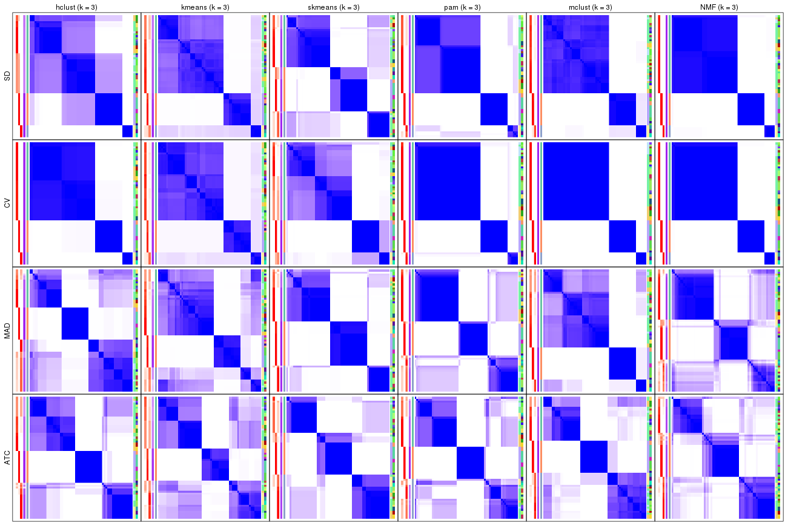
collect_plots(res_list, k = 4, fun = consensus_heatmap, mc.cores = 4)
collect_plots(res_list, k = 5, fun = consensus_heatmap, mc.cores = 4)
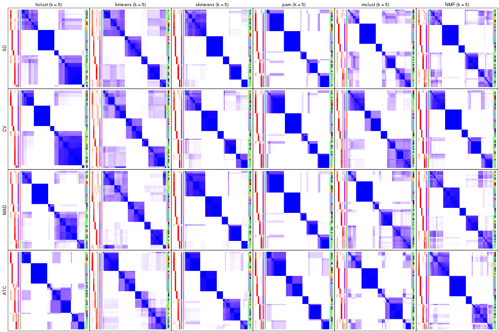
collect_plots(res_list, k = 6, fun = consensus_heatmap, mc.cores = 4)
Membership heatmaps for all methods. (What is a membership heatmap?)
collect_plots(res_list, k = 2, fun = membership_heatmap, mc.cores = 4)
collect_plots(res_list, k = 3, fun = membership_heatmap, mc.cores = 4)
collect_plots(res_list, k = 4, fun = membership_heatmap, mc.cores = 4)
collect_plots(res_list, k = 5, fun = membership_heatmap, mc.cores = 4)
collect_plots(res_list, k = 6, fun = membership_heatmap, mc.cores = 4)
Signature heatmaps for all methods. (What is a signature heatmap?)
Note in following heatmaps, rows are scaled.
collect_plots(res_list, k = 2, fun = get_signatures, mc.cores = 4)
collect_plots(res_list, k = 3, fun = get_signatures, mc.cores = 4)
collect_plots(res_list, k = 4, fun = get_signatures, mc.cores = 4)
collect_plots(res_list, k = 5, fun = get_signatures, mc.cores = 4)
collect_plots(res_list, k = 6, fun = get_signatures, mc.cores = 4)
The statistics used for measuring the stability of consensus partitioning. (How are they defined?)
get_stats(res_list, k = 2)
#> k 1-PAC mean_silhouette concordance area_increased Rand Jaccard
#> SD:NMF 2 0.900 0.956 0.978 0.454 0.531 0.531
#> CV:NMF 2 0.900 0.849 0.951 0.432 0.564 0.564
#> MAD:NMF 2 0.868 0.936 0.972 0.451 0.541 0.541
#> ATC:NMF 2 0.834 0.889 0.956 0.456 0.531 0.531
#> SD:skmeans 2 1.000 0.989 0.995 0.472 0.531 0.531
#> CV:skmeans 2 1.000 0.997 0.999 0.470 0.531 0.531
#> MAD:skmeans 2 0.902 0.943 0.974 0.487 0.522 0.522
#> ATC:skmeans 2 1.000 0.957 0.982 0.501 0.495 0.495
#> SD:mclust 2 0.434 0.936 0.931 0.406 0.607 0.607
#> CV:mclust 2 0.339 0.825 0.795 0.362 0.531 0.531
#> MAD:mclust 2 0.431 0.927 0.921 0.402 0.607 0.607
#> ATC:mclust 2 0.480 0.686 0.817 0.442 0.607 0.607
#> SD:kmeans 2 0.479 0.906 0.919 0.396 0.531 0.531
#> CV:kmeans 2 0.479 0.900 0.908 0.382 0.531 0.531
#> MAD:kmeans 2 0.817 0.902 0.954 0.420 0.607 0.607
#> ATC:kmeans 2 1.000 0.987 0.991 0.399 0.607 0.607
#> SD:pam 2 1.000 0.988 0.995 0.399 0.607 0.607
#> CV:pam 2 1.000 0.991 0.996 0.398 0.607 0.607
#> MAD:pam 2 1.000 0.987 0.994 0.413 0.591 0.591
#> ATC:pam 2 1.000 0.975 0.992 0.402 0.607 0.607
#> SD:hclust 2 0.538 0.783 0.881 0.298 0.820 0.820
#> CV:hclust 2 1.000 1.000 1.000 0.181 0.820 0.820
#> MAD:hclust 2 0.356 0.614 0.760 0.421 0.640 0.640
#> ATC:hclust 2 0.610 0.768 0.860 0.456 0.498 0.498
get_stats(res_list, k = 3)
#> k 1-PAC mean_silhouette concordance area_increased Rand Jaccard
#> SD:NMF 3 1.000 0.993 0.995 0.154 0.948 0.901
#> CV:NMF 3 1.000 0.999 1.000 0.208 0.905 0.833
#> MAD:NMF 3 0.661 0.773 0.876 0.404 0.776 0.592
#> ATC:NMF 3 0.707 0.815 0.908 0.476 0.715 0.500
#> SD:skmeans 3 0.652 0.887 0.898 0.352 0.815 0.652
#> CV:skmeans 3 0.679 0.838 0.821 0.268 0.948 0.901
#> MAD:skmeans 3 0.871 0.907 0.956 0.360 0.797 0.621
#> ATC:skmeans 3 0.719 0.882 0.902 0.322 0.702 0.466
#> SD:mclust 3 0.899 0.970 0.960 0.329 0.872 0.789
#> CV:mclust 3 1.000 1.000 1.000 0.441 0.948 0.901
#> MAD:mclust 3 0.681 0.780 0.877 0.499 0.872 0.789
#> ATC:mclust 3 0.666 0.817 0.913 0.504 0.723 0.544
#> SD:kmeans 3 0.580 0.860 0.866 0.422 0.948 0.901
#> CV:kmeans 3 0.594 0.921 0.901 0.404 0.948 0.901
#> MAD:kmeans 3 0.544 0.647 0.785 0.422 0.784 0.643
#> ATC:kmeans 3 0.554 0.684 0.778 0.559 0.730 0.555
#> SD:pam 3 0.756 0.918 0.946 0.372 0.872 0.789
#> CV:pam 3 1.000 0.991 0.996 0.308 0.872 0.789
#> MAD:pam 3 0.735 0.911 0.925 0.527 0.744 0.567
#> ATC:pam 3 0.689 0.726 0.868 0.651 0.727 0.550
#> SD:hclust 3 0.565 0.782 0.842 0.779 0.659 0.584
#> CV:hclust 3 1.000 0.991 0.991 1.885 0.659 0.584
#> MAD:hclust 3 0.679 0.813 0.877 0.483 0.620 0.440
#> ATC:hclust 3 0.627 0.801 0.893 0.416 0.843 0.684
get_stats(res_list, k = 4)
#> k 1-PAC mean_silhouette concordance area_increased Rand Jaccard
#> SD:NMF 4 0.881 0.900 0.957 0.3673 0.815 0.614
#> CV:NMF 4 0.886 0.890 0.954 0.3916 0.799 0.580
#> MAD:NMF 4 0.942 0.899 0.959 0.1351 0.946 0.840
#> ATC:NMF 4 0.758 0.754 0.888 0.0999 0.814 0.512
#> SD:skmeans 4 0.829 0.826 0.925 0.1427 0.948 0.849
#> CV:skmeans 4 0.877 0.839 0.927 0.2168 0.793 0.568
#> MAD:skmeans 4 0.823 0.829 0.929 0.1189 0.863 0.634
#> ATC:skmeans 4 0.913 0.943 0.969 0.1324 0.878 0.648
#> SD:mclust 4 0.766 0.752 0.886 0.3343 0.796 0.573
#> CV:mclust 4 0.801 0.823 0.915 0.3751 0.809 0.600
#> MAD:mclust 4 0.757 0.728 0.895 0.1677 0.793 0.568
#> ATC:mclust 4 0.863 0.795 0.902 0.1224 0.847 0.588
#> SD:kmeans 4 0.659 0.840 0.808 0.1916 0.823 0.630
#> CV:kmeans 4 0.657 0.682 0.748 0.2614 0.809 0.600
#> MAD:kmeans 4 0.621 0.859 0.869 0.1705 0.872 0.688
#> ATC:kmeans 4 0.637 0.868 0.846 0.1664 0.831 0.547
#> SD:pam 4 0.765 0.736 0.842 0.3088 0.796 0.573
#> CV:pam 4 0.984 0.928 0.972 0.3665 0.815 0.614
#> MAD:pam 4 0.786 0.643 0.820 0.1529 0.893 0.701
#> ATC:pam 4 0.820 0.888 0.935 0.1231 0.805 0.499
#> SD:hclust 4 0.752 0.820 0.912 0.3404 0.799 0.580
#> CV:hclust 4 0.773 0.782 0.875 0.2232 0.842 0.669
#> MAD:hclust 4 0.800 0.841 0.927 0.1534 0.934 0.805
#> ATC:hclust 4 0.811 0.807 0.895 0.1491 0.874 0.652
get_stats(res_list, k = 5)
#> k 1-PAC mean_silhouette concordance area_increased Rand Jaccard
#> SD:NMF 5 0.788 0.698 0.856 0.0945 0.883 0.619
#> CV:NMF 5 0.900 0.871 0.941 0.0868 0.887 0.619
#> MAD:NMF 5 0.810 0.784 0.872 0.0829 0.886 0.623
#> ATC:NMF 5 0.792 0.773 0.878 0.0444 0.974 0.899
#> SD:skmeans 5 0.904 0.922 0.954 0.0695 0.917 0.728
#> CV:skmeans 5 0.875 0.871 0.928 0.0897 0.868 0.566
#> MAD:skmeans 5 0.981 0.927 0.960 0.0494 0.952 0.825
#> ATC:skmeans 5 0.906 0.922 0.945 0.0447 0.956 0.826
#> SD:mclust 5 0.756 0.590 0.760 0.0883 0.899 0.651
#> CV:mclust 5 0.738 0.750 0.819 0.0669 0.960 0.866
#> MAD:mclust 5 0.773 0.693 0.819 0.0974 0.872 0.584
#> ATC:mclust 5 0.837 0.663 0.824 0.0540 0.943 0.782
#> SD:kmeans 5 0.647 0.727 0.793 0.1137 0.931 0.772
#> CV:kmeans 5 0.631 0.436 0.746 0.1029 0.850 0.574
#> MAD:kmeans 5 0.750 0.531 0.756 0.1064 0.961 0.870
#> ATC:kmeans 5 0.752 0.797 0.810 0.0742 1.000 1.000
#> SD:pam 5 0.920 0.845 0.943 0.1015 0.846 0.517
#> CV:pam 5 0.946 0.890 0.957 0.1065 0.901 0.671
#> MAD:pam 5 0.956 0.932 0.971 0.0845 0.881 0.605
#> ATC:pam 5 0.837 0.894 0.927 0.0411 0.965 0.861
#> SD:hclust 5 0.751 0.806 0.894 0.0169 0.996 0.984
#> CV:hclust 5 0.865 0.886 0.949 0.1079 0.955 0.865
#> MAD:hclust 5 0.803 0.797 0.880 0.0609 0.921 0.731
#> ATC:hclust 5 0.875 0.776 0.881 0.0502 0.979 0.916
get_stats(res_list, k = 6)
#> k 1-PAC mean_silhouette concordance area_increased Rand Jaccard
#> SD:NMF 6 0.845 0.822 0.864 0.0393 0.951 0.769
#> CV:NMF 6 0.842 0.678 0.827 0.0382 0.912 0.624
#> MAD:NMF 6 0.807 0.807 0.849 0.0490 0.964 0.826
#> ATC:NMF 6 0.820 0.668 0.836 0.0442 0.920 0.675
#> SD:skmeans 6 0.935 0.899 0.926 0.0542 0.946 0.770
#> CV:skmeans 6 0.864 0.812 0.881 0.0447 0.958 0.798
#> MAD:skmeans 6 0.892 0.906 0.925 0.0557 0.944 0.759
#> ATC:skmeans 6 0.891 0.890 0.927 0.0461 0.949 0.769
#> SD:mclust 6 0.692 0.570 0.691 0.0363 0.913 0.631
#> CV:mclust 6 0.760 0.789 0.817 0.0645 0.902 0.646
#> MAD:mclust 6 0.758 0.760 0.812 0.0581 0.936 0.716
#> ATC:mclust 6 0.789 0.756 0.796 0.0334 0.938 0.730
#> SD:kmeans 6 0.730 0.712 0.691 0.0644 0.902 0.618
#> CV:kmeans 6 0.699 0.632 0.761 0.0718 0.893 0.612
#> MAD:kmeans 6 0.761 0.815 0.787 0.0460 0.881 0.575
#> ATC:kmeans 6 0.792 0.582 0.724 0.0486 0.919 0.675
#> SD:pam 6 0.860 0.733 0.894 0.0238 0.973 0.870
#> CV:pam 6 0.917 0.853 0.920 0.0198 0.996 0.979
#> MAD:pam 6 0.877 0.781 0.884 0.0453 0.970 0.857
#> ATC:pam 6 0.896 0.919 0.915 0.0438 0.967 0.850
#> SD:hclust 6 0.736 0.721 0.874 0.0607 0.970 0.890
#> CV:hclust 6 0.797 0.706 0.865 0.0798 0.923 0.747
#> MAD:hclust 6 0.830 0.789 0.886 0.0230 0.963 0.850
#> ATC:hclust 6 0.881 0.824 0.918 0.0222 0.980 0.916
Following heatmap plots the partition for each combination of methods and the lightness correspond to the silhouette scores for samples in each method. On top the consensus subgroup is inferred from all methods by taking the mean silhouette scores as weight.
collect_stats(res_list, k = 2)

collect_stats(res_list, k = 3)
collect_stats(res_list, k = 4)
collect_stats(res_list, k = 5)
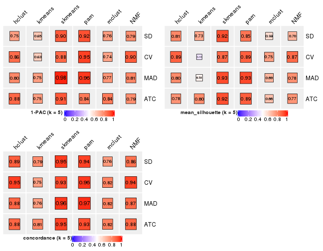
collect_stats(res_list, k = 6)
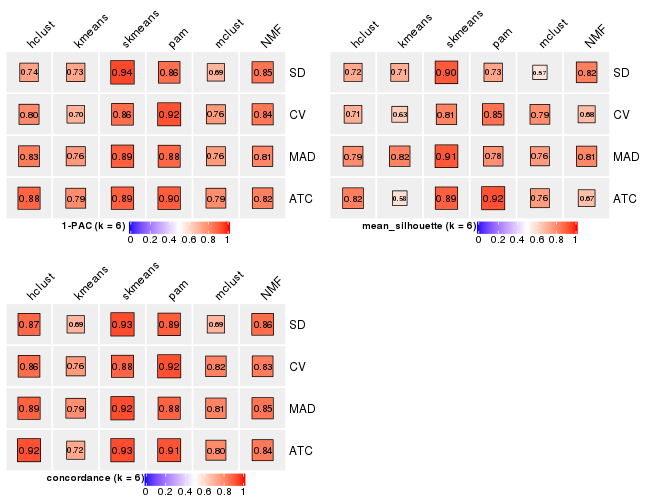
Collect partitions from all methods:
collect_classes(res_list, k = 2)
collect_classes(res_list, k = 3)
collect_classes(res_list, k = 4)

collect_classes(res_list, k = 5)
collect_classes(res_list, k = 6)
Overlap of top rows from different top-row methods:
top_rows_overlap(res_list, top_n = 1000, method = "euler")
top_rows_overlap(res_list, top_n = 2000, method = "euler")
top_rows_overlap(res_list, top_n = 3000, method = "euler")
top_rows_overlap(res_list, top_n = 4000, method = "euler")
top_rows_overlap(res_list, top_n = 5000, method = "euler")
Also visualize the correspondance of rankings between different top-row methods:
top_rows_overlap(res_list, top_n = 1000, method = "correspondance")
top_rows_overlap(res_list, top_n = 2000, method = "correspondance")
top_rows_overlap(res_list, top_n = 3000, method = "correspondance")
top_rows_overlap(res_list, top_n = 4000, method = "correspondance")
top_rows_overlap(res_list, top_n = 5000, method = "correspondance")
Heatmaps of the top rows:
top_rows_heatmap(res_list, top_n = 1000)
top_rows_heatmap(res_list, top_n = 2000)
top_rows_heatmap(res_list, top_n = 3000)
top_rows_heatmap(res_list, top_n = 4000)
top_rows_heatmap(res_list, top_n = 5000)
Test correlation between subgroups and known annotations. If the known annotation is numeric, one-way ANOVA test is applied, and if the known annotation is discrete, chi-squared contingency table test is applied.
test_to_known_factors(res_list, k = 2)
#> n cell.type(p) tissue(p) k
#> SD:NMF 60 2.90e-12 0.000618 2
#> CV:NMF 55 6.87e-12 0.000758 2
#> MAD:NMF 59 6.69e-11 0.001556 2
#> ATC:NMF 57 9.44e-10 0.010219 2
#> SD:skmeans 61 1.79e-12 0.000463 2
#> CV:skmeans 61 1.79e-12 0.000463 2
#> MAD:skmeans 61 9.94e-12 0.001040 2
#> ATC:skmeans 59 2.35e-09 0.006645 2
#> SD:mclust 61 1.79e-12 0.000463 2
#> CV:mclust 55 6.87e-12 0.000758 2
#> MAD:mclust 61 1.79e-12 0.000463 2
#> ATC:mclust 61 1.79e-12 0.000463 2
#> SD:kmeans 55 6.87e-12 0.000758 2
#> CV:kmeans 55 6.87e-12 0.000758 2
#> MAD:kmeans 56 2.01e-11 0.000860 2
#> ATC:kmeans 61 1.79e-12 0.000463 2
#> SD:pam 61 1.79e-12 0.000463 2
#> CV:pam 61 1.79e-12 0.000463 2
#> MAD:pam 61 1.33e-11 0.000942 2
#> ATC:pam 60 2.90e-12 0.000618 2
#> SD:hclust 61 1.79e-12 0.000463 2
#> CV:hclust 61 1.79e-12 0.000463 2
#> MAD:hclust 53 2.49e-04 0.010157 2
#> ATC:hclust 58 1.88e-07 0.013073 2
test_to_known_factors(res_list, k = 3)
#> n cell.type(p) tissue(p) k
#> SD:NMF 61 1.28e-22 1.86e-06 3
#> CV:NMF 61 1.28e-22 1.86e-06 3
#> MAD:NMF 54 3.25e-09 1.55e-04 3
#> ATC:NMF 57 1.86e-09 1.88e-04 3
#> SD:skmeans 61 1.33e-10 2.31e-05 3
#> CV:skmeans 60 3.32e-22 3.23e-06 3
#> MAD:skmeans 59 1.71e-10 2.53e-05 3
#> ATC:skmeans 61 6.01e-10 3.26e-05 3
#> SD:mclust 61 1.28e-22 1.86e-06 3
#> CV:mclust 61 1.28e-22 1.86e-06 3
#> MAD:mclust 50 4.27e-18 7.16e-05 3
#> ATC:mclust 56 1.84e-12 6.12e-06 3
#> SD:kmeans 61 1.28e-22 1.86e-06 3
#> CV:kmeans 61 1.28e-22 1.86e-06 3
#> MAD:kmeans 46 1.82e-16 6.62e-05 3
#> ATC:kmeans 55 2.31e-14 2.26e-04 3
#> SD:pam 61 1.28e-22 1.86e-06 3
#> CV:pam 61 1.28e-22 1.86e-06 3
#> MAD:pam 60 1.62e-11 1.26e-04 3
#> ATC:pam 56 4.99e-11 9.43e-05 3
#> SD:hclust 61 1.28e-22 1.86e-06 3
#> CV:hclust 61 1.28e-22 1.86e-06 3
#> MAD:hclust 58 4.70e-11 6.17e-05 3
#> ATC:hclust 59 8.60e-15 1.94e-04 3
test_to_known_factors(res_list, k = 4)
#> n cell.type(p) tissue(p) k
#> SD:NMF 59 5.24e-20 1.62e-07 4
#> CV:NMF 58 6.13e-20 3.11e-08 4
#> MAD:NMF 58 1.16e-19 2.60e-07 4
#> ATC:NMF 52 2.97e-16 1.56e-07 4
#> SD:skmeans 53 3.16e-17 5.99e-07 4
#> CV:skmeans 56 6.59e-19 1.51e-08 4
#> MAD:skmeans 56 1.45e-16 1.43e-06 4
#> ATC:skmeans 60 1.12e-17 3.40e-07 4
#> SD:mclust 50 7.86e-17 2.07e-08 4
#> CV:mclust 52 1.11e-17 3.11e-09 4
#> MAD:mclust 50 3.81e-17 1.99e-08 4
#> ATC:mclust 53 3.18e-20 1.47e-06 4
#> SD:kmeans 60 1.67e-20 1.78e-07 4
#> CV:kmeans 51 3.23e-17 1.89e-09 4
#> MAD:kmeans 60 1.08e-20 8.22e-08 4
#> ATC:kmeans 61 6.56e-16 2.14e-06 4
#> SD:pam 55 1.95e-18 9.19e-08 4
#> CV:pam 58 4.47e-20 1.38e-07 4
#> MAD:pam 47 6.53e-10 4.86e-05 4
#> ATC:pam 61 3.77e-14 9.90e-07 4
#> SD:hclust 54 6.72e-20 1.66e-06 4
#> CV:hclust 55 4.18e-18 1.44e-07 4
#> MAD:hclust 55 1.30e-19 2.02e-06 4
#> ATC:hclust 55 3.75e-14 7.75e-06 4
test_to_known_factors(res_list, k = 5)
#> n cell.type(p) tissue(p) k
#> SD:NMF 40 2.44e-16 1.28e-07 5
#> CV:NMF 57 4.36e-19 3.25e-08 5
#> MAD:NMF 51 9.00e-19 3.48e-08 5
#> ATC:NMF 55 7.77e-18 2.75e-06 5
#> SD:skmeans 60 7.29e-21 2.38e-08 5
#> CV:skmeans 59 1.22e-19 9.95e-10 5
#> MAD:skmeans 59 1.57e-20 4.53e-08 5
#> ATC:skmeans 61 4.61e-22 6.47e-08 5
#> SD:mclust 44 2.32e-14 1.63e-11 5
#> CV:mclust 54 4.41e-18 7.31e-09 5
#> MAD:mclust 53 2.68e-19 2.43e-08 5
#> ATC:mclust 44 7.71e-19 7.65e-06 5
#> SD:kmeans 45 4.07e-14 5.80e-07 5
#> CV:kmeans 38 3.11e-13 1.92e-05 5
#> MAD:kmeans 37 7.18e-16 6.35e-06 5
#> ATC:kmeans 60 7.80e-16 1.81e-06 5
#> SD:pam 55 3.28e-19 1.90e-10 5
#> CV:pam 57 2.85e-18 5.20e-10 5
#> MAD:pam 60 8.70e-22 3.68e-10 5
#> ATC:pam 60 8.66e-22 1.91e-08 5
#> SD:hclust 54 5.95e-18 1.60e-08 5
#> CV:hclust 57 7.30e-17 2.19e-09 5
#> MAD:hclust 58 4.98e-19 1.32e-08 5
#> ATC:hclust 58 1.18e-13 1.58e-05 5
test_to_known_factors(res_list, k = 6)
#> n cell.type(p) tissue(p) k
#> SD:NMF 59 1.40e-21 3.03e-09 6
#> CV:NMF 48 1.43e-18 3.24e-07 6
#> MAD:NMF 56 4.10e-22 6.80e-09 6
#> ATC:NMF 42 3.39e-17 4.55e-08 6
#> SD:skmeans 60 1.42e-21 3.04e-10 6
#> CV:skmeans 56 1.85e-20 5.11e-13 6
#> MAD:skmeans 60 5.50e-21 1.05e-09 6
#> ATC:skmeans 58 1.59e-20 8.94e-09 6
#> SD:mclust 40 1.69e-12 2.56e-09 6
#> CV:mclust 55 2.23e-15 1.99e-12 6
#> MAD:mclust 58 8.92e-19 5.72e-09 6
#> ATC:mclust 53 4.16e-17 9.29e-10 6
#> SD:kmeans 44 9.73e-14 7.81e-09 6
#> CV:kmeans 49 8.08e-15 1.83e-10 6
#> MAD:kmeans 60 5.50e-21 1.05e-09 6
#> ATC:kmeans 51 9.98e-11 1.19e-10 6
#> SD:pam 52 3.69e-18 7.19e-12 6
#> CV:pam 57 1.51e-16 2.33e-12 6
#> MAD:pam 58 3.02e-21 6.34e-13 6
#> ATC:pam 60 6.05e-20 1.22e-10 6
#> SD:hclust 50 7.62e-18 1.32e-10 6
#> CV:hclust 46 8.13e-15 5.23e-07 6
#> MAD:hclust 54 9.39e-18 4.35e-10 6
#> ATC:hclust 56 2.97e-18 1.00e-06 6
The object with results only for a single top-value method and a single partition method can be extracted as:
res = res_list["SD", "hclust"]
# you can also extract it by
# res = res_list["SD:hclust"]
A summary of res and all the functions that can be applied to it:
res
#> A 'ConsensusPartition' object with k = 2, 3, 4, 5, 6.
#> On a matrix with 18496 rows and 61 columns.
#> Top rows (1000, 2000, 3000, 4000, 5000) are extracted by 'SD' method.
#> Subgroups are detected by 'hclust' method.
#> Performed in total 1250 partitions by row resampling.
#> Best k for subgroups seems to be 4.
#>
#> Following methods can be applied to this 'ConsensusPartition' object:
#> [1] "cola_report" "collect_classes" "collect_plots"
#> [4] "collect_stats" "colnames" "compare_signatures"
#> [7] "consensus_heatmap" "dimension_reduction" "functional_enrichment"
#> [10] "get_anno_col" "get_anno" "get_classes"
#> [13] "get_consensus" "get_matrix" "get_membership"
#> [16] "get_param" "get_signatures" "get_stats"
#> [19] "is_best_k" "is_stable_k" "membership_heatmap"
#> [22] "ncol" "nrow" "plot_ecdf"
#> [25] "rownames" "select_partition_number" "show"
#> [28] "suggest_best_k" "test_to_known_factors"
collect_plots() function collects all the plots made from res for all k (number of partitions)
into one single page to provide an easy and fast comparison between different k.
collect_plots(res)
The plots are:
k and the heatmap of
predicted classes for each k.k.k.k.All the plots in panels can be made by individual functions and they are plotted later in this section.
select_partition_number() produces several plots showing different
statistics for choosing “optimized” k. There are following statistics:
k;k, the area increased is defined as \(A_k - A_{k-1}\).The detailed explanations of these statistics can be found in the cola vignette.
Generally speaking, lower PAC score, higher mean silhouette score or higher
concordance corresponds to better partition. Rand index and Jaccard index
measure how similar the current partition is compared to partition with k-1.
If they are too similar, we won't accept k is better than k-1.
select_partition_number(res)
The numeric values for all these statistics can be obtained by get_stats().
get_stats(res)
#> k 1-PAC mean_silhouette concordance area_increased Rand Jaccard
#> 2 2 0.538 0.783 0.881 0.2977 0.820 0.820
#> 3 3 0.565 0.782 0.842 0.7790 0.659 0.584
#> 4 4 0.752 0.820 0.912 0.3404 0.799 0.580
#> 5 5 0.751 0.806 0.894 0.0169 0.996 0.984
#> 6 6 0.736 0.721 0.874 0.0607 0.970 0.890
suggest_best_k() suggests the best \(k\) based on these statistics. The rules are as follows:
NA.suggest_best_k(res)
#> [1] 4
Following shows the table of the partitions (You need to click the show/hide
code output link to see it). The membership matrix (columns with name p*)
is inferred by
clue::cl_consensus()
function with the SE method. Basically the value in the membership matrix
represents the probability to belong to a certain group. The finall class
label for an item is determined with the group with highest probability it
belongs to.
In get_classes() function, the entropy is calculated from the membership
matrix and the silhouette score is calculated from the consensus matrix.
cbind(get_classes(res, k = 2), get_membership(res, k = 2))
#> class entropy silhouette p1 p2
#> GSM72644 1 0.000 0.849 1.000 0.000
#> GSM72647 1 0.000 0.849 1.000 0.000
#> GSM72657 1 0.000 0.849 1.000 0.000
#> GSM72658 1 0.000 0.849 1.000 0.000
#> GSM72659 1 0.000 0.849 1.000 0.000
#> GSM72660 1 0.000 0.849 1.000 0.000
#> GSM72683 1 0.000 0.849 1.000 0.000
#> GSM72684 1 0.000 0.849 1.000 0.000
#> GSM72686 1 0.000 0.849 1.000 0.000
#> GSM72687 1 0.000 0.849 1.000 0.000
#> GSM72688 1 0.000 0.849 1.000 0.000
#> GSM72689 1 0.000 0.849 1.000 0.000
#> GSM72690 1 0.000 0.849 1.000 0.000
#> GSM72691 1 0.000 0.849 1.000 0.000
#> GSM72692 1 0.000 0.849 1.000 0.000
#> GSM72693 1 0.000 0.849 1.000 0.000
#> GSM72645 2 0.260 1.000 0.044 0.956
#> GSM72646 2 0.260 1.000 0.044 0.956
#> GSM72678 2 0.260 1.000 0.044 0.956
#> GSM72679 2 0.260 1.000 0.044 0.956
#> GSM72699 2 0.260 1.000 0.044 0.956
#> GSM72700 2 0.260 1.000 0.044 0.956
#> GSM72654 1 0.971 0.557 0.600 0.400
#> GSM72655 1 0.971 0.557 0.600 0.400
#> GSM72661 1 0.745 0.725 0.788 0.212
#> GSM72662 1 0.745 0.725 0.788 0.212
#> GSM72663 1 0.745 0.725 0.788 0.212
#> GSM72665 1 0.971 0.557 0.600 0.400
#> GSM72666 1 0.971 0.557 0.600 0.400
#> GSM72640 1 0.952 0.589 0.628 0.372
#> GSM72641 1 0.971 0.557 0.600 0.400
#> GSM72642 1 0.224 0.832 0.964 0.036
#> GSM72643 1 0.000 0.849 1.000 0.000
#> GSM72651 1 0.939 0.604 0.644 0.356
#> GSM72652 1 0.939 0.604 0.644 0.356
#> GSM72653 1 0.971 0.557 0.600 0.400
#> GSM72656 1 0.971 0.557 0.600 0.400
#> GSM72667 1 0.000 0.849 1.000 0.000
#> GSM72668 1 0.971 0.557 0.600 0.400
#> GSM72669 1 0.000 0.849 1.000 0.000
#> GSM72670 1 0.000 0.849 1.000 0.000
#> GSM72671 1 0.971 0.557 0.600 0.400
#> GSM72672 1 0.971 0.557 0.600 0.400
#> GSM72696 1 0.000 0.849 1.000 0.000
#> GSM72697 1 0.000 0.849 1.000 0.000
#> GSM72674 1 0.000 0.849 1.000 0.000
#> GSM72675 1 0.000 0.849 1.000 0.000
#> GSM72676 1 0.000 0.849 1.000 0.000
#> GSM72677 1 0.118 0.843 0.984 0.016
#> GSM72680 1 0.971 0.557 0.600 0.400
#> GSM72682 1 0.000 0.849 1.000 0.000
#> GSM72685 1 0.971 0.557 0.600 0.400
#> GSM72694 1 0.000 0.849 1.000 0.000
#> GSM72695 1 0.000 0.849 1.000 0.000
#> GSM72698 1 0.000 0.849 1.000 0.000
#> GSM72648 1 0.000 0.849 1.000 0.000
#> GSM72649 1 0.000 0.849 1.000 0.000
#> GSM72650 1 0.000 0.849 1.000 0.000
#> GSM72664 1 0.971 0.557 0.600 0.400
#> GSM72673 1 0.000 0.849 1.000 0.000
#> GSM72681 1 0.141 0.841 0.980 0.020
cbind(get_classes(res, k = 3), get_membership(res, k = 3))
#> class entropy silhouette p1 p2 p3
#> GSM72644 2 0.0000 1.000 0.000 1.000 0
#> GSM72647 2 0.0000 1.000 0.000 1.000 0
#> GSM72657 2 0.0000 1.000 0.000 1.000 0
#> GSM72658 2 0.0000 1.000 0.000 1.000 0
#> GSM72659 2 0.0000 1.000 0.000 1.000 0
#> GSM72660 2 0.0000 1.000 0.000 1.000 0
#> GSM72683 2 0.0000 1.000 0.000 1.000 0
#> GSM72684 2 0.0000 1.000 0.000 1.000 0
#> GSM72686 2 0.0000 1.000 0.000 1.000 0
#> GSM72687 2 0.0000 1.000 0.000 1.000 0
#> GSM72688 2 0.0000 1.000 0.000 1.000 0
#> GSM72689 2 0.0000 1.000 0.000 1.000 0
#> GSM72690 2 0.0000 1.000 0.000 1.000 0
#> GSM72691 2 0.0000 1.000 0.000 1.000 0
#> GSM72692 2 0.0000 1.000 0.000 1.000 0
#> GSM72693 2 0.0000 1.000 0.000 1.000 0
#> GSM72645 3 0.0000 1.000 0.000 0.000 1
#> GSM72646 3 0.0000 1.000 0.000 0.000 1
#> GSM72678 3 0.0000 1.000 0.000 0.000 1
#> GSM72679 3 0.0000 1.000 0.000 0.000 1
#> GSM72699 3 0.0000 1.000 0.000 0.000 1
#> GSM72700 3 0.0000 1.000 0.000 0.000 1
#> GSM72654 1 0.0000 0.674 1.000 0.000 0
#> GSM72655 1 0.0000 0.674 1.000 0.000 0
#> GSM72661 1 0.4796 0.690 0.780 0.220 0
#> GSM72662 1 0.4796 0.690 0.780 0.220 0
#> GSM72663 1 0.4796 0.690 0.780 0.220 0
#> GSM72665 1 0.0000 0.674 1.000 0.000 0
#> GSM72666 1 0.0000 0.674 1.000 0.000 0
#> GSM72640 1 0.1163 0.685 0.972 0.028 0
#> GSM72641 1 0.0000 0.674 1.000 0.000 0
#> GSM72642 1 0.5988 0.660 0.632 0.368 0
#> GSM72643 1 0.6267 0.634 0.548 0.452 0
#> GSM72651 1 0.1753 0.691 0.952 0.048 0
#> GSM72652 1 0.1753 0.691 0.952 0.048 0
#> GSM72653 1 0.0000 0.674 1.000 0.000 0
#> GSM72656 1 0.0000 0.674 1.000 0.000 0
#> GSM72667 1 0.6252 0.641 0.556 0.444 0
#> GSM72668 1 0.0237 0.675 0.996 0.004 0
#> GSM72669 1 0.6252 0.641 0.556 0.444 0
#> GSM72670 1 0.6252 0.641 0.556 0.444 0
#> GSM72671 1 0.0237 0.675 0.996 0.004 0
#> GSM72672 1 0.0000 0.674 1.000 0.000 0
#> GSM72696 1 0.6267 0.634 0.548 0.452 0
#> GSM72697 1 0.6267 0.634 0.548 0.452 0
#> GSM72674 1 0.6267 0.634 0.548 0.452 0
#> GSM72675 1 0.6267 0.634 0.548 0.452 0
#> GSM72676 1 0.6267 0.634 0.548 0.452 0
#> GSM72677 1 0.6154 0.653 0.592 0.408 0
#> GSM72680 1 0.0000 0.674 1.000 0.000 0
#> GSM72682 1 0.6267 0.634 0.548 0.452 0
#> GSM72685 1 0.0000 0.674 1.000 0.000 0
#> GSM72694 1 0.6267 0.634 0.548 0.452 0
#> GSM72695 1 0.6267 0.634 0.548 0.452 0
#> GSM72698 1 0.6267 0.634 0.548 0.452 0
#> GSM72648 1 0.6252 0.641 0.556 0.444 0
#> GSM72649 1 0.6252 0.641 0.556 0.444 0
#> GSM72650 1 0.6252 0.641 0.556 0.444 0
#> GSM72664 1 0.0000 0.674 1.000 0.000 0
#> GSM72673 1 0.6267 0.634 0.548 0.452 0
#> GSM72681 1 0.6140 0.655 0.596 0.404 0
cbind(get_classes(res, k = 4), get_membership(res, k = 4))
#> class entropy silhouette p1 p2 p3 p4
#> GSM72644 2 0.0000 1.000 0.000 1 0 0.000
#> GSM72647 2 0.0000 1.000 0.000 1 0 0.000
#> GSM72657 2 0.0000 1.000 0.000 1 0 0.000
#> GSM72658 2 0.0000 1.000 0.000 1 0 0.000
#> GSM72659 2 0.0000 1.000 0.000 1 0 0.000
#> GSM72660 2 0.0000 1.000 0.000 1 0 0.000
#> GSM72683 2 0.0000 1.000 0.000 1 0 0.000
#> GSM72684 2 0.0000 1.000 0.000 1 0 0.000
#> GSM72686 2 0.0000 1.000 0.000 1 0 0.000
#> GSM72687 2 0.0000 1.000 0.000 1 0 0.000
#> GSM72688 2 0.0000 1.000 0.000 1 0 0.000
#> GSM72689 2 0.0000 1.000 0.000 1 0 0.000
#> GSM72690 2 0.0000 1.000 0.000 1 0 0.000
#> GSM72691 2 0.0000 1.000 0.000 1 0 0.000
#> GSM72692 2 0.0000 1.000 0.000 1 0 0.000
#> GSM72693 2 0.0000 1.000 0.000 1 0 0.000
#> GSM72645 3 0.0000 1.000 0.000 0 1 0.000
#> GSM72646 3 0.0000 1.000 0.000 0 1 0.000
#> GSM72678 3 0.0000 1.000 0.000 0 1 0.000
#> GSM72679 3 0.0000 1.000 0.000 0 1 0.000
#> GSM72699 3 0.0000 1.000 0.000 0 1 0.000
#> GSM72700 3 0.0000 1.000 0.000 0 1 0.000
#> GSM72654 1 0.4500 0.713 0.684 0 0 0.316
#> GSM72655 1 0.4500 0.713 0.684 0 0 0.316
#> GSM72661 4 0.4804 0.280 0.384 0 0 0.616
#> GSM72662 4 0.4804 0.280 0.384 0 0 0.616
#> GSM72663 4 0.4804 0.280 0.384 0 0 0.616
#> GSM72665 1 0.3486 0.783 0.812 0 0 0.188
#> GSM72666 1 0.3486 0.783 0.812 0 0 0.188
#> GSM72640 1 0.3726 0.766 0.788 0 0 0.212
#> GSM72641 1 0.2408 0.798 0.896 0 0 0.104
#> GSM72642 4 0.4866 0.210 0.404 0 0 0.596
#> GSM72643 4 0.0000 0.860 0.000 0 0 1.000
#> GSM72651 1 0.4933 0.451 0.568 0 0 0.432
#> GSM72652 1 0.4933 0.451 0.568 0 0 0.432
#> GSM72653 1 0.0000 0.759 1.000 0 0 0.000
#> GSM72656 1 0.0000 0.759 1.000 0 0 0.000
#> GSM72667 4 0.1557 0.833 0.056 0 0 0.944
#> GSM72668 1 0.4431 0.719 0.696 0 0 0.304
#> GSM72669 4 0.1557 0.833 0.056 0 0 0.944
#> GSM72670 4 0.1557 0.833 0.056 0 0 0.944
#> GSM72671 1 0.4431 0.719 0.696 0 0 0.304
#> GSM72672 1 0.0000 0.759 1.000 0 0 0.000
#> GSM72696 4 0.0188 0.859 0.004 0 0 0.996
#> GSM72697 4 0.0188 0.859 0.004 0 0 0.996
#> GSM72674 4 0.0000 0.860 0.000 0 0 1.000
#> GSM72675 4 0.0000 0.860 0.000 0 0 1.000
#> GSM72676 4 0.0000 0.860 0.000 0 0 1.000
#> GSM72677 4 0.4898 0.365 0.416 0 0 0.584
#> GSM72680 1 0.1302 0.791 0.956 0 0 0.044
#> GSM72682 4 0.0000 0.860 0.000 0 0 1.000
#> GSM72685 1 0.0921 0.782 0.972 0 0 0.028
#> GSM72694 4 0.0000 0.860 0.000 0 0 1.000
#> GSM72695 4 0.0000 0.860 0.000 0 0 1.000
#> GSM72698 4 0.0000 0.860 0.000 0 0 1.000
#> GSM72648 4 0.0336 0.859 0.008 0 0 0.992
#> GSM72649 4 0.0336 0.859 0.008 0 0 0.992
#> GSM72650 4 0.0336 0.859 0.008 0 0 0.992
#> GSM72664 1 0.1211 0.789 0.960 0 0 0.040
#> GSM72673 4 0.0000 0.860 0.000 0 0 1.000
#> GSM72681 4 0.4431 0.546 0.304 0 0 0.696
cbind(get_classes(res, k = 5), get_membership(res, k = 5))
#> class entropy silhouette p1 p2 p3 p4 p5
#> GSM72644 2 0.0000 1.000 0.000 1 0.000 0.000 0.000
#> GSM72647 2 0.0000 1.000 0.000 1 0.000 0.000 0.000
#> GSM72657 2 0.0000 1.000 0.000 1 0.000 0.000 0.000
#> GSM72658 2 0.0000 1.000 0.000 1 0.000 0.000 0.000
#> GSM72659 2 0.0000 1.000 0.000 1 0.000 0.000 0.000
#> GSM72660 2 0.0000 1.000 0.000 1 0.000 0.000 0.000
#> GSM72683 2 0.0000 1.000 0.000 1 0.000 0.000 0.000
#> GSM72684 2 0.0000 1.000 0.000 1 0.000 0.000 0.000
#> GSM72686 2 0.0000 1.000 0.000 1 0.000 0.000 0.000
#> GSM72687 2 0.0000 1.000 0.000 1 0.000 0.000 0.000
#> GSM72688 2 0.0000 1.000 0.000 1 0.000 0.000 0.000
#> GSM72689 2 0.0000 1.000 0.000 1 0.000 0.000 0.000
#> GSM72690 2 0.0000 1.000 0.000 1 0.000 0.000 0.000
#> GSM72691 2 0.0000 1.000 0.000 1 0.000 0.000 0.000
#> GSM72692 2 0.0000 1.000 0.000 1 0.000 0.000 0.000
#> GSM72693 2 0.0000 1.000 0.000 1 0.000 0.000 0.000
#> GSM72645 3 0.0000 1.000 0.000 0 1.000 0.000 0.000
#> GSM72646 3 0.0000 1.000 0.000 0 1.000 0.000 0.000
#> GSM72678 5 0.2813 1.000 0.000 0 0.168 0.000 0.832
#> GSM72679 5 0.2813 1.000 0.000 0 0.168 0.000 0.832
#> GSM72699 3 0.0000 1.000 0.000 0 1.000 0.000 0.000
#> GSM72700 3 0.0000 1.000 0.000 0 1.000 0.000 0.000
#> GSM72654 1 0.4227 0.695 0.692 0 0.000 0.292 0.016
#> GSM72655 1 0.4227 0.695 0.692 0 0.000 0.292 0.016
#> GSM72661 4 0.4171 0.253 0.396 0 0.000 0.604 0.000
#> GSM72662 4 0.4171 0.253 0.396 0 0.000 0.604 0.000
#> GSM72663 4 0.4171 0.253 0.396 0 0.000 0.604 0.000
#> GSM72665 1 0.3203 0.762 0.820 0 0.000 0.168 0.012
#> GSM72666 1 0.3203 0.762 0.820 0 0.000 0.168 0.012
#> GSM72640 1 0.3944 0.741 0.768 0 0.000 0.200 0.032
#> GSM72641 1 0.3019 0.752 0.864 0 0.000 0.088 0.048
#> GSM72642 4 0.5048 0.212 0.380 0 0.000 0.580 0.040
#> GSM72643 4 0.0000 0.856 0.000 0 0.000 1.000 0.000
#> GSM72651 1 0.4497 0.443 0.568 0 0.000 0.424 0.008
#> GSM72652 1 0.4497 0.443 0.568 0 0.000 0.424 0.008
#> GSM72653 1 0.2648 0.657 0.848 0 0.000 0.000 0.152
#> GSM72656 1 0.2648 0.657 0.848 0 0.000 0.000 0.152
#> GSM72667 4 0.1571 0.827 0.060 0 0.000 0.936 0.004
#> GSM72668 1 0.3838 0.705 0.716 0 0.000 0.280 0.004
#> GSM72669 4 0.1571 0.827 0.060 0 0.000 0.936 0.004
#> GSM72670 4 0.1571 0.827 0.060 0 0.000 0.936 0.004
#> GSM72671 1 0.3838 0.705 0.716 0 0.000 0.280 0.004
#> GSM72672 1 0.2648 0.657 0.848 0 0.000 0.000 0.152
#> GSM72696 4 0.0162 0.855 0.004 0 0.000 0.996 0.000
#> GSM72697 4 0.0162 0.855 0.004 0 0.000 0.996 0.000
#> GSM72674 4 0.0000 0.856 0.000 0 0.000 1.000 0.000
#> GSM72675 4 0.0000 0.856 0.000 0 0.000 1.000 0.000
#> GSM72676 4 0.0000 0.856 0.000 0 0.000 1.000 0.000
#> GSM72677 4 0.5226 0.351 0.376 0 0.000 0.572 0.052
#> GSM72680 1 0.2473 0.722 0.896 0 0.000 0.032 0.072
#> GSM72682 4 0.0162 0.855 0.000 0 0.000 0.996 0.004
#> GSM72685 1 0.1774 0.715 0.932 0 0.000 0.016 0.052
#> GSM72694 4 0.0000 0.856 0.000 0 0.000 1.000 0.000
#> GSM72695 4 0.0000 0.856 0.000 0 0.000 1.000 0.000
#> GSM72698 4 0.0000 0.856 0.000 0 0.000 1.000 0.000
#> GSM72648 4 0.0451 0.854 0.008 0 0.000 0.988 0.004
#> GSM72649 4 0.0451 0.854 0.008 0 0.000 0.988 0.004
#> GSM72650 4 0.0451 0.854 0.008 0 0.000 0.988 0.004
#> GSM72664 1 0.1310 0.727 0.956 0 0.000 0.024 0.020
#> GSM72673 4 0.0000 0.856 0.000 0 0.000 1.000 0.000
#> GSM72681 4 0.4689 0.542 0.264 0 0.000 0.688 0.048
cbind(get_classes(res, k = 6), get_membership(res, k = 6))
#> class entropy silhouette p1 p2 p3 p4 p5 p6
#> GSM72644 2 0.0000 1.0000 0.000 1 0.000 0.000 0.000 0.000
#> GSM72647 2 0.0000 1.0000 0.000 1 0.000 0.000 0.000 0.000
#> GSM72657 2 0.0000 1.0000 0.000 1 0.000 0.000 0.000 0.000
#> GSM72658 2 0.0000 1.0000 0.000 1 0.000 0.000 0.000 0.000
#> GSM72659 2 0.0000 1.0000 0.000 1 0.000 0.000 0.000 0.000
#> GSM72660 2 0.0000 1.0000 0.000 1 0.000 0.000 0.000 0.000
#> GSM72683 2 0.0000 1.0000 0.000 1 0.000 0.000 0.000 0.000
#> GSM72684 2 0.0000 1.0000 0.000 1 0.000 0.000 0.000 0.000
#> GSM72686 2 0.0000 1.0000 0.000 1 0.000 0.000 0.000 0.000
#> GSM72687 2 0.0000 1.0000 0.000 1 0.000 0.000 0.000 0.000
#> GSM72688 2 0.0000 1.0000 0.000 1 0.000 0.000 0.000 0.000
#> GSM72689 2 0.0000 1.0000 0.000 1 0.000 0.000 0.000 0.000
#> GSM72690 2 0.0000 1.0000 0.000 1 0.000 0.000 0.000 0.000
#> GSM72691 2 0.0000 1.0000 0.000 1 0.000 0.000 0.000 0.000
#> GSM72692 2 0.0000 1.0000 0.000 1 0.000 0.000 0.000 0.000
#> GSM72693 2 0.0000 1.0000 0.000 1 0.000 0.000 0.000 0.000
#> GSM72645 3 0.0000 1.0000 0.000 0 1.000 0.000 0.000 0.000
#> GSM72646 3 0.0000 1.0000 0.000 0 1.000 0.000 0.000 0.000
#> GSM72678 5 0.0146 1.0000 0.000 0 0.004 0.000 0.996 0.000
#> GSM72679 5 0.0146 1.0000 0.000 0 0.004 0.000 0.996 0.000
#> GSM72699 3 0.0000 1.0000 0.000 0 1.000 0.000 0.000 0.000
#> GSM72700 3 0.0000 1.0000 0.000 0 1.000 0.000 0.000 0.000
#> GSM72654 1 0.1958 0.6493 0.896 0 0.000 0.100 0.004 0.000
#> GSM72655 1 0.1958 0.6493 0.896 0 0.000 0.100 0.004 0.000
#> GSM72661 4 0.4591 0.0682 0.408 0 0.000 0.552 0.000 0.040
#> GSM72662 4 0.4591 0.0682 0.408 0 0.000 0.552 0.000 0.040
#> GSM72663 4 0.4591 0.0682 0.408 0 0.000 0.552 0.000 0.040
#> GSM72665 1 0.2971 0.6003 0.844 0 0.000 0.104 0.000 0.052
#> GSM72666 1 0.2971 0.6003 0.844 0 0.000 0.104 0.000 0.052
#> GSM72640 1 0.4175 0.5538 0.740 0 0.000 0.104 0.000 0.156
#> GSM72641 1 0.4847 -0.1166 0.500 0 0.000 0.056 0.000 0.444
#> GSM72642 4 0.5847 0.2130 0.284 0 0.000 0.484 0.000 0.232
#> GSM72643 4 0.0000 0.7885 0.000 0 0.000 1.000 0.000 0.000
#> GSM72651 1 0.4343 0.4962 0.592 0 0.000 0.380 0.000 0.028
#> GSM72652 1 0.4343 0.4962 0.592 0 0.000 0.380 0.000 0.028
#> GSM72653 6 0.0000 0.6343 0.000 0 0.000 0.000 0.000 1.000
#> GSM72656 6 0.0000 0.6343 0.000 0 0.000 0.000 0.000 1.000
#> GSM72667 4 0.3290 0.7164 0.208 0 0.000 0.776 0.000 0.016
#> GSM72668 1 0.3107 0.6103 0.832 0 0.000 0.116 0.000 0.052
#> GSM72669 4 0.3290 0.7164 0.208 0 0.000 0.776 0.000 0.016
#> GSM72670 4 0.3290 0.7164 0.208 0 0.000 0.776 0.000 0.016
#> GSM72671 1 0.3107 0.6103 0.832 0 0.000 0.116 0.000 0.052
#> GSM72672 6 0.0000 0.6343 0.000 0 0.000 0.000 0.000 1.000
#> GSM72696 4 0.0146 0.7867 0.004 0 0.000 0.996 0.000 0.000
#> GSM72697 4 0.0146 0.7867 0.004 0 0.000 0.996 0.000 0.000
#> GSM72674 4 0.0000 0.7885 0.000 0 0.000 1.000 0.000 0.000
#> GSM72675 4 0.0000 0.7885 0.000 0 0.000 1.000 0.000 0.000
#> GSM72676 4 0.0000 0.7885 0.000 0 0.000 1.000 0.000 0.000
#> GSM72677 4 0.5208 0.4064 0.108 0 0.000 0.556 0.000 0.336
#> GSM72680 6 0.4062 0.1655 0.440 0 0.000 0.008 0.000 0.552
#> GSM72682 4 0.2053 0.7650 0.108 0 0.000 0.888 0.004 0.000
#> GSM72685 6 0.3868 0.0665 0.492 0 0.000 0.000 0.000 0.508
#> GSM72694 4 0.0000 0.7885 0.000 0 0.000 1.000 0.000 0.000
#> GSM72695 4 0.0000 0.7885 0.000 0 0.000 1.000 0.000 0.000
#> GSM72698 4 0.0000 0.7885 0.000 0 0.000 1.000 0.000 0.000
#> GSM72648 4 0.2773 0.7476 0.152 0 0.000 0.836 0.004 0.008
#> GSM72649 4 0.2773 0.7476 0.152 0 0.000 0.836 0.004 0.008
#> GSM72650 4 0.2773 0.7476 0.152 0 0.000 0.836 0.004 0.008
#> GSM72664 1 0.3288 0.3275 0.724 0 0.000 0.000 0.000 0.276
#> GSM72673 4 0.0000 0.7885 0.000 0 0.000 1.000 0.000 0.000
#> GSM72681 4 0.5198 0.5248 0.152 0 0.000 0.608 0.000 0.240
Heatmaps for the consensus matrix. It visualizes the probability of two samples to be in a same group.
consensus_heatmap(res, k = 2)
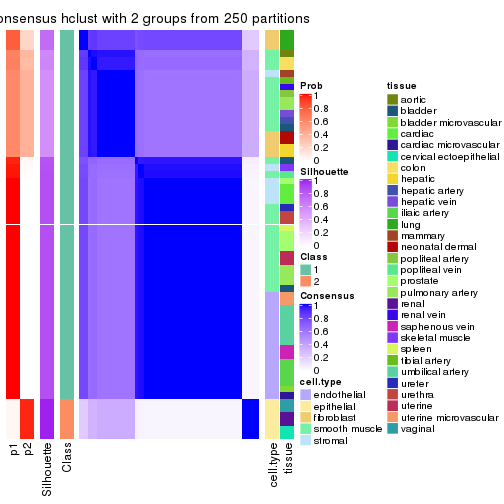
consensus_heatmap(res, k = 3)
consensus_heatmap(res, k = 4)
consensus_heatmap(res, k = 5)
consensus_heatmap(res, k = 6)
Heatmaps for the membership of samples in all partitions to see how consistent they are:
membership_heatmap(res, k = 2)
membership_heatmap(res, k = 3)
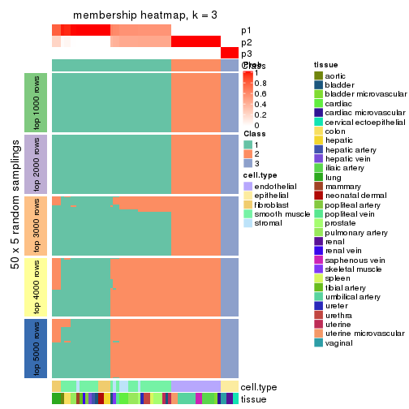
membership_heatmap(res, k = 4)
membership_heatmap(res, k = 5)
membership_heatmap(res, k = 6)
As soon as we have had the classes for columns, we can look for signatures which are significantly different between classes which can be candidate marks for certain classes. Following are the heatmaps for signatures.
Signature heatmaps where rows are scaled:
get_signatures(res, k = 2)
get_signatures(res, k = 3)
get_signatures(res, k = 4)
get_signatures(res, k = 5)
get_signatures(res, k = 6)
Signature heatmaps where rows are not scaled:
get_signatures(res, k = 2, scale_rows = FALSE)
get_signatures(res, k = 3, scale_rows = FALSE)
get_signatures(res, k = 4, scale_rows = FALSE)
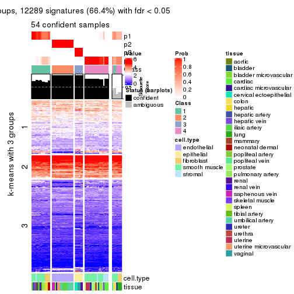
get_signatures(res, k = 5, scale_rows = FALSE)
get_signatures(res, k = 6, scale_rows = FALSE)
Compare the overlap of signatures from different k:
compare_signatures(res)

get_signature() returns a data frame invisibly. TO get the list of signatures, the function
call should be assigned to a variable explicitly. In following code, if plot argument is set
to FALSE, no heatmap is plotted while only the differential analysis is performed.
# code only for demonstration
tb = get_signature(res, k = ..., plot = FALSE)
An example of the output of tb is:
#> which_row fdr mean_1 mean_2 scaled_mean_1 scaled_mean_2 km
#> 1 38 0.042760348 8.373488 9.131774 -0.5533452 0.5164555 1
#> 2 40 0.018707592 7.106213 8.469186 -0.6173731 0.5762149 1
#> 3 55 0.019134737 10.221463 11.207825 -0.6159697 0.5749050 1
#> 4 59 0.006059896 5.921854 7.869574 -0.6899429 0.6439467 1
#> 5 60 0.018055526 8.928898 10.211722 -0.6204761 0.5791110 1
#> 6 98 0.009384629 15.714769 14.887706 0.6635654 -0.6193277 2
...
The columns in tb are:
which_row: row indices corresponding to the input matrix.fdr: FDR for the differential test. mean_x: The mean value in group x.scaled_mean_x: The mean value in group x after rows are scaled.km: Row groups if k-means clustering is applied to rows.UMAP plot which shows how samples are separated.
dimension_reduction(res, k = 2, method = "UMAP")
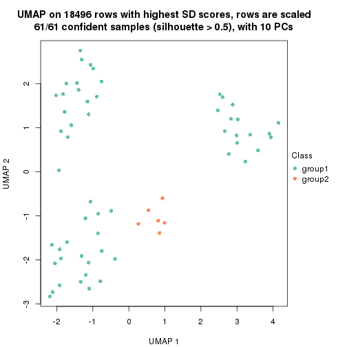
dimension_reduction(res, k = 3, method = "UMAP")

dimension_reduction(res, k = 4, method = "UMAP")
dimension_reduction(res, k = 5, method = "UMAP")
dimension_reduction(res, k = 6, method = "UMAP")
Following heatmap shows how subgroups are split when increasing k:
collect_classes(res)
Test correlation between subgroups and known annotations. If the known annotation is numeric, one-way ANOVA test is applied, and if the known annotation is discrete, chi-squared contingency table test is applied.
test_to_known_factors(res)
#> n cell.type(p) tissue(p) k
#> SD:hclust 61 1.79e-12 4.63e-04 2
#> SD:hclust 61 1.28e-22 1.86e-06 3
#> SD:hclust 54 6.72e-20 1.66e-06 4
#> SD:hclust 54 5.95e-18 1.60e-08 5
#> SD:hclust 50 7.62e-18 1.32e-10 6
If matrix rows can be associated to genes, consider to use GO_Enrichment(res,
...) to perform function enrichment for the signature genes.
The object with results only for a single top-value method and a single partition method can be extracted as:
res = res_list["SD", "kmeans"]
# you can also extract it by
# res = res_list["SD:kmeans"]
A summary of res and all the functions that can be applied to it:
res
#> A 'ConsensusPartition' object with k = 2, 3, 4, 5, 6.
#> On a matrix with 18496 rows and 61 columns.
#> Top rows (1000, 2000, 3000, 4000, 5000) are extracted by 'SD' method.
#> Subgroups are detected by 'kmeans' method.
#> Performed in total 1250 partitions by row resampling.
#> Best k for subgroups seems to be 3.
#>
#> Following methods can be applied to this 'ConsensusPartition' object:
#> [1] "cola_report" "collect_classes" "collect_plots"
#> [4] "collect_stats" "colnames" "compare_signatures"
#> [7] "consensus_heatmap" "dimension_reduction" "functional_enrichment"
#> [10] "get_anno_col" "get_anno" "get_classes"
#> [13] "get_consensus" "get_matrix" "get_membership"
#> [16] "get_param" "get_signatures" "get_stats"
#> [19] "is_best_k" "is_stable_k" "membership_heatmap"
#> [22] "ncol" "nrow" "plot_ecdf"
#> [25] "rownames" "select_partition_number" "show"
#> [28] "suggest_best_k" "test_to_known_factors"
collect_plots() function collects all the plots made from res for all k (number of partitions)
into one single page to provide an easy and fast comparison between different k.
collect_plots(res)
The plots are:
k and the heatmap of
predicted classes for each k.k.k.k.All the plots in panels can be made by individual functions and they are plotted later in this section.
select_partition_number() produces several plots showing different
statistics for choosing “optimized” k. There are following statistics:
k;k, the area increased is defined as \(A_k - A_{k-1}\).The detailed explanations of these statistics can be found in the cola vignette.
Generally speaking, lower PAC score, higher mean silhouette score or higher
concordance corresponds to better partition. Rand index and Jaccard index
measure how similar the current partition is compared to partition with k-1.
If they are too similar, we won't accept k is better than k-1.
select_partition_number(res)
The numeric values for all these statistics can be obtained by get_stats().
get_stats(res)
#> k 1-PAC mean_silhouette concordance area_increased Rand Jaccard
#> 2 2 0.479 0.906 0.919 0.3959 0.531 0.531
#> 3 3 0.580 0.860 0.866 0.4220 0.948 0.901
#> 4 4 0.659 0.840 0.808 0.1916 0.823 0.630
#> 5 5 0.647 0.727 0.793 0.1137 0.931 0.772
#> 6 6 0.730 0.712 0.691 0.0644 0.902 0.618
suggest_best_k() suggests the best \(k\) based on these statistics. The rules are as follows:
NA.suggest_best_k(res)
#> [1] 3
Following shows the table of the partitions (You need to click the show/hide
code output link to see it). The membership matrix (columns with name p*)
is inferred by
clue::cl_consensus()
function with the SE method. Basically the value in the membership matrix
represents the probability to belong to a certain group. The finall class
label for an item is determined with the group with highest probability it
belongs to.
In get_classes() function, the entropy is calculated from the membership
matrix and the silhouette score is calculated from the consensus matrix.
cbind(get_classes(res, k = 2), get_membership(res, k = 2))
#> class entropy silhouette p1 p2
#> GSM72644 2 0.563 0.849 0.132 0.868
#> GSM72647 2 0.615 0.861 0.152 0.848
#> GSM72657 2 0.615 0.861 0.152 0.848
#> GSM72658 2 0.615 0.861 0.152 0.848
#> GSM72659 2 0.615 0.861 0.152 0.848
#> GSM72660 2 0.615 0.861 0.152 0.848
#> GSM72683 2 0.563 0.849 0.132 0.868
#> GSM72684 2 0.563 0.849 0.132 0.868
#> GSM72686 2 0.615 0.861 0.152 0.848
#> GSM72687 2 0.615 0.861 0.152 0.848
#> GSM72688 2 0.615 0.861 0.152 0.848
#> GSM72689 2 0.615 0.861 0.152 0.848
#> GSM72690 2 0.615 0.861 0.152 0.848
#> GSM72691 2 0.615 0.861 0.152 0.848
#> GSM72692 2 0.615 0.861 0.152 0.848
#> GSM72693 2 0.615 0.861 0.152 0.848
#> GSM72645 2 0.980 0.448 0.416 0.584
#> GSM72646 2 0.980 0.448 0.416 0.584
#> GSM72678 2 0.980 0.448 0.416 0.584
#> GSM72679 2 0.980 0.448 0.416 0.584
#> GSM72699 2 0.980 0.448 0.416 0.584
#> GSM72700 2 0.980 0.448 0.416 0.584
#> GSM72654 1 0.000 0.998 1.000 0.000
#> GSM72655 1 0.000 0.998 1.000 0.000
#> GSM72661 1 0.000 0.998 1.000 0.000
#> GSM72662 1 0.000 0.998 1.000 0.000
#> GSM72663 1 0.000 0.998 1.000 0.000
#> GSM72665 1 0.000 0.998 1.000 0.000
#> GSM72666 1 0.000 0.998 1.000 0.000
#> GSM72640 1 0.000 0.998 1.000 0.000
#> GSM72641 1 0.000 0.998 1.000 0.000
#> GSM72642 1 0.000 0.998 1.000 0.000
#> GSM72643 1 0.000 0.998 1.000 0.000
#> GSM72651 1 0.000 0.998 1.000 0.000
#> GSM72652 1 0.000 0.998 1.000 0.000
#> GSM72653 1 0.141 0.974 0.980 0.020
#> GSM72656 1 0.141 0.974 0.980 0.020
#> GSM72667 1 0.000 0.998 1.000 0.000
#> GSM72668 1 0.000 0.998 1.000 0.000
#> GSM72669 1 0.000 0.998 1.000 0.000
#> GSM72670 1 0.000 0.998 1.000 0.000
#> GSM72671 1 0.000 0.998 1.000 0.000
#> GSM72672 1 0.141 0.974 0.980 0.020
#> GSM72696 1 0.000 0.998 1.000 0.000
#> GSM72697 1 0.000 0.998 1.000 0.000
#> GSM72674 1 0.000 0.998 1.000 0.000
#> GSM72675 1 0.000 0.998 1.000 0.000
#> GSM72676 1 0.000 0.998 1.000 0.000
#> GSM72677 1 0.000 0.998 1.000 0.000
#> GSM72680 1 0.000 0.998 1.000 0.000
#> GSM72682 1 0.000 0.998 1.000 0.000
#> GSM72685 1 0.000 0.998 1.000 0.000
#> GSM72694 1 0.000 0.998 1.000 0.000
#> GSM72695 1 0.000 0.998 1.000 0.000
#> GSM72698 1 0.000 0.998 1.000 0.000
#> GSM72648 1 0.000 0.998 1.000 0.000
#> GSM72649 1 0.000 0.998 1.000 0.000
#> GSM72650 1 0.000 0.998 1.000 0.000
#> GSM72664 1 0.000 0.998 1.000 0.000
#> GSM72673 1 0.000 0.998 1.000 0.000
#> GSM72681 1 0.000 0.998 1.000 0.000
cbind(get_classes(res, k = 3), get_membership(res, k = 3))
#> class entropy silhouette p1 p2 p3
#> GSM72644 2 0.3193 0.909 0.004 0.896 0.100
#> GSM72647 2 0.0661 0.970 0.008 0.988 0.004
#> GSM72657 2 0.0424 0.971 0.008 0.992 0.000
#> GSM72658 2 0.0424 0.971 0.008 0.992 0.000
#> GSM72659 2 0.0424 0.971 0.008 0.992 0.000
#> GSM72660 2 0.0424 0.971 0.008 0.992 0.000
#> GSM72683 2 0.3193 0.909 0.004 0.896 0.100
#> GSM72684 2 0.3193 0.909 0.004 0.896 0.100
#> GSM72686 2 0.0848 0.971 0.008 0.984 0.008
#> GSM72687 2 0.0848 0.971 0.008 0.984 0.008
#> GSM72688 2 0.0848 0.971 0.008 0.984 0.008
#> GSM72689 2 0.0848 0.971 0.008 0.984 0.008
#> GSM72690 2 0.0848 0.971 0.008 0.984 0.008
#> GSM72691 2 0.0848 0.971 0.008 0.984 0.008
#> GSM72692 2 0.1711 0.958 0.008 0.960 0.032
#> GSM72693 2 0.1711 0.958 0.008 0.960 0.032
#> GSM72645 3 0.8199 0.999 0.160 0.200 0.640
#> GSM72646 3 0.8199 0.999 0.160 0.200 0.640
#> GSM72678 3 0.8241 0.998 0.160 0.204 0.636
#> GSM72679 3 0.8241 0.998 0.160 0.204 0.636
#> GSM72699 3 0.8199 0.999 0.160 0.200 0.640
#> GSM72700 3 0.8199 0.999 0.160 0.200 0.640
#> GSM72654 1 0.1289 0.841 0.968 0.000 0.032
#> GSM72655 1 0.1289 0.841 0.968 0.000 0.032
#> GSM72661 1 0.2625 0.839 0.916 0.000 0.084
#> GSM72662 1 0.3482 0.825 0.872 0.000 0.128
#> GSM72663 1 0.5465 0.731 0.712 0.000 0.288
#> GSM72665 1 0.2711 0.841 0.912 0.000 0.088
#> GSM72666 1 0.2711 0.841 0.912 0.000 0.088
#> GSM72640 1 0.1031 0.847 0.976 0.000 0.024
#> GSM72641 1 0.2165 0.828 0.936 0.000 0.064
#> GSM72642 1 0.1031 0.843 0.976 0.000 0.024
#> GSM72643 1 0.5785 0.701 0.668 0.000 0.332
#> GSM72651 1 0.2261 0.840 0.932 0.000 0.068
#> GSM72652 1 0.2625 0.839 0.916 0.000 0.084
#> GSM72653 1 0.2400 0.830 0.932 0.004 0.064
#> GSM72656 1 0.2400 0.830 0.932 0.004 0.064
#> GSM72667 1 0.1411 0.842 0.964 0.000 0.036
#> GSM72668 1 0.1289 0.841 0.968 0.000 0.032
#> GSM72669 1 0.1529 0.841 0.960 0.000 0.040
#> GSM72670 1 0.1163 0.843 0.972 0.000 0.028
#> GSM72671 1 0.1289 0.841 0.968 0.000 0.032
#> GSM72672 1 0.2496 0.830 0.928 0.004 0.068
#> GSM72696 1 0.5678 0.709 0.684 0.000 0.316
#> GSM72697 1 0.5678 0.709 0.684 0.000 0.316
#> GSM72674 1 0.5678 0.709 0.684 0.000 0.316
#> GSM72675 1 0.5678 0.709 0.684 0.000 0.316
#> GSM72676 1 0.5733 0.707 0.676 0.000 0.324
#> GSM72677 1 0.3038 0.828 0.896 0.000 0.104
#> GSM72680 1 0.2066 0.829 0.940 0.000 0.060
#> GSM72682 1 0.5591 0.716 0.696 0.000 0.304
#> GSM72685 1 0.2165 0.828 0.936 0.000 0.064
#> GSM72694 1 0.5785 0.701 0.668 0.000 0.332
#> GSM72695 1 0.5706 0.707 0.680 0.000 0.320
#> GSM72698 1 0.5678 0.709 0.684 0.000 0.316
#> GSM72648 1 0.1529 0.844 0.960 0.000 0.040
#> GSM72649 1 0.1529 0.844 0.960 0.000 0.040
#> GSM72650 1 0.1529 0.844 0.960 0.000 0.040
#> GSM72664 1 0.2165 0.828 0.936 0.000 0.064
#> GSM72673 1 0.5785 0.701 0.668 0.000 0.332
#> GSM72681 1 0.1643 0.843 0.956 0.000 0.044
cbind(get_classes(res, k = 4), get_membership(res, k = 4))
#> class entropy silhouette p1 p2 p3 p4
#> GSM72644 2 0.4841 0.830 0.000 0.780 0.080 0.140
#> GSM72647 2 0.0469 0.939 0.000 0.988 0.012 0.000
#> GSM72657 2 0.0000 0.941 0.000 1.000 0.000 0.000
#> GSM72658 2 0.0000 0.941 0.000 1.000 0.000 0.000
#> GSM72659 2 0.0000 0.941 0.000 1.000 0.000 0.000
#> GSM72660 2 0.0000 0.941 0.000 1.000 0.000 0.000
#> GSM72683 2 0.4841 0.830 0.000 0.780 0.080 0.140
#> GSM72684 2 0.4841 0.830 0.000 0.780 0.080 0.140
#> GSM72686 2 0.0937 0.939 0.000 0.976 0.012 0.012
#> GSM72687 2 0.1297 0.939 0.000 0.964 0.016 0.020
#> GSM72688 2 0.0937 0.939 0.000 0.976 0.012 0.012
#> GSM72689 2 0.1297 0.939 0.000 0.964 0.016 0.020
#> GSM72690 2 0.1297 0.939 0.000 0.964 0.016 0.020
#> GSM72691 2 0.0937 0.939 0.000 0.976 0.012 0.012
#> GSM72692 2 0.2500 0.912 0.000 0.916 0.040 0.044
#> GSM72693 2 0.2500 0.912 0.000 0.916 0.040 0.044
#> GSM72645 3 0.4959 0.990 0.052 0.060 0.812 0.076
#> GSM72646 3 0.4959 0.990 0.052 0.060 0.812 0.076
#> GSM72678 3 0.5491 0.980 0.048 0.060 0.776 0.116
#> GSM72679 3 0.5491 0.980 0.048 0.060 0.776 0.116
#> GSM72699 3 0.4959 0.990 0.052 0.060 0.812 0.076
#> GSM72700 3 0.4959 0.990 0.052 0.060 0.812 0.076
#> GSM72654 1 0.0779 0.781 0.980 0.000 0.004 0.016
#> GSM72655 1 0.0779 0.781 0.980 0.000 0.004 0.016
#> GSM72661 1 0.3306 0.629 0.840 0.000 0.004 0.156
#> GSM72662 1 0.4343 0.309 0.732 0.000 0.004 0.264
#> GSM72663 4 0.5039 0.877 0.404 0.000 0.004 0.592
#> GSM72665 1 0.3208 0.641 0.848 0.000 0.004 0.148
#> GSM72666 1 0.3208 0.641 0.848 0.000 0.004 0.148
#> GSM72640 1 0.3107 0.766 0.884 0.000 0.036 0.080
#> GSM72641 1 0.3196 0.740 0.856 0.000 0.008 0.136
#> GSM72642 1 0.1520 0.786 0.956 0.000 0.020 0.024
#> GSM72643 4 0.4624 0.978 0.340 0.000 0.000 0.660
#> GSM72651 1 0.3751 0.599 0.800 0.000 0.004 0.196
#> GSM72652 1 0.3355 0.621 0.836 0.000 0.004 0.160
#> GSM72653 1 0.5646 0.690 0.708 0.000 0.088 0.204
#> GSM72656 1 0.5646 0.690 0.708 0.000 0.088 0.204
#> GSM72667 1 0.3082 0.776 0.884 0.000 0.032 0.084
#> GSM72668 1 0.0000 0.781 1.000 0.000 0.000 0.000
#> GSM72669 1 0.2871 0.781 0.896 0.000 0.032 0.072
#> GSM72670 1 0.2871 0.773 0.896 0.000 0.032 0.072
#> GSM72671 1 0.0779 0.781 0.980 0.000 0.004 0.016
#> GSM72672 1 0.5681 0.689 0.704 0.000 0.088 0.208
#> GSM72696 4 0.4605 0.980 0.336 0.000 0.000 0.664
#> GSM72697 4 0.4605 0.980 0.336 0.000 0.000 0.664
#> GSM72674 4 0.4605 0.980 0.336 0.000 0.000 0.664
#> GSM72675 4 0.4605 0.980 0.336 0.000 0.000 0.664
#> GSM72676 4 0.4624 0.978 0.340 0.000 0.000 0.660
#> GSM72677 1 0.5732 0.659 0.672 0.000 0.064 0.264
#> GSM72680 1 0.4388 0.726 0.808 0.000 0.060 0.132
#> GSM72682 4 0.4950 0.916 0.376 0.000 0.004 0.620
#> GSM72685 1 0.3659 0.739 0.840 0.000 0.024 0.136
#> GSM72694 4 0.4624 0.978 0.340 0.000 0.000 0.660
#> GSM72695 4 0.4605 0.980 0.336 0.000 0.000 0.664
#> GSM72698 4 0.4605 0.980 0.336 0.000 0.000 0.664
#> GSM72648 1 0.3523 0.744 0.856 0.000 0.032 0.112
#> GSM72649 1 0.3523 0.744 0.856 0.000 0.032 0.112
#> GSM72650 1 0.3523 0.744 0.856 0.000 0.032 0.112
#> GSM72664 1 0.3324 0.739 0.852 0.000 0.012 0.136
#> GSM72673 4 0.4624 0.978 0.340 0.000 0.000 0.660
#> GSM72681 1 0.4711 0.734 0.784 0.000 0.064 0.152
cbind(get_classes(res, k = 5), get_membership(res, k = 5))
#> class entropy silhouette p1 p2 p3 p4 p5
#> GSM72644 2 0.4313 0.7236 0.000 0.636 0.008 0.000 0.356
#> GSM72647 2 0.1329 0.8943 0.032 0.956 0.004 0.000 0.008
#> GSM72657 2 0.0740 0.8997 0.004 0.980 0.008 0.000 0.008
#> GSM72658 2 0.0740 0.8997 0.004 0.980 0.008 0.000 0.008
#> GSM72659 2 0.0740 0.8997 0.004 0.980 0.008 0.000 0.008
#> GSM72660 2 0.0740 0.8997 0.004 0.980 0.008 0.000 0.008
#> GSM72683 2 0.4313 0.7236 0.000 0.636 0.008 0.000 0.356
#> GSM72684 2 0.4313 0.7236 0.000 0.636 0.008 0.000 0.356
#> GSM72686 2 0.1281 0.8968 0.012 0.956 0.000 0.000 0.032
#> GSM72687 2 0.2228 0.8934 0.020 0.916 0.008 0.000 0.056
#> GSM72688 2 0.1934 0.8949 0.020 0.932 0.008 0.000 0.040
#> GSM72689 2 0.2228 0.8934 0.020 0.916 0.008 0.000 0.056
#> GSM72690 2 0.2228 0.8934 0.020 0.916 0.008 0.000 0.056
#> GSM72691 2 0.1281 0.8968 0.012 0.956 0.000 0.000 0.032
#> GSM72692 2 0.2854 0.8679 0.028 0.880 0.008 0.000 0.084
#> GSM72693 2 0.2854 0.8679 0.028 0.880 0.008 0.000 0.084
#> GSM72645 3 0.1413 0.9858 0.012 0.012 0.956 0.020 0.000
#> GSM72646 3 0.1413 0.9858 0.012 0.012 0.956 0.020 0.000
#> GSM72678 3 0.2675 0.9731 0.028 0.012 0.908 0.024 0.028
#> GSM72679 3 0.2671 0.9731 0.024 0.012 0.908 0.024 0.032
#> GSM72699 3 0.1700 0.9836 0.012 0.012 0.948 0.020 0.008
#> GSM72700 3 0.1413 0.9858 0.012 0.012 0.956 0.020 0.000
#> GSM72654 1 0.2424 0.5464 0.868 0.000 0.000 0.132 0.000
#> GSM72655 1 0.2424 0.5464 0.868 0.000 0.000 0.132 0.000
#> GSM72661 1 0.5475 0.4672 0.612 0.000 0.004 0.308 0.076
#> GSM72662 1 0.5554 0.3648 0.528 0.000 0.004 0.408 0.060
#> GSM72663 4 0.2234 0.9014 0.036 0.000 0.004 0.916 0.044
#> GSM72665 1 0.5333 0.4751 0.628 0.000 0.004 0.300 0.068
#> GSM72666 1 0.5333 0.4751 0.628 0.000 0.004 0.300 0.068
#> GSM72640 1 0.6071 -0.0454 0.572 0.000 0.000 0.192 0.236
#> GSM72641 1 0.4587 0.2609 0.744 0.000 0.000 0.096 0.160
#> GSM72642 1 0.4126 0.5319 0.784 0.000 0.004 0.156 0.056
#> GSM72643 4 0.0162 0.9687 0.000 0.000 0.000 0.996 0.004
#> GSM72651 1 0.5421 0.4515 0.584 0.000 0.004 0.352 0.060
#> GSM72652 1 0.5353 0.4582 0.604 0.000 0.004 0.332 0.060
#> GSM72653 5 0.6163 0.8953 0.352 0.000 0.000 0.144 0.504
#> GSM72656 5 0.6163 0.8953 0.352 0.000 0.000 0.144 0.504
#> GSM72667 1 0.6081 0.3494 0.636 0.000 0.024 0.156 0.184
#> GSM72668 1 0.2771 0.5395 0.860 0.000 0.000 0.128 0.012
#> GSM72669 1 0.5934 0.3641 0.652 0.000 0.024 0.140 0.184
#> GSM72670 1 0.6115 0.3563 0.632 0.000 0.024 0.160 0.184
#> GSM72671 1 0.2424 0.5464 0.868 0.000 0.000 0.132 0.000
#> GSM72672 5 0.6163 0.8953 0.352 0.000 0.000 0.144 0.504
#> GSM72696 4 0.0613 0.9693 0.008 0.000 0.004 0.984 0.004
#> GSM72697 4 0.0613 0.9693 0.008 0.000 0.004 0.984 0.004
#> GSM72674 4 0.0290 0.9708 0.008 0.000 0.000 0.992 0.000
#> GSM72675 4 0.0451 0.9706 0.008 0.000 0.004 0.988 0.000
#> GSM72676 4 0.0000 0.9709 0.000 0.000 0.000 1.000 0.000
#> GSM72677 5 0.6521 0.8211 0.308 0.000 0.004 0.192 0.496
#> GSM72680 5 0.5853 0.7659 0.432 0.000 0.000 0.096 0.472
#> GSM72682 4 0.2497 0.8314 0.112 0.000 0.004 0.880 0.004
#> GSM72685 1 0.4734 0.2295 0.728 0.000 0.000 0.096 0.176
#> GSM72694 4 0.0000 0.9709 0.000 0.000 0.000 1.000 0.000
#> GSM72695 4 0.0162 0.9706 0.000 0.000 0.004 0.996 0.000
#> GSM72698 4 0.0290 0.9708 0.008 0.000 0.000 0.992 0.000
#> GSM72648 1 0.6246 0.3409 0.616 0.000 0.024 0.176 0.184
#> GSM72649 1 0.6246 0.3409 0.616 0.000 0.024 0.176 0.184
#> GSM72650 1 0.6246 0.3409 0.616 0.000 0.024 0.176 0.184
#> GSM72664 1 0.4869 0.2613 0.712 0.000 0.000 0.096 0.192
#> GSM72673 4 0.0000 0.9709 0.000 0.000 0.000 1.000 0.000
#> GSM72681 5 0.6569 0.7795 0.348 0.000 0.004 0.184 0.464
cbind(get_classes(res, k = 6), get_membership(res, k = 6))
#> class entropy silhouette p1 p2 p3 p4 p5 p6
#> GSM72644 5 0.4124 0.996 0.004 0.476 0.004 0.000 0.516 0.000
#> GSM72647 2 0.1793 0.744 0.048 0.928 0.000 0.000 0.012 0.012
#> GSM72657 2 0.0665 0.804 0.004 0.980 0.000 0.000 0.008 0.008
#> GSM72658 2 0.0665 0.804 0.004 0.980 0.000 0.000 0.008 0.008
#> GSM72659 2 0.0665 0.804 0.004 0.980 0.000 0.000 0.008 0.008
#> GSM72660 2 0.0665 0.804 0.004 0.980 0.000 0.000 0.008 0.008
#> GSM72683 5 0.3993 0.998 0.000 0.476 0.004 0.000 0.520 0.000
#> GSM72684 5 0.3993 0.998 0.000 0.476 0.004 0.000 0.520 0.000
#> GSM72686 2 0.1500 0.804 0.052 0.936 0.000 0.000 0.012 0.000
#> GSM72687 2 0.2890 0.760 0.096 0.860 0.000 0.000 0.032 0.012
#> GSM72688 2 0.2568 0.774 0.096 0.876 0.000 0.000 0.016 0.012
#> GSM72689 2 0.2890 0.760 0.096 0.860 0.000 0.000 0.032 0.012
#> GSM72690 2 0.2890 0.760 0.096 0.860 0.000 0.000 0.032 0.012
#> GSM72691 2 0.1398 0.805 0.052 0.940 0.000 0.000 0.008 0.000
#> GSM72692 2 0.3642 0.452 0.048 0.800 0.000 0.000 0.140 0.012
#> GSM72693 2 0.3642 0.452 0.048 0.800 0.000 0.000 0.140 0.012
#> GSM72645 3 0.0260 0.963 0.000 0.008 0.992 0.000 0.000 0.000
#> GSM72646 3 0.0260 0.963 0.000 0.008 0.992 0.000 0.000 0.000
#> GSM72678 3 0.3026 0.928 0.048 0.008 0.868 0.000 0.060 0.016
#> GSM72679 3 0.3026 0.928 0.048 0.008 0.868 0.000 0.060 0.016
#> GSM72699 3 0.0696 0.960 0.004 0.008 0.980 0.000 0.004 0.004
#> GSM72700 3 0.0260 0.963 0.000 0.008 0.992 0.000 0.000 0.000
#> GSM72654 1 0.5468 0.603 0.660 0.000 0.000 0.056 0.104 0.180
#> GSM72655 1 0.5468 0.603 0.660 0.000 0.000 0.056 0.104 0.180
#> GSM72661 1 0.5280 0.662 0.664 0.000 0.000 0.172 0.028 0.136
#> GSM72662 1 0.5144 0.566 0.644 0.000 0.000 0.256 0.028 0.072
#> GSM72663 4 0.4060 0.726 0.180 0.000 0.000 0.760 0.028 0.032
#> GSM72665 1 0.4761 0.679 0.704 0.000 0.000 0.156 0.012 0.128
#> GSM72666 1 0.4761 0.679 0.704 0.000 0.000 0.156 0.012 0.128
#> GSM72640 6 0.6573 0.203 0.288 0.000 0.000 0.088 0.124 0.500
#> GSM72641 1 0.4721 0.559 0.592 0.000 0.000 0.024 0.020 0.364
#> GSM72642 1 0.6138 0.491 0.564 0.000 0.000 0.068 0.112 0.256
#> GSM72643 4 0.0405 0.945 0.000 0.000 0.000 0.988 0.008 0.004
#> GSM72651 1 0.5281 0.650 0.656 0.000 0.000 0.204 0.028 0.112
#> GSM72652 1 0.5224 0.658 0.664 0.000 0.000 0.184 0.024 0.128
#> GSM72653 6 0.2816 0.486 0.064 0.000 0.004 0.044 0.012 0.876
#> GSM72656 6 0.2816 0.486 0.064 0.000 0.004 0.044 0.012 0.876
#> GSM72667 6 0.7157 0.483 0.184 0.000 0.012 0.068 0.352 0.384
#> GSM72668 1 0.5408 0.603 0.648 0.000 0.000 0.040 0.100 0.212
#> GSM72669 6 0.7134 0.479 0.188 0.000 0.012 0.064 0.352 0.384
#> GSM72670 6 0.7195 0.483 0.184 0.000 0.012 0.072 0.352 0.380
#> GSM72671 1 0.5524 0.591 0.648 0.000 0.000 0.052 0.104 0.196
#> GSM72672 6 0.2873 0.486 0.068 0.000 0.004 0.044 0.012 0.872
#> GSM72696 4 0.1599 0.921 0.028 0.000 0.000 0.940 0.024 0.008
#> GSM72697 4 0.1599 0.921 0.028 0.000 0.000 0.940 0.024 0.008
#> GSM72674 4 0.0291 0.947 0.004 0.000 0.000 0.992 0.004 0.000
#> GSM72675 4 0.0146 0.947 0.004 0.000 0.000 0.996 0.000 0.000
#> GSM72676 4 0.0260 0.947 0.000 0.000 0.000 0.992 0.008 0.000
#> GSM72677 6 0.2618 0.496 0.052 0.000 0.000 0.076 0.000 0.872
#> GSM72680 6 0.2872 0.430 0.140 0.000 0.000 0.024 0.000 0.836
#> GSM72682 4 0.3324 0.786 0.048 0.000 0.000 0.840 0.088 0.024
#> GSM72685 1 0.4795 0.410 0.504 0.000 0.000 0.024 0.016 0.456
#> GSM72694 4 0.0260 0.947 0.000 0.000 0.000 0.992 0.008 0.000
#> GSM72695 4 0.0146 0.947 0.000 0.000 0.000 0.996 0.004 0.000
#> GSM72698 4 0.0146 0.947 0.004 0.000 0.000 0.996 0.000 0.000
#> GSM72648 6 0.7266 0.491 0.168 0.000 0.012 0.088 0.352 0.380
#> GSM72649 6 0.7266 0.491 0.168 0.000 0.012 0.088 0.352 0.380
#> GSM72650 6 0.7266 0.491 0.168 0.000 0.012 0.088 0.352 0.380
#> GSM72664 1 0.4456 0.557 0.608 0.000 0.000 0.024 0.008 0.360
#> GSM72673 4 0.0260 0.947 0.000 0.000 0.000 0.992 0.008 0.000
#> GSM72681 6 0.3337 0.488 0.064 0.000 0.000 0.108 0.004 0.824
Heatmaps for the consensus matrix. It visualizes the probability of two samples to be in a same group.
consensus_heatmap(res, k = 2)
consensus_heatmap(res, k = 3)
consensus_heatmap(res, k = 4)
consensus_heatmap(res, k = 5)
consensus_heatmap(res, k = 6)
Heatmaps for the membership of samples in all partitions to see how consistent they are:
membership_heatmap(res, k = 2)

membership_heatmap(res, k = 3)
membership_heatmap(res, k = 4)
membership_heatmap(res, k = 5)
membership_heatmap(res, k = 6)
As soon as we have had the classes for columns, we can look for signatures which are significantly different between classes which can be candidate marks for certain classes. Following are the heatmaps for signatures.
Signature heatmaps where rows are scaled:
get_signatures(res, k = 2)
get_signatures(res, k = 3)
get_signatures(res, k = 4)
get_signatures(res, k = 5)
get_signatures(res, k = 6)
Signature heatmaps where rows are not scaled:
get_signatures(res, k = 2, scale_rows = FALSE)

get_signatures(res, k = 3, scale_rows = FALSE)
get_signatures(res, k = 4, scale_rows = FALSE)
get_signatures(res, k = 5, scale_rows = FALSE)
get_signatures(res, k = 6, scale_rows = FALSE)
Compare the overlap of signatures from different k:
compare_signatures(res)
get_signature() returns a data frame invisibly. TO get the list of signatures, the function
call should be assigned to a variable explicitly. In following code, if plot argument is set
to FALSE, no heatmap is plotted while only the differential analysis is performed.
# code only for demonstration
tb = get_signature(res, k = ..., plot = FALSE)
An example of the output of tb is:
#> which_row fdr mean_1 mean_2 scaled_mean_1 scaled_mean_2 km
#> 1 38 0.042760348 8.373488 9.131774 -0.5533452 0.5164555 1
#> 2 40 0.018707592 7.106213 8.469186 -0.6173731 0.5762149 1
#> 3 55 0.019134737 10.221463 11.207825 -0.6159697 0.5749050 1
#> 4 59 0.006059896 5.921854 7.869574 -0.6899429 0.6439467 1
#> 5 60 0.018055526 8.928898 10.211722 -0.6204761 0.5791110 1
#> 6 98 0.009384629 15.714769 14.887706 0.6635654 -0.6193277 2
...
The columns in tb are:
which_row: row indices corresponding to the input matrix.fdr: FDR for the differential test. mean_x: The mean value in group x.scaled_mean_x: The mean value in group x after rows are scaled.km: Row groups if k-means clustering is applied to rows.UMAP plot which shows how samples are separated.
dimension_reduction(res, k = 2, method = "UMAP")
dimension_reduction(res, k = 3, method = "UMAP")
dimension_reduction(res, k = 4, method = "UMAP")
dimension_reduction(res, k = 5, method = "UMAP")
dimension_reduction(res, k = 6, method = "UMAP")
Following heatmap shows how subgroups are split when increasing k:
collect_classes(res)
Test correlation between subgroups and known annotations. If the known annotation is numeric, one-way ANOVA test is applied, and if the known annotation is discrete, chi-squared contingency table test is applied.
test_to_known_factors(res)
#> n cell.type(p) tissue(p) k
#> SD:kmeans 55 6.87e-12 7.58e-04 2
#> SD:kmeans 61 1.28e-22 1.86e-06 3
#> SD:kmeans 60 1.67e-20 1.78e-07 4
#> SD:kmeans 45 4.07e-14 5.80e-07 5
#> SD:kmeans 44 9.73e-14 7.81e-09 6
If matrix rows can be associated to genes, consider to use GO_Enrichment(res,
...) to perform function enrichment for the signature genes.
The object with results only for a single top-value method and a single partition method can be extracted as:
res = res_list["SD", "skmeans"]
# you can also extract it by
# res = res_list["SD:skmeans"]
A summary of res and all the functions that can be applied to it:
res
#> A 'ConsensusPartition' object with k = 2, 3, 4, 5, 6.
#> On a matrix with 18496 rows and 61 columns.
#> Top rows (1000, 2000, 3000, 4000, 5000) are extracted by 'SD' method.
#> Subgroups are detected by 'skmeans' method.
#> Performed in total 1250 partitions by row resampling.
#> Best k for subgroups seems to be 6.
#>
#> Following methods can be applied to this 'ConsensusPartition' object:
#> [1] "cola_report" "collect_classes" "collect_plots"
#> [4] "collect_stats" "colnames" "compare_signatures"
#> [7] "consensus_heatmap" "dimension_reduction" "functional_enrichment"
#> [10] "get_anno_col" "get_anno" "get_classes"
#> [13] "get_consensus" "get_matrix" "get_membership"
#> [16] "get_param" "get_signatures" "get_stats"
#> [19] "is_best_k" "is_stable_k" "membership_heatmap"
#> [22] "ncol" "nrow" "plot_ecdf"
#> [25] "rownames" "select_partition_number" "show"
#> [28] "suggest_best_k" "test_to_known_factors"
collect_plots() function collects all the plots made from res for all k (number of partitions)
into one single page to provide an easy and fast comparison between different k.
collect_plots(res)
The plots are:
k and the heatmap of
predicted classes for each k.k.k.k.All the plots in panels can be made by individual functions and they are plotted later in this section.
select_partition_number() produces several plots showing different
statistics for choosing “optimized” k. There are following statistics:
k;k, the area increased is defined as \(A_k - A_{k-1}\).The detailed explanations of these statistics can be found in the cola vignette.
Generally speaking, lower PAC score, higher mean silhouette score or higher
concordance corresponds to better partition. Rand index and Jaccard index
measure how similar the current partition is compared to partition with k-1.
If they are too similar, we won't accept k is better than k-1.
select_partition_number(res)
The numeric values for all these statistics can be obtained by get_stats().
get_stats(res)
#> k 1-PAC mean_silhouette concordance area_increased Rand Jaccard
#> 2 2 1.000 0.989 0.995 0.4718 0.531 0.531
#> 3 3 0.652 0.887 0.898 0.3517 0.815 0.652
#> 4 4 0.829 0.826 0.925 0.1427 0.948 0.849
#> 5 5 0.904 0.922 0.954 0.0695 0.917 0.728
#> 6 6 0.935 0.899 0.926 0.0542 0.946 0.770
suggest_best_k() suggests the best \(k\) based on these statistics. The rules are as follows:
NA.suggest_best_k(res)
#> [1] 6
#> attr(,"optional")
#> [1] 2 5
There is also optional best \(k\) = 2 5 that is worth to check.
Following shows the table of the partitions (You need to click the show/hide
code output link to see it). The membership matrix (columns with name p*)
is inferred by
clue::cl_consensus()
function with the SE method. Basically the value in the membership matrix
represents the probability to belong to a certain group. The finall class
label for an item is determined with the group with highest probability it
belongs to.
In get_classes() function, the entropy is calculated from the membership
matrix and the silhouette score is calculated from the consensus matrix.
cbind(get_classes(res, k = 2), get_membership(res, k = 2))
#> class entropy silhouette p1 p2
#> GSM72644 2 0.00 1.000 0.000 1.000
#> GSM72647 2 0.00 1.000 0.000 1.000
#> GSM72657 2 0.00 1.000 0.000 1.000
#> GSM72658 2 0.00 1.000 0.000 1.000
#> GSM72659 2 0.00 1.000 0.000 1.000
#> GSM72660 2 0.00 1.000 0.000 1.000
#> GSM72683 2 0.00 1.000 0.000 1.000
#> GSM72684 2 0.00 1.000 0.000 1.000
#> GSM72686 2 0.00 1.000 0.000 1.000
#> GSM72687 2 0.00 1.000 0.000 1.000
#> GSM72688 2 0.00 1.000 0.000 1.000
#> GSM72689 2 0.00 1.000 0.000 1.000
#> GSM72690 2 0.00 1.000 0.000 1.000
#> GSM72691 2 0.00 1.000 0.000 1.000
#> GSM72692 2 0.00 1.000 0.000 1.000
#> GSM72693 2 0.00 1.000 0.000 1.000
#> GSM72645 2 0.00 1.000 0.000 1.000
#> GSM72646 2 0.00 1.000 0.000 1.000
#> GSM72678 2 0.00 1.000 0.000 1.000
#> GSM72679 2 0.00 1.000 0.000 1.000
#> GSM72699 2 0.00 1.000 0.000 1.000
#> GSM72700 2 0.00 1.000 0.000 1.000
#> GSM72654 1 0.00 0.993 1.000 0.000
#> GSM72655 1 0.00 0.993 1.000 0.000
#> GSM72661 1 0.00 0.993 1.000 0.000
#> GSM72662 1 0.00 0.993 1.000 0.000
#> GSM72663 1 0.00 0.993 1.000 0.000
#> GSM72665 1 0.00 0.993 1.000 0.000
#> GSM72666 1 0.00 0.993 1.000 0.000
#> GSM72640 1 0.00 0.993 1.000 0.000
#> GSM72641 1 0.00 0.993 1.000 0.000
#> GSM72642 1 0.00 0.993 1.000 0.000
#> GSM72643 1 0.00 0.993 1.000 0.000
#> GSM72651 1 0.00 0.993 1.000 0.000
#> GSM72652 1 0.00 0.993 1.000 0.000
#> GSM72653 1 0.00 0.993 1.000 0.000
#> GSM72656 1 0.00 0.993 1.000 0.000
#> GSM72667 1 0.00 0.993 1.000 0.000
#> GSM72668 1 0.00 0.993 1.000 0.000
#> GSM72669 1 0.00 0.993 1.000 0.000
#> GSM72670 1 0.00 0.993 1.000 0.000
#> GSM72671 1 0.00 0.993 1.000 0.000
#> GSM72672 1 0.00 0.993 1.000 0.000
#> GSM72696 1 0.00 0.993 1.000 0.000
#> GSM72697 1 0.00 0.993 1.000 0.000
#> GSM72674 1 0.00 0.993 1.000 0.000
#> GSM72675 1 0.00 0.993 1.000 0.000
#> GSM72676 1 0.00 0.993 1.000 0.000
#> GSM72677 1 0.00 0.993 1.000 0.000
#> GSM72680 1 0.00 0.993 1.000 0.000
#> GSM72682 1 0.00 0.993 1.000 0.000
#> GSM72685 1 0.00 0.993 1.000 0.000
#> GSM72694 1 0.00 0.993 1.000 0.000
#> GSM72695 1 0.00 0.993 1.000 0.000
#> GSM72698 1 0.00 0.993 1.000 0.000
#> GSM72648 1 0.00 0.993 1.000 0.000
#> GSM72649 1 0.85 0.619 0.724 0.276
#> GSM72650 1 0.00 0.993 1.000 0.000
#> GSM72664 1 0.00 0.993 1.000 0.000
#> GSM72673 1 0.00 0.993 1.000 0.000
#> GSM72681 1 0.00 0.993 1.000 0.000
cbind(get_classes(res, k = 3), get_membership(res, k = 3))
#> class entropy silhouette p1 p2 p3
#> GSM72644 2 0.0000 0.922 0.000 1.000 0.000
#> GSM72647 2 0.0000 0.922 0.000 1.000 0.000
#> GSM72657 2 0.0000 0.922 0.000 1.000 0.000
#> GSM72658 2 0.0000 0.922 0.000 1.000 0.000
#> GSM72659 2 0.0000 0.922 0.000 1.000 0.000
#> GSM72660 2 0.0000 0.922 0.000 1.000 0.000
#> GSM72683 2 0.0000 0.922 0.000 1.000 0.000
#> GSM72684 2 0.0000 0.922 0.000 1.000 0.000
#> GSM72686 2 0.0000 0.922 0.000 1.000 0.000
#> GSM72687 2 0.0000 0.922 0.000 1.000 0.000
#> GSM72688 2 0.0000 0.922 0.000 1.000 0.000
#> GSM72689 2 0.0000 0.922 0.000 1.000 0.000
#> GSM72690 2 0.0000 0.922 0.000 1.000 0.000
#> GSM72691 2 0.0000 0.922 0.000 1.000 0.000
#> GSM72692 2 0.0000 0.922 0.000 1.000 0.000
#> GSM72693 2 0.0000 0.922 0.000 1.000 0.000
#> GSM72645 2 0.5678 0.759 0.000 0.684 0.316
#> GSM72646 2 0.5678 0.759 0.000 0.684 0.316
#> GSM72678 2 0.5678 0.759 0.000 0.684 0.316
#> GSM72679 2 0.5678 0.759 0.000 0.684 0.316
#> GSM72699 2 0.5678 0.759 0.000 0.684 0.316
#> GSM72700 2 0.5678 0.759 0.000 0.684 0.316
#> GSM72654 1 0.0000 0.917 1.000 0.000 0.000
#> GSM72655 1 0.0000 0.917 1.000 0.000 0.000
#> GSM72661 1 0.4702 0.693 0.788 0.000 0.212
#> GSM72662 3 0.5785 0.754 0.332 0.000 0.668
#> GSM72663 3 0.4504 0.983 0.196 0.000 0.804
#> GSM72665 1 0.4555 0.709 0.800 0.000 0.200
#> GSM72666 1 0.4555 0.709 0.800 0.000 0.200
#> GSM72640 1 0.0424 0.914 0.992 0.000 0.008
#> GSM72641 1 0.0000 0.917 1.000 0.000 0.000
#> GSM72642 1 0.0000 0.917 1.000 0.000 0.000
#> GSM72643 3 0.4504 0.983 0.196 0.000 0.804
#> GSM72651 1 0.4605 0.702 0.796 0.000 0.204
#> GSM72652 1 0.4605 0.702 0.796 0.000 0.204
#> GSM72653 1 0.0424 0.914 0.992 0.000 0.008
#> GSM72656 1 0.0424 0.914 0.992 0.000 0.008
#> GSM72667 1 0.0000 0.917 1.000 0.000 0.000
#> GSM72668 1 0.0000 0.917 1.000 0.000 0.000
#> GSM72669 1 0.4551 0.726 0.840 0.140 0.020
#> GSM72670 1 0.0000 0.917 1.000 0.000 0.000
#> GSM72671 1 0.0000 0.917 1.000 0.000 0.000
#> GSM72672 1 0.0424 0.914 0.992 0.000 0.008
#> GSM72696 3 0.4504 0.983 0.196 0.000 0.804
#> GSM72697 3 0.4504 0.983 0.196 0.000 0.804
#> GSM72674 3 0.4504 0.983 0.196 0.000 0.804
#> GSM72675 3 0.4504 0.983 0.196 0.000 0.804
#> GSM72676 3 0.4504 0.983 0.196 0.000 0.804
#> GSM72677 1 0.4452 0.682 0.808 0.000 0.192
#> GSM72680 1 0.0000 0.917 1.000 0.000 0.000
#> GSM72682 3 0.4452 0.977 0.192 0.000 0.808
#> GSM72685 1 0.0000 0.917 1.000 0.000 0.000
#> GSM72694 3 0.4504 0.983 0.196 0.000 0.804
#> GSM72695 3 0.4504 0.983 0.196 0.000 0.804
#> GSM72698 3 0.4504 0.983 0.196 0.000 0.804
#> GSM72648 1 0.1163 0.902 0.972 0.000 0.028
#> GSM72649 1 0.1129 0.900 0.976 0.004 0.020
#> GSM72650 1 0.0892 0.903 0.980 0.000 0.020
#> GSM72664 1 0.0000 0.917 1.000 0.000 0.000
#> GSM72673 3 0.4504 0.983 0.196 0.000 0.804
#> GSM72681 1 0.1860 0.880 0.948 0.000 0.052
cbind(get_classes(res, k = 4), get_membership(res, k = 4))
#> class entropy silhouette p1 p2 p3 p4
#> GSM72644 2 0.0000 1.000 0.000 1.000 0.000 0.000
#> GSM72647 2 0.0000 1.000 0.000 1.000 0.000 0.000
#> GSM72657 2 0.0000 1.000 0.000 1.000 0.000 0.000
#> GSM72658 2 0.0000 1.000 0.000 1.000 0.000 0.000
#> GSM72659 2 0.0000 1.000 0.000 1.000 0.000 0.000
#> GSM72660 2 0.0000 1.000 0.000 1.000 0.000 0.000
#> GSM72683 2 0.0000 1.000 0.000 1.000 0.000 0.000
#> GSM72684 2 0.0000 1.000 0.000 1.000 0.000 0.000
#> GSM72686 2 0.0000 1.000 0.000 1.000 0.000 0.000
#> GSM72687 2 0.0000 1.000 0.000 1.000 0.000 0.000
#> GSM72688 2 0.0000 1.000 0.000 1.000 0.000 0.000
#> GSM72689 2 0.0000 1.000 0.000 1.000 0.000 0.000
#> GSM72690 2 0.0000 1.000 0.000 1.000 0.000 0.000
#> GSM72691 2 0.0000 1.000 0.000 1.000 0.000 0.000
#> GSM72692 2 0.0000 1.000 0.000 1.000 0.000 0.000
#> GSM72693 2 0.0000 1.000 0.000 1.000 0.000 0.000
#> GSM72645 3 0.0188 1.000 0.000 0.004 0.996 0.000
#> GSM72646 3 0.0188 1.000 0.000 0.004 0.996 0.000
#> GSM72678 3 0.0188 1.000 0.000 0.004 0.996 0.000
#> GSM72679 3 0.0188 1.000 0.000 0.004 0.996 0.000
#> GSM72699 3 0.0188 1.000 0.000 0.004 0.996 0.000
#> GSM72700 3 0.0188 1.000 0.000 0.004 0.996 0.000
#> GSM72654 1 0.0000 0.795 1.000 0.000 0.000 0.000
#> GSM72655 1 0.0000 0.795 1.000 0.000 0.000 0.000
#> GSM72661 1 0.4967 0.219 0.548 0.000 0.000 0.452
#> GSM72662 4 0.4356 0.521 0.292 0.000 0.000 0.708
#> GSM72663 4 0.0000 0.968 0.000 0.000 0.000 1.000
#> GSM72665 1 0.4941 0.262 0.564 0.000 0.000 0.436
#> GSM72666 1 0.4941 0.262 0.564 0.000 0.000 0.436
#> GSM72640 1 0.0188 0.796 0.996 0.000 0.000 0.004
#> GSM72641 1 0.0469 0.798 0.988 0.000 0.000 0.012
#> GSM72642 1 0.0469 0.798 0.988 0.000 0.000 0.012
#> GSM72643 4 0.0000 0.968 0.000 0.000 0.000 1.000
#> GSM72651 1 0.4961 0.231 0.552 0.000 0.000 0.448
#> GSM72652 1 0.4961 0.231 0.552 0.000 0.000 0.448
#> GSM72653 1 0.0469 0.798 0.988 0.000 0.000 0.012
#> GSM72656 1 0.0469 0.798 0.988 0.000 0.000 0.012
#> GSM72667 1 0.2704 0.731 0.876 0.000 0.124 0.000
#> GSM72668 1 0.0000 0.795 1.000 0.000 0.000 0.000
#> GSM72669 1 0.2704 0.731 0.876 0.000 0.124 0.000
#> GSM72670 1 0.2704 0.731 0.876 0.000 0.124 0.000
#> GSM72671 1 0.0000 0.795 1.000 0.000 0.000 0.000
#> GSM72672 1 0.0469 0.798 0.988 0.000 0.000 0.012
#> GSM72696 4 0.0000 0.968 0.000 0.000 0.000 1.000
#> GSM72697 4 0.0000 0.968 0.000 0.000 0.000 1.000
#> GSM72674 4 0.0000 0.968 0.000 0.000 0.000 1.000
#> GSM72675 4 0.0000 0.968 0.000 0.000 0.000 1.000
#> GSM72676 4 0.0000 0.968 0.000 0.000 0.000 1.000
#> GSM72677 1 0.4454 0.558 0.692 0.000 0.000 0.308
#> GSM72680 1 0.0469 0.798 0.988 0.000 0.000 0.012
#> GSM72682 4 0.0188 0.964 0.004 0.000 0.000 0.996
#> GSM72685 1 0.0469 0.798 0.988 0.000 0.000 0.012
#> GSM72694 4 0.0000 0.968 0.000 0.000 0.000 1.000
#> GSM72695 4 0.0000 0.968 0.000 0.000 0.000 1.000
#> GSM72698 4 0.0000 0.968 0.000 0.000 0.000 1.000
#> GSM72648 1 0.4746 0.413 0.632 0.000 0.368 0.000
#> GSM72649 1 0.4746 0.413 0.632 0.000 0.368 0.000
#> GSM72650 1 0.4746 0.413 0.632 0.000 0.368 0.000
#> GSM72664 1 0.0469 0.798 0.988 0.000 0.000 0.012
#> GSM72673 4 0.0000 0.968 0.000 0.000 0.000 1.000
#> GSM72681 1 0.3311 0.711 0.828 0.000 0.000 0.172
cbind(get_classes(res, k = 5), get_membership(res, k = 5))
#> class entropy silhouette p1 p2 p3 p4 p5
#> GSM72644 2 0.0000 1.000 0.000 1 0.000 0.000 0.000
#> GSM72647 2 0.0000 1.000 0.000 1 0.000 0.000 0.000
#> GSM72657 2 0.0000 1.000 0.000 1 0.000 0.000 0.000
#> GSM72658 2 0.0000 1.000 0.000 1 0.000 0.000 0.000
#> GSM72659 2 0.0000 1.000 0.000 1 0.000 0.000 0.000
#> GSM72660 2 0.0000 1.000 0.000 1 0.000 0.000 0.000
#> GSM72683 2 0.0000 1.000 0.000 1 0.000 0.000 0.000
#> GSM72684 2 0.0000 1.000 0.000 1 0.000 0.000 0.000
#> GSM72686 2 0.0000 1.000 0.000 1 0.000 0.000 0.000
#> GSM72687 2 0.0000 1.000 0.000 1 0.000 0.000 0.000
#> GSM72688 2 0.0000 1.000 0.000 1 0.000 0.000 0.000
#> GSM72689 2 0.0000 1.000 0.000 1 0.000 0.000 0.000
#> GSM72690 2 0.0000 1.000 0.000 1 0.000 0.000 0.000
#> GSM72691 2 0.0000 1.000 0.000 1 0.000 0.000 0.000
#> GSM72692 2 0.0000 1.000 0.000 1 0.000 0.000 0.000
#> GSM72693 2 0.0000 1.000 0.000 1 0.000 0.000 0.000
#> GSM72645 3 0.0000 1.000 0.000 0 1.000 0.000 0.000
#> GSM72646 3 0.0000 1.000 0.000 0 1.000 0.000 0.000
#> GSM72678 3 0.0000 1.000 0.000 0 1.000 0.000 0.000
#> GSM72679 3 0.0000 1.000 0.000 0 1.000 0.000 0.000
#> GSM72699 3 0.0000 1.000 0.000 0 1.000 0.000 0.000
#> GSM72700 3 0.0000 1.000 0.000 0 1.000 0.000 0.000
#> GSM72654 1 0.2074 0.839 0.896 0 0.000 0.000 0.104
#> GSM72655 1 0.2074 0.839 0.896 0 0.000 0.000 0.104
#> GSM72661 1 0.1043 0.867 0.960 0 0.000 0.040 0.000
#> GSM72662 1 0.1544 0.856 0.932 0 0.000 0.068 0.000
#> GSM72663 4 0.2732 0.780 0.160 0 0.000 0.840 0.000
#> GSM72665 1 0.1205 0.868 0.956 0 0.000 0.040 0.004
#> GSM72666 1 0.1205 0.868 0.956 0 0.000 0.040 0.004
#> GSM72640 1 0.3196 0.764 0.804 0 0.000 0.004 0.192
#> GSM72641 1 0.0162 0.866 0.996 0 0.000 0.000 0.004
#> GSM72642 1 0.3774 0.610 0.704 0 0.000 0.000 0.296
#> GSM72643 4 0.0162 0.972 0.000 0 0.000 0.996 0.004
#> GSM72651 1 0.1270 0.864 0.948 0 0.000 0.052 0.000
#> GSM72652 1 0.1121 0.866 0.956 0 0.000 0.044 0.000
#> GSM72653 1 0.2848 0.802 0.840 0 0.000 0.004 0.156
#> GSM72656 1 0.2890 0.799 0.836 0 0.000 0.004 0.160
#> GSM72667 5 0.0324 0.997 0.004 0 0.004 0.000 0.992
#> GSM72668 1 0.1043 0.865 0.960 0 0.000 0.000 0.040
#> GSM72669 5 0.0324 0.997 0.004 0 0.004 0.000 0.992
#> GSM72670 5 0.0324 0.997 0.004 0 0.004 0.000 0.992
#> GSM72671 1 0.2074 0.837 0.896 0 0.000 0.000 0.104
#> GSM72672 1 0.2890 0.799 0.836 0 0.000 0.004 0.160
#> GSM72696 4 0.0000 0.975 0.000 0 0.000 1.000 0.000
#> GSM72697 4 0.0000 0.975 0.000 0 0.000 1.000 0.000
#> GSM72674 4 0.0000 0.975 0.000 0 0.000 1.000 0.000
#> GSM72675 4 0.0000 0.975 0.000 0 0.000 1.000 0.000
#> GSM72676 4 0.0000 0.975 0.000 0 0.000 1.000 0.000
#> GSM72677 1 0.6319 0.389 0.528 0 0.000 0.256 0.216
#> GSM72680 1 0.1043 0.864 0.960 0 0.000 0.000 0.040
#> GSM72682 4 0.1410 0.920 0.000 0 0.000 0.940 0.060
#> GSM72685 1 0.0963 0.865 0.964 0 0.000 0.000 0.036
#> GSM72694 4 0.0000 0.975 0.000 0 0.000 1.000 0.000
#> GSM72695 4 0.0000 0.975 0.000 0 0.000 1.000 0.000
#> GSM72698 4 0.0000 0.975 0.000 0 0.000 1.000 0.000
#> GSM72648 5 0.0451 0.997 0.004 0 0.008 0.000 0.988
#> GSM72649 5 0.0451 0.997 0.004 0 0.008 0.000 0.988
#> GSM72650 5 0.0451 0.997 0.004 0 0.008 0.000 0.988
#> GSM72664 1 0.0162 0.866 0.996 0 0.000 0.000 0.004
#> GSM72673 4 0.0000 0.975 0.000 0 0.000 1.000 0.000
#> GSM72681 1 0.5450 0.598 0.652 0 0.000 0.132 0.216
cbind(get_classes(res, k = 6), get_membership(res, k = 6))
#> class entropy silhouette p1 p2 p3 p4 p5 p6
#> GSM72644 2 0.1082 0.974 0.004 0.956 0.000 0.000 0.000 0.040
#> GSM72647 2 0.0865 0.977 0.000 0.964 0.000 0.000 0.000 0.036
#> GSM72657 2 0.0000 0.986 0.000 1.000 0.000 0.000 0.000 0.000
#> GSM72658 2 0.0000 0.986 0.000 1.000 0.000 0.000 0.000 0.000
#> GSM72659 2 0.0000 0.986 0.000 1.000 0.000 0.000 0.000 0.000
#> GSM72660 2 0.0000 0.986 0.000 1.000 0.000 0.000 0.000 0.000
#> GSM72683 2 0.1082 0.974 0.004 0.956 0.000 0.000 0.000 0.040
#> GSM72684 2 0.1082 0.974 0.004 0.956 0.000 0.000 0.000 0.040
#> GSM72686 2 0.0000 0.986 0.000 1.000 0.000 0.000 0.000 0.000
#> GSM72687 2 0.0000 0.986 0.000 1.000 0.000 0.000 0.000 0.000
#> GSM72688 2 0.0000 0.986 0.000 1.000 0.000 0.000 0.000 0.000
#> GSM72689 2 0.0000 0.986 0.000 1.000 0.000 0.000 0.000 0.000
#> GSM72690 2 0.0000 0.986 0.000 1.000 0.000 0.000 0.000 0.000
#> GSM72691 2 0.0000 0.986 0.000 1.000 0.000 0.000 0.000 0.000
#> GSM72692 2 0.1010 0.976 0.004 0.960 0.000 0.000 0.000 0.036
#> GSM72693 2 0.1010 0.976 0.004 0.960 0.000 0.000 0.000 0.036
#> GSM72645 3 0.0000 1.000 0.000 0.000 1.000 0.000 0.000 0.000
#> GSM72646 3 0.0000 1.000 0.000 0.000 1.000 0.000 0.000 0.000
#> GSM72678 3 0.0000 1.000 0.000 0.000 1.000 0.000 0.000 0.000
#> GSM72679 3 0.0000 1.000 0.000 0.000 1.000 0.000 0.000 0.000
#> GSM72699 3 0.0000 1.000 0.000 0.000 1.000 0.000 0.000 0.000
#> GSM72700 3 0.0000 1.000 0.000 0.000 1.000 0.000 0.000 0.000
#> GSM72654 1 0.3896 0.764 0.748 0.000 0.000 0.000 0.056 0.196
#> GSM72655 1 0.3865 0.765 0.752 0.000 0.000 0.000 0.056 0.192
#> GSM72661 1 0.1138 0.771 0.960 0.000 0.000 0.012 0.004 0.024
#> GSM72662 1 0.1148 0.769 0.960 0.000 0.000 0.016 0.004 0.020
#> GSM72663 4 0.4353 0.465 0.388 0.000 0.000 0.588 0.004 0.020
#> GSM72665 1 0.0725 0.779 0.976 0.000 0.000 0.012 0.000 0.012
#> GSM72666 1 0.0725 0.779 0.976 0.000 0.000 0.012 0.000 0.012
#> GSM72640 6 0.4061 0.736 0.088 0.000 0.000 0.000 0.164 0.748
#> GSM72641 1 0.3428 0.701 0.696 0.000 0.000 0.000 0.000 0.304
#> GSM72642 1 0.4967 0.689 0.644 0.000 0.000 0.004 0.108 0.244
#> GSM72643 4 0.0000 0.945 0.000 0.000 0.000 1.000 0.000 0.000
#> GSM72651 1 0.1148 0.776 0.960 0.000 0.000 0.016 0.004 0.020
#> GSM72652 1 0.0964 0.776 0.968 0.000 0.000 0.016 0.004 0.012
#> GSM72653 6 0.1913 0.932 0.080 0.000 0.000 0.000 0.012 0.908
#> GSM72656 6 0.2006 0.933 0.080 0.000 0.000 0.000 0.016 0.904
#> GSM72667 5 0.1398 0.943 0.008 0.000 0.000 0.000 0.940 0.052
#> GSM72668 1 0.3812 0.742 0.712 0.000 0.000 0.000 0.024 0.264
#> GSM72669 5 0.0405 0.981 0.004 0.000 0.000 0.000 0.988 0.008
#> GSM72670 5 0.0622 0.978 0.008 0.000 0.000 0.000 0.980 0.012
#> GSM72671 1 0.4130 0.742 0.696 0.000 0.000 0.000 0.044 0.260
#> GSM72672 6 0.1951 0.933 0.076 0.000 0.000 0.000 0.016 0.908
#> GSM72696 4 0.1536 0.915 0.040 0.000 0.000 0.940 0.004 0.016
#> GSM72697 4 0.1313 0.922 0.028 0.000 0.000 0.952 0.004 0.016
#> GSM72674 4 0.0000 0.945 0.000 0.000 0.000 1.000 0.000 0.000
#> GSM72675 4 0.0000 0.945 0.000 0.000 0.000 1.000 0.000 0.000
#> GSM72676 4 0.0000 0.945 0.000 0.000 0.000 1.000 0.000 0.000
#> GSM72677 6 0.2307 0.911 0.048 0.000 0.000 0.032 0.016 0.904
#> GSM72680 6 0.1908 0.914 0.096 0.000 0.000 0.000 0.004 0.900
#> GSM72682 4 0.2095 0.881 0.004 0.000 0.000 0.904 0.076 0.016
#> GSM72685 1 0.3797 0.506 0.580 0.000 0.000 0.000 0.000 0.420
#> GSM72694 4 0.0000 0.945 0.000 0.000 0.000 1.000 0.000 0.000
#> GSM72695 4 0.0000 0.945 0.000 0.000 0.000 1.000 0.000 0.000
#> GSM72698 4 0.0000 0.945 0.000 0.000 0.000 1.000 0.000 0.000
#> GSM72648 5 0.0146 0.983 0.000 0.000 0.004 0.000 0.996 0.000
#> GSM72649 5 0.0146 0.983 0.000 0.000 0.004 0.000 0.996 0.000
#> GSM72650 5 0.0146 0.983 0.000 0.000 0.004 0.000 0.996 0.000
#> GSM72664 1 0.3371 0.710 0.708 0.000 0.000 0.000 0.000 0.292
#> GSM72673 4 0.0000 0.945 0.000 0.000 0.000 1.000 0.000 0.000
#> GSM72681 6 0.2170 0.926 0.060 0.000 0.000 0.016 0.016 0.908
Heatmaps for the consensus matrix. It visualizes the probability of two samples to be in a same group.
consensus_heatmap(res, k = 2)
consensus_heatmap(res, k = 3)
consensus_heatmap(res, k = 4)
consensus_heatmap(res, k = 5)

consensus_heatmap(res, k = 6)
Heatmaps for the membership of samples in all partitions to see how consistent they are:
membership_heatmap(res, k = 2)
membership_heatmap(res, k = 3)
membership_heatmap(res, k = 4)
membership_heatmap(res, k = 5)
membership_heatmap(res, k = 6)
As soon as we have had the classes for columns, we can look for signatures which are significantly different between classes which can be candidate marks for certain classes. Following are the heatmaps for signatures.
Signature heatmaps where rows are scaled:
get_signatures(res, k = 2)
get_signatures(res, k = 3)
get_signatures(res, k = 4)
get_signatures(res, k = 5)
get_signatures(res, k = 6)
Signature heatmaps where rows are not scaled:
get_signatures(res, k = 2, scale_rows = FALSE)
get_signatures(res, k = 3, scale_rows = FALSE)
get_signatures(res, k = 4, scale_rows = FALSE)
get_signatures(res, k = 5, scale_rows = FALSE)
get_signatures(res, k = 6, scale_rows = FALSE)
Compare the overlap of signatures from different k:
compare_signatures(res)
get_signature() returns a data frame invisibly. TO get the list of signatures, the function
call should be assigned to a variable explicitly. In following code, if plot argument is set
to FALSE, no heatmap is plotted while only the differential analysis is performed.
# code only for demonstration
tb = get_signature(res, k = ..., plot = FALSE)
An example of the output of tb is:
#> which_row fdr mean_1 mean_2 scaled_mean_1 scaled_mean_2 km
#> 1 38 0.042760348 8.373488 9.131774 -0.5533452 0.5164555 1
#> 2 40 0.018707592 7.106213 8.469186 -0.6173731 0.5762149 1
#> 3 55 0.019134737 10.221463 11.207825 -0.6159697 0.5749050 1
#> 4 59 0.006059896 5.921854 7.869574 -0.6899429 0.6439467 1
#> 5 60 0.018055526 8.928898 10.211722 -0.6204761 0.5791110 1
#> 6 98 0.009384629 15.714769 14.887706 0.6635654 -0.6193277 2
...
The columns in tb are:
which_row: row indices corresponding to the input matrix.fdr: FDR for the differential test. mean_x: The mean value in group x.scaled_mean_x: The mean value in group x after rows are scaled.km: Row groups if k-means clustering is applied to rows.UMAP plot which shows how samples are separated.
dimension_reduction(res, k = 2, method = "UMAP")

dimension_reduction(res, k = 3, method = "UMAP")
dimension_reduction(res, k = 4, method = "UMAP")
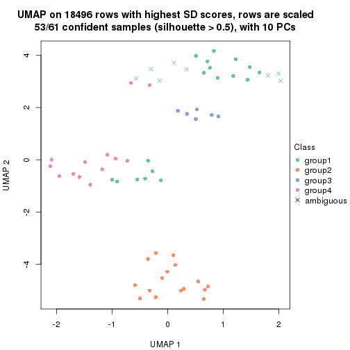
dimension_reduction(res, k = 5, method = "UMAP")
dimension_reduction(res, k = 6, method = "UMAP")
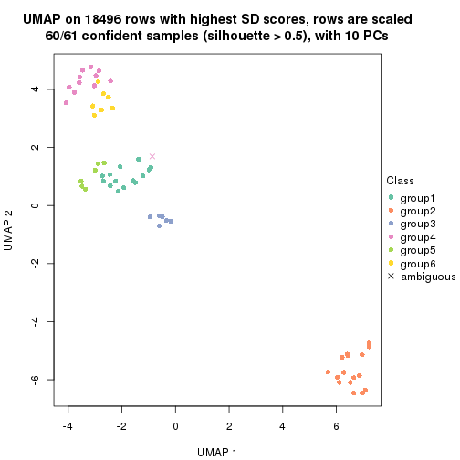
Following heatmap shows how subgroups are split when increasing k:
collect_classes(res)
Test correlation between subgroups and known annotations. If the known annotation is numeric, one-way ANOVA test is applied, and if the known annotation is discrete, chi-squared contingency table test is applied.
test_to_known_factors(res)
#> n cell.type(p) tissue(p) k
#> SD:skmeans 61 1.79e-12 4.63e-04 2
#> SD:skmeans 61 1.33e-10 2.31e-05 3
#> SD:skmeans 53 3.16e-17 5.99e-07 4
#> SD:skmeans 60 7.29e-21 2.38e-08 5
#> SD:skmeans 60 1.42e-21 3.04e-10 6
If matrix rows can be associated to genes, consider to use GO_Enrichment(res,
...) to perform function enrichment for the signature genes.
The object with results only for a single top-value method and a single partition method can be extracted as:
res = res_list["SD", "pam"]
# you can also extract it by
# res = res_list["SD:pam"]
A summary of res and all the functions that can be applied to it:
res
#> A 'ConsensusPartition' object with k = 2, 3, 4, 5, 6.
#> On a matrix with 18496 rows and 61 columns.
#> Top rows (1000, 2000, 3000, 4000, 5000) are extracted by 'SD' method.
#> Subgroups are detected by 'pam' method.
#> Performed in total 1250 partitions by row resampling.
#> Best k for subgroups seems to be 5.
#>
#> Following methods can be applied to this 'ConsensusPartition' object:
#> [1] "cola_report" "collect_classes" "collect_plots"
#> [4] "collect_stats" "colnames" "compare_signatures"
#> [7] "consensus_heatmap" "dimension_reduction" "functional_enrichment"
#> [10] "get_anno_col" "get_anno" "get_classes"
#> [13] "get_consensus" "get_matrix" "get_membership"
#> [16] "get_param" "get_signatures" "get_stats"
#> [19] "is_best_k" "is_stable_k" "membership_heatmap"
#> [22] "ncol" "nrow" "plot_ecdf"
#> [25] "rownames" "select_partition_number" "show"
#> [28] "suggest_best_k" "test_to_known_factors"
collect_plots() function collects all the plots made from res for all k (number of partitions)
into one single page to provide an easy and fast comparison between different k.
collect_plots(res)
The plots are:
k and the heatmap of
predicted classes for each k.k.k.k.All the plots in panels can be made by individual functions and they are plotted later in this section.
select_partition_number() produces several plots showing different
statistics for choosing “optimized” k. There are following statistics:
k;k, the area increased is defined as \(A_k - A_{k-1}\).The detailed explanations of these statistics can be found in the cola vignette.
Generally speaking, lower PAC score, higher mean silhouette score or higher
concordance corresponds to better partition. Rand index and Jaccard index
measure how similar the current partition is compared to partition with k-1.
If they are too similar, we won't accept k is better than k-1.
select_partition_number(res)
The numeric values for all these statistics can be obtained by get_stats().
get_stats(res)
#> k 1-PAC mean_silhouette concordance area_increased Rand Jaccard
#> 2 2 1.000 0.988 0.995 0.3986 0.607 0.607
#> 3 3 0.756 0.918 0.946 0.3722 0.872 0.789
#> 4 4 0.765 0.736 0.842 0.3088 0.796 0.573
#> 5 5 0.920 0.845 0.943 0.1015 0.846 0.517
#> 6 6 0.860 0.733 0.894 0.0238 0.973 0.870
suggest_best_k() suggests the best \(k\) based on these statistics. The rules are as follows:
NA.suggest_best_k(res)
#> [1] 5
#> attr(,"optional")
#> [1] 2
There is also optional best \(k\) = 2 that is worth to check.
Following shows the table of the partitions (You need to click the show/hide
code output link to see it). The membership matrix (columns with name p*)
is inferred by
clue::cl_consensus()
function with the SE method. Basically the value in the membership matrix
represents the probability to belong to a certain group. The finall class
label for an item is determined with the group with highest probability it
belongs to.
In get_classes() function, the entropy is calculated from the membership
matrix and the silhouette score is calculated from the consensus matrix.
cbind(get_classes(res, k = 2), get_membership(res, k = 2))
#> class entropy silhouette p1 p2
#> GSM72644 2 0.000 1.000 0.000 1.000
#> GSM72647 2 0.000 1.000 0.000 1.000
#> GSM72657 2 0.000 1.000 0.000 1.000
#> GSM72658 2 0.000 1.000 0.000 1.000
#> GSM72659 2 0.000 1.000 0.000 1.000
#> GSM72660 2 0.000 1.000 0.000 1.000
#> GSM72683 2 0.000 1.000 0.000 1.000
#> GSM72684 2 0.000 1.000 0.000 1.000
#> GSM72686 2 0.000 1.000 0.000 1.000
#> GSM72687 2 0.000 1.000 0.000 1.000
#> GSM72688 2 0.000 1.000 0.000 1.000
#> GSM72689 2 0.000 1.000 0.000 1.000
#> GSM72690 2 0.000 1.000 0.000 1.000
#> GSM72691 2 0.000 1.000 0.000 1.000
#> GSM72692 2 0.000 1.000 0.000 1.000
#> GSM72693 2 0.000 1.000 0.000 1.000
#> GSM72645 1 0.000 0.993 1.000 0.000
#> GSM72646 1 0.000 0.993 1.000 0.000
#> GSM72678 1 0.876 0.580 0.704 0.296
#> GSM72679 1 0.000 0.993 1.000 0.000
#> GSM72699 1 0.000 0.993 1.000 0.000
#> GSM72700 1 0.000 0.993 1.000 0.000
#> GSM72654 1 0.000 0.993 1.000 0.000
#> GSM72655 1 0.000 0.993 1.000 0.000
#> GSM72661 1 0.000 0.993 1.000 0.000
#> GSM72662 1 0.000 0.993 1.000 0.000
#> GSM72663 1 0.000 0.993 1.000 0.000
#> GSM72665 1 0.000 0.993 1.000 0.000
#> GSM72666 1 0.000 0.993 1.000 0.000
#> GSM72640 1 0.000 0.993 1.000 0.000
#> GSM72641 1 0.000 0.993 1.000 0.000
#> GSM72642 1 0.000 0.993 1.000 0.000
#> GSM72643 1 0.000 0.993 1.000 0.000
#> GSM72651 1 0.000 0.993 1.000 0.000
#> GSM72652 1 0.000 0.993 1.000 0.000
#> GSM72653 1 0.000 0.993 1.000 0.000
#> GSM72656 1 0.000 0.993 1.000 0.000
#> GSM72667 1 0.000 0.993 1.000 0.000
#> GSM72668 1 0.000 0.993 1.000 0.000
#> GSM72669 1 0.000 0.993 1.000 0.000
#> GSM72670 1 0.000 0.993 1.000 0.000
#> GSM72671 1 0.000 0.993 1.000 0.000
#> GSM72672 1 0.000 0.993 1.000 0.000
#> GSM72696 1 0.000 0.993 1.000 0.000
#> GSM72697 1 0.000 0.993 1.000 0.000
#> GSM72674 1 0.000 0.993 1.000 0.000
#> GSM72675 1 0.000 0.993 1.000 0.000
#> GSM72676 1 0.000 0.993 1.000 0.000
#> GSM72677 1 0.000 0.993 1.000 0.000
#> GSM72680 1 0.000 0.993 1.000 0.000
#> GSM72682 1 0.000 0.993 1.000 0.000
#> GSM72685 1 0.000 0.993 1.000 0.000
#> GSM72694 1 0.000 0.993 1.000 0.000
#> GSM72695 1 0.000 0.993 1.000 0.000
#> GSM72698 1 0.000 0.993 1.000 0.000
#> GSM72648 1 0.000 0.993 1.000 0.000
#> GSM72649 1 0.000 0.993 1.000 0.000
#> GSM72650 1 0.000 0.993 1.000 0.000
#> GSM72664 1 0.000 0.993 1.000 0.000
#> GSM72673 1 0.000 0.993 1.000 0.000
#> GSM72681 1 0.000 0.993 1.000 0.000
cbind(get_classes(res, k = 3), get_membership(res, k = 3))
#> class entropy silhouette p1 p2 p3
#> GSM72644 2 0.0000 1.000 0.000 1.00 0.000
#> GSM72647 2 0.0000 1.000 0.000 1.00 0.000
#> GSM72657 2 0.0000 1.000 0.000 1.00 0.000
#> GSM72658 2 0.0000 1.000 0.000 1.00 0.000
#> GSM72659 2 0.0000 1.000 0.000 1.00 0.000
#> GSM72660 2 0.0000 1.000 0.000 1.00 0.000
#> GSM72683 2 0.0000 1.000 0.000 1.00 0.000
#> GSM72684 2 0.0000 1.000 0.000 1.00 0.000
#> GSM72686 2 0.0000 1.000 0.000 1.00 0.000
#> GSM72687 2 0.0000 1.000 0.000 1.00 0.000
#> GSM72688 2 0.0000 1.000 0.000 1.00 0.000
#> GSM72689 2 0.0000 1.000 0.000 1.00 0.000
#> GSM72690 2 0.0000 1.000 0.000 1.00 0.000
#> GSM72691 2 0.0000 1.000 0.000 1.00 0.000
#> GSM72692 2 0.0000 1.000 0.000 1.00 0.000
#> GSM72693 2 0.0000 1.000 0.000 1.00 0.000
#> GSM72645 3 0.4002 0.851 0.160 0.00 0.840
#> GSM72646 3 0.0000 0.854 0.000 0.00 1.000
#> GSM72678 3 0.4921 0.838 0.164 0.02 0.816
#> GSM72679 3 0.4452 0.829 0.192 0.00 0.808
#> GSM72699 3 0.0000 0.854 0.000 0.00 1.000
#> GSM72700 3 0.0000 0.854 0.000 0.00 1.000
#> GSM72654 1 0.0000 0.917 1.000 0.00 0.000
#> GSM72655 1 0.0000 0.917 1.000 0.00 0.000
#> GSM72661 1 0.0000 0.917 1.000 0.00 0.000
#> GSM72662 1 0.0000 0.917 1.000 0.00 0.000
#> GSM72663 1 0.0000 0.917 1.000 0.00 0.000
#> GSM72665 1 0.0000 0.917 1.000 0.00 0.000
#> GSM72666 1 0.0000 0.917 1.000 0.00 0.000
#> GSM72640 1 0.0000 0.917 1.000 0.00 0.000
#> GSM72641 1 0.0000 0.917 1.000 0.00 0.000
#> GSM72642 1 0.4346 0.860 0.816 0.00 0.184
#> GSM72643 1 0.4346 0.860 0.816 0.00 0.184
#> GSM72651 1 0.0000 0.917 1.000 0.00 0.000
#> GSM72652 1 0.0000 0.917 1.000 0.00 0.000
#> GSM72653 1 0.0000 0.917 1.000 0.00 0.000
#> GSM72656 1 0.0000 0.917 1.000 0.00 0.000
#> GSM72667 1 0.4346 0.860 0.816 0.00 0.184
#> GSM72668 1 0.4178 0.864 0.828 0.00 0.172
#> GSM72669 1 0.4346 0.860 0.816 0.00 0.184
#> GSM72670 1 0.4346 0.860 0.816 0.00 0.184
#> GSM72671 1 0.4346 0.860 0.816 0.00 0.184
#> GSM72672 1 0.0000 0.917 1.000 0.00 0.000
#> GSM72696 1 0.0000 0.917 1.000 0.00 0.000
#> GSM72697 1 0.0000 0.917 1.000 0.00 0.000
#> GSM72674 1 0.0000 0.917 1.000 0.00 0.000
#> GSM72675 1 0.0000 0.917 1.000 0.00 0.000
#> GSM72676 1 0.0424 0.915 0.992 0.00 0.008
#> GSM72677 1 0.4346 0.860 0.816 0.00 0.184
#> GSM72680 1 0.0000 0.917 1.000 0.00 0.000
#> GSM72682 1 0.3482 0.880 0.872 0.00 0.128
#> GSM72685 1 0.4346 0.860 0.816 0.00 0.184
#> GSM72694 1 0.4346 0.860 0.816 0.00 0.184
#> GSM72695 1 0.1643 0.906 0.956 0.00 0.044
#> GSM72698 1 0.0000 0.917 1.000 0.00 0.000
#> GSM72648 1 0.4346 0.860 0.816 0.00 0.184
#> GSM72649 1 0.4346 0.860 0.816 0.00 0.184
#> GSM72650 1 0.4346 0.860 0.816 0.00 0.184
#> GSM72664 1 0.0000 0.917 1.000 0.00 0.000
#> GSM72673 1 0.4346 0.860 0.816 0.00 0.184
#> GSM72681 1 0.0000 0.917 1.000 0.00 0.000
cbind(get_classes(res, k = 4), get_membership(res, k = 4))
#> class entropy silhouette p1 p2 p3 p4
#> GSM72644 2 0.000 1.000 0.000 1 0.00 0.000
#> GSM72647 2 0.000 1.000 0.000 1 0.00 0.000
#> GSM72657 2 0.000 1.000 0.000 1 0.00 0.000
#> GSM72658 2 0.000 1.000 0.000 1 0.00 0.000
#> GSM72659 2 0.000 1.000 0.000 1 0.00 0.000
#> GSM72660 2 0.000 1.000 0.000 1 0.00 0.000
#> GSM72683 2 0.000 1.000 0.000 1 0.00 0.000
#> GSM72684 2 0.000 1.000 0.000 1 0.00 0.000
#> GSM72686 2 0.000 1.000 0.000 1 0.00 0.000
#> GSM72687 2 0.000 1.000 0.000 1 0.00 0.000
#> GSM72688 2 0.000 1.000 0.000 1 0.00 0.000
#> GSM72689 2 0.000 1.000 0.000 1 0.00 0.000
#> GSM72690 2 0.000 1.000 0.000 1 0.00 0.000
#> GSM72691 2 0.000 1.000 0.000 1 0.00 0.000
#> GSM72692 2 0.000 1.000 0.000 1 0.00 0.000
#> GSM72693 2 0.000 1.000 0.000 1 0.00 0.000
#> GSM72645 3 0.000 0.990 0.000 0 1.00 0.000
#> GSM72646 3 0.000 0.990 0.000 0 1.00 0.000
#> GSM72678 3 0.000 0.990 0.000 0 1.00 0.000
#> GSM72679 3 0.121 0.949 0.000 0 0.96 0.040
#> GSM72699 3 0.000 0.990 0.000 0 1.00 0.000
#> GSM72700 3 0.000 0.990 0.000 0 1.00 0.000
#> GSM72654 1 0.292 0.593 0.860 0 0.00 0.140
#> GSM72655 1 0.349 0.513 0.812 0 0.00 0.188
#> GSM72661 4 0.488 0.644 0.408 0 0.00 0.592
#> GSM72662 4 0.488 0.644 0.408 0 0.00 0.592
#> GSM72663 4 0.000 0.609 0.000 0 0.00 1.000
#> GSM72665 4 0.488 0.644 0.408 0 0.00 0.592
#> GSM72666 4 0.488 0.644 0.408 0 0.00 0.592
#> GSM72640 1 0.353 0.505 0.808 0 0.00 0.192
#> GSM72641 4 0.488 0.644 0.408 0 0.00 0.592
#> GSM72642 1 0.000 0.739 1.000 0 0.00 0.000
#> GSM72643 1 0.489 0.416 0.588 0 0.00 0.412
#> GSM72651 4 0.488 0.644 0.408 0 0.00 0.592
#> GSM72652 4 0.488 0.644 0.408 0 0.00 0.592
#> GSM72653 4 0.488 0.644 0.408 0 0.00 0.592
#> GSM72656 4 0.488 0.644 0.408 0 0.00 0.592
#> GSM72667 1 0.000 0.739 1.000 0 0.00 0.000
#> GSM72668 1 0.000 0.739 1.000 0 0.00 0.000
#> GSM72669 1 0.000 0.739 1.000 0 0.00 0.000
#> GSM72670 1 0.000 0.739 1.000 0 0.00 0.000
#> GSM72671 1 0.000 0.739 1.000 0 0.00 0.000
#> GSM72672 4 0.488 0.644 0.408 0 0.00 0.592
#> GSM72696 4 0.000 0.609 0.000 0 0.00 1.000
#> GSM72697 4 0.000 0.609 0.000 0 0.00 1.000
#> GSM72674 4 0.000 0.609 0.000 0 0.00 1.000
#> GSM72675 4 0.000 0.609 0.000 0 0.00 1.000
#> GSM72676 4 0.000 0.609 0.000 0 0.00 1.000
#> GSM72677 4 0.353 0.351 0.192 0 0.00 0.808
#> GSM72680 4 0.488 0.644 0.408 0 0.00 0.592
#> GSM72682 1 0.499 0.369 0.528 0 0.00 0.472
#> GSM72685 1 0.497 -0.413 0.548 0 0.00 0.452
#> GSM72694 1 0.498 0.367 0.540 0 0.00 0.460
#> GSM72695 4 0.000 0.609 0.000 0 0.00 1.000
#> GSM72698 4 0.000 0.609 0.000 0 0.00 1.000
#> GSM72648 1 0.000 0.739 1.000 0 0.00 0.000
#> GSM72649 1 0.000 0.739 1.000 0 0.00 0.000
#> GSM72650 1 0.000 0.739 1.000 0 0.00 0.000
#> GSM72664 4 0.488 0.644 0.408 0 0.00 0.592
#> GSM72673 1 0.488 0.419 0.592 0 0.00 0.408
#> GSM72681 4 0.317 0.622 0.160 0 0.00 0.840
cbind(get_classes(res, k = 5), get_membership(res, k = 5))
#> class entropy silhouette p1 p2 p3 p4 p5
#> GSM72644 2 0.0000 1.0000 0.000 1 0.00 0.000 0.000
#> GSM72647 2 0.0000 1.0000 0.000 1 0.00 0.000 0.000
#> GSM72657 2 0.0000 1.0000 0.000 1 0.00 0.000 0.000
#> GSM72658 2 0.0000 1.0000 0.000 1 0.00 0.000 0.000
#> GSM72659 2 0.0000 1.0000 0.000 1 0.00 0.000 0.000
#> GSM72660 2 0.0000 1.0000 0.000 1 0.00 0.000 0.000
#> GSM72683 2 0.0000 1.0000 0.000 1 0.00 0.000 0.000
#> GSM72684 2 0.0000 1.0000 0.000 1 0.00 0.000 0.000
#> GSM72686 2 0.0000 1.0000 0.000 1 0.00 0.000 0.000
#> GSM72687 2 0.0000 1.0000 0.000 1 0.00 0.000 0.000
#> GSM72688 2 0.0000 1.0000 0.000 1 0.00 0.000 0.000
#> GSM72689 2 0.0000 1.0000 0.000 1 0.00 0.000 0.000
#> GSM72690 2 0.0000 1.0000 0.000 1 0.00 0.000 0.000
#> GSM72691 2 0.0000 1.0000 0.000 1 0.00 0.000 0.000
#> GSM72692 2 0.0000 1.0000 0.000 1 0.00 0.000 0.000
#> GSM72693 2 0.0000 1.0000 0.000 1 0.00 0.000 0.000
#> GSM72645 3 0.0000 0.9342 0.000 0 1.00 0.000 0.000
#> GSM72646 3 0.0000 0.9342 0.000 0 1.00 0.000 0.000
#> GSM72678 3 0.0000 0.9342 0.000 0 1.00 0.000 0.000
#> GSM72679 3 0.3561 0.6250 0.260 0 0.74 0.000 0.000
#> GSM72699 3 0.0000 0.9342 0.000 0 1.00 0.000 0.000
#> GSM72700 3 0.0000 0.9342 0.000 0 1.00 0.000 0.000
#> GSM72654 1 0.4306 0.0890 0.508 0 0.00 0.000 0.492
#> GSM72655 1 0.4192 0.3292 0.596 0 0.00 0.000 0.404
#> GSM72661 1 0.0000 0.9014 1.000 0 0.00 0.000 0.000
#> GSM72662 1 0.0000 0.9014 1.000 0 0.00 0.000 0.000
#> GSM72663 1 0.0000 0.9014 1.000 0 0.00 0.000 0.000
#> GSM72665 1 0.0000 0.9014 1.000 0 0.00 0.000 0.000
#> GSM72666 1 0.0000 0.9014 1.000 0 0.00 0.000 0.000
#> GSM72640 1 0.4182 0.3374 0.600 0 0.00 0.000 0.400
#> GSM72641 1 0.0000 0.9014 1.000 0 0.00 0.000 0.000
#> GSM72642 5 0.0000 0.8749 0.000 0 0.00 0.000 1.000
#> GSM72643 4 0.0000 0.8825 0.000 0 0.00 1.000 0.000
#> GSM72651 1 0.0000 0.9014 1.000 0 0.00 0.000 0.000
#> GSM72652 1 0.0000 0.9014 1.000 0 0.00 0.000 0.000
#> GSM72653 1 0.0000 0.9014 1.000 0 0.00 0.000 0.000
#> GSM72656 1 0.0000 0.9014 1.000 0 0.00 0.000 0.000
#> GSM72667 5 0.0000 0.8749 0.000 0 0.00 0.000 1.000
#> GSM72668 5 0.0404 0.8645 0.012 0 0.00 0.000 0.988
#> GSM72669 5 0.0000 0.8749 0.000 0 0.00 0.000 1.000
#> GSM72670 5 0.0000 0.8749 0.000 0 0.00 0.000 1.000
#> GSM72671 5 0.0000 0.8749 0.000 0 0.00 0.000 1.000
#> GSM72672 1 0.0000 0.9014 1.000 0 0.00 0.000 0.000
#> GSM72696 4 0.3932 0.5502 0.328 0 0.00 0.672 0.000
#> GSM72697 4 0.3395 0.6713 0.236 0 0.00 0.764 0.000
#> GSM72674 4 0.0000 0.8825 0.000 0 0.00 1.000 0.000
#> GSM72675 4 0.0000 0.8825 0.000 0 0.00 1.000 0.000
#> GSM72676 4 0.0000 0.8825 0.000 0 0.00 1.000 0.000
#> GSM72677 5 0.5288 0.2618 0.404 0 0.00 0.052 0.544
#> GSM72680 1 0.0000 0.9014 1.000 0 0.00 0.000 0.000
#> GSM72682 4 0.4088 0.4137 0.000 0 0.00 0.632 0.368
#> GSM72685 5 0.4307 0.0677 0.496 0 0.00 0.000 0.504
#> GSM72694 4 0.0000 0.8825 0.000 0 0.00 1.000 0.000
#> GSM72695 4 0.0000 0.8825 0.000 0 0.00 1.000 0.000
#> GSM72698 4 0.0000 0.8825 0.000 0 0.00 1.000 0.000
#> GSM72648 5 0.0000 0.8749 0.000 0 0.00 0.000 1.000
#> GSM72649 5 0.0000 0.8749 0.000 0 0.00 0.000 1.000
#> GSM72650 5 0.0000 0.8749 0.000 0 0.00 0.000 1.000
#> GSM72664 1 0.0000 0.9014 1.000 0 0.00 0.000 0.000
#> GSM72673 4 0.0000 0.8825 0.000 0 0.00 1.000 0.000
#> GSM72681 1 0.0000 0.9014 1.000 0 0.00 0.000 0.000
cbind(get_classes(res, k = 6), get_membership(res, k = 6))
#> class entropy silhouette p1 p2 p3 p4 p5 p6
#> GSM72644 2 0.2003 0.9036 0.000 0.884 0.000 0.000 0.000 0.116
#> GSM72647 2 0.0000 0.9790 0.000 1.000 0.000 0.000 0.000 0.000
#> GSM72657 2 0.0000 0.9790 0.000 1.000 0.000 0.000 0.000 0.000
#> GSM72658 2 0.0000 0.9790 0.000 1.000 0.000 0.000 0.000 0.000
#> GSM72659 2 0.0000 0.9790 0.000 1.000 0.000 0.000 0.000 0.000
#> GSM72660 2 0.0000 0.9790 0.000 1.000 0.000 0.000 0.000 0.000
#> GSM72683 2 0.2003 0.9036 0.000 0.884 0.000 0.000 0.000 0.116
#> GSM72684 2 0.2003 0.9036 0.000 0.884 0.000 0.000 0.000 0.116
#> GSM72686 2 0.0000 0.9790 0.000 1.000 0.000 0.000 0.000 0.000
#> GSM72687 2 0.0000 0.9790 0.000 1.000 0.000 0.000 0.000 0.000
#> GSM72688 2 0.0000 0.9790 0.000 1.000 0.000 0.000 0.000 0.000
#> GSM72689 2 0.0000 0.9790 0.000 1.000 0.000 0.000 0.000 0.000
#> GSM72690 2 0.0000 0.9790 0.000 1.000 0.000 0.000 0.000 0.000
#> GSM72691 2 0.0000 0.9790 0.000 1.000 0.000 0.000 0.000 0.000
#> GSM72692 2 0.0000 0.9790 0.000 1.000 0.000 0.000 0.000 0.000
#> GSM72693 2 0.0000 0.9790 0.000 1.000 0.000 0.000 0.000 0.000
#> GSM72645 3 0.0000 0.9226 0.000 0.000 1.000 0.000 0.000 0.000
#> GSM72646 3 0.0000 0.9226 0.000 0.000 1.000 0.000 0.000 0.000
#> GSM72678 3 0.3684 0.6537 0.000 0.000 0.628 0.000 0.000 0.372
#> GSM72679 6 0.6061 -0.3507 0.260 0.000 0.368 0.000 0.000 0.372
#> GSM72699 3 0.0000 0.9226 0.000 0.000 1.000 0.000 0.000 0.000
#> GSM72700 3 0.0000 0.9226 0.000 0.000 1.000 0.000 0.000 0.000
#> GSM72654 1 0.3868 0.0905 0.508 0.000 0.000 0.000 0.492 0.000
#> GSM72655 1 0.3765 0.2697 0.596 0.000 0.000 0.000 0.404 0.000
#> GSM72661 1 0.0000 0.7065 1.000 0.000 0.000 0.000 0.000 0.000
#> GSM72662 1 0.0000 0.7065 1.000 0.000 0.000 0.000 0.000 0.000
#> GSM72663 1 0.0000 0.7065 1.000 0.000 0.000 0.000 0.000 0.000
#> GSM72665 1 0.0000 0.7065 1.000 0.000 0.000 0.000 0.000 0.000
#> GSM72666 1 0.0000 0.7065 1.000 0.000 0.000 0.000 0.000 0.000
#> GSM72640 1 0.3756 0.2723 0.600 0.000 0.000 0.000 0.400 0.000
#> GSM72641 1 0.0146 0.7025 0.996 0.000 0.000 0.000 0.000 0.004
#> GSM72642 5 0.0000 0.8729 0.000 0.000 0.000 0.000 1.000 0.000
#> GSM72643 4 0.0000 0.8785 0.000 0.000 0.000 1.000 0.000 0.000
#> GSM72651 1 0.0000 0.7065 1.000 0.000 0.000 0.000 0.000 0.000
#> GSM72652 1 0.0000 0.7065 1.000 0.000 0.000 0.000 0.000 0.000
#> GSM72653 6 0.3867 0.5995 0.488 0.000 0.000 0.000 0.000 0.512
#> GSM72656 6 0.3867 0.5995 0.488 0.000 0.000 0.000 0.000 0.512
#> GSM72667 5 0.0000 0.8729 0.000 0.000 0.000 0.000 1.000 0.000
#> GSM72668 5 0.0363 0.8626 0.012 0.000 0.000 0.000 0.988 0.000
#> GSM72669 5 0.0000 0.8729 0.000 0.000 0.000 0.000 1.000 0.000
#> GSM72670 5 0.0000 0.8729 0.000 0.000 0.000 0.000 1.000 0.000
#> GSM72671 5 0.0000 0.8729 0.000 0.000 0.000 0.000 1.000 0.000
#> GSM72672 6 0.3867 0.5995 0.488 0.000 0.000 0.000 0.000 0.512
#> GSM72696 4 0.3531 0.4348 0.328 0.000 0.000 0.672 0.000 0.000
#> GSM72697 4 0.3050 0.6150 0.236 0.000 0.000 0.764 0.000 0.000
#> GSM72674 4 0.0000 0.8785 0.000 0.000 0.000 1.000 0.000 0.000
#> GSM72675 4 0.0000 0.8785 0.000 0.000 0.000 1.000 0.000 0.000
#> GSM72676 4 0.0000 0.8785 0.000 0.000 0.000 1.000 0.000 0.000
#> GSM72677 5 0.5140 0.0899 0.396 0.000 0.000 0.052 0.536 0.016
#> GSM72680 1 0.3854 -0.6257 0.536 0.000 0.000 0.000 0.000 0.464
#> GSM72682 4 0.3672 0.4127 0.000 0.000 0.000 0.632 0.368 0.000
#> GSM72685 5 0.3998 -0.0203 0.492 0.000 0.000 0.000 0.504 0.004
#> GSM72694 4 0.0000 0.8785 0.000 0.000 0.000 1.000 0.000 0.000
#> GSM72695 4 0.0000 0.8785 0.000 0.000 0.000 1.000 0.000 0.000
#> GSM72698 4 0.0000 0.8785 0.000 0.000 0.000 1.000 0.000 0.000
#> GSM72648 5 0.0000 0.8729 0.000 0.000 0.000 0.000 1.000 0.000
#> GSM72649 5 0.0000 0.8729 0.000 0.000 0.000 0.000 1.000 0.000
#> GSM72650 5 0.0000 0.8729 0.000 0.000 0.000 0.000 1.000 0.000
#> GSM72664 1 0.0146 0.7025 0.996 0.000 0.000 0.000 0.000 0.004
#> GSM72673 4 0.0000 0.8785 0.000 0.000 0.000 1.000 0.000 0.000
#> GSM72681 1 0.0000 0.7065 1.000 0.000 0.000 0.000 0.000 0.000
Heatmaps for the consensus matrix. It visualizes the probability of two samples to be in a same group.
consensus_heatmap(res, k = 2)
consensus_heatmap(res, k = 3)
consensus_heatmap(res, k = 4)
consensus_heatmap(res, k = 5)
consensus_heatmap(res, k = 6)
Heatmaps for the membership of samples in all partitions to see how consistent they are:
membership_heatmap(res, k = 2)
membership_heatmap(res, k = 3)
membership_heatmap(res, k = 4)
membership_heatmap(res, k = 5)
membership_heatmap(res, k = 6)
As soon as we have had the classes for columns, we can look for signatures which are significantly different between classes which can be candidate marks for certain classes. Following are the heatmaps for signatures.
Signature heatmaps where rows are scaled:
get_signatures(res, k = 2)
get_signatures(res, k = 3)
get_signatures(res, k = 4)
get_signatures(res, k = 5)
get_signatures(res, k = 6)
Signature heatmaps where rows are not scaled:
get_signatures(res, k = 2, scale_rows = FALSE)
get_signatures(res, k = 3, scale_rows = FALSE)
get_signatures(res, k = 4, scale_rows = FALSE)
get_signatures(res, k = 5, scale_rows = FALSE)
get_signatures(res, k = 6, scale_rows = FALSE)
Compare the overlap of signatures from different k:
compare_signatures(res)
get_signature() returns a data frame invisibly. TO get the list of signatures, the function
call should be assigned to a variable explicitly. In following code, if plot argument is set
to FALSE, no heatmap is plotted while only the differential analysis is performed.
# code only for demonstration
tb = get_signature(res, k = ..., plot = FALSE)
An example of the output of tb is:
#> which_row fdr mean_1 mean_2 scaled_mean_1 scaled_mean_2 km
#> 1 38 0.042760348 8.373488 9.131774 -0.5533452 0.5164555 1
#> 2 40 0.018707592 7.106213 8.469186 -0.6173731 0.5762149 1
#> 3 55 0.019134737 10.221463 11.207825 -0.6159697 0.5749050 1
#> 4 59 0.006059896 5.921854 7.869574 -0.6899429 0.6439467 1
#> 5 60 0.018055526 8.928898 10.211722 -0.6204761 0.5791110 1
#> 6 98 0.009384629 15.714769 14.887706 0.6635654 -0.6193277 2
...
The columns in tb are:
which_row: row indices corresponding to the input matrix.fdr: FDR for the differential test. mean_x: The mean value in group x.scaled_mean_x: The mean value in group x after rows are scaled.km: Row groups if k-means clustering is applied to rows.UMAP plot which shows how samples are separated.
dimension_reduction(res, k = 2, method = "UMAP")
dimension_reduction(res, k = 3, method = "UMAP")

dimension_reduction(res, k = 4, method = "UMAP")
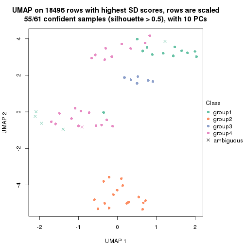
dimension_reduction(res, k = 5, method = "UMAP")
dimension_reduction(res, k = 6, method = "UMAP")
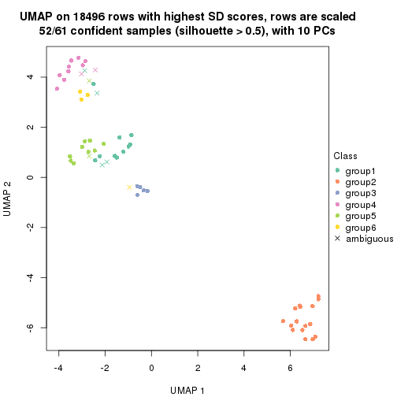
Following heatmap shows how subgroups are split when increasing k:
collect_classes(res)
Test correlation between subgroups and known annotations. If the known annotation is numeric, one-way ANOVA test is applied, and if the known annotation is discrete, chi-squared contingency table test is applied.
test_to_known_factors(res)
#> n cell.type(p) tissue(p) k
#> SD:pam 61 1.79e-12 4.63e-04 2
#> SD:pam 61 1.28e-22 1.86e-06 3
#> SD:pam 55 1.95e-18 9.19e-08 4
#> SD:pam 55 3.28e-19 1.90e-10 5
#> SD:pam 52 3.69e-18 7.19e-12 6
If matrix rows can be associated to genes, consider to use GO_Enrichment(res,
...) to perform function enrichment for the signature genes.
The object with results only for a single top-value method and a single partition method can be extracted as:
res = res_list["SD", "mclust"]
# you can also extract it by
# res = res_list["SD:mclust"]
A summary of res and all the functions that can be applied to it:
res
#> A 'ConsensusPartition' object with k = 2, 3, 4, 5, 6.
#> On a matrix with 18496 rows and 61 columns.
#> Top rows (1000, 2000, 3000, 4000, 5000) are extracted by 'SD' method.
#> Subgroups are detected by 'mclust' method.
#> Performed in total 1250 partitions by row resampling.
#> Best k for subgroups seems to be 2.
#>
#> Following methods can be applied to this 'ConsensusPartition' object:
#> [1] "cola_report" "collect_classes" "collect_plots"
#> [4] "collect_stats" "colnames" "compare_signatures"
#> [7] "consensus_heatmap" "dimension_reduction" "functional_enrichment"
#> [10] "get_anno_col" "get_anno" "get_classes"
#> [13] "get_consensus" "get_matrix" "get_membership"
#> [16] "get_param" "get_signatures" "get_stats"
#> [19] "is_best_k" "is_stable_k" "membership_heatmap"
#> [22] "ncol" "nrow" "plot_ecdf"
#> [25] "rownames" "select_partition_number" "show"
#> [28] "suggest_best_k" "test_to_known_factors"
collect_plots() function collects all the plots made from res for all k (number of partitions)
into one single page to provide an easy and fast comparison between different k.
collect_plots(res)
The plots are:
k and the heatmap of
predicted classes for each k.k.k.k.All the plots in panels can be made by individual functions and they are plotted later in this section.
select_partition_number() produces several plots showing different
statistics for choosing “optimized” k. There are following statistics:
k;k, the area increased is defined as \(A_k - A_{k-1}\).The detailed explanations of these statistics can be found in the cola vignette.
Generally speaking, lower PAC score, higher mean silhouette score or higher
concordance corresponds to better partition. Rand index and Jaccard index
measure how similar the current partition is compared to partition with k-1.
If they are too similar, we won't accept k is better than k-1.
select_partition_number(res)
The numeric values for all these statistics can be obtained by get_stats().
get_stats(res)
#> k 1-PAC mean_silhouette concordance area_increased Rand Jaccard
#> 2 2 0.434 0.936 0.931 0.4058 0.607 0.607
#> 3 3 0.899 0.970 0.960 0.3291 0.872 0.789
#> 4 4 0.766 0.752 0.886 0.3343 0.796 0.573
#> 5 5 0.756 0.590 0.760 0.0883 0.899 0.651
#> 6 6 0.692 0.570 0.691 0.0363 0.913 0.631
suggest_best_k() suggests the best \(k\) based on these statistics. The rules are as follows:
NA.suggest_best_k(res)
#> [1] 2
Following shows the table of the partitions (You need to click the show/hide
code output link to see it). The membership matrix (columns with name p*)
is inferred by
clue::cl_consensus()
function with the SE method. Basically the value in the membership matrix
represents the probability to belong to a certain group. The finall class
label for an item is determined with the group with highest probability it
belongs to.
In get_classes() function, the entropy is calculated from the membership
matrix and the silhouette score is calculated from the consensus matrix.
cbind(get_classes(res, k = 2), get_membership(res, k = 2))
#> class entropy silhouette p1 p2
#> GSM72644 2 0.0938 0.988 0.012 0.988
#> GSM72647 2 0.0000 0.997 0.000 1.000
#> GSM72657 2 0.0000 0.997 0.000 1.000
#> GSM72658 2 0.0000 0.997 0.000 1.000
#> GSM72659 2 0.0000 0.997 0.000 1.000
#> GSM72660 2 0.0000 0.997 0.000 1.000
#> GSM72683 2 0.0938 0.988 0.012 0.988
#> GSM72684 2 0.0938 0.988 0.012 0.988
#> GSM72686 2 0.0000 0.997 0.000 1.000
#> GSM72687 2 0.0000 0.997 0.000 1.000
#> GSM72688 2 0.0000 0.997 0.000 1.000
#> GSM72689 2 0.0000 0.997 0.000 1.000
#> GSM72690 2 0.0000 0.997 0.000 1.000
#> GSM72691 2 0.0000 0.997 0.000 1.000
#> GSM72692 2 0.0000 0.997 0.000 1.000
#> GSM72693 2 0.0000 0.997 0.000 1.000
#> GSM72645 1 0.5946 0.800 0.856 0.144
#> GSM72646 1 0.5946 0.800 0.856 0.144
#> GSM72678 1 0.5946 0.800 0.856 0.144
#> GSM72679 1 0.5946 0.800 0.856 0.144
#> GSM72699 1 0.5946 0.800 0.856 0.144
#> GSM72700 1 0.5946 0.800 0.856 0.144
#> GSM72654 1 0.4690 0.943 0.900 0.100
#> GSM72655 1 0.4690 0.943 0.900 0.100
#> GSM72661 1 0.4690 0.943 0.900 0.100
#> GSM72662 1 0.4562 0.941 0.904 0.096
#> GSM72663 1 0.0376 0.908 0.996 0.004
#> GSM72665 1 0.4690 0.943 0.900 0.100
#> GSM72666 1 0.4690 0.943 0.900 0.100
#> GSM72640 1 0.4690 0.943 0.900 0.100
#> GSM72641 1 0.4690 0.943 0.900 0.100
#> GSM72642 1 0.4690 0.943 0.900 0.100
#> GSM72643 1 0.0000 0.906 1.000 0.000
#> GSM72651 1 0.4690 0.943 0.900 0.100
#> GSM72652 1 0.4690 0.943 0.900 0.100
#> GSM72653 1 0.4690 0.943 0.900 0.100
#> GSM72656 1 0.4690 0.943 0.900 0.100
#> GSM72667 1 0.4690 0.943 0.900 0.100
#> GSM72668 1 0.4690 0.943 0.900 0.100
#> GSM72669 1 0.4690 0.943 0.900 0.100
#> GSM72670 1 0.4690 0.943 0.900 0.100
#> GSM72671 1 0.4690 0.943 0.900 0.100
#> GSM72672 1 0.4690 0.943 0.900 0.100
#> GSM72696 1 0.0000 0.906 1.000 0.000
#> GSM72697 1 0.0000 0.906 1.000 0.000
#> GSM72674 1 0.0000 0.906 1.000 0.000
#> GSM72675 1 0.0000 0.906 1.000 0.000
#> GSM72676 1 0.0000 0.906 1.000 0.000
#> GSM72677 1 0.4690 0.943 0.900 0.100
#> GSM72680 1 0.4690 0.943 0.900 0.100
#> GSM72682 1 0.4690 0.943 0.900 0.100
#> GSM72685 1 0.4690 0.943 0.900 0.100
#> GSM72694 1 0.0000 0.906 1.000 0.000
#> GSM72695 1 0.0000 0.906 1.000 0.000
#> GSM72698 1 0.0000 0.906 1.000 0.000
#> GSM72648 1 0.4690 0.943 0.900 0.100
#> GSM72649 1 0.4690 0.943 0.900 0.100
#> GSM72650 1 0.4690 0.943 0.900 0.100
#> GSM72664 1 0.4690 0.943 0.900 0.100
#> GSM72673 1 0.0000 0.906 1.000 0.000
#> GSM72681 1 0.4690 0.943 0.900 0.100
cbind(get_classes(res, k = 3), get_membership(res, k = 3))
#> class entropy silhouette p1 p2 p3
#> GSM72644 2 0.0424 0.993 0.000 0.992 0.008
#> GSM72647 2 0.0000 0.998 0.000 1.000 0.000
#> GSM72657 2 0.0424 0.993 0.000 0.992 0.008
#> GSM72658 2 0.0000 0.998 0.000 1.000 0.000
#> GSM72659 2 0.0000 0.998 0.000 1.000 0.000
#> GSM72660 2 0.0000 0.998 0.000 1.000 0.000
#> GSM72683 2 0.0424 0.993 0.000 0.992 0.008
#> GSM72684 2 0.0424 0.993 0.000 0.992 0.008
#> GSM72686 2 0.0000 0.998 0.000 1.000 0.000
#> GSM72687 2 0.0000 0.998 0.000 1.000 0.000
#> GSM72688 2 0.0000 0.998 0.000 1.000 0.000
#> GSM72689 2 0.0000 0.998 0.000 1.000 0.000
#> GSM72690 2 0.0000 0.998 0.000 1.000 0.000
#> GSM72691 2 0.0000 0.998 0.000 1.000 0.000
#> GSM72692 2 0.0000 0.998 0.000 1.000 0.000
#> GSM72693 2 0.0000 0.998 0.000 1.000 0.000
#> GSM72645 3 0.3192 1.000 0.000 0.112 0.888
#> GSM72646 3 0.3192 1.000 0.000 0.112 0.888
#> GSM72678 3 0.3192 1.000 0.000 0.112 0.888
#> GSM72679 3 0.3192 1.000 0.000 0.112 0.888
#> GSM72699 3 0.3192 1.000 0.000 0.112 0.888
#> GSM72700 3 0.3192 1.000 0.000 0.112 0.888
#> GSM72654 1 0.1964 0.953 0.944 0.000 0.056
#> GSM72655 1 0.1860 0.954 0.948 0.000 0.052
#> GSM72661 1 0.0000 0.964 1.000 0.000 0.000
#> GSM72662 1 0.0000 0.964 1.000 0.000 0.000
#> GSM72663 1 0.0592 0.963 0.988 0.000 0.012
#> GSM72665 1 0.0424 0.964 0.992 0.000 0.008
#> GSM72666 1 0.0747 0.964 0.984 0.000 0.016
#> GSM72640 1 0.1753 0.961 0.952 0.000 0.048
#> GSM72641 1 0.0424 0.964 0.992 0.000 0.008
#> GSM72642 1 0.0424 0.964 0.992 0.000 0.008
#> GSM72643 1 0.1860 0.957 0.948 0.000 0.052
#> GSM72651 1 0.0000 0.964 1.000 0.000 0.000
#> GSM72652 1 0.0000 0.964 1.000 0.000 0.000
#> GSM72653 1 0.1411 0.958 0.964 0.000 0.036
#> GSM72656 1 0.1411 0.958 0.964 0.000 0.036
#> GSM72667 1 0.1163 0.960 0.972 0.000 0.028
#> GSM72668 1 0.0592 0.964 0.988 0.000 0.012
#> GSM72669 1 0.2625 0.943 0.916 0.000 0.084
#> GSM72670 1 0.2625 0.943 0.916 0.000 0.084
#> GSM72671 1 0.2165 0.951 0.936 0.000 0.064
#> GSM72672 1 0.1529 0.959 0.960 0.000 0.040
#> GSM72696 1 0.0424 0.964 0.992 0.000 0.008
#> GSM72697 1 0.2066 0.948 0.940 0.000 0.060
#> GSM72674 1 0.2711 0.945 0.912 0.000 0.088
#> GSM72675 1 0.1964 0.950 0.944 0.000 0.056
#> GSM72676 1 0.2959 0.941 0.900 0.000 0.100
#> GSM72677 1 0.2066 0.948 0.940 0.000 0.060
#> GSM72680 1 0.0000 0.964 1.000 0.000 0.000
#> GSM72682 1 0.2711 0.946 0.912 0.000 0.088
#> GSM72685 1 0.0424 0.964 0.992 0.000 0.008
#> GSM72694 1 0.2711 0.947 0.912 0.000 0.088
#> GSM72695 1 0.2959 0.941 0.900 0.000 0.100
#> GSM72698 1 0.2165 0.949 0.936 0.000 0.064
#> GSM72648 1 0.2625 0.943 0.916 0.000 0.084
#> GSM72649 1 0.2625 0.943 0.916 0.000 0.084
#> GSM72650 1 0.2625 0.943 0.916 0.000 0.084
#> GSM72664 1 0.0424 0.964 0.992 0.000 0.008
#> GSM72673 1 0.2711 0.947 0.912 0.000 0.088
#> GSM72681 1 0.0592 0.963 0.988 0.000 0.012
cbind(get_classes(res, k = 4), get_membership(res, k = 4))
#> class entropy silhouette p1 p2 p3 p4
#> GSM72644 2 0.0188 0.996 0.004 0.996 0 0.000
#> GSM72647 2 0.0000 0.999 0.000 1.000 0 0.000
#> GSM72657 2 0.0188 0.996 0.004 0.996 0 0.000
#> GSM72658 2 0.0000 0.999 0.000 1.000 0 0.000
#> GSM72659 2 0.0000 0.999 0.000 1.000 0 0.000
#> GSM72660 2 0.0000 0.999 0.000 1.000 0 0.000
#> GSM72683 2 0.0188 0.996 0.004 0.996 0 0.000
#> GSM72684 2 0.0188 0.996 0.004 0.996 0 0.000
#> GSM72686 2 0.0000 0.999 0.000 1.000 0 0.000
#> GSM72687 2 0.0000 0.999 0.000 1.000 0 0.000
#> GSM72688 2 0.0000 0.999 0.000 1.000 0 0.000
#> GSM72689 2 0.0000 0.999 0.000 1.000 0 0.000
#> GSM72690 2 0.0000 0.999 0.000 1.000 0 0.000
#> GSM72691 2 0.0000 0.999 0.000 1.000 0 0.000
#> GSM72692 2 0.0000 0.999 0.000 1.000 0 0.000
#> GSM72693 2 0.0000 0.999 0.000 1.000 0 0.000
#> GSM72645 3 0.0000 1.000 0.000 0.000 1 0.000
#> GSM72646 3 0.0000 1.000 0.000 0.000 1 0.000
#> GSM72678 3 0.0000 1.000 0.000 0.000 1 0.000
#> GSM72679 3 0.0000 1.000 0.000 0.000 1 0.000
#> GSM72699 3 0.0000 1.000 0.000 0.000 1 0.000
#> GSM72700 3 0.0000 1.000 0.000 0.000 1 0.000
#> GSM72654 1 0.0469 0.758 0.988 0.000 0 0.012
#> GSM72655 1 0.0469 0.758 0.988 0.000 0 0.012
#> GSM72661 1 0.4898 0.467 0.584 0.000 0 0.416
#> GSM72662 1 0.4925 0.460 0.572 0.000 0 0.428
#> GSM72663 4 0.2345 0.692 0.100 0.000 0 0.900
#> GSM72665 1 0.4776 0.512 0.624 0.000 0 0.376
#> GSM72666 1 0.4776 0.512 0.624 0.000 0 0.376
#> GSM72640 1 0.4941 -0.248 0.564 0.000 0 0.436
#> GSM72641 1 0.3837 0.655 0.776 0.000 0 0.224
#> GSM72642 1 0.4356 0.606 0.708 0.000 0 0.292
#> GSM72643 4 0.0469 0.738 0.012 0.000 0 0.988
#> GSM72651 1 0.4925 0.460 0.572 0.000 0 0.428
#> GSM72652 1 0.4898 0.464 0.584 0.000 0 0.416
#> GSM72653 4 0.4999 0.376 0.492 0.000 0 0.508
#> GSM72656 4 0.4999 0.376 0.492 0.000 0 0.508
#> GSM72667 1 0.0469 0.758 0.988 0.000 0 0.012
#> GSM72668 1 0.0469 0.754 0.988 0.000 0 0.012
#> GSM72669 1 0.0469 0.758 0.988 0.000 0 0.012
#> GSM72670 1 0.0469 0.758 0.988 0.000 0 0.012
#> GSM72671 1 0.0188 0.753 0.996 0.000 0 0.004
#> GSM72672 4 0.4999 0.376 0.492 0.000 0 0.508
#> GSM72696 4 0.3172 0.629 0.160 0.000 0 0.840
#> GSM72697 4 0.1474 0.724 0.052 0.000 0 0.948
#> GSM72674 4 0.0000 0.743 0.000 0.000 0 1.000
#> GSM72675 4 0.0000 0.743 0.000 0.000 0 1.000
#> GSM72676 4 0.0000 0.743 0.000 0.000 0 1.000
#> GSM72677 4 0.4977 0.418 0.460 0.000 0 0.540
#> GSM72680 1 0.2216 0.730 0.908 0.000 0 0.092
#> GSM72682 4 0.4999 0.295 0.492 0.000 0 0.508
#> GSM72685 1 0.1557 0.747 0.944 0.000 0 0.056
#> GSM72694 4 0.0000 0.743 0.000 0.000 0 1.000
#> GSM72695 4 0.0000 0.743 0.000 0.000 0 1.000
#> GSM72698 4 0.0000 0.743 0.000 0.000 0 1.000
#> GSM72648 1 0.0469 0.758 0.988 0.000 0 0.012
#> GSM72649 1 0.0469 0.758 0.988 0.000 0 0.012
#> GSM72650 1 0.0469 0.758 0.988 0.000 0 0.012
#> GSM72664 1 0.1716 0.744 0.936 0.000 0 0.064
#> GSM72673 4 0.0000 0.743 0.000 0.000 0 1.000
#> GSM72681 4 0.4967 0.373 0.452 0.000 0 0.548
cbind(get_classes(res, k = 5), get_membership(res, k = 5))
#> class entropy silhouette p1 p2 p3 p4 p5
#> GSM72644 2 0.0162 0.9968 0.000 0.996 0 0.004 0.000
#> GSM72647 2 0.0000 0.9993 0.000 1.000 0 0.000 0.000
#> GSM72657 2 0.0000 0.9993 0.000 1.000 0 0.000 0.000
#> GSM72658 2 0.0000 0.9993 0.000 1.000 0 0.000 0.000
#> GSM72659 2 0.0000 0.9993 0.000 1.000 0 0.000 0.000
#> GSM72660 2 0.0000 0.9993 0.000 1.000 0 0.000 0.000
#> GSM72683 2 0.0162 0.9968 0.000 0.996 0 0.004 0.000
#> GSM72684 2 0.0162 0.9968 0.000 0.996 0 0.004 0.000
#> GSM72686 2 0.0000 0.9993 0.000 1.000 0 0.000 0.000
#> GSM72687 2 0.0000 0.9993 0.000 1.000 0 0.000 0.000
#> GSM72688 2 0.0000 0.9993 0.000 1.000 0 0.000 0.000
#> GSM72689 2 0.0000 0.9993 0.000 1.000 0 0.000 0.000
#> GSM72690 2 0.0000 0.9993 0.000 1.000 0 0.000 0.000
#> GSM72691 2 0.0000 0.9993 0.000 1.000 0 0.000 0.000
#> GSM72692 2 0.0000 0.9993 0.000 1.000 0 0.000 0.000
#> GSM72693 2 0.0000 0.9993 0.000 1.000 0 0.000 0.000
#> GSM72645 3 0.0000 1.0000 0.000 0.000 1 0.000 0.000
#> GSM72646 3 0.0000 1.0000 0.000 0.000 1 0.000 0.000
#> GSM72678 3 0.0000 1.0000 0.000 0.000 1 0.000 0.000
#> GSM72679 3 0.0000 1.0000 0.000 0.000 1 0.000 0.000
#> GSM72699 3 0.0000 1.0000 0.000 0.000 1 0.000 0.000
#> GSM72700 3 0.0000 1.0000 0.000 0.000 1 0.000 0.000
#> GSM72654 5 0.0162 0.5893 0.004 0.000 0 0.000 0.996
#> GSM72655 5 0.0290 0.5881 0.008 0.000 0 0.000 0.992
#> GSM72661 1 0.2006 0.5333 0.916 0.000 0 0.012 0.072
#> GSM72662 1 0.2588 0.5108 0.892 0.000 0 0.048 0.060
#> GSM72663 1 0.4592 0.0513 0.644 0.000 0 0.332 0.024
#> GSM72665 1 0.4420 0.1101 0.548 0.000 0 0.004 0.448
#> GSM72666 5 0.4555 -0.1714 0.472 0.000 0 0.008 0.520
#> GSM72640 5 0.5631 0.4520 0.108 0.000 0 0.292 0.600
#> GSM72641 5 0.5053 0.2294 0.324 0.000 0 0.052 0.624
#> GSM72642 1 0.5911 0.1055 0.596 0.000 0 0.176 0.228
#> GSM72643 4 0.3966 0.5757 0.336 0.000 0 0.664 0.000
#> GSM72651 1 0.2362 0.5330 0.900 0.000 0 0.024 0.076
#> GSM72652 1 0.2388 0.5299 0.900 0.000 0 0.028 0.072
#> GSM72653 4 0.6572 -0.2867 0.364 0.000 0 0.428 0.208
#> GSM72656 4 0.6374 -0.2242 0.280 0.000 0 0.512 0.208
#> GSM72667 5 0.5950 0.5157 0.220 0.000 0 0.188 0.592
#> GSM72668 5 0.1364 0.5735 0.012 0.000 0 0.036 0.952
#> GSM72669 5 0.1549 0.5886 0.040 0.000 0 0.016 0.944
#> GSM72670 5 0.5510 0.5329 0.208 0.000 0 0.144 0.648
#> GSM72671 5 0.0000 0.5890 0.000 0.000 0 0.000 1.000
#> GSM72672 4 0.6572 -0.2867 0.364 0.000 0 0.428 0.208
#> GSM72696 1 0.4484 0.1111 0.668 0.000 0 0.308 0.024
#> GSM72697 4 0.4748 0.3067 0.492 0.000 0 0.492 0.016
#> GSM72674 4 0.3913 0.5792 0.324 0.000 0 0.676 0.000
#> GSM72675 4 0.3932 0.5776 0.328 0.000 0 0.672 0.000
#> GSM72676 4 0.3949 0.5780 0.332 0.000 0 0.668 0.000
#> GSM72677 1 0.6788 0.2152 0.384 0.000 0 0.296 0.320
#> GSM72680 1 0.5339 0.1850 0.660 0.000 0 0.116 0.224
#> GSM72682 4 0.6710 0.0762 0.252 0.000 0 0.408 0.340
#> GSM72685 5 0.5620 0.2937 0.272 0.000 0 0.116 0.612
#> GSM72694 4 0.3913 0.5792 0.324 0.000 0 0.676 0.000
#> GSM72695 4 0.3949 0.5780 0.332 0.000 0 0.668 0.000
#> GSM72698 4 0.3913 0.5792 0.324 0.000 0 0.676 0.000
#> GSM72648 5 0.5925 0.5163 0.216 0.000 0 0.188 0.596
#> GSM72649 5 0.6008 0.5130 0.216 0.000 0 0.200 0.584
#> GSM72650 5 0.6035 0.5117 0.216 0.000 0 0.204 0.580
#> GSM72664 5 0.5640 0.2896 0.276 0.000 0 0.116 0.608
#> GSM72673 4 0.4015 0.5634 0.348 0.000 0 0.652 0.000
#> GSM72681 1 0.6667 0.2957 0.432 0.000 0 0.248 0.320
cbind(get_classes(res, k = 6), get_membership(res, k = 6))
#> class entropy silhouette p1 p2 p3 p4 p5 p6
#> GSM72644 2 0.4554 0.69340 0.008 0.568 0.00 0.400 0.000 0.024
#> GSM72647 2 0.3890 0.70920 0.004 0.596 0.00 0.400 0.000 0.000
#> GSM72657 2 0.0000 0.83089 0.000 1.000 0.00 0.000 0.000 0.000
#> GSM72658 2 0.0000 0.83089 0.000 1.000 0.00 0.000 0.000 0.000
#> GSM72659 2 0.0000 0.83089 0.000 1.000 0.00 0.000 0.000 0.000
#> GSM72660 2 0.0000 0.83089 0.000 1.000 0.00 0.000 0.000 0.000
#> GSM72683 2 0.4554 0.69340 0.008 0.568 0.00 0.400 0.000 0.024
#> GSM72684 2 0.4554 0.69340 0.008 0.568 0.00 0.400 0.000 0.024
#> GSM72686 2 0.0000 0.83089 0.000 1.000 0.00 0.000 0.000 0.000
#> GSM72687 2 0.1155 0.81468 0.036 0.956 0.00 0.004 0.000 0.004
#> GSM72688 2 0.0405 0.82727 0.008 0.988 0.00 0.004 0.000 0.000
#> GSM72689 2 0.1155 0.81468 0.036 0.956 0.00 0.004 0.000 0.004
#> GSM72690 2 0.1155 0.81468 0.036 0.956 0.00 0.004 0.000 0.004
#> GSM72691 2 0.0000 0.83089 0.000 1.000 0.00 0.000 0.000 0.000
#> GSM72692 2 0.3890 0.70920 0.004 0.596 0.00 0.400 0.000 0.000
#> GSM72693 2 0.3890 0.70920 0.004 0.596 0.00 0.400 0.000 0.000
#> GSM72645 3 0.0000 0.96094 0.000 0.000 1.00 0.000 0.000 0.000
#> GSM72646 3 0.0000 0.96094 0.000 0.000 1.00 0.000 0.000 0.000
#> GSM72678 3 0.2362 0.92017 0.136 0.000 0.86 0.000 0.000 0.004
#> GSM72679 3 0.2362 0.92017 0.136 0.000 0.86 0.000 0.000 0.004
#> GSM72699 3 0.0000 0.96094 0.000 0.000 1.00 0.000 0.000 0.000
#> GSM72700 3 0.0000 0.96094 0.000 0.000 1.00 0.000 0.000 0.000
#> GSM72654 5 0.1333 0.54028 0.008 0.000 0.00 0.000 0.944 0.048
#> GSM72655 5 0.1921 0.53344 0.032 0.000 0.00 0.000 0.916 0.052
#> GSM72661 1 0.5980 0.79032 0.496 0.000 0.00 0.008 0.208 0.288
#> GSM72662 1 0.5576 0.88164 0.592 0.000 0.00 0.020 0.124 0.264
#> GSM72663 6 0.6103 -0.29618 0.368 0.000 0.00 0.228 0.004 0.400
#> GSM72665 5 0.5449 0.04490 0.304 0.000 0.00 0.008 0.568 0.120
#> GSM72666 5 0.5448 0.09348 0.280 0.000 0.00 0.012 0.588 0.120
#> GSM72640 5 0.5854 0.24657 0.228 0.000 0.00 0.000 0.480 0.292
#> GSM72641 5 0.5664 0.17352 0.120 0.000 0.00 0.012 0.520 0.348
#> GSM72642 1 0.5755 0.73807 0.576 0.000 0.00 0.016 0.188 0.220
#> GSM72643 4 0.4303 0.95888 0.008 0.000 0.00 0.588 0.012 0.392
#> GSM72651 1 0.5576 0.88164 0.592 0.000 0.00 0.020 0.124 0.264
#> GSM72652 1 0.5645 0.88114 0.580 0.000 0.00 0.020 0.128 0.272
#> GSM72653 6 0.3424 0.32554 0.204 0.000 0.00 0.000 0.024 0.772
#> GSM72656 6 0.3098 0.33691 0.164 0.000 0.00 0.000 0.024 0.812
#> GSM72667 5 0.4750 0.39721 0.404 0.000 0.00 0.000 0.544 0.052
#> GSM72668 5 0.2320 0.51706 0.004 0.000 0.00 0.000 0.864 0.132
#> GSM72669 5 0.2230 0.52239 0.084 0.000 0.00 0.000 0.892 0.024
#> GSM72670 5 0.3915 0.39850 0.412 0.000 0.00 0.000 0.584 0.004
#> GSM72671 5 0.2118 0.53154 0.008 0.000 0.00 0.000 0.888 0.104
#> GSM72672 6 0.3424 0.32554 0.204 0.000 0.00 0.000 0.024 0.772
#> GSM72696 6 0.6033 -0.25730 0.368 0.000 0.00 0.208 0.004 0.420
#> GSM72697 6 0.5930 -0.63145 0.212 0.000 0.00 0.384 0.000 0.404
#> GSM72674 4 0.3765 0.98999 0.000 0.000 0.00 0.596 0.000 0.404
#> GSM72675 4 0.3765 0.98999 0.000 0.000 0.00 0.596 0.000 0.404
#> GSM72676 4 0.3765 0.98999 0.000 0.000 0.00 0.596 0.000 0.404
#> GSM72677 6 0.5052 0.04061 0.108 0.000 0.00 0.012 0.224 0.656
#> GSM72680 6 0.4590 -0.08384 0.224 0.000 0.00 0.000 0.096 0.680
#> GSM72682 6 0.7378 -0.23506 0.240 0.000 0.00 0.192 0.164 0.404
#> GSM72685 6 0.4794 -0.09258 0.052 0.000 0.00 0.000 0.440 0.508
#> GSM72694 4 0.3899 0.98835 0.004 0.000 0.00 0.592 0.000 0.404
#> GSM72695 4 0.3899 0.98835 0.004 0.000 0.00 0.592 0.000 0.404
#> GSM72698 4 0.3765 0.98999 0.000 0.000 0.00 0.596 0.000 0.404
#> GSM72648 5 0.3944 0.37795 0.428 0.000 0.00 0.000 0.568 0.004
#> GSM72649 5 0.3807 0.43780 0.368 0.000 0.00 0.000 0.628 0.004
#> GSM72650 5 0.3807 0.43780 0.368 0.000 0.00 0.000 0.628 0.004
#> GSM72664 6 0.4794 -0.09258 0.052 0.000 0.00 0.000 0.440 0.508
#> GSM72673 4 0.3993 0.98368 0.008 0.000 0.00 0.592 0.000 0.400
#> GSM72681 6 0.4344 -0.00989 0.036 0.000 0.00 0.000 0.336 0.628
Heatmaps for the consensus matrix. It visualizes the probability of two samples to be in a same group.
consensus_heatmap(res, k = 2)
consensus_heatmap(res, k = 3)
consensus_heatmap(res, k = 4)
consensus_heatmap(res, k = 5)
consensus_heatmap(res, k = 6)
Heatmaps for the membership of samples in all partitions to see how consistent they are:
membership_heatmap(res, k = 2)

membership_heatmap(res, k = 3)
membership_heatmap(res, k = 4)
membership_heatmap(res, k = 5)
membership_heatmap(res, k = 6)
As soon as we have had the classes for columns, we can look for signatures which are significantly different between classes which can be candidate marks for certain classes. Following are the heatmaps for signatures.
Signature heatmaps where rows are scaled:
get_signatures(res, k = 2)
get_signatures(res, k = 3)
get_signatures(res, k = 4)
get_signatures(res, k = 5)
get_signatures(res, k = 6)
Signature heatmaps where rows are not scaled:
get_signatures(res, k = 2, scale_rows = FALSE)
get_signatures(res, k = 3, scale_rows = FALSE)
get_signatures(res, k = 4, scale_rows = FALSE)
get_signatures(res, k = 5, scale_rows = FALSE)
get_signatures(res, k = 6, scale_rows = FALSE)
Compare the overlap of signatures from different k:
compare_signatures(res)
get_signature() returns a data frame invisibly. TO get the list of signatures, the function
call should be assigned to a variable explicitly. In following code, if plot argument is set
to FALSE, no heatmap is plotted while only the differential analysis is performed.
# code only for demonstration
tb = get_signature(res, k = ..., plot = FALSE)
An example of the output of tb is:
#> which_row fdr mean_1 mean_2 scaled_mean_1 scaled_mean_2 km
#> 1 38 0.042760348 8.373488 9.131774 -0.5533452 0.5164555 1
#> 2 40 0.018707592 7.106213 8.469186 -0.6173731 0.5762149 1
#> 3 55 0.019134737 10.221463 11.207825 -0.6159697 0.5749050 1
#> 4 59 0.006059896 5.921854 7.869574 -0.6899429 0.6439467 1
#> 5 60 0.018055526 8.928898 10.211722 -0.6204761 0.5791110 1
#> 6 98 0.009384629 15.714769 14.887706 0.6635654 -0.6193277 2
...
The columns in tb are:
which_row: row indices corresponding to the input matrix.fdr: FDR for the differential test. mean_x: The mean value in group x.scaled_mean_x: The mean value in group x after rows are scaled.km: Row groups if k-means clustering is applied to rows.UMAP plot which shows how samples are separated.
dimension_reduction(res, k = 2, method = "UMAP")

dimension_reduction(res, k = 3, method = "UMAP")

dimension_reduction(res, k = 4, method = "UMAP")
dimension_reduction(res, k = 5, method = "UMAP")
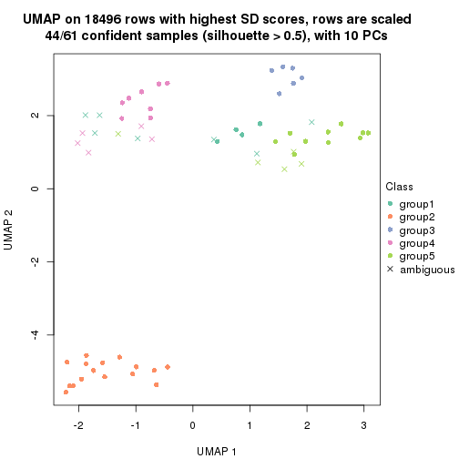
dimension_reduction(res, k = 6, method = "UMAP")
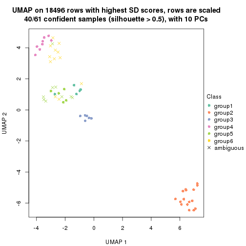
Following heatmap shows how subgroups are split when increasing k:
collect_classes(res)
Test correlation between subgroups and known annotations. If the known annotation is numeric, one-way ANOVA test is applied, and if the known annotation is discrete, chi-squared contingency table test is applied.
test_to_known_factors(res)
#> n cell.type(p) tissue(p) k
#> SD:mclust 61 1.79e-12 4.63e-04 2
#> SD:mclust 61 1.28e-22 1.86e-06 3
#> SD:mclust 50 7.86e-17 2.07e-08 4
#> SD:mclust 44 2.32e-14 1.63e-11 5
#> SD:mclust 40 1.69e-12 2.56e-09 6
If matrix rows can be associated to genes, consider to use GO_Enrichment(res,
...) to perform function enrichment for the signature genes.
The object with results only for a single top-value method and a single partition method can be extracted as:
res = res_list["SD", "NMF"]
# you can also extract it by
# res = res_list["SD:NMF"]
A summary of res and all the functions that can be applied to it:
res
#> A 'ConsensusPartition' object with k = 2, 3, 4, 5, 6.
#> On a matrix with 18496 rows and 61 columns.
#> Top rows (1000, 2000, 3000, 4000, 5000) are extracted by 'SD' method.
#> Subgroups are detected by 'NMF' method.
#> Performed in total 1250 partitions by row resampling.
#> Best k for subgroups seems to be 3.
#>
#> Following methods can be applied to this 'ConsensusPartition' object:
#> [1] "cola_report" "collect_classes" "collect_plots"
#> [4] "collect_stats" "colnames" "compare_signatures"
#> [7] "consensus_heatmap" "dimension_reduction" "functional_enrichment"
#> [10] "get_anno_col" "get_anno" "get_classes"
#> [13] "get_consensus" "get_matrix" "get_membership"
#> [16] "get_param" "get_signatures" "get_stats"
#> [19] "is_best_k" "is_stable_k" "membership_heatmap"
#> [22] "ncol" "nrow" "plot_ecdf"
#> [25] "rownames" "select_partition_number" "show"
#> [28] "suggest_best_k" "test_to_known_factors"
collect_plots() function collects all the plots made from res for all k (number of partitions)
into one single page to provide an easy and fast comparison between different k.
collect_plots(res)
The plots are:
k and the heatmap of
predicted classes for each k.k.k.k.All the plots in panels can be made by individual functions and they are plotted later in this section.
select_partition_number() produces several plots showing different
statistics for choosing “optimized” k. There are following statistics:
k;k, the area increased is defined as \(A_k - A_{k-1}\).The detailed explanations of these statistics can be found in the cola vignette.
Generally speaking, lower PAC score, higher mean silhouette score or higher
concordance corresponds to better partition. Rand index and Jaccard index
measure how similar the current partition is compared to partition with k-1.
If they are too similar, we won't accept k is better than k-1.
select_partition_number(res)
The numeric values for all these statistics can be obtained by get_stats().
get_stats(res)
#> k 1-PAC mean_silhouette concordance area_increased Rand Jaccard
#> 2 2 0.900 0.956 0.978 0.4542 0.531 0.531
#> 3 3 1.000 0.993 0.995 0.1542 0.948 0.901
#> 4 4 0.881 0.900 0.957 0.3673 0.815 0.614
#> 5 5 0.788 0.698 0.856 0.0945 0.883 0.619
#> 6 6 0.845 0.822 0.864 0.0393 0.951 0.769
suggest_best_k() suggests the best \(k\) based on these statistics. The rules are as follows:
NA.suggest_best_k(res)
#> [1] 3
#> attr(,"optional")
#> [1] 2
There is also optional best \(k\) = 2 that is worth to check.
Following shows the table of the partitions (You need to click the show/hide
code output link to see it). The membership matrix (columns with name p*)
is inferred by
clue::cl_consensus()
function with the SE method. Basically the value in the membership matrix
represents the probability to belong to a certain group. The finall class
label for an item is determined with the group with highest probability it
belongs to.
In get_classes() function, the entropy is calculated from the membership
matrix and the silhouette score is calculated from the consensus matrix.
cbind(get_classes(res, k = 2), get_membership(res, k = 2))
#> class entropy silhouette p1 p2
#> GSM72644 2 0.0000 0.937 0.000 1.000
#> GSM72647 2 0.0000 0.937 0.000 1.000
#> GSM72657 2 0.0000 0.937 0.000 1.000
#> GSM72658 2 0.0000 0.937 0.000 1.000
#> GSM72659 2 0.0000 0.937 0.000 1.000
#> GSM72660 2 0.0000 0.937 0.000 1.000
#> GSM72683 2 0.0000 0.937 0.000 1.000
#> GSM72684 2 0.0000 0.937 0.000 1.000
#> GSM72686 2 0.0000 0.937 0.000 1.000
#> GSM72687 2 0.0000 0.937 0.000 1.000
#> GSM72688 2 0.0000 0.937 0.000 1.000
#> GSM72689 2 0.0000 0.937 0.000 1.000
#> GSM72690 2 0.0000 0.937 0.000 1.000
#> GSM72691 2 0.0000 0.937 0.000 1.000
#> GSM72692 2 0.0000 0.937 0.000 1.000
#> GSM72693 2 0.0000 0.937 0.000 1.000
#> GSM72645 2 0.7139 0.792 0.196 0.804
#> GSM72646 2 0.6247 0.834 0.156 0.844
#> GSM72678 2 0.5629 0.854 0.132 0.868
#> GSM72679 2 0.7602 0.762 0.220 0.780
#> GSM72699 2 0.9896 0.312 0.440 0.560
#> GSM72700 2 0.6531 0.823 0.168 0.832
#> GSM72654 1 0.0000 0.999 1.000 0.000
#> GSM72655 1 0.0000 0.999 1.000 0.000
#> GSM72661 1 0.0000 0.999 1.000 0.000
#> GSM72662 1 0.0000 0.999 1.000 0.000
#> GSM72663 1 0.0000 0.999 1.000 0.000
#> GSM72665 1 0.0000 0.999 1.000 0.000
#> GSM72666 1 0.0000 0.999 1.000 0.000
#> GSM72640 1 0.0000 0.999 1.000 0.000
#> GSM72641 1 0.0000 0.999 1.000 0.000
#> GSM72642 1 0.0000 0.999 1.000 0.000
#> GSM72643 1 0.0000 0.999 1.000 0.000
#> GSM72651 1 0.0000 0.999 1.000 0.000
#> GSM72652 1 0.0000 0.999 1.000 0.000
#> GSM72653 1 0.0000 0.999 1.000 0.000
#> GSM72656 1 0.0000 0.999 1.000 0.000
#> GSM72667 1 0.0000 0.999 1.000 0.000
#> GSM72668 1 0.0000 0.999 1.000 0.000
#> GSM72669 1 0.0938 0.987 0.988 0.012
#> GSM72670 1 0.0000 0.999 1.000 0.000
#> GSM72671 1 0.0000 0.999 1.000 0.000
#> GSM72672 1 0.0000 0.999 1.000 0.000
#> GSM72696 1 0.0000 0.999 1.000 0.000
#> GSM72697 1 0.0000 0.999 1.000 0.000
#> GSM72674 1 0.0000 0.999 1.000 0.000
#> GSM72675 1 0.0000 0.999 1.000 0.000
#> GSM72676 1 0.0000 0.999 1.000 0.000
#> GSM72677 1 0.0000 0.999 1.000 0.000
#> GSM72680 1 0.0000 0.999 1.000 0.000
#> GSM72682 1 0.0000 0.999 1.000 0.000
#> GSM72685 1 0.0000 0.999 1.000 0.000
#> GSM72694 1 0.0000 0.999 1.000 0.000
#> GSM72695 1 0.0000 0.999 1.000 0.000
#> GSM72698 1 0.0000 0.999 1.000 0.000
#> GSM72648 1 0.0000 0.999 1.000 0.000
#> GSM72649 1 0.1184 0.982 0.984 0.016
#> GSM72650 1 0.0000 0.999 1.000 0.000
#> GSM72664 1 0.0000 0.999 1.000 0.000
#> GSM72673 1 0.0000 0.999 1.000 0.000
#> GSM72681 1 0.0000 0.999 1.000 0.000
cbind(get_classes(res, k = 3), get_membership(res, k = 3))
#> class entropy silhouette p1 p2 p3
#> GSM72644 2 0.0000 1.000 0.000 1.000 0.000
#> GSM72647 2 0.0000 1.000 0.000 1.000 0.000
#> GSM72657 2 0.0000 1.000 0.000 1.000 0.000
#> GSM72658 2 0.0000 1.000 0.000 1.000 0.000
#> GSM72659 2 0.0000 1.000 0.000 1.000 0.000
#> GSM72660 2 0.0000 1.000 0.000 1.000 0.000
#> GSM72683 2 0.0000 1.000 0.000 1.000 0.000
#> GSM72684 2 0.0000 1.000 0.000 1.000 0.000
#> GSM72686 2 0.0000 1.000 0.000 1.000 0.000
#> GSM72687 2 0.0000 1.000 0.000 1.000 0.000
#> GSM72688 2 0.0000 1.000 0.000 1.000 0.000
#> GSM72689 2 0.0000 1.000 0.000 1.000 0.000
#> GSM72690 2 0.0000 1.000 0.000 1.000 0.000
#> GSM72691 2 0.0000 1.000 0.000 1.000 0.000
#> GSM72692 2 0.0000 1.000 0.000 1.000 0.000
#> GSM72693 2 0.0000 1.000 0.000 1.000 0.000
#> GSM72645 3 0.0000 0.996 0.000 0.000 1.000
#> GSM72646 3 0.0000 0.996 0.000 0.000 1.000
#> GSM72678 3 0.0747 0.978 0.000 0.016 0.984
#> GSM72679 3 0.0000 0.996 0.000 0.000 1.000
#> GSM72699 3 0.0000 0.996 0.000 0.000 1.000
#> GSM72700 3 0.0000 0.996 0.000 0.000 1.000
#> GSM72654 1 0.0747 0.991 0.984 0.000 0.016
#> GSM72655 1 0.0747 0.991 0.984 0.000 0.016
#> GSM72661 1 0.0592 0.991 0.988 0.000 0.012
#> GSM72662 1 0.0000 0.992 1.000 0.000 0.000
#> GSM72663 1 0.0000 0.992 1.000 0.000 0.000
#> GSM72665 1 0.0747 0.991 0.984 0.000 0.016
#> GSM72666 1 0.0747 0.991 0.984 0.000 0.016
#> GSM72640 1 0.0237 0.992 0.996 0.000 0.004
#> GSM72641 1 0.0747 0.991 0.984 0.000 0.016
#> GSM72642 1 0.0747 0.991 0.984 0.000 0.016
#> GSM72643 1 0.0000 0.992 1.000 0.000 0.000
#> GSM72651 1 0.0000 0.992 1.000 0.000 0.000
#> GSM72652 1 0.0747 0.991 0.984 0.000 0.016
#> GSM72653 1 0.0237 0.992 0.996 0.000 0.004
#> GSM72656 1 0.0237 0.992 0.996 0.000 0.004
#> GSM72667 1 0.0747 0.991 0.984 0.000 0.016
#> GSM72668 1 0.0747 0.991 0.984 0.000 0.016
#> GSM72669 1 0.0747 0.991 0.984 0.000 0.016
#> GSM72670 1 0.0747 0.991 0.984 0.000 0.016
#> GSM72671 1 0.0747 0.991 0.984 0.000 0.016
#> GSM72672 1 0.0000 0.992 1.000 0.000 0.000
#> GSM72696 1 0.0000 0.992 1.000 0.000 0.000
#> GSM72697 1 0.0000 0.992 1.000 0.000 0.000
#> GSM72674 1 0.0000 0.992 1.000 0.000 0.000
#> GSM72675 1 0.0000 0.992 1.000 0.000 0.000
#> GSM72676 1 0.0000 0.992 1.000 0.000 0.000
#> GSM72677 1 0.0000 0.992 1.000 0.000 0.000
#> GSM72680 1 0.0747 0.991 0.984 0.000 0.016
#> GSM72682 1 0.0000 0.992 1.000 0.000 0.000
#> GSM72685 1 0.0747 0.991 0.984 0.000 0.016
#> GSM72694 1 0.0000 0.992 1.000 0.000 0.000
#> GSM72695 1 0.0000 0.992 1.000 0.000 0.000
#> GSM72698 1 0.0000 0.992 1.000 0.000 0.000
#> GSM72648 1 0.0000 0.992 1.000 0.000 0.000
#> GSM72649 1 0.1411 0.964 0.964 0.036 0.000
#> GSM72650 1 0.0747 0.991 0.984 0.000 0.016
#> GSM72664 1 0.0747 0.991 0.984 0.000 0.016
#> GSM72673 1 0.0000 0.992 1.000 0.000 0.000
#> GSM72681 1 0.0000 0.992 1.000 0.000 0.000
cbind(get_classes(res, k = 4), get_membership(res, k = 4))
#> class entropy silhouette p1 p2 p3 p4
#> GSM72644 2 0.0000 1.000 0.000 1.000 0 0.000
#> GSM72647 2 0.0000 1.000 0.000 1.000 0 0.000
#> GSM72657 2 0.0000 1.000 0.000 1.000 0 0.000
#> GSM72658 2 0.0000 1.000 0.000 1.000 0 0.000
#> GSM72659 2 0.0000 1.000 0.000 1.000 0 0.000
#> GSM72660 2 0.0000 1.000 0.000 1.000 0 0.000
#> GSM72683 2 0.0000 1.000 0.000 1.000 0 0.000
#> GSM72684 2 0.0000 1.000 0.000 1.000 0 0.000
#> GSM72686 2 0.0000 1.000 0.000 1.000 0 0.000
#> GSM72687 2 0.0000 1.000 0.000 1.000 0 0.000
#> GSM72688 2 0.0000 1.000 0.000 1.000 0 0.000
#> GSM72689 2 0.0000 1.000 0.000 1.000 0 0.000
#> GSM72690 2 0.0000 1.000 0.000 1.000 0 0.000
#> GSM72691 2 0.0000 1.000 0.000 1.000 0 0.000
#> GSM72692 2 0.0000 1.000 0.000 1.000 0 0.000
#> GSM72693 2 0.0000 1.000 0.000 1.000 0 0.000
#> GSM72645 3 0.0000 1.000 0.000 0.000 1 0.000
#> GSM72646 3 0.0000 1.000 0.000 0.000 1 0.000
#> GSM72678 3 0.0000 1.000 0.000 0.000 1 0.000
#> GSM72679 3 0.0000 1.000 0.000 0.000 1 0.000
#> GSM72699 3 0.0000 1.000 0.000 0.000 1 0.000
#> GSM72700 3 0.0000 1.000 0.000 0.000 1 0.000
#> GSM72654 1 0.0188 0.894 0.996 0.000 0 0.004
#> GSM72655 1 0.0336 0.892 0.992 0.000 0 0.008
#> GSM72661 1 0.2760 0.818 0.872 0.000 0 0.128
#> GSM72662 4 0.4222 0.566 0.272 0.000 0 0.728
#> GSM72663 4 0.0188 0.963 0.004 0.000 0 0.996
#> GSM72665 1 0.2149 0.849 0.912 0.000 0 0.088
#> GSM72666 1 0.2814 0.815 0.868 0.000 0 0.132
#> GSM72640 1 0.0188 0.893 0.996 0.000 0 0.004
#> GSM72641 1 0.0188 0.894 0.996 0.000 0 0.004
#> GSM72642 1 0.1022 0.882 0.968 0.000 0 0.032
#> GSM72643 4 0.0000 0.967 0.000 0.000 0 1.000
#> GSM72651 1 0.4898 0.346 0.584 0.000 0 0.416
#> GSM72652 1 0.4431 0.585 0.696 0.000 0 0.304
#> GSM72653 1 0.0000 0.894 1.000 0.000 0 0.000
#> GSM72656 1 0.0000 0.894 1.000 0.000 0 0.000
#> GSM72667 1 0.0000 0.894 1.000 0.000 0 0.000
#> GSM72668 1 0.0000 0.894 1.000 0.000 0 0.000
#> GSM72669 1 0.0000 0.894 1.000 0.000 0 0.000
#> GSM72670 1 0.0000 0.894 1.000 0.000 0 0.000
#> GSM72671 1 0.0000 0.894 1.000 0.000 0 0.000
#> GSM72672 1 0.0188 0.893 0.996 0.000 0 0.004
#> GSM72696 4 0.0000 0.967 0.000 0.000 0 1.000
#> GSM72697 4 0.0000 0.967 0.000 0.000 0 1.000
#> GSM72674 4 0.0000 0.967 0.000 0.000 0 1.000
#> GSM72675 4 0.0000 0.967 0.000 0.000 0 1.000
#> GSM72676 4 0.0000 0.967 0.000 0.000 0 1.000
#> GSM72677 1 0.4916 0.320 0.576 0.000 0 0.424
#> GSM72680 1 0.0000 0.894 1.000 0.000 0 0.000
#> GSM72682 4 0.0592 0.950 0.016 0.000 0 0.984
#> GSM72685 1 0.0000 0.894 1.000 0.000 0 0.000
#> GSM72694 4 0.0000 0.967 0.000 0.000 0 1.000
#> GSM72695 4 0.0000 0.967 0.000 0.000 0 1.000
#> GSM72698 4 0.0000 0.967 0.000 0.000 0 1.000
#> GSM72648 1 0.4624 0.516 0.660 0.000 0 0.340
#> GSM72649 1 0.3444 0.725 0.816 0.184 0 0.000
#> GSM72650 1 0.0000 0.894 1.000 0.000 0 0.000
#> GSM72664 1 0.0188 0.894 0.996 0.000 0 0.004
#> GSM72673 4 0.0000 0.967 0.000 0.000 0 1.000
#> GSM72681 1 0.4250 0.628 0.724 0.000 0 0.276
cbind(get_classes(res, k = 5), get_membership(res, k = 5))
#> class entropy silhouette p1 p2 p3 p4 p5
#> GSM72644 2 0.0290 0.9938 0.000 0.992 0.000 0.000 0.008
#> GSM72647 2 0.0000 0.9983 0.000 1.000 0.000 0.000 0.000
#> GSM72657 2 0.0000 0.9983 0.000 1.000 0.000 0.000 0.000
#> GSM72658 2 0.0000 0.9983 0.000 1.000 0.000 0.000 0.000
#> GSM72659 2 0.0162 0.9958 0.000 0.996 0.000 0.000 0.004
#> GSM72660 2 0.0162 0.9958 0.000 0.996 0.000 0.000 0.004
#> GSM72683 2 0.0290 0.9938 0.000 0.992 0.000 0.000 0.008
#> GSM72684 2 0.0162 0.9963 0.000 0.996 0.000 0.000 0.004
#> GSM72686 2 0.0000 0.9983 0.000 1.000 0.000 0.000 0.000
#> GSM72687 2 0.0000 0.9983 0.000 1.000 0.000 0.000 0.000
#> GSM72688 2 0.0000 0.9983 0.000 1.000 0.000 0.000 0.000
#> GSM72689 2 0.0000 0.9983 0.000 1.000 0.000 0.000 0.000
#> GSM72690 2 0.0000 0.9983 0.000 1.000 0.000 0.000 0.000
#> GSM72691 2 0.0000 0.9983 0.000 1.000 0.000 0.000 0.000
#> GSM72692 2 0.0000 0.9983 0.000 1.000 0.000 0.000 0.000
#> GSM72693 2 0.0000 0.9983 0.000 1.000 0.000 0.000 0.000
#> GSM72645 3 0.0000 0.9990 0.000 0.000 1.000 0.000 0.000
#> GSM72646 3 0.0000 0.9990 0.000 0.000 1.000 0.000 0.000
#> GSM72678 3 0.0162 0.9980 0.004 0.000 0.996 0.000 0.000
#> GSM72679 3 0.0162 0.9980 0.004 0.000 0.996 0.000 0.000
#> GSM72699 3 0.0000 0.9990 0.000 0.000 1.000 0.000 0.000
#> GSM72700 3 0.0000 0.9990 0.000 0.000 1.000 0.000 0.000
#> GSM72654 1 0.4015 0.3940 0.652 0.000 0.000 0.000 0.348
#> GSM72655 1 0.3586 0.3793 0.736 0.000 0.000 0.000 0.264
#> GSM72661 1 0.4767 0.5194 0.720 0.000 0.000 0.088 0.192
#> GSM72662 1 0.4278 0.0808 0.548 0.000 0.000 0.452 0.000
#> GSM72663 4 0.2690 0.7793 0.156 0.000 0.000 0.844 0.000
#> GSM72665 1 0.1830 0.5365 0.924 0.000 0.000 0.068 0.008
#> GSM72666 1 0.1892 0.5312 0.916 0.000 0.000 0.080 0.004
#> GSM72640 5 0.3274 0.4756 0.220 0.000 0.000 0.000 0.780
#> GSM72641 1 0.3661 0.4523 0.724 0.000 0.000 0.000 0.276
#> GSM72642 5 0.5176 -0.0675 0.380 0.000 0.000 0.048 0.572
#> GSM72643 4 0.0992 0.9061 0.008 0.000 0.000 0.968 0.024
#> GSM72651 4 0.6069 -0.0192 0.340 0.000 0.000 0.524 0.136
#> GSM72652 1 0.5871 0.4724 0.604 0.000 0.000 0.212 0.184
#> GSM72653 5 0.4126 0.4318 0.380 0.000 0.000 0.000 0.620
#> GSM72656 5 0.4101 0.4424 0.372 0.000 0.000 0.000 0.628
#> GSM72667 5 0.2020 0.5349 0.100 0.000 0.000 0.000 0.900
#> GSM72668 1 0.4126 0.3951 0.620 0.000 0.000 0.000 0.380
#> GSM72669 5 0.1121 0.5273 0.044 0.000 0.000 0.000 0.956
#> GSM72670 5 0.4045 0.1472 0.356 0.000 0.000 0.000 0.644
#> GSM72671 1 0.4045 0.3527 0.644 0.000 0.000 0.000 0.356
#> GSM72672 5 0.4114 0.4379 0.376 0.000 0.000 0.000 0.624
#> GSM72696 4 0.0000 0.9159 0.000 0.000 0.000 1.000 0.000
#> GSM72697 4 0.0404 0.9151 0.012 0.000 0.000 0.988 0.000
#> GSM72674 4 0.0404 0.9151 0.012 0.000 0.000 0.988 0.000
#> GSM72675 4 0.0290 0.9156 0.008 0.000 0.000 0.992 0.000
#> GSM72676 4 0.0162 0.9150 0.004 0.000 0.000 0.996 0.000
#> GSM72677 5 0.5699 0.4315 0.308 0.000 0.000 0.108 0.584
#> GSM72680 5 0.4161 0.4144 0.392 0.000 0.000 0.000 0.608
#> GSM72682 4 0.3531 0.7553 0.036 0.000 0.000 0.816 0.148
#> GSM72685 1 0.4273 -0.0575 0.552 0.000 0.000 0.000 0.448
#> GSM72694 4 0.0290 0.9137 0.008 0.000 0.000 0.992 0.000
#> GSM72695 4 0.0000 0.9159 0.000 0.000 0.000 1.000 0.000
#> GSM72698 4 0.0404 0.9151 0.012 0.000 0.000 0.988 0.000
#> GSM72648 5 0.4223 0.3032 0.028 0.000 0.000 0.248 0.724
#> GSM72649 5 0.4696 0.3475 0.156 0.108 0.000 0.000 0.736
#> GSM72650 5 0.1270 0.5130 0.052 0.000 0.000 0.000 0.948
#> GSM72664 1 0.3612 0.4625 0.732 0.000 0.000 0.000 0.268
#> GSM72673 4 0.0566 0.9104 0.012 0.000 0.000 0.984 0.004
#> GSM72681 5 0.4644 0.4943 0.280 0.000 0.000 0.040 0.680
cbind(get_classes(res, k = 6), get_membership(res, k = 6))
#> class entropy silhouette p1 p2 p3 p4 p5 p6
#> GSM72644 2 0.0964 0.977 0.012 0.968 0.000 0.000 0.004 0.016
#> GSM72647 2 0.0146 0.989 0.004 0.996 0.000 0.000 0.000 0.000
#> GSM72657 2 0.0000 0.990 0.000 1.000 0.000 0.000 0.000 0.000
#> GSM72658 2 0.0000 0.990 0.000 1.000 0.000 0.000 0.000 0.000
#> GSM72659 2 0.0790 0.968 0.000 0.968 0.000 0.000 0.032 0.000
#> GSM72660 2 0.0632 0.975 0.000 0.976 0.000 0.000 0.024 0.000
#> GSM72683 2 0.0820 0.979 0.012 0.972 0.000 0.000 0.000 0.016
#> GSM72684 2 0.0820 0.979 0.012 0.972 0.000 0.000 0.000 0.016
#> GSM72686 2 0.0000 0.990 0.000 1.000 0.000 0.000 0.000 0.000
#> GSM72687 2 0.0000 0.990 0.000 1.000 0.000 0.000 0.000 0.000
#> GSM72688 2 0.0000 0.990 0.000 1.000 0.000 0.000 0.000 0.000
#> GSM72689 2 0.0000 0.990 0.000 1.000 0.000 0.000 0.000 0.000
#> GSM72690 2 0.0000 0.990 0.000 1.000 0.000 0.000 0.000 0.000
#> GSM72691 2 0.0000 0.990 0.000 1.000 0.000 0.000 0.000 0.000
#> GSM72692 2 0.0363 0.987 0.012 0.988 0.000 0.000 0.000 0.000
#> GSM72693 2 0.0363 0.987 0.012 0.988 0.000 0.000 0.000 0.000
#> GSM72645 3 0.0000 0.994 0.000 0.000 1.000 0.000 0.000 0.000
#> GSM72646 3 0.0000 0.994 0.000 0.000 1.000 0.000 0.000 0.000
#> GSM72678 3 0.0603 0.988 0.016 0.000 0.980 0.000 0.000 0.004
#> GSM72679 3 0.0692 0.986 0.020 0.000 0.976 0.000 0.000 0.004
#> GSM72699 3 0.0000 0.994 0.000 0.000 1.000 0.000 0.000 0.000
#> GSM72700 3 0.0000 0.994 0.000 0.000 1.000 0.000 0.000 0.000
#> GSM72654 1 0.4526 0.640 0.700 0.000 0.000 0.000 0.184 0.116
#> GSM72655 1 0.3345 0.652 0.788 0.000 0.000 0.000 0.184 0.028
#> GSM72661 1 0.3530 0.767 0.792 0.000 0.000 0.056 0.000 0.152
#> GSM72662 1 0.4095 0.715 0.748 0.000 0.000 0.152 0.000 0.100
#> GSM72663 4 0.4332 0.576 0.228 0.000 0.000 0.700 0.000 0.072
#> GSM72665 1 0.3316 0.771 0.812 0.000 0.000 0.052 0.000 0.136
#> GSM72666 1 0.3316 0.771 0.812 0.000 0.000 0.052 0.000 0.136
#> GSM72640 6 0.5135 0.528 0.144 0.000 0.000 0.004 0.216 0.636
#> GSM72641 1 0.4039 0.591 0.632 0.000 0.000 0.000 0.016 0.352
#> GSM72642 6 0.6425 -0.138 0.056 0.000 0.000 0.124 0.404 0.416
#> GSM72643 4 0.0865 0.922 0.000 0.000 0.000 0.964 0.036 0.000
#> GSM72651 1 0.4089 0.623 0.696 0.000 0.000 0.264 0.000 0.040
#> GSM72652 1 0.3616 0.767 0.792 0.000 0.000 0.076 0.000 0.132
#> GSM72653 6 0.1957 0.760 0.112 0.000 0.000 0.000 0.000 0.888
#> GSM72656 6 0.2258 0.770 0.060 0.000 0.000 0.000 0.044 0.896
#> GSM72667 5 0.3975 0.419 0.008 0.000 0.000 0.000 0.600 0.392
#> GSM72668 1 0.5228 0.511 0.572 0.000 0.000 0.000 0.120 0.308
#> GSM72669 5 0.4181 0.545 0.028 0.000 0.000 0.000 0.644 0.328
#> GSM72670 5 0.2266 0.799 0.012 0.000 0.000 0.000 0.880 0.108
#> GSM72671 1 0.4785 0.589 0.664 0.000 0.000 0.000 0.216 0.120
#> GSM72672 6 0.2145 0.771 0.072 0.000 0.000 0.000 0.028 0.900
#> GSM72696 4 0.0767 0.934 0.008 0.000 0.000 0.976 0.004 0.012
#> GSM72697 4 0.0767 0.934 0.012 0.000 0.000 0.976 0.004 0.008
#> GSM72674 4 0.0260 0.937 0.008 0.000 0.000 0.992 0.000 0.000
#> GSM72675 4 0.0405 0.937 0.008 0.000 0.000 0.988 0.004 0.000
#> GSM72676 4 0.0146 0.936 0.000 0.000 0.000 0.996 0.004 0.000
#> GSM72677 6 0.2872 0.712 0.024 0.000 0.000 0.000 0.140 0.836
#> GSM72680 6 0.2956 0.765 0.120 0.000 0.000 0.000 0.040 0.840
#> GSM72682 4 0.3537 0.760 0.016 0.000 0.000 0.796 0.164 0.024
#> GSM72685 6 0.3912 0.718 0.164 0.000 0.000 0.000 0.076 0.760
#> GSM72694 4 0.0632 0.929 0.000 0.000 0.000 0.976 0.024 0.000
#> GSM72695 4 0.0146 0.937 0.004 0.000 0.000 0.996 0.000 0.000
#> GSM72698 4 0.0405 0.937 0.008 0.000 0.000 0.988 0.004 0.000
#> GSM72648 5 0.2112 0.803 0.000 0.000 0.000 0.016 0.896 0.088
#> GSM72649 5 0.1152 0.767 0.000 0.000 0.000 0.004 0.952 0.044
#> GSM72650 5 0.1806 0.804 0.000 0.000 0.000 0.004 0.908 0.088
#> GSM72664 1 0.3136 0.726 0.768 0.000 0.000 0.000 0.004 0.228
#> GSM72673 4 0.0972 0.923 0.008 0.000 0.000 0.964 0.028 0.000
#> GSM72681 6 0.3110 0.640 0.012 0.000 0.000 0.000 0.196 0.792
Heatmaps for the consensus matrix. It visualizes the probability of two samples to be in a same group.
consensus_heatmap(res, k = 2)
consensus_heatmap(res, k = 3)
consensus_heatmap(res, k = 4)
consensus_heatmap(res, k = 5)
consensus_heatmap(res, k = 6)
Heatmaps for the membership of samples in all partitions to see how consistent they are:
membership_heatmap(res, k = 2)
membership_heatmap(res, k = 3)
membership_heatmap(res, k = 4)

membership_heatmap(res, k = 5)
membership_heatmap(res, k = 6)
As soon as we have had the classes for columns, we can look for signatures which are significantly different between classes which can be candidate marks for certain classes. Following are the heatmaps for signatures.
Signature heatmaps where rows are scaled:
get_signatures(res, k = 2)
get_signatures(res, k = 3)
get_signatures(res, k = 4)
get_signatures(res, k = 5)
get_signatures(res, k = 6)
Signature heatmaps where rows are not scaled:
get_signatures(res, k = 2, scale_rows = FALSE)
get_signatures(res, k = 3, scale_rows = FALSE)
get_signatures(res, k = 4, scale_rows = FALSE)
get_signatures(res, k = 5, scale_rows = FALSE)
get_signatures(res, k = 6, scale_rows = FALSE)
Compare the overlap of signatures from different k:
compare_signatures(res)
get_signature() returns a data frame invisibly. TO get the list of signatures, the function
call should be assigned to a variable explicitly. In following code, if plot argument is set
to FALSE, no heatmap is plotted while only the differential analysis is performed.
# code only for demonstration
tb = get_signature(res, k = ..., plot = FALSE)
An example of the output of tb is:
#> which_row fdr mean_1 mean_2 scaled_mean_1 scaled_mean_2 km
#> 1 38 0.042760348 8.373488 9.131774 -0.5533452 0.5164555 1
#> 2 40 0.018707592 7.106213 8.469186 -0.6173731 0.5762149 1
#> 3 55 0.019134737 10.221463 11.207825 -0.6159697 0.5749050 1
#> 4 59 0.006059896 5.921854 7.869574 -0.6899429 0.6439467 1
#> 5 60 0.018055526 8.928898 10.211722 -0.6204761 0.5791110 1
#> 6 98 0.009384629 15.714769 14.887706 0.6635654 -0.6193277 2
...
The columns in tb are:
which_row: row indices corresponding to the input matrix.fdr: FDR for the differential test. mean_x: The mean value in group x.scaled_mean_x: The mean value in group x after rows are scaled.km: Row groups if k-means clustering is applied to rows.UMAP plot which shows how samples are separated.
dimension_reduction(res, k = 2, method = "UMAP")
dimension_reduction(res, k = 3, method = "UMAP")

dimension_reduction(res, k = 4, method = "UMAP")
dimension_reduction(res, k = 5, method = "UMAP")
dimension_reduction(res, k = 6, method = "UMAP")
Following heatmap shows how subgroups are split when increasing k:
collect_classes(res)
Test correlation between subgroups and known annotations. If the known annotation is numeric, one-way ANOVA test is applied, and if the known annotation is discrete, chi-squared contingency table test is applied.
test_to_known_factors(res)
#> n cell.type(p) tissue(p) k
#> SD:NMF 60 2.90e-12 6.18e-04 2
#> SD:NMF 61 1.28e-22 1.86e-06 3
#> SD:NMF 59 5.24e-20 1.62e-07 4
#> SD:NMF 40 2.44e-16 1.28e-07 5
#> SD:NMF 59 1.40e-21 3.03e-09 6
If matrix rows can be associated to genes, consider to use GO_Enrichment(res,
...) to perform function enrichment for the signature genes.
The object with results only for a single top-value method and a single partition method can be extracted as:
res = res_list["CV", "hclust"]
# you can also extract it by
# res = res_list["CV:hclust"]
A summary of res and all the functions that can be applied to it:
res
#> A 'ConsensusPartition' object with k = 2, 3, 4, 5, 6.
#> On a matrix with 18496 rows and 61 columns.
#> Top rows (1000, 2000, 3000, 4000, 5000) are extracted by 'CV' method.
#> Subgroups are detected by 'hclust' method.
#> Performed in total 1250 partitions by row resampling.
#> Best k for subgroups seems to be 3.
#>
#> Following methods can be applied to this 'ConsensusPartition' object:
#> [1] "cola_report" "collect_classes" "collect_plots"
#> [4] "collect_stats" "colnames" "compare_signatures"
#> [7] "consensus_heatmap" "dimension_reduction" "functional_enrichment"
#> [10] "get_anno_col" "get_anno" "get_classes"
#> [13] "get_consensus" "get_matrix" "get_membership"
#> [16] "get_param" "get_signatures" "get_stats"
#> [19] "is_best_k" "is_stable_k" "membership_heatmap"
#> [22] "ncol" "nrow" "plot_ecdf"
#> [25] "rownames" "select_partition_number" "show"
#> [28] "suggest_best_k" "test_to_known_factors"
collect_plots() function collects all the plots made from res for all k (number of partitions)
into one single page to provide an easy and fast comparison between different k.
collect_plots(res)
The plots are:
k and the heatmap of
predicted classes for each k.k.k.k.All the plots in panels can be made by individual functions and they are plotted later in this section.
select_partition_number() produces several plots showing different
statistics for choosing “optimized” k. There are following statistics:
k;k, the area increased is defined as \(A_k - A_{k-1}\).The detailed explanations of these statistics can be found in the cola vignette.
Generally speaking, lower PAC score, higher mean silhouette score or higher
concordance corresponds to better partition. Rand index and Jaccard index
measure how similar the current partition is compared to partition with k-1.
If they are too similar, we won't accept k is better than k-1.
select_partition_number(res)
The numeric values for all these statistics can be obtained by get_stats().
get_stats(res)
#> k 1-PAC mean_silhouette concordance area_increased Rand Jaccard
#> 2 2 1.000 1.000 1.000 0.1811 0.820 0.820
#> 3 3 1.000 0.991 0.991 1.8853 0.659 0.584
#> 4 4 0.773 0.782 0.875 0.2232 0.842 0.669
#> 5 5 0.865 0.886 0.949 0.1079 0.955 0.865
#> 6 6 0.797 0.706 0.865 0.0798 0.923 0.747
suggest_best_k() suggests the best \(k\) based on these statistics. The rules are as follows:
NA.suggest_best_k(res)
#> [1] 3
#> attr(,"optional")
#> [1] 2
There is also optional best \(k\) = 2 that is worth to check.
Following shows the table of the partitions (You need to click the show/hide
code output link to see it). The membership matrix (columns with name p*)
is inferred by
clue::cl_consensus()
function with the SE method. Basically the value in the membership matrix
represents the probability to belong to a certain group. The finall class
label for an item is determined with the group with highest probability it
belongs to.
In get_classes() function, the entropy is calculated from the membership
matrix and the silhouette score is calculated from the consensus matrix.
cbind(get_classes(res, k = 2), get_membership(res, k = 2))
#> class entropy silhouette p1 p2
#> GSM72644 1 0 1 1 0
#> GSM72647 1 0 1 1 0
#> GSM72657 1 0 1 1 0
#> GSM72658 1 0 1 1 0
#> GSM72659 1 0 1 1 0
#> GSM72660 1 0 1 1 0
#> GSM72683 1 0 1 1 0
#> GSM72684 1 0 1 1 0
#> GSM72686 1 0 1 1 0
#> GSM72687 1 0 1 1 0
#> GSM72688 1 0 1 1 0
#> GSM72689 1 0 1 1 0
#> GSM72690 1 0 1 1 0
#> GSM72691 1 0 1 1 0
#> GSM72692 1 0 1 1 0
#> GSM72693 1 0 1 1 0
#> GSM72645 2 0 1 0 1
#> GSM72646 2 0 1 0 1
#> GSM72678 2 0 1 0 1
#> GSM72679 2 0 1 0 1
#> GSM72699 2 0 1 0 1
#> GSM72700 2 0 1 0 1
#> GSM72654 1 0 1 1 0
#> GSM72655 1 0 1 1 0
#> GSM72661 1 0 1 1 0
#> GSM72662 1 0 1 1 0
#> GSM72663 1 0 1 1 0
#> GSM72665 1 0 1 1 0
#> GSM72666 1 0 1 1 0
#> GSM72640 1 0 1 1 0
#> GSM72641 1 0 1 1 0
#> GSM72642 1 0 1 1 0
#> GSM72643 1 0 1 1 0
#> GSM72651 1 0 1 1 0
#> GSM72652 1 0 1 1 0
#> GSM72653 1 0 1 1 0
#> GSM72656 1 0 1 1 0
#> GSM72667 1 0 1 1 0
#> GSM72668 1 0 1 1 0
#> GSM72669 1 0 1 1 0
#> GSM72670 1 0 1 1 0
#> GSM72671 1 0 1 1 0
#> GSM72672 1 0 1 1 0
#> GSM72696 1 0 1 1 0
#> GSM72697 1 0 1 1 0
#> GSM72674 1 0 1 1 0
#> GSM72675 1 0 1 1 0
#> GSM72676 1 0 1 1 0
#> GSM72677 1 0 1 1 0
#> GSM72680 1 0 1 1 0
#> GSM72682 1 0 1 1 0
#> GSM72685 1 0 1 1 0
#> GSM72694 1 0 1 1 0
#> GSM72695 1 0 1 1 0
#> GSM72698 1 0 1 1 0
#> GSM72648 1 0 1 1 0
#> GSM72649 1 0 1 1 0
#> GSM72650 1 0 1 1 0
#> GSM72664 1 0 1 1 0
#> GSM72673 1 0 1 1 0
#> GSM72681 1 0 1 1 0
cbind(get_classes(res, k = 3), get_membership(res, k = 3))
#> class entropy silhouette p1 p2 p3
#> GSM72644 2 0.0000 1.000 0.000 1.000 0
#> GSM72647 2 0.0000 1.000 0.000 1.000 0
#> GSM72657 2 0.0000 1.000 0.000 1.000 0
#> GSM72658 2 0.0000 1.000 0.000 1.000 0
#> GSM72659 2 0.0000 1.000 0.000 1.000 0
#> GSM72660 2 0.0000 1.000 0.000 1.000 0
#> GSM72683 2 0.0000 1.000 0.000 1.000 0
#> GSM72684 2 0.0000 1.000 0.000 1.000 0
#> GSM72686 2 0.0000 1.000 0.000 1.000 0
#> GSM72687 2 0.0000 1.000 0.000 1.000 0
#> GSM72688 2 0.0000 1.000 0.000 1.000 0
#> GSM72689 2 0.0000 1.000 0.000 1.000 0
#> GSM72690 2 0.0000 1.000 0.000 1.000 0
#> GSM72691 2 0.0000 1.000 0.000 1.000 0
#> GSM72692 2 0.0000 1.000 0.000 1.000 0
#> GSM72693 2 0.0000 1.000 0.000 1.000 0
#> GSM72645 3 0.0000 1.000 0.000 0.000 1
#> GSM72646 3 0.0000 1.000 0.000 0.000 1
#> GSM72678 3 0.0000 1.000 0.000 0.000 1
#> GSM72679 3 0.0000 1.000 0.000 0.000 1
#> GSM72699 3 0.0000 1.000 0.000 0.000 1
#> GSM72700 3 0.0000 1.000 0.000 0.000 1
#> GSM72654 1 0.0000 0.985 1.000 0.000 0
#> GSM72655 1 0.0000 0.985 1.000 0.000 0
#> GSM72661 1 0.0000 0.985 1.000 0.000 0
#> GSM72662 1 0.0000 0.985 1.000 0.000 0
#> GSM72663 1 0.0000 0.985 1.000 0.000 0
#> GSM72665 1 0.0000 0.985 1.000 0.000 0
#> GSM72666 1 0.0000 0.985 1.000 0.000 0
#> GSM72640 1 0.0892 0.986 0.980 0.020 0
#> GSM72641 1 0.0000 0.985 1.000 0.000 0
#> GSM72642 1 0.1163 0.984 0.972 0.028 0
#> GSM72643 1 0.1163 0.984 0.972 0.028 0
#> GSM72651 1 0.0000 0.985 1.000 0.000 0
#> GSM72652 1 0.0000 0.985 1.000 0.000 0
#> GSM72653 1 0.0000 0.985 1.000 0.000 0
#> GSM72656 1 0.0000 0.985 1.000 0.000 0
#> GSM72667 1 0.1163 0.984 0.972 0.028 0
#> GSM72668 1 0.0424 0.986 0.992 0.008 0
#> GSM72669 1 0.1163 0.984 0.972 0.028 0
#> GSM72670 1 0.1163 0.984 0.972 0.028 0
#> GSM72671 1 0.0424 0.986 0.992 0.008 0
#> GSM72672 1 0.0000 0.985 1.000 0.000 0
#> GSM72696 1 0.1031 0.986 0.976 0.024 0
#> GSM72697 1 0.1031 0.986 0.976 0.024 0
#> GSM72674 1 0.1031 0.986 0.976 0.024 0
#> GSM72675 1 0.1031 0.986 0.976 0.024 0
#> GSM72676 1 0.1163 0.984 0.972 0.028 0
#> GSM72677 1 0.0000 0.985 1.000 0.000 0
#> GSM72680 1 0.0000 0.985 1.000 0.000 0
#> GSM72682 1 0.1031 0.986 0.976 0.024 0
#> GSM72685 1 0.0000 0.985 1.000 0.000 0
#> GSM72694 1 0.1163 0.984 0.972 0.028 0
#> GSM72695 1 0.1031 0.986 0.976 0.024 0
#> GSM72698 1 0.1031 0.986 0.976 0.024 0
#> GSM72648 1 0.1163 0.984 0.972 0.028 0
#> GSM72649 1 0.1163 0.984 0.972 0.028 0
#> GSM72650 1 0.1163 0.984 0.972 0.028 0
#> GSM72664 1 0.0000 0.985 1.000 0.000 0
#> GSM72673 1 0.1163 0.984 0.972 0.028 0
#> GSM72681 1 0.0892 0.986 0.980 0.020 0
cbind(get_classes(res, k = 4), get_membership(res, k = 4))
#> class entropy silhouette p1 p2 p3 p4
#> GSM72644 2 0.0000 1.000 0.000 1 0.000 0.000
#> GSM72647 2 0.0000 1.000 0.000 1 0.000 0.000
#> GSM72657 2 0.0000 1.000 0.000 1 0.000 0.000
#> GSM72658 2 0.0000 1.000 0.000 1 0.000 0.000
#> GSM72659 2 0.0000 1.000 0.000 1 0.000 0.000
#> GSM72660 2 0.0000 1.000 0.000 1 0.000 0.000
#> GSM72683 2 0.0000 1.000 0.000 1 0.000 0.000
#> GSM72684 2 0.0000 1.000 0.000 1 0.000 0.000
#> GSM72686 2 0.0000 1.000 0.000 1 0.000 0.000
#> GSM72687 2 0.0000 1.000 0.000 1 0.000 0.000
#> GSM72688 2 0.0000 1.000 0.000 1 0.000 0.000
#> GSM72689 2 0.0000 1.000 0.000 1 0.000 0.000
#> GSM72690 2 0.0000 1.000 0.000 1 0.000 0.000
#> GSM72691 2 0.0000 1.000 0.000 1 0.000 0.000
#> GSM72692 2 0.0000 1.000 0.000 1 0.000 0.000
#> GSM72693 2 0.0000 1.000 0.000 1 0.000 0.000
#> GSM72645 3 0.0000 0.916 0.000 0 1.000 0.000
#> GSM72646 3 0.0000 0.916 0.000 0 1.000 0.000
#> GSM72678 3 0.4830 0.826 0.392 0 0.608 0.000
#> GSM72679 3 0.4830 0.826 0.392 0 0.608 0.000
#> GSM72699 3 0.0000 0.916 0.000 0 1.000 0.000
#> GSM72700 3 0.0000 0.916 0.000 0 1.000 0.000
#> GSM72654 4 0.4877 -0.425 0.408 0 0.000 0.592
#> GSM72655 4 0.4877 -0.425 0.408 0 0.000 0.592
#> GSM72661 4 0.1302 0.803 0.044 0 0.000 0.956
#> GSM72662 4 0.1302 0.803 0.044 0 0.000 0.956
#> GSM72663 4 0.1302 0.803 0.044 0 0.000 0.956
#> GSM72665 1 0.4907 0.953 0.580 0 0.000 0.420
#> GSM72666 1 0.4907 0.953 0.580 0 0.000 0.420
#> GSM72640 4 0.4907 -0.456 0.420 0 0.000 0.580
#> GSM72641 1 0.4855 0.983 0.600 0 0.000 0.400
#> GSM72642 4 0.0469 0.823 0.012 0 0.000 0.988
#> GSM72643 4 0.0188 0.824 0.004 0 0.000 0.996
#> GSM72651 4 0.1302 0.803 0.044 0 0.000 0.956
#> GSM72652 4 0.1302 0.803 0.044 0 0.000 0.956
#> GSM72653 1 0.4843 0.987 0.604 0 0.000 0.396
#> GSM72656 1 0.4843 0.987 0.604 0 0.000 0.396
#> GSM72667 4 0.1716 0.776 0.064 0 0.000 0.936
#> GSM72668 4 0.4697 -0.176 0.356 0 0.000 0.644
#> GSM72669 4 0.1716 0.776 0.064 0 0.000 0.936
#> GSM72670 4 0.1716 0.776 0.064 0 0.000 0.936
#> GSM72671 4 0.4697 -0.176 0.356 0 0.000 0.644
#> GSM72672 1 0.4843 0.987 0.604 0 0.000 0.396
#> GSM72696 4 0.0469 0.821 0.012 0 0.000 0.988
#> GSM72697 4 0.0469 0.821 0.012 0 0.000 0.988
#> GSM72674 4 0.0000 0.825 0.000 0 0.000 1.000
#> GSM72675 4 0.0000 0.825 0.000 0 0.000 1.000
#> GSM72676 4 0.0188 0.824 0.004 0 0.000 0.996
#> GSM72677 1 0.4843 0.987 0.604 0 0.000 0.396
#> GSM72680 1 0.4843 0.987 0.604 0 0.000 0.396
#> GSM72682 4 0.0000 0.825 0.000 0 0.000 1.000
#> GSM72685 1 0.4843 0.987 0.604 0 0.000 0.396
#> GSM72694 4 0.0188 0.824 0.004 0 0.000 0.996
#> GSM72695 4 0.0000 0.825 0.000 0 0.000 1.000
#> GSM72698 4 0.0000 0.825 0.000 0 0.000 1.000
#> GSM72648 4 0.0188 0.824 0.004 0 0.000 0.996
#> GSM72649 4 0.0188 0.824 0.004 0 0.000 0.996
#> GSM72650 4 0.0188 0.824 0.004 0 0.000 0.996
#> GSM72664 1 0.4843 0.987 0.604 0 0.000 0.396
#> GSM72673 4 0.0188 0.824 0.004 0 0.000 0.996
#> GSM72681 4 0.4907 -0.456 0.420 0 0.000 0.580
cbind(get_classes(res, k = 5), get_membership(res, k = 5))
#> class entropy silhouette p1 p2 p3 p4 p5
#> GSM72644 2 0.0000 1.000 0.000 1 0.000 0.000 0.000
#> GSM72647 2 0.0000 1.000 0.000 1 0.000 0.000 0.000
#> GSM72657 2 0.0000 1.000 0.000 1 0.000 0.000 0.000
#> GSM72658 2 0.0000 1.000 0.000 1 0.000 0.000 0.000
#> GSM72659 2 0.0000 1.000 0.000 1 0.000 0.000 0.000
#> GSM72660 2 0.0000 1.000 0.000 1 0.000 0.000 0.000
#> GSM72683 2 0.0000 1.000 0.000 1 0.000 0.000 0.000
#> GSM72684 2 0.0000 1.000 0.000 1 0.000 0.000 0.000
#> GSM72686 2 0.0000 1.000 0.000 1 0.000 0.000 0.000
#> GSM72687 2 0.0000 1.000 0.000 1 0.000 0.000 0.000
#> GSM72688 2 0.0000 1.000 0.000 1 0.000 0.000 0.000
#> GSM72689 2 0.0000 1.000 0.000 1 0.000 0.000 0.000
#> GSM72690 2 0.0000 1.000 0.000 1 0.000 0.000 0.000
#> GSM72691 2 0.0000 1.000 0.000 1 0.000 0.000 0.000
#> GSM72692 2 0.0000 1.000 0.000 1 0.000 0.000 0.000
#> GSM72693 2 0.0000 1.000 0.000 1 0.000 0.000 0.000
#> GSM72645 3 0.0000 1.000 0.000 0 1.000 0.000 0.000
#> GSM72646 3 0.0000 1.000 0.000 0 1.000 0.000 0.000
#> GSM72678 5 0.0290 1.000 0.000 0 0.008 0.000 0.992
#> GSM72679 5 0.0290 1.000 0.000 0 0.008 0.000 0.992
#> GSM72699 3 0.0000 1.000 0.000 0 1.000 0.000 0.000
#> GSM72700 3 0.0000 1.000 0.000 0 1.000 0.000 0.000
#> GSM72654 4 0.4235 0.333 0.424 0 0.000 0.576 0.000
#> GSM72655 4 0.4235 0.333 0.424 0 0.000 0.576 0.000
#> GSM72661 4 0.1270 0.896 0.052 0 0.000 0.948 0.000
#> GSM72662 4 0.1270 0.896 0.052 0 0.000 0.948 0.000
#> GSM72663 4 0.1270 0.896 0.052 0 0.000 0.948 0.000
#> GSM72665 1 0.2127 0.817 0.892 0 0.000 0.108 0.000
#> GSM72666 1 0.2127 0.817 0.892 0 0.000 0.108 0.000
#> GSM72640 1 0.3913 0.523 0.676 0 0.000 0.324 0.000
#> GSM72641 1 0.1732 0.840 0.920 0 0.000 0.080 0.000
#> GSM72642 4 0.1410 0.886 0.060 0 0.000 0.940 0.000
#> GSM72643 4 0.0162 0.906 0.004 0 0.000 0.996 0.000
#> GSM72651 4 0.1851 0.873 0.088 0 0.000 0.912 0.000
#> GSM72652 4 0.1270 0.896 0.052 0 0.000 0.948 0.000
#> GSM72653 1 0.0290 0.877 0.992 0 0.000 0.000 0.008
#> GSM72656 1 0.0290 0.877 0.992 0 0.000 0.000 0.008
#> GSM72667 4 0.1478 0.879 0.064 0 0.000 0.936 0.000
#> GSM72668 4 0.4101 0.466 0.372 0 0.000 0.628 0.000
#> GSM72669 4 0.1478 0.879 0.064 0 0.000 0.936 0.000
#> GSM72670 4 0.1478 0.879 0.064 0 0.000 0.936 0.000
#> GSM72671 4 0.4101 0.466 0.372 0 0.000 0.628 0.000
#> GSM72672 1 0.0290 0.877 0.992 0 0.000 0.000 0.008
#> GSM72696 4 0.0609 0.906 0.020 0 0.000 0.980 0.000
#> GSM72697 4 0.0609 0.906 0.020 0 0.000 0.980 0.000
#> GSM72674 4 0.0290 0.907 0.008 0 0.000 0.992 0.000
#> GSM72675 4 0.0290 0.907 0.008 0 0.000 0.992 0.000
#> GSM72676 4 0.0162 0.906 0.004 0 0.000 0.996 0.000
#> GSM72677 1 0.0290 0.877 0.992 0 0.000 0.000 0.008
#> GSM72680 1 0.0290 0.877 0.992 0 0.000 0.000 0.008
#> GSM72682 4 0.0290 0.906 0.008 0 0.000 0.992 0.000
#> GSM72685 1 0.0000 0.875 1.000 0 0.000 0.000 0.000
#> GSM72694 4 0.0162 0.906 0.004 0 0.000 0.996 0.000
#> GSM72695 4 0.0290 0.907 0.008 0 0.000 0.992 0.000
#> GSM72698 4 0.0290 0.907 0.008 0 0.000 0.992 0.000
#> GSM72648 4 0.0162 0.905 0.004 0 0.000 0.996 0.000
#> GSM72649 4 0.0162 0.905 0.004 0 0.000 0.996 0.000
#> GSM72650 4 0.0162 0.905 0.004 0 0.000 0.996 0.000
#> GSM72664 1 0.0000 0.875 1.000 0 0.000 0.000 0.000
#> GSM72673 4 0.0162 0.906 0.004 0 0.000 0.996 0.000
#> GSM72681 1 0.3143 0.674 0.796 0 0.000 0.204 0.000
cbind(get_classes(res, k = 6), get_membership(res, k = 6))
#> class entropy silhouette p1 p2 p3 p4 p5 p6
#> GSM72644 2 0.0000 1.0000 0.000 1 0 0.000 0.000 0.000
#> GSM72647 2 0.0000 1.0000 0.000 1 0 0.000 0.000 0.000
#> GSM72657 2 0.0000 1.0000 0.000 1 0 0.000 0.000 0.000
#> GSM72658 2 0.0000 1.0000 0.000 1 0 0.000 0.000 0.000
#> GSM72659 2 0.0000 1.0000 0.000 1 0 0.000 0.000 0.000
#> GSM72660 2 0.0000 1.0000 0.000 1 0 0.000 0.000 0.000
#> GSM72683 2 0.0000 1.0000 0.000 1 0 0.000 0.000 0.000
#> GSM72684 2 0.0000 1.0000 0.000 1 0 0.000 0.000 0.000
#> GSM72686 2 0.0000 1.0000 0.000 1 0 0.000 0.000 0.000
#> GSM72687 2 0.0000 1.0000 0.000 1 0 0.000 0.000 0.000
#> GSM72688 2 0.0000 1.0000 0.000 1 0 0.000 0.000 0.000
#> GSM72689 2 0.0000 1.0000 0.000 1 0 0.000 0.000 0.000
#> GSM72690 2 0.0000 1.0000 0.000 1 0 0.000 0.000 0.000
#> GSM72691 2 0.0000 1.0000 0.000 1 0 0.000 0.000 0.000
#> GSM72692 2 0.0000 1.0000 0.000 1 0 0.000 0.000 0.000
#> GSM72693 2 0.0000 1.0000 0.000 1 0 0.000 0.000 0.000
#> GSM72645 3 0.0000 1.0000 0.000 0 1 0.000 0.000 0.000
#> GSM72646 3 0.0000 1.0000 0.000 0 1 0.000 0.000 0.000
#> GSM72678 5 0.3789 0.3692 0.416 0 0 0.000 0.584 0.000
#> GSM72679 5 0.3789 0.3692 0.416 0 0 0.000 0.584 0.000
#> GSM72699 3 0.0000 1.0000 0.000 0 1 0.000 0.000 0.000
#> GSM72700 3 0.0000 1.0000 0.000 0 1 0.000 0.000 0.000
#> GSM72654 1 0.6101 0.3170 0.416 0 0 0.348 0.232 0.004
#> GSM72655 1 0.6101 0.3170 0.416 0 0 0.348 0.232 0.004
#> GSM72661 4 0.1245 0.7888 0.032 0 0 0.952 0.000 0.016
#> GSM72662 4 0.1245 0.7888 0.032 0 0 0.952 0.000 0.016
#> GSM72663 4 0.1245 0.7888 0.032 0 0 0.952 0.000 0.016
#> GSM72665 1 0.5095 0.4014 0.584 0 0 0.104 0.000 0.312
#> GSM72666 1 0.5095 0.4014 0.584 0 0 0.104 0.000 0.312
#> GSM72640 6 0.4732 0.3901 0.000 0 0 0.220 0.112 0.668
#> GSM72641 1 0.5139 0.2530 0.492 0 0 0.084 0.000 0.424
#> GSM72642 4 0.3658 0.6832 0.008 0 0 0.792 0.152 0.048
#> GSM72643 4 0.1556 0.7769 0.000 0 0 0.920 0.080 0.000
#> GSM72651 4 0.3383 0.7447 0.032 0 0 0.840 0.076 0.052
#> GSM72652 4 0.1245 0.7888 0.032 0 0 0.952 0.000 0.016
#> GSM72653 6 0.0000 0.7732 0.000 0 0 0.000 0.000 1.000
#> GSM72656 6 0.0000 0.7732 0.000 0 0 0.000 0.000 1.000
#> GSM72667 4 0.4868 0.4457 0.060 0 0 0.524 0.416 0.000
#> GSM72668 1 0.6212 0.0654 0.360 0 0 0.276 0.360 0.004
#> GSM72669 4 0.4868 0.4457 0.060 0 0 0.524 0.416 0.000
#> GSM72670 4 0.4868 0.4457 0.060 0 0 0.524 0.416 0.000
#> GSM72671 5 0.6212 -0.4660 0.360 0 0 0.276 0.360 0.004
#> GSM72672 6 0.0000 0.7732 0.000 0 0 0.000 0.000 1.000
#> GSM72696 4 0.0458 0.8038 0.000 0 0 0.984 0.000 0.016
#> GSM72697 4 0.0458 0.8038 0.000 0 0 0.984 0.000 0.016
#> GSM72674 4 0.0146 0.8079 0.000 0 0 0.996 0.000 0.004
#> GSM72675 4 0.0146 0.8079 0.000 0 0 0.996 0.000 0.004
#> GSM72676 4 0.0000 0.8078 0.000 0 0 1.000 0.000 0.000
#> GSM72677 6 0.0000 0.7732 0.000 0 0 0.000 0.000 1.000
#> GSM72680 6 0.0000 0.7732 0.000 0 0 0.000 0.000 1.000
#> GSM72682 4 0.2146 0.7635 0.000 0 0 0.880 0.116 0.004
#> GSM72685 6 0.3868 -0.2251 0.492 0 0 0.000 0.000 0.508
#> GSM72694 4 0.0000 0.8078 0.000 0 0 1.000 0.000 0.000
#> GSM72695 4 0.0146 0.8079 0.000 0 0 0.996 0.000 0.004
#> GSM72698 4 0.0146 0.8079 0.000 0 0 0.996 0.000 0.004
#> GSM72648 4 0.3789 0.5311 0.000 0 0 0.584 0.416 0.000
#> GSM72649 4 0.3789 0.5311 0.000 0 0 0.584 0.416 0.000
#> GSM72650 4 0.3789 0.5311 0.000 0 0 0.584 0.416 0.000
#> GSM72664 1 0.3810 0.1506 0.572 0 0 0.000 0.000 0.428
#> GSM72673 4 0.0000 0.8078 0.000 0 0 1.000 0.000 0.000
#> GSM72681 6 0.3136 0.5483 0.000 0 0 0.188 0.016 0.796
Heatmaps for the consensus matrix. It visualizes the probability of two samples to be in a same group.
consensus_heatmap(res, k = 2)
consensus_heatmap(res, k = 3)
consensus_heatmap(res, k = 4)
consensus_heatmap(res, k = 5)
consensus_heatmap(res, k = 6)
Heatmaps for the membership of samples in all partitions to see how consistent they are:
membership_heatmap(res, k = 2)
membership_heatmap(res, k = 3)
membership_heatmap(res, k = 4)
membership_heatmap(res, k = 5)
membership_heatmap(res, k = 6)
As soon as we have had the classes for columns, we can look for signatures which are significantly different between classes which can be candidate marks for certain classes. Following are the heatmaps for signatures.
Signature heatmaps where rows are scaled:
get_signatures(res, k = 2)
get_signatures(res, k = 3)
get_signatures(res, k = 4)
get_signatures(res, k = 5)
get_signatures(res, k = 6)
Signature heatmaps where rows are not scaled:
get_signatures(res, k = 2, scale_rows = FALSE)
get_signatures(res, k = 3, scale_rows = FALSE)
get_signatures(res, k = 4, scale_rows = FALSE)
get_signatures(res, k = 5, scale_rows = FALSE)
get_signatures(res, k = 6, scale_rows = FALSE)
Compare the overlap of signatures from different k:
compare_signatures(res)
get_signature() returns a data frame invisibly. TO get the list of signatures, the function
call should be assigned to a variable explicitly. In following code, if plot argument is set
to FALSE, no heatmap is plotted while only the differential analysis is performed.
# code only for demonstration
tb = get_signature(res, k = ..., plot = FALSE)
An example of the output of tb is:
#> which_row fdr mean_1 mean_2 scaled_mean_1 scaled_mean_2 km
#> 1 38 0.042760348 8.373488 9.131774 -0.5533452 0.5164555 1
#> 2 40 0.018707592 7.106213 8.469186 -0.6173731 0.5762149 1
#> 3 55 0.019134737 10.221463 11.207825 -0.6159697 0.5749050 1
#> 4 59 0.006059896 5.921854 7.869574 -0.6899429 0.6439467 1
#> 5 60 0.018055526 8.928898 10.211722 -0.6204761 0.5791110 1
#> 6 98 0.009384629 15.714769 14.887706 0.6635654 -0.6193277 2
...
The columns in tb are:
which_row: row indices corresponding to the input matrix.fdr: FDR for the differential test. mean_x: The mean value in group x.scaled_mean_x: The mean value in group x after rows are scaled.km: Row groups if k-means clustering is applied to rows.UMAP plot which shows how samples are separated.
dimension_reduction(res, k = 2, method = "UMAP")
dimension_reduction(res, k = 3, method = "UMAP")
dimension_reduction(res, k = 4, method = "UMAP")
dimension_reduction(res, k = 5, method = "UMAP")
dimension_reduction(res, k = 6, method = "UMAP")
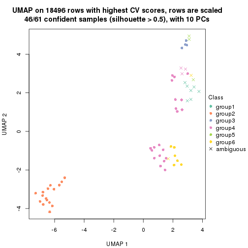
Following heatmap shows how subgroups are split when increasing k:
collect_classes(res)
Test correlation between subgroups and known annotations. If the known annotation is numeric, one-way ANOVA test is applied, and if the known annotation is discrete, chi-squared contingency table test is applied.
test_to_known_factors(res)
#> n cell.type(p) tissue(p) k
#> CV:hclust 61 1.79e-12 4.63e-04 2
#> CV:hclust 61 1.28e-22 1.86e-06 3
#> CV:hclust 55 4.18e-18 1.44e-07 4
#> CV:hclust 57 7.30e-17 2.19e-09 5
#> CV:hclust 46 8.13e-15 5.23e-07 6
If matrix rows can be associated to genes, consider to use GO_Enrichment(res,
...) to perform function enrichment for the signature genes.
The object with results only for a single top-value method and a single partition method can be extracted as:
res = res_list["CV", "kmeans"]
# you can also extract it by
# res = res_list["CV:kmeans"]
A summary of res and all the functions that can be applied to it:
res
#> A 'ConsensusPartition' object with k = 2, 3, 4, 5, 6.
#> On a matrix with 18496 rows and 61 columns.
#> Top rows (1000, 2000, 3000, 4000, 5000) are extracted by 'CV' method.
#> Subgroups are detected by 'kmeans' method.
#> Performed in total 1250 partitions by row resampling.
#> Best k for subgroups seems to be 3.
#>
#> Following methods can be applied to this 'ConsensusPartition' object:
#> [1] "cola_report" "collect_classes" "collect_plots"
#> [4] "collect_stats" "colnames" "compare_signatures"
#> [7] "consensus_heatmap" "dimension_reduction" "functional_enrichment"
#> [10] "get_anno_col" "get_anno" "get_classes"
#> [13] "get_consensus" "get_matrix" "get_membership"
#> [16] "get_param" "get_signatures" "get_stats"
#> [19] "is_best_k" "is_stable_k" "membership_heatmap"
#> [22] "ncol" "nrow" "plot_ecdf"
#> [25] "rownames" "select_partition_number" "show"
#> [28] "suggest_best_k" "test_to_known_factors"
collect_plots() function collects all the plots made from res for all k (number of partitions)
into one single page to provide an easy and fast comparison between different k.
collect_plots(res)
The plots are:
k and the heatmap of
predicted classes for each k.k.k.k.All the plots in panels can be made by individual functions and they are plotted later in this section.
select_partition_number() produces several plots showing different
statistics for choosing “optimized” k. There are following statistics:
k;k, the area increased is defined as \(A_k - A_{k-1}\).The detailed explanations of these statistics can be found in the cola vignette.
Generally speaking, lower PAC score, higher mean silhouette score or higher
concordance corresponds to better partition. Rand index and Jaccard index
measure how similar the current partition is compared to partition with k-1.
If they are too similar, we won't accept k is better than k-1.
select_partition_number(res)
The numeric values for all these statistics can be obtained by get_stats().
get_stats(res)
#> k 1-PAC mean_silhouette concordance area_increased Rand Jaccard
#> 2 2 0.479 0.900 0.908 0.3818 0.531 0.531
#> 3 3 0.594 0.921 0.901 0.4041 0.948 0.901
#> 4 4 0.657 0.682 0.748 0.2614 0.809 0.600
#> 5 5 0.631 0.436 0.746 0.1029 0.850 0.574
#> 6 6 0.699 0.632 0.761 0.0718 0.893 0.612
suggest_best_k() suggests the best \(k\) based on these statistics. The rules are as follows:
NA.suggest_best_k(res)
#> [1] 3
Following shows the table of the partitions (You need to click the show/hide
code output link to see it). The membership matrix (columns with name p*)
is inferred by
clue::cl_consensus()
function with the SE method. Basically the value in the membership matrix
represents the probability to belong to a certain group. The finall class
label for an item is determined with the group with highest probability it
belongs to.
In get_classes() function, the entropy is calculated from the membership
matrix and the silhouette score is calculated from the consensus matrix.
cbind(get_classes(res, k = 2), get_membership(res, k = 2))
#> class entropy silhouette p1 p2
#> GSM72644 2 0.714 0.848 0.196 0.804
#> GSM72647 2 0.714 0.848 0.196 0.804
#> GSM72657 2 0.714 0.848 0.196 0.804
#> GSM72658 2 0.714 0.848 0.196 0.804
#> GSM72659 2 0.714 0.848 0.196 0.804
#> GSM72660 2 0.714 0.848 0.196 0.804
#> GSM72683 2 0.714 0.848 0.196 0.804
#> GSM72684 2 0.714 0.848 0.196 0.804
#> GSM72686 2 0.714 0.848 0.196 0.804
#> GSM72687 2 0.714 0.848 0.196 0.804
#> GSM72688 2 0.714 0.848 0.196 0.804
#> GSM72689 2 0.714 0.848 0.196 0.804
#> GSM72690 2 0.714 0.848 0.196 0.804
#> GSM72691 2 0.714 0.848 0.196 0.804
#> GSM72692 2 0.714 0.848 0.196 0.804
#> GSM72693 2 0.714 0.848 0.196 0.804
#> GSM72645 2 0.980 0.393 0.416 0.584
#> GSM72646 2 0.980 0.393 0.416 0.584
#> GSM72678 2 0.980 0.393 0.416 0.584
#> GSM72679 2 0.980 0.393 0.416 0.584
#> GSM72699 2 0.980 0.393 0.416 0.584
#> GSM72700 2 0.980 0.393 0.416 0.584
#> GSM72654 1 0.000 1.000 1.000 0.000
#> GSM72655 1 0.000 1.000 1.000 0.000
#> GSM72661 1 0.000 1.000 1.000 0.000
#> GSM72662 1 0.000 1.000 1.000 0.000
#> GSM72663 1 0.000 1.000 1.000 0.000
#> GSM72665 1 0.000 1.000 1.000 0.000
#> GSM72666 1 0.000 1.000 1.000 0.000
#> GSM72640 1 0.000 1.000 1.000 0.000
#> GSM72641 1 0.000 1.000 1.000 0.000
#> GSM72642 1 0.000 1.000 1.000 0.000
#> GSM72643 1 0.000 1.000 1.000 0.000
#> GSM72651 1 0.000 1.000 1.000 0.000
#> GSM72652 1 0.000 1.000 1.000 0.000
#> GSM72653 1 0.000 1.000 1.000 0.000
#> GSM72656 1 0.000 1.000 1.000 0.000
#> GSM72667 1 0.000 1.000 1.000 0.000
#> GSM72668 1 0.000 1.000 1.000 0.000
#> GSM72669 1 0.000 1.000 1.000 0.000
#> GSM72670 1 0.000 1.000 1.000 0.000
#> GSM72671 1 0.000 1.000 1.000 0.000
#> GSM72672 1 0.000 1.000 1.000 0.000
#> GSM72696 1 0.000 1.000 1.000 0.000
#> GSM72697 1 0.000 1.000 1.000 0.000
#> GSM72674 1 0.000 1.000 1.000 0.000
#> GSM72675 1 0.000 1.000 1.000 0.000
#> GSM72676 1 0.000 1.000 1.000 0.000
#> GSM72677 1 0.000 1.000 1.000 0.000
#> GSM72680 1 0.000 1.000 1.000 0.000
#> GSM72682 1 0.000 1.000 1.000 0.000
#> GSM72685 1 0.000 1.000 1.000 0.000
#> GSM72694 1 0.000 1.000 1.000 0.000
#> GSM72695 1 0.000 1.000 1.000 0.000
#> GSM72698 1 0.000 1.000 1.000 0.000
#> GSM72648 1 0.000 1.000 1.000 0.000
#> GSM72649 1 0.000 1.000 1.000 0.000
#> GSM72650 1 0.000 1.000 1.000 0.000
#> GSM72664 1 0.000 1.000 1.000 0.000
#> GSM72673 1 0.000 1.000 1.000 0.000
#> GSM72681 1 0.000 1.000 1.000 0.000
cbind(get_classes(res, k = 3), get_membership(res, k = 3))
#> class entropy silhouette p1 p2 p3
#> GSM72644 2 0.353 0.954 0.032 0.900 0.068
#> GSM72647 2 0.343 0.954 0.032 0.904 0.064
#> GSM72657 2 0.129 0.971 0.032 0.968 0.000
#> GSM72658 2 0.129 0.971 0.032 0.968 0.000
#> GSM72659 2 0.129 0.971 0.032 0.968 0.000
#> GSM72660 2 0.129 0.971 0.032 0.968 0.000
#> GSM72683 2 0.353 0.954 0.032 0.900 0.068
#> GSM72684 2 0.353 0.954 0.032 0.900 0.068
#> GSM72686 2 0.171 0.969 0.032 0.960 0.008
#> GSM72687 2 0.188 0.969 0.032 0.956 0.012
#> GSM72688 2 0.188 0.969 0.032 0.956 0.012
#> GSM72689 2 0.188 0.969 0.032 0.956 0.012
#> GSM72690 2 0.188 0.969 0.032 0.956 0.012
#> GSM72691 2 0.171 0.969 0.032 0.960 0.008
#> GSM72692 2 0.343 0.954 0.032 0.904 0.064
#> GSM72693 2 0.343 0.954 0.032 0.904 0.064
#> GSM72645 3 0.659 0.992 0.112 0.132 0.756
#> GSM72646 3 0.659 0.992 0.112 0.132 0.756
#> GSM72678 3 0.706 0.984 0.112 0.164 0.724
#> GSM72679 3 0.706 0.984 0.112 0.164 0.724
#> GSM72699 3 0.659 0.992 0.112 0.132 0.756
#> GSM72700 3 0.659 0.992 0.112 0.132 0.756
#> GSM72654 1 0.245 0.897 0.924 0.000 0.076
#> GSM72655 1 0.245 0.897 0.924 0.000 0.076
#> GSM72661 1 0.280 0.898 0.908 0.000 0.092
#> GSM72662 1 0.288 0.897 0.904 0.000 0.096
#> GSM72663 1 0.280 0.897 0.908 0.000 0.092
#> GSM72665 1 0.348 0.901 0.872 0.000 0.128
#> GSM72666 1 0.348 0.901 0.872 0.000 0.128
#> GSM72640 1 0.000 0.906 1.000 0.000 0.000
#> GSM72641 1 0.334 0.878 0.880 0.000 0.120
#> GSM72642 1 0.254 0.896 0.920 0.000 0.080
#> GSM72643 1 0.394 0.889 0.844 0.000 0.156
#> GSM72651 1 0.263 0.898 0.916 0.000 0.084
#> GSM72652 1 0.271 0.899 0.912 0.000 0.088
#> GSM72653 1 0.175 0.895 0.952 0.000 0.048
#> GSM72656 1 0.175 0.895 0.952 0.000 0.048
#> GSM72667 1 0.254 0.897 0.920 0.000 0.080
#> GSM72668 1 0.245 0.897 0.924 0.000 0.076
#> GSM72669 1 0.254 0.897 0.920 0.000 0.080
#> GSM72670 1 0.245 0.898 0.924 0.000 0.076
#> GSM72671 1 0.245 0.897 0.924 0.000 0.076
#> GSM72672 1 0.175 0.895 0.952 0.000 0.048
#> GSM72696 1 0.327 0.886 0.884 0.000 0.116
#> GSM72697 1 0.327 0.886 0.884 0.000 0.116
#> GSM72674 1 0.327 0.886 0.884 0.000 0.116
#> GSM72675 1 0.327 0.886 0.884 0.000 0.116
#> GSM72676 1 0.334 0.886 0.880 0.000 0.120
#> GSM72677 1 0.175 0.895 0.952 0.000 0.048
#> GSM72680 1 0.175 0.895 0.952 0.000 0.048
#> GSM72682 1 0.327 0.886 0.884 0.000 0.116
#> GSM72685 1 0.334 0.878 0.880 0.000 0.120
#> GSM72694 1 0.334 0.886 0.880 0.000 0.120
#> GSM72695 1 0.327 0.886 0.884 0.000 0.116
#> GSM72698 1 0.327 0.886 0.884 0.000 0.116
#> GSM72648 1 0.245 0.898 0.924 0.000 0.076
#> GSM72649 1 0.245 0.898 0.924 0.000 0.076
#> GSM72650 1 0.245 0.898 0.924 0.000 0.076
#> GSM72664 1 0.334 0.878 0.880 0.000 0.120
#> GSM72673 1 0.334 0.886 0.880 0.000 0.120
#> GSM72681 1 0.175 0.895 0.952 0.000 0.048
cbind(get_classes(res, k = 4), get_membership(res, k = 4))
#> class entropy silhouette p1 p2 p3 p4
#> GSM72644 2 0.4713 0.8605 0.172 0.776 0.052 0.000
#> GSM72647 2 0.4467 0.8620 0.172 0.788 0.040 0.000
#> GSM72657 2 0.0804 0.9130 0.008 0.980 0.012 0.000
#> GSM72658 2 0.0804 0.9130 0.008 0.980 0.012 0.000
#> GSM72659 2 0.0804 0.9130 0.008 0.980 0.012 0.000
#> GSM72660 2 0.0804 0.9130 0.008 0.980 0.012 0.000
#> GSM72683 2 0.4713 0.8605 0.172 0.776 0.052 0.000
#> GSM72684 2 0.4789 0.8613 0.172 0.772 0.056 0.000
#> GSM72686 2 0.0188 0.9138 0.004 0.996 0.000 0.000
#> GSM72687 2 0.0657 0.9138 0.012 0.984 0.004 0.000
#> GSM72688 2 0.0657 0.9138 0.012 0.984 0.004 0.000
#> GSM72689 2 0.0657 0.9138 0.012 0.984 0.004 0.000
#> GSM72690 2 0.0657 0.9138 0.012 0.984 0.004 0.000
#> GSM72691 2 0.0188 0.9138 0.004 0.996 0.000 0.000
#> GSM72692 2 0.4467 0.8620 0.172 0.788 0.040 0.000
#> GSM72693 2 0.4467 0.8620 0.172 0.788 0.040 0.000
#> GSM72645 3 0.3610 0.9926 0.024 0.024 0.872 0.080
#> GSM72646 3 0.3610 0.9926 0.024 0.024 0.872 0.080
#> GSM72678 3 0.4324 0.9851 0.056 0.024 0.840 0.080
#> GSM72679 3 0.4324 0.9851 0.056 0.024 0.840 0.080
#> GSM72699 3 0.3610 0.9926 0.024 0.024 0.872 0.080
#> GSM72700 3 0.3610 0.9926 0.024 0.024 0.872 0.080
#> GSM72654 1 0.4713 0.8814 0.640 0.000 0.000 0.360
#> GSM72655 1 0.4713 0.8814 0.640 0.000 0.000 0.360
#> GSM72661 4 0.2704 0.6318 0.124 0.000 0.000 0.876
#> GSM72662 4 0.2081 0.6524 0.084 0.000 0.000 0.916
#> GSM72663 4 0.2011 0.6543 0.080 0.000 0.000 0.920
#> GSM72665 4 0.5193 -0.0476 0.412 0.000 0.008 0.580
#> GSM72666 4 0.5193 -0.0476 0.412 0.000 0.008 0.580
#> GSM72640 4 0.5592 -0.1975 0.404 0.000 0.024 0.572
#> GSM72641 1 0.5222 0.7206 0.688 0.000 0.032 0.280
#> GSM72642 1 0.4713 0.8861 0.640 0.000 0.000 0.360
#> GSM72643 4 0.3908 0.3883 0.212 0.000 0.004 0.784
#> GSM72651 4 0.1867 0.6452 0.072 0.000 0.000 0.928
#> GSM72652 4 0.2589 0.6358 0.116 0.000 0.000 0.884
#> GSM72653 4 0.6337 -0.0940 0.464 0.000 0.060 0.476
#> GSM72656 4 0.6337 -0.0940 0.464 0.000 0.060 0.476
#> GSM72667 1 0.4643 0.8853 0.656 0.000 0.000 0.344
#> GSM72668 1 0.4643 0.8708 0.656 0.000 0.000 0.344
#> GSM72669 1 0.4643 0.8853 0.656 0.000 0.000 0.344
#> GSM72670 1 0.4697 0.8870 0.644 0.000 0.000 0.356
#> GSM72671 1 0.4679 0.8772 0.648 0.000 0.000 0.352
#> GSM72672 4 0.6337 -0.0940 0.464 0.000 0.060 0.476
#> GSM72696 4 0.0188 0.6756 0.000 0.000 0.004 0.996
#> GSM72697 4 0.0188 0.6756 0.000 0.000 0.004 0.996
#> GSM72674 4 0.0188 0.6756 0.000 0.000 0.004 0.996
#> GSM72675 4 0.0188 0.6756 0.000 0.000 0.004 0.996
#> GSM72676 4 0.0657 0.6688 0.012 0.000 0.004 0.984
#> GSM72677 4 0.6337 -0.0940 0.464 0.000 0.060 0.476
#> GSM72680 4 0.6337 -0.0940 0.464 0.000 0.060 0.476
#> GSM72682 4 0.0376 0.6751 0.004 0.000 0.004 0.992
#> GSM72685 1 0.5308 0.7157 0.684 0.000 0.036 0.280
#> GSM72694 4 0.0657 0.6688 0.012 0.000 0.004 0.984
#> GSM72695 4 0.0188 0.6756 0.000 0.000 0.004 0.996
#> GSM72698 4 0.0188 0.6756 0.000 0.000 0.004 0.996
#> GSM72648 1 0.4697 0.8870 0.644 0.000 0.000 0.356
#> GSM72649 1 0.4697 0.8870 0.644 0.000 0.000 0.356
#> GSM72650 1 0.4697 0.8870 0.644 0.000 0.000 0.356
#> GSM72664 1 0.5366 0.7082 0.684 0.000 0.040 0.276
#> GSM72673 4 0.0657 0.6688 0.012 0.000 0.004 0.984
#> GSM72681 4 0.6337 -0.0940 0.464 0.000 0.060 0.476
cbind(get_classes(res, k = 5), get_membership(res, k = 5))
#> class entropy silhouette p1 p2 p3 p4 p5
#> GSM72644 2 0.4763 0.7616 0.000 0.616 0.004 0.020 0.360
#> GSM72647 2 0.4354 0.7642 0.000 0.624 0.000 0.008 0.368
#> GSM72657 2 0.2125 0.8452 0.000 0.920 0.004 0.052 0.024
#> GSM72658 2 0.2125 0.8452 0.000 0.920 0.004 0.052 0.024
#> GSM72659 2 0.2125 0.8452 0.000 0.920 0.004 0.052 0.024
#> GSM72660 2 0.2125 0.8452 0.000 0.920 0.004 0.052 0.024
#> GSM72683 2 0.4763 0.7616 0.000 0.616 0.004 0.020 0.360
#> GSM72684 2 0.4832 0.7626 0.000 0.616 0.004 0.024 0.356
#> GSM72686 2 0.0000 0.8457 0.000 1.000 0.000 0.000 0.000
#> GSM72687 2 0.0613 0.8455 0.000 0.984 0.004 0.004 0.008
#> GSM72688 2 0.0613 0.8455 0.000 0.984 0.004 0.004 0.008
#> GSM72689 2 0.0613 0.8455 0.000 0.984 0.004 0.004 0.008
#> GSM72690 2 0.0613 0.8455 0.000 0.984 0.004 0.004 0.008
#> GSM72691 2 0.0000 0.8457 0.000 1.000 0.000 0.000 0.000
#> GSM72692 2 0.4354 0.7642 0.000 0.624 0.000 0.008 0.368
#> GSM72693 2 0.4354 0.7642 0.000 0.624 0.000 0.008 0.368
#> GSM72645 3 0.0740 0.9794 0.008 0.004 0.980 0.008 0.000
#> GSM72646 3 0.0740 0.9794 0.008 0.004 0.980 0.008 0.000
#> GSM72678 3 0.2704 0.9594 0.008 0.004 0.896 0.028 0.064
#> GSM72679 3 0.2704 0.9594 0.008 0.004 0.896 0.028 0.064
#> GSM72699 3 0.0854 0.9789 0.008 0.004 0.976 0.012 0.000
#> GSM72700 3 0.0740 0.9794 0.008 0.004 0.980 0.008 0.000
#> GSM72654 1 0.5994 -0.7776 0.472 0.000 0.004 0.096 0.428
#> GSM72655 1 0.5994 -0.7776 0.472 0.000 0.004 0.096 0.428
#> GSM72661 4 0.5699 0.6257 0.308 0.000 0.000 0.584 0.108
#> GSM72662 4 0.5535 0.6881 0.272 0.000 0.000 0.620 0.108
#> GSM72663 4 0.5359 0.7153 0.256 0.000 0.000 0.644 0.100
#> GSM72665 1 0.6769 0.0529 0.444 0.000 0.004 0.308 0.244
#> GSM72666 1 0.6769 0.0529 0.444 0.000 0.004 0.308 0.244
#> GSM72640 1 0.6502 -0.0525 0.532 0.000 0.008 0.260 0.200
#> GSM72641 1 0.3760 0.1332 0.784 0.000 0.000 0.028 0.188
#> GSM72642 5 0.6243 0.0000 0.436 0.000 0.004 0.124 0.436
#> GSM72643 4 0.3810 0.7375 0.176 0.000 0.000 0.788 0.036
#> GSM72651 4 0.5032 0.7446 0.220 0.000 0.000 0.688 0.092
#> GSM72652 4 0.5309 0.7254 0.240 0.000 0.000 0.656 0.104
#> GSM72653 1 0.2719 0.3370 0.852 0.000 0.004 0.144 0.000
#> GSM72656 1 0.2719 0.3370 0.852 0.000 0.004 0.144 0.000
#> GSM72667 1 0.6102 -0.7596 0.468 0.000 0.004 0.108 0.420
#> GSM72668 1 0.5901 -0.7910 0.492 0.000 0.004 0.088 0.416
#> GSM72669 1 0.6102 -0.7596 0.468 0.000 0.004 0.108 0.420
#> GSM72670 1 0.6173 -0.7660 0.460 0.000 0.004 0.116 0.420
#> GSM72671 1 0.5943 -0.7976 0.488 0.000 0.004 0.092 0.416
#> GSM72672 1 0.2877 0.3368 0.848 0.000 0.004 0.144 0.004
#> GSM72696 4 0.3078 0.8621 0.132 0.000 0.004 0.848 0.016
#> GSM72697 4 0.3031 0.8632 0.128 0.000 0.004 0.852 0.016
#> GSM72674 4 0.2179 0.8699 0.100 0.000 0.004 0.896 0.000
#> GSM72675 4 0.2179 0.8699 0.100 0.000 0.004 0.896 0.000
#> GSM72676 4 0.2179 0.8699 0.100 0.000 0.004 0.896 0.000
#> GSM72677 1 0.3044 0.3361 0.840 0.000 0.008 0.148 0.004
#> GSM72680 1 0.2674 0.3364 0.856 0.000 0.004 0.140 0.000
#> GSM72682 4 0.3053 0.8632 0.128 0.000 0.008 0.852 0.012
#> GSM72685 1 0.3283 0.1643 0.832 0.000 0.000 0.028 0.140
#> GSM72694 4 0.2179 0.8699 0.100 0.000 0.004 0.896 0.000
#> GSM72695 4 0.2179 0.8699 0.100 0.000 0.004 0.896 0.000
#> GSM72698 4 0.2179 0.8699 0.100 0.000 0.004 0.896 0.000
#> GSM72648 1 0.6173 -0.7660 0.460 0.000 0.004 0.116 0.420
#> GSM72649 1 0.6173 -0.7660 0.460 0.000 0.004 0.116 0.420
#> GSM72650 1 0.6138 -0.7615 0.464 0.000 0.004 0.112 0.420
#> GSM72664 1 0.4054 0.1934 0.760 0.000 0.000 0.036 0.204
#> GSM72673 4 0.2179 0.8699 0.100 0.000 0.004 0.896 0.000
#> GSM72681 1 0.2886 0.3357 0.844 0.000 0.008 0.148 0.000
cbind(get_classes(res, k = 6), get_membership(res, k = 6))
#> class entropy silhouette p1 p2 p3 p4 p5 p6
#> GSM72644 1 0.3993 -0.2493 0.520 0.476 0.004 0.000 0.000 0.000
#> GSM72647 2 0.4847 0.0822 0.464 0.492 0.000 0.000 0.012 0.032
#> GSM72657 2 0.2985 0.7480 0.044 0.864 0.004 0.000 0.012 0.076
#> GSM72658 2 0.2985 0.7480 0.044 0.864 0.004 0.000 0.012 0.076
#> GSM72659 2 0.2985 0.7480 0.044 0.864 0.004 0.000 0.012 0.076
#> GSM72660 2 0.2985 0.7480 0.044 0.864 0.004 0.000 0.012 0.076
#> GSM72683 1 0.3993 -0.2493 0.520 0.476 0.004 0.000 0.000 0.000
#> GSM72684 1 0.4122 -0.2542 0.520 0.472 0.004 0.000 0.000 0.004
#> GSM72686 2 0.0000 0.7671 0.000 1.000 0.000 0.000 0.000 0.000
#> GSM72687 2 0.0914 0.7647 0.016 0.968 0.000 0.000 0.000 0.016
#> GSM72688 2 0.0914 0.7647 0.016 0.968 0.000 0.000 0.000 0.016
#> GSM72689 2 0.0914 0.7647 0.016 0.968 0.000 0.000 0.000 0.016
#> GSM72690 2 0.0914 0.7647 0.016 0.968 0.000 0.000 0.000 0.016
#> GSM72691 2 0.0000 0.7671 0.000 1.000 0.000 0.000 0.000 0.000
#> GSM72692 2 0.4847 0.0822 0.464 0.492 0.000 0.000 0.012 0.032
#> GSM72693 2 0.4847 0.0822 0.464 0.492 0.000 0.000 0.012 0.032
#> GSM72645 3 0.0508 0.9691 0.000 0.004 0.984 0.012 0.000 0.000
#> GSM72646 3 0.0508 0.9691 0.000 0.004 0.984 0.012 0.000 0.000
#> GSM72678 3 0.3043 0.9391 0.068 0.004 0.872 0.012 0.024 0.020
#> GSM72679 3 0.3063 0.9391 0.064 0.004 0.872 0.012 0.020 0.028
#> GSM72699 3 0.0767 0.9686 0.000 0.004 0.976 0.012 0.008 0.000
#> GSM72700 3 0.0653 0.9689 0.000 0.004 0.980 0.012 0.004 0.000
#> GSM72654 5 0.5046 0.7228 0.128 0.000 0.000 0.060 0.712 0.100
#> GSM72655 5 0.5046 0.7228 0.128 0.000 0.000 0.060 0.712 0.100
#> GSM72661 4 0.5956 0.5318 0.220 0.000 0.000 0.540 0.016 0.224
#> GSM72662 4 0.5663 0.5605 0.216 0.000 0.000 0.556 0.004 0.224
#> GSM72663 4 0.5506 0.5945 0.196 0.000 0.000 0.584 0.004 0.216
#> GSM72665 1 0.7742 -0.2750 0.304 0.000 0.004 0.220 0.184 0.288
#> GSM72666 1 0.7742 -0.2750 0.304 0.000 0.004 0.220 0.184 0.288
#> GSM72640 5 0.7053 -0.0427 0.084 0.000 0.000 0.240 0.420 0.256
#> GSM72641 6 0.6264 0.4129 0.152 0.000 0.000 0.040 0.304 0.504
#> GSM72642 5 0.3996 0.7584 0.112 0.000 0.000 0.064 0.792 0.032
#> GSM72643 4 0.2234 0.7040 0.004 0.000 0.000 0.872 0.124 0.000
#> GSM72651 4 0.5184 0.6730 0.184 0.000 0.000 0.664 0.020 0.132
#> GSM72652 4 0.5388 0.6485 0.196 0.000 0.000 0.632 0.016 0.156
#> GSM72653 6 0.4525 0.7963 0.000 0.000 0.004 0.152 0.128 0.716
#> GSM72656 6 0.4525 0.7963 0.000 0.000 0.004 0.152 0.128 0.716
#> GSM72667 5 0.1995 0.7907 0.000 0.000 0.000 0.052 0.912 0.036
#> GSM72668 5 0.4962 0.7255 0.124 0.000 0.000 0.060 0.720 0.096
#> GSM72669 5 0.1995 0.7907 0.000 0.000 0.000 0.052 0.912 0.036
#> GSM72670 5 0.2128 0.7929 0.004 0.000 0.000 0.056 0.908 0.032
#> GSM72671 5 0.4962 0.7255 0.124 0.000 0.000 0.060 0.720 0.096
#> GSM72672 6 0.4897 0.7945 0.020 0.000 0.000 0.152 0.128 0.700
#> GSM72696 4 0.2560 0.8008 0.092 0.000 0.000 0.872 0.000 0.036
#> GSM72697 4 0.2560 0.8008 0.092 0.000 0.000 0.872 0.000 0.036
#> GSM72674 4 0.0000 0.8171 0.000 0.000 0.000 1.000 0.000 0.000
#> GSM72675 4 0.0000 0.8171 0.000 0.000 0.000 1.000 0.000 0.000
#> GSM72676 4 0.0146 0.8155 0.000 0.000 0.000 0.996 0.004 0.000
#> GSM72677 6 0.4897 0.7945 0.020 0.000 0.000 0.152 0.128 0.700
#> GSM72680 6 0.4525 0.7963 0.000 0.000 0.004 0.152 0.128 0.716
#> GSM72682 4 0.2831 0.7988 0.084 0.000 0.000 0.868 0.016 0.032
#> GSM72685 6 0.5998 0.4707 0.120 0.000 0.000 0.040 0.296 0.544
#> GSM72694 4 0.0146 0.8155 0.000 0.000 0.000 0.996 0.004 0.000
#> GSM72695 4 0.0000 0.8171 0.000 0.000 0.000 1.000 0.000 0.000
#> GSM72698 4 0.0000 0.8171 0.000 0.000 0.000 1.000 0.000 0.000
#> GSM72648 5 0.2240 0.7919 0.008 0.000 0.000 0.056 0.904 0.032
#> GSM72649 5 0.2240 0.7919 0.008 0.000 0.000 0.056 0.904 0.032
#> GSM72650 5 0.2240 0.7919 0.008 0.000 0.000 0.056 0.904 0.032
#> GSM72664 6 0.6357 0.4465 0.196 0.000 0.004 0.044 0.212 0.544
#> GSM72673 4 0.0146 0.8155 0.000 0.000 0.000 0.996 0.004 0.000
#> GSM72681 6 0.4663 0.7960 0.004 0.000 0.004 0.152 0.128 0.712
Heatmaps for the consensus matrix. It visualizes the probability of two samples to be in a same group.
consensus_heatmap(res, k = 2)
consensus_heatmap(res, k = 3)
consensus_heatmap(res, k = 4)
consensus_heatmap(res, k = 5)

consensus_heatmap(res, k = 6)
Heatmaps for the membership of samples in all partitions to see how consistent they are:
membership_heatmap(res, k = 2)
membership_heatmap(res, k = 3)
membership_heatmap(res, k = 4)
membership_heatmap(res, k = 5)
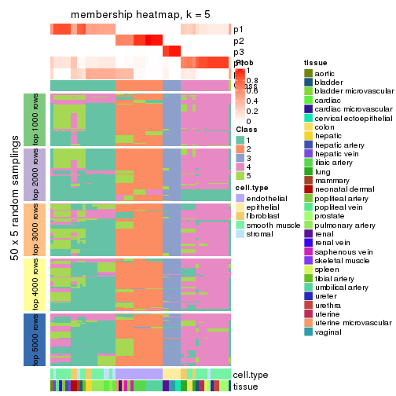
membership_heatmap(res, k = 6)

As soon as we have had the classes for columns, we can look for signatures which are significantly different between classes which can be candidate marks for certain classes. Following are the heatmaps for signatures.
Signature heatmaps where rows are scaled:
get_signatures(res, k = 2)
get_signatures(res, k = 3)
get_signatures(res, k = 4)
get_signatures(res, k = 5)
get_signatures(res, k = 6)
Signature heatmaps where rows are not scaled:
get_signatures(res, k = 2, scale_rows = FALSE)
get_signatures(res, k = 3, scale_rows = FALSE)
get_signatures(res, k = 4, scale_rows = FALSE)
get_signatures(res, k = 5, scale_rows = FALSE)
get_signatures(res, k = 6, scale_rows = FALSE)
Compare the overlap of signatures from different k:
compare_signatures(res)
get_signature() returns a data frame invisibly. TO get the list of signatures, the function
call should be assigned to a variable explicitly. In following code, if plot argument is set
to FALSE, no heatmap is plotted while only the differential analysis is performed.
# code only for demonstration
tb = get_signature(res, k = ..., plot = FALSE)
An example of the output of tb is:
#> which_row fdr mean_1 mean_2 scaled_mean_1 scaled_mean_2 km
#> 1 38 0.042760348 8.373488 9.131774 -0.5533452 0.5164555 1
#> 2 40 0.018707592 7.106213 8.469186 -0.6173731 0.5762149 1
#> 3 55 0.019134737 10.221463 11.207825 -0.6159697 0.5749050 1
#> 4 59 0.006059896 5.921854 7.869574 -0.6899429 0.6439467 1
#> 5 60 0.018055526 8.928898 10.211722 -0.6204761 0.5791110 1
#> 6 98 0.009384629 15.714769 14.887706 0.6635654 -0.6193277 2
...
The columns in tb are:
which_row: row indices corresponding to the input matrix.fdr: FDR for the differential test. mean_x: The mean value in group x.scaled_mean_x: The mean value in group x after rows are scaled.km: Row groups if k-means clustering is applied to rows.UMAP plot which shows how samples are separated.
dimension_reduction(res, k = 2, method = "UMAP")
dimension_reduction(res, k = 3, method = "UMAP")
dimension_reduction(res, k = 4, method = "UMAP")
dimension_reduction(res, k = 5, method = "UMAP")
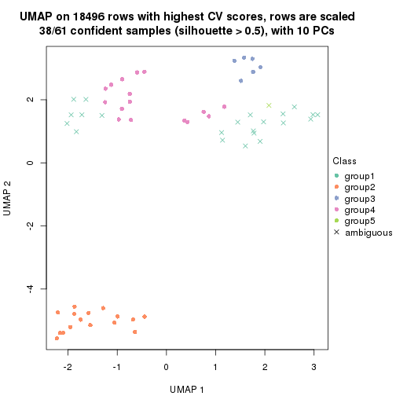
dimension_reduction(res, k = 6, method = "UMAP")
Following heatmap shows how subgroups are split when increasing k:
collect_classes(res)
Test correlation between subgroups and known annotations. If the known annotation is numeric, one-way ANOVA test is applied, and if the known annotation is discrete, chi-squared contingency table test is applied.
test_to_known_factors(res)
#> n cell.type(p) tissue(p) k
#> CV:kmeans 55 6.87e-12 7.58e-04 2
#> CV:kmeans 61 1.28e-22 1.86e-06 3
#> CV:kmeans 51 3.23e-17 1.89e-09 4
#> CV:kmeans 38 3.11e-13 1.92e-05 5
#> CV:kmeans 49 8.08e-15 1.83e-10 6
If matrix rows can be associated to genes, consider to use GO_Enrichment(res,
...) to perform function enrichment for the signature genes.
The object with results only for a single top-value method and a single partition method can be extracted as:
res = res_list["CV", "skmeans"]
# you can also extract it by
# res = res_list["CV:skmeans"]
A summary of res and all the functions that can be applied to it:
res
#> A 'ConsensusPartition' object with k = 2, 3, 4, 5, 6.
#> On a matrix with 18496 rows and 61 columns.
#> Top rows (1000, 2000, 3000, 4000, 5000) are extracted by 'CV' method.
#> Subgroups are detected by 'skmeans' method.
#> Performed in total 1250 partitions by row resampling.
#> Best k for subgroups seems to be 2.
#>
#> Following methods can be applied to this 'ConsensusPartition' object:
#> [1] "cola_report" "collect_classes" "collect_plots"
#> [4] "collect_stats" "colnames" "compare_signatures"
#> [7] "consensus_heatmap" "dimension_reduction" "functional_enrichment"
#> [10] "get_anno_col" "get_anno" "get_classes"
#> [13] "get_consensus" "get_matrix" "get_membership"
#> [16] "get_param" "get_signatures" "get_stats"
#> [19] "is_best_k" "is_stable_k" "membership_heatmap"
#> [22] "ncol" "nrow" "plot_ecdf"
#> [25] "rownames" "select_partition_number" "show"
#> [28] "suggest_best_k" "test_to_known_factors"
collect_plots() function collects all the plots made from res for all k (number of partitions)
into one single page to provide an easy and fast comparison between different k.
collect_plots(res)
The plots are:
k and the heatmap of
predicted classes for each k.k.k.k.All the plots in panels can be made by individual functions and they are plotted later in this section.
select_partition_number() produces several plots showing different
statistics for choosing “optimized” k. There are following statistics:
k;k, the area increased is defined as \(A_k - A_{k-1}\).The detailed explanations of these statistics can be found in the cola vignette.
Generally speaking, lower PAC score, higher mean silhouette score or higher
concordance corresponds to better partition. Rand index and Jaccard index
measure how similar the current partition is compared to partition with k-1.
If they are too similar, we won't accept k is better than k-1.
select_partition_number(res)
The numeric values for all these statistics can be obtained by get_stats().
get_stats(res)
#> k 1-PAC mean_silhouette concordance area_increased Rand Jaccard
#> 2 2 1.000 0.997 0.999 0.4701 0.531 0.531
#> 3 3 0.679 0.838 0.821 0.2677 0.948 0.901
#> 4 4 0.877 0.839 0.927 0.2168 0.793 0.568
#> 5 5 0.875 0.871 0.928 0.0897 0.868 0.566
#> 6 6 0.864 0.812 0.881 0.0447 0.958 0.798
suggest_best_k() suggests the best \(k\) based on these statistics. The rules are as follows:
NA.suggest_best_k(res)
#> [1] 2
Following shows the table of the partitions (You need to click the show/hide
code output link to see it). The membership matrix (columns with name p*)
is inferred by
clue::cl_consensus()
function with the SE method. Basically the value in the membership matrix
represents the probability to belong to a certain group. The finall class
label for an item is determined with the group with highest probability it
belongs to.
In get_classes() function, the entropy is calculated from the membership
matrix and the silhouette score is calculated from the consensus matrix.
cbind(get_classes(res, k = 2), get_membership(res, k = 2))
#> class entropy silhouette p1 p2
#> GSM72644 2 0.0000 1.000 0.000 1.000
#> GSM72647 2 0.0000 1.000 0.000 1.000
#> GSM72657 2 0.0000 1.000 0.000 1.000
#> GSM72658 2 0.0000 1.000 0.000 1.000
#> GSM72659 2 0.0000 1.000 0.000 1.000
#> GSM72660 2 0.0000 1.000 0.000 1.000
#> GSM72683 2 0.0000 1.000 0.000 1.000
#> GSM72684 2 0.0000 1.000 0.000 1.000
#> GSM72686 2 0.0000 1.000 0.000 1.000
#> GSM72687 2 0.0000 1.000 0.000 1.000
#> GSM72688 2 0.0000 1.000 0.000 1.000
#> GSM72689 2 0.0000 1.000 0.000 1.000
#> GSM72690 2 0.0000 1.000 0.000 1.000
#> GSM72691 2 0.0000 1.000 0.000 1.000
#> GSM72692 2 0.0000 1.000 0.000 1.000
#> GSM72693 2 0.0000 1.000 0.000 1.000
#> GSM72645 2 0.0000 1.000 0.000 1.000
#> GSM72646 2 0.0000 1.000 0.000 1.000
#> GSM72678 2 0.0000 1.000 0.000 1.000
#> GSM72679 2 0.0000 1.000 0.000 1.000
#> GSM72699 2 0.0000 1.000 0.000 1.000
#> GSM72700 2 0.0000 1.000 0.000 1.000
#> GSM72654 1 0.0000 0.998 1.000 0.000
#> GSM72655 1 0.0000 0.998 1.000 0.000
#> GSM72661 1 0.0000 0.998 1.000 0.000
#> GSM72662 1 0.0000 0.998 1.000 0.000
#> GSM72663 1 0.0000 0.998 1.000 0.000
#> GSM72665 1 0.0000 0.998 1.000 0.000
#> GSM72666 1 0.0000 0.998 1.000 0.000
#> GSM72640 1 0.0000 0.998 1.000 0.000
#> GSM72641 1 0.0000 0.998 1.000 0.000
#> GSM72642 1 0.0000 0.998 1.000 0.000
#> GSM72643 1 0.0000 0.998 1.000 0.000
#> GSM72651 1 0.0000 0.998 1.000 0.000
#> GSM72652 1 0.0000 0.998 1.000 0.000
#> GSM72653 1 0.0000 0.998 1.000 0.000
#> GSM72656 1 0.0000 0.998 1.000 0.000
#> GSM72667 1 0.0000 0.998 1.000 0.000
#> GSM72668 1 0.0000 0.998 1.000 0.000
#> GSM72669 1 0.0376 0.994 0.996 0.004
#> GSM72670 1 0.0000 0.998 1.000 0.000
#> GSM72671 1 0.0000 0.998 1.000 0.000
#> GSM72672 1 0.0000 0.998 1.000 0.000
#> GSM72696 1 0.0000 0.998 1.000 0.000
#> GSM72697 1 0.0000 0.998 1.000 0.000
#> GSM72674 1 0.0000 0.998 1.000 0.000
#> GSM72675 1 0.0000 0.998 1.000 0.000
#> GSM72676 1 0.0000 0.998 1.000 0.000
#> GSM72677 1 0.0000 0.998 1.000 0.000
#> GSM72680 1 0.0000 0.998 1.000 0.000
#> GSM72682 1 0.0000 0.998 1.000 0.000
#> GSM72685 1 0.0000 0.998 1.000 0.000
#> GSM72694 1 0.0000 0.998 1.000 0.000
#> GSM72695 1 0.0000 0.998 1.000 0.000
#> GSM72698 1 0.0000 0.998 1.000 0.000
#> GSM72648 1 0.0000 0.998 1.000 0.000
#> GSM72649 1 0.3879 0.918 0.924 0.076
#> GSM72650 1 0.0000 0.998 1.000 0.000
#> GSM72664 1 0.0000 0.998 1.000 0.000
#> GSM72673 1 0.0000 0.998 1.000 0.000
#> GSM72681 1 0.0000 0.998 1.000 0.000
cbind(get_classes(res, k = 3), get_membership(res, k = 3))
#> class entropy silhouette p1 p2 p3
#> GSM72644 2 0.000 1.000 0.000 1.000 0.000
#> GSM72647 2 0.000 1.000 0.000 1.000 0.000
#> GSM72657 2 0.000 1.000 0.000 1.000 0.000
#> GSM72658 2 0.000 1.000 0.000 1.000 0.000
#> GSM72659 2 0.000 1.000 0.000 1.000 0.000
#> GSM72660 2 0.000 1.000 0.000 1.000 0.000
#> GSM72683 2 0.000 1.000 0.000 1.000 0.000
#> GSM72684 2 0.000 1.000 0.000 1.000 0.000
#> GSM72686 2 0.000 1.000 0.000 1.000 0.000
#> GSM72687 2 0.000 1.000 0.000 1.000 0.000
#> GSM72688 2 0.000 1.000 0.000 1.000 0.000
#> GSM72689 2 0.000 1.000 0.000 1.000 0.000
#> GSM72690 2 0.000 1.000 0.000 1.000 0.000
#> GSM72691 2 0.000 1.000 0.000 1.000 0.000
#> GSM72692 2 0.000 1.000 0.000 1.000 0.000
#> GSM72693 2 0.000 1.000 0.000 1.000 0.000
#> GSM72645 3 0.688 1.000 0.020 0.388 0.592
#> GSM72646 3 0.688 1.000 0.020 0.388 0.592
#> GSM72678 3 0.688 1.000 0.020 0.388 0.592
#> GSM72679 3 0.688 1.000 0.020 0.388 0.592
#> GSM72699 3 0.688 1.000 0.020 0.388 0.592
#> GSM72700 3 0.688 1.000 0.020 0.388 0.592
#> GSM72654 1 0.000 0.732 1.000 0.000 0.000
#> GSM72655 1 0.000 0.732 1.000 0.000 0.000
#> GSM72661 1 0.621 0.779 0.572 0.000 0.428
#> GSM72662 1 0.626 0.774 0.552 0.000 0.448
#> GSM72663 1 0.626 0.774 0.552 0.000 0.448
#> GSM72665 1 0.196 0.736 0.944 0.000 0.056
#> GSM72666 1 0.196 0.736 0.944 0.000 0.056
#> GSM72640 1 0.573 0.788 0.676 0.000 0.324
#> GSM72641 1 0.000 0.732 1.000 0.000 0.000
#> GSM72642 1 0.000 0.732 1.000 0.000 0.000
#> GSM72643 1 0.400 0.738 0.840 0.000 0.160
#> GSM72651 1 0.621 0.779 0.572 0.000 0.428
#> GSM72652 1 0.621 0.779 0.572 0.000 0.428
#> GSM72653 1 0.568 0.788 0.684 0.000 0.316
#> GSM72656 1 0.571 0.788 0.680 0.000 0.320
#> GSM72667 1 0.116 0.714 0.972 0.000 0.028
#> GSM72668 1 0.000 0.732 1.000 0.000 0.000
#> GSM72669 1 0.615 0.427 0.764 0.180 0.056
#> GSM72670 1 0.116 0.714 0.972 0.000 0.028
#> GSM72671 1 0.000 0.732 1.000 0.000 0.000
#> GSM72672 1 0.573 0.788 0.676 0.000 0.324
#> GSM72696 1 0.626 0.774 0.552 0.000 0.448
#> GSM72697 1 0.626 0.774 0.552 0.000 0.448
#> GSM72674 1 0.626 0.774 0.552 0.000 0.448
#> GSM72675 1 0.626 0.774 0.552 0.000 0.448
#> GSM72676 1 0.626 0.774 0.552 0.000 0.448
#> GSM72677 1 0.573 0.788 0.676 0.000 0.324
#> GSM72680 1 0.565 0.787 0.688 0.000 0.312
#> GSM72682 1 0.626 0.774 0.552 0.000 0.448
#> GSM72685 1 0.000 0.732 1.000 0.000 0.000
#> GSM72694 1 0.626 0.774 0.552 0.000 0.448
#> GSM72695 1 0.626 0.774 0.552 0.000 0.448
#> GSM72698 1 0.626 0.774 0.552 0.000 0.448
#> GSM72648 1 0.196 0.691 0.944 0.000 0.056
#> GSM72649 1 0.220 0.688 0.940 0.004 0.056
#> GSM72650 1 0.196 0.691 0.944 0.000 0.056
#> GSM72664 1 0.000 0.732 1.000 0.000 0.000
#> GSM72673 1 0.626 0.774 0.552 0.000 0.448
#> GSM72681 1 0.573 0.788 0.676 0.000 0.324
cbind(get_classes(res, k = 4), get_membership(res, k = 4))
#> class entropy silhouette p1 p2 p3 p4
#> GSM72644 2 0.0000 1.000 0.000 1.000 0.000 0.000
#> GSM72647 2 0.0000 1.000 0.000 1.000 0.000 0.000
#> GSM72657 2 0.0000 1.000 0.000 1.000 0.000 0.000
#> GSM72658 2 0.0000 1.000 0.000 1.000 0.000 0.000
#> GSM72659 2 0.0000 1.000 0.000 1.000 0.000 0.000
#> GSM72660 2 0.0000 1.000 0.000 1.000 0.000 0.000
#> GSM72683 2 0.0000 1.000 0.000 1.000 0.000 0.000
#> GSM72684 2 0.0000 1.000 0.000 1.000 0.000 0.000
#> GSM72686 2 0.0000 1.000 0.000 1.000 0.000 0.000
#> GSM72687 2 0.0000 1.000 0.000 1.000 0.000 0.000
#> GSM72688 2 0.0000 1.000 0.000 1.000 0.000 0.000
#> GSM72689 2 0.0000 1.000 0.000 1.000 0.000 0.000
#> GSM72690 2 0.0000 1.000 0.000 1.000 0.000 0.000
#> GSM72691 2 0.0000 1.000 0.000 1.000 0.000 0.000
#> GSM72692 2 0.0000 1.000 0.000 1.000 0.000 0.000
#> GSM72693 2 0.0000 1.000 0.000 1.000 0.000 0.000
#> GSM72645 3 0.0188 1.000 0.000 0.004 0.996 0.000
#> GSM72646 3 0.0188 1.000 0.000 0.004 0.996 0.000
#> GSM72678 3 0.0188 1.000 0.000 0.004 0.996 0.000
#> GSM72679 3 0.0188 1.000 0.000 0.004 0.996 0.000
#> GSM72699 3 0.0188 1.000 0.000 0.004 0.996 0.000
#> GSM72700 3 0.0188 1.000 0.000 0.004 0.996 0.000
#> GSM72654 1 0.0000 0.807 1.000 0.000 0.000 0.000
#> GSM72655 1 0.0000 0.807 1.000 0.000 0.000 0.000
#> GSM72661 4 0.0657 0.894 0.012 0.000 0.004 0.984
#> GSM72662 4 0.0188 0.901 0.000 0.000 0.004 0.996
#> GSM72663 4 0.0188 0.901 0.000 0.000 0.004 0.996
#> GSM72665 4 0.5155 0.189 0.468 0.000 0.004 0.528
#> GSM72666 4 0.5155 0.189 0.468 0.000 0.004 0.528
#> GSM72640 1 0.4790 0.525 0.620 0.000 0.000 0.380
#> GSM72641 1 0.1661 0.799 0.944 0.000 0.004 0.052
#> GSM72642 1 0.0921 0.805 0.972 0.000 0.000 0.028
#> GSM72643 4 0.4624 0.450 0.340 0.000 0.000 0.660
#> GSM72651 4 0.0469 0.896 0.012 0.000 0.000 0.988
#> GSM72652 4 0.0469 0.896 0.012 0.000 0.000 0.988
#> GSM72653 1 0.5039 0.517 0.592 0.000 0.004 0.404
#> GSM72656 1 0.5039 0.517 0.592 0.000 0.004 0.404
#> GSM72667 1 0.0000 0.807 1.000 0.000 0.000 0.000
#> GSM72668 1 0.0000 0.807 1.000 0.000 0.000 0.000
#> GSM72669 1 0.0000 0.807 1.000 0.000 0.000 0.000
#> GSM72670 1 0.0000 0.807 1.000 0.000 0.000 0.000
#> GSM72671 1 0.0000 0.807 1.000 0.000 0.000 0.000
#> GSM72672 1 0.5060 0.504 0.584 0.000 0.004 0.412
#> GSM72696 4 0.0000 0.903 0.000 0.000 0.000 1.000
#> GSM72697 4 0.0000 0.903 0.000 0.000 0.000 1.000
#> GSM72674 4 0.0000 0.903 0.000 0.000 0.000 1.000
#> GSM72675 4 0.0000 0.903 0.000 0.000 0.000 1.000
#> GSM72676 4 0.0000 0.903 0.000 0.000 0.000 1.000
#> GSM72677 1 0.5070 0.497 0.580 0.000 0.004 0.416
#> GSM72680 1 0.5039 0.517 0.592 0.000 0.004 0.404
#> GSM72682 4 0.0000 0.903 0.000 0.000 0.000 1.000
#> GSM72685 1 0.1661 0.799 0.944 0.000 0.004 0.052
#> GSM72694 4 0.0000 0.903 0.000 0.000 0.000 1.000
#> GSM72695 4 0.0000 0.903 0.000 0.000 0.000 1.000
#> GSM72698 4 0.0000 0.903 0.000 0.000 0.000 1.000
#> GSM72648 1 0.0336 0.803 0.992 0.000 0.008 0.000
#> GSM72649 1 0.0336 0.803 0.992 0.000 0.008 0.000
#> GSM72650 1 0.0336 0.803 0.992 0.000 0.008 0.000
#> GSM72664 1 0.1661 0.799 0.944 0.000 0.004 0.052
#> GSM72673 4 0.0000 0.903 0.000 0.000 0.000 1.000
#> GSM72681 1 0.5070 0.497 0.580 0.000 0.004 0.416
cbind(get_classes(res, k = 5), get_membership(res, k = 5))
#> class entropy silhouette p1 p2 p3 p4 p5
#> GSM72644 2 0.0290 0.9954 0.008 0.992 0 0.000 0.000
#> GSM72647 2 0.0290 0.9954 0.008 0.992 0 0.000 0.000
#> GSM72657 2 0.0000 0.9973 0.000 1.000 0 0.000 0.000
#> GSM72658 2 0.0000 0.9973 0.000 1.000 0 0.000 0.000
#> GSM72659 2 0.0000 0.9973 0.000 1.000 0 0.000 0.000
#> GSM72660 2 0.0000 0.9973 0.000 1.000 0 0.000 0.000
#> GSM72683 2 0.0290 0.9954 0.008 0.992 0 0.000 0.000
#> GSM72684 2 0.0290 0.9954 0.008 0.992 0 0.000 0.000
#> GSM72686 2 0.0000 0.9973 0.000 1.000 0 0.000 0.000
#> GSM72687 2 0.0000 0.9973 0.000 1.000 0 0.000 0.000
#> GSM72688 2 0.0000 0.9973 0.000 1.000 0 0.000 0.000
#> GSM72689 2 0.0000 0.9973 0.000 1.000 0 0.000 0.000
#> GSM72690 2 0.0000 0.9973 0.000 1.000 0 0.000 0.000
#> GSM72691 2 0.0000 0.9973 0.000 1.000 0 0.000 0.000
#> GSM72692 2 0.0290 0.9954 0.008 0.992 0 0.000 0.000
#> GSM72693 2 0.0290 0.9954 0.008 0.992 0 0.000 0.000
#> GSM72645 3 0.0000 1.0000 0.000 0.000 1 0.000 0.000
#> GSM72646 3 0.0000 1.0000 0.000 0.000 1 0.000 0.000
#> GSM72678 3 0.0000 1.0000 0.000 0.000 1 0.000 0.000
#> GSM72679 3 0.0000 1.0000 0.000 0.000 1 0.000 0.000
#> GSM72699 3 0.0000 1.0000 0.000 0.000 1 0.000 0.000
#> GSM72700 3 0.0000 1.0000 0.000 0.000 1 0.000 0.000
#> GSM72654 5 0.3430 0.8078 0.220 0.000 0 0.004 0.776
#> GSM72655 5 0.3430 0.8078 0.220 0.000 0 0.004 0.776
#> GSM72661 1 0.2732 0.7756 0.840 0.000 0 0.160 0.000
#> GSM72662 1 0.3534 0.6762 0.744 0.000 0 0.256 0.000
#> GSM72663 1 0.4030 0.5197 0.648 0.000 0 0.352 0.000
#> GSM72665 1 0.2304 0.8070 0.908 0.000 0 0.044 0.048
#> GSM72666 1 0.2304 0.8070 0.908 0.000 0 0.044 0.048
#> GSM72640 1 0.5049 0.5476 0.644 0.000 0 0.060 0.296
#> GSM72641 1 0.2561 0.7355 0.856 0.000 0 0.000 0.144
#> GSM72642 5 0.3532 0.8116 0.076 0.000 0 0.092 0.832
#> GSM72643 4 0.1430 0.8838 0.004 0.000 0 0.944 0.052
#> GSM72651 4 0.4287 -0.0605 0.460 0.000 0 0.540 0.000
#> GSM72652 1 0.4268 0.2793 0.556 0.000 0 0.444 0.000
#> GSM72653 1 0.2230 0.8333 0.912 0.000 0 0.044 0.044
#> GSM72656 1 0.2230 0.8333 0.912 0.000 0 0.044 0.044
#> GSM72667 5 0.0000 0.8851 0.000 0.000 0 0.000 1.000
#> GSM72668 5 0.3366 0.7953 0.232 0.000 0 0.000 0.768
#> GSM72669 5 0.0000 0.8851 0.000 0.000 0 0.000 1.000
#> GSM72670 5 0.0000 0.8851 0.000 0.000 0 0.000 1.000
#> GSM72671 5 0.3305 0.8038 0.224 0.000 0 0.000 0.776
#> GSM72672 1 0.2304 0.8333 0.908 0.000 0 0.048 0.044
#> GSM72696 4 0.0609 0.9309 0.020 0.000 0 0.980 0.000
#> GSM72697 4 0.0609 0.9309 0.020 0.000 0 0.980 0.000
#> GSM72674 4 0.0000 0.9386 0.000 0.000 0 1.000 0.000
#> GSM72675 4 0.0000 0.9386 0.000 0.000 0 1.000 0.000
#> GSM72676 4 0.0000 0.9386 0.000 0.000 0 1.000 0.000
#> GSM72677 1 0.2580 0.8306 0.892 0.000 0 0.064 0.044
#> GSM72680 1 0.2153 0.8323 0.916 0.000 0 0.040 0.044
#> GSM72682 4 0.0671 0.9322 0.016 0.000 0 0.980 0.004
#> GSM72685 1 0.2648 0.7371 0.848 0.000 0 0.000 0.152
#> GSM72694 4 0.0000 0.9386 0.000 0.000 0 1.000 0.000
#> GSM72695 4 0.0162 0.9375 0.004 0.000 0 0.996 0.000
#> GSM72698 4 0.0000 0.9386 0.000 0.000 0 1.000 0.000
#> GSM72648 5 0.0000 0.8851 0.000 0.000 0 0.000 1.000
#> GSM72649 5 0.0000 0.8851 0.000 0.000 0 0.000 1.000
#> GSM72650 5 0.0000 0.8851 0.000 0.000 0 0.000 1.000
#> GSM72664 1 0.1478 0.7981 0.936 0.000 0 0.000 0.064
#> GSM72673 4 0.0000 0.9386 0.000 0.000 0 1.000 0.000
#> GSM72681 1 0.2446 0.8323 0.900 0.000 0 0.056 0.044
cbind(get_classes(res, k = 6), get_membership(res, k = 6))
#> class entropy silhouette p1 p2 p3 p4 p5 p6
#> GSM72644 2 0.0777 0.984 0.024 0.972 0 0.000 0.000 0.004
#> GSM72647 2 0.0777 0.984 0.024 0.972 0 0.000 0.000 0.004
#> GSM72657 2 0.0000 0.990 0.000 1.000 0 0.000 0.000 0.000
#> GSM72658 2 0.0000 0.990 0.000 1.000 0 0.000 0.000 0.000
#> GSM72659 2 0.0000 0.990 0.000 1.000 0 0.000 0.000 0.000
#> GSM72660 2 0.0000 0.990 0.000 1.000 0 0.000 0.000 0.000
#> GSM72683 2 0.0777 0.984 0.024 0.972 0 0.000 0.000 0.004
#> GSM72684 2 0.0777 0.984 0.024 0.972 0 0.000 0.000 0.004
#> GSM72686 2 0.0000 0.990 0.000 1.000 0 0.000 0.000 0.000
#> GSM72687 2 0.0000 0.990 0.000 1.000 0 0.000 0.000 0.000
#> GSM72688 2 0.0000 0.990 0.000 1.000 0 0.000 0.000 0.000
#> GSM72689 2 0.0000 0.990 0.000 1.000 0 0.000 0.000 0.000
#> GSM72690 2 0.0000 0.990 0.000 1.000 0 0.000 0.000 0.000
#> GSM72691 2 0.0000 0.990 0.000 1.000 0 0.000 0.000 0.000
#> GSM72692 2 0.0777 0.984 0.024 0.972 0 0.000 0.000 0.004
#> GSM72693 2 0.0777 0.984 0.024 0.972 0 0.000 0.000 0.004
#> GSM72645 3 0.0000 1.000 0.000 0.000 1 0.000 0.000 0.000
#> GSM72646 3 0.0000 1.000 0.000 0.000 1 0.000 0.000 0.000
#> GSM72678 3 0.0000 1.000 0.000 0.000 1 0.000 0.000 0.000
#> GSM72679 3 0.0000 1.000 0.000 0.000 1 0.000 0.000 0.000
#> GSM72699 3 0.0000 1.000 0.000 0.000 1 0.000 0.000 0.000
#> GSM72700 3 0.0000 1.000 0.000 0.000 1 0.000 0.000 0.000
#> GSM72654 5 0.4757 0.532 0.472 0.000 0 0.000 0.480 0.048
#> GSM72655 5 0.4757 0.532 0.472 0.000 0 0.000 0.480 0.048
#> GSM72661 1 0.4626 0.790 0.692 0.000 0 0.136 0.000 0.172
#> GSM72662 1 0.4671 0.798 0.688 0.000 0 0.152 0.000 0.160
#> GSM72663 1 0.5078 0.767 0.632 0.000 0 0.208 0.000 0.160
#> GSM72665 1 0.1866 0.612 0.908 0.000 0 0.000 0.008 0.084
#> GSM72666 1 0.1866 0.612 0.908 0.000 0 0.000 0.008 0.084
#> GSM72640 6 0.5027 0.434 0.108 0.000 0 0.012 0.220 0.660
#> GSM72641 6 0.4660 0.376 0.416 0.000 0 0.000 0.044 0.540
#> GSM72642 5 0.6509 0.494 0.340 0.000 0 0.132 0.464 0.064
#> GSM72643 4 0.0603 0.894 0.000 0.000 0 0.980 0.016 0.004
#> GSM72651 1 0.5084 0.729 0.612 0.000 0 0.264 0.000 0.124
#> GSM72652 1 0.4896 0.783 0.652 0.000 0 0.216 0.000 0.132
#> GSM72653 6 0.0363 0.765 0.000 0.000 0 0.012 0.000 0.988
#> GSM72656 6 0.0363 0.765 0.000 0.000 0 0.012 0.000 0.988
#> GSM72667 5 0.0000 0.733 0.000 0.000 0 0.000 1.000 0.000
#> GSM72668 5 0.5110 0.533 0.440 0.000 0 0.000 0.480 0.080
#> GSM72669 5 0.0000 0.733 0.000 0.000 0 0.000 1.000 0.000
#> GSM72670 5 0.0000 0.733 0.000 0.000 0 0.000 1.000 0.000
#> GSM72671 5 0.4886 0.556 0.432 0.000 0 0.000 0.508 0.060
#> GSM72672 6 0.0363 0.765 0.000 0.000 0 0.012 0.000 0.988
#> GSM72696 4 0.3394 0.709 0.200 0.000 0 0.776 0.000 0.024
#> GSM72697 4 0.3364 0.715 0.196 0.000 0 0.780 0.000 0.024
#> GSM72674 4 0.0000 0.910 0.000 0.000 0 1.000 0.000 0.000
#> GSM72675 4 0.0146 0.909 0.004 0.000 0 0.996 0.000 0.000
#> GSM72676 4 0.0000 0.910 0.000 0.000 0 1.000 0.000 0.000
#> GSM72677 6 0.0363 0.765 0.000 0.000 0 0.012 0.000 0.988
#> GSM72680 6 0.0260 0.763 0.000 0.000 0 0.008 0.000 0.992
#> GSM72682 4 0.4156 0.689 0.188 0.000 0 0.732 0.000 0.080
#> GSM72685 6 0.4396 0.471 0.352 0.000 0 0.000 0.036 0.612
#> GSM72694 4 0.0000 0.910 0.000 0.000 0 1.000 0.000 0.000
#> GSM72695 4 0.0713 0.897 0.028 0.000 0 0.972 0.000 0.000
#> GSM72698 4 0.0000 0.910 0.000 0.000 0 1.000 0.000 0.000
#> GSM72648 5 0.0000 0.733 0.000 0.000 0 0.000 1.000 0.000
#> GSM72649 5 0.0000 0.733 0.000 0.000 0 0.000 1.000 0.000
#> GSM72650 5 0.0000 0.733 0.000 0.000 0 0.000 1.000 0.000
#> GSM72664 6 0.4072 0.363 0.448 0.000 0 0.000 0.008 0.544
#> GSM72673 4 0.0000 0.910 0.000 0.000 0 1.000 0.000 0.000
#> GSM72681 6 0.0363 0.765 0.000 0.000 0 0.012 0.000 0.988
Heatmaps for the consensus matrix. It visualizes the probability of two samples to be in a same group.
consensus_heatmap(res, k = 2)
consensus_heatmap(res, k = 3)
consensus_heatmap(res, k = 4)
consensus_heatmap(res, k = 5)
consensus_heatmap(res, k = 6)
Heatmaps for the membership of samples in all partitions to see how consistent they are:
membership_heatmap(res, k = 2)
membership_heatmap(res, k = 3)
membership_heatmap(res, k = 4)
membership_heatmap(res, k = 5)
membership_heatmap(res, k = 6)
As soon as we have had the classes for columns, we can look for signatures which are significantly different between classes which can be candidate marks for certain classes. Following are the heatmaps for signatures.
Signature heatmaps where rows are scaled:
get_signatures(res, k = 2)
get_signatures(res, k = 3)
get_signatures(res, k = 4)
get_signatures(res, k = 5)
get_signatures(res, k = 6)
Signature heatmaps where rows are not scaled:
get_signatures(res, k = 2, scale_rows = FALSE)
get_signatures(res, k = 3, scale_rows = FALSE)
get_signatures(res, k = 4, scale_rows = FALSE)
get_signatures(res, k = 5, scale_rows = FALSE)
get_signatures(res, k = 6, scale_rows = FALSE)
Compare the overlap of signatures from different k:
compare_signatures(res)
get_signature() returns a data frame invisibly. TO get the list of signatures, the function
call should be assigned to a variable explicitly. In following code, if plot argument is set
to FALSE, no heatmap is plotted while only the differential analysis is performed.
# code only for demonstration
tb = get_signature(res, k = ..., plot = FALSE)
An example of the output of tb is:
#> which_row fdr mean_1 mean_2 scaled_mean_1 scaled_mean_2 km
#> 1 38 0.042760348 8.373488 9.131774 -0.5533452 0.5164555 1
#> 2 40 0.018707592 7.106213 8.469186 -0.6173731 0.5762149 1
#> 3 55 0.019134737 10.221463 11.207825 -0.6159697 0.5749050 1
#> 4 59 0.006059896 5.921854 7.869574 -0.6899429 0.6439467 1
#> 5 60 0.018055526 8.928898 10.211722 -0.6204761 0.5791110 1
#> 6 98 0.009384629 15.714769 14.887706 0.6635654 -0.6193277 2
...
The columns in tb are:
which_row: row indices corresponding to the input matrix.fdr: FDR for the differential test. mean_x: The mean value in group x.scaled_mean_x: The mean value in group x after rows are scaled.km: Row groups if k-means clustering is applied to rows.UMAP plot which shows how samples are separated.
dimension_reduction(res, k = 2, method = "UMAP")
dimension_reduction(res, k = 3, method = "UMAP")
dimension_reduction(res, k = 4, method = "UMAP")
dimension_reduction(res, k = 5, method = "UMAP")
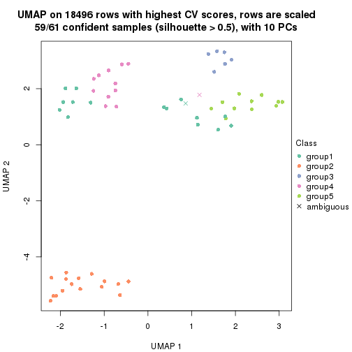
dimension_reduction(res, k = 6, method = "UMAP")
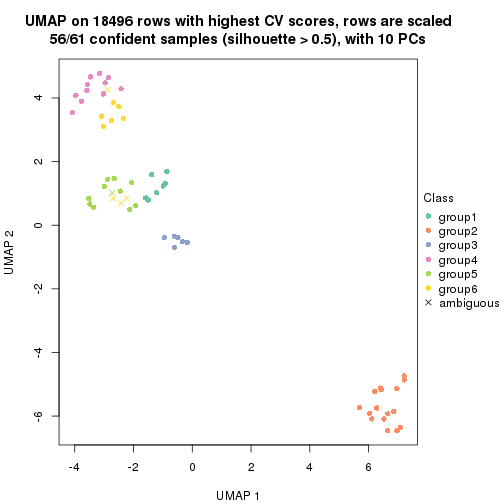
Following heatmap shows how subgroups are split when increasing k:
collect_classes(res)
Test correlation between subgroups and known annotations. If the known annotation is numeric, one-way ANOVA test is applied, and if the known annotation is discrete, chi-squared contingency table test is applied.
test_to_known_factors(res)
#> n cell.type(p) tissue(p) k
#> CV:skmeans 61 1.79e-12 4.63e-04 2
#> CV:skmeans 60 3.32e-22 3.23e-06 3
#> CV:skmeans 56 6.59e-19 1.51e-08 4
#> CV:skmeans 59 1.22e-19 9.95e-10 5
#> CV:skmeans 56 1.85e-20 5.11e-13 6
If matrix rows can be associated to genes, consider to use GO_Enrichment(res,
...) to perform function enrichment for the signature genes.
The object with results only for a single top-value method and a single partition method can be extracted as:
res = res_list["CV", "pam"]
# you can also extract it by
# res = res_list["CV:pam"]
A summary of res and all the functions that can be applied to it:
res
#> A 'ConsensusPartition' object with k = 2, 3, 4, 5, 6.
#> On a matrix with 18496 rows and 61 columns.
#> Top rows (1000, 2000, 3000, 4000, 5000) are extracted by 'CV' method.
#> Subgroups are detected by 'pam' method.
#> Performed in total 1250 partitions by row resampling.
#> Best k for subgroups seems to be 5.
#>
#> Following methods can be applied to this 'ConsensusPartition' object:
#> [1] "cola_report" "collect_classes" "collect_plots"
#> [4] "collect_stats" "colnames" "compare_signatures"
#> [7] "consensus_heatmap" "dimension_reduction" "functional_enrichment"
#> [10] "get_anno_col" "get_anno" "get_classes"
#> [13] "get_consensus" "get_matrix" "get_membership"
#> [16] "get_param" "get_signatures" "get_stats"
#> [19] "is_best_k" "is_stable_k" "membership_heatmap"
#> [22] "ncol" "nrow" "plot_ecdf"
#> [25] "rownames" "select_partition_number" "show"
#> [28] "suggest_best_k" "test_to_known_factors"
collect_plots() function collects all the plots made from res for all k (number of partitions)
into one single page to provide an easy and fast comparison between different k.
collect_plots(res)
The plots are:
k and the heatmap of
predicted classes for each k.k.k.k.All the plots in panels can be made by individual functions and they are plotted later in this section.
select_partition_number() produces several plots showing different
statistics for choosing “optimized” k. There are following statistics:
k;k, the area increased is defined as \(A_k - A_{k-1}\).The detailed explanations of these statistics can be found in the cola vignette.
Generally speaking, lower PAC score, higher mean silhouette score or higher
concordance corresponds to better partition. Rand index and Jaccard index
measure how similar the current partition is compared to partition with k-1.
If they are too similar, we won't accept k is better than k-1.
select_partition_number(res)
The numeric values for all these statistics can be obtained by get_stats().
get_stats(res)
#> k 1-PAC mean_silhouette concordance area_increased Rand Jaccard
#> 2 2 1.000 0.991 0.996 0.3979 0.607 0.607
#> 3 3 1.000 0.991 0.996 0.3082 0.872 0.789
#> 4 4 0.984 0.928 0.972 0.3665 0.815 0.614
#> 5 5 0.946 0.890 0.957 0.1065 0.901 0.671
#> 6 6 0.917 0.853 0.920 0.0198 0.996 0.979
suggest_best_k() suggests the best \(k\) based on these statistics. The rules are as follows:
NA.suggest_best_k(res)
#> [1] 5
#> attr(,"optional")
#> [1] 2 3 4
There is also optional best \(k\) = 2 3 4 that is worth to check.
Following shows the table of the partitions (You need to click the show/hide
code output link to see it). The membership matrix (columns with name p*)
is inferred by
clue::cl_consensus()
function with the SE method. Basically the value in the membership matrix
represents the probability to belong to a certain group. The finall class
label for an item is determined with the group with highest probability it
belongs to.
In get_classes() function, the entropy is calculated from the membership
matrix and the silhouette score is calculated from the consensus matrix.
cbind(get_classes(res, k = 2), get_membership(res, k = 2))
#> class entropy silhouette p1 p2
#> GSM72644 2 0.000 1.000 0.000 1.000
#> GSM72647 2 0.000 1.000 0.000 1.000
#> GSM72657 2 0.000 1.000 0.000 1.000
#> GSM72658 2 0.000 1.000 0.000 1.000
#> GSM72659 2 0.000 1.000 0.000 1.000
#> GSM72660 2 0.000 1.000 0.000 1.000
#> GSM72683 2 0.000 1.000 0.000 1.000
#> GSM72684 2 0.000 1.000 0.000 1.000
#> GSM72686 2 0.000 1.000 0.000 1.000
#> GSM72687 2 0.000 1.000 0.000 1.000
#> GSM72688 2 0.000 1.000 0.000 1.000
#> GSM72689 2 0.000 1.000 0.000 1.000
#> GSM72690 2 0.000 1.000 0.000 1.000
#> GSM72691 2 0.000 1.000 0.000 1.000
#> GSM72692 2 0.000 1.000 0.000 1.000
#> GSM72693 2 0.000 1.000 0.000 1.000
#> GSM72645 1 0.000 0.994 1.000 0.000
#> GSM72646 1 0.000 0.994 1.000 0.000
#> GSM72678 1 0.000 0.994 1.000 0.000
#> GSM72679 1 0.000 0.994 1.000 0.000
#> GSM72699 1 0.000 0.994 1.000 0.000
#> GSM72700 1 0.000 0.994 1.000 0.000
#> GSM72654 1 0.000 0.994 1.000 0.000
#> GSM72655 1 0.000 0.994 1.000 0.000
#> GSM72661 1 0.000 0.994 1.000 0.000
#> GSM72662 1 0.000 0.994 1.000 0.000
#> GSM72663 1 0.000 0.994 1.000 0.000
#> GSM72665 1 0.000 0.994 1.000 0.000
#> GSM72666 1 0.000 0.994 1.000 0.000
#> GSM72640 1 0.000 0.994 1.000 0.000
#> GSM72641 1 0.000 0.994 1.000 0.000
#> GSM72642 1 0.000 0.994 1.000 0.000
#> GSM72643 1 0.000 0.994 1.000 0.000
#> GSM72651 1 0.000 0.994 1.000 0.000
#> GSM72652 1 0.000 0.994 1.000 0.000
#> GSM72653 1 0.000 0.994 1.000 0.000
#> GSM72656 1 0.000 0.994 1.000 0.000
#> GSM72667 1 0.000 0.994 1.000 0.000
#> GSM72668 1 0.000 0.994 1.000 0.000
#> GSM72669 1 0.456 0.897 0.904 0.096
#> GSM72670 1 0.000 0.994 1.000 0.000
#> GSM72671 1 0.000 0.994 1.000 0.000
#> GSM72672 1 0.000 0.994 1.000 0.000
#> GSM72696 1 0.000 0.994 1.000 0.000
#> GSM72697 1 0.000 0.994 1.000 0.000
#> GSM72674 1 0.000 0.994 1.000 0.000
#> GSM72675 1 0.000 0.994 1.000 0.000
#> GSM72676 1 0.000 0.994 1.000 0.000
#> GSM72677 1 0.000 0.994 1.000 0.000
#> GSM72680 1 0.000 0.994 1.000 0.000
#> GSM72682 1 0.000 0.994 1.000 0.000
#> GSM72685 1 0.000 0.994 1.000 0.000
#> GSM72694 1 0.000 0.994 1.000 0.000
#> GSM72695 1 0.000 0.994 1.000 0.000
#> GSM72698 1 0.000 0.994 1.000 0.000
#> GSM72648 1 0.000 0.994 1.000 0.000
#> GSM72649 1 0.563 0.853 0.868 0.132
#> GSM72650 1 0.224 0.961 0.964 0.036
#> GSM72664 1 0.000 0.994 1.000 0.000
#> GSM72673 1 0.000 0.994 1.000 0.000
#> GSM72681 1 0.000 0.994 1.000 0.000
cbind(get_classes(res, k = 3), get_membership(res, k = 3))
#> class entropy silhouette p1 p2 p3
#> GSM72644 2 0.0000 1.000 0.000 1.000 0.000
#> GSM72647 2 0.0000 1.000 0.000 1.000 0.000
#> GSM72657 2 0.0000 1.000 0.000 1.000 0.000
#> GSM72658 2 0.0000 1.000 0.000 1.000 0.000
#> GSM72659 2 0.0000 1.000 0.000 1.000 0.000
#> GSM72660 2 0.0000 1.000 0.000 1.000 0.000
#> GSM72683 2 0.0000 1.000 0.000 1.000 0.000
#> GSM72684 2 0.0000 1.000 0.000 1.000 0.000
#> GSM72686 2 0.0000 1.000 0.000 1.000 0.000
#> GSM72687 2 0.0000 1.000 0.000 1.000 0.000
#> GSM72688 2 0.0000 1.000 0.000 1.000 0.000
#> GSM72689 2 0.0000 1.000 0.000 1.000 0.000
#> GSM72690 2 0.0000 1.000 0.000 1.000 0.000
#> GSM72691 2 0.0000 1.000 0.000 1.000 0.000
#> GSM72692 2 0.0000 1.000 0.000 1.000 0.000
#> GSM72693 2 0.0000 1.000 0.000 1.000 0.000
#> GSM72645 3 0.0000 0.962 0.000 0.000 1.000
#> GSM72646 3 0.0000 0.962 0.000 0.000 1.000
#> GSM72678 3 0.3038 0.859 0.104 0.000 0.896
#> GSM72679 3 0.1163 0.946 0.028 0.000 0.972
#> GSM72699 3 0.0000 0.962 0.000 0.000 1.000
#> GSM72700 3 0.0000 0.962 0.000 0.000 1.000
#> GSM72654 1 0.0000 0.997 1.000 0.000 0.000
#> GSM72655 1 0.0000 0.997 1.000 0.000 0.000
#> GSM72661 1 0.0000 0.997 1.000 0.000 0.000
#> GSM72662 1 0.0000 0.997 1.000 0.000 0.000
#> GSM72663 1 0.0000 0.997 1.000 0.000 0.000
#> GSM72665 1 0.0000 0.997 1.000 0.000 0.000
#> GSM72666 1 0.0000 0.997 1.000 0.000 0.000
#> GSM72640 1 0.0000 0.997 1.000 0.000 0.000
#> GSM72641 1 0.0000 0.997 1.000 0.000 0.000
#> GSM72642 1 0.0000 0.997 1.000 0.000 0.000
#> GSM72643 1 0.0000 0.997 1.000 0.000 0.000
#> GSM72651 1 0.0000 0.997 1.000 0.000 0.000
#> GSM72652 1 0.0000 0.997 1.000 0.000 0.000
#> GSM72653 1 0.0000 0.997 1.000 0.000 0.000
#> GSM72656 1 0.0000 0.997 1.000 0.000 0.000
#> GSM72667 1 0.0000 0.997 1.000 0.000 0.000
#> GSM72668 1 0.0000 0.997 1.000 0.000 0.000
#> GSM72669 1 0.1643 0.949 0.956 0.044 0.000
#> GSM72670 1 0.0000 0.997 1.000 0.000 0.000
#> GSM72671 1 0.0000 0.997 1.000 0.000 0.000
#> GSM72672 1 0.0000 0.997 1.000 0.000 0.000
#> GSM72696 1 0.0000 0.997 1.000 0.000 0.000
#> GSM72697 1 0.0000 0.997 1.000 0.000 0.000
#> GSM72674 1 0.0000 0.997 1.000 0.000 0.000
#> GSM72675 1 0.0000 0.997 1.000 0.000 0.000
#> GSM72676 1 0.0000 0.997 1.000 0.000 0.000
#> GSM72677 1 0.0000 0.997 1.000 0.000 0.000
#> GSM72680 1 0.0000 0.997 1.000 0.000 0.000
#> GSM72682 1 0.0000 0.997 1.000 0.000 0.000
#> GSM72685 1 0.0000 0.997 1.000 0.000 0.000
#> GSM72694 1 0.0000 0.997 1.000 0.000 0.000
#> GSM72695 1 0.0000 0.997 1.000 0.000 0.000
#> GSM72698 1 0.0000 0.997 1.000 0.000 0.000
#> GSM72648 1 0.0000 0.997 1.000 0.000 0.000
#> GSM72649 1 0.1964 0.935 0.944 0.056 0.000
#> GSM72650 1 0.0237 0.993 0.996 0.004 0.000
#> GSM72664 1 0.0000 0.997 1.000 0.000 0.000
#> GSM72673 1 0.0000 0.997 1.000 0.000 0.000
#> GSM72681 1 0.0000 0.997 1.000 0.000 0.000
cbind(get_classes(res, k = 4), get_membership(res, k = 4))
#> class entropy silhouette p1 p2 p3 p4
#> GSM72644 2 0.0000 1.000 0.000 1 0.000 0.000
#> GSM72647 2 0.0000 1.000 0.000 1 0.000 0.000
#> GSM72657 2 0.0000 1.000 0.000 1 0.000 0.000
#> GSM72658 2 0.0000 1.000 0.000 1 0.000 0.000
#> GSM72659 2 0.0000 1.000 0.000 1 0.000 0.000
#> GSM72660 2 0.0000 1.000 0.000 1 0.000 0.000
#> GSM72683 2 0.0000 1.000 0.000 1 0.000 0.000
#> GSM72684 2 0.0000 1.000 0.000 1 0.000 0.000
#> GSM72686 2 0.0000 1.000 0.000 1 0.000 0.000
#> GSM72687 2 0.0000 1.000 0.000 1 0.000 0.000
#> GSM72688 2 0.0000 1.000 0.000 1 0.000 0.000
#> GSM72689 2 0.0000 1.000 0.000 1 0.000 0.000
#> GSM72690 2 0.0000 1.000 0.000 1 0.000 0.000
#> GSM72691 2 0.0000 1.000 0.000 1 0.000 0.000
#> GSM72692 2 0.0000 1.000 0.000 1 0.000 0.000
#> GSM72693 2 0.0000 1.000 0.000 1 0.000 0.000
#> GSM72645 3 0.0000 0.930 0.000 0 1.000 0.000
#> GSM72646 3 0.0000 0.930 0.000 0 1.000 0.000
#> GSM72678 3 0.3486 0.785 0.000 0 0.812 0.188
#> GSM72679 3 0.2216 0.881 0.000 0 0.908 0.092
#> GSM72699 3 0.0000 0.930 0.000 0 1.000 0.000
#> GSM72700 3 0.0000 0.930 0.000 0 1.000 0.000
#> GSM72654 1 0.0000 0.996 1.000 0 0.000 0.000
#> GSM72655 1 0.0000 0.996 1.000 0 0.000 0.000
#> GSM72661 4 0.0188 0.934 0.004 0 0.000 0.996
#> GSM72662 4 0.0000 0.933 0.000 0 0.000 1.000
#> GSM72663 4 0.0000 0.933 0.000 0 0.000 1.000
#> GSM72665 4 0.0336 0.933 0.008 0 0.000 0.992
#> GSM72666 4 0.0336 0.933 0.008 0 0.000 0.992
#> GSM72640 4 0.4933 0.261 0.432 0 0.000 0.568
#> GSM72641 4 0.0188 0.934 0.004 0 0.000 0.996
#> GSM72642 1 0.0188 0.993 0.996 0 0.000 0.004
#> GSM72643 1 0.0336 0.990 0.992 0 0.000 0.008
#> GSM72651 4 0.0336 0.933 0.008 0 0.000 0.992
#> GSM72652 4 0.0188 0.934 0.004 0 0.000 0.996
#> GSM72653 4 0.0336 0.933 0.008 0 0.000 0.992
#> GSM72656 4 0.0336 0.933 0.008 0 0.000 0.992
#> GSM72667 1 0.0188 0.994 0.996 0 0.000 0.004
#> GSM72668 1 0.0188 0.994 0.996 0 0.000 0.004
#> GSM72669 1 0.0188 0.994 0.996 0 0.000 0.004
#> GSM72670 1 0.0000 0.996 1.000 0 0.000 0.000
#> GSM72671 1 0.0000 0.996 1.000 0 0.000 0.000
#> GSM72672 4 0.0336 0.933 0.008 0 0.000 0.992
#> GSM72696 4 0.0188 0.933 0.004 0 0.000 0.996
#> GSM72697 4 0.0188 0.933 0.004 0 0.000 0.996
#> GSM72674 4 0.0188 0.933 0.004 0 0.000 0.996
#> GSM72675 4 0.0188 0.933 0.004 0 0.000 0.996
#> GSM72676 4 0.0188 0.933 0.004 0 0.000 0.996
#> GSM72677 4 0.0188 0.933 0.004 0 0.000 0.996
#> GSM72680 4 0.0336 0.933 0.008 0 0.000 0.992
#> GSM72682 4 0.0188 0.933 0.004 0 0.000 0.996
#> GSM72685 4 0.4967 0.226 0.452 0 0.000 0.548
#> GSM72694 4 0.4855 0.360 0.400 0 0.000 0.600
#> GSM72695 4 0.0188 0.933 0.004 0 0.000 0.996
#> GSM72698 4 0.0336 0.931 0.008 0 0.000 0.992
#> GSM72648 1 0.0188 0.994 0.996 0 0.000 0.004
#> GSM72649 1 0.0000 0.996 1.000 0 0.000 0.000
#> GSM72650 1 0.0000 0.996 1.000 0 0.000 0.000
#> GSM72664 4 0.0336 0.933 0.008 0 0.000 0.992
#> GSM72673 1 0.0336 0.990 0.992 0 0.000 0.008
#> GSM72681 4 0.0188 0.933 0.004 0 0.000 0.996
cbind(get_classes(res, k = 5), get_membership(res, k = 5))
#> class entropy silhouette p1 p2 p3 p4 p5
#> GSM72644 2 0.0000 1.000 0.000 1 0.000 0.000 0.000
#> GSM72647 2 0.0000 1.000 0.000 1 0.000 0.000 0.000
#> GSM72657 2 0.0000 1.000 0.000 1 0.000 0.000 0.000
#> GSM72658 2 0.0000 1.000 0.000 1 0.000 0.000 0.000
#> GSM72659 2 0.0000 1.000 0.000 1 0.000 0.000 0.000
#> GSM72660 2 0.0000 1.000 0.000 1 0.000 0.000 0.000
#> GSM72683 2 0.0000 1.000 0.000 1 0.000 0.000 0.000
#> GSM72684 2 0.0000 1.000 0.000 1 0.000 0.000 0.000
#> GSM72686 2 0.0000 1.000 0.000 1 0.000 0.000 0.000
#> GSM72687 2 0.0000 1.000 0.000 1 0.000 0.000 0.000
#> GSM72688 2 0.0000 1.000 0.000 1 0.000 0.000 0.000
#> GSM72689 2 0.0000 1.000 0.000 1 0.000 0.000 0.000
#> GSM72690 2 0.0000 1.000 0.000 1 0.000 0.000 0.000
#> GSM72691 2 0.0000 1.000 0.000 1 0.000 0.000 0.000
#> GSM72692 2 0.0000 1.000 0.000 1 0.000 0.000 0.000
#> GSM72693 2 0.0000 1.000 0.000 1 0.000 0.000 0.000
#> GSM72645 3 0.0000 0.928 0.000 0 1.000 0.000 0.000
#> GSM72646 3 0.0000 0.928 0.000 0 1.000 0.000 0.000
#> GSM72678 3 0.3003 0.775 0.188 0 0.812 0.000 0.000
#> GSM72679 3 0.1965 0.872 0.096 0 0.904 0.000 0.000
#> GSM72699 3 0.0000 0.928 0.000 0 1.000 0.000 0.000
#> GSM72700 3 0.0000 0.928 0.000 0 1.000 0.000 0.000
#> GSM72654 5 0.0000 0.993 0.000 0 0.000 0.000 1.000
#> GSM72655 5 0.0000 0.993 0.000 0 0.000 0.000 1.000
#> GSM72661 1 0.0162 0.896 0.996 0 0.000 0.004 0.000
#> GSM72662 1 0.0162 0.896 0.996 0 0.000 0.004 0.000
#> GSM72663 1 0.0162 0.896 0.996 0 0.000 0.004 0.000
#> GSM72665 1 0.0162 0.895 0.996 0 0.000 0.000 0.004
#> GSM72666 1 0.0162 0.895 0.996 0 0.000 0.000 0.004
#> GSM72640 1 0.4249 0.234 0.568 0 0.000 0.000 0.432
#> GSM72641 1 0.0963 0.876 0.964 0 0.000 0.036 0.000
#> GSM72642 5 0.1410 0.929 0.000 0 0.000 0.060 0.940
#> GSM72643 4 0.0000 0.885 0.000 0 0.000 1.000 0.000
#> GSM72651 1 0.1270 0.865 0.948 0 0.000 0.052 0.000
#> GSM72652 1 0.0162 0.896 0.996 0 0.000 0.004 0.000
#> GSM72653 1 0.0000 0.896 1.000 0 0.000 0.000 0.000
#> GSM72656 1 0.0000 0.896 1.000 0 0.000 0.000 0.000
#> GSM72667 5 0.0000 0.993 0.000 0 0.000 0.000 1.000
#> GSM72668 5 0.0000 0.993 0.000 0 0.000 0.000 1.000
#> GSM72669 5 0.0000 0.993 0.000 0 0.000 0.000 1.000
#> GSM72670 5 0.0000 0.993 0.000 0 0.000 0.000 1.000
#> GSM72671 5 0.0000 0.993 0.000 0 0.000 0.000 1.000
#> GSM72672 1 0.0000 0.896 1.000 0 0.000 0.000 0.000
#> GSM72696 1 0.3636 0.581 0.728 0 0.000 0.272 0.000
#> GSM72697 4 0.4101 0.404 0.372 0 0.000 0.628 0.000
#> GSM72674 4 0.0000 0.885 0.000 0 0.000 1.000 0.000
#> GSM72675 4 0.0000 0.885 0.000 0 0.000 1.000 0.000
#> GSM72676 4 0.0000 0.885 0.000 0 0.000 1.000 0.000
#> GSM72677 1 0.3305 0.652 0.776 0 0.000 0.224 0.000
#> GSM72680 1 0.0000 0.896 1.000 0 0.000 0.000 0.000
#> GSM72682 4 0.4310 0.362 0.392 0 0.000 0.604 0.004
#> GSM72685 1 0.4273 0.238 0.552 0 0.000 0.000 0.448
#> GSM72694 4 0.0000 0.885 0.000 0 0.000 1.000 0.000
#> GSM72695 4 0.0000 0.885 0.000 0 0.000 1.000 0.000
#> GSM72698 4 0.0000 0.885 0.000 0 0.000 1.000 0.000
#> GSM72648 5 0.0000 0.993 0.000 0 0.000 0.000 1.000
#> GSM72649 5 0.0000 0.993 0.000 0 0.000 0.000 1.000
#> GSM72650 5 0.0000 0.993 0.000 0 0.000 0.000 1.000
#> GSM72664 1 0.0000 0.896 1.000 0 0.000 0.000 0.000
#> GSM72673 4 0.0000 0.885 0.000 0 0.000 1.000 0.000
#> GSM72681 1 0.0000 0.896 1.000 0 0.000 0.000 0.000
cbind(get_classes(res, k = 6), get_membership(res, k = 6))
#> class entropy silhouette p1 p2 p3 p4 p5 p6
#> GSM72644 2 0.3499 0.764 0.000 0.68 0.00 0.000 0.000 0.32
#> GSM72647 2 0.3499 0.764 0.000 0.68 0.00 0.000 0.000 0.32
#> GSM72657 2 0.0000 0.869 0.000 1.00 0.00 0.000 0.000 0.00
#> GSM72658 2 0.0000 0.869 0.000 1.00 0.00 0.000 0.000 0.00
#> GSM72659 2 0.0000 0.869 0.000 1.00 0.00 0.000 0.000 0.00
#> GSM72660 2 0.0000 0.869 0.000 1.00 0.00 0.000 0.000 0.00
#> GSM72683 2 0.3499 0.764 0.000 0.68 0.00 0.000 0.000 0.32
#> GSM72684 2 0.3499 0.764 0.000 0.68 0.00 0.000 0.000 0.32
#> GSM72686 2 0.0000 0.869 0.000 1.00 0.00 0.000 0.000 0.00
#> GSM72687 2 0.0000 0.869 0.000 1.00 0.00 0.000 0.000 0.00
#> GSM72688 2 0.0000 0.869 0.000 1.00 0.00 0.000 0.000 0.00
#> GSM72689 2 0.0000 0.869 0.000 1.00 0.00 0.000 0.000 0.00
#> GSM72690 2 0.0000 0.869 0.000 1.00 0.00 0.000 0.000 0.00
#> GSM72691 2 0.0000 0.869 0.000 1.00 0.00 0.000 0.000 0.00
#> GSM72692 2 0.3499 0.764 0.000 0.68 0.00 0.000 0.000 0.32
#> GSM72693 2 0.3499 0.764 0.000 0.68 0.00 0.000 0.000 0.32
#> GSM72645 3 0.0000 1.000 0.000 0.00 1.00 0.000 0.000 0.00
#> GSM72646 3 0.0000 1.000 0.000 0.00 1.00 0.000 0.000 0.00
#> GSM72678 6 0.3499 1.000 0.000 0.00 0.32 0.000 0.000 0.68
#> GSM72679 6 0.3499 1.000 0.000 0.00 0.32 0.000 0.000 0.68
#> GSM72699 3 0.0000 1.000 0.000 0.00 1.00 0.000 0.000 0.00
#> GSM72700 3 0.0000 1.000 0.000 0.00 1.00 0.000 0.000 0.00
#> GSM72654 5 0.0000 0.992 0.000 0.00 0.00 0.000 1.000 0.00
#> GSM72655 5 0.0000 0.992 0.000 0.00 0.00 0.000 1.000 0.00
#> GSM72661 1 0.0146 0.894 0.996 0.00 0.00 0.004 0.000 0.00
#> GSM72662 1 0.0146 0.894 0.996 0.00 0.00 0.004 0.000 0.00
#> GSM72663 1 0.0146 0.894 0.996 0.00 0.00 0.004 0.000 0.00
#> GSM72665 1 0.0146 0.893 0.996 0.00 0.00 0.000 0.004 0.00
#> GSM72666 1 0.0146 0.893 0.996 0.00 0.00 0.000 0.004 0.00
#> GSM72640 1 0.3817 0.238 0.568 0.00 0.00 0.000 0.432 0.00
#> GSM72641 1 0.0865 0.873 0.964 0.00 0.00 0.036 0.000 0.00
#> GSM72642 5 0.1267 0.921 0.000 0.00 0.00 0.060 0.940 0.00
#> GSM72643 4 0.0000 0.872 0.000 0.00 0.00 1.000 0.000 0.00
#> GSM72651 1 0.1141 0.863 0.948 0.00 0.00 0.052 0.000 0.00
#> GSM72652 1 0.0146 0.894 0.996 0.00 0.00 0.004 0.000 0.00
#> GSM72653 1 0.0000 0.894 1.000 0.00 0.00 0.000 0.000 0.00
#> GSM72656 1 0.0000 0.894 1.000 0.00 0.00 0.000 0.000 0.00
#> GSM72667 5 0.0000 0.992 0.000 0.00 0.00 0.000 1.000 0.00
#> GSM72668 5 0.0000 0.992 0.000 0.00 0.00 0.000 1.000 0.00
#> GSM72669 5 0.0000 0.992 0.000 0.00 0.00 0.000 1.000 0.00
#> GSM72670 5 0.0000 0.992 0.000 0.00 0.00 0.000 1.000 0.00
#> GSM72671 5 0.0000 0.992 0.000 0.00 0.00 0.000 1.000 0.00
#> GSM72672 1 0.0000 0.894 1.000 0.00 0.00 0.000 0.000 0.00
#> GSM72696 1 0.3266 0.581 0.728 0.00 0.00 0.272 0.000 0.00
#> GSM72697 4 0.3684 0.406 0.372 0.00 0.00 0.628 0.000 0.00
#> GSM72674 4 0.0000 0.872 0.000 0.00 0.00 1.000 0.000 0.00
#> GSM72675 4 0.0000 0.872 0.000 0.00 0.00 1.000 0.000 0.00
#> GSM72676 4 0.0000 0.872 0.000 0.00 0.00 1.000 0.000 0.00
#> GSM72677 1 0.2969 0.652 0.776 0.00 0.00 0.224 0.000 0.00
#> GSM72680 1 0.0000 0.894 1.000 0.00 0.00 0.000 0.000 0.00
#> GSM72682 4 0.3872 0.365 0.392 0.00 0.00 0.604 0.004 0.00
#> GSM72685 1 0.3838 0.236 0.552 0.00 0.00 0.000 0.448 0.00
#> GSM72694 4 0.0000 0.872 0.000 0.00 0.00 1.000 0.000 0.00
#> GSM72695 4 0.0000 0.872 0.000 0.00 0.00 1.000 0.000 0.00
#> GSM72698 4 0.0000 0.872 0.000 0.00 0.00 1.000 0.000 0.00
#> GSM72648 5 0.0000 0.992 0.000 0.00 0.00 0.000 1.000 0.00
#> GSM72649 5 0.0000 0.992 0.000 0.00 0.00 0.000 1.000 0.00
#> GSM72650 5 0.0000 0.992 0.000 0.00 0.00 0.000 1.000 0.00
#> GSM72664 1 0.0000 0.894 1.000 0.00 0.00 0.000 0.000 0.00
#> GSM72673 4 0.0000 0.872 0.000 0.00 0.00 1.000 0.000 0.00
#> GSM72681 1 0.0000 0.894 1.000 0.00 0.00 0.000 0.000 0.00
Heatmaps for the consensus matrix. It visualizes the probability of two samples to be in a same group.
consensus_heatmap(res, k = 2)
consensus_heatmap(res, k = 3)
consensus_heatmap(res, k = 4)
consensus_heatmap(res, k = 5)
consensus_heatmap(res, k = 6)
Heatmaps for the membership of samples in all partitions to see how consistent they are:
membership_heatmap(res, k = 2)
membership_heatmap(res, k = 3)
membership_heatmap(res, k = 4)
membership_heatmap(res, k = 5)
membership_heatmap(res, k = 6)
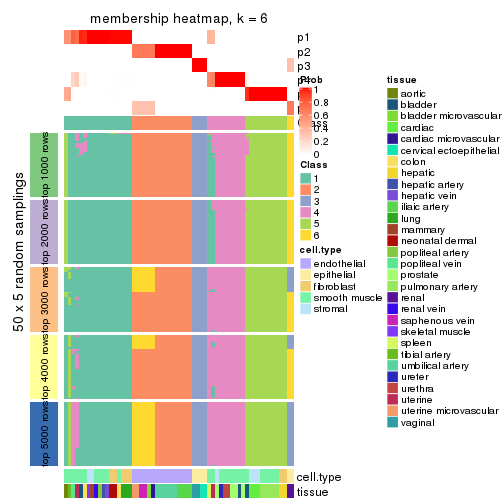
As soon as we have had the classes for columns, we can look for signatures which are significantly different between classes which can be candidate marks for certain classes. Following are the heatmaps for signatures.
Signature heatmaps where rows are scaled:
get_signatures(res, k = 2)
get_signatures(res, k = 3)
get_signatures(res, k = 4)
get_signatures(res, k = 5)
get_signatures(res, k = 6)
Signature heatmaps where rows are not scaled:
get_signatures(res, k = 2, scale_rows = FALSE)
get_signatures(res, k = 3, scale_rows = FALSE)
get_signatures(res, k = 4, scale_rows = FALSE)
get_signatures(res, k = 5, scale_rows = FALSE)
get_signatures(res, k = 6, scale_rows = FALSE)
Compare the overlap of signatures from different k:
compare_signatures(res)
get_signature() returns a data frame invisibly. TO get the list of signatures, the function
call should be assigned to a variable explicitly. In following code, if plot argument is set
to FALSE, no heatmap is plotted while only the differential analysis is performed.
# code only for demonstration
tb = get_signature(res, k = ..., plot = FALSE)
An example of the output of tb is:
#> which_row fdr mean_1 mean_2 scaled_mean_1 scaled_mean_2 km
#> 1 38 0.042760348 8.373488 9.131774 -0.5533452 0.5164555 1
#> 2 40 0.018707592 7.106213 8.469186 -0.6173731 0.5762149 1
#> 3 55 0.019134737 10.221463 11.207825 -0.6159697 0.5749050 1
#> 4 59 0.006059896 5.921854 7.869574 -0.6899429 0.6439467 1
#> 5 60 0.018055526 8.928898 10.211722 -0.6204761 0.5791110 1
#> 6 98 0.009384629 15.714769 14.887706 0.6635654 -0.6193277 2
...
The columns in tb are:
which_row: row indices corresponding to the input matrix.fdr: FDR for the differential test. mean_x: The mean value in group x.scaled_mean_x: The mean value in group x after rows are scaled.km: Row groups if k-means clustering is applied to rows.UMAP plot which shows how samples are separated.
dimension_reduction(res, k = 2, method = "UMAP")
dimension_reduction(res, k = 3, method = "UMAP")
dimension_reduction(res, k = 4, method = "UMAP")
dimension_reduction(res, k = 5, method = "UMAP")
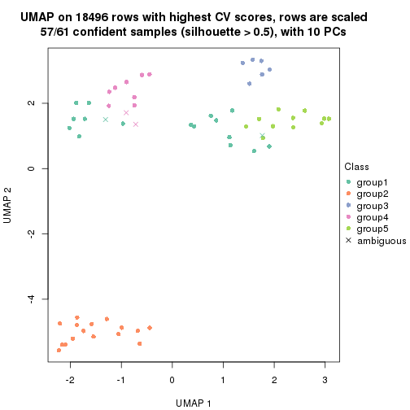
dimension_reduction(res, k = 6, method = "UMAP")
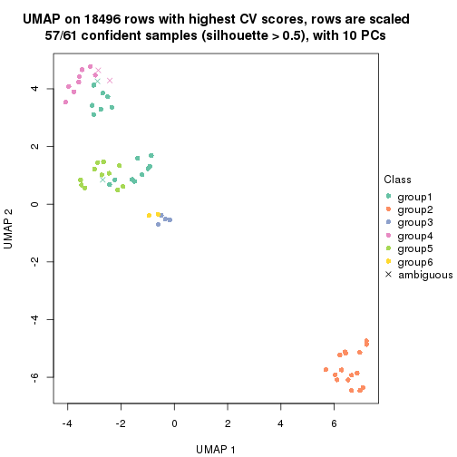
Following heatmap shows how subgroups are split when increasing k:
collect_classes(res)
Test correlation between subgroups and known annotations. If the known annotation is numeric, one-way ANOVA test is applied, and if the known annotation is discrete, chi-squared contingency table test is applied.
test_to_known_factors(res)
#> n cell.type(p) tissue(p) k
#> CV:pam 61 1.79e-12 4.63e-04 2
#> CV:pam 61 1.28e-22 1.86e-06 3
#> CV:pam 58 4.47e-20 1.38e-07 4
#> CV:pam 57 2.85e-18 5.20e-10 5
#> CV:pam 57 1.51e-16 2.33e-12 6
If matrix rows can be associated to genes, consider to use GO_Enrichment(res,
...) to perform function enrichment for the signature genes.
The object with results only for a single top-value method and a single partition method can be extracted as:
res = res_list["CV", "mclust"]
# you can also extract it by
# res = res_list["CV:mclust"]
A summary of res and all the functions that can be applied to it:
res
#> A 'ConsensusPartition' object with k = 2, 3, 4, 5, 6.
#> On a matrix with 18496 rows and 61 columns.
#> Top rows (1000, 2000, 3000, 4000, 5000) are extracted by 'CV' method.
#> Subgroups are detected by 'mclust' method.
#> Performed in total 1250 partitions by row resampling.
#> Best k for subgroups seems to be 3.
#>
#> Following methods can be applied to this 'ConsensusPartition' object:
#> [1] "cola_report" "collect_classes" "collect_plots"
#> [4] "collect_stats" "colnames" "compare_signatures"
#> [7] "consensus_heatmap" "dimension_reduction" "functional_enrichment"
#> [10] "get_anno_col" "get_anno" "get_classes"
#> [13] "get_consensus" "get_matrix" "get_membership"
#> [16] "get_param" "get_signatures" "get_stats"
#> [19] "is_best_k" "is_stable_k" "membership_heatmap"
#> [22] "ncol" "nrow" "plot_ecdf"
#> [25] "rownames" "select_partition_number" "show"
#> [28] "suggest_best_k" "test_to_known_factors"
collect_plots() function collects all the plots made from res for all k (number of partitions)
into one single page to provide an easy and fast comparison between different k.
collect_plots(res)
The plots are:
k and the heatmap of
predicted classes for each k.k.k.k.All the plots in panels can be made by individual functions and they are plotted later in this section.
select_partition_number() produces several plots showing different
statistics for choosing “optimized” k. There are following statistics:
k;k, the area increased is defined as \(A_k - A_{k-1}\).The detailed explanations of these statistics can be found in the cola vignette.
Generally speaking, lower PAC score, higher mean silhouette score or higher
concordance corresponds to better partition. Rand index and Jaccard index
measure how similar the current partition is compared to partition with k-1.
If they are too similar, we won't accept k is better than k-1.
select_partition_number(res)
The numeric values for all these statistics can be obtained by get_stats().
get_stats(res)
#> k 1-PAC mean_silhouette concordance area_increased Rand Jaccard
#> 2 2 0.339 0.825 0.795 0.3622 0.531 0.531
#> 3 3 1.000 1.000 1.000 0.4405 0.948 0.901
#> 4 4 0.801 0.823 0.915 0.3751 0.809 0.600
#> 5 5 0.738 0.750 0.819 0.0669 0.960 0.866
#> 6 6 0.760 0.789 0.817 0.0645 0.902 0.646
suggest_best_k() suggests the best \(k\) based on these statistics. The rules are as follows:
NA.suggest_best_k(res)
#> [1] 3
Following shows the table of the partitions (You need to click the show/hide
code output link to see it). The membership matrix (columns with name p*)
is inferred by
clue::cl_consensus()
function with the SE method. Basically the value in the membership matrix
represents the probability to belong to a certain group. The finall class
label for an item is determined with the group with highest probability it
belongs to.
In get_classes() function, the entropy is calculated from the membership
matrix and the silhouette score is calculated from the consensus matrix.
cbind(get_classes(res, k = 2), get_membership(res, k = 2))
#> class entropy silhouette p1 p2
#> GSM72644 2 0.9775 0.786 0.412 0.588
#> GSM72647 2 0.9775 0.786 0.412 0.588
#> GSM72657 2 0.9775 0.786 0.412 0.588
#> GSM72658 2 0.9775 0.786 0.412 0.588
#> GSM72659 2 0.9775 0.786 0.412 0.588
#> GSM72660 2 0.9775 0.786 0.412 0.588
#> GSM72683 2 0.9775 0.786 0.412 0.588
#> GSM72684 2 0.9775 0.786 0.412 0.588
#> GSM72686 2 0.9775 0.786 0.412 0.588
#> GSM72687 2 0.9775 0.786 0.412 0.588
#> GSM72688 2 0.9775 0.786 0.412 0.588
#> GSM72689 2 0.9775 0.786 0.412 0.588
#> GSM72690 2 0.9775 0.786 0.412 0.588
#> GSM72691 2 0.9775 0.786 0.412 0.588
#> GSM72692 2 0.9775 0.786 0.412 0.588
#> GSM72693 2 0.9775 0.786 0.412 0.588
#> GSM72645 2 0.8386 0.426 0.268 0.732
#> GSM72646 2 0.8386 0.426 0.268 0.732
#> GSM72678 2 0.8386 0.426 0.268 0.732
#> GSM72679 2 0.8386 0.426 0.268 0.732
#> GSM72699 2 0.8386 0.426 0.268 0.732
#> GSM72700 2 0.8386 0.426 0.268 0.732
#> GSM72654 1 0.0000 0.930 1.000 0.000
#> GSM72655 1 0.0000 0.930 1.000 0.000
#> GSM72661 1 0.1843 0.921 0.972 0.028
#> GSM72662 1 0.2423 0.914 0.960 0.040
#> GSM72663 1 0.2423 0.914 0.960 0.040
#> GSM72665 1 0.0938 0.927 0.988 0.012
#> GSM72666 1 0.1633 0.922 0.976 0.024
#> GSM72640 1 0.0000 0.930 1.000 0.000
#> GSM72641 1 0.0000 0.930 1.000 0.000
#> GSM72642 1 0.0000 0.930 1.000 0.000
#> GSM72643 1 0.5842 0.823 0.860 0.140
#> GSM72651 1 0.2423 0.914 0.960 0.040
#> GSM72652 1 0.2423 0.914 0.960 0.040
#> GSM72653 1 0.0000 0.930 1.000 0.000
#> GSM72656 1 0.0000 0.930 1.000 0.000
#> GSM72667 1 0.0000 0.930 1.000 0.000
#> GSM72668 1 0.0000 0.930 1.000 0.000
#> GSM72669 1 0.0000 0.930 1.000 0.000
#> GSM72670 1 0.0000 0.930 1.000 0.000
#> GSM72671 1 0.0000 0.930 1.000 0.000
#> GSM72672 1 0.0376 0.928 0.996 0.004
#> GSM72696 1 0.5408 0.840 0.876 0.124
#> GSM72697 1 0.4431 0.871 0.908 0.092
#> GSM72674 1 0.5842 0.823 0.860 0.140
#> GSM72675 1 0.5842 0.823 0.860 0.140
#> GSM72676 1 0.5842 0.823 0.860 0.140
#> GSM72677 1 0.0376 0.928 0.996 0.004
#> GSM72680 1 0.0000 0.930 1.000 0.000
#> GSM72682 1 0.0000 0.930 1.000 0.000
#> GSM72685 1 0.0000 0.930 1.000 0.000
#> GSM72694 1 0.5842 0.823 0.860 0.140
#> GSM72695 1 0.5842 0.823 0.860 0.140
#> GSM72698 1 0.5842 0.823 0.860 0.140
#> GSM72648 1 0.0000 0.930 1.000 0.000
#> GSM72649 1 0.0000 0.930 1.000 0.000
#> GSM72650 1 0.0000 0.930 1.000 0.000
#> GSM72664 1 0.0000 0.930 1.000 0.000
#> GSM72673 1 0.5842 0.823 0.860 0.140
#> GSM72681 1 0.0376 0.928 0.996 0.004
cbind(get_classes(res, k = 3), get_membership(res, k = 3))
#> class entropy silhouette p1 p2 p3
#> GSM72644 2 0 1 0 1 0
#> GSM72647 2 0 1 0 1 0
#> GSM72657 2 0 1 0 1 0
#> GSM72658 2 0 1 0 1 0
#> GSM72659 2 0 1 0 1 0
#> GSM72660 2 0 1 0 1 0
#> GSM72683 2 0 1 0 1 0
#> GSM72684 2 0 1 0 1 0
#> GSM72686 2 0 1 0 1 0
#> GSM72687 2 0 1 0 1 0
#> GSM72688 2 0 1 0 1 0
#> GSM72689 2 0 1 0 1 0
#> GSM72690 2 0 1 0 1 0
#> GSM72691 2 0 1 0 1 0
#> GSM72692 2 0 1 0 1 0
#> GSM72693 2 0 1 0 1 0
#> GSM72645 3 0 1 0 0 1
#> GSM72646 3 0 1 0 0 1
#> GSM72678 3 0 1 0 0 1
#> GSM72679 3 0 1 0 0 1
#> GSM72699 3 0 1 0 0 1
#> GSM72700 3 0 1 0 0 1
#> GSM72654 1 0 1 1 0 0
#> GSM72655 1 0 1 1 0 0
#> GSM72661 1 0 1 1 0 0
#> GSM72662 1 0 1 1 0 0
#> GSM72663 1 0 1 1 0 0
#> GSM72665 1 0 1 1 0 0
#> GSM72666 1 0 1 1 0 0
#> GSM72640 1 0 1 1 0 0
#> GSM72641 1 0 1 1 0 0
#> GSM72642 1 0 1 1 0 0
#> GSM72643 1 0 1 1 0 0
#> GSM72651 1 0 1 1 0 0
#> GSM72652 1 0 1 1 0 0
#> GSM72653 1 0 1 1 0 0
#> GSM72656 1 0 1 1 0 0
#> GSM72667 1 0 1 1 0 0
#> GSM72668 1 0 1 1 0 0
#> GSM72669 1 0 1 1 0 0
#> GSM72670 1 0 1 1 0 0
#> GSM72671 1 0 1 1 0 0
#> GSM72672 1 0 1 1 0 0
#> GSM72696 1 0 1 1 0 0
#> GSM72697 1 0 1 1 0 0
#> GSM72674 1 0 1 1 0 0
#> GSM72675 1 0 1 1 0 0
#> GSM72676 1 0 1 1 0 0
#> GSM72677 1 0 1 1 0 0
#> GSM72680 1 0 1 1 0 0
#> GSM72682 1 0 1 1 0 0
#> GSM72685 1 0 1 1 0 0
#> GSM72694 1 0 1 1 0 0
#> GSM72695 1 0 1 1 0 0
#> GSM72698 1 0 1 1 0 0
#> GSM72648 1 0 1 1 0 0
#> GSM72649 1 0 1 1 0 0
#> GSM72650 1 0 1 1 0 0
#> GSM72664 1 0 1 1 0 0
#> GSM72673 1 0 1 1 0 0
#> GSM72681 1 0 1 1 0 0
cbind(get_classes(res, k = 4), get_membership(res, k = 4))
#> class entropy silhouette p1 p2 p3 p4
#> GSM72644 2 0.0000 1.000 0.000 1 0 0.000
#> GSM72647 2 0.0000 1.000 0.000 1 0 0.000
#> GSM72657 2 0.0000 1.000 0.000 1 0 0.000
#> GSM72658 2 0.0000 1.000 0.000 1 0 0.000
#> GSM72659 2 0.0000 1.000 0.000 1 0 0.000
#> GSM72660 2 0.0000 1.000 0.000 1 0 0.000
#> GSM72683 2 0.0000 1.000 0.000 1 0 0.000
#> GSM72684 2 0.0000 1.000 0.000 1 0 0.000
#> GSM72686 2 0.0000 1.000 0.000 1 0 0.000
#> GSM72687 2 0.0000 1.000 0.000 1 0 0.000
#> GSM72688 2 0.0000 1.000 0.000 1 0 0.000
#> GSM72689 2 0.0000 1.000 0.000 1 0 0.000
#> GSM72690 2 0.0000 1.000 0.000 1 0 0.000
#> GSM72691 2 0.0000 1.000 0.000 1 0 0.000
#> GSM72692 2 0.0000 1.000 0.000 1 0 0.000
#> GSM72693 2 0.0000 1.000 0.000 1 0 0.000
#> GSM72645 3 0.0000 1.000 0.000 0 1 0.000
#> GSM72646 3 0.0000 1.000 0.000 0 1 0.000
#> GSM72678 3 0.0000 1.000 0.000 0 1 0.000
#> GSM72679 3 0.0000 1.000 0.000 0 1 0.000
#> GSM72699 3 0.0000 1.000 0.000 0 1 0.000
#> GSM72700 3 0.0000 1.000 0.000 0 1 0.000
#> GSM72654 1 0.0000 0.950 1.000 0 0 0.000
#> GSM72655 1 0.0000 0.950 1.000 0 0 0.000
#> GSM72661 4 0.1637 0.771 0.060 0 0 0.940
#> GSM72662 4 0.1211 0.776 0.040 0 0 0.960
#> GSM72663 4 0.1211 0.776 0.040 0 0 0.960
#> GSM72665 4 0.4972 0.186 0.456 0 0 0.544
#> GSM72666 4 0.4967 0.193 0.452 0 0 0.548
#> GSM72640 4 0.4855 0.480 0.400 0 0 0.600
#> GSM72641 1 0.3123 0.772 0.844 0 0 0.156
#> GSM72642 1 0.3123 0.775 0.844 0 0 0.156
#> GSM72643 4 0.4250 0.516 0.276 0 0 0.724
#> GSM72651 4 0.1302 0.776 0.044 0 0 0.956
#> GSM72652 4 0.1302 0.776 0.044 0 0 0.956
#> GSM72653 4 0.4948 0.412 0.440 0 0 0.560
#> GSM72656 4 0.4948 0.412 0.440 0 0 0.560
#> GSM72667 1 0.0000 0.950 1.000 0 0 0.000
#> GSM72668 1 0.0000 0.950 1.000 0 0 0.000
#> GSM72669 1 0.0000 0.950 1.000 0 0 0.000
#> GSM72670 1 0.0000 0.950 1.000 0 0 0.000
#> GSM72671 1 0.0000 0.950 1.000 0 0 0.000
#> GSM72672 4 0.4948 0.412 0.440 0 0 0.560
#> GSM72696 4 0.1118 0.777 0.036 0 0 0.964
#> GSM72697 4 0.1118 0.777 0.036 0 0 0.964
#> GSM72674 4 0.0000 0.766 0.000 0 0 1.000
#> GSM72675 4 0.0000 0.766 0.000 0 0 1.000
#> GSM72676 4 0.0000 0.766 0.000 0 0 1.000
#> GSM72677 4 0.4948 0.412 0.440 0 0 0.560
#> GSM72680 4 0.4941 0.420 0.436 0 0 0.564
#> GSM72682 4 0.3649 0.689 0.204 0 0 0.796
#> GSM72685 1 0.0921 0.930 0.972 0 0 0.028
#> GSM72694 4 0.0000 0.766 0.000 0 0 1.000
#> GSM72695 4 0.0000 0.766 0.000 0 0 1.000
#> GSM72698 4 0.0000 0.766 0.000 0 0 1.000
#> GSM72648 1 0.0000 0.950 1.000 0 0 0.000
#> GSM72649 1 0.0000 0.950 1.000 0 0 0.000
#> GSM72650 1 0.0000 0.950 1.000 0 0 0.000
#> GSM72664 1 0.2589 0.833 0.884 0 0 0.116
#> GSM72673 4 0.0188 0.768 0.004 0 0 0.996
#> GSM72681 4 0.4866 0.472 0.404 0 0 0.596
cbind(get_classes(res, k = 5), get_membership(res, k = 5))
#> class entropy silhouette p1 p2 p3 p4 p5
#> GSM72644 2 0.4304 0.663 0.000 0.516 0 0.000 NA
#> GSM72647 2 0.4304 0.663 0.000 0.516 0 0.000 NA
#> GSM72657 2 0.0000 0.815 0.000 1.000 0 0.000 NA
#> GSM72658 2 0.0000 0.815 0.000 1.000 0 0.000 NA
#> GSM72659 2 0.0000 0.815 0.000 1.000 0 0.000 NA
#> GSM72660 2 0.0000 0.815 0.000 1.000 0 0.000 NA
#> GSM72683 2 0.4304 0.663 0.000 0.516 0 0.000 NA
#> GSM72684 2 0.4304 0.663 0.000 0.516 0 0.000 NA
#> GSM72686 2 0.0000 0.815 0.000 1.000 0 0.000 NA
#> GSM72687 2 0.0000 0.815 0.000 1.000 0 0.000 NA
#> GSM72688 2 0.0000 0.815 0.000 1.000 0 0.000 NA
#> GSM72689 2 0.0000 0.815 0.000 1.000 0 0.000 NA
#> GSM72690 2 0.0000 0.815 0.000 1.000 0 0.000 NA
#> GSM72691 2 0.0000 0.815 0.000 1.000 0 0.000 NA
#> GSM72692 2 0.4304 0.663 0.000 0.516 0 0.000 NA
#> GSM72693 2 0.4304 0.663 0.000 0.516 0 0.000 NA
#> GSM72645 3 0.0000 1.000 0.000 0.000 1 0.000 NA
#> GSM72646 3 0.0000 1.000 0.000 0.000 1 0.000 NA
#> GSM72678 3 0.0000 1.000 0.000 0.000 1 0.000 NA
#> GSM72679 3 0.0000 1.000 0.000 0.000 1 0.000 NA
#> GSM72699 3 0.0000 1.000 0.000 0.000 1 0.000 NA
#> GSM72700 3 0.0000 1.000 0.000 0.000 1 0.000 NA
#> GSM72654 1 0.1478 0.867 0.936 0.000 0 0.000 NA
#> GSM72655 1 0.1544 0.867 0.932 0.000 0 0.000 NA
#> GSM72661 4 0.4123 0.719 0.108 0.000 0 0.788 NA
#> GSM72662 4 0.3336 0.735 0.060 0.000 0 0.844 NA
#> GSM72663 4 0.2797 0.739 0.060 0.000 0 0.880 NA
#> GSM72665 1 0.5915 0.362 0.552 0.000 0 0.324 NA
#> GSM72666 1 0.5915 0.362 0.552 0.000 0 0.324 NA
#> GSM72640 4 0.6103 0.539 0.300 0.000 0 0.544 NA
#> GSM72641 1 0.3432 0.787 0.828 0.000 0 0.040 NA
#> GSM72642 1 0.3476 0.781 0.836 0.000 0 0.076 NA
#> GSM72643 4 0.5059 0.576 0.176 0.000 0 0.700 NA
#> GSM72651 4 0.3226 0.737 0.060 0.000 0 0.852 NA
#> GSM72652 4 0.3464 0.734 0.068 0.000 0 0.836 NA
#> GSM72653 4 0.6636 0.465 0.312 0.000 0 0.444 NA
#> GSM72656 4 0.6623 0.462 0.320 0.000 0 0.444 NA
#> GSM72667 1 0.0609 0.873 0.980 0.000 0 0.000 NA
#> GSM72668 1 0.0794 0.869 0.972 0.000 0 0.000 NA
#> GSM72669 1 0.1478 0.873 0.936 0.000 0 0.000 NA
#> GSM72670 1 0.1270 0.870 0.948 0.000 0 0.000 NA
#> GSM72671 1 0.1270 0.870 0.948 0.000 0 0.000 NA
#> GSM72672 4 0.6623 0.462 0.320 0.000 0 0.444 NA
#> GSM72696 4 0.2260 0.744 0.064 0.000 0 0.908 NA
#> GSM72697 4 0.1041 0.746 0.032 0.000 0 0.964 NA
#> GSM72674 4 0.2377 0.734 0.000 0.000 0 0.872 NA
#> GSM72675 4 0.2377 0.734 0.000 0.000 0 0.872 NA
#> GSM72676 4 0.2329 0.735 0.000 0.000 0 0.876 NA
#> GSM72677 4 0.6623 0.462 0.320 0.000 0 0.444 NA
#> GSM72680 4 0.6612 0.472 0.308 0.000 0 0.452 NA
#> GSM72682 4 0.5480 0.657 0.168 0.000 0 0.656 NA
#> GSM72685 1 0.2280 0.827 0.880 0.000 0 0.000 NA
#> GSM72694 4 0.2329 0.735 0.000 0.000 0 0.876 NA
#> GSM72695 4 0.2329 0.735 0.000 0.000 0 0.876 NA
#> GSM72698 4 0.2377 0.734 0.000 0.000 0 0.872 NA
#> GSM72648 1 0.0794 0.875 0.972 0.000 0 0.000 NA
#> GSM72649 1 0.0510 0.875 0.984 0.000 0 0.000 NA
#> GSM72650 1 0.0290 0.875 0.992 0.000 0 0.000 NA
#> GSM72664 1 0.2624 0.820 0.872 0.000 0 0.012 NA
#> GSM72673 4 0.1197 0.739 0.000 0.000 0 0.952 NA
#> GSM72681 4 0.6365 0.555 0.252 0.000 0 0.520 NA
cbind(get_classes(res, k = 6), get_membership(res, k = 6))
#> class entropy silhouette p1 p2 p3 p4 p5 p6
#> GSM72644 5 0.3515 1.0000 0.000 0.324 0.000 0.000 0.676 0.000
#> GSM72647 5 0.3515 1.0000 0.000 0.324 0.000 0.000 0.676 0.000
#> GSM72657 2 0.0000 1.0000 0.000 1.000 0.000 0.000 0.000 0.000
#> GSM72658 2 0.0000 1.0000 0.000 1.000 0.000 0.000 0.000 0.000
#> GSM72659 2 0.0000 1.0000 0.000 1.000 0.000 0.000 0.000 0.000
#> GSM72660 2 0.0000 1.0000 0.000 1.000 0.000 0.000 0.000 0.000
#> GSM72683 5 0.3515 1.0000 0.000 0.324 0.000 0.000 0.676 0.000
#> GSM72684 5 0.3515 1.0000 0.000 0.324 0.000 0.000 0.676 0.000
#> GSM72686 2 0.0000 1.0000 0.000 1.000 0.000 0.000 0.000 0.000
#> GSM72687 2 0.0000 1.0000 0.000 1.000 0.000 0.000 0.000 0.000
#> GSM72688 2 0.0000 1.0000 0.000 1.000 0.000 0.000 0.000 0.000
#> GSM72689 2 0.0000 1.0000 0.000 1.000 0.000 0.000 0.000 0.000
#> GSM72690 2 0.0000 1.0000 0.000 1.000 0.000 0.000 0.000 0.000
#> GSM72691 2 0.0000 1.0000 0.000 1.000 0.000 0.000 0.000 0.000
#> GSM72692 5 0.3515 1.0000 0.000 0.324 0.000 0.000 0.676 0.000
#> GSM72693 5 0.3515 1.0000 0.000 0.324 0.000 0.000 0.676 0.000
#> GSM72645 3 0.0000 0.9865 0.000 0.000 1.000 0.000 0.000 0.000
#> GSM72646 3 0.0000 0.9865 0.000 0.000 1.000 0.000 0.000 0.000
#> GSM72678 3 0.1075 0.9727 0.000 0.000 0.952 0.000 0.048 0.000
#> GSM72679 3 0.1075 0.9727 0.000 0.000 0.952 0.000 0.048 0.000
#> GSM72699 3 0.0000 0.9865 0.000 0.000 1.000 0.000 0.000 0.000
#> GSM72700 3 0.0000 0.9865 0.000 0.000 1.000 0.000 0.000 0.000
#> GSM72654 1 0.0790 0.8169 0.968 0.000 0.000 0.000 0.000 0.032
#> GSM72655 1 0.1225 0.8153 0.952 0.000 0.000 0.000 0.012 0.036
#> GSM72661 4 0.6483 0.4170 0.036 0.000 0.000 0.440 0.188 0.336
#> GSM72662 4 0.5641 0.5555 0.004 0.000 0.000 0.536 0.160 0.300
#> GSM72663 4 0.5572 0.5678 0.004 0.000 0.000 0.552 0.156 0.288
#> GSM72665 1 0.6301 0.4857 0.580 0.000 0.000 0.100 0.184 0.136
#> GSM72666 1 0.6320 0.4852 0.580 0.000 0.000 0.104 0.176 0.140
#> GSM72640 6 0.5232 0.5806 0.316 0.000 0.000 0.084 0.012 0.588
#> GSM72641 1 0.3244 0.7044 0.732 0.000 0.000 0.000 0.000 0.268
#> GSM72642 1 0.4714 0.7212 0.724 0.000 0.000 0.024 0.116 0.136
#> GSM72643 6 0.5352 0.0685 0.072 0.000 0.000 0.380 0.016 0.532
#> GSM72651 4 0.5497 0.5525 0.012 0.000 0.000 0.556 0.108 0.324
#> GSM72652 4 0.5836 0.5140 0.008 0.000 0.000 0.504 0.164 0.324
#> GSM72653 6 0.2442 0.7448 0.144 0.000 0.000 0.004 0.000 0.852
#> GSM72656 6 0.2402 0.7461 0.140 0.000 0.000 0.004 0.000 0.856
#> GSM72667 1 0.2118 0.8162 0.888 0.000 0.000 0.000 0.008 0.104
#> GSM72668 1 0.2572 0.8028 0.852 0.000 0.000 0.000 0.012 0.136
#> GSM72669 1 0.1686 0.8238 0.924 0.000 0.000 0.000 0.012 0.064
#> GSM72670 1 0.0858 0.8178 0.968 0.000 0.000 0.000 0.004 0.028
#> GSM72671 1 0.1010 0.8242 0.960 0.000 0.000 0.000 0.004 0.036
#> GSM72672 6 0.2513 0.7473 0.140 0.000 0.000 0.008 0.000 0.852
#> GSM72696 4 0.3943 0.7047 0.008 0.000 0.000 0.776 0.076 0.140
#> GSM72697 4 0.3395 0.7117 0.004 0.000 0.000 0.816 0.056 0.124
#> GSM72674 4 0.1152 0.7106 0.000 0.000 0.000 0.952 0.044 0.004
#> GSM72675 4 0.1152 0.7106 0.000 0.000 0.000 0.952 0.044 0.004
#> GSM72676 4 0.1152 0.7106 0.000 0.000 0.000 0.952 0.044 0.004
#> GSM72677 6 0.2513 0.7473 0.140 0.000 0.000 0.008 0.000 0.852
#> GSM72680 6 0.5572 0.4969 0.188 0.000 0.000 0.268 0.000 0.544
#> GSM72682 4 0.6527 0.4670 0.144 0.000 0.000 0.532 0.088 0.236
#> GSM72685 1 0.3240 0.7320 0.752 0.000 0.000 0.000 0.004 0.244
#> GSM72694 4 0.0777 0.7239 0.000 0.000 0.000 0.972 0.004 0.024
#> GSM72695 4 0.0632 0.7167 0.000 0.000 0.000 0.976 0.024 0.000
#> GSM72698 4 0.1152 0.7106 0.000 0.000 0.000 0.952 0.044 0.004
#> GSM72648 1 0.0547 0.8250 0.980 0.000 0.000 0.000 0.000 0.020
#> GSM72649 1 0.1434 0.8274 0.940 0.000 0.000 0.000 0.012 0.048
#> GSM72650 1 0.1745 0.8255 0.920 0.000 0.000 0.000 0.012 0.068
#> GSM72664 1 0.3198 0.7104 0.740 0.000 0.000 0.000 0.000 0.260
#> GSM72673 4 0.2145 0.7216 0.000 0.000 0.000 0.900 0.028 0.072
#> GSM72681 6 0.5904 0.5675 0.156 0.000 0.000 0.212 0.040 0.592
Heatmaps for the consensus matrix. It visualizes the probability of two samples to be in a same group.
consensus_heatmap(res, k = 2)

consensus_heatmap(res, k = 3)
consensus_heatmap(res, k = 4)
consensus_heatmap(res, k = 5)
consensus_heatmap(res, k = 6)
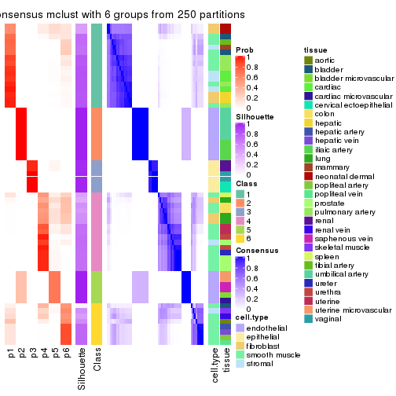
Heatmaps for the membership of samples in all partitions to see how consistent they are:
membership_heatmap(res, k = 2)
membership_heatmap(res, k = 3)
membership_heatmap(res, k = 4)
membership_heatmap(res, k = 5)
membership_heatmap(res, k = 6)
As soon as we have had the classes for columns, we can look for signatures which are significantly different between classes which can be candidate marks for certain classes. Following are the heatmaps for signatures.
Signature heatmaps where rows are scaled:
get_signatures(res, k = 2)
get_signatures(res, k = 3)
get_signatures(res, k = 4)
get_signatures(res, k = 5)
get_signatures(res, k = 6)
Signature heatmaps where rows are not scaled:
get_signatures(res, k = 2, scale_rows = FALSE)
get_signatures(res, k = 3, scale_rows = FALSE)
get_signatures(res, k = 4, scale_rows = FALSE)
get_signatures(res, k = 5, scale_rows = FALSE)
get_signatures(res, k = 6, scale_rows = FALSE)
Compare the overlap of signatures from different k:
compare_signatures(res)
get_signature() returns a data frame invisibly. TO get the list of signatures, the function
call should be assigned to a variable explicitly. In following code, if plot argument is set
to FALSE, no heatmap is plotted while only the differential analysis is performed.
# code only for demonstration
tb = get_signature(res, k = ..., plot = FALSE)
An example of the output of tb is:
#> which_row fdr mean_1 mean_2 scaled_mean_1 scaled_mean_2 km
#> 1 38 0.042760348 8.373488 9.131774 -0.5533452 0.5164555 1
#> 2 40 0.018707592 7.106213 8.469186 -0.6173731 0.5762149 1
#> 3 55 0.019134737 10.221463 11.207825 -0.6159697 0.5749050 1
#> 4 59 0.006059896 5.921854 7.869574 -0.6899429 0.6439467 1
#> 5 60 0.018055526 8.928898 10.211722 -0.6204761 0.5791110 1
#> 6 98 0.009384629 15.714769 14.887706 0.6635654 -0.6193277 2
...
The columns in tb are:
which_row: row indices corresponding to the input matrix.fdr: FDR for the differential test. mean_x: The mean value in group x.scaled_mean_x: The mean value in group x after rows are scaled.km: Row groups if k-means clustering is applied to rows.UMAP plot which shows how samples are separated.
dimension_reduction(res, k = 2, method = "UMAP")
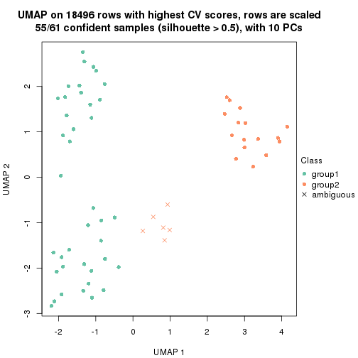
dimension_reduction(res, k = 3, method = "UMAP")

dimension_reduction(res, k = 4, method = "UMAP")
dimension_reduction(res, k = 5, method = "UMAP")
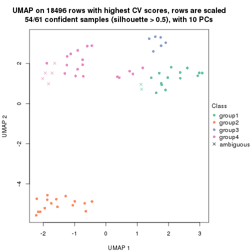
dimension_reduction(res, k = 6, method = "UMAP")
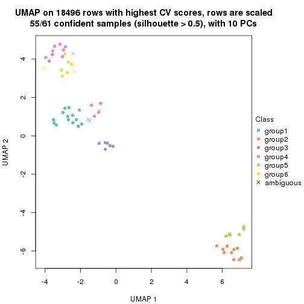
Following heatmap shows how subgroups are split when increasing k:
collect_classes(res)
Test correlation between subgroups and known annotations. If the known annotation is numeric, one-way ANOVA test is applied, and if the known annotation is discrete, chi-squared contingency table test is applied.
test_to_known_factors(res)
#> n cell.type(p) tissue(p) k
#> CV:mclust 55 6.87e-12 7.58e-04 2
#> CV:mclust 61 1.28e-22 1.86e-06 3
#> CV:mclust 52 1.11e-17 3.11e-09 4
#> CV:mclust 54 4.41e-18 7.31e-09 5
#> CV:mclust 55 2.23e-15 1.99e-12 6
If matrix rows can be associated to genes, consider to use GO_Enrichment(res,
...) to perform function enrichment for the signature genes.
The object with results only for a single top-value method and a single partition method can be extracted as:
res = res_list["CV", "NMF"]
# you can also extract it by
# res = res_list["CV:NMF"]
A summary of res and all the functions that can be applied to it:
res
#> A 'ConsensusPartition' object with k = 2, 3, 4, 5, 6.
#> On a matrix with 18496 rows and 61 columns.
#> Top rows (1000, 2000, 3000, 4000, 5000) are extracted by 'CV' method.
#> Subgroups are detected by 'NMF' method.
#> Performed in total 1250 partitions by row resampling.
#> Best k for subgroups seems to be 5.
#>
#> Following methods can be applied to this 'ConsensusPartition' object:
#> [1] "cola_report" "collect_classes" "collect_plots"
#> [4] "collect_stats" "colnames" "compare_signatures"
#> [7] "consensus_heatmap" "dimension_reduction" "functional_enrichment"
#> [10] "get_anno_col" "get_anno" "get_classes"
#> [13] "get_consensus" "get_matrix" "get_membership"
#> [16] "get_param" "get_signatures" "get_stats"
#> [19] "is_best_k" "is_stable_k" "membership_heatmap"
#> [22] "ncol" "nrow" "plot_ecdf"
#> [25] "rownames" "select_partition_number" "show"
#> [28] "suggest_best_k" "test_to_known_factors"
collect_plots() function collects all the plots made from res for all k (number of partitions)
into one single page to provide an easy and fast comparison between different k.
collect_plots(res)
The plots are:
k and the heatmap of
predicted classes for each k.k.k.k.All the plots in panels can be made by individual functions and they are plotted later in this section.
select_partition_number() produces several plots showing different
statistics for choosing “optimized” k. There are following statistics:
k;k, the area increased is defined as \(A_k - A_{k-1}\).The detailed explanations of these statistics can be found in the cola vignette.
Generally speaking, lower PAC score, higher mean silhouette score or higher
concordance corresponds to better partition. Rand index and Jaccard index
measure how similar the current partition is compared to partition with k-1.
If they are too similar, we won't accept k is better than k-1.
select_partition_number(res)
The numeric values for all these statistics can be obtained by get_stats().
get_stats(res)
#> k 1-PAC mean_silhouette concordance area_increased Rand Jaccard
#> 2 2 0.900 0.849 0.951 0.4323 0.564 0.564
#> 3 3 1.000 0.999 1.000 0.2076 0.905 0.833
#> 4 4 0.886 0.890 0.954 0.3916 0.799 0.580
#> 5 5 0.900 0.871 0.941 0.0868 0.887 0.619
#> 6 6 0.842 0.678 0.827 0.0382 0.912 0.624
suggest_best_k() suggests the best \(k\) based on these statistics. The rules are as follows:
NA.suggest_best_k(res)
#> [1] 5
#> attr(,"optional")
#> [1] 2 3
There is also optional best \(k\) = 2 3 that is worth to check.
Following shows the table of the partitions (You need to click the show/hide
code output link to see it). The membership matrix (columns with name p*)
is inferred by
clue::cl_consensus()
function with the SE method. Basically the value in the membership matrix
represents the probability to belong to a certain group. The finall class
label for an item is determined with the group with highest probability it
belongs to.
In get_classes() function, the entropy is calculated from the membership
matrix and the silhouette score is calculated from the consensus matrix.
cbind(get_classes(res, k = 2), get_membership(res, k = 2))
#> class entropy silhouette p1 p2
#> GSM72644 2 0.0000 0.9102 0.000 1.000
#> GSM72647 2 0.0000 0.9102 0.000 1.000
#> GSM72657 2 0.0000 0.9102 0.000 1.000
#> GSM72658 2 0.0000 0.9102 0.000 1.000
#> GSM72659 2 0.0000 0.9102 0.000 1.000
#> GSM72660 2 0.0000 0.9102 0.000 1.000
#> GSM72683 2 0.0000 0.9102 0.000 1.000
#> GSM72684 2 0.0000 0.9102 0.000 1.000
#> GSM72686 2 0.0000 0.9102 0.000 1.000
#> GSM72687 2 0.0000 0.9102 0.000 1.000
#> GSM72688 2 0.0000 0.9102 0.000 1.000
#> GSM72689 2 0.0000 0.9102 0.000 1.000
#> GSM72690 2 0.0000 0.9102 0.000 1.000
#> GSM72691 2 0.0000 0.9102 0.000 1.000
#> GSM72692 2 0.0000 0.9102 0.000 1.000
#> GSM72693 2 0.0000 0.9102 0.000 1.000
#> GSM72645 1 1.0000 -0.0996 0.504 0.496
#> GSM72646 2 1.0000 0.0424 0.500 0.500
#> GSM72678 2 0.9993 0.0958 0.484 0.516
#> GSM72679 1 0.9998 -0.0854 0.508 0.492
#> GSM72699 1 1.0000 -0.0996 0.504 0.496
#> GSM72700 2 1.0000 0.0424 0.500 0.500
#> GSM72654 1 0.0000 0.9578 1.000 0.000
#> GSM72655 1 0.0000 0.9578 1.000 0.000
#> GSM72661 1 0.0000 0.9578 1.000 0.000
#> GSM72662 1 0.0000 0.9578 1.000 0.000
#> GSM72663 1 0.0000 0.9578 1.000 0.000
#> GSM72665 1 0.0000 0.9578 1.000 0.000
#> GSM72666 1 0.0000 0.9578 1.000 0.000
#> GSM72640 1 0.0000 0.9578 1.000 0.000
#> GSM72641 1 0.0000 0.9578 1.000 0.000
#> GSM72642 1 0.0000 0.9578 1.000 0.000
#> GSM72643 1 0.0000 0.9578 1.000 0.000
#> GSM72651 1 0.0000 0.9578 1.000 0.000
#> GSM72652 1 0.0000 0.9578 1.000 0.000
#> GSM72653 1 0.0000 0.9578 1.000 0.000
#> GSM72656 1 0.0000 0.9578 1.000 0.000
#> GSM72667 1 0.0000 0.9578 1.000 0.000
#> GSM72668 1 0.0000 0.9578 1.000 0.000
#> GSM72669 1 0.1843 0.9292 0.972 0.028
#> GSM72670 1 0.0000 0.9578 1.000 0.000
#> GSM72671 1 0.0000 0.9578 1.000 0.000
#> GSM72672 1 0.0000 0.9578 1.000 0.000
#> GSM72696 1 0.0000 0.9578 1.000 0.000
#> GSM72697 1 0.0000 0.9578 1.000 0.000
#> GSM72674 1 0.0000 0.9578 1.000 0.000
#> GSM72675 1 0.0000 0.9578 1.000 0.000
#> GSM72676 1 0.0000 0.9578 1.000 0.000
#> GSM72677 1 0.0000 0.9578 1.000 0.000
#> GSM72680 1 0.0000 0.9578 1.000 0.000
#> GSM72682 1 0.0000 0.9578 1.000 0.000
#> GSM72685 1 0.0000 0.9578 1.000 0.000
#> GSM72694 1 0.0000 0.9578 1.000 0.000
#> GSM72695 1 0.0000 0.9578 1.000 0.000
#> GSM72698 1 0.0000 0.9578 1.000 0.000
#> GSM72648 1 0.0000 0.9578 1.000 0.000
#> GSM72649 1 0.0672 0.9501 0.992 0.008
#> GSM72650 1 0.0000 0.9578 1.000 0.000
#> GSM72664 1 0.0000 0.9578 1.000 0.000
#> GSM72673 1 0.0000 0.9578 1.000 0.000
#> GSM72681 1 0.0000 0.9578 1.000 0.000
cbind(get_classes(res, k = 3), get_membership(res, k = 3))
#> class entropy silhouette p1 p2 p3
#> GSM72644 2 0.0000 1.000 0.000 1.000 0
#> GSM72647 2 0.0000 1.000 0.000 1.000 0
#> GSM72657 2 0.0000 1.000 0.000 1.000 0
#> GSM72658 2 0.0000 1.000 0.000 1.000 0
#> GSM72659 2 0.0000 1.000 0.000 1.000 0
#> GSM72660 2 0.0000 1.000 0.000 1.000 0
#> GSM72683 2 0.0000 1.000 0.000 1.000 0
#> GSM72684 2 0.0000 1.000 0.000 1.000 0
#> GSM72686 2 0.0000 1.000 0.000 1.000 0
#> GSM72687 2 0.0000 1.000 0.000 1.000 0
#> GSM72688 2 0.0000 1.000 0.000 1.000 0
#> GSM72689 2 0.0000 1.000 0.000 1.000 0
#> GSM72690 2 0.0000 1.000 0.000 1.000 0
#> GSM72691 2 0.0000 1.000 0.000 1.000 0
#> GSM72692 2 0.0000 1.000 0.000 1.000 0
#> GSM72693 2 0.0000 1.000 0.000 1.000 0
#> GSM72645 3 0.0000 1.000 0.000 0.000 1
#> GSM72646 3 0.0000 1.000 0.000 0.000 1
#> GSM72678 3 0.0000 1.000 0.000 0.000 1
#> GSM72679 3 0.0000 1.000 0.000 0.000 1
#> GSM72699 3 0.0000 1.000 0.000 0.000 1
#> GSM72700 3 0.0000 1.000 0.000 0.000 1
#> GSM72654 1 0.0000 0.999 1.000 0.000 0
#> GSM72655 1 0.0000 0.999 1.000 0.000 0
#> GSM72661 1 0.0000 0.999 1.000 0.000 0
#> GSM72662 1 0.0000 0.999 1.000 0.000 0
#> GSM72663 1 0.0000 0.999 1.000 0.000 0
#> GSM72665 1 0.0000 0.999 1.000 0.000 0
#> GSM72666 1 0.0000 0.999 1.000 0.000 0
#> GSM72640 1 0.0000 0.999 1.000 0.000 0
#> GSM72641 1 0.0000 0.999 1.000 0.000 0
#> GSM72642 1 0.0000 0.999 1.000 0.000 0
#> GSM72643 1 0.0000 0.999 1.000 0.000 0
#> GSM72651 1 0.0000 0.999 1.000 0.000 0
#> GSM72652 1 0.0000 0.999 1.000 0.000 0
#> GSM72653 1 0.0000 0.999 1.000 0.000 0
#> GSM72656 1 0.0000 0.999 1.000 0.000 0
#> GSM72667 1 0.0000 0.999 1.000 0.000 0
#> GSM72668 1 0.0000 0.999 1.000 0.000 0
#> GSM72669 1 0.0592 0.987 0.988 0.012 0
#> GSM72670 1 0.0000 0.999 1.000 0.000 0
#> GSM72671 1 0.0000 0.999 1.000 0.000 0
#> GSM72672 1 0.0000 0.999 1.000 0.000 0
#> GSM72696 1 0.0000 0.999 1.000 0.000 0
#> GSM72697 1 0.0000 0.999 1.000 0.000 0
#> GSM72674 1 0.0000 0.999 1.000 0.000 0
#> GSM72675 1 0.0000 0.999 1.000 0.000 0
#> GSM72676 1 0.0000 0.999 1.000 0.000 0
#> GSM72677 1 0.0000 0.999 1.000 0.000 0
#> GSM72680 1 0.0000 0.999 1.000 0.000 0
#> GSM72682 1 0.0000 0.999 1.000 0.000 0
#> GSM72685 1 0.0000 0.999 1.000 0.000 0
#> GSM72694 1 0.0000 0.999 1.000 0.000 0
#> GSM72695 1 0.0000 0.999 1.000 0.000 0
#> GSM72698 1 0.0000 0.999 1.000 0.000 0
#> GSM72648 1 0.0000 0.999 1.000 0.000 0
#> GSM72649 1 0.0592 0.987 0.988 0.012 0
#> GSM72650 1 0.0000 0.999 1.000 0.000 0
#> GSM72664 1 0.0000 0.999 1.000 0.000 0
#> GSM72673 1 0.0000 0.999 1.000 0.000 0
#> GSM72681 1 0.0000 0.999 1.000 0.000 0
cbind(get_classes(res, k = 4), get_membership(res, k = 4))
#> class entropy silhouette p1 p2 p3 p4
#> GSM72644 2 0.0000 1.000 0.000 1.000 0 0.000
#> GSM72647 2 0.0000 1.000 0.000 1.000 0 0.000
#> GSM72657 2 0.0000 1.000 0.000 1.000 0 0.000
#> GSM72658 2 0.0000 1.000 0.000 1.000 0 0.000
#> GSM72659 2 0.0000 1.000 0.000 1.000 0 0.000
#> GSM72660 2 0.0000 1.000 0.000 1.000 0 0.000
#> GSM72683 2 0.0000 1.000 0.000 1.000 0 0.000
#> GSM72684 2 0.0000 1.000 0.000 1.000 0 0.000
#> GSM72686 2 0.0000 1.000 0.000 1.000 0 0.000
#> GSM72687 2 0.0000 1.000 0.000 1.000 0 0.000
#> GSM72688 2 0.0000 1.000 0.000 1.000 0 0.000
#> GSM72689 2 0.0000 1.000 0.000 1.000 0 0.000
#> GSM72690 2 0.0000 1.000 0.000 1.000 0 0.000
#> GSM72691 2 0.0000 1.000 0.000 1.000 0 0.000
#> GSM72692 2 0.0000 1.000 0.000 1.000 0 0.000
#> GSM72693 2 0.0000 1.000 0.000 1.000 0 0.000
#> GSM72645 3 0.0000 1.000 0.000 0.000 1 0.000
#> GSM72646 3 0.0000 1.000 0.000 0.000 1 0.000
#> GSM72678 3 0.0000 1.000 0.000 0.000 1 0.000
#> GSM72679 3 0.0000 1.000 0.000 0.000 1 0.000
#> GSM72699 3 0.0000 1.000 0.000 0.000 1 0.000
#> GSM72700 3 0.0000 1.000 0.000 0.000 1 0.000
#> GSM72654 1 0.0000 0.872 1.000 0.000 0 0.000
#> GSM72655 1 0.0000 0.872 1.000 0.000 0 0.000
#> GSM72661 4 0.3688 0.712 0.208 0.000 0 0.792
#> GSM72662 4 0.0000 0.961 0.000 0.000 0 1.000
#> GSM72663 4 0.0000 0.961 0.000 0.000 0 1.000
#> GSM72665 1 0.4624 0.460 0.660 0.000 0 0.340
#> GSM72666 1 0.4804 0.359 0.616 0.000 0 0.384
#> GSM72640 1 0.4624 0.549 0.660 0.000 0 0.340
#> GSM72641 1 0.0000 0.872 1.000 0.000 0 0.000
#> GSM72642 1 0.0000 0.872 1.000 0.000 0 0.000
#> GSM72643 4 0.0000 0.961 0.000 0.000 0 1.000
#> GSM72651 4 0.0188 0.957 0.004 0.000 0 0.996
#> GSM72652 4 0.4040 0.643 0.248 0.000 0 0.752
#> GSM72653 1 0.1022 0.857 0.968 0.000 0 0.032
#> GSM72656 1 0.2345 0.814 0.900 0.000 0 0.100
#> GSM72667 1 0.0000 0.872 1.000 0.000 0 0.000
#> GSM72668 1 0.0000 0.872 1.000 0.000 0 0.000
#> GSM72669 1 0.0000 0.872 1.000 0.000 0 0.000
#> GSM72670 1 0.0000 0.872 1.000 0.000 0 0.000
#> GSM72671 1 0.0000 0.872 1.000 0.000 0 0.000
#> GSM72672 1 0.4624 0.551 0.660 0.000 0 0.340
#> GSM72696 4 0.0000 0.961 0.000 0.000 0 1.000
#> GSM72697 4 0.0000 0.961 0.000 0.000 0 1.000
#> GSM72674 4 0.0000 0.961 0.000 0.000 0 1.000
#> GSM72675 4 0.0000 0.961 0.000 0.000 0 1.000
#> GSM72676 4 0.0000 0.961 0.000 0.000 0 1.000
#> GSM72677 1 0.4961 0.321 0.552 0.000 0 0.448
#> GSM72680 1 0.0469 0.867 0.988 0.000 0 0.012
#> GSM72682 4 0.0000 0.961 0.000 0.000 0 1.000
#> GSM72685 1 0.0000 0.872 1.000 0.000 0 0.000
#> GSM72694 4 0.0000 0.961 0.000 0.000 0 1.000
#> GSM72695 4 0.0000 0.961 0.000 0.000 0 1.000
#> GSM72698 4 0.0000 0.961 0.000 0.000 0 1.000
#> GSM72648 1 0.0000 0.872 1.000 0.000 0 0.000
#> GSM72649 1 0.0188 0.870 0.996 0.004 0 0.000
#> GSM72650 1 0.0000 0.872 1.000 0.000 0 0.000
#> GSM72664 1 0.0000 0.872 1.000 0.000 0 0.000
#> GSM72673 4 0.0000 0.961 0.000 0.000 0 1.000
#> GSM72681 1 0.4697 0.522 0.644 0.000 0 0.356
cbind(get_classes(res, k = 5), get_membership(res, k = 5))
#> class entropy silhouette p1 p2 p3 p4 p5
#> GSM72644 2 0.0000 1.000 0.000 1 0.000 0.000 0.000
#> GSM72647 2 0.0000 1.000 0.000 1 0.000 0.000 0.000
#> GSM72657 2 0.0000 1.000 0.000 1 0.000 0.000 0.000
#> GSM72658 2 0.0000 1.000 0.000 1 0.000 0.000 0.000
#> GSM72659 2 0.0000 1.000 0.000 1 0.000 0.000 0.000
#> GSM72660 2 0.0000 1.000 0.000 1 0.000 0.000 0.000
#> GSM72683 2 0.0000 1.000 0.000 1 0.000 0.000 0.000
#> GSM72684 2 0.0000 1.000 0.000 1 0.000 0.000 0.000
#> GSM72686 2 0.0000 1.000 0.000 1 0.000 0.000 0.000
#> GSM72687 2 0.0000 1.000 0.000 1 0.000 0.000 0.000
#> GSM72688 2 0.0000 1.000 0.000 1 0.000 0.000 0.000
#> GSM72689 2 0.0000 1.000 0.000 1 0.000 0.000 0.000
#> GSM72690 2 0.0000 1.000 0.000 1 0.000 0.000 0.000
#> GSM72691 2 0.0000 1.000 0.000 1 0.000 0.000 0.000
#> GSM72692 2 0.0000 1.000 0.000 1 0.000 0.000 0.000
#> GSM72693 2 0.0000 1.000 0.000 1 0.000 0.000 0.000
#> GSM72645 3 0.0000 0.998 0.000 0 1.000 0.000 0.000
#> GSM72646 3 0.0000 0.998 0.000 0 1.000 0.000 0.000
#> GSM72678 3 0.0290 0.996 0.000 0 0.992 0.000 0.008
#> GSM72679 3 0.0290 0.996 0.000 0 0.992 0.000 0.008
#> GSM72699 3 0.0000 0.998 0.000 0 1.000 0.000 0.000
#> GSM72700 3 0.0000 0.998 0.000 0 1.000 0.000 0.000
#> GSM72654 5 0.4161 0.487 0.392 0 0.000 0.000 0.608
#> GSM72655 5 0.3305 0.710 0.224 0 0.000 0.000 0.776
#> GSM72661 1 0.0609 0.893 0.980 0 0.000 0.020 0.000
#> GSM72662 1 0.3424 0.662 0.760 0 0.000 0.240 0.000
#> GSM72663 4 0.3999 0.492 0.344 0 0.000 0.656 0.000
#> GSM72665 1 0.1469 0.890 0.948 0 0.000 0.016 0.036
#> GSM72666 1 0.1568 0.888 0.944 0 0.000 0.020 0.036
#> GSM72640 1 0.2536 0.778 0.868 0 0.000 0.004 0.128
#> GSM72641 1 0.1270 0.884 0.948 0 0.000 0.000 0.052
#> GSM72642 5 0.1106 0.811 0.024 0 0.000 0.012 0.964
#> GSM72643 4 0.0404 0.913 0.000 0 0.000 0.988 0.012
#> GSM72651 4 0.3177 0.693 0.208 0 0.000 0.792 0.000
#> GSM72652 1 0.4283 0.182 0.544 0 0.000 0.456 0.000
#> GSM72653 1 0.0404 0.899 0.988 0 0.000 0.000 0.012
#> GSM72656 1 0.0404 0.899 0.988 0 0.000 0.000 0.012
#> GSM72667 5 0.0880 0.815 0.032 0 0.000 0.000 0.968
#> GSM72668 5 0.4302 0.253 0.480 0 0.000 0.000 0.520
#> GSM72669 5 0.0703 0.815 0.024 0 0.000 0.000 0.976
#> GSM72670 5 0.0290 0.813 0.008 0 0.000 0.000 0.992
#> GSM72671 5 0.4045 0.555 0.356 0 0.000 0.000 0.644
#> GSM72672 1 0.0404 0.899 0.988 0 0.000 0.000 0.012
#> GSM72696 4 0.0000 0.921 0.000 0 0.000 1.000 0.000
#> GSM72697 4 0.0000 0.921 0.000 0 0.000 1.000 0.000
#> GSM72674 4 0.0000 0.921 0.000 0 0.000 1.000 0.000
#> GSM72675 4 0.0000 0.921 0.000 0 0.000 1.000 0.000
#> GSM72676 4 0.0000 0.921 0.000 0 0.000 1.000 0.000
#> GSM72677 1 0.1597 0.873 0.940 0 0.000 0.048 0.012
#> GSM72680 1 0.0510 0.899 0.984 0 0.000 0.000 0.016
#> GSM72682 4 0.3242 0.713 0.216 0 0.000 0.784 0.000
#> GSM72685 1 0.0963 0.894 0.964 0 0.000 0.000 0.036
#> GSM72694 4 0.0000 0.921 0.000 0 0.000 1.000 0.000
#> GSM72695 4 0.0000 0.921 0.000 0 0.000 1.000 0.000
#> GSM72698 4 0.0000 0.921 0.000 0 0.000 1.000 0.000
#> GSM72648 5 0.0510 0.815 0.016 0 0.000 0.000 0.984
#> GSM72649 5 0.0510 0.815 0.016 0 0.000 0.000 0.984
#> GSM72650 5 0.0510 0.815 0.016 0 0.000 0.000 0.984
#> GSM72664 1 0.0609 0.896 0.980 0 0.000 0.000 0.020
#> GSM72673 4 0.0000 0.921 0.000 0 0.000 1.000 0.000
#> GSM72681 1 0.0798 0.898 0.976 0 0.000 0.008 0.016
cbind(get_classes(res, k = 6), get_membership(res, k = 6))
#> class entropy silhouette p1 p2 p3 p4 p5 p6
#> GSM72644 2 0.1501 0.9542 0.000 0.924 0.000 0.000 0.076 0.000
#> GSM72647 2 0.1501 0.9542 0.000 0.924 0.000 0.000 0.076 0.000
#> GSM72657 2 0.0000 0.9729 0.000 1.000 0.000 0.000 0.000 0.000
#> GSM72658 2 0.0000 0.9729 0.000 1.000 0.000 0.000 0.000 0.000
#> GSM72659 2 0.0000 0.9729 0.000 1.000 0.000 0.000 0.000 0.000
#> GSM72660 2 0.0000 0.9729 0.000 1.000 0.000 0.000 0.000 0.000
#> GSM72683 2 0.1501 0.9542 0.000 0.924 0.000 0.000 0.076 0.000
#> GSM72684 2 0.1501 0.9542 0.000 0.924 0.000 0.000 0.076 0.000
#> GSM72686 2 0.0000 0.9729 0.000 1.000 0.000 0.000 0.000 0.000
#> GSM72687 2 0.0000 0.9729 0.000 1.000 0.000 0.000 0.000 0.000
#> GSM72688 2 0.0000 0.9729 0.000 1.000 0.000 0.000 0.000 0.000
#> GSM72689 2 0.0000 0.9729 0.000 1.000 0.000 0.000 0.000 0.000
#> GSM72690 2 0.0000 0.9729 0.000 1.000 0.000 0.000 0.000 0.000
#> GSM72691 2 0.0000 0.9729 0.000 1.000 0.000 0.000 0.000 0.000
#> GSM72692 2 0.1501 0.9542 0.000 0.924 0.000 0.000 0.076 0.000
#> GSM72693 2 0.1501 0.9542 0.000 0.924 0.000 0.000 0.076 0.000
#> GSM72645 3 0.0000 0.9708 0.000 0.000 1.000 0.000 0.000 0.000
#> GSM72646 3 0.0000 0.9708 0.000 0.000 1.000 0.000 0.000 0.000
#> GSM72678 3 0.1765 0.9406 0.000 0.000 0.904 0.000 0.096 0.000
#> GSM72679 3 0.1765 0.9406 0.000 0.000 0.904 0.000 0.096 0.000
#> GSM72699 3 0.0000 0.9708 0.000 0.000 1.000 0.000 0.000 0.000
#> GSM72700 3 0.0000 0.9708 0.000 0.000 1.000 0.000 0.000 0.000
#> GSM72654 1 0.5865 -0.2396 0.440 0.000 0.000 0.000 0.360 0.200
#> GSM72655 5 0.5884 0.1132 0.384 0.000 0.000 0.000 0.416 0.200
#> GSM72661 1 0.0260 0.7346 0.992 0.000 0.000 0.008 0.000 0.000
#> GSM72662 1 0.1141 0.7297 0.948 0.000 0.000 0.052 0.000 0.000
#> GSM72663 1 0.3050 0.5629 0.764 0.000 0.000 0.236 0.000 0.000
#> GSM72665 1 0.0603 0.7393 0.980 0.000 0.000 0.016 0.004 0.000
#> GSM72666 1 0.0692 0.7399 0.976 0.000 0.000 0.020 0.004 0.000
#> GSM72640 6 0.3522 0.5019 0.172 0.000 0.000 0.000 0.044 0.784
#> GSM72641 1 0.1863 0.6493 0.896 0.000 0.000 0.000 0.000 0.104
#> GSM72642 5 0.5822 0.3780 0.000 0.000 0.000 0.276 0.492 0.232
#> GSM72643 4 0.0146 0.9179 0.000 0.000 0.000 0.996 0.000 0.004
#> GSM72651 4 0.3828 0.1008 0.440 0.000 0.000 0.560 0.000 0.000
#> GSM72652 1 0.3101 0.5485 0.756 0.000 0.000 0.244 0.000 0.000
#> GSM72653 6 0.3607 0.5704 0.348 0.000 0.000 0.000 0.000 0.652
#> GSM72656 6 0.3531 0.5854 0.328 0.000 0.000 0.000 0.000 0.672
#> GSM72667 6 0.2597 0.1248 0.000 0.000 0.000 0.000 0.176 0.824
#> GSM72668 1 0.5865 -0.1426 0.440 0.000 0.000 0.000 0.200 0.360
#> GSM72669 6 0.2969 0.0448 0.000 0.000 0.000 0.000 0.224 0.776
#> GSM72670 5 0.3847 0.3863 0.000 0.000 0.000 0.000 0.544 0.456
#> GSM72671 5 0.5835 0.3154 0.280 0.000 0.000 0.000 0.488 0.232
#> GSM72672 6 0.3659 0.5511 0.364 0.000 0.000 0.000 0.000 0.636
#> GSM72696 4 0.0547 0.9078 0.020 0.000 0.000 0.980 0.000 0.000
#> GSM72697 4 0.0146 0.9181 0.004 0.000 0.000 0.996 0.000 0.000
#> GSM72674 4 0.0000 0.9201 0.000 0.000 0.000 1.000 0.000 0.000
#> GSM72675 4 0.0000 0.9201 0.000 0.000 0.000 1.000 0.000 0.000
#> GSM72676 4 0.0000 0.9201 0.000 0.000 0.000 1.000 0.000 0.000
#> GSM72677 6 0.3428 0.5939 0.304 0.000 0.000 0.000 0.000 0.696
#> GSM72680 6 0.3482 0.5895 0.316 0.000 0.000 0.000 0.000 0.684
#> GSM72682 4 0.4877 0.6098 0.092 0.000 0.000 0.716 0.040 0.152
#> GSM72685 6 0.3843 0.4000 0.452 0.000 0.000 0.000 0.000 0.548
#> GSM72694 4 0.0000 0.9201 0.000 0.000 0.000 1.000 0.000 0.000
#> GSM72695 4 0.0000 0.9201 0.000 0.000 0.000 1.000 0.000 0.000
#> GSM72698 4 0.0000 0.9201 0.000 0.000 0.000 1.000 0.000 0.000
#> GSM72648 6 0.3971 -0.4263 0.000 0.000 0.000 0.004 0.448 0.548
#> GSM72649 5 0.3869 0.3351 0.000 0.000 0.000 0.000 0.500 0.500
#> GSM72650 6 0.3847 -0.4331 0.000 0.000 0.000 0.000 0.456 0.544
#> GSM72664 1 0.0865 0.7121 0.964 0.000 0.000 0.000 0.000 0.036
#> GSM72673 4 0.0260 0.9148 0.000 0.000 0.000 0.992 0.000 0.008
#> GSM72681 6 0.2730 0.5834 0.192 0.000 0.000 0.000 0.000 0.808
Heatmaps for the consensus matrix. It visualizes the probability of two samples to be in a same group.
consensus_heatmap(res, k = 2)
consensus_heatmap(res, k = 3)
consensus_heatmap(res, k = 4)
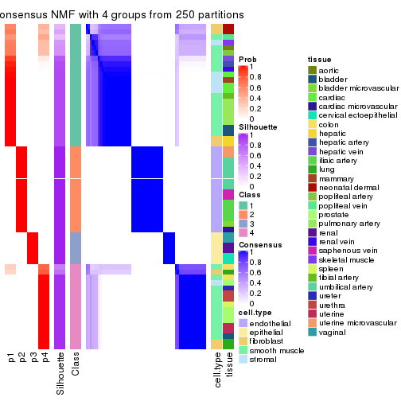
consensus_heatmap(res, k = 5)
consensus_heatmap(res, k = 6)
Heatmaps for the membership of samples in all partitions to see how consistent they are:
membership_heatmap(res, k = 2)
membership_heatmap(res, k = 3)
membership_heatmap(res, k = 4)
membership_heatmap(res, k = 5)
membership_heatmap(res, k = 6)
As soon as we have had the classes for columns, we can look for signatures which are significantly different between classes which can be candidate marks for certain classes. Following are the heatmaps for signatures.
Signature heatmaps where rows are scaled:
get_signatures(res, k = 2)
get_signatures(res, k = 3)
get_signatures(res, k = 4)
get_signatures(res, k = 5)
get_signatures(res, k = 6)

Signature heatmaps where rows are not scaled:
get_signatures(res, k = 2, scale_rows = FALSE)
get_signatures(res, k = 3, scale_rows = FALSE)
get_signatures(res, k = 4, scale_rows = FALSE)
get_signatures(res, k = 5, scale_rows = FALSE)
get_signatures(res, k = 6, scale_rows = FALSE)
Compare the overlap of signatures from different k:
compare_signatures(res)
get_signature() returns a data frame invisibly. TO get the list of signatures, the function
call should be assigned to a variable explicitly. In following code, if plot argument is set
to FALSE, no heatmap is plotted while only the differential analysis is performed.
# code only for demonstration
tb = get_signature(res, k = ..., plot = FALSE)
An example of the output of tb is:
#> which_row fdr mean_1 mean_2 scaled_mean_1 scaled_mean_2 km
#> 1 38 0.042760348 8.373488 9.131774 -0.5533452 0.5164555 1
#> 2 40 0.018707592 7.106213 8.469186 -0.6173731 0.5762149 1
#> 3 55 0.019134737 10.221463 11.207825 -0.6159697 0.5749050 1
#> 4 59 0.006059896 5.921854 7.869574 -0.6899429 0.6439467 1
#> 5 60 0.018055526 8.928898 10.211722 -0.6204761 0.5791110 1
#> 6 98 0.009384629 15.714769 14.887706 0.6635654 -0.6193277 2
...
The columns in tb are:
which_row: row indices corresponding to the input matrix.fdr: FDR for the differential test. mean_x: The mean value in group x.scaled_mean_x: The mean value in group x after rows are scaled.km: Row groups if k-means clustering is applied to rows.UMAP plot which shows how samples are separated.
dimension_reduction(res, k = 2, method = "UMAP")
dimension_reduction(res, k = 3, method = "UMAP")

dimension_reduction(res, k = 4, method = "UMAP")
dimension_reduction(res, k = 5, method = "UMAP")
dimension_reduction(res, k = 6, method = "UMAP")
Following heatmap shows how subgroups are split when increasing k:
collect_classes(res)
Test correlation between subgroups and known annotations. If the known annotation is numeric, one-way ANOVA test is applied, and if the known annotation is discrete, chi-squared contingency table test is applied.
test_to_known_factors(res)
#> n cell.type(p) tissue(p) k
#> CV:NMF 55 6.87e-12 7.58e-04 2
#> CV:NMF 61 1.28e-22 1.86e-06 3
#> CV:NMF 58 6.13e-20 3.11e-08 4
#> CV:NMF 57 4.36e-19 3.25e-08 5
#> CV:NMF 48 1.43e-18 3.24e-07 6
If matrix rows can be associated to genes, consider to use GO_Enrichment(res,
...) to perform function enrichment for the signature genes.
The object with results only for a single top-value method and a single partition method can be extracted as:
res = res_list["MAD", "hclust"]
# you can also extract it by
# res = res_list["MAD:hclust"]
A summary of res and all the functions that can be applied to it:
res
#> A 'ConsensusPartition' object with k = 2, 3, 4, 5, 6.
#> On a matrix with 18496 rows and 61 columns.
#> Top rows (1000, 2000, 3000, 4000, 5000) are extracted by 'MAD' method.
#> Subgroups are detected by 'hclust' method.
#> Performed in total 1250 partitions by row resampling.
#> Best k for subgroups seems to be 4.
#>
#> Following methods can be applied to this 'ConsensusPartition' object:
#> [1] "cola_report" "collect_classes" "collect_plots"
#> [4] "collect_stats" "colnames" "compare_signatures"
#> [7] "consensus_heatmap" "dimension_reduction" "functional_enrichment"
#> [10] "get_anno_col" "get_anno" "get_classes"
#> [13] "get_consensus" "get_matrix" "get_membership"
#> [16] "get_param" "get_signatures" "get_stats"
#> [19] "is_best_k" "is_stable_k" "membership_heatmap"
#> [22] "ncol" "nrow" "plot_ecdf"
#> [25] "rownames" "select_partition_number" "show"
#> [28] "suggest_best_k" "test_to_known_factors"
collect_plots() function collects all the plots made from res for all k (number of partitions)
into one single page to provide an easy and fast comparison between different k.
collect_plots(res)

The plots are:
k and the heatmap of
predicted classes for each k.k.k.k.All the plots in panels can be made by individual functions and they are plotted later in this section.
select_partition_number() produces several plots showing different
statistics for choosing “optimized” k. There are following statistics:
k;k, the area increased is defined as \(A_k - A_{k-1}\).The detailed explanations of these statistics can be found in the cola vignette.
Generally speaking, lower PAC score, higher mean silhouette score or higher
concordance corresponds to better partition. Rand index and Jaccard index
measure how similar the current partition is compared to partition with k-1.
If they are too similar, we won't accept k is better than k-1.
select_partition_number(res)
The numeric values for all these statistics can be obtained by get_stats().
get_stats(res)
#> k 1-PAC mean_silhouette concordance area_increased Rand Jaccard
#> 2 2 0.356 0.614 0.760 0.4212 0.640 0.640
#> 3 3 0.679 0.813 0.877 0.4830 0.620 0.440
#> 4 4 0.800 0.841 0.927 0.1534 0.934 0.805
#> 5 5 0.803 0.797 0.880 0.0609 0.921 0.731
#> 6 6 0.830 0.789 0.886 0.0230 0.963 0.850
suggest_best_k() suggests the best \(k\) based on these statistics. The rules are as follows:
NA.suggest_best_k(res)
#> [1] 4
Following shows the table of the partitions (You need to click the show/hide
code output link to see it). The membership matrix (columns with name p*)
is inferred by
clue::cl_consensus()
function with the SE method. Basically the value in the membership matrix
represents the probability to belong to a certain group. The finall class
label for an item is determined with the group with highest probability it
belongs to.
In get_classes() function, the entropy is calculated from the membership
matrix and the silhouette score is calculated from the consensus matrix.
cbind(get_classes(res, k = 2), get_membership(res, k = 2))
#> class entropy silhouette p1 p2
#> GSM72644 2 0.9522 0.66308 0.372 0.628
#> GSM72647 2 0.9522 0.66308 0.372 0.628
#> GSM72657 2 0.9522 0.66308 0.372 0.628
#> GSM72658 2 0.9522 0.66308 0.372 0.628
#> GSM72659 2 0.9522 0.66308 0.372 0.628
#> GSM72660 2 0.9522 0.66308 0.372 0.628
#> GSM72683 2 0.9522 0.66308 0.372 0.628
#> GSM72684 2 0.9522 0.66308 0.372 0.628
#> GSM72686 2 0.9522 0.66308 0.372 0.628
#> GSM72687 2 0.9522 0.66308 0.372 0.628
#> GSM72688 2 0.9522 0.66308 0.372 0.628
#> GSM72689 2 0.9522 0.66308 0.372 0.628
#> GSM72690 2 0.9522 0.66308 0.372 0.628
#> GSM72691 2 0.9522 0.66308 0.372 0.628
#> GSM72692 2 0.9522 0.66308 0.372 0.628
#> GSM72693 2 0.9522 0.66308 0.372 0.628
#> GSM72645 2 0.7219 0.68112 0.200 0.800
#> GSM72646 2 0.7219 0.68112 0.200 0.800
#> GSM72678 2 0.7219 0.68112 0.200 0.800
#> GSM72679 2 0.7219 0.68112 0.200 0.800
#> GSM72699 2 0.7219 0.68112 0.200 0.800
#> GSM72700 2 0.7219 0.68112 0.200 0.800
#> GSM72654 1 0.9522 0.96227 0.628 0.372
#> GSM72655 1 0.9522 0.96227 0.628 0.372
#> GSM72661 2 0.7376 0.23997 0.208 0.792
#> GSM72662 2 0.7376 0.23997 0.208 0.792
#> GSM72663 2 0.7376 0.23997 0.208 0.792
#> GSM72665 1 0.9522 0.96227 0.628 0.372
#> GSM72666 1 0.9522 0.96227 0.628 0.372
#> GSM72640 1 0.9850 0.92002 0.572 0.428
#> GSM72641 1 0.9522 0.96227 0.628 0.372
#> GSM72642 2 0.8267 0.00263 0.260 0.740
#> GSM72643 2 0.0000 0.63308 0.000 1.000
#> GSM72651 2 0.9710 -0.50664 0.400 0.600
#> GSM72652 2 0.9710 -0.50664 0.400 0.600
#> GSM72653 1 0.9881 0.91939 0.564 0.436
#> GSM72656 1 0.9881 0.91939 0.564 0.436
#> GSM72667 2 0.0938 0.62505 0.012 0.988
#> GSM72668 1 0.9522 0.96227 0.628 0.372
#> GSM72669 2 0.0938 0.62505 0.012 0.988
#> GSM72670 2 0.0938 0.62505 0.012 0.988
#> GSM72671 1 0.9522 0.96227 0.628 0.372
#> GSM72672 1 0.9881 0.91939 0.564 0.436
#> GSM72696 2 0.2236 0.60064 0.036 0.964
#> GSM72697 2 0.2236 0.60064 0.036 0.964
#> GSM72674 2 0.2236 0.60064 0.036 0.964
#> GSM72675 2 0.2236 0.60064 0.036 0.964
#> GSM72676 2 0.0000 0.63308 0.000 1.000
#> GSM72677 2 0.9393 -0.40772 0.356 0.644
#> GSM72680 1 0.9866 0.92366 0.568 0.432
#> GSM72682 2 0.0000 0.63308 0.000 1.000
#> GSM72685 1 0.9522 0.96227 0.628 0.372
#> GSM72694 2 0.0000 0.63308 0.000 1.000
#> GSM72695 2 0.0000 0.63308 0.000 1.000
#> GSM72698 2 0.2236 0.60064 0.036 0.964
#> GSM72648 2 0.0938 0.62505 0.012 0.988
#> GSM72649 2 0.0938 0.62505 0.012 0.988
#> GSM72650 2 0.0938 0.62505 0.012 0.988
#> GSM72664 1 0.9522 0.96227 0.628 0.372
#> GSM72673 2 0.0000 0.63308 0.000 1.000
#> GSM72681 2 0.9323 -0.38133 0.348 0.652
cbind(get_classes(res, k = 3), get_membership(res, k = 3))
#> class entropy silhouette p1 p2 p3
#> GSM72644 2 0.0000 1.0000 0.000 1.000 0.000
#> GSM72647 2 0.0000 1.0000 0.000 1.000 0.000
#> GSM72657 2 0.0000 1.0000 0.000 1.000 0.000
#> GSM72658 2 0.0000 1.0000 0.000 1.000 0.000
#> GSM72659 2 0.0000 1.0000 0.000 1.000 0.000
#> GSM72660 2 0.0000 1.0000 0.000 1.000 0.000
#> GSM72683 2 0.0000 1.0000 0.000 1.000 0.000
#> GSM72684 2 0.0000 1.0000 0.000 1.000 0.000
#> GSM72686 2 0.0000 1.0000 0.000 1.000 0.000
#> GSM72687 2 0.0000 1.0000 0.000 1.000 0.000
#> GSM72688 2 0.0000 1.0000 0.000 1.000 0.000
#> GSM72689 2 0.0000 1.0000 0.000 1.000 0.000
#> GSM72690 2 0.0000 1.0000 0.000 1.000 0.000
#> GSM72691 2 0.0000 1.0000 0.000 1.000 0.000
#> GSM72692 2 0.0000 1.0000 0.000 1.000 0.000
#> GSM72693 2 0.0000 1.0000 0.000 1.000 0.000
#> GSM72645 3 0.0237 0.7132 0.000 0.004 0.996
#> GSM72646 3 0.0237 0.7132 0.000 0.004 0.996
#> GSM72678 3 0.0237 0.7132 0.000 0.004 0.996
#> GSM72679 3 0.0237 0.7132 0.000 0.004 0.996
#> GSM72699 3 0.0237 0.7132 0.000 0.004 0.996
#> GSM72700 3 0.0237 0.7132 0.000 0.004 0.996
#> GSM72654 1 0.0000 0.8444 1.000 0.000 0.000
#> GSM72655 1 0.0000 0.8444 1.000 0.000 0.000
#> GSM72661 3 0.6359 0.5921 0.404 0.004 0.592
#> GSM72662 3 0.6359 0.5921 0.404 0.004 0.592
#> GSM72663 3 0.6359 0.5921 0.404 0.004 0.592
#> GSM72665 1 0.0000 0.8444 1.000 0.000 0.000
#> GSM72666 1 0.0000 0.8444 1.000 0.000 0.000
#> GSM72640 1 0.2165 0.8249 0.936 0.000 0.064
#> GSM72641 1 0.0000 0.8444 1.000 0.000 0.000
#> GSM72642 1 0.6696 0.2989 0.632 0.020 0.348
#> GSM72643 3 0.5610 0.8505 0.196 0.028 0.776
#> GSM72651 1 0.6140 0.0427 0.596 0.000 0.404
#> GSM72652 1 0.6140 0.0427 0.596 0.000 0.404
#> GSM72653 1 0.2356 0.8267 0.928 0.000 0.072
#> GSM72656 1 0.2356 0.8267 0.928 0.000 0.072
#> GSM72667 3 0.6148 0.8311 0.244 0.028 0.728
#> GSM72668 1 0.0000 0.8444 1.000 0.000 0.000
#> GSM72669 3 0.6148 0.8311 0.244 0.028 0.728
#> GSM72670 3 0.6148 0.8311 0.244 0.028 0.728
#> GSM72671 1 0.0000 0.8444 1.000 0.000 0.000
#> GSM72672 1 0.2356 0.8267 0.928 0.000 0.072
#> GSM72696 3 0.5158 0.8412 0.232 0.004 0.764
#> GSM72697 3 0.5158 0.8412 0.232 0.004 0.764
#> GSM72674 3 0.5158 0.8412 0.232 0.004 0.764
#> GSM72675 3 0.5158 0.8412 0.232 0.004 0.764
#> GSM72676 3 0.5610 0.8505 0.196 0.028 0.776
#> GSM72677 1 0.6226 0.5604 0.720 0.028 0.252
#> GSM72680 1 0.2261 0.8285 0.932 0.000 0.068
#> GSM72682 3 0.5610 0.8505 0.196 0.028 0.776
#> GSM72685 1 0.0000 0.8444 1.000 0.000 0.000
#> GSM72694 3 0.5610 0.8505 0.196 0.028 0.776
#> GSM72695 3 0.5610 0.8505 0.196 0.028 0.776
#> GSM72698 3 0.5158 0.8412 0.232 0.004 0.764
#> GSM72648 3 0.6108 0.8343 0.240 0.028 0.732
#> GSM72649 3 0.6108 0.8343 0.240 0.028 0.732
#> GSM72650 3 0.6108 0.8343 0.240 0.028 0.732
#> GSM72664 1 0.0000 0.8444 1.000 0.000 0.000
#> GSM72673 3 0.5610 0.8505 0.196 0.028 0.776
#> GSM72681 1 0.6301 0.5454 0.712 0.028 0.260
cbind(get_classes(res, k = 4), get_membership(res, k = 4))
#> class entropy silhouette p1 p2 p3 p4
#> GSM72644 2 0.0000 1.000 0.000 1 0.0 0.000
#> GSM72647 2 0.0000 1.000 0.000 1 0.0 0.000
#> GSM72657 2 0.0000 1.000 0.000 1 0.0 0.000
#> GSM72658 2 0.0000 1.000 0.000 1 0.0 0.000
#> GSM72659 2 0.0000 1.000 0.000 1 0.0 0.000
#> GSM72660 2 0.0000 1.000 0.000 1 0.0 0.000
#> GSM72683 2 0.0000 1.000 0.000 1 0.0 0.000
#> GSM72684 2 0.0000 1.000 0.000 1 0.0 0.000
#> GSM72686 2 0.0000 1.000 0.000 1 0.0 0.000
#> GSM72687 2 0.0000 1.000 0.000 1 0.0 0.000
#> GSM72688 2 0.0000 1.000 0.000 1 0.0 0.000
#> GSM72689 2 0.0000 1.000 0.000 1 0.0 0.000
#> GSM72690 2 0.0000 1.000 0.000 1 0.0 0.000
#> GSM72691 2 0.0000 1.000 0.000 1 0.0 0.000
#> GSM72692 2 0.0000 1.000 0.000 1 0.0 0.000
#> GSM72693 2 0.0000 1.000 0.000 1 0.0 0.000
#> GSM72645 3 0.0000 0.957 0.000 0 1.0 0.000
#> GSM72646 3 0.0000 0.957 0.000 0 1.0 0.000
#> GSM72678 3 0.2345 0.911 0.000 0 0.9 0.100
#> GSM72679 3 0.2345 0.911 0.000 0 0.9 0.100
#> GSM72699 3 0.0000 0.957 0.000 0 1.0 0.000
#> GSM72700 3 0.0000 0.957 0.000 0 1.0 0.000
#> GSM72654 1 0.0707 0.829 0.980 0 0.0 0.020
#> GSM72655 1 0.0707 0.829 0.980 0 0.0 0.020
#> GSM72661 4 0.4761 0.412 0.372 0 0.0 0.628
#> GSM72662 4 0.4761 0.412 0.372 0 0.0 0.628
#> GSM72663 4 0.4761 0.412 0.372 0 0.0 0.628
#> GSM72665 1 0.0336 0.827 0.992 0 0.0 0.008
#> GSM72666 1 0.0336 0.827 0.992 0 0.0 0.008
#> GSM72640 1 0.2345 0.822 0.900 0 0.0 0.100
#> GSM72641 1 0.0000 0.823 1.000 0 0.0 0.000
#> GSM72642 1 0.4977 0.241 0.540 0 0.0 0.460
#> GSM72643 4 0.0000 0.892 0.000 0 0.0 1.000
#> GSM72651 1 0.4941 0.192 0.564 0 0.0 0.436
#> GSM72652 1 0.4941 0.192 0.564 0 0.0 0.436
#> GSM72653 1 0.1867 0.832 0.928 0 0.0 0.072
#> GSM72656 1 0.1867 0.832 0.928 0 0.0 0.072
#> GSM72667 4 0.2081 0.862 0.084 0 0.0 0.916
#> GSM72668 1 0.2530 0.796 0.888 0 0.0 0.112
#> GSM72669 4 0.2081 0.862 0.084 0 0.0 0.916
#> GSM72670 4 0.2081 0.862 0.084 0 0.0 0.916
#> GSM72671 1 0.2530 0.796 0.888 0 0.0 0.112
#> GSM72672 1 0.1867 0.832 0.928 0 0.0 0.072
#> GSM72696 4 0.1118 0.889 0.036 0 0.0 0.964
#> GSM72697 4 0.1118 0.889 0.036 0 0.0 0.964
#> GSM72674 4 0.1118 0.889 0.036 0 0.0 0.964
#> GSM72675 4 0.1118 0.889 0.036 0 0.0 0.964
#> GSM72676 4 0.0000 0.892 0.000 0 0.0 1.000
#> GSM72677 1 0.4277 0.637 0.720 0 0.0 0.280
#> GSM72680 1 0.1792 0.833 0.932 0 0.0 0.068
#> GSM72682 4 0.0000 0.892 0.000 0 0.0 1.000
#> GSM72685 1 0.0000 0.823 1.000 0 0.0 0.000
#> GSM72694 4 0.0000 0.892 0.000 0 0.0 1.000
#> GSM72695 4 0.0000 0.892 0.000 0 0.0 1.000
#> GSM72698 4 0.1118 0.889 0.036 0 0.0 0.964
#> GSM72648 4 0.1302 0.885 0.044 0 0.0 0.956
#> GSM72649 4 0.1302 0.885 0.044 0 0.0 0.956
#> GSM72650 4 0.1302 0.885 0.044 0 0.0 0.956
#> GSM72664 1 0.0000 0.823 1.000 0 0.0 0.000
#> GSM72673 4 0.0000 0.892 0.000 0 0.0 1.000
#> GSM72681 1 0.4543 0.584 0.676 0 0.0 0.324
cbind(get_classes(res, k = 5), get_membership(res, k = 5))
#> class entropy silhouette p1 p2 p3 p4 p5
#> GSM72644 2 0.0000 1.0000 0.000 1 0.000 0.000 0.000
#> GSM72647 2 0.0000 1.0000 0.000 1 0.000 0.000 0.000
#> GSM72657 2 0.0000 1.0000 0.000 1 0.000 0.000 0.000
#> GSM72658 2 0.0000 1.0000 0.000 1 0.000 0.000 0.000
#> GSM72659 2 0.0000 1.0000 0.000 1 0.000 0.000 0.000
#> GSM72660 2 0.0000 1.0000 0.000 1 0.000 0.000 0.000
#> GSM72683 2 0.0000 1.0000 0.000 1 0.000 0.000 0.000
#> GSM72684 2 0.0000 1.0000 0.000 1 0.000 0.000 0.000
#> GSM72686 2 0.0000 1.0000 0.000 1 0.000 0.000 0.000
#> GSM72687 2 0.0000 1.0000 0.000 1 0.000 0.000 0.000
#> GSM72688 2 0.0000 1.0000 0.000 1 0.000 0.000 0.000
#> GSM72689 2 0.0000 1.0000 0.000 1 0.000 0.000 0.000
#> GSM72690 2 0.0000 1.0000 0.000 1 0.000 0.000 0.000
#> GSM72691 2 0.0000 1.0000 0.000 1 0.000 0.000 0.000
#> GSM72692 2 0.0000 1.0000 0.000 1 0.000 0.000 0.000
#> GSM72693 2 0.0000 1.0000 0.000 1 0.000 0.000 0.000
#> GSM72645 3 0.0000 0.9070 0.000 0 1.000 0.000 0.000
#> GSM72646 3 0.0000 0.9070 0.000 0 1.000 0.000 0.000
#> GSM72678 3 0.4866 0.8036 0.168 0 0.728 0.100 0.004
#> GSM72679 3 0.4866 0.8036 0.168 0 0.728 0.100 0.004
#> GSM72699 3 0.0000 0.9070 0.000 0 1.000 0.000 0.000
#> GSM72700 3 0.0000 0.9070 0.000 0 1.000 0.000 0.000
#> GSM72654 1 0.3398 0.7977 0.780 0 0.000 0.004 0.216
#> GSM72655 1 0.3398 0.7977 0.780 0 0.000 0.004 0.216
#> GSM72661 4 0.5404 0.5185 0.292 0 0.000 0.620 0.088
#> GSM72662 4 0.5404 0.5185 0.292 0 0.000 0.620 0.088
#> GSM72663 4 0.5404 0.5185 0.292 0 0.000 0.620 0.088
#> GSM72665 1 0.3642 0.7890 0.760 0 0.000 0.008 0.232
#> GSM72666 1 0.3642 0.7890 0.760 0 0.000 0.008 0.232
#> GSM72640 5 0.4028 0.5413 0.192 0 0.000 0.040 0.768
#> GSM72641 1 0.3999 0.7679 0.656 0 0.000 0.000 0.344
#> GSM72642 1 0.6100 0.1124 0.448 0 0.000 0.428 0.124
#> GSM72643 4 0.0000 0.8228 0.000 0 0.000 1.000 0.000
#> GSM72651 4 0.6686 0.0202 0.316 0 0.000 0.428 0.256
#> GSM72652 4 0.6686 0.0202 0.316 0 0.000 0.428 0.256
#> GSM72653 5 0.0404 0.7913 0.012 0 0.000 0.000 0.988
#> GSM72656 5 0.0404 0.7913 0.012 0 0.000 0.000 0.988
#> GSM72667 4 0.3234 0.7751 0.064 0 0.000 0.852 0.084
#> GSM72668 1 0.4850 0.7550 0.696 0 0.000 0.072 0.232
#> GSM72669 4 0.3234 0.7751 0.064 0 0.000 0.852 0.084
#> GSM72670 4 0.3234 0.7751 0.064 0 0.000 0.852 0.084
#> GSM72671 1 0.4850 0.7550 0.696 0 0.000 0.072 0.232
#> GSM72672 5 0.0404 0.7894 0.012 0 0.000 0.000 0.988
#> GSM72696 4 0.1043 0.8181 0.000 0 0.000 0.960 0.040
#> GSM72697 4 0.1043 0.8181 0.000 0 0.000 0.960 0.040
#> GSM72674 4 0.1043 0.8181 0.000 0 0.000 0.960 0.040
#> GSM72675 4 0.1043 0.8181 0.000 0 0.000 0.960 0.040
#> GSM72676 4 0.0000 0.8228 0.000 0 0.000 1.000 0.000
#> GSM72677 5 0.3455 0.6520 0.008 0 0.000 0.208 0.784
#> GSM72680 5 0.0703 0.7814 0.024 0 0.000 0.000 0.976
#> GSM72682 4 0.1041 0.8185 0.032 0 0.000 0.964 0.004
#> GSM72685 1 0.3999 0.7679 0.656 0 0.000 0.000 0.344
#> GSM72694 4 0.0000 0.8228 0.000 0 0.000 1.000 0.000
#> GSM72695 4 0.0000 0.8228 0.000 0 0.000 1.000 0.000
#> GSM72698 4 0.1043 0.8181 0.000 0 0.000 0.960 0.040
#> GSM72648 4 0.2790 0.7911 0.068 0 0.000 0.880 0.052
#> GSM72649 4 0.2790 0.7911 0.068 0 0.000 0.880 0.052
#> GSM72650 4 0.2790 0.7911 0.068 0 0.000 0.880 0.052
#> GSM72664 1 0.4030 0.7621 0.648 0 0.000 0.000 0.352
#> GSM72673 4 0.0000 0.8228 0.000 0 0.000 1.000 0.000
#> GSM72681 5 0.4734 0.6113 0.064 0 0.000 0.232 0.704
cbind(get_classes(res, k = 6), get_membership(res, k = 6))
#> class entropy silhouette p1 p2 p3 p4 p5 p6
#> GSM72644 2 0.0000 1.0000 0.000 1 0.000 0.000 0.000 0.000
#> GSM72647 2 0.0000 1.0000 0.000 1 0.000 0.000 0.000 0.000
#> GSM72657 2 0.0000 1.0000 0.000 1 0.000 0.000 0.000 0.000
#> GSM72658 2 0.0000 1.0000 0.000 1 0.000 0.000 0.000 0.000
#> GSM72659 2 0.0000 1.0000 0.000 1 0.000 0.000 0.000 0.000
#> GSM72660 2 0.0000 1.0000 0.000 1 0.000 0.000 0.000 0.000
#> GSM72683 2 0.0000 1.0000 0.000 1 0.000 0.000 0.000 0.000
#> GSM72684 2 0.0000 1.0000 0.000 1 0.000 0.000 0.000 0.000
#> GSM72686 2 0.0000 1.0000 0.000 1 0.000 0.000 0.000 0.000
#> GSM72687 2 0.0000 1.0000 0.000 1 0.000 0.000 0.000 0.000
#> GSM72688 2 0.0000 1.0000 0.000 1 0.000 0.000 0.000 0.000
#> GSM72689 2 0.0000 1.0000 0.000 1 0.000 0.000 0.000 0.000
#> GSM72690 2 0.0000 1.0000 0.000 1 0.000 0.000 0.000 0.000
#> GSM72691 2 0.0000 1.0000 0.000 1 0.000 0.000 0.000 0.000
#> GSM72692 2 0.0000 1.0000 0.000 1 0.000 0.000 0.000 0.000
#> GSM72693 2 0.0000 1.0000 0.000 1 0.000 0.000 0.000 0.000
#> GSM72645 3 0.0000 1.0000 0.000 0 1.000 0.000 0.000 0.000
#> GSM72646 3 0.0000 1.0000 0.000 0 1.000 0.000 0.000 0.000
#> GSM72678 5 0.2730 1.0000 0.000 0 0.192 0.000 0.808 0.000
#> GSM72679 5 0.2730 1.0000 0.000 0 0.192 0.000 0.808 0.000
#> GSM72699 3 0.0000 1.0000 0.000 0 1.000 0.000 0.000 0.000
#> GSM72700 3 0.0000 1.0000 0.000 0 1.000 0.000 0.000 0.000
#> GSM72654 1 0.0146 0.6990 0.996 0 0.000 0.000 0.000 0.004
#> GSM72655 1 0.0146 0.6990 0.996 0 0.000 0.000 0.000 0.004
#> GSM72661 4 0.4607 0.4715 0.328 0 0.000 0.616 0.000 0.056
#> GSM72662 4 0.4607 0.4715 0.328 0 0.000 0.616 0.000 0.056
#> GSM72663 4 0.4607 0.4715 0.328 0 0.000 0.616 0.000 0.056
#> GSM72665 1 0.0692 0.6941 0.976 0 0.000 0.004 0.000 0.020
#> GSM72666 1 0.0692 0.6941 0.976 0 0.000 0.004 0.000 0.020
#> GSM72640 6 0.4819 0.3630 0.348 0 0.000 0.028 0.024 0.600
#> GSM72641 1 0.2883 0.6314 0.788 0 0.000 0.000 0.000 0.212
#> GSM72642 1 0.6458 0.1903 0.456 0 0.000 0.364 0.076 0.104
#> GSM72643 4 0.0146 0.8343 0.000 0 0.000 0.996 0.004 0.000
#> GSM72651 1 0.5058 0.0458 0.500 0 0.000 0.424 0.000 0.076
#> GSM72652 1 0.5058 0.0458 0.500 0 0.000 0.424 0.000 0.076
#> GSM72653 6 0.0146 0.7804 0.004 0 0.000 0.000 0.000 0.996
#> GSM72656 6 0.0146 0.7804 0.004 0 0.000 0.000 0.000 0.996
#> GSM72667 4 0.4430 0.7495 0.024 0 0.000 0.748 0.144 0.084
#> GSM72668 1 0.3112 0.6677 0.836 0 0.000 0.000 0.096 0.068
#> GSM72669 4 0.4430 0.7495 0.024 0 0.000 0.748 0.144 0.084
#> GSM72670 4 0.4430 0.7495 0.024 0 0.000 0.748 0.144 0.084
#> GSM72671 1 0.3112 0.6677 0.836 0 0.000 0.000 0.096 0.068
#> GSM72672 6 0.0146 0.7787 0.004 0 0.000 0.000 0.000 0.996
#> GSM72696 4 0.0937 0.8281 0.000 0 0.000 0.960 0.000 0.040
#> GSM72697 4 0.0937 0.8281 0.000 0 0.000 0.960 0.000 0.040
#> GSM72674 4 0.0937 0.8281 0.000 0 0.000 0.960 0.000 0.040
#> GSM72675 4 0.0937 0.8281 0.000 0 0.000 0.960 0.000 0.040
#> GSM72676 4 0.0146 0.8343 0.000 0 0.000 0.996 0.004 0.000
#> GSM72677 6 0.2994 0.6626 0.004 0 0.000 0.208 0.000 0.788
#> GSM72680 6 0.0547 0.7734 0.020 0 0.000 0.000 0.000 0.980
#> GSM72682 4 0.1471 0.8251 0.000 0 0.000 0.932 0.064 0.004
#> GSM72685 1 0.2883 0.6314 0.788 0 0.000 0.000 0.000 0.212
#> GSM72694 4 0.0146 0.8343 0.000 0 0.000 0.996 0.004 0.000
#> GSM72695 4 0.0000 0.8344 0.000 0 0.000 1.000 0.000 0.000
#> GSM72698 4 0.0937 0.8281 0.000 0 0.000 0.960 0.000 0.040
#> GSM72648 4 0.4120 0.7579 0.012 0 0.000 0.748 0.188 0.052
#> GSM72649 4 0.4120 0.7579 0.012 0 0.000 0.748 0.188 0.052
#> GSM72650 4 0.4120 0.7579 0.012 0 0.000 0.748 0.188 0.052
#> GSM72664 1 0.2730 0.6400 0.808 0 0.000 0.000 0.000 0.192
#> GSM72673 4 0.0146 0.8343 0.000 0 0.000 0.996 0.004 0.000
#> GSM72681 6 0.4653 0.6152 0.056 0 0.000 0.220 0.024 0.700
Heatmaps for the consensus matrix. It visualizes the probability of two samples to be in a same group.
consensus_heatmap(res, k = 2)
consensus_heatmap(res, k = 3)
consensus_heatmap(res, k = 4)
consensus_heatmap(res, k = 5)
consensus_heatmap(res, k = 6)
Heatmaps for the membership of samples in all partitions to see how consistent they are:
membership_heatmap(res, k = 2)
membership_heatmap(res, k = 3)
membership_heatmap(res, k = 4)

membership_heatmap(res, k = 5)
membership_heatmap(res, k = 6)
As soon as we have had the classes for columns, we can look for signatures which are significantly different between classes which can be candidate marks for certain classes. Following are the heatmaps for signatures.
Signature heatmaps where rows are scaled:
get_signatures(res, k = 2)
get_signatures(res, k = 3)
get_signatures(res, k = 4)

get_signatures(res, k = 5)
get_signatures(res, k = 6)
Signature heatmaps where rows are not scaled:
get_signatures(res, k = 2, scale_rows = FALSE)
get_signatures(res, k = 3, scale_rows = FALSE)
get_signatures(res, k = 4, scale_rows = FALSE)

get_signatures(res, k = 5, scale_rows = FALSE)
get_signatures(res, k = 6, scale_rows = FALSE)
Compare the overlap of signatures from different k:
compare_signatures(res)
get_signature() returns a data frame invisibly. TO get the list of signatures, the function
call should be assigned to a variable explicitly. In following code, if plot argument is set
to FALSE, no heatmap is plotted while only the differential analysis is performed.
# code only for demonstration
tb = get_signature(res, k = ..., plot = FALSE)
An example of the output of tb is:
#> which_row fdr mean_1 mean_2 scaled_mean_1 scaled_mean_2 km
#> 1 38 0.042760348 8.373488 9.131774 -0.5533452 0.5164555 1
#> 2 40 0.018707592 7.106213 8.469186 -0.6173731 0.5762149 1
#> 3 55 0.019134737 10.221463 11.207825 -0.6159697 0.5749050 1
#> 4 59 0.006059896 5.921854 7.869574 -0.6899429 0.6439467 1
#> 5 60 0.018055526 8.928898 10.211722 -0.6204761 0.5791110 1
#> 6 98 0.009384629 15.714769 14.887706 0.6635654 -0.6193277 2
...
The columns in tb are:
which_row: row indices corresponding to the input matrix.fdr: FDR for the differential test. mean_x: The mean value in group x.scaled_mean_x: The mean value in group x after rows are scaled.km: Row groups if k-means clustering is applied to rows.UMAP plot which shows how samples are separated.
dimension_reduction(res, k = 2, method = "UMAP")
dimension_reduction(res, k = 3, method = "UMAP")
dimension_reduction(res, k = 4, method = "UMAP")
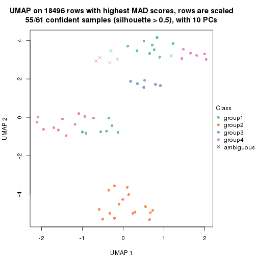
dimension_reduction(res, k = 5, method = "UMAP")

dimension_reduction(res, k = 6, method = "UMAP")
Following heatmap shows how subgroups are split when increasing k:
collect_classes(res)
Test correlation between subgroups and known annotations. If the known annotation is numeric, one-way ANOVA test is applied, and if the known annotation is discrete, chi-squared contingency table test is applied.
test_to_known_factors(res)
#> n cell.type(p) tissue(p) k
#> MAD:hclust 53 2.49e-04 1.02e-02 2
#> MAD:hclust 58 4.70e-11 6.17e-05 3
#> MAD:hclust 55 1.30e-19 2.02e-06 4
#> MAD:hclust 58 4.98e-19 1.32e-08 5
#> MAD:hclust 54 9.39e-18 4.35e-10 6
If matrix rows can be associated to genes, consider to use GO_Enrichment(res,
...) to perform function enrichment for the signature genes.
The object with results only for a single top-value method and a single partition method can be extracted as:
res = res_list["MAD", "kmeans"]
# you can also extract it by
# res = res_list["MAD:kmeans"]
A summary of res and all the functions that can be applied to it:
res
#> A 'ConsensusPartition' object with k = 2, 3, 4, 5, 6.
#> On a matrix with 18496 rows and 61 columns.
#> Top rows (1000, 2000, 3000, 4000, 5000) are extracted by 'MAD' method.
#> Subgroups are detected by 'kmeans' method.
#> Performed in total 1250 partitions by row resampling.
#> Best k for subgroups seems to be 4.
#>
#> Following methods can be applied to this 'ConsensusPartition' object:
#> [1] "cola_report" "collect_classes" "collect_plots"
#> [4] "collect_stats" "colnames" "compare_signatures"
#> [7] "consensus_heatmap" "dimension_reduction" "functional_enrichment"
#> [10] "get_anno_col" "get_anno" "get_classes"
#> [13] "get_consensus" "get_matrix" "get_membership"
#> [16] "get_param" "get_signatures" "get_stats"
#> [19] "is_best_k" "is_stable_k" "membership_heatmap"
#> [22] "ncol" "nrow" "plot_ecdf"
#> [25] "rownames" "select_partition_number" "show"
#> [28] "suggest_best_k" "test_to_known_factors"
collect_plots() function collects all the plots made from res for all k (number of partitions)
into one single page to provide an easy and fast comparison between different k.
collect_plots(res)
The plots are:
k and the heatmap of
predicted classes for each k.k.k.k.All the plots in panels can be made by individual functions and they are plotted later in this section.
select_partition_number() produces several plots showing different
statistics for choosing “optimized” k. There are following statistics:
k;k, the area increased is defined as \(A_k - A_{k-1}\).The detailed explanations of these statistics can be found in the cola vignette.
Generally speaking, lower PAC score, higher mean silhouette score or higher
concordance corresponds to better partition. Rand index and Jaccard index
measure how similar the current partition is compared to partition with k-1.
If they are too similar, we won't accept k is better than k-1.
select_partition_number(res)
The numeric values for all these statistics can be obtained by get_stats().
get_stats(res)
#> k 1-PAC mean_silhouette concordance area_increased Rand Jaccard
#> 2 2 0.817 0.902 0.954 0.420 0.607 0.607
#> 3 3 0.544 0.647 0.785 0.422 0.784 0.643
#> 4 4 0.621 0.859 0.869 0.171 0.872 0.688
#> 5 5 0.750 0.531 0.756 0.106 0.961 0.870
#> 6 6 0.761 0.815 0.787 0.046 0.881 0.575
suggest_best_k() suggests the best \(k\) based on these statistics. The rules are as follows:
NA.suggest_best_k(res)
#> [1] 4
Following shows the table of the partitions (You need to click the show/hide
code output link to see it). The membership matrix (columns with name p*)
is inferred by
clue::cl_consensus()
function with the SE method. Basically the value in the membership matrix
represents the probability to belong to a certain group. The finall class
label for an item is determined with the group with highest probability it
belongs to.
In get_classes() function, the entropy is calculated from the membership
matrix and the silhouette score is calculated from the consensus matrix.
cbind(get_classes(res, k = 2), get_membership(res, k = 2))
#> class entropy silhouette p1 p2
#> GSM72644 2 0.1414 1.000 0.020 0.980
#> GSM72647 2 0.1414 1.000 0.020 0.980
#> GSM72657 2 0.1414 1.000 0.020 0.980
#> GSM72658 2 0.1414 1.000 0.020 0.980
#> GSM72659 2 0.1414 1.000 0.020 0.980
#> GSM72660 2 0.1414 1.000 0.020 0.980
#> GSM72683 2 0.1414 1.000 0.020 0.980
#> GSM72684 2 0.1414 1.000 0.020 0.980
#> GSM72686 2 0.1414 1.000 0.020 0.980
#> GSM72687 2 0.1414 1.000 0.020 0.980
#> GSM72688 2 0.1414 1.000 0.020 0.980
#> GSM72689 2 0.1414 1.000 0.020 0.980
#> GSM72690 2 0.1414 1.000 0.020 0.980
#> GSM72691 2 0.1414 1.000 0.020 0.980
#> GSM72692 2 0.1414 1.000 0.020 0.980
#> GSM72693 2 0.1414 1.000 0.020 0.980
#> GSM72645 1 0.9850 0.348 0.572 0.428
#> GSM72646 1 0.9850 0.348 0.572 0.428
#> GSM72678 1 0.9850 0.348 0.572 0.428
#> GSM72679 1 0.9850 0.348 0.572 0.428
#> GSM72699 1 0.8955 0.580 0.688 0.312
#> GSM72700 1 0.9850 0.348 0.572 0.428
#> GSM72654 1 0.0000 0.942 1.000 0.000
#> GSM72655 1 0.0000 0.942 1.000 0.000
#> GSM72661 1 0.0000 0.942 1.000 0.000
#> GSM72662 1 0.0000 0.942 1.000 0.000
#> GSM72663 1 0.0000 0.942 1.000 0.000
#> GSM72665 1 0.0000 0.942 1.000 0.000
#> GSM72666 1 0.0000 0.942 1.000 0.000
#> GSM72640 1 0.0000 0.942 1.000 0.000
#> GSM72641 1 0.0000 0.942 1.000 0.000
#> GSM72642 1 0.0000 0.942 1.000 0.000
#> GSM72643 1 0.0376 0.939 0.996 0.004
#> GSM72651 1 0.0000 0.942 1.000 0.000
#> GSM72652 1 0.0000 0.942 1.000 0.000
#> GSM72653 1 0.0000 0.942 1.000 0.000
#> GSM72656 1 0.0000 0.942 1.000 0.000
#> GSM72667 1 0.0000 0.942 1.000 0.000
#> GSM72668 1 0.0000 0.942 1.000 0.000
#> GSM72669 1 0.0000 0.942 1.000 0.000
#> GSM72670 1 0.0000 0.942 1.000 0.000
#> GSM72671 1 0.0000 0.942 1.000 0.000
#> GSM72672 1 0.0000 0.942 1.000 0.000
#> GSM72696 1 0.0000 0.942 1.000 0.000
#> GSM72697 1 0.0000 0.942 1.000 0.000
#> GSM72674 1 0.0000 0.942 1.000 0.000
#> GSM72675 1 0.0000 0.942 1.000 0.000
#> GSM72676 1 0.0000 0.942 1.000 0.000
#> GSM72677 1 0.0000 0.942 1.000 0.000
#> GSM72680 1 0.0000 0.942 1.000 0.000
#> GSM72682 1 0.0000 0.942 1.000 0.000
#> GSM72685 1 0.0000 0.942 1.000 0.000
#> GSM72694 1 0.0376 0.939 0.996 0.004
#> GSM72695 1 0.0000 0.942 1.000 0.000
#> GSM72698 1 0.0000 0.942 1.000 0.000
#> GSM72648 1 0.0376 0.939 0.996 0.004
#> GSM72649 1 0.0376 0.939 0.996 0.004
#> GSM72650 1 0.0376 0.939 0.996 0.004
#> GSM72664 1 0.0000 0.942 1.000 0.000
#> GSM72673 1 0.0376 0.939 0.996 0.004
#> GSM72681 1 0.0000 0.942 1.000 0.000
cbind(get_classes(res, k = 3), get_membership(res, k = 3))
#> class entropy silhouette p1 p2 p3
#> GSM72644 2 0.1765 0.97696 0.004 0.956 0.040
#> GSM72647 2 0.1647 0.97720 0.004 0.960 0.036
#> GSM72657 2 0.0475 0.98520 0.004 0.992 0.004
#> GSM72658 2 0.0475 0.98520 0.004 0.992 0.004
#> GSM72659 2 0.0475 0.98520 0.004 0.992 0.004
#> GSM72660 2 0.0475 0.98520 0.004 0.992 0.004
#> GSM72683 2 0.1765 0.97696 0.004 0.956 0.040
#> GSM72684 2 0.1765 0.97696 0.004 0.956 0.040
#> GSM72686 2 0.0661 0.98468 0.004 0.988 0.008
#> GSM72687 2 0.0829 0.98465 0.004 0.984 0.012
#> GSM72688 2 0.0829 0.98465 0.004 0.984 0.012
#> GSM72689 2 0.0829 0.98465 0.004 0.984 0.012
#> GSM72690 2 0.0829 0.98465 0.004 0.984 0.012
#> GSM72691 2 0.0661 0.98468 0.004 0.988 0.008
#> GSM72692 2 0.1647 0.97720 0.004 0.960 0.036
#> GSM72693 2 0.1647 0.97720 0.004 0.960 0.036
#> GSM72645 3 0.7610 0.56286 0.216 0.108 0.676
#> GSM72646 3 0.7610 0.56286 0.216 0.108 0.676
#> GSM72678 3 0.7059 0.55771 0.164 0.112 0.724
#> GSM72679 3 0.7504 0.56423 0.200 0.112 0.688
#> GSM72699 3 0.7584 0.56043 0.220 0.104 0.676
#> GSM72700 3 0.7610 0.56286 0.216 0.108 0.676
#> GSM72654 1 0.0000 0.75136 1.000 0.000 0.000
#> GSM72655 1 0.0000 0.75136 1.000 0.000 0.000
#> GSM72661 1 0.2537 0.73908 0.920 0.000 0.080
#> GSM72662 1 0.3482 0.70127 0.872 0.000 0.128
#> GSM72663 1 0.6299 0.06055 0.524 0.000 0.476
#> GSM72665 1 0.1411 0.74955 0.964 0.000 0.036
#> GSM72666 1 0.1411 0.74955 0.964 0.000 0.036
#> GSM72640 1 0.1753 0.75124 0.952 0.000 0.048
#> GSM72641 1 0.0000 0.75136 1.000 0.000 0.000
#> GSM72642 1 0.0237 0.75186 0.996 0.000 0.004
#> GSM72643 3 0.6095 0.29509 0.392 0.000 0.608
#> GSM72651 1 0.2537 0.74023 0.920 0.000 0.080
#> GSM72652 1 0.2625 0.73697 0.916 0.000 0.084
#> GSM72653 1 0.1753 0.75124 0.952 0.000 0.048
#> GSM72656 1 0.1753 0.75124 0.952 0.000 0.048
#> GSM72667 1 0.4002 0.63085 0.840 0.000 0.160
#> GSM72668 1 0.0000 0.75136 1.000 0.000 0.000
#> GSM72669 1 0.2625 0.68812 0.916 0.000 0.084
#> GSM72670 1 0.4002 0.63085 0.840 0.000 0.160
#> GSM72671 1 0.0000 0.75136 1.000 0.000 0.000
#> GSM72672 1 0.1753 0.75124 0.952 0.000 0.048
#> GSM72696 1 0.6308 0.00622 0.508 0.000 0.492
#> GSM72697 1 0.6308 0.00622 0.508 0.000 0.492
#> GSM72674 1 0.6309 -0.02799 0.500 0.000 0.500
#> GSM72675 1 0.6308 0.00622 0.508 0.000 0.492
#> GSM72676 3 0.6204 0.22126 0.424 0.000 0.576
#> GSM72677 1 0.4974 0.59130 0.764 0.000 0.236
#> GSM72680 1 0.0237 0.75241 0.996 0.000 0.004
#> GSM72682 3 0.6180 0.25629 0.416 0.000 0.584
#> GSM72685 1 0.0000 0.75136 1.000 0.000 0.000
#> GSM72694 3 0.6095 0.29509 0.392 0.000 0.608
#> GSM72695 3 0.6204 0.22126 0.424 0.000 0.576
#> GSM72698 1 0.6308 0.00622 0.508 0.000 0.492
#> GSM72648 1 0.5397 0.43027 0.720 0.000 0.280
#> GSM72649 1 0.5397 0.43027 0.720 0.000 0.280
#> GSM72650 1 0.5291 0.45653 0.732 0.000 0.268
#> GSM72664 1 0.0000 0.75136 1.000 0.000 0.000
#> GSM72673 3 0.6095 0.29509 0.392 0.000 0.608
#> GSM72681 1 0.3619 0.70237 0.864 0.000 0.136
cbind(get_classes(res, k = 4), get_membership(res, k = 4))
#> class entropy silhouette p1 p2 p3 p4
#> GSM72644 2 0.4482 0.888 0.000 0.804 0.128 0.068
#> GSM72647 2 0.3935 0.893 0.000 0.840 0.100 0.060
#> GSM72657 2 0.0000 0.929 0.000 1.000 0.000 0.000
#> GSM72658 2 0.0000 0.929 0.000 1.000 0.000 0.000
#> GSM72659 2 0.0000 0.929 0.000 1.000 0.000 0.000
#> GSM72660 2 0.0000 0.929 0.000 1.000 0.000 0.000
#> GSM72683 2 0.4482 0.888 0.000 0.804 0.128 0.068
#> GSM72684 2 0.4482 0.888 0.000 0.804 0.128 0.068
#> GSM72686 2 0.0376 0.927 0.000 0.992 0.004 0.004
#> GSM72687 2 0.1610 0.925 0.000 0.952 0.032 0.016
#> GSM72688 2 0.1406 0.925 0.000 0.960 0.024 0.016
#> GSM72689 2 0.1610 0.925 0.000 0.952 0.032 0.016
#> GSM72690 2 0.1610 0.925 0.000 0.952 0.032 0.016
#> GSM72691 2 0.0376 0.927 0.000 0.992 0.004 0.004
#> GSM72692 2 0.4114 0.891 0.000 0.828 0.112 0.060
#> GSM72693 2 0.4114 0.891 0.000 0.828 0.112 0.060
#> GSM72645 3 0.4554 0.990 0.040 0.016 0.812 0.132
#> GSM72646 3 0.4554 0.990 0.040 0.016 0.812 0.132
#> GSM72678 3 0.4716 0.981 0.036 0.016 0.796 0.152
#> GSM72679 3 0.4716 0.981 0.036 0.016 0.796 0.152
#> GSM72699 3 0.4606 0.989 0.040 0.016 0.808 0.136
#> GSM72700 3 0.4554 0.990 0.040 0.016 0.812 0.132
#> GSM72654 1 0.0376 0.837 0.992 0.000 0.004 0.004
#> GSM72655 1 0.0376 0.837 0.992 0.000 0.004 0.004
#> GSM72661 1 0.2714 0.791 0.884 0.000 0.004 0.112
#> GSM72662 1 0.4283 0.585 0.740 0.000 0.004 0.256
#> GSM72663 4 0.3074 0.958 0.152 0.000 0.000 0.848
#> GSM72665 1 0.2593 0.797 0.892 0.000 0.004 0.104
#> GSM72666 1 0.2593 0.797 0.892 0.000 0.004 0.104
#> GSM72640 1 0.2313 0.831 0.924 0.000 0.032 0.044
#> GSM72641 1 0.0657 0.836 0.984 0.000 0.004 0.012
#> GSM72642 1 0.1182 0.839 0.968 0.000 0.016 0.016
#> GSM72643 4 0.2589 0.971 0.116 0.000 0.000 0.884
#> GSM72651 1 0.2831 0.792 0.876 0.000 0.004 0.120
#> GSM72652 1 0.2714 0.791 0.884 0.000 0.004 0.112
#> GSM72653 1 0.2578 0.830 0.912 0.000 0.036 0.052
#> GSM72656 1 0.2578 0.830 0.912 0.000 0.036 0.052
#> GSM72667 1 0.5540 0.706 0.728 0.000 0.164 0.108
#> GSM72668 1 0.0188 0.837 0.996 0.000 0.004 0.000
#> GSM72669 1 0.4462 0.742 0.792 0.000 0.164 0.044
#> GSM72670 1 0.5540 0.706 0.728 0.000 0.164 0.108
#> GSM72671 1 0.0376 0.837 0.992 0.000 0.004 0.004
#> GSM72672 1 0.2660 0.829 0.908 0.000 0.036 0.056
#> GSM72696 4 0.2973 0.972 0.144 0.000 0.000 0.856
#> GSM72697 4 0.2973 0.972 0.144 0.000 0.000 0.856
#> GSM72674 4 0.2973 0.972 0.144 0.000 0.000 0.856
#> GSM72675 4 0.2973 0.972 0.144 0.000 0.000 0.856
#> GSM72676 4 0.2589 0.971 0.116 0.000 0.000 0.884
#> GSM72677 1 0.5989 0.287 0.556 0.000 0.044 0.400
#> GSM72680 1 0.1584 0.836 0.952 0.000 0.036 0.012
#> GSM72682 4 0.2760 0.957 0.128 0.000 0.000 0.872
#> GSM72685 1 0.0937 0.838 0.976 0.000 0.012 0.012
#> GSM72694 4 0.2589 0.971 0.116 0.000 0.000 0.884
#> GSM72695 4 0.2647 0.971 0.120 0.000 0.000 0.880
#> GSM72698 4 0.2973 0.972 0.144 0.000 0.000 0.856
#> GSM72648 1 0.6788 0.561 0.608 0.000 0.188 0.204
#> GSM72649 1 0.6930 0.561 0.608 0.004 0.188 0.200
#> GSM72650 1 0.6830 0.581 0.620 0.004 0.188 0.188
#> GSM72664 1 0.0779 0.836 0.980 0.000 0.004 0.016
#> GSM72673 4 0.2589 0.971 0.116 0.000 0.000 0.884
#> GSM72681 1 0.4904 0.687 0.744 0.000 0.040 0.216
cbind(get_classes(res, k = 5), get_membership(res, k = 5))
#> class entropy silhouette p1 p2 p3 p4 p5
#> GSM72644 2 0.3910 0.8231 0.000 0.720 0.008 0.000 0.272
#> GSM72647 2 0.3395 0.8268 0.000 0.764 0.000 0.000 0.236
#> GSM72657 2 0.0290 0.8841 0.000 0.992 0.008 0.000 0.000
#> GSM72658 2 0.0290 0.8841 0.000 0.992 0.008 0.000 0.000
#> GSM72659 2 0.0290 0.8841 0.000 0.992 0.008 0.000 0.000
#> GSM72660 2 0.0290 0.8841 0.000 0.992 0.008 0.000 0.000
#> GSM72683 2 0.3910 0.8231 0.000 0.720 0.008 0.000 0.272
#> GSM72684 2 0.3910 0.8231 0.000 0.720 0.008 0.000 0.272
#> GSM72686 2 0.0912 0.8808 0.000 0.972 0.012 0.000 0.016
#> GSM72687 2 0.2696 0.8694 0.000 0.892 0.024 0.012 0.072
#> GSM72688 2 0.2568 0.8721 0.000 0.900 0.024 0.012 0.064
#> GSM72689 2 0.2696 0.8694 0.000 0.892 0.024 0.012 0.072
#> GSM72690 2 0.2696 0.8694 0.000 0.892 0.024 0.012 0.072
#> GSM72691 2 0.0912 0.8808 0.000 0.972 0.012 0.000 0.016
#> GSM72692 2 0.3395 0.8268 0.000 0.764 0.000 0.000 0.236
#> GSM72693 2 0.3395 0.8268 0.000 0.764 0.000 0.000 0.236
#> GSM72645 3 0.0771 0.9917 0.000 0.004 0.976 0.020 0.000
#> GSM72646 3 0.0771 0.9917 0.000 0.004 0.976 0.020 0.000
#> GSM72678 3 0.1471 0.9868 0.000 0.004 0.952 0.020 0.024
#> GSM72679 3 0.1471 0.9868 0.000 0.004 0.952 0.020 0.024
#> GSM72699 3 0.1278 0.9867 0.000 0.004 0.960 0.020 0.016
#> GSM72700 3 0.0771 0.9917 0.000 0.004 0.976 0.020 0.000
#> GSM72654 1 0.4430 -0.4227 0.540 0.000 0.000 0.004 0.456
#> GSM72655 1 0.4430 -0.4227 0.540 0.000 0.000 0.004 0.456
#> GSM72661 1 0.5644 -0.8170 0.484 0.000 0.000 0.076 0.440
#> GSM72662 5 0.6368 0.6541 0.400 0.000 0.000 0.164 0.436
#> GSM72663 4 0.2554 0.9105 0.036 0.000 0.000 0.892 0.072
#> GSM72665 5 0.5747 0.8045 0.456 0.000 0.004 0.072 0.468
#> GSM72666 5 0.5747 0.8045 0.456 0.000 0.004 0.072 0.468
#> GSM72640 1 0.3551 0.1900 0.820 0.000 0.000 0.044 0.136
#> GSM72641 1 0.4350 -0.4622 0.588 0.000 0.000 0.004 0.408
#> GSM72642 1 0.4387 0.0545 0.640 0.000 0.000 0.012 0.348
#> GSM72643 4 0.1124 0.9536 0.036 0.000 0.000 0.960 0.004
#> GSM72651 1 0.5641 -0.8112 0.488 0.000 0.000 0.076 0.436
#> GSM72652 1 0.5604 -0.8465 0.472 0.000 0.000 0.072 0.456
#> GSM72653 1 0.1197 0.3264 0.952 0.000 0.000 0.048 0.000
#> GSM72656 1 0.1197 0.3264 0.952 0.000 0.000 0.048 0.000
#> GSM72667 1 0.6744 0.3690 0.560 0.000 0.112 0.056 0.272
#> GSM72668 1 0.4268 -0.4459 0.556 0.000 0.000 0.000 0.444
#> GSM72669 1 0.6019 0.3619 0.604 0.000 0.112 0.016 0.268
#> GSM72670 1 0.6744 0.3690 0.560 0.000 0.112 0.056 0.272
#> GSM72671 1 0.4430 -0.4227 0.540 0.000 0.000 0.004 0.456
#> GSM72672 1 0.1197 0.3264 0.952 0.000 0.000 0.048 0.000
#> GSM72696 4 0.1484 0.9576 0.048 0.000 0.000 0.944 0.008
#> GSM72697 4 0.1484 0.9576 0.048 0.000 0.000 0.944 0.008
#> GSM72674 4 0.0865 0.9718 0.024 0.000 0.000 0.972 0.004
#> GSM72675 4 0.0865 0.9718 0.024 0.000 0.000 0.972 0.004
#> GSM72676 4 0.0566 0.9712 0.012 0.000 0.000 0.984 0.004
#> GSM72677 1 0.4267 0.2915 0.736 0.000 0.004 0.232 0.028
#> GSM72680 1 0.0865 0.3048 0.972 0.000 0.000 0.004 0.024
#> GSM72682 4 0.1018 0.9601 0.016 0.000 0.000 0.968 0.016
#> GSM72685 1 0.3906 -0.1279 0.704 0.000 0.000 0.004 0.292
#> GSM72694 4 0.0566 0.9712 0.012 0.000 0.000 0.984 0.004
#> GSM72695 4 0.0510 0.9724 0.016 0.000 0.000 0.984 0.000
#> GSM72698 4 0.0865 0.9718 0.024 0.000 0.000 0.972 0.004
#> GSM72648 1 0.7359 0.3587 0.520 0.000 0.140 0.096 0.244
#> GSM72649 1 0.7359 0.3587 0.520 0.000 0.140 0.096 0.244
#> GSM72650 1 0.7359 0.3587 0.520 0.000 0.140 0.096 0.244
#> GSM72664 1 0.4580 -0.6350 0.532 0.000 0.004 0.004 0.460
#> GSM72673 4 0.0566 0.9712 0.012 0.000 0.000 0.984 0.004
#> GSM72681 1 0.3569 0.3302 0.816 0.000 0.004 0.152 0.028
cbind(get_classes(res, k = 6), get_membership(res, k = 6))
#> class entropy silhouette p1 p2 p3 p4 p5 p6
#> GSM72644 2 0.3847 0.719 0.000 0.544 0.000 0.000 0.456 0.000
#> GSM72647 2 0.4178 0.729 0.000 0.608 0.000 0.000 0.372 0.020
#> GSM72657 2 0.1003 0.806 0.000 0.964 0.000 0.000 0.020 0.016
#> GSM72658 2 0.1003 0.806 0.000 0.964 0.000 0.000 0.020 0.016
#> GSM72659 2 0.1003 0.806 0.000 0.964 0.000 0.000 0.020 0.016
#> GSM72660 2 0.1003 0.806 0.000 0.964 0.000 0.000 0.020 0.016
#> GSM72683 2 0.3847 0.719 0.000 0.544 0.000 0.000 0.456 0.000
#> GSM72684 2 0.3847 0.719 0.000 0.544 0.000 0.000 0.456 0.000
#> GSM72686 2 0.0260 0.801 0.000 0.992 0.000 0.000 0.000 0.008
#> GSM72687 2 0.3513 0.775 0.000 0.816 0.008 0.000 0.072 0.104
#> GSM72688 2 0.3176 0.777 0.000 0.840 0.008 0.000 0.052 0.100
#> GSM72689 2 0.3513 0.775 0.000 0.816 0.008 0.000 0.072 0.104
#> GSM72690 2 0.3513 0.775 0.000 0.816 0.008 0.000 0.072 0.104
#> GSM72691 2 0.0260 0.801 0.000 0.992 0.000 0.000 0.000 0.008
#> GSM72692 2 0.4219 0.727 0.000 0.592 0.000 0.000 0.388 0.020
#> GSM72693 2 0.4219 0.727 0.000 0.592 0.000 0.000 0.388 0.020
#> GSM72645 3 0.0837 0.972 0.004 0.004 0.972 0.020 0.000 0.000
#> GSM72646 3 0.0837 0.972 0.004 0.004 0.972 0.020 0.000 0.000
#> GSM72678 3 0.2590 0.953 0.004 0.004 0.896 0.020 0.024 0.052
#> GSM72679 3 0.2590 0.953 0.004 0.004 0.896 0.020 0.024 0.052
#> GSM72699 3 0.1830 0.959 0.004 0.004 0.936 0.024 0.016 0.016
#> GSM72700 3 0.0837 0.972 0.004 0.004 0.972 0.020 0.000 0.000
#> GSM72654 1 0.1760 0.721 0.928 0.000 0.000 0.004 0.048 0.020
#> GSM72655 1 0.1760 0.721 0.928 0.000 0.000 0.004 0.048 0.020
#> GSM72661 1 0.4738 0.679 0.744 0.000 0.008 0.100 0.032 0.116
#> GSM72662 1 0.5140 0.625 0.704 0.000 0.008 0.140 0.032 0.116
#> GSM72663 4 0.4157 0.786 0.064 0.000 0.008 0.792 0.032 0.104
#> GSM72665 1 0.3350 0.731 0.844 0.000 0.008 0.064 0.012 0.072
#> GSM72666 1 0.3350 0.731 0.844 0.000 0.008 0.064 0.012 0.072
#> GSM72640 6 0.5674 0.709 0.424 0.000 0.000 0.052 0.048 0.476
#> GSM72641 1 0.1714 0.692 0.908 0.000 0.000 0.000 0.000 0.092
#> GSM72642 1 0.4657 0.397 0.720 0.000 0.004 0.008 0.148 0.120
#> GSM72643 4 0.1338 0.942 0.004 0.000 0.004 0.952 0.032 0.008
#> GSM72651 1 0.4535 0.689 0.760 0.000 0.008 0.096 0.028 0.108
#> GSM72652 1 0.4445 0.695 0.768 0.000 0.008 0.092 0.028 0.104
#> GSM72653 6 0.4167 0.863 0.368 0.000 0.000 0.020 0.000 0.612
#> GSM72656 6 0.4302 0.863 0.368 0.000 0.000 0.020 0.004 0.608
#> GSM72667 5 0.7649 0.927 0.236 0.000 0.096 0.028 0.408 0.232
#> GSM72668 1 0.1480 0.721 0.940 0.000 0.000 0.000 0.040 0.020
#> GSM72669 5 0.7423 0.896 0.252 0.000 0.096 0.012 0.408 0.232
#> GSM72670 5 0.7649 0.927 0.236 0.000 0.096 0.028 0.408 0.232
#> GSM72671 1 0.1713 0.719 0.928 0.000 0.000 0.000 0.044 0.028
#> GSM72672 6 0.4290 0.863 0.364 0.000 0.000 0.020 0.004 0.612
#> GSM72696 4 0.1801 0.919 0.004 0.000 0.000 0.924 0.016 0.056
#> GSM72697 4 0.1801 0.919 0.004 0.000 0.000 0.924 0.016 0.056
#> GSM72674 4 0.1465 0.947 0.004 0.000 0.004 0.948 0.024 0.020
#> GSM72675 4 0.0692 0.944 0.004 0.000 0.000 0.976 0.000 0.020
#> GSM72676 4 0.1147 0.946 0.004 0.000 0.004 0.960 0.028 0.004
#> GSM72677 6 0.5401 0.670 0.208 0.000 0.000 0.148 0.016 0.628
#> GSM72680 6 0.3756 0.823 0.400 0.000 0.000 0.000 0.000 0.600
#> GSM72682 4 0.0951 0.938 0.008 0.000 0.000 0.968 0.020 0.004
#> GSM72685 1 0.2260 0.634 0.860 0.000 0.000 0.000 0.000 0.140
#> GSM72694 4 0.1147 0.946 0.004 0.000 0.004 0.960 0.028 0.004
#> GSM72695 4 0.0922 0.947 0.004 0.000 0.004 0.968 0.024 0.000
#> GSM72698 4 0.0692 0.944 0.004 0.000 0.000 0.976 0.000 0.020
#> GSM72648 5 0.8010 0.930 0.188 0.000 0.108 0.064 0.408 0.232
#> GSM72649 5 0.8010 0.930 0.188 0.000 0.108 0.064 0.408 0.232
#> GSM72650 5 0.8010 0.930 0.188 0.000 0.108 0.064 0.408 0.232
#> GSM72664 1 0.1958 0.682 0.896 0.000 0.000 0.000 0.004 0.100
#> GSM72673 4 0.1147 0.946 0.004 0.000 0.004 0.960 0.028 0.004
#> GSM72681 6 0.5052 0.786 0.272 0.000 0.000 0.084 0.012 0.632
Heatmaps for the consensus matrix. It visualizes the probability of two samples to be in a same group.
consensus_heatmap(res, k = 2)

consensus_heatmap(res, k = 3)
consensus_heatmap(res, k = 4)
consensus_heatmap(res, k = 5)
consensus_heatmap(res, k = 6)
Heatmaps for the membership of samples in all partitions to see how consistent they are:
membership_heatmap(res, k = 2)
membership_heatmap(res, k = 3)
membership_heatmap(res, k = 4)
membership_heatmap(res, k = 5)

membership_heatmap(res, k = 6)
As soon as we have had the classes for columns, we can look for signatures which are significantly different between classes which can be candidate marks for certain classes. Following are the heatmaps for signatures.
Signature heatmaps where rows are scaled:
get_signatures(res, k = 2)
get_signatures(res, k = 3)
get_signatures(res, k = 4)
get_signatures(res, k = 5)
get_signatures(res, k = 6)
Signature heatmaps where rows are not scaled:
get_signatures(res, k = 2, scale_rows = FALSE)
get_signatures(res, k = 3, scale_rows = FALSE)
get_signatures(res, k = 4, scale_rows = FALSE)
get_signatures(res, k = 5, scale_rows = FALSE)
get_signatures(res, k = 6, scale_rows = FALSE)
Compare the overlap of signatures from different k:
compare_signatures(res)
get_signature() returns a data frame invisibly. TO get the list of signatures, the function
call should be assigned to a variable explicitly. In following code, if plot argument is set
to FALSE, no heatmap is plotted while only the differential analysis is performed.
# code only for demonstration
tb = get_signature(res, k = ..., plot = FALSE)
An example of the output of tb is:
#> which_row fdr mean_1 mean_2 scaled_mean_1 scaled_mean_2 km
#> 1 38 0.042760348 8.373488 9.131774 -0.5533452 0.5164555 1
#> 2 40 0.018707592 7.106213 8.469186 -0.6173731 0.5762149 1
#> 3 55 0.019134737 10.221463 11.207825 -0.6159697 0.5749050 1
#> 4 59 0.006059896 5.921854 7.869574 -0.6899429 0.6439467 1
#> 5 60 0.018055526 8.928898 10.211722 -0.6204761 0.5791110 1
#> 6 98 0.009384629 15.714769 14.887706 0.6635654 -0.6193277 2
...
The columns in tb are:
which_row: row indices corresponding to the input matrix.fdr: FDR for the differential test. mean_x: The mean value in group x.scaled_mean_x: The mean value in group x after rows are scaled.km: Row groups if k-means clustering is applied to rows.UMAP plot which shows how samples are separated.
dimension_reduction(res, k = 2, method = "UMAP")
dimension_reduction(res, k = 3, method = "UMAP")
dimension_reduction(res, k = 4, method = "UMAP")
dimension_reduction(res, k = 5, method = "UMAP")
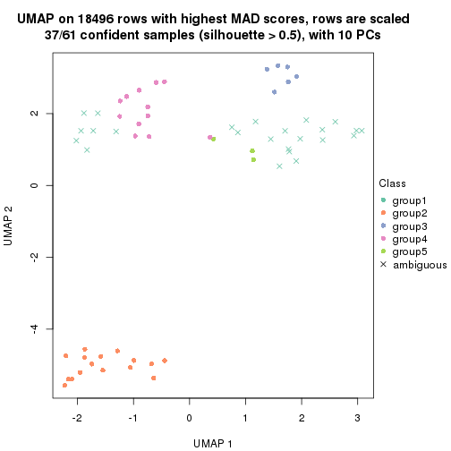
dimension_reduction(res, k = 6, method = "UMAP")

Following heatmap shows how subgroups are split when increasing k:
collect_classes(res)
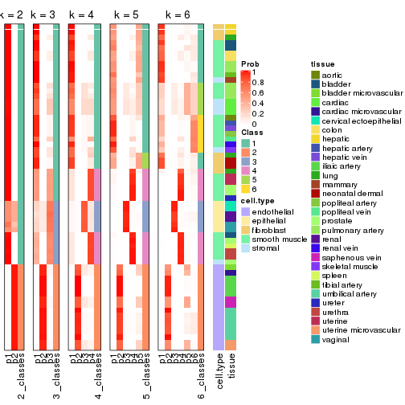
Test correlation between subgroups and known annotations. If the known annotation is numeric, one-way ANOVA test is applied, and if the known annotation is discrete, chi-squared contingency table test is applied.
test_to_known_factors(res)
#> n cell.type(p) tissue(p) k
#> MAD:kmeans 56 2.01e-11 8.60e-04 2
#> MAD:kmeans 46 1.82e-16 6.62e-05 3
#> MAD:kmeans 60 1.08e-20 8.22e-08 4
#> MAD:kmeans 37 7.18e-16 6.35e-06 5
#> MAD:kmeans 60 5.50e-21 1.05e-09 6
If matrix rows can be associated to genes, consider to use GO_Enrichment(res,
...) to perform function enrichment for the signature genes.
The object with results only for a single top-value method and a single partition method can be extracted as:
res = res_list["MAD", "skmeans"]
# you can also extract it by
# res = res_list["MAD:skmeans"]
A summary of res and all the functions that can be applied to it:
res
#> A 'ConsensusPartition' object with k = 2, 3, 4, 5, 6.
#> On a matrix with 18496 rows and 61 columns.
#> Top rows (1000, 2000, 3000, 4000, 5000) are extracted by 'MAD' method.
#> Subgroups are detected by 'skmeans' method.
#> Performed in total 1250 partitions by row resampling.
#> Best k for subgroups seems to be 5.
#>
#> Following methods can be applied to this 'ConsensusPartition' object:
#> [1] "cola_report" "collect_classes" "collect_plots"
#> [4] "collect_stats" "colnames" "compare_signatures"
#> [7] "consensus_heatmap" "dimension_reduction" "functional_enrichment"
#> [10] "get_anno_col" "get_anno" "get_classes"
#> [13] "get_consensus" "get_matrix" "get_membership"
#> [16] "get_param" "get_signatures" "get_stats"
#> [19] "is_best_k" "is_stable_k" "membership_heatmap"
#> [22] "ncol" "nrow" "plot_ecdf"
#> [25] "rownames" "select_partition_number" "show"
#> [28] "suggest_best_k" "test_to_known_factors"
collect_plots() function collects all the plots made from res for all k (number of partitions)
into one single page to provide an easy and fast comparison between different k.
collect_plots(res)
The plots are:
k and the heatmap of
predicted classes for each k.k.k.k.All the plots in panels can be made by individual functions and they are plotted later in this section.
select_partition_number() produces several plots showing different
statistics for choosing “optimized” k. There are following statistics:
k;k, the area increased is defined as \(A_k - A_{k-1}\).The detailed explanations of these statistics can be found in the cola vignette.
Generally speaking, lower PAC score, higher mean silhouette score or higher
concordance corresponds to better partition. Rand index and Jaccard index
measure how similar the current partition is compared to partition with k-1.
If they are too similar, we won't accept k is better than k-1.
select_partition_number(res)
The numeric values for all these statistics can be obtained by get_stats().
get_stats(res)
#> k 1-PAC mean_silhouette concordance area_increased Rand Jaccard
#> 2 2 0.902 0.943 0.974 0.4868 0.522 0.522
#> 3 3 0.871 0.907 0.956 0.3597 0.797 0.621
#> 4 4 0.823 0.829 0.929 0.1189 0.863 0.634
#> 5 5 0.981 0.927 0.960 0.0494 0.952 0.825
#> 6 6 0.892 0.906 0.925 0.0557 0.944 0.759
suggest_best_k() suggests the best \(k\) based on these statistics. The rules are as follows:
NA.suggest_best_k(res)
#> [1] 5
#> attr(,"optional")
#> [1] 2
There is also optional best \(k\) = 2 that is worth to check.
Following shows the table of the partitions (You need to click the show/hide
code output link to see it). The membership matrix (columns with name p*)
is inferred by
clue::cl_consensus()
function with the SE method. Basically the value in the membership matrix
represents the probability to belong to a certain group. The finall class
label for an item is determined with the group with highest probability it
belongs to.
In get_classes() function, the entropy is calculated from the membership
matrix and the silhouette score is calculated from the consensus matrix.
cbind(get_classes(res, k = 2), get_membership(res, k = 2))
#> class entropy silhouette p1 p2
#> GSM72644 2 0.000 1.000 0.000 1.000
#> GSM72647 2 0.000 1.000 0.000 1.000
#> GSM72657 2 0.000 1.000 0.000 1.000
#> GSM72658 2 0.000 1.000 0.000 1.000
#> GSM72659 2 0.000 1.000 0.000 1.000
#> GSM72660 2 0.000 1.000 0.000 1.000
#> GSM72683 2 0.000 1.000 0.000 1.000
#> GSM72684 2 0.000 1.000 0.000 1.000
#> GSM72686 2 0.000 1.000 0.000 1.000
#> GSM72687 2 0.000 1.000 0.000 1.000
#> GSM72688 2 0.000 1.000 0.000 1.000
#> GSM72689 2 0.000 1.000 0.000 1.000
#> GSM72690 2 0.000 1.000 0.000 1.000
#> GSM72691 2 0.000 1.000 0.000 1.000
#> GSM72692 2 0.000 1.000 0.000 1.000
#> GSM72693 2 0.000 1.000 0.000 1.000
#> GSM72645 2 0.000 1.000 0.000 1.000
#> GSM72646 2 0.000 1.000 0.000 1.000
#> GSM72678 2 0.000 1.000 0.000 1.000
#> GSM72679 2 0.000 1.000 0.000 1.000
#> GSM72699 2 0.000 1.000 0.000 1.000
#> GSM72700 2 0.000 1.000 0.000 1.000
#> GSM72654 1 0.000 0.956 1.000 0.000
#> GSM72655 1 0.000 0.956 1.000 0.000
#> GSM72661 1 0.000 0.956 1.000 0.000
#> GSM72662 1 0.000 0.956 1.000 0.000
#> GSM72663 1 0.000 0.956 1.000 0.000
#> GSM72665 1 0.000 0.956 1.000 0.000
#> GSM72666 1 0.000 0.956 1.000 0.000
#> GSM72640 1 0.000 0.956 1.000 0.000
#> GSM72641 1 0.000 0.956 1.000 0.000
#> GSM72642 1 0.000 0.956 1.000 0.000
#> GSM72643 1 0.876 0.620 0.704 0.296
#> GSM72651 1 0.000 0.956 1.000 0.000
#> GSM72652 1 0.000 0.956 1.000 0.000
#> GSM72653 1 0.000 0.956 1.000 0.000
#> GSM72656 1 0.000 0.956 1.000 0.000
#> GSM72667 1 0.000 0.956 1.000 0.000
#> GSM72668 1 0.000 0.956 1.000 0.000
#> GSM72669 1 0.000 0.956 1.000 0.000
#> GSM72670 1 0.000 0.956 1.000 0.000
#> GSM72671 1 0.000 0.956 1.000 0.000
#> GSM72672 1 0.000 0.956 1.000 0.000
#> GSM72696 1 0.000 0.956 1.000 0.000
#> GSM72697 1 0.000 0.956 1.000 0.000
#> GSM72674 1 0.000 0.956 1.000 0.000
#> GSM72675 1 0.000 0.956 1.000 0.000
#> GSM72676 1 0.000 0.956 1.000 0.000
#> GSM72677 1 0.000 0.956 1.000 0.000
#> GSM72680 1 0.000 0.956 1.000 0.000
#> GSM72682 1 0.000 0.956 1.000 0.000
#> GSM72685 1 0.000 0.956 1.000 0.000
#> GSM72694 1 0.876 0.620 0.704 0.296
#> GSM72695 1 0.000 0.956 1.000 0.000
#> GSM72698 1 0.000 0.956 1.000 0.000
#> GSM72648 1 0.909 0.571 0.676 0.324
#> GSM72649 2 0.000 1.000 0.000 1.000
#> GSM72650 1 0.939 0.506 0.644 0.356
#> GSM72664 1 0.000 0.956 1.000 0.000
#> GSM72673 1 0.876 0.620 0.704 0.296
#> GSM72681 1 0.000 0.956 1.000 0.000
cbind(get_classes(res, k = 3), get_membership(res, k = 3))
#> class entropy silhouette p1 p2 p3
#> GSM72644 2 0.0000 0.995 0.000 1.000 0.000
#> GSM72647 2 0.0000 0.995 0.000 1.000 0.000
#> GSM72657 2 0.0000 0.995 0.000 1.000 0.000
#> GSM72658 2 0.0000 0.995 0.000 1.000 0.000
#> GSM72659 2 0.0000 0.995 0.000 1.000 0.000
#> GSM72660 2 0.0000 0.995 0.000 1.000 0.000
#> GSM72683 2 0.0000 0.995 0.000 1.000 0.000
#> GSM72684 2 0.0000 0.995 0.000 1.000 0.000
#> GSM72686 2 0.0000 0.995 0.000 1.000 0.000
#> GSM72687 2 0.0000 0.995 0.000 1.000 0.000
#> GSM72688 2 0.0000 0.995 0.000 1.000 0.000
#> GSM72689 2 0.0000 0.995 0.000 1.000 0.000
#> GSM72690 2 0.0000 0.995 0.000 1.000 0.000
#> GSM72691 2 0.0000 0.995 0.000 1.000 0.000
#> GSM72692 2 0.0000 0.995 0.000 1.000 0.000
#> GSM72693 2 0.0000 0.995 0.000 1.000 0.000
#> GSM72645 2 0.0983 0.986 0.004 0.980 0.016
#> GSM72646 2 0.0983 0.986 0.004 0.980 0.016
#> GSM72678 2 0.0747 0.988 0.000 0.984 0.016
#> GSM72679 2 0.0747 0.988 0.000 0.984 0.016
#> GSM72699 2 0.0983 0.986 0.004 0.980 0.016
#> GSM72700 2 0.0983 0.986 0.004 0.980 0.016
#> GSM72654 1 0.0000 0.902 1.000 0.000 0.000
#> GSM72655 1 0.0000 0.902 1.000 0.000 0.000
#> GSM72661 1 0.4702 0.746 0.788 0.000 0.212
#> GSM72662 3 0.5785 0.441 0.332 0.000 0.668
#> GSM72663 3 0.0237 0.968 0.004 0.000 0.996
#> GSM72665 1 0.4504 0.761 0.804 0.000 0.196
#> GSM72666 1 0.4504 0.761 0.804 0.000 0.196
#> GSM72640 1 0.0424 0.900 0.992 0.000 0.008
#> GSM72641 1 0.0000 0.902 1.000 0.000 0.000
#> GSM72642 1 0.0000 0.902 1.000 0.000 0.000
#> GSM72643 3 0.0237 0.968 0.004 0.000 0.996
#> GSM72651 1 0.4702 0.746 0.788 0.000 0.212
#> GSM72652 1 0.4654 0.750 0.792 0.000 0.208
#> GSM72653 1 0.0237 0.901 0.996 0.000 0.004
#> GSM72656 1 0.0237 0.901 0.996 0.000 0.004
#> GSM72667 1 0.0000 0.902 1.000 0.000 0.000
#> GSM72668 1 0.0000 0.902 1.000 0.000 0.000
#> GSM72669 1 0.0000 0.902 1.000 0.000 0.000
#> GSM72670 1 0.0000 0.902 1.000 0.000 0.000
#> GSM72671 1 0.0000 0.902 1.000 0.000 0.000
#> GSM72672 1 0.0237 0.901 0.996 0.000 0.004
#> GSM72696 3 0.0237 0.968 0.004 0.000 0.996
#> GSM72697 3 0.0237 0.968 0.004 0.000 0.996
#> GSM72674 3 0.0237 0.968 0.004 0.000 0.996
#> GSM72675 3 0.0237 0.968 0.004 0.000 0.996
#> GSM72676 3 0.0237 0.968 0.004 0.000 0.996
#> GSM72677 1 0.6225 0.275 0.568 0.000 0.432
#> GSM72680 1 0.0000 0.902 1.000 0.000 0.000
#> GSM72682 3 0.0000 0.964 0.000 0.000 1.000
#> GSM72685 1 0.0000 0.902 1.000 0.000 0.000
#> GSM72694 3 0.0237 0.968 0.004 0.000 0.996
#> GSM72695 3 0.0237 0.968 0.004 0.000 0.996
#> GSM72698 3 0.0237 0.968 0.004 0.000 0.996
#> GSM72648 1 0.5201 0.685 0.760 0.004 0.236
#> GSM72649 1 0.5365 0.642 0.744 0.252 0.004
#> GSM72650 1 0.0475 0.898 0.992 0.004 0.004
#> GSM72664 1 0.0000 0.902 1.000 0.000 0.000
#> GSM72673 3 0.0237 0.968 0.004 0.000 0.996
#> GSM72681 1 0.4555 0.739 0.800 0.000 0.200
cbind(get_classes(res, k = 4), get_membership(res, k = 4))
#> class entropy silhouette p1 p2 p3 p4
#> GSM72644 2 0.0000 1.0000 0.000 1.000 0.000 0.000
#> GSM72647 2 0.0000 1.0000 0.000 1.000 0.000 0.000
#> GSM72657 2 0.0000 1.0000 0.000 1.000 0.000 0.000
#> GSM72658 2 0.0000 1.0000 0.000 1.000 0.000 0.000
#> GSM72659 2 0.0000 1.0000 0.000 1.000 0.000 0.000
#> GSM72660 2 0.0000 1.0000 0.000 1.000 0.000 0.000
#> GSM72683 2 0.0000 1.0000 0.000 1.000 0.000 0.000
#> GSM72684 2 0.0000 1.0000 0.000 1.000 0.000 0.000
#> GSM72686 2 0.0000 1.0000 0.000 1.000 0.000 0.000
#> GSM72687 2 0.0000 1.0000 0.000 1.000 0.000 0.000
#> GSM72688 2 0.0000 1.0000 0.000 1.000 0.000 0.000
#> GSM72689 2 0.0000 1.0000 0.000 1.000 0.000 0.000
#> GSM72690 2 0.0000 1.0000 0.000 1.000 0.000 0.000
#> GSM72691 2 0.0000 1.0000 0.000 1.000 0.000 0.000
#> GSM72692 2 0.0000 1.0000 0.000 1.000 0.000 0.000
#> GSM72693 2 0.0000 1.0000 0.000 1.000 0.000 0.000
#> GSM72645 3 0.0000 0.8923 0.000 0.000 1.000 0.000
#> GSM72646 3 0.0000 0.8923 0.000 0.000 1.000 0.000
#> GSM72678 3 0.0469 0.8875 0.000 0.012 0.988 0.000
#> GSM72679 3 0.0469 0.8875 0.000 0.012 0.988 0.000
#> GSM72699 3 0.0000 0.8923 0.000 0.000 1.000 0.000
#> GSM72700 3 0.0000 0.8923 0.000 0.000 1.000 0.000
#> GSM72654 1 0.0000 0.8320 1.000 0.000 0.000 0.000
#> GSM72655 1 0.0000 0.8320 1.000 0.000 0.000 0.000
#> GSM72661 1 0.3569 0.7233 0.804 0.000 0.000 0.196
#> GSM72662 1 0.4776 0.4225 0.624 0.000 0.000 0.376
#> GSM72663 4 0.0336 0.9450 0.008 0.000 0.000 0.992
#> GSM72665 1 0.3486 0.7303 0.812 0.000 0.000 0.188
#> GSM72666 1 0.3486 0.7303 0.812 0.000 0.000 0.188
#> GSM72640 1 0.0188 0.8315 0.996 0.000 0.000 0.004
#> GSM72641 1 0.0000 0.8320 1.000 0.000 0.000 0.000
#> GSM72642 1 0.0000 0.8320 1.000 0.000 0.000 0.000
#> GSM72643 4 0.0188 0.9445 0.004 0.000 0.000 0.996
#> GSM72651 1 0.3528 0.7265 0.808 0.000 0.000 0.192
#> GSM72652 1 0.3528 0.7265 0.808 0.000 0.000 0.192
#> GSM72653 1 0.0188 0.8315 0.996 0.000 0.000 0.004
#> GSM72656 1 0.0188 0.8315 0.996 0.000 0.000 0.004
#> GSM72667 1 0.5263 0.0295 0.544 0.000 0.448 0.008
#> GSM72668 1 0.0000 0.8320 1.000 0.000 0.000 0.000
#> GSM72669 1 0.5263 0.0295 0.544 0.000 0.448 0.008
#> GSM72670 1 0.5263 0.0295 0.544 0.000 0.448 0.008
#> GSM72671 1 0.0000 0.8320 1.000 0.000 0.000 0.000
#> GSM72672 1 0.0188 0.8315 0.996 0.000 0.000 0.004
#> GSM72696 4 0.0336 0.9450 0.008 0.000 0.000 0.992
#> GSM72697 4 0.0336 0.9450 0.008 0.000 0.000 0.992
#> GSM72674 4 0.0336 0.9450 0.008 0.000 0.000 0.992
#> GSM72675 4 0.0336 0.9450 0.008 0.000 0.000 0.992
#> GSM72676 4 0.0188 0.9445 0.004 0.000 0.000 0.996
#> GSM72677 4 0.4925 0.2087 0.428 0.000 0.000 0.572
#> GSM72680 1 0.0000 0.8320 1.000 0.000 0.000 0.000
#> GSM72682 4 0.2345 0.8430 0.000 0.000 0.100 0.900
#> GSM72685 1 0.0000 0.8320 1.000 0.000 0.000 0.000
#> GSM72694 4 0.0188 0.9445 0.004 0.000 0.000 0.996
#> GSM72695 4 0.0188 0.9445 0.004 0.000 0.000 0.996
#> GSM72698 4 0.0336 0.9450 0.008 0.000 0.000 0.992
#> GSM72648 3 0.4420 0.7369 0.240 0.000 0.748 0.012
#> GSM72649 3 0.4444 0.7580 0.220 0.008 0.764 0.008
#> GSM72650 3 0.4295 0.7383 0.240 0.000 0.752 0.008
#> GSM72664 1 0.0000 0.8320 1.000 0.000 0.000 0.000
#> GSM72673 4 0.0188 0.9445 0.004 0.000 0.000 0.996
#> GSM72681 1 0.4008 0.6140 0.756 0.000 0.000 0.244
cbind(get_classes(res, k = 5), get_membership(res, k = 5))
#> class entropy silhouette p1 p2 p3 p4 p5
#> GSM72644 2 0.0290 0.995 0.000 0.992 0.008 0.000 0.000
#> GSM72647 2 0.0290 0.995 0.000 0.992 0.008 0.000 0.000
#> GSM72657 2 0.0000 0.997 0.000 1.000 0.000 0.000 0.000
#> GSM72658 2 0.0000 0.997 0.000 1.000 0.000 0.000 0.000
#> GSM72659 2 0.0000 0.997 0.000 1.000 0.000 0.000 0.000
#> GSM72660 2 0.0000 0.997 0.000 1.000 0.000 0.000 0.000
#> GSM72683 2 0.0290 0.995 0.000 0.992 0.008 0.000 0.000
#> GSM72684 2 0.0290 0.995 0.000 0.992 0.008 0.000 0.000
#> GSM72686 2 0.0000 0.997 0.000 1.000 0.000 0.000 0.000
#> GSM72687 2 0.0000 0.997 0.000 1.000 0.000 0.000 0.000
#> GSM72688 2 0.0000 0.997 0.000 1.000 0.000 0.000 0.000
#> GSM72689 2 0.0000 0.997 0.000 1.000 0.000 0.000 0.000
#> GSM72690 2 0.0000 0.997 0.000 1.000 0.000 0.000 0.000
#> GSM72691 2 0.0000 0.997 0.000 1.000 0.000 0.000 0.000
#> GSM72692 2 0.0290 0.995 0.000 0.992 0.008 0.000 0.000
#> GSM72693 2 0.0290 0.995 0.000 0.992 0.008 0.000 0.000
#> GSM72645 3 0.1043 0.995 0.000 0.000 0.960 0.000 0.040
#> GSM72646 3 0.1043 0.995 0.000 0.000 0.960 0.000 0.040
#> GSM72678 3 0.0880 0.990 0.000 0.000 0.968 0.000 0.032
#> GSM72679 3 0.0880 0.984 0.000 0.000 0.968 0.000 0.032
#> GSM72699 3 0.1043 0.995 0.000 0.000 0.960 0.000 0.040
#> GSM72700 3 0.1043 0.995 0.000 0.000 0.960 0.000 0.040
#> GSM72654 1 0.0794 0.928 0.972 0.000 0.000 0.000 0.028
#> GSM72655 1 0.0703 0.928 0.976 0.000 0.000 0.000 0.024
#> GSM72661 1 0.0486 0.928 0.988 0.000 0.004 0.004 0.004
#> GSM72662 1 0.0727 0.925 0.980 0.000 0.004 0.012 0.004
#> GSM72663 4 0.0833 0.922 0.016 0.000 0.004 0.976 0.004
#> GSM72665 1 0.0613 0.928 0.984 0.000 0.004 0.004 0.008
#> GSM72666 1 0.0613 0.928 0.984 0.000 0.004 0.004 0.008
#> GSM72640 1 0.1547 0.920 0.948 0.000 0.032 0.004 0.016
#> GSM72641 1 0.0703 0.929 0.976 0.000 0.000 0.000 0.024
#> GSM72642 1 0.4273 0.272 0.552 0.000 0.000 0.000 0.448
#> GSM72643 4 0.0404 0.931 0.000 0.000 0.000 0.988 0.012
#> GSM72651 1 0.0486 0.928 0.988 0.000 0.004 0.004 0.004
#> GSM72652 1 0.0486 0.928 0.988 0.000 0.004 0.004 0.004
#> GSM72653 1 0.2299 0.906 0.912 0.000 0.032 0.004 0.052
#> GSM72656 1 0.2569 0.896 0.896 0.000 0.032 0.004 0.068
#> GSM72667 5 0.0290 0.990 0.008 0.000 0.000 0.000 0.992
#> GSM72668 1 0.0703 0.929 0.976 0.000 0.000 0.000 0.024
#> GSM72669 5 0.0290 0.990 0.008 0.000 0.000 0.000 0.992
#> GSM72670 5 0.0290 0.990 0.008 0.000 0.000 0.000 0.992
#> GSM72671 1 0.0880 0.928 0.968 0.000 0.000 0.000 0.032
#> GSM72672 1 0.2504 0.899 0.900 0.000 0.032 0.004 0.064
#> GSM72696 4 0.0000 0.941 0.000 0.000 0.000 1.000 0.000
#> GSM72697 4 0.0000 0.941 0.000 0.000 0.000 1.000 0.000
#> GSM72674 4 0.0000 0.941 0.000 0.000 0.000 1.000 0.000
#> GSM72675 4 0.0000 0.941 0.000 0.000 0.000 1.000 0.000
#> GSM72676 4 0.0000 0.941 0.000 0.000 0.000 1.000 0.000
#> GSM72677 4 0.6930 -0.071 0.404 0.000 0.032 0.424 0.140
#> GSM72680 1 0.1992 0.912 0.924 0.000 0.032 0.000 0.044
#> GSM72682 4 0.0162 0.937 0.000 0.000 0.004 0.996 0.000
#> GSM72685 1 0.1410 0.918 0.940 0.000 0.000 0.000 0.060
#> GSM72694 4 0.0000 0.941 0.000 0.000 0.000 1.000 0.000
#> GSM72695 4 0.0000 0.941 0.000 0.000 0.000 1.000 0.000
#> GSM72698 4 0.0000 0.941 0.000 0.000 0.000 1.000 0.000
#> GSM72648 5 0.0404 0.990 0.000 0.000 0.012 0.000 0.988
#> GSM72649 5 0.0404 0.990 0.000 0.000 0.012 0.000 0.988
#> GSM72650 5 0.0404 0.990 0.000 0.000 0.012 0.000 0.988
#> GSM72664 1 0.0290 0.930 0.992 0.000 0.000 0.000 0.008
#> GSM72673 4 0.0000 0.941 0.000 0.000 0.000 1.000 0.000
#> GSM72681 1 0.5649 0.667 0.692 0.000 0.032 0.156 0.120
cbind(get_classes(res, k = 6), get_membership(res, k = 6))
#> class entropy silhouette p1 p2 p3 p4 p5 p6
#> GSM72644 2 0.1814 0.940 0.000 0.900 0.000 0.000 0.000 0.100
#> GSM72647 2 0.1814 0.940 0.000 0.900 0.000 0.000 0.000 0.100
#> GSM72657 2 0.0000 0.962 0.000 1.000 0.000 0.000 0.000 0.000
#> GSM72658 2 0.0000 0.962 0.000 1.000 0.000 0.000 0.000 0.000
#> GSM72659 2 0.0000 0.962 0.000 1.000 0.000 0.000 0.000 0.000
#> GSM72660 2 0.0000 0.962 0.000 1.000 0.000 0.000 0.000 0.000
#> GSM72683 2 0.1814 0.940 0.000 0.900 0.000 0.000 0.000 0.100
#> GSM72684 2 0.1814 0.940 0.000 0.900 0.000 0.000 0.000 0.100
#> GSM72686 2 0.0000 0.962 0.000 1.000 0.000 0.000 0.000 0.000
#> GSM72687 2 0.0363 0.959 0.000 0.988 0.000 0.000 0.000 0.012
#> GSM72688 2 0.0363 0.959 0.000 0.988 0.000 0.000 0.000 0.012
#> GSM72689 2 0.0363 0.959 0.000 0.988 0.000 0.000 0.000 0.012
#> GSM72690 2 0.0363 0.959 0.000 0.988 0.000 0.000 0.000 0.012
#> GSM72691 2 0.0000 0.962 0.000 1.000 0.000 0.000 0.000 0.000
#> GSM72692 2 0.1814 0.940 0.000 0.900 0.000 0.000 0.000 0.100
#> GSM72693 2 0.1814 0.940 0.000 0.900 0.000 0.000 0.000 0.100
#> GSM72645 3 0.0000 1.000 0.000 0.000 1.000 0.000 0.000 0.000
#> GSM72646 3 0.0000 1.000 0.000 0.000 1.000 0.000 0.000 0.000
#> GSM72678 3 0.0000 1.000 0.000 0.000 1.000 0.000 0.000 0.000
#> GSM72679 3 0.0000 1.000 0.000 0.000 1.000 0.000 0.000 0.000
#> GSM72699 3 0.0000 1.000 0.000 0.000 1.000 0.000 0.000 0.000
#> GSM72700 3 0.0000 1.000 0.000 0.000 1.000 0.000 0.000 0.000
#> GSM72654 1 0.3161 0.784 0.776 0.000 0.000 0.000 0.008 0.216
#> GSM72655 1 0.3161 0.784 0.776 0.000 0.000 0.000 0.008 0.216
#> GSM72661 1 0.1268 0.761 0.952 0.000 0.000 0.008 0.004 0.036
#> GSM72662 1 0.1268 0.761 0.952 0.000 0.000 0.008 0.004 0.036
#> GSM72663 4 0.3905 0.689 0.256 0.000 0.000 0.716 0.004 0.024
#> GSM72665 1 0.0291 0.775 0.992 0.000 0.000 0.004 0.000 0.004
#> GSM72666 1 0.0291 0.775 0.992 0.000 0.000 0.004 0.000 0.004
#> GSM72640 6 0.2558 0.912 0.156 0.000 0.000 0.004 0.000 0.840
#> GSM72641 1 0.3323 0.767 0.752 0.000 0.000 0.000 0.008 0.240
#> GSM72642 1 0.5875 0.389 0.472 0.000 0.000 0.000 0.300 0.228
#> GSM72643 4 0.0146 0.964 0.000 0.000 0.000 0.996 0.000 0.004
#> GSM72651 1 0.1268 0.766 0.952 0.000 0.000 0.008 0.004 0.036
#> GSM72652 1 0.1036 0.770 0.964 0.000 0.000 0.008 0.004 0.024
#> GSM72653 6 0.2450 0.943 0.116 0.000 0.000 0.000 0.016 0.868
#> GSM72656 6 0.2450 0.943 0.116 0.000 0.000 0.000 0.016 0.868
#> GSM72667 5 0.0508 0.987 0.004 0.000 0.000 0.000 0.984 0.012
#> GSM72668 1 0.3245 0.775 0.764 0.000 0.000 0.000 0.008 0.228
#> GSM72669 5 0.0291 0.994 0.004 0.000 0.000 0.000 0.992 0.004
#> GSM72670 5 0.0291 0.994 0.004 0.000 0.000 0.000 0.992 0.004
#> GSM72671 1 0.3245 0.779 0.764 0.000 0.000 0.000 0.008 0.228
#> GSM72672 6 0.2450 0.943 0.116 0.000 0.000 0.000 0.016 0.868
#> GSM72696 4 0.1053 0.951 0.012 0.000 0.000 0.964 0.004 0.020
#> GSM72697 4 0.1053 0.951 0.012 0.000 0.000 0.964 0.004 0.020
#> GSM72674 4 0.0000 0.964 0.000 0.000 0.000 1.000 0.000 0.000
#> GSM72675 4 0.0405 0.962 0.004 0.000 0.000 0.988 0.000 0.008
#> GSM72676 4 0.0146 0.964 0.000 0.000 0.000 0.996 0.000 0.004
#> GSM72677 6 0.3089 0.841 0.024 0.000 0.000 0.080 0.040 0.856
#> GSM72680 6 0.2513 0.923 0.140 0.000 0.000 0.000 0.008 0.852
#> GSM72682 4 0.1065 0.951 0.000 0.000 0.008 0.964 0.008 0.020
#> GSM72685 1 0.3695 0.724 0.712 0.000 0.000 0.000 0.016 0.272
#> GSM72694 4 0.0146 0.964 0.000 0.000 0.000 0.996 0.000 0.004
#> GSM72695 4 0.0000 0.964 0.000 0.000 0.000 1.000 0.000 0.000
#> GSM72698 4 0.0260 0.962 0.000 0.000 0.000 0.992 0.000 0.008
#> GSM72648 5 0.0146 0.994 0.000 0.000 0.004 0.000 0.996 0.000
#> GSM72649 5 0.0146 0.994 0.000 0.000 0.004 0.000 0.996 0.000
#> GSM72650 5 0.0146 0.994 0.000 0.000 0.004 0.000 0.996 0.000
#> GSM72664 1 0.3215 0.769 0.756 0.000 0.000 0.000 0.004 0.240
#> GSM72673 4 0.0146 0.964 0.000 0.000 0.000 0.996 0.000 0.004
#> GSM72681 6 0.2971 0.913 0.076 0.000 0.000 0.028 0.032 0.864
Heatmaps for the consensus matrix. It visualizes the probability of two samples to be in a same group.
consensus_heatmap(res, k = 2)
consensus_heatmap(res, k = 3)
consensus_heatmap(res, k = 4)
consensus_heatmap(res, k = 5)
consensus_heatmap(res, k = 6)
Heatmaps for the membership of samples in all partitions to see how consistent they are:
membership_heatmap(res, k = 2)
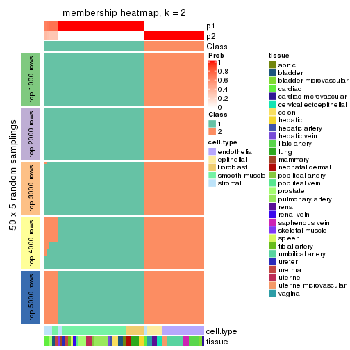
membership_heatmap(res, k = 3)
membership_heatmap(res, k = 4)
membership_heatmap(res, k = 5)
membership_heatmap(res, k = 6)
As soon as we have had the classes for columns, we can look for signatures which are significantly different between classes which can be candidate marks for certain classes. Following are the heatmaps for signatures.
Signature heatmaps where rows are scaled:
get_signatures(res, k = 2)
get_signatures(res, k = 3)
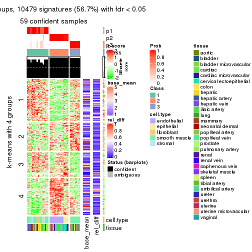
get_signatures(res, k = 4)
get_signatures(res, k = 5)
get_signatures(res, k = 6)
Signature heatmaps where rows are not scaled:
get_signatures(res, k = 2, scale_rows = FALSE)
get_signatures(res, k = 3, scale_rows = FALSE)
get_signatures(res, k = 4, scale_rows = FALSE)
get_signatures(res, k = 5, scale_rows = FALSE)
get_signatures(res, k = 6, scale_rows = FALSE)
Compare the overlap of signatures from different k:
compare_signatures(res)
get_signature() returns a data frame invisibly. TO get the list of signatures, the function
call should be assigned to a variable explicitly. In following code, if plot argument is set
to FALSE, no heatmap is plotted while only the differential analysis is performed.
# code only for demonstration
tb = get_signature(res, k = ..., plot = FALSE)
An example of the output of tb is:
#> which_row fdr mean_1 mean_2 scaled_mean_1 scaled_mean_2 km
#> 1 38 0.042760348 8.373488 9.131774 -0.5533452 0.5164555 1
#> 2 40 0.018707592 7.106213 8.469186 -0.6173731 0.5762149 1
#> 3 55 0.019134737 10.221463 11.207825 -0.6159697 0.5749050 1
#> 4 59 0.006059896 5.921854 7.869574 -0.6899429 0.6439467 1
#> 5 60 0.018055526 8.928898 10.211722 -0.6204761 0.5791110 1
#> 6 98 0.009384629 15.714769 14.887706 0.6635654 -0.6193277 2
...
The columns in tb are:
which_row: row indices corresponding to the input matrix.fdr: FDR for the differential test. mean_x: The mean value in group x.scaled_mean_x: The mean value in group x after rows are scaled.km: Row groups if k-means clustering is applied to rows.UMAP plot which shows how samples are separated.
dimension_reduction(res, k = 2, method = "UMAP")
dimension_reduction(res, k = 3, method = "UMAP")
dimension_reduction(res, k = 4, method = "UMAP")
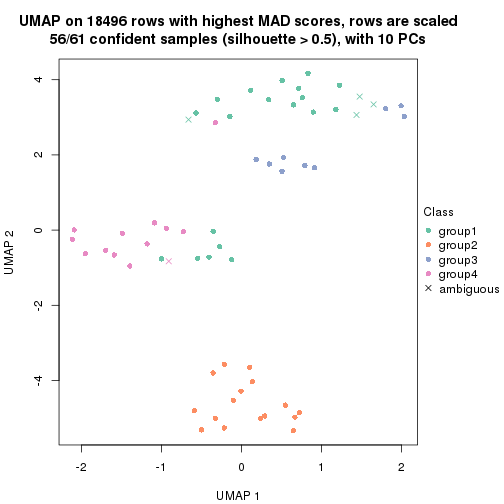
dimension_reduction(res, k = 5, method = "UMAP")

dimension_reduction(res, k = 6, method = "UMAP")
Following heatmap shows how subgroups are split when increasing k:
collect_classes(res)
Test correlation between subgroups and known annotations. If the known annotation is numeric, one-way ANOVA test is applied, and if the known annotation is discrete, chi-squared contingency table test is applied.
test_to_known_factors(res)
#> n cell.type(p) tissue(p) k
#> MAD:skmeans 61 9.94e-12 1.04e-03 2
#> MAD:skmeans 59 1.71e-10 2.53e-05 3
#> MAD:skmeans 56 1.45e-16 1.43e-06 4
#> MAD:skmeans 59 1.57e-20 4.53e-08 5
#> MAD:skmeans 60 5.50e-21 1.05e-09 6
If matrix rows can be associated to genes, consider to use GO_Enrichment(res,
...) to perform function enrichment for the signature genes.
The object with results only for a single top-value method and a single partition method can be extracted as:
res = res_list["MAD", "pam"]
# you can also extract it by
# res = res_list["MAD:pam"]
A summary of res and all the functions that can be applied to it:
res
#> A 'ConsensusPartition' object with k = 2, 3, 4, 5, 6.
#> On a matrix with 18496 rows and 61 columns.
#> Top rows (1000, 2000, 3000, 4000, 5000) are extracted by 'MAD' method.
#> Subgroups are detected by 'pam' method.
#> Performed in total 1250 partitions by row resampling.
#> Best k for subgroups seems to be 5.
#>
#> Following methods can be applied to this 'ConsensusPartition' object:
#> [1] "cola_report" "collect_classes" "collect_plots"
#> [4] "collect_stats" "colnames" "compare_signatures"
#> [7] "consensus_heatmap" "dimension_reduction" "functional_enrichment"
#> [10] "get_anno_col" "get_anno" "get_classes"
#> [13] "get_consensus" "get_matrix" "get_membership"
#> [16] "get_param" "get_signatures" "get_stats"
#> [19] "is_best_k" "is_stable_k" "membership_heatmap"
#> [22] "ncol" "nrow" "plot_ecdf"
#> [25] "rownames" "select_partition_number" "show"
#> [28] "suggest_best_k" "test_to_known_factors"
collect_plots() function collects all the plots made from res for all k (number of partitions)
into one single page to provide an easy and fast comparison between different k.
collect_plots(res)
The plots are:
k and the heatmap of
predicted classes for each k.k.k.k.All the plots in panels can be made by individual functions and they are plotted later in this section.
select_partition_number() produces several plots showing different
statistics for choosing “optimized” k. There are following statistics:
k;k, the area increased is defined as \(A_k - A_{k-1}\).The detailed explanations of these statistics can be found in the cola vignette.
Generally speaking, lower PAC score, higher mean silhouette score or higher
concordance corresponds to better partition. Rand index and Jaccard index
measure how similar the current partition is compared to partition with k-1.
If they are too similar, we won't accept k is better than k-1.
select_partition_number(res)
The numeric values for all these statistics can be obtained by get_stats().
get_stats(res)
#> k 1-PAC mean_silhouette concordance area_increased Rand Jaccard
#> 2 2 1.000 0.987 0.994 0.4130 0.591 0.591
#> 3 3 0.735 0.911 0.925 0.5272 0.744 0.567
#> 4 4 0.786 0.643 0.820 0.1529 0.893 0.701
#> 5 5 0.956 0.932 0.971 0.0845 0.881 0.605
#> 6 6 0.877 0.781 0.884 0.0453 0.970 0.857
suggest_best_k() suggests the best \(k\) based on these statistics. The rules are as follows:
NA.suggest_best_k(res)
#> [1] 5
#> attr(,"optional")
#> [1] 2
There is also optional best \(k\) = 2 that is worth to check.
Following shows the table of the partitions (You need to click the show/hide
code output link to see it). The membership matrix (columns with name p*)
is inferred by
clue::cl_consensus()
function with the SE method. Basically the value in the membership matrix
represents the probability to belong to a certain group. The finall class
label for an item is determined with the group with highest probability it
belongs to.
In get_classes() function, the entropy is calculated from the membership
matrix and the silhouette score is calculated from the consensus matrix.
cbind(get_classes(res, k = 2), get_membership(res, k = 2))
#> class entropy silhouette p1 p2
#> GSM72644 2 0.0000 0.997 0.000 1.000
#> GSM72647 2 0.0000 0.997 0.000 1.000
#> GSM72657 2 0.0000 0.997 0.000 1.000
#> GSM72658 2 0.0000 0.997 0.000 1.000
#> GSM72659 2 0.0000 0.997 0.000 1.000
#> GSM72660 2 0.0000 0.997 0.000 1.000
#> GSM72683 2 0.0000 0.997 0.000 1.000
#> GSM72684 2 0.0000 0.997 0.000 1.000
#> GSM72686 2 0.0000 0.997 0.000 1.000
#> GSM72687 2 0.0000 0.997 0.000 1.000
#> GSM72688 2 0.0000 0.997 0.000 1.000
#> GSM72689 2 0.0000 0.997 0.000 1.000
#> GSM72690 2 0.0000 0.997 0.000 1.000
#> GSM72691 2 0.0000 0.997 0.000 1.000
#> GSM72692 2 0.0000 0.997 0.000 1.000
#> GSM72693 2 0.0000 0.997 0.000 1.000
#> GSM72645 1 0.0000 0.993 1.000 0.000
#> GSM72646 1 0.0376 0.989 0.996 0.004
#> GSM72678 2 0.2423 0.958 0.040 0.960
#> GSM72679 1 0.0000 0.993 1.000 0.000
#> GSM72699 1 0.0000 0.993 1.000 0.000
#> GSM72700 1 0.0000 0.993 1.000 0.000
#> GSM72654 1 0.0000 0.993 1.000 0.000
#> GSM72655 1 0.0000 0.993 1.000 0.000
#> GSM72661 1 0.0000 0.993 1.000 0.000
#> GSM72662 1 0.0000 0.993 1.000 0.000
#> GSM72663 1 0.0000 0.993 1.000 0.000
#> GSM72665 1 0.0000 0.993 1.000 0.000
#> GSM72666 1 0.0000 0.993 1.000 0.000
#> GSM72640 1 0.0000 0.993 1.000 0.000
#> GSM72641 1 0.0000 0.993 1.000 0.000
#> GSM72642 1 0.0000 0.993 1.000 0.000
#> GSM72643 1 0.2423 0.955 0.960 0.040
#> GSM72651 1 0.0000 0.993 1.000 0.000
#> GSM72652 1 0.0000 0.993 1.000 0.000
#> GSM72653 1 0.0000 0.993 1.000 0.000
#> GSM72656 1 0.0000 0.993 1.000 0.000
#> GSM72667 1 0.0000 0.993 1.000 0.000
#> GSM72668 1 0.0000 0.993 1.000 0.000
#> GSM72669 1 0.0000 0.993 1.000 0.000
#> GSM72670 1 0.0000 0.993 1.000 0.000
#> GSM72671 1 0.0000 0.993 1.000 0.000
#> GSM72672 1 0.0000 0.993 1.000 0.000
#> GSM72696 1 0.0000 0.993 1.000 0.000
#> GSM72697 1 0.0000 0.993 1.000 0.000
#> GSM72674 1 0.0000 0.993 1.000 0.000
#> GSM72675 1 0.0000 0.993 1.000 0.000
#> GSM72676 1 0.0000 0.993 1.000 0.000
#> GSM72677 1 0.0000 0.993 1.000 0.000
#> GSM72680 1 0.0000 0.993 1.000 0.000
#> GSM72682 1 0.0000 0.993 1.000 0.000
#> GSM72685 1 0.0000 0.993 1.000 0.000
#> GSM72694 1 0.0000 0.993 1.000 0.000
#> GSM72695 1 0.0000 0.993 1.000 0.000
#> GSM72698 1 0.0000 0.993 1.000 0.000
#> GSM72648 1 0.0000 0.993 1.000 0.000
#> GSM72649 1 0.8081 0.674 0.752 0.248
#> GSM72650 1 0.1184 0.978 0.984 0.016
#> GSM72664 1 0.0000 0.993 1.000 0.000
#> GSM72673 1 0.0000 0.993 1.000 0.000
#> GSM72681 1 0.0000 0.993 1.000 0.000
cbind(get_classes(res, k = 3), get_membership(res, k = 3))
#> class entropy silhouette p1 p2 p3
#> GSM72644 2 0.0000 0.988 0.000 1.000 0.000
#> GSM72647 2 0.0000 0.988 0.000 1.000 0.000
#> GSM72657 2 0.0000 0.988 0.000 1.000 0.000
#> GSM72658 2 0.0000 0.988 0.000 1.000 0.000
#> GSM72659 2 0.0000 0.988 0.000 1.000 0.000
#> GSM72660 2 0.0000 0.988 0.000 1.000 0.000
#> GSM72683 2 0.0000 0.988 0.000 1.000 0.000
#> GSM72684 2 0.0000 0.988 0.000 1.000 0.000
#> GSM72686 2 0.0000 0.988 0.000 1.000 0.000
#> GSM72687 2 0.0000 0.988 0.000 1.000 0.000
#> GSM72688 2 0.0000 0.988 0.000 1.000 0.000
#> GSM72689 2 0.0000 0.988 0.000 1.000 0.000
#> GSM72690 2 0.0000 0.988 0.000 1.000 0.000
#> GSM72691 2 0.0000 0.988 0.000 1.000 0.000
#> GSM72692 2 0.0000 0.988 0.000 1.000 0.000
#> GSM72693 2 0.0000 0.988 0.000 1.000 0.000
#> GSM72645 3 0.6154 0.172 0.408 0.000 0.592
#> GSM72646 3 0.0000 0.721 0.000 0.000 1.000
#> GSM72678 2 0.4931 0.776 0.000 0.768 0.232
#> GSM72679 1 0.4931 0.658 0.768 0.000 0.232
#> GSM72699 3 0.0000 0.721 0.000 0.000 1.000
#> GSM72700 3 0.0000 0.721 0.000 0.000 1.000
#> GSM72654 1 0.0747 0.959 0.984 0.000 0.016
#> GSM72655 1 0.0000 0.976 1.000 0.000 0.000
#> GSM72661 1 0.0000 0.976 1.000 0.000 0.000
#> GSM72662 1 0.0000 0.976 1.000 0.000 0.000
#> GSM72663 1 0.0000 0.976 1.000 0.000 0.000
#> GSM72665 1 0.0000 0.976 1.000 0.000 0.000
#> GSM72666 1 0.0000 0.976 1.000 0.000 0.000
#> GSM72640 1 0.0000 0.976 1.000 0.000 0.000
#> GSM72641 1 0.0000 0.976 1.000 0.000 0.000
#> GSM72642 3 0.4931 0.881 0.232 0.000 0.768
#> GSM72643 3 0.4931 0.881 0.232 0.000 0.768
#> GSM72651 1 0.0000 0.976 1.000 0.000 0.000
#> GSM72652 1 0.0000 0.976 1.000 0.000 0.000
#> GSM72653 1 0.0000 0.976 1.000 0.000 0.000
#> GSM72656 1 0.0000 0.976 1.000 0.000 0.000
#> GSM72667 3 0.4931 0.881 0.232 0.000 0.768
#> GSM72668 3 0.5591 0.807 0.304 0.000 0.696
#> GSM72669 3 0.4931 0.881 0.232 0.000 0.768
#> GSM72670 3 0.4931 0.881 0.232 0.000 0.768
#> GSM72671 3 0.4931 0.881 0.232 0.000 0.768
#> GSM72672 1 0.0000 0.976 1.000 0.000 0.000
#> GSM72696 1 0.0000 0.976 1.000 0.000 0.000
#> GSM72697 1 0.0000 0.976 1.000 0.000 0.000
#> GSM72674 1 0.0000 0.976 1.000 0.000 0.000
#> GSM72675 1 0.0000 0.976 1.000 0.000 0.000
#> GSM72676 1 0.0000 0.976 1.000 0.000 0.000
#> GSM72677 3 0.5178 0.861 0.256 0.000 0.744
#> GSM72680 1 0.0000 0.976 1.000 0.000 0.000
#> GSM72682 1 0.3551 0.788 0.868 0.000 0.132
#> GSM72685 3 0.6111 0.662 0.396 0.000 0.604
#> GSM72694 3 0.4931 0.881 0.232 0.000 0.768
#> GSM72695 1 0.2261 0.891 0.932 0.000 0.068
#> GSM72698 1 0.0000 0.976 1.000 0.000 0.000
#> GSM72648 3 0.4931 0.881 0.232 0.000 0.768
#> GSM72649 3 0.6393 0.786 0.112 0.120 0.768
#> GSM72650 3 0.4931 0.881 0.232 0.000 0.768
#> GSM72664 1 0.0000 0.976 1.000 0.000 0.000
#> GSM72673 3 0.4931 0.881 0.232 0.000 0.768
#> GSM72681 1 0.0000 0.976 1.000 0.000 0.000
cbind(get_classes(res, k = 4), get_membership(res, k = 4))
#> class entropy silhouette p1 p2 p3 p4
#> GSM72644 2 0.000 1.00000 0.000 1.000 0.000 0.000
#> GSM72647 2 0.000 1.00000 0.000 1.000 0.000 0.000
#> GSM72657 2 0.000 1.00000 0.000 1.000 0.000 0.000
#> GSM72658 2 0.000 1.00000 0.000 1.000 0.000 0.000
#> GSM72659 2 0.000 1.00000 0.000 1.000 0.000 0.000
#> GSM72660 2 0.000 1.00000 0.000 1.000 0.000 0.000
#> GSM72683 2 0.000 1.00000 0.000 1.000 0.000 0.000
#> GSM72684 2 0.000 1.00000 0.000 1.000 0.000 0.000
#> GSM72686 2 0.000 1.00000 0.000 1.000 0.000 0.000
#> GSM72687 2 0.000 1.00000 0.000 1.000 0.000 0.000
#> GSM72688 2 0.000 1.00000 0.000 1.000 0.000 0.000
#> GSM72689 2 0.000 1.00000 0.000 1.000 0.000 0.000
#> GSM72690 2 0.000 1.00000 0.000 1.000 0.000 0.000
#> GSM72691 2 0.000 1.00000 0.000 1.000 0.000 0.000
#> GSM72692 2 0.000 1.00000 0.000 1.000 0.000 0.000
#> GSM72693 2 0.000 1.00000 0.000 1.000 0.000 0.000
#> GSM72645 3 0.208 0.40925 0.084 0.000 0.916 0.000
#> GSM72646 3 0.484 0.21532 0.396 0.000 0.604 0.000
#> GSM72678 3 0.484 0.00677 0.000 0.396 0.604 0.000
#> GSM72679 3 0.000 0.35754 0.000 0.000 1.000 0.000
#> GSM72699 3 0.484 0.21532 0.396 0.000 0.604 0.000
#> GSM72700 3 0.484 0.21532 0.396 0.000 0.604 0.000
#> GSM72654 4 0.684 0.62587 0.104 0.000 0.396 0.500
#> GSM72655 3 0.770 -0.49468 0.220 0.000 0.396 0.384
#> GSM72661 4 0.590 0.70426 0.040 0.000 0.396 0.564
#> GSM72662 4 0.590 0.70426 0.040 0.000 0.396 0.564
#> GSM72663 4 0.502 0.68692 0.004 0.000 0.396 0.600
#> GSM72665 4 0.590 0.70426 0.040 0.000 0.396 0.564
#> GSM72666 4 0.590 0.70426 0.040 0.000 0.396 0.564
#> GSM72640 3 0.767 -0.50788 0.212 0.000 0.396 0.392
#> GSM72641 4 0.590 0.70426 0.040 0.000 0.396 0.564
#> GSM72642 1 0.000 0.78936 1.000 0.000 0.000 0.000
#> GSM72643 1 0.494 0.44060 0.564 0.000 0.000 0.436
#> GSM72651 4 0.590 0.70426 0.040 0.000 0.396 0.564
#> GSM72652 4 0.590 0.70426 0.040 0.000 0.396 0.564
#> GSM72653 4 0.590 0.70426 0.040 0.000 0.396 0.564
#> GSM72656 4 0.590 0.70426 0.040 0.000 0.396 0.564
#> GSM72667 1 0.000 0.78936 1.000 0.000 0.000 0.000
#> GSM72668 1 0.198 0.72080 0.928 0.000 0.068 0.004
#> GSM72669 1 0.000 0.78936 1.000 0.000 0.000 0.000
#> GSM72670 1 0.000 0.78936 1.000 0.000 0.000 0.000
#> GSM72671 1 0.000 0.78936 1.000 0.000 0.000 0.000
#> GSM72672 4 0.590 0.70426 0.040 0.000 0.396 0.564
#> GSM72696 4 0.000 0.54216 0.000 0.000 0.000 1.000
#> GSM72697 4 0.000 0.54216 0.000 0.000 0.000 1.000
#> GSM72674 4 0.000 0.54216 0.000 0.000 0.000 1.000
#> GSM72675 4 0.000 0.54216 0.000 0.000 0.000 1.000
#> GSM72676 4 0.000 0.54216 0.000 0.000 0.000 1.000
#> GSM72677 1 0.475 0.45747 0.632 0.000 0.000 0.368
#> GSM72680 4 0.590 0.70426 0.040 0.000 0.396 0.564
#> GSM72682 4 0.398 0.17534 0.240 0.000 0.000 0.760
#> GSM72685 1 0.478 0.26433 0.624 0.000 0.000 0.376
#> GSM72694 4 0.475 -0.25426 0.368 0.000 0.000 0.632
#> GSM72695 4 0.000 0.54216 0.000 0.000 0.000 1.000
#> GSM72698 4 0.000 0.54216 0.000 0.000 0.000 1.000
#> GSM72648 1 0.000 0.78936 1.000 0.000 0.000 0.000
#> GSM72649 1 0.000 0.78936 1.000 0.000 0.000 0.000
#> GSM72650 1 0.000 0.78936 1.000 0.000 0.000 0.000
#> GSM72664 4 0.590 0.70426 0.040 0.000 0.396 0.564
#> GSM72673 1 0.499 0.41428 0.528 0.000 0.000 0.472
#> GSM72681 4 0.583 0.70285 0.036 0.000 0.396 0.568
cbind(get_classes(res, k = 5), get_membership(res, k = 5))
#> class entropy silhouette p1 p2 p3 p4 p5
#> GSM72644 2 0.0000 1.000 0.000 1 0.000 0.000 0.000
#> GSM72647 2 0.0000 1.000 0.000 1 0.000 0.000 0.000
#> GSM72657 2 0.0000 1.000 0.000 1 0.000 0.000 0.000
#> GSM72658 2 0.0000 1.000 0.000 1 0.000 0.000 0.000
#> GSM72659 2 0.0000 1.000 0.000 1 0.000 0.000 0.000
#> GSM72660 2 0.0000 1.000 0.000 1 0.000 0.000 0.000
#> GSM72683 2 0.0000 1.000 0.000 1 0.000 0.000 0.000
#> GSM72684 2 0.0000 1.000 0.000 1 0.000 0.000 0.000
#> GSM72686 2 0.0000 1.000 0.000 1 0.000 0.000 0.000
#> GSM72687 2 0.0000 1.000 0.000 1 0.000 0.000 0.000
#> GSM72688 2 0.0000 1.000 0.000 1 0.000 0.000 0.000
#> GSM72689 2 0.0000 1.000 0.000 1 0.000 0.000 0.000
#> GSM72690 2 0.0000 1.000 0.000 1 0.000 0.000 0.000
#> GSM72691 2 0.0000 1.000 0.000 1 0.000 0.000 0.000
#> GSM72692 2 0.0000 1.000 0.000 1 0.000 0.000 0.000
#> GSM72693 2 0.0000 1.000 0.000 1 0.000 0.000 0.000
#> GSM72645 3 0.0000 0.962 0.000 0 1.000 0.000 0.000
#> GSM72646 3 0.0000 0.962 0.000 0 1.000 0.000 0.000
#> GSM72678 3 0.0000 0.962 0.000 0 1.000 0.000 0.000
#> GSM72679 3 0.2648 0.801 0.152 0 0.848 0.000 0.000
#> GSM72699 3 0.0000 0.962 0.000 0 1.000 0.000 0.000
#> GSM72700 3 0.0000 0.962 0.000 0 1.000 0.000 0.000
#> GSM72654 1 0.1478 0.917 0.936 0 0.000 0.000 0.064
#> GSM72655 1 0.2966 0.776 0.816 0 0.000 0.000 0.184
#> GSM72661 1 0.0000 0.970 1.000 0 0.000 0.000 0.000
#> GSM72662 1 0.0000 0.970 1.000 0 0.000 0.000 0.000
#> GSM72663 1 0.0000 0.970 1.000 0 0.000 0.000 0.000
#> GSM72665 1 0.0000 0.970 1.000 0 0.000 0.000 0.000
#> GSM72666 1 0.0000 0.970 1.000 0 0.000 0.000 0.000
#> GSM72640 1 0.2891 0.788 0.824 0 0.000 0.000 0.176
#> GSM72641 1 0.0000 0.970 1.000 0 0.000 0.000 0.000
#> GSM72642 5 0.0880 0.878 0.000 0 0.000 0.032 0.968
#> GSM72643 4 0.0000 0.957 0.000 0 0.000 1.000 0.000
#> GSM72651 1 0.0000 0.970 1.000 0 0.000 0.000 0.000
#> GSM72652 1 0.0000 0.970 1.000 0 0.000 0.000 0.000
#> GSM72653 1 0.0000 0.970 1.000 0 0.000 0.000 0.000
#> GSM72656 1 0.0000 0.970 1.000 0 0.000 0.000 0.000
#> GSM72667 5 0.0000 0.899 0.000 0 0.000 0.000 1.000
#> GSM72668 5 0.1608 0.842 0.072 0 0.000 0.000 0.928
#> GSM72669 5 0.0000 0.899 0.000 0 0.000 0.000 1.000
#> GSM72670 5 0.0000 0.899 0.000 0 0.000 0.000 1.000
#> GSM72671 5 0.0000 0.899 0.000 0 0.000 0.000 1.000
#> GSM72672 1 0.0000 0.970 1.000 0 0.000 0.000 0.000
#> GSM72696 4 0.1671 0.891 0.076 0 0.000 0.924 0.000
#> GSM72697 4 0.3109 0.724 0.200 0 0.000 0.800 0.000
#> GSM72674 4 0.0000 0.957 0.000 0 0.000 1.000 0.000
#> GSM72675 4 0.0162 0.955 0.004 0 0.000 0.996 0.000
#> GSM72676 4 0.0000 0.957 0.000 0 0.000 1.000 0.000
#> GSM72677 5 0.5365 0.601 0.228 0 0.000 0.116 0.656
#> GSM72680 1 0.0000 0.970 1.000 0 0.000 0.000 0.000
#> GSM72682 4 0.1557 0.913 0.008 0 0.000 0.940 0.052
#> GSM72685 5 0.4171 0.408 0.396 0 0.000 0.000 0.604
#> GSM72694 4 0.0000 0.957 0.000 0 0.000 1.000 0.000
#> GSM72695 4 0.0000 0.957 0.000 0 0.000 1.000 0.000
#> GSM72698 4 0.0000 0.957 0.000 0 0.000 1.000 0.000
#> GSM72648 5 0.0000 0.899 0.000 0 0.000 0.000 1.000
#> GSM72649 5 0.0000 0.899 0.000 0 0.000 0.000 1.000
#> GSM72650 5 0.0000 0.899 0.000 0 0.000 0.000 1.000
#> GSM72664 1 0.0000 0.970 1.000 0 0.000 0.000 0.000
#> GSM72673 4 0.0000 0.957 0.000 0 0.000 1.000 0.000
#> GSM72681 1 0.0000 0.970 1.000 0 0.000 0.000 0.000
cbind(get_classes(res, k = 6), get_membership(res, k = 6))
#> class entropy silhouette p1 p2 p3 p4 p5 p6
#> GSM72644 2 0.3864 0.6615 0.000 0.52 0.000 0.000 0.000 0.480
#> GSM72647 2 0.3864 0.6615 0.000 0.52 0.000 0.000 0.000 0.480
#> GSM72657 2 0.0000 0.8149 0.000 1.00 0.000 0.000 0.000 0.000
#> GSM72658 2 0.0000 0.8149 0.000 1.00 0.000 0.000 0.000 0.000
#> GSM72659 2 0.0000 0.8149 0.000 1.00 0.000 0.000 0.000 0.000
#> GSM72660 2 0.0000 0.8149 0.000 1.00 0.000 0.000 0.000 0.000
#> GSM72683 2 0.3864 0.6615 0.000 0.52 0.000 0.000 0.000 0.480
#> GSM72684 2 0.3864 0.6615 0.000 0.52 0.000 0.000 0.000 0.480
#> GSM72686 2 0.0000 0.8149 0.000 1.00 0.000 0.000 0.000 0.000
#> GSM72687 2 0.0000 0.8149 0.000 1.00 0.000 0.000 0.000 0.000
#> GSM72688 2 0.0000 0.8149 0.000 1.00 0.000 0.000 0.000 0.000
#> GSM72689 2 0.0000 0.8149 0.000 1.00 0.000 0.000 0.000 0.000
#> GSM72690 2 0.0000 0.8149 0.000 1.00 0.000 0.000 0.000 0.000
#> GSM72691 2 0.0000 0.8149 0.000 1.00 0.000 0.000 0.000 0.000
#> GSM72692 2 0.3864 0.6615 0.000 0.52 0.000 0.000 0.000 0.480
#> GSM72693 2 0.3864 0.6615 0.000 0.52 0.000 0.000 0.000 0.480
#> GSM72645 3 0.0000 0.9583 0.000 0.00 1.000 0.000 0.000 0.000
#> GSM72646 3 0.0000 0.9583 0.000 0.00 1.000 0.000 0.000 0.000
#> GSM72678 3 0.0000 0.9583 0.000 0.00 1.000 0.000 0.000 0.000
#> GSM72679 3 0.2378 0.7563 0.152 0.00 0.848 0.000 0.000 0.000
#> GSM72699 3 0.0000 0.9583 0.000 0.00 1.000 0.000 0.000 0.000
#> GSM72700 3 0.0000 0.9583 0.000 0.00 1.000 0.000 0.000 0.000
#> GSM72654 1 0.1387 0.7981 0.932 0.00 0.000 0.000 0.068 0.000
#> GSM72655 1 0.2597 0.6624 0.824 0.00 0.000 0.000 0.176 0.000
#> GSM72661 1 0.0000 0.8471 1.000 0.00 0.000 0.000 0.000 0.000
#> GSM72662 1 0.0000 0.8471 1.000 0.00 0.000 0.000 0.000 0.000
#> GSM72663 1 0.0000 0.8471 1.000 0.00 0.000 0.000 0.000 0.000
#> GSM72665 1 0.0000 0.8471 1.000 0.00 0.000 0.000 0.000 0.000
#> GSM72666 1 0.0000 0.8471 1.000 0.00 0.000 0.000 0.000 0.000
#> GSM72640 1 0.2562 0.6688 0.828 0.00 0.000 0.000 0.172 0.000
#> GSM72641 1 0.2730 0.6128 0.808 0.00 0.000 0.000 0.000 0.192
#> GSM72642 5 0.1498 0.8770 0.000 0.00 0.000 0.032 0.940 0.028
#> GSM72643 4 0.0000 0.9608 0.000 0.00 0.000 1.000 0.000 0.000
#> GSM72651 1 0.0000 0.8471 1.000 0.00 0.000 0.000 0.000 0.000
#> GSM72652 1 0.0000 0.8471 1.000 0.00 0.000 0.000 0.000 0.000
#> GSM72653 1 0.3607 -0.1518 0.652 0.00 0.000 0.000 0.000 0.348
#> GSM72656 6 0.3864 0.5609 0.480 0.00 0.000 0.000 0.000 0.520
#> GSM72667 5 0.0000 0.9184 0.000 0.00 0.000 0.000 1.000 0.000
#> GSM72668 5 0.1556 0.8286 0.080 0.00 0.000 0.000 0.920 0.000
#> GSM72669 5 0.0000 0.9184 0.000 0.00 0.000 0.000 1.000 0.000
#> GSM72670 5 0.0000 0.9184 0.000 0.00 0.000 0.000 1.000 0.000
#> GSM72671 5 0.0260 0.9134 0.008 0.00 0.000 0.000 0.992 0.000
#> GSM72672 6 0.3864 0.5609 0.480 0.00 0.000 0.000 0.000 0.520
#> GSM72696 4 0.1501 0.9033 0.076 0.00 0.000 0.924 0.000 0.000
#> GSM72697 4 0.2793 0.7314 0.200 0.00 0.000 0.800 0.000 0.000
#> GSM72674 4 0.0000 0.9608 0.000 0.00 0.000 1.000 0.000 0.000
#> GSM72675 4 0.0146 0.9587 0.004 0.00 0.000 0.996 0.000 0.000
#> GSM72676 4 0.0000 0.9608 0.000 0.00 0.000 1.000 0.000 0.000
#> GSM72677 6 0.5292 -0.1323 0.000 0.00 0.000 0.108 0.372 0.520
#> GSM72680 6 0.3864 0.5609 0.480 0.00 0.000 0.000 0.000 0.520
#> GSM72682 4 0.1398 0.9168 0.008 0.00 0.000 0.940 0.052 0.000
#> GSM72685 5 0.3869 0.0861 0.000 0.00 0.000 0.000 0.500 0.500
#> GSM72694 4 0.0000 0.9608 0.000 0.00 0.000 1.000 0.000 0.000
#> GSM72695 4 0.0000 0.9608 0.000 0.00 0.000 1.000 0.000 0.000
#> GSM72698 4 0.0000 0.9608 0.000 0.00 0.000 1.000 0.000 0.000
#> GSM72648 5 0.0000 0.9184 0.000 0.00 0.000 0.000 1.000 0.000
#> GSM72649 5 0.0000 0.9184 0.000 0.00 0.000 0.000 1.000 0.000
#> GSM72650 5 0.0000 0.9184 0.000 0.00 0.000 0.000 1.000 0.000
#> GSM72664 1 0.2664 0.6272 0.816 0.00 0.000 0.000 0.000 0.184
#> GSM72673 4 0.0000 0.9608 0.000 0.00 0.000 1.000 0.000 0.000
#> GSM72681 1 0.0363 0.8404 0.988 0.00 0.000 0.000 0.000 0.012
Heatmaps for the consensus matrix. It visualizes the probability of two samples to be in a same group.
consensus_heatmap(res, k = 2)
consensus_heatmap(res, k = 3)
consensus_heatmap(res, k = 4)
consensus_heatmap(res, k = 5)
consensus_heatmap(res, k = 6)
Heatmaps for the membership of samples in all partitions to see how consistent they are:
membership_heatmap(res, k = 2)
membership_heatmap(res, k = 3)

membership_heatmap(res, k = 4)
membership_heatmap(res, k = 5)
membership_heatmap(res, k = 6)
As soon as we have had the classes for columns, we can look for signatures which are significantly different between classes which can be candidate marks for certain classes. Following are the heatmaps for signatures.
Signature heatmaps where rows are scaled:
get_signatures(res, k = 2)
get_signatures(res, k = 3)
get_signatures(res, k = 4)
get_signatures(res, k = 5)
get_signatures(res, k = 6)
Signature heatmaps where rows are not scaled:
get_signatures(res, k = 2, scale_rows = FALSE)
get_signatures(res, k = 3, scale_rows = FALSE)
get_signatures(res, k = 4, scale_rows = FALSE)
get_signatures(res, k = 5, scale_rows = FALSE)
get_signatures(res, k = 6, scale_rows = FALSE)
Compare the overlap of signatures from different k:
compare_signatures(res)
get_signature() returns a data frame invisibly. TO get the list of signatures, the function
call should be assigned to a variable explicitly. In following code, if plot argument is set
to FALSE, no heatmap is plotted while only the differential analysis is performed.
# code only for demonstration
tb = get_signature(res, k = ..., plot = FALSE)
An example of the output of tb is:
#> which_row fdr mean_1 mean_2 scaled_mean_1 scaled_mean_2 km
#> 1 38 0.042760348 8.373488 9.131774 -0.5533452 0.5164555 1
#> 2 40 0.018707592 7.106213 8.469186 -0.6173731 0.5762149 1
#> 3 55 0.019134737 10.221463 11.207825 -0.6159697 0.5749050 1
#> 4 59 0.006059896 5.921854 7.869574 -0.6899429 0.6439467 1
#> 5 60 0.018055526 8.928898 10.211722 -0.6204761 0.5791110 1
#> 6 98 0.009384629 15.714769 14.887706 0.6635654 -0.6193277 2
...
The columns in tb are:
which_row: row indices corresponding to the input matrix.fdr: FDR for the differential test. mean_x: The mean value in group x.scaled_mean_x: The mean value in group x after rows are scaled.km: Row groups if k-means clustering is applied to rows.UMAP plot which shows how samples are separated.
dimension_reduction(res, k = 2, method = "UMAP")
dimension_reduction(res, k = 3, method = "UMAP")
dimension_reduction(res, k = 4, method = "UMAP")
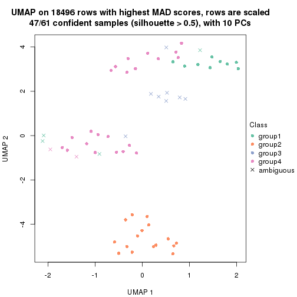
dimension_reduction(res, k = 5, method = "UMAP")
dimension_reduction(res, k = 6, method = "UMAP")
Following heatmap shows how subgroups are split when increasing k:
collect_classes(res)
Test correlation between subgroups and known annotations. If the known annotation is numeric, one-way ANOVA test is applied, and if the known annotation is discrete, chi-squared contingency table test is applied.
test_to_known_factors(res)
#> n cell.type(p) tissue(p) k
#> MAD:pam 61 1.33e-11 9.42e-04 2
#> MAD:pam 60 1.62e-11 1.26e-04 3
#> MAD:pam 47 6.53e-10 4.86e-05 4
#> MAD:pam 60 8.70e-22 3.68e-10 5
#> MAD:pam 58 3.02e-21 6.34e-13 6
If matrix rows can be associated to genes, consider to use GO_Enrichment(res,
...) to perform function enrichment for the signature genes.
The object with results only for a single top-value method and a single partition method can be extracted as:
res = res_list["MAD", "mclust"]
# you can also extract it by
# res = res_list["MAD:mclust"]
A summary of res and all the functions that can be applied to it:
res
#> A 'ConsensusPartition' object with k = 2, 3, 4, 5, 6.
#> On a matrix with 18496 rows and 61 columns.
#> Top rows (1000, 2000, 3000, 4000, 5000) are extracted by 'MAD' method.
#> Subgroups are detected by 'mclust' method.
#> Performed in total 1250 partitions by row resampling.
#> Best k for subgroups seems to be 3.
#>
#> Following methods can be applied to this 'ConsensusPartition' object:
#> [1] "cola_report" "collect_classes" "collect_plots"
#> [4] "collect_stats" "colnames" "compare_signatures"
#> [7] "consensus_heatmap" "dimension_reduction" "functional_enrichment"
#> [10] "get_anno_col" "get_anno" "get_classes"
#> [13] "get_consensus" "get_matrix" "get_membership"
#> [16] "get_param" "get_signatures" "get_stats"
#> [19] "is_best_k" "is_stable_k" "membership_heatmap"
#> [22] "ncol" "nrow" "plot_ecdf"
#> [25] "rownames" "select_partition_number" "show"
#> [28] "suggest_best_k" "test_to_known_factors"
collect_plots() function collects all the plots made from res for all k (number of partitions)
into one single page to provide an easy and fast comparison between different k.
collect_plots(res)
The plots are:
k and the heatmap of
predicted classes for each k.k.k.k.All the plots in panels can be made by individual functions and they are plotted later in this section.
select_partition_number() produces several plots showing different
statistics for choosing “optimized” k. There are following statistics:
k;k, the area increased is defined as \(A_k - A_{k-1}\).The detailed explanations of these statistics can be found in the cola vignette.
Generally speaking, lower PAC score, higher mean silhouette score or higher
concordance corresponds to better partition. Rand index and Jaccard index
measure how similar the current partition is compared to partition with k-1.
If they are too similar, we won't accept k is better than k-1.
select_partition_number(res)
The numeric values for all these statistics can be obtained by get_stats().
get_stats(res)
#> k 1-PAC mean_silhouette concordance area_increased Rand Jaccard
#> 2 2 0.431 0.927 0.921 0.4023 0.607 0.607
#> 3 3 0.681 0.780 0.877 0.4989 0.872 0.789
#> 4 4 0.757 0.728 0.895 0.1677 0.793 0.568
#> 5 5 0.773 0.693 0.819 0.0974 0.872 0.584
#> 6 6 0.758 0.760 0.812 0.0581 0.936 0.716
suggest_best_k() suggests the best \(k\) based on these statistics. The rules are as follows:
NA.suggest_best_k(res)
#> [1] 3
Following shows the table of the partitions (You need to click the show/hide
code output link to see it). The membership matrix (columns with name p*)
is inferred by
clue::cl_consensus()
function with the SE method. Basically the value in the membership matrix
represents the probability to belong to a certain group. The finall class
label for an item is determined with the group with highest probability it
belongs to.
In get_classes() function, the entropy is calculated from the membership
matrix and the silhouette score is calculated from the consensus matrix.
cbind(get_classes(res, k = 2), get_membership(res, k = 2))
#> class entropy silhouette p1 p2
#> GSM72644 2 0.0672 1.000 0.008 0.992
#> GSM72647 2 0.0672 1.000 0.008 0.992
#> GSM72657 2 0.0672 1.000 0.008 0.992
#> GSM72658 2 0.0672 1.000 0.008 0.992
#> GSM72659 2 0.0672 1.000 0.008 0.992
#> GSM72660 2 0.0672 1.000 0.008 0.992
#> GSM72683 2 0.0672 1.000 0.008 0.992
#> GSM72684 2 0.0672 1.000 0.008 0.992
#> GSM72686 2 0.0672 1.000 0.008 0.992
#> GSM72687 2 0.0672 1.000 0.008 0.992
#> GSM72688 2 0.0672 1.000 0.008 0.992
#> GSM72689 2 0.0672 1.000 0.008 0.992
#> GSM72690 2 0.0672 1.000 0.008 0.992
#> GSM72691 2 0.0672 1.000 0.008 0.992
#> GSM72692 2 0.0672 1.000 0.008 0.992
#> GSM72693 2 0.0672 1.000 0.008 0.992
#> GSM72645 1 0.5408 0.798 0.876 0.124
#> GSM72646 1 0.5408 0.798 0.876 0.124
#> GSM72678 1 0.5408 0.798 0.876 0.124
#> GSM72679 1 0.4690 0.820 0.900 0.100
#> GSM72699 1 0.5408 0.798 0.876 0.124
#> GSM72700 1 0.5408 0.798 0.876 0.124
#> GSM72654 1 0.5737 0.930 0.864 0.136
#> GSM72655 1 0.5737 0.930 0.864 0.136
#> GSM72661 1 0.5737 0.930 0.864 0.136
#> GSM72662 1 0.5178 0.924 0.884 0.116
#> GSM72663 1 0.0938 0.886 0.988 0.012
#> GSM72665 1 0.5737 0.930 0.864 0.136
#> GSM72666 1 0.5737 0.930 0.864 0.136
#> GSM72640 1 0.5737 0.930 0.864 0.136
#> GSM72641 1 0.5737 0.930 0.864 0.136
#> GSM72642 1 0.5737 0.930 0.864 0.136
#> GSM72643 1 0.2948 0.903 0.948 0.052
#> GSM72651 1 0.5737 0.930 0.864 0.136
#> GSM72652 1 0.5737 0.930 0.864 0.136
#> GSM72653 1 0.5737 0.930 0.864 0.136
#> GSM72656 1 0.5737 0.930 0.864 0.136
#> GSM72667 1 0.5737 0.930 0.864 0.136
#> GSM72668 1 0.5737 0.930 0.864 0.136
#> GSM72669 1 0.5737 0.930 0.864 0.136
#> GSM72670 1 0.5737 0.930 0.864 0.136
#> GSM72671 1 0.5737 0.930 0.864 0.136
#> GSM72672 1 0.5737 0.930 0.864 0.136
#> GSM72696 1 0.0000 0.881 1.000 0.000
#> GSM72697 1 0.0000 0.881 1.000 0.000
#> GSM72674 1 0.0000 0.881 1.000 0.000
#> GSM72675 1 0.0000 0.881 1.000 0.000
#> GSM72676 1 0.0000 0.881 1.000 0.000
#> GSM72677 1 0.5629 0.929 0.868 0.132
#> GSM72680 1 0.5737 0.930 0.864 0.136
#> GSM72682 1 0.5737 0.930 0.864 0.136
#> GSM72685 1 0.5737 0.930 0.864 0.136
#> GSM72694 1 0.0000 0.881 1.000 0.000
#> GSM72695 1 0.0000 0.881 1.000 0.000
#> GSM72698 1 0.0000 0.881 1.000 0.000
#> GSM72648 1 0.5737 0.930 0.864 0.136
#> GSM72649 1 0.5737 0.930 0.864 0.136
#> GSM72650 1 0.5737 0.930 0.864 0.136
#> GSM72664 1 0.5737 0.930 0.864 0.136
#> GSM72673 1 0.0000 0.881 1.000 0.000
#> GSM72681 1 0.5737 0.930 0.864 0.136
cbind(get_classes(res, k = 3), get_membership(res, k = 3))
#> class entropy silhouette p1 p2 p3
#> GSM72644 2 0.0000 1.000 0.000 1.000 0.000
#> GSM72647 2 0.0000 1.000 0.000 1.000 0.000
#> GSM72657 2 0.0000 1.000 0.000 1.000 0.000
#> GSM72658 2 0.0000 1.000 0.000 1.000 0.000
#> GSM72659 2 0.0000 1.000 0.000 1.000 0.000
#> GSM72660 2 0.0000 1.000 0.000 1.000 0.000
#> GSM72683 2 0.0000 1.000 0.000 1.000 0.000
#> GSM72684 2 0.0000 1.000 0.000 1.000 0.000
#> GSM72686 2 0.0000 1.000 0.000 1.000 0.000
#> GSM72687 2 0.0000 1.000 0.000 1.000 0.000
#> GSM72688 2 0.0000 1.000 0.000 1.000 0.000
#> GSM72689 2 0.0000 1.000 0.000 1.000 0.000
#> GSM72690 2 0.0000 1.000 0.000 1.000 0.000
#> GSM72691 2 0.0000 1.000 0.000 1.000 0.000
#> GSM72692 2 0.0000 1.000 0.000 1.000 0.000
#> GSM72693 2 0.0000 1.000 0.000 1.000 0.000
#> GSM72645 3 0.2448 1.000 0.000 0.076 0.924
#> GSM72646 3 0.2448 1.000 0.000 0.076 0.924
#> GSM72678 3 0.2448 1.000 0.000 0.076 0.924
#> GSM72679 3 0.2448 1.000 0.000 0.076 0.924
#> GSM72699 3 0.2448 1.000 0.000 0.076 0.924
#> GSM72700 3 0.2448 1.000 0.000 0.076 0.924
#> GSM72654 1 0.6286 0.395 0.536 0.000 0.464
#> GSM72655 1 0.6286 0.395 0.536 0.000 0.464
#> GSM72661 1 0.0000 0.784 1.000 0.000 0.000
#> GSM72662 1 0.0000 0.784 1.000 0.000 0.000
#> GSM72663 1 0.2261 0.766 0.932 0.000 0.068
#> GSM72665 1 0.6267 0.407 0.548 0.000 0.452
#> GSM72666 1 0.6280 0.399 0.540 0.000 0.460
#> GSM72640 1 0.0892 0.783 0.980 0.000 0.020
#> GSM72641 1 0.2066 0.772 0.940 0.000 0.060
#> GSM72642 1 0.2066 0.772 0.940 0.000 0.060
#> GSM72643 1 0.4062 0.731 0.836 0.000 0.164
#> GSM72651 1 0.0000 0.784 1.000 0.000 0.000
#> GSM72652 1 0.0000 0.784 1.000 0.000 0.000
#> GSM72653 1 0.0000 0.784 1.000 0.000 0.000
#> GSM72656 1 0.0000 0.784 1.000 0.000 0.000
#> GSM72667 1 0.6235 0.431 0.564 0.000 0.436
#> GSM72668 1 0.6111 0.484 0.604 0.000 0.396
#> GSM72669 1 0.6286 0.395 0.536 0.000 0.464
#> GSM72670 1 0.6286 0.395 0.536 0.000 0.464
#> GSM72671 1 0.6286 0.395 0.536 0.000 0.464
#> GSM72672 1 0.0424 0.783 0.992 0.000 0.008
#> GSM72696 1 0.2261 0.765 0.932 0.000 0.068
#> GSM72697 1 0.3551 0.734 0.868 0.000 0.132
#> GSM72674 1 0.3752 0.728 0.856 0.000 0.144
#> GSM72675 1 0.3686 0.729 0.860 0.000 0.140
#> GSM72676 1 0.3686 0.729 0.860 0.000 0.140
#> GSM72677 1 0.0424 0.783 0.992 0.000 0.008
#> GSM72680 1 0.0000 0.784 1.000 0.000 0.000
#> GSM72682 1 0.1289 0.783 0.968 0.000 0.032
#> GSM72685 1 0.2066 0.772 0.940 0.000 0.060
#> GSM72694 1 0.3816 0.728 0.852 0.000 0.148
#> GSM72695 1 0.3752 0.728 0.856 0.000 0.144
#> GSM72698 1 0.3686 0.729 0.860 0.000 0.140
#> GSM72648 1 0.4750 0.679 0.784 0.000 0.216
#> GSM72649 1 0.6309 0.314 0.500 0.000 0.500
#> GSM72650 1 0.6309 0.324 0.504 0.000 0.496
#> GSM72664 1 0.2356 0.768 0.928 0.000 0.072
#> GSM72673 1 0.3816 0.728 0.852 0.000 0.148
#> GSM72681 1 0.0000 0.784 1.000 0.000 0.000
cbind(get_classes(res, k = 4), get_membership(res, k = 4))
#> class entropy silhouette p1 p2 p3 p4
#> GSM72644 2 0.0000 1.0000 0.000 1 0.000 0.000
#> GSM72647 2 0.0000 1.0000 0.000 1 0.000 0.000
#> GSM72657 2 0.0000 1.0000 0.000 1 0.000 0.000
#> GSM72658 2 0.0000 1.0000 0.000 1 0.000 0.000
#> GSM72659 2 0.0000 1.0000 0.000 1 0.000 0.000
#> GSM72660 2 0.0000 1.0000 0.000 1 0.000 0.000
#> GSM72683 2 0.0000 1.0000 0.000 1 0.000 0.000
#> GSM72684 2 0.0000 1.0000 0.000 1 0.000 0.000
#> GSM72686 2 0.0000 1.0000 0.000 1 0.000 0.000
#> GSM72687 2 0.0000 1.0000 0.000 1 0.000 0.000
#> GSM72688 2 0.0000 1.0000 0.000 1 0.000 0.000
#> GSM72689 2 0.0000 1.0000 0.000 1 0.000 0.000
#> GSM72690 2 0.0000 1.0000 0.000 1 0.000 0.000
#> GSM72691 2 0.0000 1.0000 0.000 1 0.000 0.000
#> GSM72692 2 0.0000 1.0000 0.000 1 0.000 0.000
#> GSM72693 2 0.0000 1.0000 0.000 1 0.000 0.000
#> GSM72645 3 0.0000 0.8760 0.000 0 1.000 0.000
#> GSM72646 3 0.0000 0.8760 0.000 0 1.000 0.000
#> GSM72678 3 0.3907 0.6909 0.232 0 0.768 0.000
#> GSM72679 3 0.4193 0.6531 0.268 0 0.732 0.000
#> GSM72699 3 0.0000 0.8760 0.000 0 1.000 0.000
#> GSM72700 3 0.0000 0.8760 0.000 0 1.000 0.000
#> GSM72654 1 0.0000 0.8050 1.000 0 0.000 0.000
#> GSM72655 1 0.0000 0.8050 1.000 0 0.000 0.000
#> GSM72661 4 0.4877 0.3817 0.408 0 0.000 0.592
#> GSM72662 4 0.4804 0.4290 0.384 0 0.000 0.616
#> GSM72663 4 0.1211 0.7511 0.040 0 0.000 0.960
#> GSM72665 1 0.2216 0.7413 0.908 0 0.000 0.092
#> GSM72666 1 0.2281 0.7371 0.904 0 0.000 0.096
#> GSM72640 1 0.4855 0.1817 0.600 0 0.000 0.400
#> GSM72641 1 0.0707 0.8036 0.980 0 0.000 0.020
#> GSM72642 1 0.3688 0.6294 0.792 0 0.000 0.208
#> GSM72643 4 0.0336 0.7562 0.008 0 0.000 0.992
#> GSM72651 4 0.4877 0.3817 0.408 0 0.000 0.592
#> GSM72652 4 0.4877 0.3817 0.408 0 0.000 0.592
#> GSM72653 1 0.4985 -0.0722 0.532 0 0.000 0.468
#> GSM72656 1 0.4994 -0.1230 0.520 0 0.000 0.480
#> GSM72667 1 0.0524 0.8059 0.988 0 0.008 0.004
#> GSM72668 1 0.0000 0.8050 1.000 0 0.000 0.000
#> GSM72669 1 0.0921 0.7991 0.972 0 0.028 0.000
#> GSM72670 1 0.0592 0.8024 0.984 0 0.016 0.000
#> GSM72671 1 0.0000 0.8050 1.000 0 0.000 0.000
#> GSM72672 4 0.4941 0.3103 0.436 0 0.000 0.564
#> GSM72696 4 0.4250 0.5841 0.276 0 0.000 0.724
#> GSM72697 4 0.0000 0.7561 0.000 0 0.000 1.000
#> GSM72674 4 0.0000 0.7561 0.000 0 0.000 1.000
#> GSM72675 4 0.0000 0.7561 0.000 0 0.000 1.000
#> GSM72676 4 0.0000 0.7561 0.000 0 0.000 1.000
#> GSM72677 4 0.4933 0.3236 0.432 0 0.000 0.568
#> GSM72680 1 0.4804 0.2254 0.616 0 0.000 0.384
#> GSM72682 4 0.3907 0.6314 0.232 0 0.000 0.768
#> GSM72685 1 0.0707 0.8036 0.980 0 0.000 0.020
#> GSM72694 4 0.0000 0.7561 0.000 0 0.000 1.000
#> GSM72695 4 0.0000 0.7561 0.000 0 0.000 1.000
#> GSM72698 4 0.0000 0.7561 0.000 0 0.000 1.000
#> GSM72648 1 0.1297 0.8021 0.964 0 0.016 0.020
#> GSM72649 1 0.1022 0.7976 0.968 0 0.032 0.000
#> GSM72650 1 0.1022 0.7976 0.968 0 0.032 0.000
#> GSM72664 1 0.0707 0.8036 0.980 0 0.000 0.020
#> GSM72673 4 0.0000 0.7561 0.000 0 0.000 1.000
#> GSM72681 1 0.5000 -0.1937 0.500 0 0.000 0.500
cbind(get_classes(res, k = 5), get_membership(res, k = 5))
#> class entropy silhouette p1 p2 p3 p4 p5
#> GSM72644 2 0.0000 1.000 0.000 1 0.000 0.000 0.000
#> GSM72647 2 0.0000 1.000 0.000 1 0.000 0.000 0.000
#> GSM72657 2 0.0000 1.000 0.000 1 0.000 0.000 0.000
#> GSM72658 2 0.0000 1.000 0.000 1 0.000 0.000 0.000
#> GSM72659 2 0.0000 1.000 0.000 1 0.000 0.000 0.000
#> GSM72660 2 0.0000 1.000 0.000 1 0.000 0.000 0.000
#> GSM72683 2 0.0000 1.000 0.000 1 0.000 0.000 0.000
#> GSM72684 2 0.0000 1.000 0.000 1 0.000 0.000 0.000
#> GSM72686 2 0.0000 1.000 0.000 1 0.000 0.000 0.000
#> GSM72687 2 0.0000 1.000 0.000 1 0.000 0.000 0.000
#> GSM72688 2 0.0000 1.000 0.000 1 0.000 0.000 0.000
#> GSM72689 2 0.0000 1.000 0.000 1 0.000 0.000 0.000
#> GSM72690 2 0.0000 1.000 0.000 1 0.000 0.000 0.000
#> GSM72691 2 0.0000 1.000 0.000 1 0.000 0.000 0.000
#> GSM72692 2 0.0000 1.000 0.000 1 0.000 0.000 0.000
#> GSM72693 2 0.0000 1.000 0.000 1 0.000 0.000 0.000
#> GSM72645 3 0.0000 0.829 0.000 0 1.000 0.000 0.000
#> GSM72646 3 0.0000 0.829 0.000 0 1.000 0.000 0.000
#> GSM72678 3 0.4030 0.566 0.000 0 0.648 0.000 0.352
#> GSM72679 3 0.4211 0.551 0.000 0 0.636 0.004 0.360
#> GSM72699 3 0.0000 0.829 0.000 0 1.000 0.000 0.000
#> GSM72700 3 0.0000 0.829 0.000 0 1.000 0.000 0.000
#> GSM72654 1 0.3730 0.608 0.712 0 0.000 0.000 0.288
#> GSM72655 1 0.3707 0.609 0.716 0 0.000 0.000 0.284
#> GSM72661 5 0.5095 0.526 0.400 0 0.000 0.040 0.560
#> GSM72662 5 0.5953 0.502 0.336 0 0.000 0.124 0.540
#> GSM72663 4 0.1774 0.837 0.052 0 0.000 0.932 0.016
#> GSM72665 1 0.1894 0.546 0.920 0 0.000 0.008 0.072
#> GSM72666 1 0.3194 0.555 0.832 0 0.000 0.020 0.148
#> GSM72640 5 0.3648 0.577 0.092 0 0.000 0.084 0.824
#> GSM72641 1 0.4118 0.342 0.660 0 0.000 0.004 0.336
#> GSM72642 5 0.4403 0.540 0.384 0 0.000 0.008 0.608
#> GSM72643 4 0.0162 0.868 0.000 0 0.000 0.996 0.004
#> GSM72651 5 0.5213 0.526 0.396 0 0.000 0.048 0.556
#> GSM72652 5 0.5351 0.528 0.380 0 0.000 0.060 0.560
#> GSM72653 5 0.4555 0.547 0.344 0 0.000 0.020 0.636
#> GSM72656 5 0.4524 0.554 0.336 0 0.000 0.020 0.644
#> GSM72667 5 0.2280 0.571 0.120 0 0.000 0.000 0.880
#> GSM72668 5 0.4555 -0.340 0.472 0 0.000 0.008 0.520
#> GSM72669 5 0.2037 0.503 0.064 0 0.012 0.004 0.920
#> GSM72670 5 0.0671 0.556 0.016 0 0.000 0.004 0.980
#> GSM72671 1 0.4030 0.568 0.648 0 0.000 0.000 0.352
#> GSM72672 5 0.5314 0.514 0.192 0 0.000 0.136 0.672
#> GSM72696 4 0.6327 0.129 0.200 0 0.000 0.520 0.280
#> GSM72697 4 0.0807 0.866 0.012 0 0.000 0.976 0.012
#> GSM72674 4 0.0404 0.870 0.000 0 0.000 0.988 0.012
#> GSM72675 4 0.0290 0.870 0.000 0 0.000 0.992 0.008
#> GSM72676 4 0.0000 0.870 0.000 0 0.000 1.000 0.000
#> GSM72677 4 0.6553 -0.207 0.204 0 0.000 0.432 0.364
#> GSM72680 5 0.4517 0.429 0.436 0 0.000 0.008 0.556
#> GSM72682 4 0.3359 0.773 0.072 0 0.000 0.844 0.084
#> GSM72685 1 0.4101 0.288 0.628 0 0.000 0.000 0.372
#> GSM72694 4 0.0000 0.870 0.000 0 0.000 1.000 0.000
#> GSM72695 4 0.0000 0.870 0.000 0 0.000 1.000 0.000
#> GSM72698 4 0.0404 0.870 0.000 0 0.000 0.988 0.012
#> GSM72648 5 0.1195 0.561 0.012 0 0.000 0.028 0.960
#> GSM72649 5 0.0854 0.557 0.008 0 0.012 0.004 0.976
#> GSM72650 5 0.0854 0.556 0.008 0 0.012 0.004 0.976
#> GSM72664 1 0.3949 0.342 0.668 0 0.000 0.000 0.332
#> GSM72673 4 0.0000 0.870 0.000 0 0.000 1.000 0.000
#> GSM72681 5 0.6181 0.391 0.252 0 0.000 0.196 0.552
cbind(get_classes(res, k = 6), get_membership(res, k = 6))
#> class entropy silhouette p1 p2 p3 p4 p5 p6
#> GSM72644 2 0.1814 0.887 0.000 0.900 0.0 0.000 0.000 0.100
#> GSM72647 2 0.1814 0.887 0.000 0.900 0.0 0.000 0.000 0.100
#> GSM72657 2 0.0000 0.898 0.000 1.000 0.0 0.000 0.000 0.000
#> GSM72658 2 0.0000 0.898 0.000 1.000 0.0 0.000 0.000 0.000
#> GSM72659 2 0.0000 0.898 0.000 1.000 0.0 0.000 0.000 0.000
#> GSM72660 2 0.0146 0.898 0.000 0.996 0.0 0.000 0.000 0.004
#> GSM72683 2 0.1814 0.887 0.000 0.900 0.0 0.000 0.000 0.100
#> GSM72684 2 0.1814 0.887 0.000 0.900 0.0 0.000 0.000 0.100
#> GSM72686 2 0.0713 0.891 0.000 0.972 0.0 0.000 0.000 0.028
#> GSM72687 2 0.3266 0.756 0.000 0.728 0.0 0.000 0.000 0.272
#> GSM72688 2 0.2793 0.805 0.000 0.800 0.0 0.000 0.000 0.200
#> GSM72689 2 0.3266 0.756 0.000 0.728 0.0 0.000 0.000 0.272
#> GSM72690 2 0.3266 0.756 0.000 0.728 0.0 0.000 0.000 0.272
#> GSM72691 2 0.0000 0.898 0.000 1.000 0.0 0.000 0.000 0.000
#> GSM72692 2 0.1814 0.887 0.000 0.900 0.0 0.000 0.000 0.100
#> GSM72693 2 0.1814 0.887 0.000 0.900 0.0 0.000 0.000 0.100
#> GSM72645 3 0.0000 0.837 0.000 0.000 1.0 0.000 0.000 0.000
#> GSM72646 3 0.0000 0.837 0.000 0.000 1.0 0.000 0.000 0.000
#> GSM72678 3 0.3975 0.561 0.008 0.000 0.6 0.000 0.392 0.000
#> GSM72679 3 0.3975 0.561 0.008 0.000 0.6 0.000 0.392 0.000
#> GSM72699 3 0.0000 0.837 0.000 0.000 1.0 0.000 0.000 0.000
#> GSM72700 3 0.0000 0.837 0.000 0.000 1.0 0.000 0.000 0.000
#> GSM72654 1 0.3728 0.687 0.652 0.000 0.0 0.000 0.344 0.004
#> GSM72655 1 0.3601 0.711 0.684 0.000 0.0 0.000 0.312 0.004
#> GSM72661 6 0.5181 0.691 0.068 0.000 0.0 0.020 0.308 0.604
#> GSM72662 6 0.5920 0.680 0.052 0.000 0.0 0.092 0.300 0.556
#> GSM72663 4 0.1760 0.878 0.020 0.000 0.0 0.928 0.004 0.048
#> GSM72665 1 0.3555 0.708 0.780 0.000 0.0 0.000 0.044 0.176
#> GSM72666 1 0.4650 0.701 0.688 0.000 0.0 0.000 0.132 0.180
#> GSM72640 5 0.5604 -0.419 0.032 0.000 0.0 0.068 0.508 0.392
#> GSM72641 1 0.1124 0.717 0.956 0.000 0.0 0.000 0.008 0.036
#> GSM72642 6 0.6207 0.468 0.284 0.000 0.0 0.004 0.324 0.388
#> GSM72643 4 0.1333 0.890 0.008 0.000 0.0 0.944 0.048 0.000
#> GSM72651 6 0.5110 0.688 0.060 0.000 0.0 0.020 0.316 0.604
#> GSM72652 6 0.5319 0.695 0.076 0.000 0.0 0.024 0.300 0.600
#> GSM72653 6 0.6283 0.676 0.224 0.000 0.0 0.016 0.316 0.444
#> GSM72656 6 0.6240 0.675 0.208 0.000 0.0 0.016 0.328 0.448
#> GSM72667 5 0.1391 0.824 0.040 0.000 0.0 0.000 0.944 0.016
#> GSM72668 1 0.3315 0.763 0.780 0.000 0.0 0.000 0.200 0.020
#> GSM72669 5 0.1434 0.827 0.048 0.000 0.0 0.000 0.940 0.012
#> GSM72670 5 0.0458 0.854 0.016 0.000 0.0 0.000 0.984 0.000
#> GSM72671 1 0.3898 0.691 0.652 0.000 0.0 0.000 0.336 0.012
#> GSM72672 6 0.7175 0.585 0.164 0.000 0.0 0.192 0.188 0.456
#> GSM72696 4 0.5718 0.381 0.052 0.000 0.0 0.624 0.208 0.116
#> GSM72697 4 0.0291 0.919 0.004 0.000 0.0 0.992 0.000 0.004
#> GSM72674 4 0.0000 0.922 0.000 0.000 0.0 1.000 0.000 0.000
#> GSM72675 4 0.0000 0.922 0.000 0.000 0.0 1.000 0.000 0.000
#> GSM72676 4 0.0000 0.922 0.000 0.000 0.0 1.000 0.000 0.000
#> GSM72677 6 0.6886 0.520 0.124 0.000 0.0 0.280 0.128 0.468
#> GSM72680 6 0.5786 0.530 0.436 0.000 0.0 0.020 0.104 0.440
#> GSM72682 4 0.4109 0.651 0.012 0.000 0.0 0.736 0.212 0.040
#> GSM72685 1 0.3062 0.733 0.836 0.000 0.0 0.000 0.112 0.052
#> GSM72694 4 0.0000 0.922 0.000 0.000 0.0 1.000 0.000 0.000
#> GSM72695 4 0.0000 0.922 0.000 0.000 0.0 1.000 0.000 0.000
#> GSM72698 4 0.0000 0.922 0.000 0.000 0.0 1.000 0.000 0.000
#> GSM72648 5 0.0146 0.843 0.004 0.000 0.0 0.000 0.996 0.000
#> GSM72649 5 0.0458 0.854 0.016 0.000 0.0 0.000 0.984 0.000
#> GSM72650 5 0.0458 0.854 0.016 0.000 0.0 0.000 0.984 0.000
#> GSM72664 1 0.1092 0.723 0.960 0.000 0.0 0.000 0.020 0.020
#> GSM72673 4 0.0000 0.922 0.000 0.000 0.0 1.000 0.000 0.000
#> GSM72681 6 0.6569 0.677 0.116 0.000 0.0 0.100 0.272 0.512
Heatmaps for the consensus matrix. It visualizes the probability of two samples to be in a same group.
consensus_heatmap(res, k = 2)
consensus_heatmap(res, k = 3)
consensus_heatmap(res, k = 4)
consensus_heatmap(res, k = 5)

consensus_heatmap(res, k = 6)
Heatmaps for the membership of samples in all partitions to see how consistent they are:
membership_heatmap(res, k = 2)
membership_heatmap(res, k = 3)
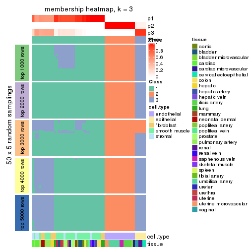
membership_heatmap(res, k = 4)
membership_heatmap(res, k = 5)
membership_heatmap(res, k = 6)
As soon as we have had the classes for columns, we can look for signatures which are significantly different between classes which can be candidate marks for certain classes. Following are the heatmaps for signatures.
Signature heatmaps where rows are scaled:
get_signatures(res, k = 2)
get_signatures(res, k = 3)
get_signatures(res, k = 4)
get_signatures(res, k = 5)
get_signatures(res, k = 6)
Signature heatmaps where rows are not scaled:
get_signatures(res, k = 2, scale_rows = FALSE)
get_signatures(res, k = 3, scale_rows = FALSE)
get_signatures(res, k = 4, scale_rows = FALSE)
get_signatures(res, k = 5, scale_rows = FALSE)
get_signatures(res, k = 6, scale_rows = FALSE)
Compare the overlap of signatures from different k:
compare_signatures(res)
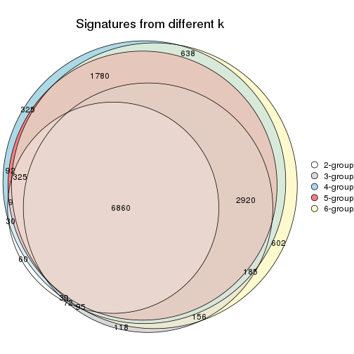
get_signature() returns a data frame invisibly. TO get the list of signatures, the function
call should be assigned to a variable explicitly. In following code, if plot argument is set
to FALSE, no heatmap is plotted while only the differential analysis is performed.
# code only for demonstration
tb = get_signature(res, k = ..., plot = FALSE)
An example of the output of tb is:
#> which_row fdr mean_1 mean_2 scaled_mean_1 scaled_mean_2 km
#> 1 38 0.042760348 8.373488 9.131774 -0.5533452 0.5164555 1
#> 2 40 0.018707592 7.106213 8.469186 -0.6173731 0.5762149 1
#> 3 55 0.019134737 10.221463 11.207825 -0.6159697 0.5749050 1
#> 4 59 0.006059896 5.921854 7.869574 -0.6899429 0.6439467 1
#> 5 60 0.018055526 8.928898 10.211722 -0.6204761 0.5791110 1
#> 6 98 0.009384629 15.714769 14.887706 0.6635654 -0.6193277 2
...
The columns in tb are:
which_row: row indices corresponding to the input matrix.fdr: FDR for the differential test. mean_x: The mean value in group x.scaled_mean_x: The mean value in group x after rows are scaled.km: Row groups if k-means clustering is applied to rows.UMAP plot which shows how samples are separated.
dimension_reduction(res, k = 2, method = "UMAP")
dimension_reduction(res, k = 3, method = "UMAP")
dimension_reduction(res, k = 4, method = "UMAP")
dimension_reduction(res, k = 5, method = "UMAP")
dimension_reduction(res, k = 6, method = "UMAP")
Following heatmap shows how subgroups are split when increasing k:
collect_classes(res)

Test correlation between subgroups and known annotations. If the known annotation is numeric, one-way ANOVA test is applied, and if the known annotation is discrete, chi-squared contingency table test is applied.
test_to_known_factors(res)
#> n cell.type(p) tissue(p) k
#> MAD:mclust 61 1.79e-12 4.63e-04 2
#> MAD:mclust 50 4.27e-18 7.16e-05 3
#> MAD:mclust 50 3.81e-17 1.99e-08 4
#> MAD:mclust 53 2.68e-19 2.43e-08 5
#> MAD:mclust 58 8.92e-19 5.72e-09 6
If matrix rows can be associated to genes, consider to use GO_Enrichment(res,
...) to perform function enrichment for the signature genes.
The object with results only for a single top-value method and a single partition method can be extracted as:
res = res_list["MAD", "NMF"]
# you can also extract it by
# res = res_list["MAD:NMF"]
A summary of res and all the functions that can be applied to it:
res
#> A 'ConsensusPartition' object with k = 2, 3, 4, 5, 6.
#> On a matrix with 18496 rows and 61 columns.
#> Top rows (1000, 2000, 3000, 4000, 5000) are extracted by 'MAD' method.
#> Subgroups are detected by 'NMF' method.
#> Performed in total 1250 partitions by row resampling.
#> Best k for subgroups seems to be 4.
#>
#> Following methods can be applied to this 'ConsensusPartition' object:
#> [1] "cola_report" "collect_classes" "collect_plots"
#> [4] "collect_stats" "colnames" "compare_signatures"
#> [7] "consensus_heatmap" "dimension_reduction" "functional_enrichment"
#> [10] "get_anno_col" "get_anno" "get_classes"
#> [13] "get_consensus" "get_matrix" "get_membership"
#> [16] "get_param" "get_signatures" "get_stats"
#> [19] "is_best_k" "is_stable_k" "membership_heatmap"
#> [22] "ncol" "nrow" "plot_ecdf"
#> [25] "rownames" "select_partition_number" "show"
#> [28] "suggest_best_k" "test_to_known_factors"
collect_plots() function collects all the plots made from res for all k (number of partitions)
into one single page to provide an easy and fast comparison between different k.
collect_plots(res)
The plots are:
k and the heatmap of
predicted classes for each k.k.k.k.All the plots in panels can be made by individual functions and they are plotted later in this section.
select_partition_number() produces several plots showing different
statistics for choosing “optimized” k. There are following statistics:
k;k, the area increased is defined as \(A_k - A_{k-1}\).The detailed explanations of these statistics can be found in the cola vignette.
Generally speaking, lower PAC score, higher mean silhouette score or higher
concordance corresponds to better partition. Rand index and Jaccard index
measure how similar the current partition is compared to partition with k-1.
If they are too similar, we won't accept k is better than k-1.
select_partition_number(res)
The numeric values for all these statistics can be obtained by get_stats().
get_stats(res)
#> k 1-PAC mean_silhouette concordance area_increased Rand Jaccard
#> 2 2 0.868 0.936 0.972 0.4513 0.541 0.541
#> 3 3 0.661 0.773 0.876 0.4040 0.776 0.592
#> 4 4 0.942 0.899 0.959 0.1351 0.946 0.840
#> 5 5 0.810 0.784 0.872 0.0829 0.886 0.623
#> 6 6 0.807 0.807 0.849 0.0490 0.964 0.826
suggest_best_k() suggests the best \(k\) based on these statistics. The rules are as follows:
NA.suggest_best_k(res)
#> [1] 4
Following shows the table of the partitions (You need to click the show/hide
code output link to see it). The membership matrix (columns with name p*)
is inferred by
clue::cl_consensus()
function with the SE method. Basically the value in the membership matrix
represents the probability to belong to a certain group. The finall class
label for an item is determined with the group with highest probability it
belongs to.
In get_classes() function, the entropy is calculated from the membership
matrix and the silhouette score is calculated from the consensus matrix.
cbind(get_classes(res, k = 2), get_membership(res, k = 2))
#> class entropy silhouette p1 p2
#> GSM72644 2 0.0000 0.942 0.000 1.000
#> GSM72647 2 0.0000 0.942 0.000 1.000
#> GSM72657 2 0.0000 0.942 0.000 1.000
#> GSM72658 2 0.0000 0.942 0.000 1.000
#> GSM72659 2 0.0000 0.942 0.000 1.000
#> GSM72660 2 0.0000 0.942 0.000 1.000
#> GSM72683 2 0.0000 0.942 0.000 1.000
#> GSM72684 2 0.0000 0.942 0.000 1.000
#> GSM72686 2 0.0000 0.942 0.000 1.000
#> GSM72687 2 0.0000 0.942 0.000 1.000
#> GSM72688 2 0.0000 0.942 0.000 1.000
#> GSM72689 2 0.0000 0.942 0.000 1.000
#> GSM72690 2 0.0000 0.942 0.000 1.000
#> GSM72691 2 0.0000 0.942 0.000 1.000
#> GSM72692 2 0.0000 0.942 0.000 1.000
#> GSM72693 2 0.0000 0.942 0.000 1.000
#> GSM72645 1 0.7674 0.697 0.776 0.224
#> GSM72646 2 0.4690 0.859 0.100 0.900
#> GSM72678 2 0.0000 0.942 0.000 1.000
#> GSM72679 2 0.8144 0.673 0.252 0.748
#> GSM72699 1 0.0938 0.975 0.988 0.012
#> GSM72700 2 0.9775 0.338 0.412 0.588
#> GSM72654 1 0.0000 0.984 1.000 0.000
#> GSM72655 1 0.0000 0.984 1.000 0.000
#> GSM72661 1 0.0000 0.984 1.000 0.000
#> GSM72662 1 0.0000 0.984 1.000 0.000
#> GSM72663 1 0.0000 0.984 1.000 0.000
#> GSM72665 1 0.0000 0.984 1.000 0.000
#> GSM72666 1 0.0000 0.984 1.000 0.000
#> GSM72640 1 0.0000 0.984 1.000 0.000
#> GSM72641 1 0.0000 0.984 1.000 0.000
#> GSM72642 1 0.0000 0.984 1.000 0.000
#> GSM72643 1 0.3584 0.921 0.932 0.068
#> GSM72651 1 0.0000 0.984 1.000 0.000
#> GSM72652 1 0.0000 0.984 1.000 0.000
#> GSM72653 1 0.0000 0.984 1.000 0.000
#> GSM72656 1 0.0000 0.984 1.000 0.000
#> GSM72667 1 0.0000 0.984 1.000 0.000
#> GSM72668 1 0.0000 0.984 1.000 0.000
#> GSM72669 1 0.0000 0.984 1.000 0.000
#> GSM72670 1 0.0000 0.984 1.000 0.000
#> GSM72671 1 0.0000 0.984 1.000 0.000
#> GSM72672 1 0.0000 0.984 1.000 0.000
#> GSM72696 1 0.0000 0.984 1.000 0.000
#> GSM72697 1 0.0000 0.984 1.000 0.000
#> GSM72674 1 0.0000 0.984 1.000 0.000
#> GSM72675 1 0.0000 0.984 1.000 0.000
#> GSM72676 1 0.0000 0.984 1.000 0.000
#> GSM72677 1 0.0000 0.984 1.000 0.000
#> GSM72680 1 0.0000 0.984 1.000 0.000
#> GSM72682 1 0.0000 0.984 1.000 0.000
#> GSM72685 1 0.0000 0.984 1.000 0.000
#> GSM72694 1 0.5519 0.851 0.872 0.128
#> GSM72695 1 0.0000 0.984 1.000 0.000
#> GSM72698 1 0.0000 0.984 1.000 0.000
#> GSM72648 1 0.0672 0.978 0.992 0.008
#> GSM72649 2 0.9460 0.460 0.364 0.636
#> GSM72650 1 0.1843 0.961 0.972 0.028
#> GSM72664 1 0.0000 0.984 1.000 0.000
#> GSM72673 1 0.4939 0.876 0.892 0.108
#> GSM72681 1 0.0000 0.984 1.000 0.000
cbind(get_classes(res, k = 3), get_membership(res, k = 3))
#> class entropy silhouette p1 p2 p3
#> GSM72644 2 0.0237 0.9130 0.000 0.996 0.004
#> GSM72647 2 0.0237 0.9130 0.000 0.996 0.004
#> GSM72657 2 0.0000 0.9141 0.000 1.000 0.000
#> GSM72658 2 0.0000 0.9141 0.000 1.000 0.000
#> GSM72659 2 0.0000 0.9141 0.000 1.000 0.000
#> GSM72660 2 0.0000 0.9141 0.000 1.000 0.000
#> GSM72683 2 0.0000 0.9141 0.000 1.000 0.000
#> GSM72684 2 0.0237 0.9130 0.000 0.996 0.004
#> GSM72686 2 0.0000 0.9141 0.000 1.000 0.000
#> GSM72687 2 0.0000 0.9141 0.000 1.000 0.000
#> GSM72688 2 0.0000 0.9141 0.000 1.000 0.000
#> GSM72689 2 0.0000 0.9141 0.000 1.000 0.000
#> GSM72690 2 0.0000 0.9141 0.000 1.000 0.000
#> GSM72691 2 0.0000 0.9141 0.000 1.000 0.000
#> GSM72692 2 0.0237 0.9130 0.000 0.996 0.004
#> GSM72693 2 0.0237 0.9130 0.000 0.996 0.004
#> GSM72645 3 0.9715 0.0981 0.380 0.220 0.400
#> GSM72646 2 0.7174 0.4121 0.024 0.516 0.460
#> GSM72678 2 0.6299 0.4178 0.000 0.524 0.476
#> GSM72679 2 0.8250 0.4444 0.080 0.528 0.392
#> GSM72699 3 0.5467 0.5478 0.176 0.032 0.792
#> GSM72700 3 0.7724 -0.0867 0.060 0.352 0.588
#> GSM72654 1 0.0000 0.9330 1.000 0.000 0.000
#> GSM72655 1 0.0000 0.9330 1.000 0.000 0.000
#> GSM72661 1 0.0424 0.9310 0.992 0.000 0.008
#> GSM72662 1 0.3619 0.7539 0.864 0.000 0.136
#> GSM72663 3 0.5810 0.6967 0.336 0.000 0.664
#> GSM72665 1 0.0000 0.9330 1.000 0.000 0.000
#> GSM72666 1 0.0000 0.9330 1.000 0.000 0.000
#> GSM72640 1 0.0424 0.9310 0.992 0.000 0.008
#> GSM72641 1 0.0000 0.9330 1.000 0.000 0.000
#> GSM72642 1 0.0237 0.9323 0.996 0.000 0.004
#> GSM72643 3 0.4750 0.7451 0.216 0.000 0.784
#> GSM72651 1 0.0892 0.9222 0.980 0.000 0.020
#> GSM72652 1 0.0592 0.9287 0.988 0.000 0.012
#> GSM72653 1 0.0424 0.9310 0.992 0.000 0.008
#> GSM72656 1 0.0747 0.9260 0.984 0.000 0.016
#> GSM72667 1 0.0000 0.9330 1.000 0.000 0.000
#> GSM72668 1 0.0000 0.9330 1.000 0.000 0.000
#> GSM72669 1 0.0475 0.9264 0.992 0.004 0.004
#> GSM72670 1 0.0000 0.9330 1.000 0.000 0.000
#> GSM72671 1 0.0000 0.9330 1.000 0.000 0.000
#> GSM72672 1 0.0892 0.9222 0.980 0.000 0.020
#> GSM72696 3 0.5465 0.7330 0.288 0.000 0.712
#> GSM72697 3 0.6045 0.6436 0.380 0.000 0.620
#> GSM72674 3 0.5497 0.7305 0.292 0.000 0.708
#> GSM72675 3 0.5988 0.6607 0.368 0.000 0.632
#> GSM72676 3 0.5016 0.7472 0.240 0.000 0.760
#> GSM72677 3 0.6204 0.5691 0.424 0.000 0.576
#> GSM72680 1 0.0424 0.9310 0.992 0.000 0.008
#> GSM72682 3 0.4235 0.7334 0.176 0.000 0.824
#> GSM72685 1 0.0000 0.9330 1.000 0.000 0.000
#> GSM72694 3 0.2261 0.6684 0.068 0.000 0.932
#> GSM72695 3 0.5016 0.7472 0.240 0.000 0.760
#> GSM72698 3 0.6045 0.6436 0.380 0.000 0.620
#> GSM72648 1 0.6398 -0.1599 0.580 0.004 0.416
#> GSM72649 2 0.5012 0.6368 0.204 0.788 0.008
#> GSM72650 1 0.2384 0.8545 0.936 0.056 0.008
#> GSM72664 1 0.0000 0.9330 1.000 0.000 0.000
#> GSM72673 3 0.3879 0.7220 0.152 0.000 0.848
#> GSM72681 1 0.6026 0.0282 0.624 0.000 0.376
cbind(get_classes(res, k = 4), get_membership(res, k = 4))
#> class entropy silhouette p1 p2 p3 p4
#> GSM72644 2 0.0000 0.9633 0.000 1.000 0.000 0.000
#> GSM72647 2 0.0000 0.9633 0.000 1.000 0.000 0.000
#> GSM72657 2 0.0000 0.9633 0.000 1.000 0.000 0.000
#> GSM72658 2 0.0000 0.9633 0.000 1.000 0.000 0.000
#> GSM72659 2 0.0000 0.9633 0.000 1.000 0.000 0.000
#> GSM72660 2 0.0000 0.9633 0.000 1.000 0.000 0.000
#> GSM72683 2 0.0000 0.9633 0.000 1.000 0.000 0.000
#> GSM72684 2 0.0000 0.9633 0.000 1.000 0.000 0.000
#> GSM72686 2 0.0000 0.9633 0.000 1.000 0.000 0.000
#> GSM72687 2 0.0000 0.9633 0.000 1.000 0.000 0.000
#> GSM72688 2 0.0000 0.9633 0.000 1.000 0.000 0.000
#> GSM72689 2 0.0000 0.9633 0.000 1.000 0.000 0.000
#> GSM72690 2 0.0000 0.9633 0.000 1.000 0.000 0.000
#> GSM72691 2 0.0000 0.9633 0.000 1.000 0.000 0.000
#> GSM72692 2 0.0000 0.9633 0.000 1.000 0.000 0.000
#> GSM72693 2 0.0000 0.9633 0.000 1.000 0.000 0.000
#> GSM72645 3 0.0188 0.9979 0.004 0.000 0.996 0.000
#> GSM72646 3 0.0188 0.9979 0.004 0.000 0.996 0.000
#> GSM72678 3 0.0188 0.9947 0.000 0.004 0.996 0.000
#> GSM72679 3 0.0000 0.9951 0.000 0.000 1.000 0.000
#> GSM72699 3 0.0188 0.9979 0.004 0.000 0.996 0.000
#> GSM72700 3 0.0188 0.9979 0.004 0.000 0.996 0.000
#> GSM72654 1 0.0188 0.9277 0.996 0.000 0.004 0.000
#> GSM72655 1 0.0188 0.9277 0.996 0.000 0.004 0.000
#> GSM72661 1 0.0657 0.9232 0.984 0.000 0.004 0.012
#> GSM72662 1 0.5050 0.3205 0.588 0.000 0.004 0.408
#> GSM72663 4 0.0188 0.9647 0.004 0.000 0.000 0.996
#> GSM72665 1 0.0188 0.9277 0.996 0.000 0.004 0.000
#> GSM72666 1 0.0376 0.9268 0.992 0.000 0.004 0.004
#> GSM72640 1 0.0469 0.9251 0.988 0.000 0.000 0.012
#> GSM72641 1 0.0000 0.9279 1.000 0.000 0.000 0.000
#> GSM72642 1 0.0000 0.9279 1.000 0.000 0.000 0.000
#> GSM72643 4 0.0000 0.9653 0.000 0.000 0.000 1.000
#> GSM72651 1 0.1637 0.8877 0.940 0.000 0.000 0.060
#> GSM72652 1 0.0657 0.9231 0.984 0.000 0.004 0.012
#> GSM72653 1 0.0188 0.9274 0.996 0.000 0.000 0.004
#> GSM72656 1 0.0336 0.9261 0.992 0.000 0.000 0.008
#> GSM72667 1 0.0817 0.9140 0.976 0.000 0.024 0.000
#> GSM72668 1 0.0188 0.9277 0.996 0.000 0.004 0.000
#> GSM72669 1 0.0000 0.9279 1.000 0.000 0.000 0.000
#> GSM72670 1 0.0000 0.9279 1.000 0.000 0.000 0.000
#> GSM72671 1 0.0188 0.9277 0.996 0.000 0.004 0.000
#> GSM72672 1 0.0469 0.9244 0.988 0.000 0.000 0.012
#> GSM72696 4 0.0188 0.9647 0.004 0.000 0.000 0.996
#> GSM72697 4 0.0188 0.9647 0.004 0.000 0.000 0.996
#> GSM72674 4 0.0000 0.9653 0.000 0.000 0.000 1.000
#> GSM72675 4 0.0188 0.9647 0.004 0.000 0.000 0.996
#> GSM72676 4 0.0000 0.9653 0.000 0.000 0.000 1.000
#> GSM72677 4 0.4277 0.5682 0.280 0.000 0.000 0.720
#> GSM72680 1 0.0000 0.9279 1.000 0.000 0.000 0.000
#> GSM72682 4 0.0000 0.9653 0.000 0.000 0.000 1.000
#> GSM72685 1 0.0000 0.9279 1.000 0.000 0.000 0.000
#> GSM72694 4 0.0000 0.9653 0.000 0.000 0.000 1.000
#> GSM72695 4 0.0000 0.9653 0.000 0.000 0.000 1.000
#> GSM72698 4 0.0188 0.9647 0.004 0.000 0.000 0.996
#> GSM72648 1 0.4927 0.6192 0.712 0.000 0.024 0.264
#> GSM72649 2 0.7719 0.0489 0.268 0.448 0.284 0.000
#> GSM72650 1 0.4655 0.5443 0.684 0.004 0.312 0.000
#> GSM72664 1 0.0000 0.9279 1.000 0.000 0.000 0.000
#> GSM72673 4 0.0000 0.9653 0.000 0.000 0.000 1.000
#> GSM72681 1 0.4855 0.3604 0.600 0.000 0.000 0.400
cbind(get_classes(res, k = 5), get_membership(res, k = 5))
#> class entropy silhouette p1 p2 p3 p4 p5
#> GSM72644 2 0.0290 0.982 0.000 0.992 0.000 0.000 0.008
#> GSM72647 2 0.0880 0.979 0.000 0.968 0.000 0.000 0.032
#> GSM72657 2 0.0880 0.979 0.000 0.968 0.000 0.000 0.032
#> GSM72658 2 0.0404 0.985 0.000 0.988 0.000 0.000 0.012
#> GSM72659 2 0.0880 0.979 0.000 0.968 0.000 0.000 0.032
#> GSM72660 2 0.0880 0.979 0.000 0.968 0.000 0.000 0.032
#> GSM72683 2 0.0324 0.982 0.004 0.992 0.000 0.000 0.004
#> GSM72684 2 0.0162 0.983 0.000 0.996 0.000 0.000 0.004
#> GSM72686 2 0.0510 0.984 0.000 0.984 0.000 0.000 0.016
#> GSM72687 2 0.0880 0.968 0.032 0.968 0.000 0.000 0.000
#> GSM72688 2 0.0162 0.984 0.000 0.996 0.000 0.000 0.004
#> GSM72689 2 0.0703 0.974 0.024 0.976 0.000 0.000 0.000
#> GSM72690 2 0.0609 0.976 0.020 0.980 0.000 0.000 0.000
#> GSM72691 2 0.0510 0.984 0.000 0.984 0.000 0.000 0.016
#> GSM72692 2 0.0510 0.985 0.000 0.984 0.000 0.000 0.016
#> GSM72693 2 0.0404 0.984 0.000 0.988 0.000 0.000 0.012
#> GSM72645 3 0.0000 0.998 0.000 0.000 1.000 0.000 0.000
#> GSM72646 3 0.0000 0.998 0.000 0.000 1.000 0.000 0.000
#> GSM72678 3 0.0162 0.997 0.000 0.000 0.996 0.000 0.004
#> GSM72679 3 0.0324 0.995 0.004 0.000 0.992 0.000 0.004
#> GSM72699 3 0.0000 0.998 0.000 0.000 1.000 0.000 0.000
#> GSM72700 3 0.0000 0.998 0.000 0.000 1.000 0.000 0.000
#> GSM72654 1 0.3109 0.663 0.800 0.000 0.000 0.000 0.200
#> GSM72655 1 0.1671 0.704 0.924 0.000 0.000 0.000 0.076
#> GSM72661 1 0.2795 0.699 0.880 0.000 0.000 0.064 0.056
#> GSM72662 1 0.3821 0.495 0.764 0.000 0.000 0.216 0.020
#> GSM72663 4 0.2074 0.904 0.104 0.000 0.000 0.896 0.000
#> GSM72665 1 0.1493 0.703 0.948 0.000 0.000 0.024 0.028
#> GSM72666 1 0.1195 0.686 0.960 0.000 0.000 0.028 0.012
#> GSM72640 1 0.5616 0.182 0.536 0.000 0.000 0.080 0.384
#> GSM72641 1 0.4126 0.292 0.620 0.000 0.000 0.000 0.380
#> GSM72642 5 0.3508 0.618 0.252 0.000 0.000 0.000 0.748
#> GSM72643 4 0.2179 0.885 0.004 0.000 0.000 0.896 0.100
#> GSM72651 1 0.4343 0.682 0.768 0.000 0.000 0.096 0.136
#> GSM72652 1 0.2770 0.714 0.880 0.000 0.000 0.044 0.076
#> GSM72653 5 0.4278 0.338 0.452 0.000 0.000 0.000 0.548
#> GSM72656 5 0.4210 0.433 0.412 0.000 0.000 0.000 0.588
#> GSM72667 5 0.2329 0.661 0.124 0.000 0.000 0.000 0.876
#> GSM72668 1 0.4015 0.405 0.652 0.000 0.000 0.000 0.348
#> GSM72669 5 0.2424 0.661 0.132 0.000 0.000 0.000 0.868
#> GSM72670 5 0.2179 0.657 0.112 0.000 0.000 0.000 0.888
#> GSM72671 1 0.3143 0.663 0.796 0.000 0.000 0.000 0.204
#> GSM72672 5 0.4713 0.354 0.440 0.000 0.000 0.016 0.544
#> GSM72696 4 0.0963 0.963 0.036 0.000 0.000 0.964 0.000
#> GSM72697 4 0.0955 0.966 0.028 0.000 0.000 0.968 0.004
#> GSM72674 4 0.0794 0.966 0.028 0.000 0.000 0.972 0.000
#> GSM72675 4 0.0794 0.966 0.028 0.000 0.000 0.972 0.000
#> GSM72676 4 0.0510 0.965 0.016 0.000 0.000 0.984 0.000
#> GSM72677 5 0.5653 0.524 0.208 0.000 0.000 0.160 0.632
#> GSM72680 5 0.4278 0.353 0.452 0.000 0.000 0.000 0.548
#> GSM72682 4 0.1018 0.953 0.016 0.000 0.000 0.968 0.016
#> GSM72685 5 0.4262 0.385 0.440 0.000 0.000 0.000 0.560
#> GSM72694 4 0.0807 0.950 0.012 0.000 0.000 0.976 0.012
#> GSM72695 4 0.0703 0.966 0.024 0.000 0.000 0.976 0.000
#> GSM72698 4 0.0794 0.966 0.028 0.000 0.000 0.972 0.000
#> GSM72648 5 0.2193 0.601 0.028 0.008 0.000 0.044 0.920
#> GSM72649 5 0.3340 0.469 0.004 0.156 0.016 0.000 0.824
#> GSM72650 5 0.1854 0.619 0.036 0.020 0.008 0.000 0.936
#> GSM72664 1 0.3636 0.573 0.728 0.000 0.000 0.000 0.272
#> GSM72673 4 0.0912 0.948 0.016 0.000 0.000 0.972 0.012
#> GSM72681 5 0.5043 0.606 0.208 0.000 0.000 0.100 0.692
cbind(get_classes(res, k = 6), get_membership(res, k = 6))
#> class entropy silhouette p1 p2 p3 p4 p5 p6
#> GSM72644 2 0.2649 0.893 0.000 0.876 0.004 0.000 0.068 0.052
#> GSM72647 2 0.0146 0.960 0.000 0.996 0.000 0.000 0.004 0.000
#> GSM72657 2 0.0790 0.953 0.000 0.968 0.000 0.000 0.032 0.000
#> GSM72658 2 0.0508 0.960 0.004 0.984 0.000 0.000 0.012 0.000
#> GSM72659 2 0.2003 0.892 0.000 0.884 0.000 0.000 0.116 0.000
#> GSM72660 2 0.2003 0.892 0.000 0.884 0.000 0.000 0.116 0.000
#> GSM72683 2 0.2003 0.919 0.000 0.912 0.000 0.000 0.044 0.044
#> GSM72684 2 0.1780 0.927 0.000 0.924 0.000 0.000 0.028 0.048
#> GSM72686 2 0.0692 0.958 0.004 0.976 0.000 0.000 0.020 0.000
#> GSM72687 2 0.0508 0.959 0.012 0.984 0.000 0.000 0.004 0.000
#> GSM72688 2 0.0508 0.960 0.004 0.984 0.000 0.000 0.012 0.000
#> GSM72689 2 0.0291 0.960 0.004 0.992 0.000 0.000 0.004 0.000
#> GSM72690 2 0.0291 0.960 0.004 0.992 0.000 0.000 0.004 0.000
#> GSM72691 2 0.0692 0.958 0.004 0.976 0.000 0.000 0.020 0.000
#> GSM72692 2 0.0260 0.959 0.000 0.992 0.000 0.000 0.000 0.008
#> GSM72693 2 0.0146 0.960 0.000 0.996 0.000 0.000 0.000 0.004
#> GSM72645 3 0.0000 0.984 0.000 0.000 1.000 0.000 0.000 0.000
#> GSM72646 3 0.0000 0.984 0.000 0.000 1.000 0.000 0.000 0.000
#> GSM72678 3 0.1340 0.967 0.004 0.000 0.948 0.000 0.008 0.040
#> GSM72679 3 0.1382 0.967 0.008 0.000 0.948 0.000 0.008 0.036
#> GSM72699 3 0.0000 0.984 0.000 0.000 1.000 0.000 0.000 0.000
#> GSM72700 3 0.0000 0.984 0.000 0.000 1.000 0.000 0.000 0.000
#> GSM72654 1 0.3134 0.729 0.808 0.000 0.000 0.000 0.024 0.168
#> GSM72655 1 0.1933 0.735 0.920 0.000 0.004 0.000 0.032 0.044
#> GSM72661 1 0.3907 0.760 0.776 0.000 0.000 0.088 0.004 0.132
#> GSM72662 1 0.4259 0.704 0.740 0.000 0.000 0.176 0.008 0.076
#> GSM72663 4 0.2312 0.849 0.112 0.000 0.000 0.876 0.000 0.012
#> GSM72665 1 0.2649 0.762 0.876 0.000 0.004 0.052 0.000 0.068
#> GSM72666 1 0.2822 0.753 0.864 0.000 0.000 0.076 0.004 0.056
#> GSM72640 6 0.4143 0.636 0.120 0.000 0.000 0.004 0.120 0.756
#> GSM72641 1 0.4692 0.245 0.512 0.000 0.000 0.000 0.044 0.444
#> GSM72642 6 0.6070 0.106 0.132 0.000 0.000 0.028 0.360 0.480
#> GSM72643 4 0.2053 0.881 0.004 0.000 0.000 0.888 0.108 0.000
#> GSM72651 1 0.5530 0.600 0.592 0.000 0.000 0.220 0.008 0.180
#> GSM72652 1 0.3509 0.764 0.804 0.000 0.000 0.084 0.000 0.112
#> GSM72653 6 0.2536 0.743 0.116 0.000 0.000 0.000 0.020 0.864
#> GSM72656 6 0.1951 0.750 0.076 0.000 0.000 0.000 0.016 0.908
#> GSM72667 5 0.4228 0.479 0.020 0.000 0.000 0.000 0.588 0.392
#> GSM72668 1 0.4828 0.472 0.604 0.000 0.000 0.000 0.076 0.320
#> GSM72669 6 0.4988 -0.165 0.068 0.000 0.000 0.000 0.448 0.484
#> GSM72670 5 0.3236 0.870 0.024 0.000 0.000 0.000 0.796 0.180
#> GSM72671 1 0.2697 0.726 0.864 0.000 0.000 0.000 0.044 0.092
#> GSM72672 6 0.1843 0.746 0.080 0.000 0.000 0.004 0.004 0.912
#> GSM72696 4 0.2152 0.914 0.012 0.000 0.000 0.912 0.036 0.040
#> GSM72697 4 0.2058 0.920 0.012 0.000 0.000 0.916 0.048 0.024
#> GSM72674 4 0.0000 0.943 0.000 0.000 0.000 1.000 0.000 0.000
#> GSM72675 4 0.0520 0.942 0.000 0.000 0.000 0.984 0.008 0.008
#> GSM72676 4 0.0405 0.943 0.004 0.000 0.000 0.988 0.008 0.000
#> GSM72677 6 0.3411 0.686 0.060 0.000 0.000 0.004 0.120 0.816
#> GSM72680 6 0.3370 0.737 0.148 0.000 0.000 0.000 0.048 0.804
#> GSM72682 4 0.4312 0.804 0.028 0.000 0.000 0.764 0.084 0.124
#> GSM72685 6 0.3786 0.720 0.168 0.000 0.000 0.000 0.064 0.768
#> GSM72694 4 0.0458 0.942 0.000 0.000 0.000 0.984 0.016 0.000
#> GSM72695 4 0.0405 0.944 0.000 0.000 0.000 0.988 0.008 0.004
#> GSM72698 4 0.0291 0.943 0.004 0.000 0.000 0.992 0.004 0.000
#> GSM72648 5 0.3198 0.866 0.004 0.008 0.000 0.012 0.816 0.160
#> GSM72649 5 0.3427 0.849 0.008 0.032 0.000 0.000 0.804 0.156
#> GSM72650 5 0.3056 0.875 0.008 0.004 0.000 0.000 0.804 0.184
#> GSM72664 1 0.4333 0.500 0.596 0.000 0.000 0.000 0.028 0.376
#> GSM72673 4 0.0547 0.942 0.000 0.000 0.000 0.980 0.020 0.000
#> GSM72681 6 0.3125 0.686 0.032 0.000 0.000 0.004 0.136 0.828
Heatmaps for the consensus matrix. It visualizes the probability of two samples to be in a same group.
consensus_heatmap(res, k = 2)
consensus_heatmap(res, k = 3)
consensus_heatmap(res, k = 4)
consensus_heatmap(res, k = 5)
consensus_heatmap(res, k = 6)
Heatmaps for the membership of samples in all partitions to see how consistent they are:
membership_heatmap(res, k = 2)
membership_heatmap(res, k = 3)
membership_heatmap(res, k = 4)
membership_heatmap(res, k = 5)
membership_heatmap(res, k = 6)
As soon as we have had the classes for columns, we can look for signatures which are significantly different between classes which can be candidate marks for certain classes. Following are the heatmaps for signatures.
Signature heatmaps where rows are scaled:
get_signatures(res, k = 2)
get_signatures(res, k = 3)
get_signatures(res, k = 4)
get_signatures(res, k = 5)
get_signatures(res, k = 6)
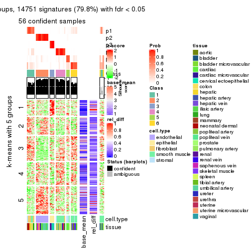
Signature heatmaps where rows are not scaled:
get_signatures(res, k = 2, scale_rows = FALSE)
get_signatures(res, k = 3, scale_rows = FALSE)
get_signatures(res, k = 4, scale_rows = FALSE)
get_signatures(res, k = 5, scale_rows = FALSE)
get_signatures(res, k = 6, scale_rows = FALSE)
Compare the overlap of signatures from different k:
compare_signatures(res)
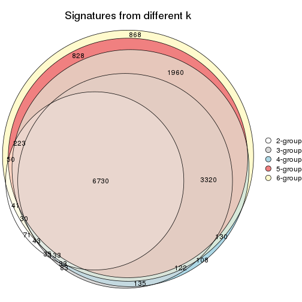
get_signature() returns a data frame invisibly. TO get the list of signatures, the function
call should be assigned to a variable explicitly. In following code, if plot argument is set
to FALSE, no heatmap is plotted while only the differential analysis is performed.
# code only for demonstration
tb = get_signature(res, k = ..., plot = FALSE)
An example of the output of tb is:
#> which_row fdr mean_1 mean_2 scaled_mean_1 scaled_mean_2 km
#> 1 38 0.042760348 8.373488 9.131774 -0.5533452 0.5164555 1
#> 2 40 0.018707592 7.106213 8.469186 -0.6173731 0.5762149 1
#> 3 55 0.019134737 10.221463 11.207825 -0.6159697 0.5749050 1
#> 4 59 0.006059896 5.921854 7.869574 -0.6899429 0.6439467 1
#> 5 60 0.018055526 8.928898 10.211722 -0.6204761 0.5791110 1
#> 6 98 0.009384629 15.714769 14.887706 0.6635654 -0.6193277 2
...
The columns in tb are:
which_row: row indices corresponding to the input matrix.fdr: FDR for the differential test. mean_x: The mean value in group x.scaled_mean_x: The mean value in group x after rows are scaled.km: Row groups if k-means clustering is applied to rows.UMAP plot which shows how samples are separated.
dimension_reduction(res, k = 2, method = "UMAP")
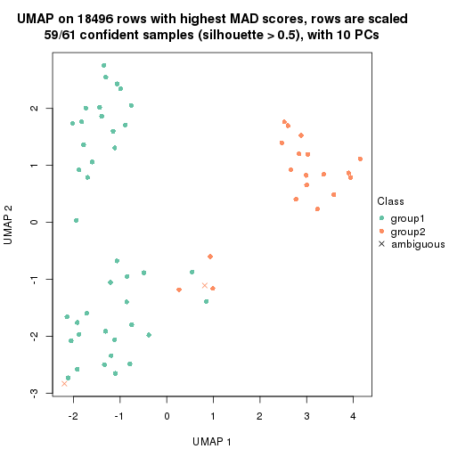
dimension_reduction(res, k = 3, method = "UMAP")
dimension_reduction(res, k = 4, method = "UMAP")
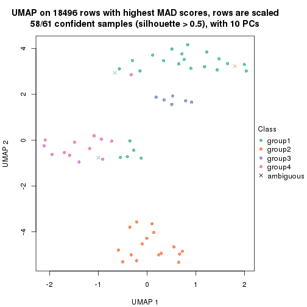
dimension_reduction(res, k = 5, method = "UMAP")
dimension_reduction(res, k = 6, method = "UMAP")
Following heatmap shows how subgroups are split when increasing k:
collect_classes(res)
Test correlation between subgroups and known annotations. If the known annotation is numeric, one-way ANOVA test is applied, and if the known annotation is discrete, chi-squared contingency table test is applied.
test_to_known_factors(res)
#> n cell.type(p) tissue(p) k
#> MAD:NMF 59 6.69e-11 1.56e-03 2
#> MAD:NMF 54 3.25e-09 1.55e-04 3
#> MAD:NMF 58 1.16e-19 2.60e-07 4
#> MAD:NMF 51 9.00e-19 3.48e-08 5
#> MAD:NMF 56 4.10e-22 6.80e-09 6
If matrix rows can be associated to genes, consider to use GO_Enrichment(res,
...) to perform function enrichment for the signature genes.
The object with results only for a single top-value method and a single partition method can be extracted as:
res = res_list["ATC", "hclust"]
# you can also extract it by
# res = res_list["ATC:hclust"]
A summary of res and all the functions that can be applied to it:
res
#> A 'ConsensusPartition' object with k = 2, 3, 4, 5, 6.
#> On a matrix with 18496 rows and 61 columns.
#> Top rows (1000, 2000, 3000, 4000, 5000) are extracted by 'ATC' method.
#> Subgroups are detected by 'hclust' method.
#> Performed in total 1250 partitions by row resampling.
#> Best k for subgroups seems to be 6.
#>
#> Following methods can be applied to this 'ConsensusPartition' object:
#> [1] "cola_report" "collect_classes" "collect_plots"
#> [4] "collect_stats" "colnames" "compare_signatures"
#> [7] "consensus_heatmap" "dimension_reduction" "functional_enrichment"
#> [10] "get_anno_col" "get_anno" "get_classes"
#> [13] "get_consensus" "get_matrix" "get_membership"
#> [16] "get_param" "get_signatures" "get_stats"
#> [19] "is_best_k" "is_stable_k" "membership_heatmap"
#> [22] "ncol" "nrow" "plot_ecdf"
#> [25] "rownames" "select_partition_number" "show"
#> [28] "suggest_best_k" "test_to_known_factors"
collect_plots() function collects all the plots made from res for all k (number of partitions)
into one single page to provide an easy and fast comparison between different k.
collect_plots(res)
The plots are:
k and the heatmap of
predicted classes for each k.k.k.k.All the plots in panels can be made by individual functions and they are plotted later in this section.
select_partition_number() produces several plots showing different
statistics for choosing “optimized” k. There are following statistics:
k;k, the area increased is defined as \(A_k - A_{k-1}\).The detailed explanations of these statistics can be found in the cola vignette.
Generally speaking, lower PAC score, higher mean silhouette score or higher
concordance corresponds to better partition. Rand index and Jaccard index
measure how similar the current partition is compared to partition with k-1.
If they are too similar, we won't accept k is better than k-1.
select_partition_number(res)
The numeric values for all these statistics can be obtained by get_stats().
get_stats(res)
#> k 1-PAC mean_silhouette concordance area_increased Rand Jaccard
#> 2 2 0.610 0.768 0.860 0.4559 0.498 0.498
#> 3 3 0.627 0.801 0.893 0.4163 0.843 0.684
#> 4 4 0.811 0.807 0.895 0.1491 0.874 0.652
#> 5 5 0.875 0.776 0.881 0.0502 0.979 0.916
#> 6 6 0.881 0.824 0.918 0.0222 0.980 0.916
suggest_best_k() suggests the best \(k\) based on these statistics. The rules are as follows:
NA.suggest_best_k(res)
#> [1] 6
Following shows the table of the partitions (You need to click the show/hide
code output link to see it). The membership matrix (columns with name p*)
is inferred by
clue::cl_consensus()
function with the SE method. Basically the value in the membership matrix
represents the probability to belong to a certain group. The finall class
label for an item is determined with the group with highest probability it
belongs to.
In get_classes() function, the entropy is calculated from the membership
matrix and the silhouette score is calculated from the consensus matrix.
cbind(get_classes(res, k = 2), get_membership(res, k = 2))
#> class entropy silhouette p1 p2
#> GSM72644 2 0.9922 0.701 0.448 0.552
#> GSM72647 2 0.9922 0.701 0.448 0.552
#> GSM72657 2 0.9922 0.701 0.448 0.552
#> GSM72658 2 0.9922 0.701 0.448 0.552
#> GSM72659 2 0.9922 0.701 0.448 0.552
#> GSM72660 2 0.9922 0.701 0.448 0.552
#> GSM72683 2 0.9922 0.701 0.448 0.552
#> GSM72684 2 0.9922 0.701 0.448 0.552
#> GSM72686 2 0.9922 0.701 0.448 0.552
#> GSM72687 2 0.9922 0.701 0.448 0.552
#> GSM72688 2 0.9922 0.701 0.448 0.552
#> GSM72689 2 0.9922 0.701 0.448 0.552
#> GSM72690 2 0.9922 0.701 0.448 0.552
#> GSM72691 2 0.9922 0.701 0.448 0.552
#> GSM72692 2 0.9922 0.701 0.448 0.552
#> GSM72693 2 0.9922 0.701 0.448 0.552
#> GSM72645 2 0.0000 0.569 0.000 1.000
#> GSM72646 2 0.0000 0.569 0.000 1.000
#> GSM72678 2 0.0000 0.569 0.000 1.000
#> GSM72679 2 0.0000 0.569 0.000 1.000
#> GSM72699 2 0.0000 0.569 0.000 1.000
#> GSM72700 2 0.0000 0.569 0.000 1.000
#> GSM72654 1 0.9922 1.000 0.552 0.448
#> GSM72655 1 0.9922 1.000 0.552 0.448
#> GSM72661 1 0.9922 1.000 0.552 0.448
#> GSM72662 1 0.9922 1.000 0.552 0.448
#> GSM72663 1 0.9922 1.000 0.552 0.448
#> GSM72665 1 0.9922 1.000 0.552 0.448
#> GSM72666 1 0.9922 1.000 0.552 0.448
#> GSM72640 1 0.9922 1.000 0.552 0.448
#> GSM72641 1 0.9922 1.000 0.552 0.448
#> GSM72642 2 0.3114 0.451 0.056 0.944
#> GSM72643 2 0.0938 0.577 0.012 0.988
#> GSM72651 1 0.9922 1.000 0.552 0.448
#> GSM72652 1 0.9922 1.000 0.552 0.448
#> GSM72653 1 0.9922 1.000 0.552 0.448
#> GSM72656 1 0.9922 1.000 0.552 0.448
#> GSM72667 2 0.0000 0.569 0.000 1.000
#> GSM72668 1 0.9922 1.000 0.552 0.448
#> GSM72669 2 0.0000 0.569 0.000 1.000
#> GSM72670 2 0.0000 0.569 0.000 1.000
#> GSM72671 1 0.9922 1.000 0.552 0.448
#> GSM72672 1 0.9922 1.000 0.552 0.448
#> GSM72696 1 0.9922 1.000 0.552 0.448
#> GSM72697 1 0.9922 1.000 0.552 0.448
#> GSM72674 1 0.9922 1.000 0.552 0.448
#> GSM72675 1 0.9922 1.000 0.552 0.448
#> GSM72676 2 0.9209 -0.541 0.336 0.664
#> GSM72677 1 0.9922 1.000 0.552 0.448
#> GSM72680 1 0.9922 1.000 0.552 0.448
#> GSM72682 1 0.9922 1.000 0.552 0.448
#> GSM72685 1 0.9922 1.000 0.552 0.448
#> GSM72694 2 0.0938 0.577 0.012 0.988
#> GSM72695 2 0.6531 0.166 0.168 0.832
#> GSM72698 1 0.9922 1.000 0.552 0.448
#> GSM72648 2 0.0000 0.569 0.000 1.000
#> GSM72649 2 0.0000 0.569 0.000 1.000
#> GSM72650 2 0.0000 0.569 0.000 1.000
#> GSM72664 1 0.9922 1.000 0.552 0.448
#> GSM72673 2 0.0938 0.577 0.012 0.988
#> GSM72681 1 0.9922 1.000 0.552 0.448
cbind(get_classes(res, k = 3), get_membership(res, k = 3))
#> class entropy silhouette p1 p2 p3
#> GSM72644 2 0.0000 1.000 0.000 1.000 0.000
#> GSM72647 2 0.0000 1.000 0.000 1.000 0.000
#> GSM72657 2 0.0000 1.000 0.000 1.000 0.000
#> GSM72658 2 0.0000 1.000 0.000 1.000 0.000
#> GSM72659 2 0.0000 1.000 0.000 1.000 0.000
#> GSM72660 2 0.0000 1.000 0.000 1.000 0.000
#> GSM72683 2 0.0000 1.000 0.000 1.000 0.000
#> GSM72684 2 0.0000 1.000 0.000 1.000 0.000
#> GSM72686 2 0.0000 1.000 0.000 1.000 0.000
#> GSM72687 2 0.0000 1.000 0.000 1.000 0.000
#> GSM72688 2 0.0000 1.000 0.000 1.000 0.000
#> GSM72689 2 0.0000 1.000 0.000 1.000 0.000
#> GSM72690 2 0.0000 1.000 0.000 1.000 0.000
#> GSM72691 2 0.0000 1.000 0.000 1.000 0.000
#> GSM72692 2 0.0000 1.000 0.000 1.000 0.000
#> GSM72693 2 0.0000 1.000 0.000 1.000 0.000
#> GSM72645 3 0.0000 0.902 0.000 0.000 1.000
#> GSM72646 3 0.0000 0.902 0.000 0.000 1.000
#> GSM72678 3 0.0000 0.902 0.000 0.000 1.000
#> GSM72679 3 0.0000 0.902 0.000 0.000 1.000
#> GSM72699 3 0.0000 0.902 0.000 0.000 1.000
#> GSM72700 3 0.0000 0.902 0.000 0.000 1.000
#> GSM72654 1 0.0000 0.756 1.000 0.000 0.000
#> GSM72655 1 0.0000 0.756 1.000 0.000 0.000
#> GSM72661 1 0.3412 0.771 0.876 0.000 0.124
#> GSM72662 1 0.3412 0.771 0.876 0.000 0.124
#> GSM72663 1 0.6204 0.547 0.576 0.000 0.424
#> GSM72665 1 0.0000 0.756 1.000 0.000 0.000
#> GSM72666 1 0.0000 0.756 1.000 0.000 0.000
#> GSM72640 1 0.6095 0.579 0.608 0.000 0.392
#> GSM72641 1 0.0000 0.756 1.000 0.000 0.000
#> GSM72642 3 0.5968 0.318 0.364 0.000 0.636
#> GSM72643 3 0.3267 0.827 0.000 0.116 0.884
#> GSM72651 1 0.3267 0.773 0.884 0.000 0.116
#> GSM72652 1 0.3267 0.773 0.884 0.000 0.116
#> GSM72653 1 0.2959 0.776 0.900 0.000 0.100
#> GSM72656 1 0.2959 0.776 0.900 0.000 0.100
#> GSM72667 3 0.0000 0.902 0.000 0.000 1.000
#> GSM72668 1 0.0892 0.759 0.980 0.000 0.020
#> GSM72669 3 0.0000 0.902 0.000 0.000 1.000
#> GSM72670 3 0.0000 0.902 0.000 0.000 1.000
#> GSM72671 1 0.0892 0.759 0.980 0.000 0.020
#> GSM72672 1 0.2959 0.776 0.900 0.000 0.100
#> GSM72696 1 0.6235 0.533 0.564 0.000 0.436
#> GSM72697 1 0.6235 0.533 0.564 0.000 0.436
#> GSM72674 1 0.6235 0.533 0.564 0.000 0.436
#> GSM72675 1 0.6235 0.533 0.564 0.000 0.436
#> GSM72676 3 0.6521 0.202 0.340 0.016 0.644
#> GSM72677 1 0.6235 0.533 0.564 0.000 0.436
#> GSM72680 1 0.2959 0.776 0.900 0.000 0.100
#> GSM72682 1 0.6235 0.533 0.564 0.000 0.436
#> GSM72685 1 0.0000 0.756 1.000 0.000 0.000
#> GSM72694 3 0.3267 0.827 0.000 0.116 0.884
#> GSM72695 3 0.6181 0.669 0.156 0.072 0.772
#> GSM72698 1 0.6235 0.533 0.564 0.000 0.436
#> GSM72648 3 0.0000 0.902 0.000 0.000 1.000
#> GSM72649 3 0.0000 0.902 0.000 0.000 1.000
#> GSM72650 3 0.0000 0.902 0.000 0.000 1.000
#> GSM72664 1 0.0000 0.756 1.000 0.000 0.000
#> GSM72673 3 0.3267 0.827 0.000 0.116 0.884
#> GSM72681 1 0.6235 0.533 0.564 0.000 0.436
cbind(get_classes(res, k = 4), get_membership(res, k = 4))
#> class entropy silhouette p1 p2 p3 p4
#> GSM72644 2 0.0000 1.0000 0.000 1.000 0.000 0.000
#> GSM72647 2 0.0000 1.0000 0.000 1.000 0.000 0.000
#> GSM72657 2 0.0000 1.0000 0.000 1.000 0.000 0.000
#> GSM72658 2 0.0000 1.0000 0.000 1.000 0.000 0.000
#> GSM72659 2 0.0000 1.0000 0.000 1.000 0.000 0.000
#> GSM72660 2 0.0000 1.0000 0.000 1.000 0.000 0.000
#> GSM72683 2 0.0000 1.0000 0.000 1.000 0.000 0.000
#> GSM72684 2 0.0000 1.0000 0.000 1.000 0.000 0.000
#> GSM72686 2 0.0000 1.0000 0.000 1.000 0.000 0.000
#> GSM72687 2 0.0000 1.0000 0.000 1.000 0.000 0.000
#> GSM72688 2 0.0000 1.0000 0.000 1.000 0.000 0.000
#> GSM72689 2 0.0000 1.0000 0.000 1.000 0.000 0.000
#> GSM72690 2 0.0000 1.0000 0.000 1.000 0.000 0.000
#> GSM72691 2 0.0000 1.0000 0.000 1.000 0.000 0.000
#> GSM72692 2 0.0000 1.0000 0.000 1.000 0.000 0.000
#> GSM72693 2 0.0000 1.0000 0.000 1.000 0.000 0.000
#> GSM72645 3 0.0336 0.8191 0.008 0.000 0.992 0.000
#> GSM72646 3 0.0336 0.8191 0.008 0.000 0.992 0.000
#> GSM72678 3 0.0336 0.8191 0.008 0.000 0.992 0.000
#> GSM72679 3 0.0336 0.8191 0.008 0.000 0.992 0.000
#> GSM72699 3 0.0336 0.8191 0.008 0.000 0.992 0.000
#> GSM72700 3 0.0336 0.8191 0.008 0.000 0.992 0.000
#> GSM72654 1 0.0921 0.9860 0.972 0.000 0.000 0.028
#> GSM72655 1 0.0921 0.9860 0.972 0.000 0.000 0.028
#> GSM72661 4 0.4605 0.6074 0.336 0.000 0.000 0.664
#> GSM72662 4 0.4605 0.6074 0.336 0.000 0.000 0.664
#> GSM72663 4 0.0469 0.7733 0.012 0.000 0.000 0.988
#> GSM72665 1 0.0921 0.9860 0.972 0.000 0.000 0.028
#> GSM72666 1 0.0921 0.9860 0.972 0.000 0.000 0.028
#> GSM72640 4 0.1302 0.7650 0.044 0.000 0.000 0.956
#> GSM72641 1 0.0921 0.9860 0.972 0.000 0.000 0.028
#> GSM72642 3 0.6897 0.3171 0.332 0.000 0.544 0.124
#> GSM72643 3 0.7430 0.3768 0.020 0.100 0.460 0.420
#> GSM72651 4 0.4643 0.5972 0.344 0.000 0.000 0.656
#> GSM72652 4 0.4643 0.5972 0.344 0.000 0.000 0.656
#> GSM72653 4 0.4605 0.6099 0.336 0.000 0.000 0.664
#> GSM72656 4 0.4605 0.6099 0.336 0.000 0.000 0.664
#> GSM72667 3 0.2081 0.8288 0.000 0.000 0.916 0.084
#> GSM72668 1 0.2053 0.9489 0.924 0.000 0.004 0.072
#> GSM72669 3 0.2081 0.8288 0.000 0.000 0.916 0.084
#> GSM72670 3 0.2081 0.8288 0.000 0.000 0.916 0.084
#> GSM72671 1 0.2053 0.9489 0.924 0.000 0.004 0.072
#> GSM72672 4 0.4605 0.6099 0.336 0.000 0.000 0.664
#> GSM72696 4 0.0000 0.7748 0.000 0.000 0.000 1.000
#> GSM72697 4 0.0000 0.7748 0.000 0.000 0.000 1.000
#> GSM72674 4 0.0000 0.7748 0.000 0.000 0.000 1.000
#> GSM72675 4 0.0000 0.7748 0.000 0.000 0.000 1.000
#> GSM72676 4 0.4323 0.4734 0.020 0.000 0.204 0.776
#> GSM72677 4 0.0000 0.7748 0.000 0.000 0.000 1.000
#> GSM72680 4 0.4605 0.6099 0.336 0.000 0.000 0.664
#> GSM72682 4 0.0000 0.7748 0.000 0.000 0.000 1.000
#> GSM72685 1 0.0921 0.9860 0.972 0.000 0.000 0.028
#> GSM72694 3 0.7430 0.3768 0.020 0.100 0.460 0.420
#> GSM72695 4 0.6608 0.0032 0.020 0.056 0.332 0.592
#> GSM72698 4 0.0000 0.7748 0.000 0.000 0.000 1.000
#> GSM72648 3 0.2081 0.8288 0.000 0.000 0.916 0.084
#> GSM72649 3 0.2081 0.8288 0.000 0.000 0.916 0.084
#> GSM72650 3 0.2081 0.8288 0.000 0.000 0.916 0.084
#> GSM72664 1 0.0921 0.9860 0.972 0.000 0.000 0.028
#> GSM72673 3 0.7430 0.3768 0.020 0.100 0.460 0.420
#> GSM72681 4 0.0000 0.7748 0.000 0.000 0.000 1.000
cbind(get_classes(res, k = 5), get_membership(res, k = 5))
#> class entropy silhouette p1 p2 p3 p4 p5
#> GSM72644 2 0.0000 1.000 0.000 1 0.000 0.000 0.000
#> GSM72647 2 0.0000 1.000 0.000 1 0.000 0.000 0.000
#> GSM72657 2 0.0000 1.000 0.000 1 0.000 0.000 0.000
#> GSM72658 2 0.0000 1.000 0.000 1 0.000 0.000 0.000
#> GSM72659 2 0.0000 1.000 0.000 1 0.000 0.000 0.000
#> GSM72660 2 0.0000 1.000 0.000 1 0.000 0.000 0.000
#> GSM72683 2 0.0000 1.000 0.000 1 0.000 0.000 0.000
#> GSM72684 2 0.0000 1.000 0.000 1 0.000 0.000 0.000
#> GSM72686 2 0.0000 1.000 0.000 1 0.000 0.000 0.000
#> GSM72687 2 0.0000 1.000 0.000 1 0.000 0.000 0.000
#> GSM72688 2 0.0000 1.000 0.000 1 0.000 0.000 0.000
#> GSM72689 2 0.0000 1.000 0.000 1 0.000 0.000 0.000
#> GSM72690 2 0.0000 1.000 0.000 1 0.000 0.000 0.000
#> GSM72691 2 0.0000 1.000 0.000 1 0.000 0.000 0.000
#> GSM72692 2 0.0000 1.000 0.000 1 0.000 0.000 0.000
#> GSM72693 2 0.0000 1.000 0.000 1 0.000 0.000 0.000
#> GSM72645 5 0.4294 0.621 0.000 0 0.468 0.000 0.532
#> GSM72646 5 0.4294 0.621 0.000 0 0.468 0.000 0.532
#> GSM72678 5 0.4242 0.626 0.000 0 0.428 0.000 0.572
#> GSM72679 5 0.4242 0.626 0.000 0 0.428 0.000 0.572
#> GSM72699 5 0.4294 0.621 0.000 0 0.468 0.000 0.532
#> GSM72700 5 0.4294 0.621 0.000 0 0.468 0.000 0.532
#> GSM72654 1 0.0000 0.984 1.000 0 0.000 0.000 0.000
#> GSM72655 1 0.0000 0.984 1.000 0 0.000 0.000 0.000
#> GSM72661 4 0.3966 0.636 0.336 0 0.000 0.664 0.000
#> GSM72662 4 0.3966 0.636 0.336 0 0.000 0.664 0.000
#> GSM72663 4 0.0404 0.764 0.012 0 0.000 0.988 0.000
#> GSM72665 1 0.0000 0.984 1.000 0 0.000 0.000 0.000
#> GSM72666 1 0.0000 0.984 1.000 0 0.000 0.000 0.000
#> GSM72640 4 0.1121 0.761 0.044 0 0.000 0.956 0.000
#> GSM72641 1 0.0000 0.984 1.000 0 0.000 0.000 0.000
#> GSM72642 5 0.5022 -0.138 0.332 0 0.000 0.048 0.620
#> GSM72643 3 0.5201 1.000 0.000 0 0.532 0.044 0.424
#> GSM72651 4 0.3999 0.627 0.344 0 0.000 0.656 0.000
#> GSM72652 4 0.3999 0.627 0.344 0 0.000 0.656 0.000
#> GSM72653 4 0.3966 0.640 0.336 0 0.000 0.664 0.000
#> GSM72656 4 0.3966 0.640 0.336 0 0.000 0.664 0.000
#> GSM72667 5 0.0290 0.518 0.000 0 0.000 0.008 0.992
#> GSM72668 1 0.1357 0.944 0.948 0 0.000 0.048 0.004
#> GSM72669 5 0.0290 0.518 0.000 0 0.000 0.008 0.992
#> GSM72670 5 0.0290 0.518 0.000 0 0.000 0.008 0.992
#> GSM72671 1 0.1357 0.944 0.948 0 0.000 0.048 0.004
#> GSM72672 4 0.3966 0.640 0.336 0 0.000 0.664 0.000
#> GSM72696 4 0.0000 0.763 0.000 0 0.000 1.000 0.000
#> GSM72697 4 0.0000 0.763 0.000 0 0.000 1.000 0.000
#> GSM72674 4 0.0000 0.763 0.000 0 0.000 1.000 0.000
#> GSM72675 4 0.0000 0.763 0.000 0 0.000 1.000 0.000
#> GSM72676 4 0.4612 0.409 0.000 0 0.084 0.736 0.180
#> GSM72677 4 0.0000 0.763 0.000 0 0.000 1.000 0.000
#> GSM72680 4 0.3966 0.640 0.336 0 0.000 0.664 0.000
#> GSM72682 4 0.0000 0.763 0.000 0 0.000 1.000 0.000
#> GSM72685 1 0.0000 0.984 1.000 0 0.000 0.000 0.000
#> GSM72694 3 0.5201 1.000 0.000 0 0.532 0.044 0.424
#> GSM72695 4 0.6212 -0.259 0.000 0 0.160 0.516 0.324
#> GSM72698 4 0.0000 0.763 0.000 0 0.000 1.000 0.000
#> GSM72648 5 0.0000 0.516 0.000 0 0.000 0.000 1.000
#> GSM72649 5 0.0000 0.516 0.000 0 0.000 0.000 1.000
#> GSM72650 5 0.0000 0.516 0.000 0 0.000 0.000 1.000
#> GSM72664 1 0.0000 0.984 1.000 0 0.000 0.000 0.000
#> GSM72673 3 0.5201 1.000 0.000 0 0.532 0.044 0.424
#> GSM72681 4 0.0000 0.763 0.000 0 0.000 1.000 0.000
cbind(get_classes(res, k = 6), get_membership(res, k = 6))
#> class entropy silhouette p1 p2 p3 p4 p5 p6
#> GSM72644 2 0.0000 1.000 0.000 1 0.00 0.000 0.000 0.000
#> GSM72647 2 0.0000 1.000 0.000 1 0.00 0.000 0.000 0.000
#> GSM72657 2 0.0000 1.000 0.000 1 0.00 0.000 0.000 0.000
#> GSM72658 2 0.0000 1.000 0.000 1 0.00 0.000 0.000 0.000
#> GSM72659 2 0.0000 1.000 0.000 1 0.00 0.000 0.000 0.000
#> GSM72660 2 0.0000 1.000 0.000 1 0.00 0.000 0.000 0.000
#> GSM72683 2 0.0000 1.000 0.000 1 0.00 0.000 0.000 0.000
#> GSM72684 2 0.0000 1.000 0.000 1 0.00 0.000 0.000 0.000
#> GSM72686 2 0.0000 1.000 0.000 1 0.00 0.000 0.000 0.000
#> GSM72687 2 0.0000 1.000 0.000 1 0.00 0.000 0.000 0.000
#> GSM72688 2 0.0000 1.000 0.000 1 0.00 0.000 0.000 0.000
#> GSM72689 2 0.0000 1.000 0.000 1 0.00 0.000 0.000 0.000
#> GSM72690 2 0.0000 1.000 0.000 1 0.00 0.000 0.000 0.000
#> GSM72691 2 0.0000 1.000 0.000 1 0.00 0.000 0.000 0.000
#> GSM72692 2 0.0000 1.000 0.000 1 0.00 0.000 0.000 0.000
#> GSM72693 2 0.0000 1.000 0.000 1 0.00 0.000 0.000 0.000
#> GSM72645 3 0.0000 1.000 0.000 0 1.00 0.000 0.000 0.000
#> GSM72646 3 0.0000 1.000 0.000 0 1.00 0.000 0.000 0.000
#> GSM72678 5 0.4152 0.215 0.000 0 0.44 0.012 0.548 0.000
#> GSM72679 5 0.4152 0.215 0.000 0 0.44 0.012 0.548 0.000
#> GSM72699 3 0.0000 1.000 0.000 0 1.00 0.000 0.000 0.000
#> GSM72700 3 0.0000 1.000 0.000 0 1.00 0.000 0.000 0.000
#> GSM72654 1 0.0000 0.984 1.000 0 0.00 0.000 0.000 0.000
#> GSM72655 1 0.0000 0.984 1.000 0 0.00 0.000 0.000 0.000
#> GSM72661 6 0.3563 0.639 0.336 0 0.00 0.000 0.000 0.664
#> GSM72662 6 0.3563 0.639 0.336 0 0.00 0.000 0.000 0.664
#> GSM72663 6 0.0363 0.766 0.012 0 0.00 0.000 0.000 0.988
#> GSM72665 1 0.0000 0.984 1.000 0 0.00 0.000 0.000 0.000
#> GSM72666 1 0.0000 0.984 1.000 0 0.00 0.000 0.000 0.000
#> GSM72640 6 0.1082 0.763 0.040 0 0.00 0.004 0.000 0.956
#> GSM72641 1 0.0000 0.984 1.000 0 0.00 0.000 0.000 0.000
#> GSM72642 5 0.4511 0.246 0.332 0 0.00 0.000 0.620 0.048
#> GSM72643 4 0.0520 1.000 0.000 0 0.00 0.984 0.008 0.008
#> GSM72651 6 0.3592 0.629 0.344 0 0.00 0.000 0.000 0.656
#> GSM72652 6 0.3592 0.629 0.344 0 0.00 0.000 0.000 0.656
#> GSM72653 6 0.3684 0.644 0.332 0 0.00 0.004 0.000 0.664
#> GSM72656 6 0.3684 0.644 0.332 0 0.00 0.004 0.000 0.664
#> GSM72667 5 0.0260 0.795 0.000 0 0.00 0.000 0.992 0.008
#> GSM72668 1 0.1219 0.942 0.948 0 0.00 0.000 0.004 0.048
#> GSM72669 5 0.0260 0.795 0.000 0 0.00 0.000 0.992 0.008
#> GSM72670 5 0.0260 0.795 0.000 0 0.00 0.000 0.992 0.008
#> GSM72671 1 0.1219 0.942 0.948 0 0.00 0.000 0.004 0.048
#> GSM72672 6 0.3684 0.644 0.332 0 0.00 0.004 0.000 0.664
#> GSM72696 6 0.0000 0.766 0.000 0 0.00 0.000 0.000 1.000
#> GSM72697 6 0.0000 0.766 0.000 0 0.00 0.000 0.000 1.000
#> GSM72674 6 0.0000 0.766 0.000 0 0.00 0.000 0.000 1.000
#> GSM72675 6 0.0000 0.766 0.000 0 0.00 0.000 0.000 1.000
#> GSM72676 6 0.3337 0.444 0.000 0 0.00 0.260 0.004 0.736
#> GSM72677 6 0.0000 0.766 0.000 0 0.00 0.000 0.000 1.000
#> GSM72680 6 0.3684 0.644 0.332 0 0.00 0.004 0.000 0.664
#> GSM72682 6 0.0000 0.766 0.000 0 0.00 0.000 0.000 1.000
#> GSM72685 1 0.0000 0.984 1.000 0 0.00 0.000 0.000 0.000
#> GSM72694 4 0.0520 1.000 0.000 0 0.00 0.984 0.008 0.008
#> GSM72695 6 0.4093 -0.170 0.000 0 0.00 0.476 0.008 0.516
#> GSM72698 6 0.0000 0.766 0.000 0 0.00 0.000 0.000 1.000
#> GSM72648 5 0.0260 0.794 0.000 0 0.00 0.008 0.992 0.000
#> GSM72649 5 0.0260 0.794 0.000 0 0.00 0.008 0.992 0.000
#> GSM72650 5 0.0260 0.794 0.000 0 0.00 0.008 0.992 0.000
#> GSM72664 1 0.0000 0.984 1.000 0 0.00 0.000 0.000 0.000
#> GSM72673 4 0.0520 1.000 0.000 0 0.00 0.984 0.008 0.008
#> GSM72681 6 0.0000 0.766 0.000 0 0.00 0.000 0.000 1.000
Heatmaps for the consensus matrix. It visualizes the probability of two samples to be in a same group.
consensus_heatmap(res, k = 2)
consensus_heatmap(res, k = 3)
consensus_heatmap(res, k = 4)
consensus_heatmap(res, k = 5)
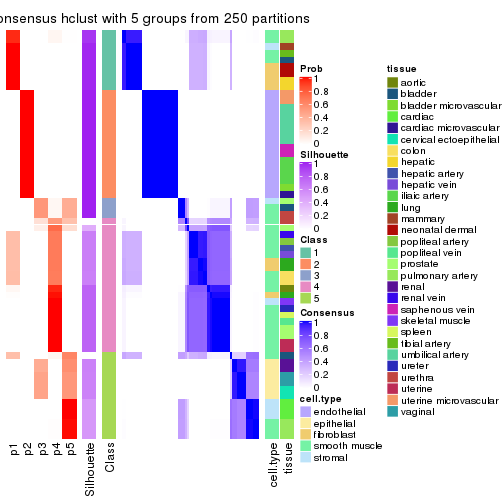
consensus_heatmap(res, k = 6)
Heatmaps for the membership of samples in all partitions to see how consistent they are:
membership_heatmap(res, k = 2)
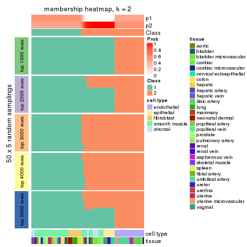
membership_heatmap(res, k = 3)
membership_heatmap(res, k = 4)
membership_heatmap(res, k = 5)
membership_heatmap(res, k = 6)
As soon as we have had the classes for columns, we can look for signatures which are significantly different between classes which can be candidate marks for certain classes. Following are the heatmaps for signatures.
Signature heatmaps where rows are scaled:
get_signatures(res, k = 2)
get_signatures(res, k = 3)
get_signatures(res, k = 4)
get_signatures(res, k = 5)

get_signatures(res, k = 6)
Signature heatmaps where rows are not scaled:
get_signatures(res, k = 2, scale_rows = FALSE)
get_signatures(res, k = 3, scale_rows = FALSE)
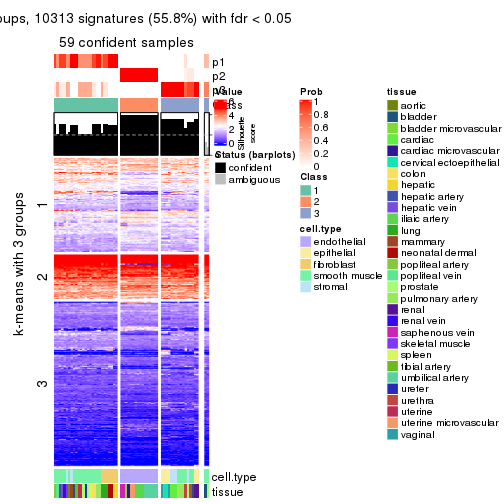
get_signatures(res, k = 4, scale_rows = FALSE)
get_signatures(res, k = 5, scale_rows = FALSE)
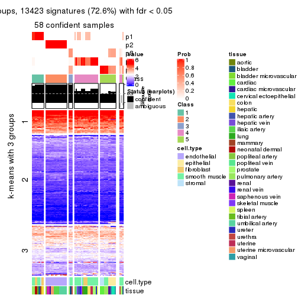
get_signatures(res, k = 6, scale_rows = FALSE)
Compare the overlap of signatures from different k:
compare_signatures(res)
get_signature() returns a data frame invisibly. TO get the list of signatures, the function
call should be assigned to a variable explicitly. In following code, if plot argument is set
to FALSE, no heatmap is plotted while only the differential analysis is performed.
# code only for demonstration
tb = get_signature(res, k = ..., plot = FALSE)
An example of the output of tb is:
#> which_row fdr mean_1 mean_2 scaled_mean_1 scaled_mean_2 km
#> 1 38 0.042760348 8.373488 9.131774 -0.5533452 0.5164555 1
#> 2 40 0.018707592 7.106213 8.469186 -0.6173731 0.5762149 1
#> 3 55 0.019134737 10.221463 11.207825 -0.6159697 0.5749050 1
#> 4 59 0.006059896 5.921854 7.869574 -0.6899429 0.6439467 1
#> 5 60 0.018055526 8.928898 10.211722 -0.6204761 0.5791110 1
#> 6 98 0.009384629 15.714769 14.887706 0.6635654 -0.6193277 2
...
The columns in tb are:
which_row: row indices corresponding to the input matrix.fdr: FDR for the differential test. mean_x: The mean value in group x.scaled_mean_x: The mean value in group x after rows are scaled.km: Row groups if k-means clustering is applied to rows.UMAP plot which shows how samples are separated.
dimension_reduction(res, k = 2, method = "UMAP")
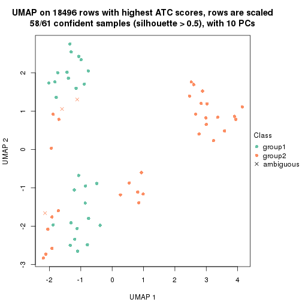
dimension_reduction(res, k = 3, method = "UMAP")
dimension_reduction(res, k = 4, method = "UMAP")
dimension_reduction(res, k = 5, method = "UMAP")
dimension_reduction(res, k = 6, method = "UMAP")
Following heatmap shows how subgroups are split when increasing k:
collect_classes(res)
Test correlation between subgroups and known annotations. If the known annotation is numeric, one-way ANOVA test is applied, and if the known annotation is discrete, chi-squared contingency table test is applied.
test_to_known_factors(res)
#> n cell.type(p) tissue(p) k
#> ATC:hclust 58 1.88e-07 1.31e-02 2
#> ATC:hclust 59 8.60e-15 1.94e-04 3
#> ATC:hclust 55 3.75e-14 7.75e-06 4
#> ATC:hclust 58 1.18e-13 1.58e-05 5
#> ATC:hclust 56 2.97e-18 1.00e-06 6
If matrix rows can be associated to genes, consider to use GO_Enrichment(res,
...) to perform function enrichment for the signature genes.
The object with results only for a single top-value method and a single partition method can be extracted as:
res = res_list["ATC", "kmeans"]
# you can also extract it by
# res = res_list["ATC:kmeans"]
A summary of res and all the functions that can be applied to it:
res
#> A 'ConsensusPartition' object with k = 2, 3, 4, 5, 6.
#> On a matrix with 18496 rows and 61 columns.
#> Top rows (1000, 2000, 3000, 4000, 5000) are extracted by 'ATC' method.
#> Subgroups are detected by 'kmeans' method.
#> Performed in total 1250 partitions by row resampling.
#> Best k for subgroups seems to be 2.
#>
#> Following methods can be applied to this 'ConsensusPartition' object:
#> [1] "cola_report" "collect_classes" "collect_plots"
#> [4] "collect_stats" "colnames" "compare_signatures"
#> [7] "consensus_heatmap" "dimension_reduction" "functional_enrichment"
#> [10] "get_anno_col" "get_anno" "get_classes"
#> [13] "get_consensus" "get_matrix" "get_membership"
#> [16] "get_param" "get_signatures" "get_stats"
#> [19] "is_best_k" "is_stable_k" "membership_heatmap"
#> [22] "ncol" "nrow" "plot_ecdf"
#> [25] "rownames" "select_partition_number" "show"
#> [28] "suggest_best_k" "test_to_known_factors"
collect_plots() function collects all the plots made from res for all k (number of partitions)
into one single page to provide an easy and fast comparison between different k.
collect_plots(res)
The plots are:
k and the heatmap of
predicted classes for each k.k.k.k.All the plots in panels can be made by individual functions and they are plotted later in this section.
select_partition_number() produces several plots showing different
statistics for choosing “optimized” k. There are following statistics:
k;k, the area increased is defined as \(A_k - A_{k-1}\).The detailed explanations of these statistics can be found in the cola vignette.
Generally speaking, lower PAC score, higher mean silhouette score or higher
concordance corresponds to better partition. Rand index and Jaccard index
measure how similar the current partition is compared to partition with k-1.
If they are too similar, we won't accept k is better than k-1.
select_partition_number(res)
The numeric values for all these statistics can be obtained by get_stats().
get_stats(res)
#> k 1-PAC mean_silhouette concordance area_increased Rand Jaccard
#> 2 2 1.000 0.987 0.991 0.3988 0.607 0.607
#> 3 3 0.554 0.684 0.778 0.5592 0.730 0.555
#> 4 4 0.637 0.868 0.846 0.1664 0.831 0.547
#> 5 5 0.752 0.797 0.810 0.0742 1.000 1.000
#> 6 6 0.792 0.582 0.724 0.0486 0.919 0.675
suggest_best_k() suggests the best \(k\) based on these statistics. The rules are as follows:
NA.suggest_best_k(res)
#> [1] 2
Following shows the table of the partitions (You need to click the show/hide
code output link to see it). The membership matrix (columns with name p*)
is inferred by
clue::cl_consensus()
function with the SE method. Basically the value in the membership matrix
represents the probability to belong to a certain group. The finall class
label for an item is determined with the group with highest probability it
belongs to.
In get_classes() function, the entropy is calculated from the membership
matrix and the silhouette score is calculated from the consensus matrix.
cbind(get_classes(res, k = 2), get_membership(res, k = 2))
#> class entropy silhouette p1 p2
#> GSM72644 2 0.00 1.000 0.000 1.000
#> GSM72647 2 0.00 1.000 0.000 1.000
#> GSM72657 2 0.00 1.000 0.000 1.000
#> GSM72658 2 0.00 1.000 0.000 1.000
#> GSM72659 2 0.00 1.000 0.000 1.000
#> GSM72660 2 0.00 1.000 0.000 1.000
#> GSM72683 2 0.00 1.000 0.000 1.000
#> GSM72684 2 0.00 1.000 0.000 1.000
#> GSM72686 2 0.00 1.000 0.000 1.000
#> GSM72687 2 0.00 1.000 0.000 1.000
#> GSM72688 2 0.00 1.000 0.000 1.000
#> GSM72689 2 0.00 1.000 0.000 1.000
#> GSM72690 2 0.00 1.000 0.000 1.000
#> GSM72691 2 0.00 1.000 0.000 1.000
#> GSM72692 2 0.00 1.000 0.000 1.000
#> GSM72693 2 0.00 1.000 0.000 1.000
#> GSM72645 1 0.26 0.965 0.956 0.044
#> GSM72646 1 0.26 0.965 0.956 0.044
#> GSM72678 1 0.26 0.965 0.956 0.044
#> GSM72679 1 0.26 0.965 0.956 0.044
#> GSM72699 1 0.26 0.965 0.956 0.044
#> GSM72700 1 0.26 0.965 0.956 0.044
#> GSM72654 1 0.00 0.988 1.000 0.000
#> GSM72655 1 0.00 0.988 1.000 0.000
#> GSM72661 1 0.00 0.988 1.000 0.000
#> GSM72662 1 0.00 0.988 1.000 0.000
#> GSM72663 1 0.00 0.988 1.000 0.000
#> GSM72665 1 0.00 0.988 1.000 0.000
#> GSM72666 1 0.00 0.988 1.000 0.000
#> GSM72640 1 0.00 0.988 1.000 0.000
#> GSM72641 1 0.00 0.988 1.000 0.000
#> GSM72642 1 0.00 0.988 1.000 0.000
#> GSM72643 1 0.26 0.965 0.956 0.044
#> GSM72651 1 0.00 0.988 1.000 0.000
#> GSM72652 1 0.00 0.988 1.000 0.000
#> GSM72653 1 0.00 0.988 1.000 0.000
#> GSM72656 1 0.00 0.988 1.000 0.000
#> GSM72667 1 0.00 0.988 1.000 0.000
#> GSM72668 1 0.00 0.988 1.000 0.000
#> GSM72669 1 0.00 0.988 1.000 0.000
#> GSM72670 1 0.00 0.988 1.000 0.000
#> GSM72671 1 0.00 0.988 1.000 0.000
#> GSM72672 1 0.00 0.988 1.000 0.000
#> GSM72696 1 0.00 0.988 1.000 0.000
#> GSM72697 1 0.00 0.988 1.000 0.000
#> GSM72674 1 0.00 0.988 1.000 0.000
#> GSM72675 1 0.00 0.988 1.000 0.000
#> GSM72676 1 0.00 0.988 1.000 0.000
#> GSM72677 1 0.00 0.988 1.000 0.000
#> GSM72680 1 0.00 0.988 1.000 0.000
#> GSM72682 1 0.00 0.988 1.000 0.000
#> GSM72685 1 0.00 0.988 1.000 0.000
#> GSM72694 1 0.26 0.965 0.956 0.044
#> GSM72695 1 0.00 0.988 1.000 0.000
#> GSM72698 1 0.00 0.988 1.000 0.000
#> GSM72648 1 0.26 0.965 0.956 0.044
#> GSM72649 1 0.26 0.965 0.956 0.044
#> GSM72650 1 0.26 0.965 0.956 0.044
#> GSM72664 1 0.00 0.988 1.000 0.000
#> GSM72673 1 0.26 0.965 0.956 0.044
#> GSM72681 1 0.00 0.988 1.000 0.000
cbind(get_classes(res, k = 3), get_membership(res, k = 3))
#> class entropy silhouette p1 p2 p3
#> GSM72644 2 0.2959 0.938 0.100 0.900 0.000
#> GSM72647 2 0.2339 0.956 0.048 0.940 0.012
#> GSM72657 2 0.0892 0.966 0.000 0.980 0.020
#> GSM72658 2 0.0892 0.966 0.000 0.980 0.020
#> GSM72659 2 0.0892 0.966 0.000 0.980 0.020
#> GSM72660 2 0.0892 0.966 0.000 0.980 0.020
#> GSM72683 2 0.2959 0.938 0.100 0.900 0.000
#> GSM72684 2 0.2959 0.938 0.100 0.900 0.000
#> GSM72686 2 0.0892 0.966 0.000 0.980 0.020
#> GSM72687 2 0.1482 0.964 0.012 0.968 0.020
#> GSM72688 2 0.1482 0.964 0.012 0.968 0.020
#> GSM72689 2 0.1482 0.964 0.012 0.968 0.020
#> GSM72690 2 0.1482 0.964 0.012 0.968 0.020
#> GSM72691 2 0.0892 0.966 0.000 0.980 0.020
#> GSM72692 2 0.2959 0.938 0.100 0.900 0.000
#> GSM72693 2 0.2959 0.938 0.100 0.900 0.000
#> GSM72645 3 0.0237 0.715 0.000 0.004 0.996
#> GSM72646 3 0.0237 0.715 0.000 0.004 0.996
#> GSM72678 3 0.1647 0.689 0.036 0.004 0.960
#> GSM72679 3 0.0475 0.713 0.004 0.004 0.992
#> GSM72699 3 0.0237 0.715 0.000 0.004 0.996
#> GSM72700 3 0.0237 0.715 0.000 0.004 0.996
#> GSM72654 1 0.6192 0.632 0.580 0.000 0.420
#> GSM72655 1 0.6192 0.632 0.580 0.000 0.420
#> GSM72661 1 0.6180 0.633 0.584 0.000 0.416
#> GSM72662 1 0.6180 0.633 0.584 0.000 0.416
#> GSM72663 3 0.5560 0.178 0.300 0.000 0.700
#> GSM72665 1 0.6192 0.632 0.580 0.000 0.420
#> GSM72666 1 0.6192 0.632 0.580 0.000 0.420
#> GSM72640 1 0.4235 0.573 0.824 0.000 0.176
#> GSM72641 1 0.6192 0.632 0.580 0.000 0.420
#> GSM72642 1 0.6192 0.632 0.580 0.000 0.420
#> GSM72643 3 0.2772 0.713 0.080 0.004 0.916
#> GSM72651 1 0.6235 0.616 0.564 0.000 0.436
#> GSM72652 1 0.6180 0.633 0.584 0.000 0.416
#> GSM72653 1 0.4235 0.573 0.824 0.000 0.176
#> GSM72656 1 0.4235 0.573 0.824 0.000 0.176
#> GSM72667 3 0.3038 0.681 0.104 0.000 0.896
#> GSM72668 1 0.6192 0.632 0.580 0.000 0.420
#> GSM72669 3 0.4121 0.594 0.168 0.000 0.832
#> GSM72670 3 0.2959 0.685 0.100 0.000 0.900
#> GSM72671 1 0.6192 0.632 0.580 0.000 0.420
#> GSM72672 1 0.4235 0.573 0.824 0.000 0.176
#> GSM72696 1 0.5098 0.520 0.752 0.000 0.248
#> GSM72697 1 0.5098 0.520 0.752 0.000 0.248
#> GSM72674 1 0.5098 0.520 0.752 0.000 0.248
#> GSM72675 1 0.5098 0.520 0.752 0.000 0.248
#> GSM72676 3 0.6799 0.317 0.456 0.012 0.532
#> GSM72677 1 0.5098 0.520 0.752 0.000 0.248
#> GSM72680 1 0.3412 0.578 0.876 0.000 0.124
#> GSM72682 3 0.6799 0.317 0.456 0.012 0.532
#> GSM72685 1 0.6192 0.632 0.580 0.000 0.420
#> GSM72694 3 0.6984 0.421 0.420 0.020 0.560
#> GSM72695 3 0.6799 0.317 0.456 0.012 0.532
#> GSM72698 1 0.5098 0.520 0.752 0.000 0.248
#> GSM72648 3 0.2682 0.713 0.076 0.004 0.920
#> GSM72649 3 0.2682 0.713 0.076 0.004 0.920
#> GSM72650 3 0.2682 0.713 0.076 0.004 0.920
#> GSM72664 1 0.6192 0.632 0.580 0.000 0.420
#> GSM72673 3 0.6984 0.421 0.420 0.020 0.560
#> GSM72681 1 0.5098 0.520 0.752 0.000 0.248
cbind(get_classes(res, k = 4), get_membership(res, k = 4))
#> class entropy silhouette p1 p2 p3 p4
#> GSM72644 2 0.5407 0.856 0.000 0.740 0.108 0.152
#> GSM72647 2 0.4030 0.882 0.000 0.836 0.092 0.072
#> GSM72657 2 0.0188 0.917 0.000 0.996 0.004 0.000
#> GSM72658 2 0.0188 0.917 0.000 0.996 0.004 0.000
#> GSM72659 2 0.0188 0.917 0.000 0.996 0.004 0.000
#> GSM72660 2 0.0188 0.917 0.000 0.996 0.004 0.000
#> GSM72683 2 0.5407 0.856 0.000 0.740 0.108 0.152
#> GSM72684 2 0.5407 0.856 0.000 0.740 0.108 0.152
#> GSM72686 2 0.0188 0.917 0.000 0.996 0.004 0.000
#> GSM72687 2 0.1724 0.911 0.000 0.948 0.020 0.032
#> GSM72688 2 0.1297 0.912 0.000 0.964 0.020 0.016
#> GSM72689 2 0.1724 0.911 0.000 0.948 0.020 0.032
#> GSM72690 2 0.1724 0.911 0.000 0.948 0.020 0.032
#> GSM72691 2 0.0188 0.917 0.000 0.996 0.004 0.000
#> GSM72692 2 0.5266 0.858 0.000 0.752 0.108 0.140
#> GSM72693 2 0.5266 0.858 0.000 0.752 0.108 0.140
#> GSM72645 3 0.3441 0.853 0.120 0.000 0.856 0.024
#> GSM72646 3 0.3441 0.853 0.120 0.000 0.856 0.024
#> GSM72678 3 0.3427 0.846 0.112 0.000 0.860 0.028
#> GSM72679 3 0.3441 0.853 0.120 0.000 0.856 0.024
#> GSM72699 3 0.3542 0.852 0.120 0.000 0.852 0.028
#> GSM72700 3 0.3441 0.853 0.120 0.000 0.856 0.024
#> GSM72654 1 0.0000 0.974 1.000 0.000 0.000 0.000
#> GSM72655 1 0.0000 0.974 1.000 0.000 0.000 0.000
#> GSM72661 1 0.0188 0.972 0.996 0.000 0.000 0.004
#> GSM72662 1 0.0188 0.972 0.996 0.000 0.000 0.004
#> GSM72663 4 0.6084 0.632 0.252 0.000 0.092 0.656
#> GSM72665 1 0.0000 0.974 1.000 0.000 0.000 0.000
#> GSM72666 1 0.0000 0.974 1.000 0.000 0.000 0.000
#> GSM72640 4 0.4857 0.800 0.284 0.000 0.016 0.700
#> GSM72641 1 0.0000 0.974 1.000 0.000 0.000 0.000
#> GSM72642 1 0.0000 0.974 1.000 0.000 0.000 0.000
#> GSM72643 3 0.6689 0.823 0.212 0.004 0.632 0.152
#> GSM72651 1 0.0336 0.968 0.992 0.000 0.000 0.008
#> GSM72652 1 0.0188 0.972 0.996 0.000 0.000 0.004
#> GSM72653 4 0.4857 0.800 0.284 0.000 0.016 0.700
#> GSM72656 4 0.4857 0.800 0.284 0.000 0.016 0.700
#> GSM72667 3 0.6391 0.811 0.304 0.000 0.604 0.092
#> GSM72668 1 0.0000 0.974 1.000 0.000 0.000 0.000
#> GSM72669 3 0.6153 0.786 0.328 0.000 0.604 0.068
#> GSM72670 3 0.6391 0.811 0.304 0.000 0.604 0.092
#> GSM72671 1 0.0000 0.974 1.000 0.000 0.000 0.000
#> GSM72672 4 0.4857 0.800 0.284 0.000 0.016 0.700
#> GSM72696 4 0.3486 0.864 0.188 0.000 0.000 0.812
#> GSM72697 4 0.3649 0.862 0.204 0.000 0.000 0.796
#> GSM72674 4 0.3539 0.862 0.176 0.000 0.004 0.820
#> GSM72675 4 0.3649 0.862 0.204 0.000 0.000 0.796
#> GSM72676 4 0.4215 0.795 0.072 0.000 0.104 0.824
#> GSM72677 4 0.3925 0.864 0.176 0.000 0.016 0.808
#> GSM72680 1 0.4214 0.587 0.780 0.000 0.016 0.204
#> GSM72682 4 0.4215 0.795 0.072 0.000 0.104 0.824
#> GSM72685 1 0.0000 0.974 1.000 0.000 0.000 0.000
#> GSM72694 4 0.4671 0.638 0.028 0.000 0.220 0.752
#> GSM72695 4 0.4215 0.795 0.072 0.000 0.104 0.824
#> GSM72698 4 0.3649 0.862 0.204 0.000 0.000 0.796
#> GSM72648 3 0.6636 0.842 0.240 0.004 0.628 0.128
#> GSM72649 3 0.6636 0.842 0.240 0.004 0.628 0.128
#> GSM72650 3 0.6636 0.842 0.240 0.004 0.628 0.128
#> GSM72664 1 0.0000 0.974 1.000 0.000 0.000 0.000
#> GSM72673 4 0.4671 0.638 0.028 0.000 0.220 0.752
#> GSM72681 4 0.4214 0.859 0.204 0.000 0.016 0.780
cbind(get_classes(res, k = 5), get_membership(res, k = 5))
#> class entropy silhouette p1 p2 p3 p4 p5
#> GSM72644 2 0.4856 0.757 0.000 0.584 0.000 0.028 NA
#> GSM72647 2 0.3661 0.792 0.000 0.724 0.000 0.000 NA
#> GSM72657 2 0.0000 0.854 0.000 1.000 0.000 0.000 NA
#> GSM72658 2 0.0000 0.854 0.000 1.000 0.000 0.000 NA
#> GSM72659 2 0.0000 0.854 0.000 1.000 0.000 0.000 NA
#> GSM72660 2 0.0000 0.854 0.000 1.000 0.000 0.000 NA
#> GSM72683 2 0.4856 0.757 0.000 0.584 0.000 0.028 NA
#> GSM72684 2 0.4856 0.757 0.000 0.584 0.000 0.028 NA
#> GSM72686 2 0.0000 0.854 0.000 1.000 0.000 0.000 NA
#> GSM72687 2 0.2846 0.844 0.000 0.888 0.012 0.052 NA
#> GSM72688 2 0.2069 0.845 0.000 0.924 0.012 0.052 NA
#> GSM72689 2 0.2846 0.844 0.000 0.888 0.012 0.052 NA
#> GSM72690 2 0.2846 0.844 0.000 0.888 0.012 0.052 NA
#> GSM72691 2 0.0000 0.854 0.000 1.000 0.000 0.000 NA
#> GSM72692 2 0.4201 0.759 0.000 0.592 0.000 0.000 NA
#> GSM72693 2 0.4201 0.759 0.000 0.592 0.000 0.000 NA
#> GSM72645 3 0.3890 0.774 0.012 0.000 0.736 0.000 NA
#> GSM72646 3 0.3890 0.774 0.012 0.000 0.736 0.000 NA
#> GSM72678 3 0.3890 0.774 0.012 0.000 0.736 0.000 NA
#> GSM72679 3 0.3890 0.774 0.012 0.000 0.736 0.000 NA
#> GSM72699 3 0.3916 0.774 0.012 0.000 0.732 0.000 NA
#> GSM72700 3 0.3890 0.774 0.012 0.000 0.736 0.000 NA
#> GSM72654 1 0.0162 0.948 0.996 0.000 0.000 0.000 NA
#> GSM72655 1 0.0290 0.947 0.992 0.000 0.000 0.000 NA
#> GSM72661 1 0.1518 0.932 0.944 0.000 0.004 0.004 NA
#> GSM72662 1 0.1518 0.932 0.944 0.000 0.004 0.004 NA
#> GSM72663 4 0.6919 0.616 0.080 0.000 0.136 0.580 NA
#> GSM72665 1 0.0609 0.945 0.980 0.000 0.000 0.000 NA
#> GSM72666 1 0.0609 0.945 0.980 0.000 0.000 0.000 NA
#> GSM72640 4 0.4866 0.737 0.168 0.000 0.004 0.728 NA
#> GSM72641 1 0.0162 0.947 0.996 0.000 0.000 0.000 NA
#> GSM72642 1 0.0162 0.947 0.996 0.000 0.000 0.000 NA
#> GSM72643 3 0.6349 0.569 0.068 0.004 0.652 0.104 NA
#> GSM72651 1 0.1591 0.930 0.940 0.000 0.004 0.004 NA
#> GSM72652 1 0.1282 0.935 0.952 0.000 0.000 0.004 NA
#> GSM72653 4 0.4866 0.737 0.168 0.000 0.004 0.728 NA
#> GSM72656 4 0.4866 0.737 0.168 0.000 0.004 0.728 NA
#> GSM72667 3 0.3779 0.764 0.124 0.000 0.816 0.056 NA
#> GSM72668 1 0.0000 0.948 1.000 0.000 0.000 0.000 NA
#> GSM72669 3 0.3758 0.763 0.128 0.000 0.816 0.052 NA
#> GSM72670 3 0.3779 0.764 0.124 0.000 0.816 0.056 NA
#> GSM72671 1 0.0162 0.948 0.996 0.000 0.000 0.000 NA
#> GSM72672 4 0.4866 0.737 0.168 0.000 0.004 0.728 NA
#> GSM72696 4 0.2077 0.789 0.084 0.000 0.008 0.908 NA
#> GSM72697 4 0.2563 0.793 0.120 0.000 0.008 0.872 NA
#> GSM72674 4 0.4648 0.748 0.072 0.000 0.008 0.748 NA
#> GSM72675 4 0.2563 0.793 0.120 0.000 0.008 0.872 NA
#> GSM72676 4 0.5451 0.697 0.024 0.000 0.104 0.700 NA
#> GSM72677 4 0.3640 0.780 0.072 0.000 0.008 0.836 NA
#> GSM72680 1 0.5929 0.198 0.548 0.000 0.004 0.344 NA
#> GSM72682 4 0.5451 0.697 0.024 0.000 0.104 0.700 NA
#> GSM72685 1 0.0162 0.947 0.996 0.000 0.000 0.000 NA
#> GSM72694 4 0.6245 0.588 0.016 0.000 0.208 0.600 NA
#> GSM72695 4 0.5451 0.697 0.024 0.000 0.104 0.700 NA
#> GSM72698 4 0.2563 0.793 0.120 0.000 0.008 0.872 NA
#> GSM72648 3 0.3504 0.771 0.092 0.004 0.840 0.064 NA
#> GSM72649 3 0.3504 0.771 0.092 0.004 0.840 0.064 NA
#> GSM72650 3 0.3504 0.771 0.092 0.004 0.840 0.064 NA
#> GSM72664 1 0.0162 0.947 0.996 0.000 0.000 0.000 NA
#> GSM72673 4 0.6245 0.588 0.016 0.000 0.208 0.600 NA
#> GSM72681 4 0.4601 0.769 0.120 0.000 0.012 0.768 NA
cbind(get_classes(res, k = 6), get_membership(res, k = 6))
#> class entropy silhouette p1 p2 p3 p4 p5 p6
#> GSM72644 5 0.4095 1.000 0.000 0.480 0.000 0.000 0.512 0.008
#> GSM72647 2 0.4563 -0.504 0.000 0.644 0.004 0.008 0.312 0.032
#> GSM72657 2 0.0000 0.685 0.000 1.000 0.000 0.000 0.000 0.000
#> GSM72658 2 0.0000 0.685 0.000 1.000 0.000 0.000 0.000 0.000
#> GSM72659 2 0.0000 0.685 0.000 1.000 0.000 0.000 0.000 0.000
#> GSM72660 2 0.0000 0.685 0.000 1.000 0.000 0.000 0.000 0.000
#> GSM72683 5 0.4095 1.000 0.000 0.480 0.000 0.000 0.512 0.008
#> GSM72684 5 0.4095 1.000 0.000 0.480 0.000 0.000 0.512 0.008
#> GSM72686 2 0.0000 0.685 0.000 1.000 0.000 0.000 0.000 0.000
#> GSM72687 2 0.3066 0.607 0.000 0.832 0.000 0.000 0.044 0.124
#> GSM72688 2 0.2257 0.636 0.000 0.876 0.000 0.000 0.008 0.116
#> GSM72689 2 0.3066 0.607 0.000 0.832 0.000 0.000 0.044 0.124
#> GSM72690 2 0.3066 0.607 0.000 0.832 0.000 0.000 0.044 0.124
#> GSM72691 2 0.0000 0.685 0.000 1.000 0.000 0.000 0.000 0.000
#> GSM72692 2 0.4884 -0.877 0.000 0.504 0.004 0.008 0.452 0.032
#> GSM72693 2 0.4884 -0.877 0.000 0.504 0.004 0.008 0.452 0.032
#> GSM72645 3 0.0436 0.671 0.004 0.004 0.988 0.004 0.000 0.000
#> GSM72646 3 0.0436 0.671 0.004 0.004 0.988 0.004 0.000 0.000
#> GSM72678 3 0.0810 0.668 0.000 0.004 0.976 0.004 0.008 0.008
#> GSM72679 3 0.0955 0.670 0.004 0.004 0.972 0.004 0.008 0.008
#> GSM72699 3 0.1241 0.668 0.004 0.004 0.960 0.004 0.008 0.020
#> GSM72700 3 0.0436 0.671 0.004 0.004 0.988 0.004 0.000 0.000
#> GSM72654 1 0.0653 0.946 0.980 0.000 0.004 0.000 0.012 0.004
#> GSM72655 1 0.0653 0.946 0.980 0.000 0.004 0.000 0.012 0.004
#> GSM72661 1 0.3047 0.887 0.848 0.000 0.004 0.000 0.064 0.084
#> GSM72662 1 0.3047 0.887 0.848 0.000 0.004 0.000 0.064 0.084
#> GSM72663 4 0.4210 0.470 0.040 0.000 0.008 0.792 0.068 0.092
#> GSM72665 1 0.0767 0.946 0.976 0.000 0.004 0.000 0.012 0.008
#> GSM72666 1 0.0767 0.946 0.976 0.000 0.004 0.000 0.012 0.008
#> GSM72640 6 0.4491 0.795 0.036 0.000 0.004 0.304 0.004 0.652
#> GSM72641 1 0.0767 0.944 0.976 0.000 0.004 0.000 0.012 0.008
#> GSM72642 1 0.1382 0.924 0.948 0.000 0.008 0.000 0.036 0.008
#> GSM72643 4 0.7332 -0.255 0.024 0.000 0.176 0.460 0.252 0.088
#> GSM72651 1 0.3104 0.884 0.844 0.000 0.004 0.000 0.068 0.084
#> GSM72652 1 0.2714 0.898 0.872 0.000 0.004 0.000 0.060 0.064
#> GSM72653 6 0.4079 0.810 0.032 0.000 0.000 0.288 0.000 0.680
#> GSM72656 6 0.4079 0.810 0.032 0.000 0.000 0.288 0.000 0.680
#> GSM72667 3 0.8031 0.632 0.116 0.000 0.348 0.104 0.340 0.092
#> GSM72668 1 0.0291 0.946 0.992 0.000 0.004 0.000 0.004 0.000
#> GSM72669 3 0.8027 0.631 0.120 0.000 0.348 0.100 0.340 0.092
#> GSM72670 3 0.8057 0.632 0.116 0.000 0.348 0.108 0.336 0.092
#> GSM72671 1 0.0551 0.946 0.984 0.000 0.004 0.000 0.008 0.004
#> GSM72672 6 0.4079 0.810 0.032 0.000 0.000 0.288 0.000 0.680
#> GSM72696 4 0.4420 -0.258 0.012 0.000 0.004 0.536 0.004 0.444
#> GSM72697 4 0.4420 -0.258 0.012 0.000 0.004 0.536 0.004 0.444
#> GSM72674 4 0.2257 0.504 0.008 0.000 0.000 0.876 0.000 0.116
#> GSM72675 4 0.4428 -0.287 0.012 0.000 0.004 0.528 0.004 0.452
#> GSM72676 4 0.2294 0.551 0.000 0.000 0.008 0.896 0.020 0.076
#> GSM72677 6 0.3975 0.659 0.008 0.000 0.000 0.392 0.000 0.600
#> GSM72680 6 0.4610 0.401 0.276 0.000 0.000 0.048 0.012 0.664
#> GSM72682 4 0.1757 0.548 0.000 0.000 0.008 0.916 0.000 0.076
#> GSM72685 1 0.0767 0.944 0.976 0.000 0.004 0.000 0.012 0.008
#> GSM72694 4 0.1858 0.516 0.000 0.000 0.012 0.912 0.076 0.000
#> GSM72695 4 0.2294 0.551 0.000 0.000 0.008 0.896 0.020 0.076
#> GSM72698 4 0.4420 -0.258 0.012 0.000 0.004 0.536 0.004 0.444
#> GSM72648 3 0.8031 0.639 0.076 0.004 0.372 0.128 0.324 0.096
#> GSM72649 3 0.8031 0.639 0.076 0.004 0.372 0.128 0.324 0.096
#> GSM72650 3 0.8031 0.639 0.076 0.004 0.372 0.128 0.324 0.096
#> GSM72664 1 0.0767 0.944 0.976 0.000 0.004 0.000 0.012 0.008
#> GSM72673 4 0.1858 0.516 0.000 0.000 0.012 0.912 0.076 0.000
#> GSM72681 6 0.3861 0.741 0.008 0.000 0.000 0.352 0.000 0.640
Heatmaps for the consensus matrix. It visualizes the probability of two samples to be in a same group.
consensus_heatmap(res, k = 2)
consensus_heatmap(res, k = 3)
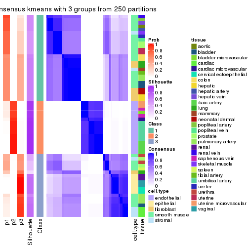
consensus_heatmap(res, k = 4)
consensus_heatmap(res, k = 5)
consensus_heatmap(res, k = 6)
Heatmaps for the membership of samples in all partitions to see how consistent they are:
membership_heatmap(res, k = 2)
membership_heatmap(res, k = 3)
membership_heatmap(res, k = 4)

membership_heatmap(res, k = 5)
membership_heatmap(res, k = 6)
As soon as we have had the classes for columns, we can look for signatures which are significantly different between classes which can be candidate marks for certain classes. Following are the heatmaps for signatures.
Signature heatmaps where rows are scaled:
get_signatures(res, k = 2)
get_signatures(res, k = 3)
get_signatures(res, k = 4)
get_signatures(res, k = 5)
get_signatures(res, k = 6)
Signature heatmaps where rows are not scaled:
get_signatures(res, k = 2, scale_rows = FALSE)
get_signatures(res, k = 3, scale_rows = FALSE)
get_signatures(res, k = 4, scale_rows = FALSE)
get_signatures(res, k = 5, scale_rows = FALSE)
get_signatures(res, k = 6, scale_rows = FALSE)
Compare the overlap of signatures from different k:
compare_signatures(res)
get_signature() returns a data frame invisibly. TO get the list of signatures, the function
call should be assigned to a variable explicitly. In following code, if plot argument is set
to FALSE, no heatmap is plotted while only the differential analysis is performed.
# code only for demonstration
tb = get_signature(res, k = ..., plot = FALSE)
An example of the output of tb is:
#> which_row fdr mean_1 mean_2 scaled_mean_1 scaled_mean_2 km
#> 1 38 0.042760348 8.373488 9.131774 -0.5533452 0.5164555 1
#> 2 40 0.018707592 7.106213 8.469186 -0.6173731 0.5762149 1
#> 3 55 0.019134737 10.221463 11.207825 -0.6159697 0.5749050 1
#> 4 59 0.006059896 5.921854 7.869574 -0.6899429 0.6439467 1
#> 5 60 0.018055526 8.928898 10.211722 -0.6204761 0.5791110 1
#> 6 98 0.009384629 15.714769 14.887706 0.6635654 -0.6193277 2
...
The columns in tb are:
which_row: row indices corresponding to the input matrix.fdr: FDR for the differential test. mean_x: The mean value in group x.scaled_mean_x: The mean value in group x after rows are scaled.km: Row groups if k-means clustering is applied to rows.UMAP plot which shows how samples are separated.
dimension_reduction(res, k = 2, method = "UMAP")

dimension_reduction(res, k = 3, method = "UMAP")
dimension_reduction(res, k = 4, method = "UMAP")

dimension_reduction(res, k = 5, method = "UMAP")
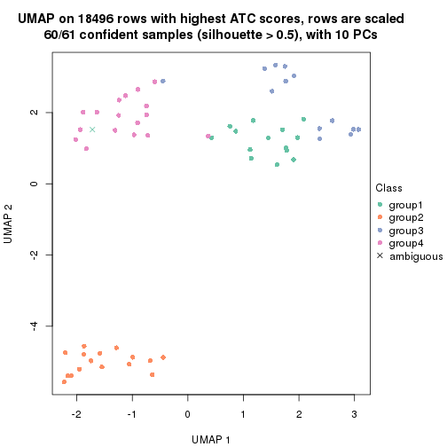
dimension_reduction(res, k = 6, method = "UMAP")
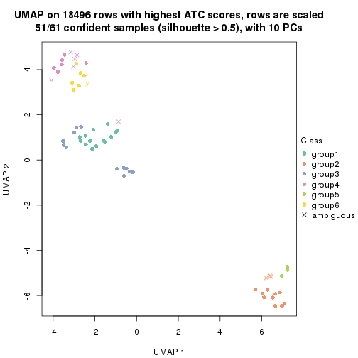
Following heatmap shows how subgroups are split when increasing k:
collect_classes(res)
Test correlation between subgroups and known annotations. If the known annotation is numeric, one-way ANOVA test is applied, and if the known annotation is discrete, chi-squared contingency table test is applied.
test_to_known_factors(res)
#> n cell.type(p) tissue(p) k
#> ATC:kmeans 61 1.79e-12 4.63e-04 2
#> ATC:kmeans 55 2.31e-14 2.26e-04 3
#> ATC:kmeans 61 6.56e-16 2.14e-06 4
#> ATC:kmeans 60 7.80e-16 1.81e-06 5
#> ATC:kmeans 51 9.98e-11 1.19e-10 6
If matrix rows can be associated to genes, consider to use GO_Enrichment(res,
...) to perform function enrichment for the signature genes.
The object with results only for a single top-value method and a single partition method can be extracted as:
res = res_list["ATC", "skmeans"]
# you can also extract it by
# res = res_list["ATC:skmeans"]
A summary of res and all the functions that can be applied to it:
res
#> A 'ConsensusPartition' object with k = 2, 3, 4, 5, 6.
#> On a matrix with 18496 rows and 61 columns.
#> Top rows (1000, 2000, 3000, 4000, 5000) are extracted by 'ATC' method.
#> Subgroups are detected by 'skmeans' method.
#> Performed in total 1250 partitions by row resampling.
#> Best k for subgroups seems to be 5.
#>
#> Following methods can be applied to this 'ConsensusPartition' object:
#> [1] "cola_report" "collect_classes" "collect_plots"
#> [4] "collect_stats" "colnames" "compare_signatures"
#> [7] "consensus_heatmap" "dimension_reduction" "functional_enrichment"
#> [10] "get_anno_col" "get_anno" "get_classes"
#> [13] "get_consensus" "get_matrix" "get_membership"
#> [16] "get_param" "get_signatures" "get_stats"
#> [19] "is_best_k" "is_stable_k" "membership_heatmap"
#> [22] "ncol" "nrow" "plot_ecdf"
#> [25] "rownames" "select_partition_number" "show"
#> [28] "suggest_best_k" "test_to_known_factors"
collect_plots() function collects all the plots made from res for all k (number of partitions)
into one single page to provide an easy and fast comparison between different k.
collect_plots(res)
The plots are:
k and the heatmap of
predicted classes for each k.k.k.k.All the plots in panels can be made by individual functions and they are plotted later in this section.
select_partition_number() produces several plots showing different
statistics for choosing “optimized” k. There are following statistics:
k;k, the area increased is defined as \(A_k - A_{k-1}\).The detailed explanations of these statistics can be found in the cola vignette.
Generally speaking, lower PAC score, higher mean silhouette score or higher
concordance corresponds to better partition. Rand index and Jaccard index
measure how similar the current partition is compared to partition with k-1.
If they are too similar, we won't accept k is better than k-1.
select_partition_number(res)
The numeric values for all these statistics can be obtained by get_stats().
get_stats(res)
#> k 1-PAC mean_silhouette concordance area_increased Rand Jaccard
#> 2 2 1.000 0.957 0.982 0.5009 0.495 0.495
#> 3 3 0.719 0.882 0.902 0.3216 0.702 0.466
#> 4 4 0.913 0.943 0.969 0.1324 0.878 0.648
#> 5 5 0.906 0.922 0.945 0.0447 0.956 0.826
#> 6 6 0.891 0.890 0.927 0.0461 0.949 0.769
suggest_best_k() suggests the best \(k\) based on these statistics. The rules are as follows:
NA.suggest_best_k(res)
#> [1] 5
#> attr(,"optional")
#> [1] 2 4
There is also optional best \(k\) = 2 4 that is worth to check.
Following shows the table of the partitions (You need to click the show/hide
code output link to see it). The membership matrix (columns with name p*)
is inferred by
clue::cl_consensus()
function with the SE method. Basically the value in the membership matrix
represents the probability to belong to a certain group. The finall class
label for an item is determined with the group with highest probability it
belongs to.
In get_classes() function, the entropy is calculated from the membership
matrix and the silhouette score is calculated from the consensus matrix.
cbind(get_classes(res, k = 2), get_membership(res, k = 2))
#> class entropy silhouette p1 p2
#> GSM72644 2 0.000 0.960 0.000 1.000
#> GSM72647 2 0.000 0.960 0.000 1.000
#> GSM72657 2 0.000 0.960 0.000 1.000
#> GSM72658 2 0.000 0.960 0.000 1.000
#> GSM72659 2 0.000 0.960 0.000 1.000
#> GSM72660 2 0.000 0.960 0.000 1.000
#> GSM72683 2 0.000 0.960 0.000 1.000
#> GSM72684 2 0.000 0.960 0.000 1.000
#> GSM72686 2 0.000 0.960 0.000 1.000
#> GSM72687 2 0.000 0.960 0.000 1.000
#> GSM72688 2 0.000 0.960 0.000 1.000
#> GSM72689 2 0.000 0.960 0.000 1.000
#> GSM72690 2 0.000 0.960 0.000 1.000
#> GSM72691 2 0.000 0.960 0.000 1.000
#> GSM72692 2 0.000 0.960 0.000 1.000
#> GSM72693 2 0.000 0.960 0.000 1.000
#> GSM72645 2 0.983 0.312 0.424 0.576
#> GSM72646 2 0.000 0.960 0.000 1.000
#> GSM72678 2 0.000 0.960 0.000 1.000
#> GSM72679 2 0.697 0.763 0.188 0.812
#> GSM72699 2 0.983 0.312 0.424 0.576
#> GSM72700 2 0.204 0.934 0.032 0.968
#> GSM72654 1 0.000 1.000 1.000 0.000
#> GSM72655 1 0.000 1.000 1.000 0.000
#> GSM72661 1 0.000 1.000 1.000 0.000
#> GSM72662 1 0.000 1.000 1.000 0.000
#> GSM72663 1 0.000 1.000 1.000 0.000
#> GSM72665 1 0.000 1.000 1.000 0.000
#> GSM72666 1 0.000 1.000 1.000 0.000
#> GSM72640 1 0.000 1.000 1.000 0.000
#> GSM72641 1 0.000 1.000 1.000 0.000
#> GSM72642 1 0.000 1.000 1.000 0.000
#> GSM72643 2 0.000 0.960 0.000 1.000
#> GSM72651 1 0.000 1.000 1.000 0.000
#> GSM72652 1 0.000 1.000 1.000 0.000
#> GSM72653 1 0.000 1.000 1.000 0.000
#> GSM72656 1 0.000 1.000 1.000 0.000
#> GSM72667 1 0.000 1.000 1.000 0.000
#> GSM72668 1 0.000 1.000 1.000 0.000
#> GSM72669 1 0.000 1.000 1.000 0.000
#> GSM72670 1 0.000 1.000 1.000 0.000
#> GSM72671 1 0.000 1.000 1.000 0.000
#> GSM72672 1 0.000 1.000 1.000 0.000
#> GSM72696 1 0.000 1.000 1.000 0.000
#> GSM72697 1 0.000 1.000 1.000 0.000
#> GSM72674 1 0.000 1.000 1.000 0.000
#> GSM72675 1 0.000 1.000 1.000 0.000
#> GSM72676 1 0.000 1.000 1.000 0.000
#> GSM72677 1 0.000 1.000 1.000 0.000
#> GSM72680 1 0.000 1.000 1.000 0.000
#> GSM72682 1 0.000 1.000 1.000 0.000
#> GSM72685 1 0.000 1.000 1.000 0.000
#> GSM72694 2 0.000 0.960 0.000 1.000
#> GSM72695 1 0.000 1.000 1.000 0.000
#> GSM72698 1 0.000 1.000 1.000 0.000
#> GSM72648 2 0.000 0.960 0.000 1.000
#> GSM72649 2 0.000 0.960 0.000 1.000
#> GSM72650 2 0.000 0.960 0.000 1.000
#> GSM72664 1 0.000 1.000 1.000 0.000
#> GSM72673 2 0.000 0.960 0.000 1.000
#> GSM72681 1 0.000 1.000 1.000 0.000
cbind(get_classes(res, k = 3), get_membership(res, k = 3))
#> class entropy silhouette p1 p2 p3
#> GSM72644 2 0.0000 0.932 0.000 1.000 0.000
#> GSM72647 2 0.0000 0.932 0.000 1.000 0.000
#> GSM72657 2 0.0000 0.932 0.000 1.000 0.000
#> GSM72658 2 0.0000 0.932 0.000 1.000 0.000
#> GSM72659 2 0.0000 0.932 0.000 1.000 0.000
#> GSM72660 2 0.0000 0.932 0.000 1.000 0.000
#> GSM72683 2 0.0000 0.932 0.000 1.000 0.000
#> GSM72684 2 0.0000 0.932 0.000 1.000 0.000
#> GSM72686 2 0.0000 0.932 0.000 1.000 0.000
#> GSM72687 2 0.0000 0.932 0.000 1.000 0.000
#> GSM72688 2 0.0000 0.932 0.000 1.000 0.000
#> GSM72689 2 0.0000 0.932 0.000 1.000 0.000
#> GSM72690 2 0.0000 0.932 0.000 1.000 0.000
#> GSM72691 2 0.0000 0.932 0.000 1.000 0.000
#> GSM72692 2 0.0000 0.932 0.000 1.000 0.000
#> GSM72693 2 0.0000 0.932 0.000 1.000 0.000
#> GSM72645 3 0.5058 0.765 0.244 0.000 0.756
#> GSM72646 3 0.5058 0.765 0.244 0.000 0.756
#> GSM72678 2 0.5058 0.791 0.244 0.756 0.000
#> GSM72679 3 0.5058 0.765 0.244 0.000 0.756
#> GSM72699 3 0.5058 0.765 0.244 0.000 0.756
#> GSM72700 3 0.5058 0.765 0.244 0.000 0.756
#> GSM72654 3 0.0000 0.896 0.000 0.000 1.000
#> GSM72655 3 0.0000 0.896 0.000 0.000 1.000
#> GSM72661 3 0.0237 0.892 0.004 0.000 0.996
#> GSM72662 3 0.0237 0.892 0.004 0.000 0.996
#> GSM72663 1 0.5058 0.950 0.756 0.000 0.244
#> GSM72665 3 0.0000 0.896 0.000 0.000 1.000
#> GSM72666 3 0.0000 0.896 0.000 0.000 1.000
#> GSM72640 1 0.5058 0.950 0.756 0.000 0.244
#> GSM72641 3 0.0000 0.896 0.000 0.000 1.000
#> GSM72642 3 0.0000 0.896 0.000 0.000 1.000
#> GSM72643 2 0.5058 0.791 0.244 0.756 0.000
#> GSM72651 3 0.0237 0.892 0.004 0.000 0.996
#> GSM72652 3 0.0000 0.896 0.000 0.000 1.000
#> GSM72653 1 0.5058 0.950 0.756 0.000 0.244
#> GSM72656 1 0.5058 0.950 0.756 0.000 0.244
#> GSM72667 3 0.1643 0.879 0.044 0.000 0.956
#> GSM72668 3 0.0000 0.896 0.000 0.000 1.000
#> GSM72669 3 0.1643 0.879 0.044 0.000 0.956
#> GSM72670 3 0.5058 0.765 0.244 0.000 0.756
#> GSM72671 3 0.0000 0.896 0.000 0.000 1.000
#> GSM72672 1 0.5058 0.950 0.756 0.000 0.244
#> GSM72696 1 0.5058 0.950 0.756 0.000 0.244
#> GSM72697 1 0.5058 0.950 0.756 0.000 0.244
#> GSM72674 1 0.5058 0.950 0.756 0.000 0.244
#> GSM72675 1 0.5058 0.950 0.756 0.000 0.244
#> GSM72676 1 0.5058 0.950 0.756 0.000 0.244
#> GSM72677 1 0.5058 0.950 0.756 0.000 0.244
#> GSM72680 1 0.6154 0.709 0.592 0.000 0.408
#> GSM72682 1 0.5058 0.950 0.756 0.000 0.244
#> GSM72685 3 0.0000 0.896 0.000 0.000 1.000
#> GSM72694 1 0.1643 0.693 0.956 0.044 0.000
#> GSM72695 1 0.5058 0.950 0.756 0.000 0.244
#> GSM72698 1 0.5058 0.950 0.756 0.000 0.244
#> GSM72648 2 0.7746 0.690 0.244 0.656 0.100
#> GSM72649 2 0.7746 0.690 0.244 0.656 0.100
#> GSM72650 2 0.7746 0.690 0.244 0.656 0.100
#> GSM72664 3 0.0000 0.896 0.000 0.000 1.000
#> GSM72673 1 0.1643 0.693 0.956 0.044 0.000
#> GSM72681 1 0.5058 0.950 0.756 0.000 0.244
cbind(get_classes(res, k = 4), get_membership(res, k = 4))
#> class entropy silhouette p1 p2 p3 p4
#> GSM72644 2 0.0000 1.000 0.000 1.000 0.000 0.000
#> GSM72647 2 0.0000 1.000 0.000 1.000 0.000 0.000
#> GSM72657 2 0.0000 1.000 0.000 1.000 0.000 0.000
#> GSM72658 2 0.0000 1.000 0.000 1.000 0.000 0.000
#> GSM72659 2 0.0000 1.000 0.000 1.000 0.000 0.000
#> GSM72660 2 0.0000 1.000 0.000 1.000 0.000 0.000
#> GSM72683 2 0.0000 1.000 0.000 1.000 0.000 0.000
#> GSM72684 2 0.0000 1.000 0.000 1.000 0.000 0.000
#> GSM72686 2 0.0000 1.000 0.000 1.000 0.000 0.000
#> GSM72687 2 0.0000 1.000 0.000 1.000 0.000 0.000
#> GSM72688 2 0.0000 1.000 0.000 1.000 0.000 0.000
#> GSM72689 2 0.0000 1.000 0.000 1.000 0.000 0.000
#> GSM72690 2 0.0000 1.000 0.000 1.000 0.000 0.000
#> GSM72691 2 0.0000 1.000 0.000 1.000 0.000 0.000
#> GSM72692 2 0.0000 1.000 0.000 1.000 0.000 0.000
#> GSM72693 2 0.0000 1.000 0.000 1.000 0.000 0.000
#> GSM72645 3 0.0000 0.971 0.000 0.000 1.000 0.000
#> GSM72646 3 0.0000 0.971 0.000 0.000 1.000 0.000
#> GSM72678 3 0.0000 0.971 0.000 0.000 1.000 0.000
#> GSM72679 3 0.0707 0.958 0.020 0.000 0.980 0.000
#> GSM72699 3 0.0000 0.971 0.000 0.000 1.000 0.000
#> GSM72700 3 0.0000 0.971 0.000 0.000 1.000 0.000
#> GSM72654 1 0.0000 0.966 1.000 0.000 0.000 0.000
#> GSM72655 1 0.0000 0.966 1.000 0.000 0.000 0.000
#> GSM72661 1 0.0000 0.966 1.000 0.000 0.000 0.000
#> GSM72662 1 0.0000 0.966 1.000 0.000 0.000 0.000
#> GSM72663 4 0.1557 0.919 0.056 0.000 0.000 0.944
#> GSM72665 1 0.0000 0.966 1.000 0.000 0.000 0.000
#> GSM72666 1 0.0000 0.966 1.000 0.000 0.000 0.000
#> GSM72640 4 0.3610 0.812 0.200 0.000 0.000 0.800
#> GSM72641 1 0.0000 0.966 1.000 0.000 0.000 0.000
#> GSM72642 1 0.0000 0.966 1.000 0.000 0.000 0.000
#> GSM72643 3 0.4284 0.775 0.000 0.020 0.780 0.200
#> GSM72651 1 0.0000 0.966 1.000 0.000 0.000 0.000
#> GSM72652 1 0.0000 0.966 1.000 0.000 0.000 0.000
#> GSM72653 4 0.3610 0.812 0.200 0.000 0.000 0.800
#> GSM72656 4 0.3610 0.812 0.200 0.000 0.000 0.800
#> GSM72667 1 0.1867 0.909 0.928 0.000 0.072 0.000
#> GSM72668 1 0.0000 0.966 1.000 0.000 0.000 0.000
#> GSM72669 1 0.1022 0.944 0.968 0.000 0.032 0.000
#> GSM72670 1 0.5130 0.486 0.652 0.000 0.332 0.016
#> GSM72671 1 0.0000 0.966 1.000 0.000 0.000 0.000
#> GSM72672 4 0.3610 0.812 0.200 0.000 0.000 0.800
#> GSM72696 4 0.0707 0.933 0.020 0.000 0.000 0.980
#> GSM72697 4 0.0817 0.933 0.024 0.000 0.000 0.976
#> GSM72674 4 0.0592 0.932 0.016 0.000 0.000 0.984
#> GSM72675 4 0.0817 0.933 0.024 0.000 0.000 0.976
#> GSM72676 4 0.0000 0.925 0.000 0.000 0.000 1.000
#> GSM72677 4 0.0707 0.933 0.020 0.000 0.000 0.980
#> GSM72680 1 0.2345 0.862 0.900 0.000 0.000 0.100
#> GSM72682 4 0.0000 0.925 0.000 0.000 0.000 1.000
#> GSM72685 1 0.0000 0.966 1.000 0.000 0.000 0.000
#> GSM72694 4 0.0000 0.925 0.000 0.000 0.000 1.000
#> GSM72695 4 0.0000 0.925 0.000 0.000 0.000 1.000
#> GSM72698 4 0.0817 0.933 0.024 0.000 0.000 0.976
#> GSM72648 3 0.0779 0.968 0.000 0.004 0.980 0.016
#> GSM72649 3 0.0779 0.968 0.000 0.004 0.980 0.016
#> GSM72650 3 0.0779 0.968 0.000 0.004 0.980 0.016
#> GSM72664 1 0.0000 0.966 1.000 0.000 0.000 0.000
#> GSM72673 4 0.0000 0.925 0.000 0.000 0.000 1.000
#> GSM72681 4 0.1302 0.926 0.044 0.000 0.000 0.956
cbind(get_classes(res, k = 5), get_membership(res, k = 5))
#> class entropy silhouette p1 p2 p3 p4 p5
#> GSM72644 2 0.0404 0.992 0.000 0.988 0.000 0.000 0.012
#> GSM72647 2 0.0404 0.992 0.000 0.988 0.000 0.000 0.012
#> GSM72657 2 0.0000 0.995 0.000 1.000 0.000 0.000 0.000
#> GSM72658 2 0.0000 0.995 0.000 1.000 0.000 0.000 0.000
#> GSM72659 2 0.0000 0.995 0.000 1.000 0.000 0.000 0.000
#> GSM72660 2 0.0000 0.995 0.000 1.000 0.000 0.000 0.000
#> GSM72683 2 0.0404 0.992 0.000 0.988 0.000 0.000 0.012
#> GSM72684 2 0.0404 0.992 0.000 0.988 0.000 0.000 0.012
#> GSM72686 2 0.0000 0.995 0.000 1.000 0.000 0.000 0.000
#> GSM72687 2 0.0000 0.995 0.000 1.000 0.000 0.000 0.000
#> GSM72688 2 0.0000 0.995 0.000 1.000 0.000 0.000 0.000
#> GSM72689 2 0.0000 0.995 0.000 1.000 0.000 0.000 0.000
#> GSM72690 2 0.0000 0.995 0.000 1.000 0.000 0.000 0.000
#> GSM72691 2 0.0000 0.995 0.000 1.000 0.000 0.000 0.000
#> GSM72692 2 0.0404 0.992 0.000 0.988 0.000 0.000 0.012
#> GSM72693 2 0.0404 0.992 0.000 0.988 0.000 0.000 0.012
#> GSM72645 3 0.0000 1.000 0.000 0.000 1.000 0.000 0.000
#> GSM72646 3 0.0000 1.000 0.000 0.000 1.000 0.000 0.000
#> GSM72678 3 0.0000 1.000 0.000 0.000 1.000 0.000 0.000
#> GSM72679 3 0.0000 1.000 0.000 0.000 1.000 0.000 0.000
#> GSM72699 3 0.0000 1.000 0.000 0.000 1.000 0.000 0.000
#> GSM72700 3 0.0000 1.000 0.000 0.000 1.000 0.000 0.000
#> GSM72654 1 0.0162 0.972 0.996 0.000 0.000 0.000 0.004
#> GSM72655 1 0.0162 0.972 0.996 0.000 0.000 0.000 0.004
#> GSM72661 1 0.0992 0.956 0.968 0.000 0.000 0.024 0.008
#> GSM72662 1 0.0992 0.956 0.968 0.000 0.000 0.024 0.008
#> GSM72663 4 0.4571 0.737 0.188 0.000 0.000 0.736 0.076
#> GSM72665 1 0.0000 0.971 1.000 0.000 0.000 0.000 0.000
#> GSM72666 1 0.0000 0.971 1.000 0.000 0.000 0.000 0.000
#> GSM72640 4 0.1410 0.893 0.060 0.000 0.000 0.940 0.000
#> GSM72641 1 0.0162 0.972 0.996 0.000 0.000 0.000 0.004
#> GSM72642 1 0.0162 0.972 0.996 0.000 0.000 0.000 0.004
#> GSM72643 5 0.1471 0.735 0.000 0.020 0.004 0.024 0.952
#> GSM72651 1 0.0992 0.956 0.968 0.000 0.000 0.024 0.008
#> GSM72652 1 0.0992 0.956 0.968 0.000 0.000 0.024 0.008
#> GSM72653 4 0.1410 0.893 0.060 0.000 0.000 0.940 0.000
#> GSM72656 4 0.1410 0.893 0.060 0.000 0.000 0.940 0.000
#> GSM72667 5 0.3612 0.734 0.268 0.000 0.000 0.000 0.732
#> GSM72668 1 0.0162 0.972 0.996 0.000 0.000 0.000 0.004
#> GSM72669 5 0.3752 0.703 0.292 0.000 0.000 0.000 0.708
#> GSM72670 5 0.2806 0.799 0.152 0.000 0.004 0.000 0.844
#> GSM72671 1 0.0162 0.972 0.996 0.000 0.000 0.000 0.004
#> GSM72672 4 0.1410 0.893 0.060 0.000 0.000 0.940 0.000
#> GSM72696 4 0.0703 0.905 0.024 0.000 0.000 0.976 0.000
#> GSM72697 4 0.0703 0.905 0.024 0.000 0.000 0.976 0.000
#> GSM72674 4 0.2020 0.872 0.000 0.000 0.000 0.900 0.100
#> GSM72675 4 0.0703 0.905 0.024 0.000 0.000 0.976 0.000
#> GSM72676 4 0.2471 0.856 0.000 0.000 0.000 0.864 0.136
#> GSM72677 4 0.0703 0.905 0.024 0.000 0.000 0.976 0.000
#> GSM72680 1 0.2813 0.781 0.832 0.000 0.000 0.168 0.000
#> GSM72682 4 0.2230 0.866 0.000 0.000 0.000 0.884 0.116
#> GSM72685 1 0.0162 0.972 0.996 0.000 0.000 0.000 0.004
#> GSM72694 4 0.3707 0.730 0.000 0.000 0.000 0.716 0.284
#> GSM72695 4 0.2471 0.856 0.000 0.000 0.000 0.864 0.136
#> GSM72698 4 0.0703 0.905 0.024 0.000 0.000 0.976 0.000
#> GSM72648 5 0.3265 0.800 0.016 0.012 0.128 0.000 0.844
#> GSM72649 5 0.3265 0.800 0.016 0.012 0.128 0.000 0.844
#> GSM72650 5 0.3265 0.800 0.016 0.012 0.128 0.000 0.844
#> GSM72664 1 0.0162 0.972 0.996 0.000 0.000 0.000 0.004
#> GSM72673 4 0.3707 0.730 0.000 0.000 0.000 0.716 0.284
#> GSM72681 4 0.0703 0.905 0.024 0.000 0.000 0.976 0.000
cbind(get_classes(res, k = 6), get_membership(res, k = 6))
#> class entropy silhouette p1 p2 p3 p4 p5 p6
#> GSM72644 2 0.2234 0.922 0.000 0.872 0.000 0.124 0.004 0.000
#> GSM72647 2 0.2146 0.925 0.000 0.880 0.000 0.116 0.004 0.000
#> GSM72657 2 0.0000 0.955 0.000 1.000 0.000 0.000 0.000 0.000
#> GSM72658 2 0.0000 0.955 0.000 1.000 0.000 0.000 0.000 0.000
#> GSM72659 2 0.0000 0.955 0.000 1.000 0.000 0.000 0.000 0.000
#> GSM72660 2 0.0000 0.955 0.000 1.000 0.000 0.000 0.000 0.000
#> GSM72683 2 0.2234 0.922 0.000 0.872 0.000 0.124 0.004 0.000
#> GSM72684 2 0.2234 0.922 0.000 0.872 0.000 0.124 0.004 0.000
#> GSM72686 2 0.0000 0.955 0.000 1.000 0.000 0.000 0.000 0.000
#> GSM72687 2 0.0000 0.955 0.000 1.000 0.000 0.000 0.000 0.000
#> GSM72688 2 0.0000 0.955 0.000 1.000 0.000 0.000 0.000 0.000
#> GSM72689 2 0.0000 0.955 0.000 1.000 0.000 0.000 0.000 0.000
#> GSM72690 2 0.0000 0.955 0.000 1.000 0.000 0.000 0.000 0.000
#> GSM72691 2 0.0000 0.955 0.000 1.000 0.000 0.000 0.000 0.000
#> GSM72692 2 0.2234 0.922 0.000 0.872 0.000 0.124 0.004 0.000
#> GSM72693 2 0.2234 0.922 0.000 0.872 0.000 0.124 0.004 0.000
#> GSM72645 3 0.0000 0.999 0.000 0.000 1.000 0.000 0.000 0.000
#> GSM72646 3 0.0000 0.999 0.000 0.000 1.000 0.000 0.000 0.000
#> GSM72678 3 0.0146 0.998 0.000 0.000 0.996 0.004 0.000 0.000
#> GSM72679 3 0.0146 0.998 0.000 0.000 0.996 0.004 0.000 0.000
#> GSM72699 3 0.0000 0.999 0.000 0.000 1.000 0.000 0.000 0.000
#> GSM72700 3 0.0000 0.999 0.000 0.000 1.000 0.000 0.000 0.000
#> GSM72654 1 0.0000 0.970 1.000 0.000 0.000 0.000 0.000 0.000
#> GSM72655 1 0.0000 0.970 1.000 0.000 0.000 0.000 0.000 0.000
#> GSM72661 1 0.2265 0.921 0.896 0.000 0.000 0.076 0.004 0.024
#> GSM72662 1 0.2265 0.921 0.896 0.000 0.000 0.076 0.004 0.024
#> GSM72663 4 0.5886 0.282 0.352 0.000 0.000 0.464 0.004 0.180
#> GSM72665 1 0.0000 0.970 1.000 0.000 0.000 0.000 0.000 0.000
#> GSM72666 1 0.0000 0.970 1.000 0.000 0.000 0.000 0.000 0.000
#> GSM72640 6 0.0146 0.906 0.004 0.000 0.000 0.000 0.000 0.996
#> GSM72641 1 0.0000 0.970 1.000 0.000 0.000 0.000 0.000 0.000
#> GSM72642 1 0.0000 0.970 1.000 0.000 0.000 0.000 0.000 0.000
#> GSM72643 5 0.3847 0.300 0.000 0.000 0.000 0.456 0.544 0.000
#> GSM72651 1 0.2265 0.921 0.896 0.000 0.000 0.076 0.004 0.024
#> GSM72652 1 0.2182 0.924 0.900 0.000 0.000 0.076 0.004 0.020
#> GSM72653 6 0.0146 0.906 0.004 0.000 0.000 0.000 0.000 0.996
#> GSM72656 6 0.0146 0.906 0.004 0.000 0.000 0.000 0.000 0.996
#> GSM72667 5 0.0713 0.900 0.028 0.000 0.000 0.000 0.972 0.000
#> GSM72668 1 0.0000 0.970 1.000 0.000 0.000 0.000 0.000 0.000
#> GSM72669 5 0.0713 0.900 0.028 0.000 0.000 0.000 0.972 0.000
#> GSM72670 5 0.0363 0.906 0.012 0.000 0.000 0.000 0.988 0.000
#> GSM72671 1 0.0000 0.970 1.000 0.000 0.000 0.000 0.000 0.000
#> GSM72672 6 0.0146 0.906 0.004 0.000 0.000 0.000 0.000 0.996
#> GSM72696 6 0.1765 0.869 0.000 0.000 0.000 0.096 0.000 0.904
#> GSM72697 6 0.1714 0.873 0.000 0.000 0.000 0.092 0.000 0.908
#> GSM72674 4 0.3833 0.466 0.000 0.000 0.000 0.556 0.000 0.444
#> GSM72675 6 0.1714 0.873 0.000 0.000 0.000 0.092 0.000 0.908
#> GSM72676 4 0.2883 0.786 0.000 0.000 0.000 0.788 0.000 0.212
#> GSM72677 6 0.0632 0.900 0.000 0.000 0.000 0.024 0.000 0.976
#> GSM72680 6 0.2730 0.620 0.192 0.000 0.000 0.000 0.000 0.808
#> GSM72682 4 0.3446 0.712 0.000 0.000 0.000 0.692 0.000 0.308
#> GSM72685 1 0.0000 0.970 1.000 0.000 0.000 0.000 0.000 0.000
#> GSM72694 4 0.2945 0.776 0.000 0.000 0.000 0.824 0.020 0.156
#> GSM72695 4 0.2883 0.786 0.000 0.000 0.000 0.788 0.000 0.212
#> GSM72698 6 0.1714 0.873 0.000 0.000 0.000 0.092 0.000 0.908
#> GSM72648 5 0.0622 0.906 0.000 0.000 0.012 0.008 0.980 0.000
#> GSM72649 5 0.0603 0.906 0.000 0.000 0.016 0.004 0.980 0.000
#> GSM72650 5 0.0603 0.906 0.000 0.000 0.016 0.004 0.980 0.000
#> GSM72664 1 0.0000 0.970 1.000 0.000 0.000 0.000 0.000 0.000
#> GSM72673 4 0.2945 0.776 0.000 0.000 0.000 0.824 0.020 0.156
#> GSM72681 6 0.0000 0.905 0.000 0.000 0.000 0.000 0.000 1.000
Heatmaps for the consensus matrix. It visualizes the probability of two samples to be in a same group.
consensus_heatmap(res, k = 2)
consensus_heatmap(res, k = 3)
consensus_heatmap(res, k = 4)
consensus_heatmap(res, k = 5)
consensus_heatmap(res, k = 6)
Heatmaps for the membership of samples in all partitions to see how consistent they are:
membership_heatmap(res, k = 2)
membership_heatmap(res, k = 3)
membership_heatmap(res, k = 4)
membership_heatmap(res, k = 5)
membership_heatmap(res, k = 6)
As soon as we have had the classes for columns, we can look for signatures which are significantly different between classes which can be candidate marks for certain classes. Following are the heatmaps for signatures.
Signature heatmaps where rows are scaled:
get_signatures(res, k = 2)
get_signatures(res, k = 3)
get_signatures(res, k = 4)
get_signatures(res, k = 5)
get_signatures(res, k = 6)
Signature heatmaps where rows are not scaled:
get_signatures(res, k = 2, scale_rows = FALSE)
get_signatures(res, k = 3, scale_rows = FALSE)
get_signatures(res, k = 4, scale_rows = FALSE)
get_signatures(res, k = 5, scale_rows = FALSE)

get_signatures(res, k = 6, scale_rows = FALSE)
Compare the overlap of signatures from different k:
compare_signatures(res)
get_signature() returns a data frame invisibly. TO get the list of signatures, the function
call should be assigned to a variable explicitly. In following code, if plot argument is set
to FALSE, no heatmap is plotted while only the differential analysis is performed.
# code only for demonstration
tb = get_signature(res, k = ..., plot = FALSE)
An example of the output of tb is:
#> which_row fdr mean_1 mean_2 scaled_mean_1 scaled_mean_2 km
#> 1 38 0.042760348 8.373488 9.131774 -0.5533452 0.5164555 1
#> 2 40 0.018707592 7.106213 8.469186 -0.6173731 0.5762149 1
#> 3 55 0.019134737 10.221463 11.207825 -0.6159697 0.5749050 1
#> 4 59 0.006059896 5.921854 7.869574 -0.6899429 0.6439467 1
#> 5 60 0.018055526 8.928898 10.211722 -0.6204761 0.5791110 1
#> 6 98 0.009384629 15.714769 14.887706 0.6635654 -0.6193277 2
...
The columns in tb are:
which_row: row indices corresponding to the input matrix.fdr: FDR for the differential test. mean_x: The mean value in group x.scaled_mean_x: The mean value in group x after rows are scaled.km: Row groups if k-means clustering is applied to rows.UMAP plot which shows how samples are separated.
dimension_reduction(res, k = 2, method = "UMAP")
dimension_reduction(res, k = 3, method = "UMAP")
dimension_reduction(res, k = 4, method = "UMAP")
dimension_reduction(res, k = 5, method = "UMAP")

dimension_reduction(res, k = 6, method = "UMAP")
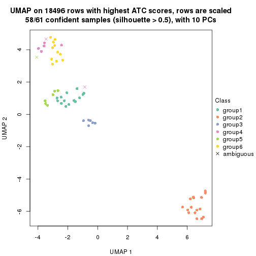
Following heatmap shows how subgroups are split when increasing k:
collect_classes(res)
Test correlation between subgroups and known annotations. If the known annotation is numeric, one-way ANOVA test is applied, and if the known annotation is discrete, chi-squared contingency table test is applied.
test_to_known_factors(res)
#> n cell.type(p) tissue(p) k
#> ATC:skmeans 59 2.35e-09 6.64e-03 2
#> ATC:skmeans 61 6.01e-10 3.26e-05 3
#> ATC:skmeans 60 1.12e-17 3.40e-07 4
#> ATC:skmeans 61 4.61e-22 6.47e-08 5
#> ATC:skmeans 58 1.59e-20 8.94e-09 6
If matrix rows can be associated to genes, consider to use GO_Enrichment(res,
...) to perform function enrichment for the signature genes.
The object with results only for a single top-value method and a single partition method can be extracted as:
res = res_list["ATC", "pam"]
# you can also extract it by
# res = res_list["ATC:pam"]
A summary of res and all the functions that can be applied to it:
res
#> A 'ConsensusPartition' object with k = 2, 3, 4, 5, 6.
#> On a matrix with 18496 rows and 61 columns.
#> Top rows (1000, 2000, 3000, 4000, 5000) are extracted by 'ATC' method.
#> Subgroups are detected by 'pam' method.
#> Performed in total 1250 partitions by row resampling.
#> Best k for subgroups seems to be 2.
#>
#> Following methods can be applied to this 'ConsensusPartition' object:
#> [1] "cola_report" "collect_classes" "collect_plots"
#> [4] "collect_stats" "colnames" "compare_signatures"
#> [7] "consensus_heatmap" "dimension_reduction" "functional_enrichment"
#> [10] "get_anno_col" "get_anno" "get_classes"
#> [13] "get_consensus" "get_matrix" "get_membership"
#> [16] "get_param" "get_signatures" "get_stats"
#> [19] "is_best_k" "is_stable_k" "membership_heatmap"
#> [22] "ncol" "nrow" "plot_ecdf"
#> [25] "rownames" "select_partition_number" "show"
#> [28] "suggest_best_k" "test_to_known_factors"
collect_plots() function collects all the plots made from res for all k (number of partitions)
into one single page to provide an easy and fast comparison between different k.
collect_plots(res)
The plots are:
k and the heatmap of
predicted classes for each k.k.k.k.All the plots in panels can be made by individual functions and they are plotted later in this section.
select_partition_number() produces several plots showing different
statistics for choosing “optimized” k. There are following statistics:
k;k, the area increased is defined as \(A_k - A_{k-1}\).The detailed explanations of these statistics can be found in the cola vignette.
Generally speaking, lower PAC score, higher mean silhouette score or higher
concordance corresponds to better partition. Rand index and Jaccard index
measure how similar the current partition is compared to partition with k-1.
If they are too similar, we won't accept k is better than k-1.
select_partition_number(res)
The numeric values for all these statistics can be obtained by get_stats().
get_stats(res)
#> k 1-PAC mean_silhouette concordance area_increased Rand Jaccard
#> 2 2 1.000 0.975 0.992 0.4017 0.607 0.607
#> 3 3 0.689 0.726 0.868 0.6514 0.727 0.550
#> 4 4 0.820 0.888 0.935 0.1231 0.805 0.499
#> 5 5 0.837 0.894 0.927 0.0411 0.965 0.861
#> 6 6 0.896 0.919 0.915 0.0438 0.967 0.850
suggest_best_k() suggests the best \(k\) based on these statistics. The rules are as follows:
NA.suggest_best_k(res)
#> [1] 2
Following shows the table of the partitions (You need to click the show/hide
code output link to see it). The membership matrix (columns with name p*)
is inferred by
clue::cl_consensus()
function with the SE method. Basically the value in the membership matrix
represents the probability to belong to a certain group. The finall class
label for an item is determined with the group with highest probability it
belongs to.
In get_classes() function, the entropy is calculated from the membership
matrix and the silhouette score is calculated from the consensus matrix.
cbind(get_classes(res, k = 2), get_membership(res, k = 2))
#> class entropy silhouette p1 p2
#> GSM72644 2 0 1.00e+00 0.0 1.0
#> GSM72647 2 0 1.00e+00 0.0 1.0
#> GSM72657 2 0 1.00e+00 0.0 1.0
#> GSM72658 2 0 1.00e+00 0.0 1.0
#> GSM72659 2 0 1.00e+00 0.0 1.0
#> GSM72660 2 0 1.00e+00 0.0 1.0
#> GSM72683 2 0 1.00e+00 0.0 1.0
#> GSM72684 2 0 1.00e+00 0.0 1.0
#> GSM72686 2 0 1.00e+00 0.0 1.0
#> GSM72687 2 0 1.00e+00 0.0 1.0
#> GSM72688 2 0 1.00e+00 0.0 1.0
#> GSM72689 2 0 1.00e+00 0.0 1.0
#> GSM72690 2 0 1.00e+00 0.0 1.0
#> GSM72691 2 0 1.00e+00 0.0 1.0
#> GSM72692 2 0 1.00e+00 0.0 1.0
#> GSM72693 2 0 1.00e+00 0.0 1.0
#> GSM72645 1 0 9.89e-01 1.0 0.0
#> GSM72646 1 0 9.89e-01 1.0 0.0
#> GSM72678 1 1 -6.82e-16 0.5 0.5
#> GSM72679 1 0 9.89e-01 1.0 0.0
#> GSM72699 1 0 9.89e-01 1.0 0.0
#> GSM72700 1 0 9.89e-01 1.0 0.0
#> GSM72654 1 0 9.89e-01 1.0 0.0
#> GSM72655 1 0 9.89e-01 1.0 0.0
#> GSM72661 1 0 9.89e-01 1.0 0.0
#> GSM72662 1 0 9.89e-01 1.0 0.0
#> GSM72663 1 0 9.89e-01 1.0 0.0
#> GSM72665 1 0 9.89e-01 1.0 0.0
#> GSM72666 1 0 9.89e-01 1.0 0.0
#> GSM72640 1 0 9.89e-01 1.0 0.0
#> GSM72641 1 0 9.89e-01 1.0 0.0
#> GSM72642 1 0 9.89e-01 1.0 0.0
#> GSM72643 1 0 9.89e-01 1.0 0.0
#> GSM72651 1 0 9.89e-01 1.0 0.0
#> GSM72652 1 0 9.89e-01 1.0 0.0
#> GSM72653 1 0 9.89e-01 1.0 0.0
#> GSM72656 1 0 9.89e-01 1.0 0.0
#> GSM72667 1 0 9.89e-01 1.0 0.0
#> GSM72668 1 0 9.89e-01 1.0 0.0
#> GSM72669 1 0 9.89e-01 1.0 0.0
#> GSM72670 1 0 9.89e-01 1.0 0.0
#> GSM72671 1 0 9.89e-01 1.0 0.0
#> GSM72672 1 0 9.89e-01 1.0 0.0
#> GSM72696 1 0 9.89e-01 1.0 0.0
#> GSM72697 1 0 9.89e-01 1.0 0.0
#> GSM72674 1 0 9.89e-01 1.0 0.0
#> GSM72675 1 0 9.89e-01 1.0 0.0
#> GSM72676 1 0 9.89e-01 1.0 0.0
#> GSM72677 1 0 9.89e-01 1.0 0.0
#> GSM72680 1 0 9.89e-01 1.0 0.0
#> GSM72682 1 0 9.89e-01 1.0 0.0
#> GSM72685 1 0 9.89e-01 1.0 0.0
#> GSM72694 1 0 9.89e-01 1.0 0.0
#> GSM72695 1 0 9.89e-01 1.0 0.0
#> GSM72698 1 0 9.89e-01 1.0 0.0
#> GSM72648 1 0 9.89e-01 1.0 0.0
#> GSM72649 1 0 9.89e-01 1.0 0.0
#> GSM72650 1 0 9.89e-01 1.0 0.0
#> GSM72664 1 0 9.89e-01 1.0 0.0
#> GSM72673 1 0 9.89e-01 1.0 0.0
#> GSM72681 1 0 9.89e-01 1.0 0.0
cbind(get_classes(res, k = 3), get_membership(res, k = 3))
#> class entropy silhouette p1 p2 p3
#> GSM72644 2 0.000 1.0000 0.000 1.000 0.000
#> GSM72647 2 0.000 1.0000 0.000 1.000 0.000
#> GSM72657 2 0.000 1.0000 0.000 1.000 0.000
#> GSM72658 2 0.000 1.0000 0.000 1.000 0.000
#> GSM72659 2 0.000 1.0000 0.000 1.000 0.000
#> GSM72660 2 0.000 1.0000 0.000 1.000 0.000
#> GSM72683 2 0.000 1.0000 0.000 1.000 0.000
#> GSM72684 2 0.000 1.0000 0.000 1.000 0.000
#> GSM72686 2 0.000 1.0000 0.000 1.000 0.000
#> GSM72687 2 0.000 1.0000 0.000 1.000 0.000
#> GSM72688 2 0.000 1.0000 0.000 1.000 0.000
#> GSM72689 2 0.000 1.0000 0.000 1.000 0.000
#> GSM72690 2 0.000 1.0000 0.000 1.000 0.000
#> GSM72691 2 0.000 1.0000 0.000 1.000 0.000
#> GSM72692 2 0.000 1.0000 0.000 1.000 0.000
#> GSM72693 2 0.000 1.0000 0.000 1.000 0.000
#> GSM72645 1 0.556 0.6607 0.700 0.000 0.300
#> GSM72646 3 0.630 -0.3096 0.472 0.000 0.528
#> GSM72678 3 0.617 0.0656 0.000 0.412 0.588
#> GSM72679 1 0.153 0.7861 0.960 0.000 0.040
#> GSM72699 1 0.556 0.6607 0.700 0.000 0.300
#> GSM72700 3 0.629 -0.2888 0.464 0.000 0.536
#> GSM72654 1 0.000 0.8006 1.000 0.000 0.000
#> GSM72655 1 0.000 0.8006 1.000 0.000 0.000
#> GSM72661 1 0.000 0.8006 1.000 0.000 0.000
#> GSM72662 1 0.000 0.8006 1.000 0.000 0.000
#> GSM72663 3 0.588 0.6550 0.348 0.000 0.652
#> GSM72665 1 0.000 0.8006 1.000 0.000 0.000
#> GSM72666 1 0.000 0.8006 1.000 0.000 0.000
#> GSM72640 3 0.623 0.5336 0.436 0.000 0.564
#> GSM72641 1 0.000 0.8006 1.000 0.000 0.000
#> GSM72642 1 0.506 0.6905 0.756 0.000 0.244
#> GSM72643 3 0.000 0.6585 0.000 0.000 1.000
#> GSM72651 1 0.000 0.8006 1.000 0.000 0.000
#> GSM72652 1 0.000 0.8006 1.000 0.000 0.000
#> GSM72653 1 0.615 -0.2162 0.592 0.000 0.408
#> GSM72656 3 0.568 0.6839 0.316 0.000 0.684
#> GSM72667 1 0.556 0.6607 0.700 0.000 0.300
#> GSM72668 1 0.000 0.8006 1.000 0.000 0.000
#> GSM72669 1 0.556 0.6607 0.700 0.000 0.300
#> GSM72670 1 0.556 0.6607 0.700 0.000 0.300
#> GSM72671 1 0.000 0.8006 1.000 0.000 0.000
#> GSM72672 3 0.608 0.6072 0.388 0.000 0.612
#> GSM72696 3 0.556 0.6944 0.300 0.000 0.700
#> GSM72697 3 0.556 0.6944 0.300 0.000 0.700
#> GSM72674 3 0.556 0.6944 0.300 0.000 0.700
#> GSM72675 3 0.556 0.6944 0.300 0.000 0.700
#> GSM72676 3 0.000 0.6585 0.000 0.000 1.000
#> GSM72677 3 0.382 0.6874 0.148 0.000 0.852
#> GSM72680 1 0.000 0.8006 1.000 0.000 0.000
#> GSM72682 3 0.000 0.6585 0.000 0.000 1.000
#> GSM72685 1 0.000 0.8006 1.000 0.000 0.000
#> GSM72694 3 0.000 0.6585 0.000 0.000 1.000
#> GSM72695 3 0.000 0.6585 0.000 0.000 1.000
#> GSM72698 3 0.556 0.6944 0.300 0.000 0.700
#> GSM72648 1 0.627 0.4307 0.548 0.000 0.452
#> GSM72649 1 0.556 0.6607 0.700 0.000 0.300
#> GSM72650 1 0.556 0.6607 0.700 0.000 0.300
#> GSM72664 1 0.000 0.8006 1.000 0.000 0.000
#> GSM72673 3 0.000 0.6585 0.000 0.000 1.000
#> GSM72681 3 0.556 0.6944 0.300 0.000 0.700
cbind(get_classes(res, k = 4), get_membership(res, k = 4))
#> class entropy silhouette p1 p2 p3 p4
#> GSM72644 2 0.0000 1.000 0.000 1 0.000 0.000
#> GSM72647 2 0.0000 1.000 0.000 1 0.000 0.000
#> GSM72657 2 0.0000 1.000 0.000 1 0.000 0.000
#> GSM72658 2 0.0000 1.000 0.000 1 0.000 0.000
#> GSM72659 2 0.0000 1.000 0.000 1 0.000 0.000
#> GSM72660 2 0.0000 1.000 0.000 1 0.000 0.000
#> GSM72683 2 0.0000 1.000 0.000 1 0.000 0.000
#> GSM72684 2 0.0000 1.000 0.000 1 0.000 0.000
#> GSM72686 2 0.0000 1.000 0.000 1 0.000 0.000
#> GSM72687 2 0.0000 1.000 0.000 1 0.000 0.000
#> GSM72688 2 0.0000 1.000 0.000 1 0.000 0.000
#> GSM72689 2 0.0000 1.000 0.000 1 0.000 0.000
#> GSM72690 2 0.0000 1.000 0.000 1 0.000 0.000
#> GSM72691 2 0.0000 1.000 0.000 1 0.000 0.000
#> GSM72692 2 0.0000 1.000 0.000 1 0.000 0.000
#> GSM72693 2 0.0000 1.000 0.000 1 0.000 0.000
#> GSM72645 3 0.0188 0.793 0.004 0 0.996 0.000
#> GSM72646 3 0.0000 0.794 0.000 0 1.000 0.000
#> GSM72678 3 0.0000 0.794 0.000 0 1.000 0.000
#> GSM72679 1 0.4624 0.543 0.660 0 0.340 0.000
#> GSM72699 3 0.0000 0.794 0.000 0 1.000 0.000
#> GSM72700 3 0.0000 0.794 0.000 0 1.000 0.000
#> GSM72654 1 0.0000 0.899 1.000 0 0.000 0.000
#> GSM72655 1 0.0000 0.899 1.000 0 0.000 0.000
#> GSM72661 1 0.0000 0.899 1.000 0 0.000 0.000
#> GSM72662 1 0.0000 0.899 1.000 0 0.000 0.000
#> GSM72663 1 0.3942 0.717 0.764 0 0.000 0.236
#> GSM72665 1 0.0000 0.899 1.000 0 0.000 0.000
#> GSM72666 1 0.0000 0.899 1.000 0 0.000 0.000
#> GSM72640 1 0.3356 0.789 0.824 0 0.000 0.176
#> GSM72641 1 0.0000 0.899 1.000 0 0.000 0.000
#> GSM72642 3 0.4624 0.693 0.340 0 0.660 0.000
#> GSM72643 3 0.4585 0.528 0.000 0 0.668 0.332
#> GSM72651 1 0.0000 0.899 1.000 0 0.000 0.000
#> GSM72652 1 0.0000 0.899 1.000 0 0.000 0.000
#> GSM72653 1 0.3356 0.789 0.824 0 0.000 0.176
#> GSM72656 1 0.3356 0.789 0.824 0 0.000 0.176
#> GSM72667 3 0.5206 0.728 0.308 0 0.668 0.024
#> GSM72668 1 0.0469 0.891 0.988 0 0.012 0.000
#> GSM72669 3 0.4564 0.709 0.328 0 0.672 0.000
#> GSM72670 3 0.5837 0.755 0.260 0 0.668 0.072
#> GSM72671 1 0.1792 0.840 0.932 0 0.068 0.000
#> GSM72672 1 0.3356 0.789 0.824 0 0.000 0.176
#> GSM72696 4 0.0000 0.982 0.000 0 0.000 1.000
#> GSM72697 4 0.0000 0.982 0.000 0 0.000 1.000
#> GSM72674 4 0.0000 0.982 0.000 0 0.000 1.000
#> GSM72675 4 0.0000 0.982 0.000 0 0.000 1.000
#> GSM72676 4 0.0000 0.982 0.000 0 0.000 1.000
#> GSM72677 4 0.0000 0.982 0.000 0 0.000 1.000
#> GSM72680 1 0.0000 0.899 1.000 0 0.000 0.000
#> GSM72682 4 0.0000 0.982 0.000 0 0.000 1.000
#> GSM72685 1 0.2281 0.807 0.904 0 0.096 0.000
#> GSM72694 4 0.0000 0.982 0.000 0 0.000 1.000
#> GSM72695 4 0.0000 0.982 0.000 0 0.000 1.000
#> GSM72698 4 0.0000 0.982 0.000 0 0.000 1.000
#> GSM72648 3 0.6240 0.751 0.176 0 0.668 0.156
#> GSM72649 3 0.3356 0.805 0.176 0 0.824 0.000
#> GSM72650 3 0.3569 0.800 0.196 0 0.804 0.000
#> GSM72664 1 0.0000 0.899 1.000 0 0.000 0.000
#> GSM72673 4 0.0000 0.982 0.000 0 0.000 1.000
#> GSM72681 4 0.3123 0.783 0.156 0 0.000 0.844
cbind(get_classes(res, k = 5), get_membership(res, k = 5))
#> class entropy silhouette p1 p2 p3 p4 p5
#> GSM72644 2 0.304 0.881 0.000 0.808 0 0.000 0.192
#> GSM72647 2 0.304 0.881 0.000 0.808 0 0.000 0.192
#> GSM72657 2 0.000 0.931 0.000 1.000 0 0.000 0.000
#> GSM72658 2 0.000 0.931 0.000 1.000 0 0.000 0.000
#> GSM72659 2 0.000 0.931 0.000 1.000 0 0.000 0.000
#> GSM72660 2 0.000 0.931 0.000 1.000 0 0.000 0.000
#> GSM72683 2 0.304 0.881 0.000 0.808 0 0.000 0.192
#> GSM72684 2 0.304 0.881 0.000 0.808 0 0.000 0.192
#> GSM72686 2 0.000 0.931 0.000 1.000 0 0.000 0.000
#> GSM72687 2 0.000 0.931 0.000 1.000 0 0.000 0.000
#> GSM72688 2 0.000 0.931 0.000 1.000 0 0.000 0.000
#> GSM72689 2 0.000 0.931 0.000 1.000 0 0.000 0.000
#> GSM72690 2 0.000 0.931 0.000 1.000 0 0.000 0.000
#> GSM72691 2 0.000 0.931 0.000 1.000 0 0.000 0.000
#> GSM72692 2 0.304 0.881 0.000 0.808 0 0.000 0.192
#> GSM72693 2 0.304 0.881 0.000 0.808 0 0.000 0.192
#> GSM72645 3 0.000 1.000 0.000 0.000 1 0.000 0.000
#> GSM72646 3 0.000 1.000 0.000 0.000 1 0.000 0.000
#> GSM72678 3 0.000 1.000 0.000 0.000 1 0.000 0.000
#> GSM72679 3 0.000 1.000 0.000 0.000 1 0.000 0.000
#> GSM72699 3 0.000 1.000 0.000 0.000 1 0.000 0.000
#> GSM72700 3 0.000 1.000 0.000 0.000 1 0.000 0.000
#> GSM72654 1 0.000 0.904 1.000 0.000 0 0.000 0.000
#> GSM72655 1 0.000 0.904 1.000 0.000 0 0.000 0.000
#> GSM72661 1 0.000 0.904 1.000 0.000 0 0.000 0.000
#> GSM72662 1 0.000 0.904 1.000 0.000 0 0.000 0.000
#> GSM72663 1 0.304 0.765 0.808 0.000 0 0.192 0.000
#> GSM72665 1 0.000 0.904 1.000 0.000 0 0.000 0.000
#> GSM72666 1 0.000 0.904 1.000 0.000 0 0.000 0.000
#> GSM72640 1 0.304 0.765 0.808 0.000 0 0.192 0.000
#> GSM72641 1 0.000 0.904 1.000 0.000 0 0.000 0.000
#> GSM72642 5 0.411 0.652 0.376 0.000 0 0.000 0.624
#> GSM72643 5 0.411 0.330 0.000 0.000 0 0.376 0.624
#> GSM72651 1 0.000 0.904 1.000 0.000 0 0.000 0.000
#> GSM72652 1 0.000 0.904 1.000 0.000 0 0.000 0.000
#> GSM72653 1 0.304 0.765 0.808 0.000 0 0.192 0.000
#> GSM72656 1 0.304 0.765 0.808 0.000 0 0.192 0.000
#> GSM72667 5 0.304 0.893 0.192 0.000 0 0.000 0.808
#> GSM72668 1 0.029 0.898 0.992 0.000 0 0.000 0.008
#> GSM72669 5 0.304 0.893 0.192 0.000 0 0.000 0.808
#> GSM72670 5 0.304 0.893 0.192 0.000 0 0.000 0.808
#> GSM72671 1 0.154 0.840 0.932 0.000 0 0.000 0.068
#> GSM72672 1 0.304 0.765 0.808 0.000 0 0.192 0.000
#> GSM72696 4 0.000 0.971 0.000 0.000 0 1.000 0.000
#> GSM72697 4 0.000 0.971 0.000 0.000 0 1.000 0.000
#> GSM72674 4 0.000 0.971 0.000 0.000 0 1.000 0.000
#> GSM72675 4 0.000 0.971 0.000 0.000 0 1.000 0.000
#> GSM72676 4 0.000 0.971 0.000 0.000 0 1.000 0.000
#> GSM72677 4 0.000 0.971 0.000 0.000 0 1.000 0.000
#> GSM72680 1 0.000 0.904 1.000 0.000 0 0.000 0.000
#> GSM72682 4 0.000 0.971 0.000 0.000 0 1.000 0.000
#> GSM72685 1 0.196 0.805 0.904 0.000 0 0.000 0.096
#> GSM72694 4 0.000 0.971 0.000 0.000 0 1.000 0.000
#> GSM72695 4 0.000 0.971 0.000 0.000 0 1.000 0.000
#> GSM72698 4 0.000 0.971 0.000 0.000 0 1.000 0.000
#> GSM72648 5 0.304 0.893 0.192 0.000 0 0.000 0.808
#> GSM72649 5 0.304 0.893 0.192 0.000 0 0.000 0.808
#> GSM72650 5 0.304 0.893 0.192 0.000 0 0.000 0.808
#> GSM72664 1 0.000 0.904 1.000 0.000 0 0.000 0.000
#> GSM72673 4 0.000 0.971 0.000 0.000 0 1.000 0.000
#> GSM72681 4 0.340 0.635 0.236 0.000 0 0.764 0.000
cbind(get_classes(res, k = 6), get_membership(res, k = 6))
#> class entropy silhouette p1 p2 p3 p4 p5 p6
#> GSM72644 6 0.000 0.989 0.000 0.000 0 0.000 0.000 1.000
#> GSM72647 6 0.107 0.944 0.000 0.048 0 0.000 0.000 0.952
#> GSM72657 2 0.000 1.000 0.000 1.000 0 0.000 0.000 0.000
#> GSM72658 2 0.000 1.000 0.000 1.000 0 0.000 0.000 0.000
#> GSM72659 2 0.000 1.000 0.000 1.000 0 0.000 0.000 0.000
#> GSM72660 2 0.000 1.000 0.000 1.000 0 0.000 0.000 0.000
#> GSM72683 6 0.000 0.989 0.000 0.000 0 0.000 0.000 1.000
#> GSM72684 6 0.000 0.989 0.000 0.000 0 0.000 0.000 1.000
#> GSM72686 2 0.000 1.000 0.000 1.000 0 0.000 0.000 0.000
#> GSM72687 2 0.000 1.000 0.000 1.000 0 0.000 0.000 0.000
#> GSM72688 2 0.000 1.000 0.000 1.000 0 0.000 0.000 0.000
#> GSM72689 2 0.000 1.000 0.000 1.000 0 0.000 0.000 0.000
#> GSM72690 2 0.000 1.000 0.000 1.000 0 0.000 0.000 0.000
#> GSM72691 2 0.000 1.000 0.000 1.000 0 0.000 0.000 0.000
#> GSM72692 6 0.000 0.989 0.000 0.000 0 0.000 0.000 1.000
#> GSM72693 6 0.000 0.989 0.000 0.000 0 0.000 0.000 1.000
#> GSM72645 3 0.000 1.000 0.000 0.000 1 0.000 0.000 0.000
#> GSM72646 3 0.000 1.000 0.000 0.000 1 0.000 0.000 0.000
#> GSM72678 3 0.000 1.000 0.000 0.000 1 0.000 0.000 0.000
#> GSM72679 3 0.000 1.000 0.000 0.000 1 0.000 0.000 0.000
#> GSM72699 3 0.000 1.000 0.000 0.000 1 0.000 0.000 0.000
#> GSM72700 3 0.000 1.000 0.000 0.000 1 0.000 0.000 0.000
#> GSM72654 1 0.000 0.908 1.000 0.000 0 0.000 0.000 0.000
#> GSM72655 1 0.000 0.908 1.000 0.000 0 0.000 0.000 0.000
#> GSM72661 1 0.000 0.908 1.000 0.000 0 0.000 0.000 0.000
#> GSM72662 1 0.000 0.908 1.000 0.000 0 0.000 0.000 0.000
#> GSM72663 1 0.270 0.738 0.812 0.000 0 0.188 0.000 0.000
#> GSM72665 1 0.000 0.908 1.000 0.000 0 0.000 0.000 0.000
#> GSM72666 1 0.000 0.908 1.000 0.000 0 0.000 0.000 0.000
#> GSM72640 1 0.270 0.818 0.812 0.000 0 0.000 0.188 0.000
#> GSM72641 1 0.000 0.908 1.000 0.000 0 0.000 0.000 0.000
#> GSM72642 5 0.368 0.655 0.372 0.000 0 0.000 0.628 0.000
#> GSM72643 5 0.368 0.358 0.000 0.000 0 0.372 0.628 0.000
#> GSM72651 1 0.000 0.908 1.000 0.000 0 0.000 0.000 0.000
#> GSM72652 1 0.000 0.908 1.000 0.000 0 0.000 0.000 0.000
#> GSM72653 1 0.270 0.818 0.812 0.000 0 0.000 0.188 0.000
#> GSM72656 1 0.270 0.818 0.812 0.000 0 0.000 0.188 0.000
#> GSM72667 5 0.270 0.895 0.188 0.000 0 0.000 0.812 0.000
#> GSM72668 1 0.026 0.902 0.992 0.000 0 0.000 0.008 0.000
#> GSM72669 5 0.270 0.895 0.188 0.000 0 0.000 0.812 0.000
#> GSM72670 5 0.270 0.895 0.188 0.000 0 0.000 0.812 0.000
#> GSM72671 1 0.139 0.846 0.932 0.000 0 0.000 0.068 0.000
#> GSM72672 1 0.270 0.818 0.812 0.000 0 0.000 0.188 0.000
#> GSM72696 4 0.000 0.971 0.000 0.000 0 1.000 0.000 0.000
#> GSM72697 4 0.000 0.971 0.000 0.000 0 1.000 0.000 0.000
#> GSM72674 4 0.000 0.971 0.000 0.000 0 1.000 0.000 0.000
#> GSM72675 4 0.000 0.971 0.000 0.000 0 1.000 0.000 0.000
#> GSM72676 4 0.000 0.971 0.000 0.000 0 1.000 0.000 0.000
#> GSM72677 4 0.000 0.971 0.000 0.000 0 1.000 0.000 0.000
#> GSM72680 1 0.270 0.818 0.812 0.000 0 0.000 0.188 0.000
#> GSM72682 4 0.000 0.971 0.000 0.000 0 1.000 0.000 0.000
#> GSM72685 1 0.176 0.812 0.904 0.000 0 0.000 0.096 0.000
#> GSM72694 4 0.000 0.971 0.000 0.000 0 1.000 0.000 0.000
#> GSM72695 4 0.000 0.971 0.000 0.000 0 1.000 0.000 0.000
#> GSM72698 4 0.000 0.971 0.000 0.000 0 1.000 0.000 0.000
#> GSM72648 5 0.270 0.895 0.188 0.000 0 0.000 0.812 0.000
#> GSM72649 5 0.270 0.895 0.188 0.000 0 0.000 0.812 0.000
#> GSM72650 5 0.270 0.895 0.188 0.000 0 0.000 0.812 0.000
#> GSM72664 1 0.000 0.908 1.000 0.000 0 0.000 0.000 0.000
#> GSM72673 4 0.000 0.971 0.000 0.000 0 1.000 0.000 0.000
#> GSM72681 4 0.305 0.630 0.236 0.000 0 0.764 0.000 0.000
Heatmaps for the consensus matrix. It visualizes the probability of two samples to be in a same group.
consensus_heatmap(res, k = 2)
consensus_heatmap(res, k = 3)
consensus_heatmap(res, k = 4)
consensus_heatmap(res, k = 5)

consensus_heatmap(res, k = 6)
Heatmaps for the membership of samples in all partitions to see how consistent they are:
membership_heatmap(res, k = 2)
membership_heatmap(res, k = 3)
membership_heatmap(res, k = 4)

membership_heatmap(res, k = 5)
membership_heatmap(res, k = 6)
As soon as we have had the classes for columns, we can look for signatures which are significantly different between classes which can be candidate marks for certain classes. Following are the heatmaps for signatures.
Signature heatmaps where rows are scaled:
get_signatures(res, k = 2)
get_signatures(res, k = 3)
get_signatures(res, k = 4)
get_signatures(res, k = 5)
get_signatures(res, k = 6)
Signature heatmaps where rows are not scaled:
get_signatures(res, k = 2, scale_rows = FALSE)
get_signatures(res, k = 3, scale_rows = FALSE)
get_signatures(res, k = 4, scale_rows = FALSE)
get_signatures(res, k = 5, scale_rows = FALSE)
get_signatures(res, k = 6, scale_rows = FALSE)
Compare the overlap of signatures from different k:
compare_signatures(res)
get_signature() returns a data frame invisibly. TO get the list of signatures, the function
call should be assigned to a variable explicitly. In following code, if plot argument is set
to FALSE, no heatmap is plotted while only the differential analysis is performed.
# code only for demonstration
tb = get_signature(res, k = ..., plot = FALSE)
An example of the output of tb is:
#> which_row fdr mean_1 mean_2 scaled_mean_1 scaled_mean_2 km
#> 1 38 0.042760348 8.373488 9.131774 -0.5533452 0.5164555 1
#> 2 40 0.018707592 7.106213 8.469186 -0.6173731 0.5762149 1
#> 3 55 0.019134737 10.221463 11.207825 -0.6159697 0.5749050 1
#> 4 59 0.006059896 5.921854 7.869574 -0.6899429 0.6439467 1
#> 5 60 0.018055526 8.928898 10.211722 -0.6204761 0.5791110 1
#> 6 98 0.009384629 15.714769 14.887706 0.6635654 -0.6193277 2
...
The columns in tb are:
which_row: row indices corresponding to the input matrix.fdr: FDR for the differential test. mean_x: The mean value in group x.scaled_mean_x: The mean value in group x after rows are scaled.km: Row groups if k-means clustering is applied to rows.UMAP plot which shows how samples are separated.
dimension_reduction(res, k = 2, method = "UMAP")
dimension_reduction(res, k = 3, method = "UMAP")
dimension_reduction(res, k = 4, method = "UMAP")
dimension_reduction(res, k = 5, method = "UMAP")
dimension_reduction(res, k = 6, method = "UMAP")
Following heatmap shows how subgroups are split when increasing k:
collect_classes(res)
Test correlation between subgroups and known annotations. If the known annotation is numeric, one-way ANOVA test is applied, and if the known annotation is discrete, chi-squared contingency table test is applied.
test_to_known_factors(res)
#> n cell.type(p) tissue(p) k
#> ATC:pam 60 2.90e-12 6.18e-04 2
#> ATC:pam 56 4.99e-11 9.43e-05 3
#> ATC:pam 61 3.77e-14 9.90e-07 4
#> ATC:pam 60 8.66e-22 1.91e-08 5
#> ATC:pam 60 6.05e-20 1.22e-10 6
If matrix rows can be associated to genes, consider to use GO_Enrichment(res,
...) to perform function enrichment for the signature genes.
The object with results only for a single top-value method and a single partition method can be extracted as:
res = res_list["ATC", "mclust"]
# you can also extract it by
# res = res_list["ATC:mclust"]
A summary of res and all the functions that can be applied to it:
res
#> A 'ConsensusPartition' object with k = 2, 3, 4, 5, 6.
#> On a matrix with 18496 rows and 61 columns.
#> Top rows (1000, 2000, 3000, 4000, 5000) are extracted by 'ATC' method.
#> Subgroups are detected by 'mclust' method.
#> Performed in total 1250 partitions by row resampling.
#> Best k for subgroups seems to be 3.
#>
#> Following methods can be applied to this 'ConsensusPartition' object:
#> [1] "cola_report" "collect_classes" "collect_plots"
#> [4] "collect_stats" "colnames" "compare_signatures"
#> [7] "consensus_heatmap" "dimension_reduction" "functional_enrichment"
#> [10] "get_anno_col" "get_anno" "get_classes"
#> [13] "get_consensus" "get_matrix" "get_membership"
#> [16] "get_param" "get_signatures" "get_stats"
#> [19] "is_best_k" "is_stable_k" "membership_heatmap"
#> [22] "ncol" "nrow" "plot_ecdf"
#> [25] "rownames" "select_partition_number" "show"
#> [28] "suggest_best_k" "test_to_known_factors"
collect_plots() function collects all the plots made from res for all k (number of partitions)
into one single page to provide an easy and fast comparison between different k.
collect_plots(res)
The plots are:
k and the heatmap of
predicted classes for each k.k.k.k.All the plots in panels can be made by individual functions and they are plotted later in this section.
select_partition_number() produces several plots showing different
statistics for choosing “optimized” k. There are following statistics:
k;k, the area increased is defined as \(A_k - A_{k-1}\).The detailed explanations of these statistics can be found in the cola vignette.
Generally speaking, lower PAC score, higher mean silhouette score or higher
concordance corresponds to better partition. Rand index and Jaccard index
measure how similar the current partition is compared to partition with k-1.
If they are too similar, we won't accept k is better than k-1.
select_partition_number(res)
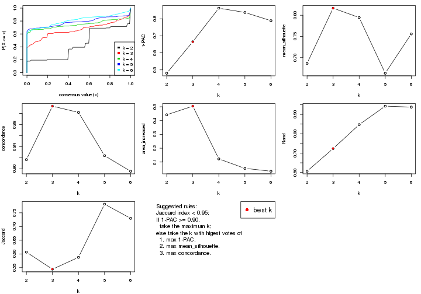
The numeric values for all these statistics can be obtained by get_stats().
get_stats(res)
#> k 1-PAC mean_silhouette concordance area_increased Rand Jaccard
#> 2 2 0.480 0.686 0.817 0.4420 0.607 0.607
#> 3 3 0.666 0.817 0.913 0.5045 0.723 0.544
#> 4 4 0.863 0.795 0.902 0.1224 0.847 0.588
#> 5 5 0.837 0.663 0.824 0.0540 0.943 0.782
#> 6 6 0.789 0.756 0.796 0.0334 0.938 0.730
suggest_best_k() suggests the best \(k\) based on these statistics. The rules are as follows:
NA.suggest_best_k(res)
#> [1] 3
Following shows the table of the partitions (You need to click the show/hide
code output link to see it). The membership matrix (columns with name p*)
is inferred by
clue::cl_consensus()
function with the SE method. Basically the value in the membership matrix
represents the probability to belong to a certain group. The finall class
label for an item is determined with the group with highest probability it
belongs to.
In get_classes() function, the entropy is calculated from the membership
matrix and the silhouette score is calculated from the consensus matrix.
cbind(get_classes(res, k = 2), get_membership(res, k = 2))
#> class entropy silhouette p1 p2
#> GSM72644 2 0.000 0.581 0.000 1.000
#> GSM72647 2 0.000 0.581 0.000 1.000
#> GSM72657 2 0.971 0.764 0.400 0.600
#> GSM72658 2 0.971 0.764 0.400 0.600
#> GSM72659 2 0.971 0.764 0.400 0.600
#> GSM72660 2 0.971 0.764 0.400 0.600
#> GSM72683 2 0.000 0.581 0.000 1.000
#> GSM72684 2 0.000 0.581 0.000 1.000
#> GSM72686 2 0.971 0.764 0.400 0.600
#> GSM72687 2 0.971 0.764 0.400 0.600
#> GSM72688 2 0.971 0.764 0.400 0.600
#> GSM72689 2 0.971 0.764 0.400 0.600
#> GSM72690 2 0.971 0.764 0.400 0.600
#> GSM72691 2 0.971 0.764 0.400 0.600
#> GSM72692 2 0.000 0.581 0.000 1.000
#> GSM72693 2 0.000 0.581 0.000 1.000
#> GSM72645 1 0.224 0.614 0.964 0.036
#> GSM72646 1 0.224 0.614 0.964 0.036
#> GSM72678 1 0.224 0.614 0.964 0.036
#> GSM72679 1 0.000 0.655 1.000 0.000
#> GSM72699 1 0.224 0.614 0.964 0.036
#> GSM72700 1 0.224 0.614 0.964 0.036
#> GSM72654 1 0.000 0.655 1.000 0.000
#> GSM72655 1 0.000 0.655 1.000 0.000
#> GSM72661 1 0.971 0.718 0.600 0.400
#> GSM72662 1 0.971 0.718 0.600 0.400
#> GSM72663 1 0.971 0.718 0.600 0.400
#> GSM72665 1 0.000 0.655 1.000 0.000
#> GSM72666 1 0.000 0.655 1.000 0.000
#> GSM72640 1 0.971 0.718 0.600 0.400
#> GSM72641 1 0.000 0.655 1.000 0.000
#> GSM72642 1 0.000 0.655 1.000 0.000
#> GSM72643 1 0.969 0.717 0.604 0.396
#> GSM72651 1 0.971 0.718 0.600 0.400
#> GSM72652 1 0.971 0.718 0.600 0.400
#> GSM72653 1 0.971 0.718 0.600 0.400
#> GSM72656 1 0.971 0.718 0.600 0.400
#> GSM72667 1 0.000 0.655 1.000 0.000
#> GSM72668 1 0.000 0.655 1.000 0.000
#> GSM72669 1 0.000 0.655 1.000 0.000
#> GSM72670 1 0.000 0.655 1.000 0.000
#> GSM72671 1 0.000 0.655 1.000 0.000
#> GSM72672 1 0.971 0.718 0.600 0.400
#> GSM72696 1 0.971 0.718 0.600 0.400
#> GSM72697 1 0.971 0.718 0.600 0.400
#> GSM72674 1 0.971 0.718 0.600 0.400
#> GSM72675 1 0.971 0.718 0.600 0.400
#> GSM72676 1 0.971 0.718 0.600 0.400
#> GSM72677 1 0.971 0.718 0.600 0.400
#> GSM72680 1 0.971 0.718 0.600 0.400
#> GSM72682 1 0.971 0.718 0.600 0.400
#> GSM72685 1 0.000 0.655 1.000 0.000
#> GSM72694 1 0.971 0.718 0.600 0.400
#> GSM72695 1 0.971 0.718 0.600 0.400
#> GSM72698 1 0.971 0.718 0.600 0.400
#> GSM72648 1 0.722 0.683 0.800 0.200
#> GSM72649 1 0.000 0.655 1.000 0.000
#> GSM72650 1 0.000 0.655 1.000 0.000
#> GSM72664 1 0.000 0.655 1.000 0.000
#> GSM72673 1 0.971 0.718 0.600 0.400
#> GSM72681 1 0.971 0.718 0.600 0.400
cbind(get_classes(res, k = 3), get_membership(res, k = 3))
#> class entropy silhouette p1 p2 p3
#> GSM72644 2 0.0000 1.000 0.000 1.0 0.000
#> GSM72647 2 0.0000 1.000 0.000 1.0 0.000
#> GSM72657 2 0.0000 1.000 0.000 1.0 0.000
#> GSM72658 2 0.0000 1.000 0.000 1.0 0.000
#> GSM72659 2 0.0000 1.000 0.000 1.0 0.000
#> GSM72660 2 0.0000 1.000 0.000 1.0 0.000
#> GSM72683 2 0.0000 1.000 0.000 1.0 0.000
#> GSM72684 2 0.0000 1.000 0.000 1.0 0.000
#> GSM72686 2 0.0000 1.000 0.000 1.0 0.000
#> GSM72687 2 0.0000 1.000 0.000 1.0 0.000
#> GSM72688 2 0.0000 1.000 0.000 1.0 0.000
#> GSM72689 2 0.0000 1.000 0.000 1.0 0.000
#> GSM72690 2 0.0000 1.000 0.000 1.0 0.000
#> GSM72691 2 0.0000 1.000 0.000 1.0 0.000
#> GSM72692 2 0.0000 1.000 0.000 1.0 0.000
#> GSM72693 2 0.0000 1.000 0.000 1.0 0.000
#> GSM72645 3 0.4555 0.761 0.000 0.2 0.800
#> GSM72646 3 0.4555 0.761 0.000 0.2 0.800
#> GSM72678 3 0.4555 0.761 0.000 0.2 0.800
#> GSM72679 3 0.4555 0.761 0.000 0.2 0.800
#> GSM72699 3 0.4555 0.761 0.000 0.2 0.800
#> GSM72700 3 0.4555 0.761 0.000 0.2 0.800
#> GSM72654 3 0.1163 0.865 0.028 0.0 0.972
#> GSM72655 3 0.1163 0.865 0.028 0.0 0.972
#> GSM72661 1 0.6280 0.221 0.540 0.0 0.460
#> GSM72662 1 0.6280 0.221 0.540 0.0 0.460
#> GSM72663 1 0.6280 0.221 0.540 0.0 0.460
#> GSM72665 3 0.3116 0.831 0.108 0.0 0.892
#> GSM72666 3 0.1860 0.859 0.052 0.0 0.948
#> GSM72640 1 0.1031 0.829 0.976 0.0 0.024
#> GSM72641 3 0.3752 0.804 0.144 0.0 0.856
#> GSM72642 3 0.4452 0.754 0.192 0.0 0.808
#> GSM72643 3 0.2165 0.847 0.064 0.0 0.936
#> GSM72651 1 0.6280 0.221 0.540 0.0 0.460
#> GSM72652 1 0.6295 0.187 0.528 0.0 0.472
#> GSM72653 1 0.0000 0.837 1.000 0.0 0.000
#> GSM72656 1 0.0000 0.837 1.000 0.0 0.000
#> GSM72667 3 0.2165 0.847 0.064 0.0 0.936
#> GSM72668 3 0.3619 0.812 0.136 0.0 0.864
#> GSM72669 3 0.0000 0.862 0.000 0.0 1.000
#> GSM72670 3 0.0237 0.863 0.004 0.0 0.996
#> GSM72671 3 0.1163 0.865 0.028 0.0 0.972
#> GSM72672 1 0.0000 0.837 1.000 0.0 0.000
#> GSM72696 1 0.0000 0.837 1.000 0.0 0.000
#> GSM72697 1 0.0000 0.837 1.000 0.0 0.000
#> GSM72674 1 0.0000 0.837 1.000 0.0 0.000
#> GSM72675 1 0.0000 0.837 1.000 0.0 0.000
#> GSM72676 1 0.2537 0.802 0.920 0.0 0.080
#> GSM72677 1 0.0000 0.837 1.000 0.0 0.000
#> GSM72680 1 0.0592 0.832 0.988 0.0 0.012
#> GSM72682 1 0.3551 0.766 0.868 0.0 0.132
#> GSM72685 3 0.3752 0.804 0.144 0.0 0.856
#> GSM72694 1 0.3551 0.766 0.868 0.0 0.132
#> GSM72695 1 0.2537 0.802 0.920 0.0 0.080
#> GSM72698 1 0.0000 0.837 1.000 0.0 0.000
#> GSM72648 3 0.1753 0.852 0.048 0.0 0.952
#> GSM72649 3 0.0000 0.862 0.000 0.0 1.000
#> GSM72650 3 0.0000 0.862 0.000 0.0 1.000
#> GSM72664 3 0.3752 0.804 0.144 0.0 0.856
#> GSM72673 1 0.3551 0.766 0.868 0.0 0.132
#> GSM72681 1 0.0000 0.837 1.000 0.0 0.000
cbind(get_classes(res, k = 4), get_membership(res, k = 4))
#> class entropy silhouette p1 p2 p3 p4
#> GSM72644 2 0.0000 1.000 0.000 1 0.000 0.000
#> GSM72647 2 0.0000 1.000 0.000 1 0.000 0.000
#> GSM72657 2 0.0000 1.000 0.000 1 0.000 0.000
#> GSM72658 2 0.0000 1.000 0.000 1 0.000 0.000
#> GSM72659 2 0.0000 1.000 0.000 1 0.000 0.000
#> GSM72660 2 0.0000 1.000 0.000 1 0.000 0.000
#> GSM72683 2 0.0000 1.000 0.000 1 0.000 0.000
#> GSM72684 2 0.0000 1.000 0.000 1 0.000 0.000
#> GSM72686 2 0.0000 1.000 0.000 1 0.000 0.000
#> GSM72687 2 0.0000 1.000 0.000 1 0.000 0.000
#> GSM72688 2 0.0000 1.000 0.000 1 0.000 0.000
#> GSM72689 2 0.0000 1.000 0.000 1 0.000 0.000
#> GSM72690 2 0.0000 1.000 0.000 1 0.000 0.000
#> GSM72691 2 0.0000 1.000 0.000 1 0.000 0.000
#> GSM72692 2 0.0000 1.000 0.000 1 0.000 0.000
#> GSM72693 2 0.0000 1.000 0.000 1 0.000 0.000
#> GSM72645 3 0.0188 0.711 0.004 0 0.996 0.000
#> GSM72646 3 0.0188 0.711 0.004 0 0.996 0.000
#> GSM72678 3 0.4072 0.635 0.252 0 0.748 0.000
#> GSM72679 3 0.4250 0.620 0.276 0 0.724 0.000
#> GSM72699 3 0.0469 0.713 0.012 0 0.988 0.000
#> GSM72700 3 0.0336 0.713 0.008 0 0.992 0.000
#> GSM72654 1 0.0000 0.742 1.000 0 0.000 0.000
#> GSM72655 1 0.0000 0.742 1.000 0 0.000 0.000
#> GSM72661 1 0.5052 0.567 0.720 0 0.244 0.036
#> GSM72662 1 0.5052 0.567 0.720 0 0.244 0.036
#> GSM72663 1 0.6860 0.398 0.592 0 0.244 0.164
#> GSM72665 1 0.0000 0.742 1.000 0 0.000 0.000
#> GSM72666 1 0.0000 0.742 1.000 0 0.000 0.000
#> GSM72640 4 0.0000 0.992 0.000 0 0.000 1.000
#> GSM72641 1 0.0336 0.740 0.992 0 0.008 0.000
#> GSM72642 1 0.1211 0.725 0.960 0 0.040 0.000
#> GSM72643 1 0.4643 0.277 0.656 0 0.344 0.000
#> GSM72651 1 0.5052 0.567 0.720 0 0.244 0.036
#> GSM72652 1 0.5052 0.567 0.720 0 0.244 0.036
#> GSM72653 4 0.0000 0.992 0.000 0 0.000 1.000
#> GSM72656 4 0.0000 0.992 0.000 0 0.000 1.000
#> GSM72667 1 0.4304 0.396 0.716 0 0.284 0.000
#> GSM72668 1 0.0000 0.742 1.000 0 0.000 0.000
#> GSM72669 1 0.4992 -0.273 0.524 0 0.476 0.000
#> GSM72670 1 0.4382 0.371 0.704 0 0.296 0.000
#> GSM72671 1 0.0000 0.742 1.000 0 0.000 0.000
#> GSM72672 4 0.0188 0.989 0.000 0 0.004 0.996
#> GSM72696 4 0.0000 0.992 0.000 0 0.000 1.000
#> GSM72697 4 0.0000 0.992 0.000 0 0.000 1.000
#> GSM72674 4 0.0000 0.992 0.000 0 0.000 1.000
#> GSM72675 4 0.0000 0.992 0.000 0 0.000 1.000
#> GSM72676 4 0.0000 0.992 0.000 0 0.000 1.000
#> GSM72677 4 0.0000 0.992 0.000 0 0.000 1.000
#> GSM72680 4 0.2831 0.861 0.004 0 0.120 0.876
#> GSM72682 4 0.0000 0.992 0.000 0 0.000 1.000
#> GSM72685 1 0.1211 0.729 0.960 0 0.040 0.000
#> GSM72694 4 0.0000 0.992 0.000 0 0.000 1.000
#> GSM72695 4 0.0000 0.992 0.000 0 0.000 1.000
#> GSM72698 4 0.0000 0.992 0.000 0 0.000 1.000
#> GSM72648 1 0.4643 0.277 0.656 0 0.344 0.000
#> GSM72649 3 0.4994 0.270 0.480 0 0.520 0.000
#> GSM72650 3 0.4994 0.270 0.480 0 0.520 0.000
#> GSM72664 1 0.0336 0.740 0.992 0 0.008 0.000
#> GSM72673 4 0.0000 0.992 0.000 0 0.000 1.000
#> GSM72681 4 0.0000 0.992 0.000 0 0.000 1.000
cbind(get_classes(res, k = 5), get_membership(res, k = 5))
#> class entropy silhouette p1 p2 p3 p4 p5
#> GSM72644 2 0.0162 0.9977 0.000 0.996 0.000 0.000 0.004
#> GSM72647 2 0.0162 0.9977 0.000 0.996 0.000 0.000 0.004
#> GSM72657 2 0.0000 0.9986 0.000 1.000 0.000 0.000 0.000
#> GSM72658 2 0.0000 0.9986 0.000 1.000 0.000 0.000 0.000
#> GSM72659 2 0.0000 0.9986 0.000 1.000 0.000 0.000 0.000
#> GSM72660 2 0.0000 0.9986 0.000 1.000 0.000 0.000 0.000
#> GSM72683 2 0.0162 0.9977 0.000 0.996 0.000 0.000 0.004
#> GSM72684 2 0.0162 0.9977 0.000 0.996 0.000 0.000 0.004
#> GSM72686 2 0.0000 0.9986 0.000 1.000 0.000 0.000 0.000
#> GSM72687 2 0.0000 0.9986 0.000 1.000 0.000 0.000 0.000
#> GSM72688 2 0.0000 0.9986 0.000 1.000 0.000 0.000 0.000
#> GSM72689 2 0.0000 0.9986 0.000 1.000 0.000 0.000 0.000
#> GSM72690 2 0.0000 0.9986 0.000 1.000 0.000 0.000 0.000
#> GSM72691 2 0.0000 0.9986 0.000 1.000 0.000 0.000 0.000
#> GSM72692 2 0.0162 0.9977 0.000 0.996 0.000 0.000 0.004
#> GSM72693 2 0.0162 0.9977 0.000 0.996 0.000 0.000 0.004
#> GSM72645 3 0.0000 0.7197 0.000 0.000 1.000 0.000 0.000
#> GSM72646 3 0.0000 0.7197 0.000 0.000 1.000 0.000 0.000
#> GSM72678 3 0.5255 0.5326 0.304 0.000 0.624 0.000 0.072
#> GSM72679 3 0.6058 0.4572 0.336 0.000 0.528 0.000 0.136
#> GSM72699 3 0.0000 0.7197 0.000 0.000 1.000 0.000 0.000
#> GSM72700 3 0.0000 0.7197 0.000 0.000 1.000 0.000 0.000
#> GSM72654 1 0.0794 0.6024 0.972 0.000 0.000 0.000 0.028
#> GSM72655 1 0.0794 0.6024 0.972 0.000 0.000 0.000 0.028
#> GSM72661 5 0.4060 0.4113 0.360 0.000 0.000 0.000 0.640
#> GSM72662 5 0.4060 0.4113 0.360 0.000 0.000 0.000 0.640
#> GSM72663 5 0.4074 0.4064 0.364 0.000 0.000 0.000 0.636
#> GSM72665 1 0.0404 0.6041 0.988 0.000 0.000 0.000 0.012
#> GSM72666 1 0.0000 0.6064 1.000 0.000 0.000 0.000 0.000
#> GSM72640 4 0.0000 0.9117 0.000 0.000 0.000 1.000 0.000
#> GSM72641 1 0.3796 0.3205 0.700 0.000 0.000 0.000 0.300
#> GSM72642 1 0.3579 0.4086 0.756 0.000 0.004 0.000 0.240
#> GSM72643 5 0.6744 -0.2756 0.260 0.000 0.356 0.000 0.384
#> GSM72651 5 0.4060 0.4113 0.360 0.000 0.000 0.000 0.640
#> GSM72652 5 0.4060 0.4113 0.360 0.000 0.000 0.000 0.640
#> GSM72653 4 0.0404 0.9105 0.000 0.000 0.000 0.988 0.012
#> GSM72656 4 0.0404 0.9105 0.000 0.000 0.000 0.988 0.012
#> GSM72667 1 0.6193 0.0734 0.548 0.000 0.260 0.000 0.192
#> GSM72668 1 0.1197 0.5885 0.952 0.000 0.000 0.000 0.048
#> GSM72669 1 0.4060 0.0145 0.640 0.000 0.360 0.000 0.000
#> GSM72670 1 0.6612 -0.2012 0.460 0.000 0.272 0.000 0.268
#> GSM72671 1 0.0510 0.6056 0.984 0.000 0.000 0.000 0.016
#> GSM72672 4 0.2377 0.8240 0.000 0.000 0.000 0.872 0.128
#> GSM72696 4 0.0404 0.9105 0.000 0.000 0.000 0.988 0.012
#> GSM72697 4 0.0000 0.9117 0.000 0.000 0.000 1.000 0.000
#> GSM72674 4 0.0000 0.9117 0.000 0.000 0.000 1.000 0.000
#> GSM72675 4 0.0000 0.9117 0.000 0.000 0.000 1.000 0.000
#> GSM72676 4 0.0000 0.9117 0.000 0.000 0.000 1.000 0.000
#> GSM72677 4 0.0404 0.9105 0.000 0.000 0.000 0.988 0.012
#> GSM72680 4 0.4088 0.5047 0.000 0.000 0.000 0.632 0.368
#> GSM72682 4 0.3395 0.7595 0.000 0.000 0.000 0.764 0.236
#> GSM72685 1 0.3816 0.3173 0.696 0.000 0.000 0.000 0.304
#> GSM72694 4 0.4015 0.6465 0.000 0.000 0.000 0.652 0.348
#> GSM72695 4 0.0000 0.9117 0.000 0.000 0.000 1.000 0.000
#> GSM72698 4 0.0000 0.9117 0.000 0.000 0.000 1.000 0.000
#> GSM72648 5 0.6824 -0.2545 0.328 0.000 0.328 0.000 0.344
#> GSM72649 3 0.6653 0.2087 0.320 0.000 0.436 0.000 0.244
#> GSM72650 5 0.6826 -0.2838 0.332 0.000 0.332 0.000 0.336
#> GSM72664 1 0.3876 0.3039 0.684 0.000 0.000 0.000 0.316
#> GSM72673 4 0.4015 0.6465 0.000 0.000 0.000 0.652 0.348
#> GSM72681 4 0.0404 0.9105 0.000 0.000 0.000 0.988 0.012
cbind(get_classes(res, k = 6), get_membership(res, k = 6))
#> class entropy silhouette p1 p2 p3 p4 p5 p6
#> GSM72644 6 0.2912 0.9606 0.000 0.216 0.000 0.000 0.000 0.784
#> GSM72647 6 0.3634 0.7850 0.000 0.356 0.000 0.000 0.000 0.644
#> GSM72657 2 0.0000 0.9917 0.000 1.000 0.000 0.000 0.000 0.000
#> GSM72658 2 0.0000 0.9917 0.000 1.000 0.000 0.000 0.000 0.000
#> GSM72659 2 0.0000 0.9917 0.000 1.000 0.000 0.000 0.000 0.000
#> GSM72660 2 0.0146 0.9899 0.000 0.996 0.000 0.000 0.000 0.004
#> GSM72683 6 0.2912 0.9606 0.000 0.216 0.000 0.000 0.000 0.784
#> GSM72684 6 0.2941 0.9619 0.000 0.220 0.000 0.000 0.000 0.780
#> GSM72686 2 0.0547 0.9739 0.000 0.980 0.000 0.000 0.000 0.020
#> GSM72687 2 0.0363 0.9876 0.000 0.988 0.000 0.000 0.000 0.012
#> GSM72688 2 0.0000 0.9917 0.000 1.000 0.000 0.000 0.000 0.000
#> GSM72689 2 0.0363 0.9876 0.000 0.988 0.000 0.000 0.000 0.012
#> GSM72690 2 0.0363 0.9876 0.000 0.988 0.000 0.000 0.000 0.012
#> GSM72691 2 0.0000 0.9917 0.000 1.000 0.000 0.000 0.000 0.000
#> GSM72692 6 0.2941 0.9619 0.000 0.220 0.000 0.000 0.000 0.780
#> GSM72693 6 0.2941 0.9619 0.000 0.220 0.000 0.000 0.000 0.780
#> GSM72645 3 0.2448 0.7920 0.064 0.000 0.884 0.000 0.052 0.000
#> GSM72646 3 0.2448 0.7920 0.064 0.000 0.884 0.000 0.052 0.000
#> GSM72678 3 0.3187 0.7077 0.012 0.000 0.796 0.000 0.188 0.004
#> GSM72679 3 0.5436 0.4993 0.180 0.000 0.572 0.000 0.248 0.000
#> GSM72699 3 0.2448 0.7920 0.064 0.000 0.884 0.000 0.052 0.000
#> GSM72700 3 0.2448 0.7920 0.064 0.000 0.884 0.000 0.052 0.000
#> GSM72654 5 0.0713 0.6562 0.000 0.000 0.028 0.000 0.972 0.000
#> GSM72655 5 0.0713 0.6562 0.000 0.000 0.028 0.000 0.972 0.000
#> GSM72661 1 0.3101 0.9960 0.756 0.000 0.000 0.000 0.244 0.000
#> GSM72662 1 0.3101 0.9960 0.756 0.000 0.000 0.000 0.244 0.000
#> GSM72663 1 0.3298 0.9839 0.756 0.000 0.000 0.008 0.236 0.000
#> GSM72665 5 0.0865 0.6494 0.036 0.000 0.000 0.000 0.964 0.000
#> GSM72666 5 0.0713 0.6518 0.028 0.000 0.000 0.000 0.972 0.000
#> GSM72640 4 0.0881 0.8757 0.008 0.000 0.012 0.972 0.008 0.000
#> GSM72641 5 0.2003 0.6109 0.116 0.000 0.000 0.000 0.884 0.000
#> GSM72642 5 0.2003 0.6109 0.116 0.000 0.000 0.000 0.884 0.000
#> GSM72643 5 0.6397 0.0436 0.344 0.000 0.248 0.000 0.392 0.016
#> GSM72651 1 0.3101 0.9960 0.756 0.000 0.000 0.000 0.244 0.000
#> GSM72652 1 0.3101 0.9960 0.756 0.000 0.000 0.000 0.244 0.000
#> GSM72653 4 0.1480 0.8667 0.020 0.000 0.040 0.940 0.000 0.000
#> GSM72656 4 0.2039 0.8669 0.020 0.000 0.076 0.904 0.000 0.000
#> GSM72667 5 0.5614 0.3430 0.256 0.000 0.204 0.000 0.540 0.000
#> GSM72668 5 0.1663 0.6287 0.088 0.000 0.000 0.000 0.912 0.000
#> GSM72669 5 0.3819 0.2938 0.012 0.000 0.316 0.000 0.672 0.000
#> GSM72670 5 0.5246 0.3506 0.180 0.000 0.212 0.000 0.608 0.000
#> GSM72671 5 0.0713 0.6562 0.000 0.000 0.028 0.000 0.972 0.000
#> GSM72672 4 0.0725 0.8743 0.012 0.000 0.012 0.976 0.000 0.000
#> GSM72696 4 0.1802 0.8708 0.012 0.000 0.072 0.916 0.000 0.000
#> GSM72697 4 0.0622 0.8737 0.008 0.000 0.012 0.980 0.000 0.000
#> GSM72674 4 0.0653 0.8740 0.004 0.000 0.012 0.980 0.000 0.004
#> GSM72675 4 0.0725 0.8738 0.012 0.000 0.012 0.976 0.000 0.000
#> GSM72676 4 0.3305 0.8278 0.104 0.000 0.040 0.836 0.000 0.020
#> GSM72677 4 0.1858 0.8701 0.012 0.000 0.076 0.912 0.000 0.000
#> GSM72680 4 0.3764 0.7834 0.140 0.000 0.056 0.792 0.012 0.000
#> GSM72682 4 0.6502 0.6178 0.180 0.000 0.056 0.548 0.008 0.208
#> GSM72685 5 0.2003 0.6109 0.116 0.000 0.000 0.000 0.884 0.000
#> GSM72694 4 0.6509 0.5833 0.216 0.000 0.056 0.512 0.000 0.216
#> GSM72695 4 0.3305 0.8278 0.104 0.000 0.040 0.836 0.000 0.020
#> GSM72698 4 0.0508 0.8739 0.004 0.000 0.012 0.984 0.000 0.000
#> GSM72648 5 0.5882 0.2183 0.256 0.000 0.232 0.000 0.508 0.004
#> GSM72649 3 0.5988 0.0766 0.232 0.000 0.404 0.000 0.364 0.000
#> GSM72650 5 0.6035 -0.1871 0.248 0.000 0.372 0.000 0.380 0.000
#> GSM72664 5 0.2003 0.6109 0.116 0.000 0.000 0.000 0.884 0.000
#> GSM72673 4 0.6509 0.5833 0.216 0.000 0.056 0.512 0.000 0.216
#> GSM72681 4 0.2112 0.8667 0.016 0.000 0.088 0.896 0.000 0.000
Heatmaps for the consensus matrix. It visualizes the probability of two samples to be in a same group.
consensus_heatmap(res, k = 2)
consensus_heatmap(res, k = 3)
consensus_heatmap(res, k = 4)
consensus_heatmap(res, k = 5)
consensus_heatmap(res, k = 6)
Heatmaps for the membership of samples in all partitions to see how consistent they are:
membership_heatmap(res, k = 2)
membership_heatmap(res, k = 3)
membership_heatmap(res, k = 4)
membership_heatmap(res, k = 5)
membership_heatmap(res, k = 6)
As soon as we have had the classes for columns, we can look for signatures which are significantly different between classes which can be candidate marks for certain classes. Following are the heatmaps for signatures.
Signature heatmaps where rows are scaled:
get_signatures(res, k = 2)
get_signatures(res, k = 3)
get_signatures(res, k = 4)
get_signatures(res, k = 5)
get_signatures(res, k = 6)
Signature heatmaps where rows are not scaled:
get_signatures(res, k = 2, scale_rows = FALSE)
get_signatures(res, k = 3, scale_rows = FALSE)
get_signatures(res, k = 4, scale_rows = FALSE)
get_signatures(res, k = 5, scale_rows = FALSE)
get_signatures(res, k = 6, scale_rows = FALSE)
Compare the overlap of signatures from different k:
compare_signatures(res)
get_signature() returns a data frame invisibly. TO get the list of signatures, the function
call should be assigned to a variable explicitly. In following code, if plot argument is set
to FALSE, no heatmap is plotted while only the differential analysis is performed.
# code only for demonstration
tb = get_signature(res, k = ..., plot = FALSE)
An example of the output of tb is:
#> which_row fdr mean_1 mean_2 scaled_mean_1 scaled_mean_2 km
#> 1 38 0.042760348 8.373488 9.131774 -0.5533452 0.5164555 1
#> 2 40 0.018707592 7.106213 8.469186 -0.6173731 0.5762149 1
#> 3 55 0.019134737 10.221463 11.207825 -0.6159697 0.5749050 1
#> 4 59 0.006059896 5.921854 7.869574 -0.6899429 0.6439467 1
#> 5 60 0.018055526 8.928898 10.211722 -0.6204761 0.5791110 1
#> 6 98 0.009384629 15.714769 14.887706 0.6635654 -0.6193277 2
...
The columns in tb are:
which_row: row indices corresponding to the input matrix.fdr: FDR for the differential test. mean_x: The mean value in group x.scaled_mean_x: The mean value in group x after rows are scaled.km: Row groups if k-means clustering is applied to rows.UMAP plot which shows how samples are separated.
dimension_reduction(res, k = 2, method = "UMAP")
dimension_reduction(res, k = 3, method = "UMAP")
dimension_reduction(res, k = 4, method = "UMAP")
dimension_reduction(res, k = 5, method = "UMAP")
dimension_reduction(res, k = 6, method = "UMAP")
Following heatmap shows how subgroups are split when increasing k:
collect_classes(res)
Test correlation between subgroups and known annotations. If the known annotation is numeric, one-way ANOVA test is applied, and if the known annotation is discrete, chi-squared contingency table test is applied.
test_to_known_factors(res)
#> n cell.type(p) tissue(p) k
#> ATC:mclust 61 1.79e-12 4.63e-04 2
#> ATC:mclust 56 1.84e-12 6.12e-06 3
#> ATC:mclust 53 3.18e-20 1.47e-06 4
#> ATC:mclust 44 7.71e-19 7.65e-06 5
#> ATC:mclust 53 4.16e-17 9.29e-10 6
If matrix rows can be associated to genes, consider to use GO_Enrichment(res,
...) to perform function enrichment for the signature genes.
The object with results only for a single top-value method and a single partition method can be extracted as:
res = res_list["ATC", "NMF"]
# you can also extract it by
# res = res_list["ATC:NMF"]
A summary of res and all the functions that can be applied to it:
res
#> A 'ConsensusPartition' object with k = 2, 3, 4, 5, 6.
#> On a matrix with 18496 rows and 61 columns.
#> Top rows (1000, 2000, 3000, 4000, 5000) are extracted by 'ATC' method.
#> Subgroups are detected by 'NMF' method.
#> Performed in total 1250 partitions by row resampling.
#> Best k for subgroups seems to be 3.
#>
#> Following methods can be applied to this 'ConsensusPartition' object:
#> [1] "cola_report" "collect_classes" "collect_plots"
#> [4] "collect_stats" "colnames" "compare_signatures"
#> [7] "consensus_heatmap" "dimension_reduction" "functional_enrichment"
#> [10] "get_anno_col" "get_anno" "get_classes"
#> [13] "get_consensus" "get_matrix" "get_membership"
#> [16] "get_param" "get_signatures" "get_stats"
#> [19] "is_best_k" "is_stable_k" "membership_heatmap"
#> [22] "ncol" "nrow" "plot_ecdf"
#> [25] "rownames" "select_partition_number" "show"
#> [28] "suggest_best_k" "test_to_known_factors"
collect_plots() function collects all the plots made from res for all k (number of partitions)
into one single page to provide an easy and fast comparison between different k.
collect_plots(res)
The plots are:
k and the heatmap of
predicted classes for each k.k.k.k.All the plots in panels can be made by individual functions and they are plotted later in this section.
select_partition_number() produces several plots showing different
statistics for choosing “optimized” k. There are following statistics:
k;k, the area increased is defined as \(A_k - A_{k-1}\).The detailed explanations of these statistics can be found in the cola vignette.
Generally speaking, lower PAC score, higher mean silhouette score or higher
concordance corresponds to better partition. Rand index and Jaccard index
measure how similar the current partition is compared to partition with k-1.
If they are too similar, we won't accept k is better than k-1.
select_partition_number(res)
The numeric values for all these statistics can be obtained by get_stats().
get_stats(res)
#> k 1-PAC mean_silhouette concordance area_increased Rand Jaccard
#> 2 2 0.834 0.889 0.956 0.4563 0.531 0.531
#> 3 3 0.707 0.815 0.908 0.4759 0.715 0.500
#> 4 4 0.758 0.754 0.888 0.0999 0.814 0.512
#> 5 5 0.792 0.773 0.878 0.0444 0.974 0.899
#> 6 6 0.820 0.668 0.836 0.0442 0.920 0.675
suggest_best_k() suggests the best \(k\) based on these statistics. The rules are as follows:
NA.suggest_best_k(res)
#> [1] 3
Following shows the table of the partitions (You need to click the show/hide
code output link to see it). The membership matrix (columns with name p*)
is inferred by
clue::cl_consensus()
function with the SE method. Basically the value in the membership matrix
represents the probability to belong to a certain group. The finall class
label for an item is determined with the group with highest probability it
belongs to.
In get_classes() function, the entropy is calculated from the membership
matrix and the silhouette score is calculated from the consensus matrix.
cbind(get_classes(res, k = 2), get_membership(res, k = 2))
#> class entropy silhouette p1 p2
#> GSM72644 2 0.000 0.911 0.000 1.000
#> GSM72647 2 0.000 0.911 0.000 1.000
#> GSM72657 2 0.000 0.911 0.000 1.000
#> GSM72658 2 0.000 0.911 0.000 1.000
#> GSM72659 2 0.000 0.911 0.000 1.000
#> GSM72660 2 0.000 0.911 0.000 1.000
#> GSM72683 2 0.000 0.911 0.000 1.000
#> GSM72684 2 0.000 0.911 0.000 1.000
#> GSM72686 2 0.000 0.911 0.000 1.000
#> GSM72687 2 0.000 0.911 0.000 1.000
#> GSM72688 2 0.000 0.911 0.000 1.000
#> GSM72689 2 0.000 0.911 0.000 1.000
#> GSM72690 2 0.000 0.911 0.000 1.000
#> GSM72691 2 0.000 0.911 0.000 1.000
#> GSM72692 2 0.000 0.911 0.000 1.000
#> GSM72693 2 0.000 0.911 0.000 1.000
#> GSM72645 1 0.000 0.974 1.000 0.000
#> GSM72646 2 0.689 0.751 0.184 0.816
#> GSM72678 2 0.000 0.911 0.000 1.000
#> GSM72679 1 0.518 0.846 0.884 0.116
#> GSM72699 1 0.000 0.974 1.000 0.000
#> GSM72700 1 0.985 0.144 0.572 0.428
#> GSM72654 1 0.000 0.974 1.000 0.000
#> GSM72655 1 0.000 0.974 1.000 0.000
#> GSM72661 1 0.000 0.974 1.000 0.000
#> GSM72662 1 0.000 0.974 1.000 0.000
#> GSM72663 1 0.000 0.974 1.000 0.000
#> GSM72665 1 0.000 0.974 1.000 0.000
#> GSM72666 1 0.000 0.974 1.000 0.000
#> GSM72640 1 0.000 0.974 1.000 0.000
#> GSM72641 1 0.000 0.974 1.000 0.000
#> GSM72642 1 0.000 0.974 1.000 0.000
#> GSM72643 2 0.999 0.143 0.484 0.516
#> GSM72651 1 0.000 0.974 1.000 0.000
#> GSM72652 1 0.000 0.974 1.000 0.000
#> GSM72653 1 0.000 0.974 1.000 0.000
#> GSM72656 1 0.000 0.974 1.000 0.000
#> GSM72667 1 0.000 0.974 1.000 0.000
#> GSM72668 1 0.000 0.974 1.000 0.000
#> GSM72669 1 0.000 0.974 1.000 0.000
#> GSM72670 1 0.000 0.974 1.000 0.000
#> GSM72671 1 0.000 0.974 1.000 0.000
#> GSM72672 1 0.000 0.974 1.000 0.000
#> GSM72696 1 0.000 0.974 1.000 0.000
#> GSM72697 1 0.000 0.974 1.000 0.000
#> GSM72674 1 0.000 0.974 1.000 0.000
#> GSM72675 1 0.000 0.974 1.000 0.000
#> GSM72676 1 0.000 0.974 1.000 0.000
#> GSM72677 1 0.000 0.974 1.000 0.000
#> GSM72680 1 0.000 0.974 1.000 0.000
#> GSM72682 1 0.000 0.974 1.000 0.000
#> GSM72685 1 0.000 0.974 1.000 0.000
#> GSM72694 2 0.990 0.285 0.440 0.560
#> GSM72695 1 0.000 0.974 1.000 0.000
#> GSM72698 1 0.000 0.974 1.000 0.000
#> GSM72648 1 0.373 0.899 0.928 0.072
#> GSM72649 2 0.781 0.692 0.232 0.768
#> GSM72650 1 0.850 0.572 0.724 0.276
#> GSM72664 1 0.000 0.974 1.000 0.000
#> GSM72673 2 0.983 0.329 0.424 0.576
#> GSM72681 1 0.000 0.974 1.000 0.000
cbind(get_classes(res, k = 3), get_membership(res, k = 3))
#> class entropy silhouette p1 p2 p3
#> GSM72644 2 0.0237 0.8898 0.004 0.996 0.000
#> GSM72647 2 0.0000 0.8923 0.000 1.000 0.000
#> GSM72657 2 0.0000 0.8923 0.000 1.000 0.000
#> GSM72658 2 0.0000 0.8923 0.000 1.000 0.000
#> GSM72659 2 0.0000 0.8923 0.000 1.000 0.000
#> GSM72660 2 0.0000 0.8923 0.000 1.000 0.000
#> GSM72683 2 0.0000 0.8923 0.000 1.000 0.000
#> GSM72684 2 0.0237 0.8898 0.004 0.996 0.000
#> GSM72686 2 0.0000 0.8923 0.000 1.000 0.000
#> GSM72687 2 0.0000 0.8923 0.000 1.000 0.000
#> GSM72688 2 0.0000 0.8923 0.000 1.000 0.000
#> GSM72689 2 0.0000 0.8923 0.000 1.000 0.000
#> GSM72690 2 0.0000 0.8923 0.000 1.000 0.000
#> GSM72691 2 0.0000 0.8923 0.000 1.000 0.000
#> GSM72692 2 0.0000 0.8923 0.000 1.000 0.000
#> GSM72693 2 0.0000 0.8923 0.000 1.000 0.000
#> GSM72645 3 0.2625 0.8663 0.084 0.000 0.916
#> GSM72646 2 0.7999 0.6287 0.196 0.656 0.148
#> GSM72678 2 0.4682 0.7467 0.192 0.804 0.004
#> GSM72679 3 0.4269 0.8396 0.052 0.076 0.872
#> GSM72699 3 0.4399 0.7769 0.188 0.000 0.812
#> GSM72700 2 0.9083 0.4695 0.196 0.548 0.256
#> GSM72654 3 0.0237 0.9108 0.004 0.000 0.996
#> GSM72655 3 0.0237 0.9108 0.004 0.000 0.996
#> GSM72661 3 0.2165 0.8791 0.064 0.000 0.936
#> GSM72662 3 0.4062 0.7830 0.164 0.000 0.836
#> GSM72663 1 0.0000 0.8857 1.000 0.000 0.000
#> GSM72665 3 0.0237 0.9108 0.004 0.000 0.996
#> GSM72666 3 0.0237 0.9108 0.004 0.000 0.996
#> GSM72640 1 0.4504 0.7788 0.804 0.000 0.196
#> GSM72641 3 0.0237 0.9108 0.004 0.000 0.996
#> GSM72642 3 0.0237 0.9108 0.004 0.000 0.996
#> GSM72643 2 0.6291 0.2562 0.468 0.532 0.000
#> GSM72651 3 0.5138 0.6535 0.252 0.000 0.748
#> GSM72652 3 0.1964 0.8841 0.056 0.000 0.944
#> GSM72653 1 0.4504 0.7788 0.804 0.000 0.196
#> GSM72656 1 0.4504 0.7788 0.804 0.000 0.196
#> GSM72667 3 0.3752 0.8238 0.144 0.000 0.856
#> GSM72668 3 0.0237 0.9108 0.004 0.000 0.996
#> GSM72669 3 0.1765 0.8914 0.004 0.040 0.956
#> GSM72670 3 0.4235 0.7902 0.176 0.000 0.824
#> GSM72671 3 0.0237 0.9108 0.004 0.000 0.996
#> GSM72672 1 0.4504 0.7788 0.804 0.000 0.196
#> GSM72696 1 0.0747 0.8874 0.984 0.000 0.016
#> GSM72697 1 0.2165 0.8795 0.936 0.000 0.064
#> GSM72674 1 0.0000 0.8857 1.000 0.000 0.000
#> GSM72675 1 0.2165 0.8795 0.936 0.000 0.064
#> GSM72676 1 0.0000 0.8857 1.000 0.000 0.000
#> GSM72677 1 0.0892 0.8873 0.980 0.000 0.020
#> GSM72680 3 0.5178 0.6449 0.256 0.000 0.744
#> GSM72682 1 0.0000 0.8857 1.000 0.000 0.000
#> GSM72685 3 0.0237 0.9108 0.004 0.000 0.996
#> GSM72694 1 0.0237 0.8841 0.996 0.004 0.000
#> GSM72695 1 0.0000 0.8857 1.000 0.000 0.000
#> GSM72698 1 0.2165 0.8795 0.936 0.000 0.064
#> GSM72648 1 0.9912 -0.0313 0.400 0.300 0.300
#> GSM72649 2 0.6511 0.7163 0.180 0.748 0.072
#> GSM72650 2 0.9574 0.1151 0.196 0.412 0.392
#> GSM72664 3 0.0237 0.9108 0.004 0.000 0.996
#> GSM72673 1 0.0237 0.8841 0.996 0.004 0.000
#> GSM72681 1 0.2625 0.8687 0.916 0.000 0.084
cbind(get_classes(res, k = 4), get_membership(res, k = 4))
#> class entropy silhouette p1 p2 p3 p4
#> GSM72644 2 0.0000 0.99850 0.000 1.000 0.000 0.000
#> GSM72647 2 0.0000 0.99850 0.000 1.000 0.000 0.000
#> GSM72657 2 0.0000 0.99850 0.000 1.000 0.000 0.000
#> GSM72658 2 0.0000 0.99850 0.000 1.000 0.000 0.000
#> GSM72659 2 0.0000 0.99850 0.000 1.000 0.000 0.000
#> GSM72660 2 0.0000 0.99850 0.000 1.000 0.000 0.000
#> GSM72683 2 0.0000 0.99850 0.000 1.000 0.000 0.000
#> GSM72684 2 0.0000 0.99850 0.000 1.000 0.000 0.000
#> GSM72686 2 0.0000 0.99850 0.000 1.000 0.000 0.000
#> GSM72687 2 0.0188 0.99544 0.000 0.996 0.004 0.000
#> GSM72688 2 0.0336 0.99188 0.000 0.992 0.008 0.000
#> GSM72689 2 0.0336 0.99188 0.000 0.992 0.008 0.000
#> GSM72690 2 0.0000 0.99850 0.000 1.000 0.000 0.000
#> GSM72691 2 0.0000 0.99850 0.000 1.000 0.000 0.000
#> GSM72692 2 0.0000 0.99850 0.000 1.000 0.000 0.000
#> GSM72693 2 0.0000 0.99850 0.000 1.000 0.000 0.000
#> GSM72645 3 0.0859 0.71914 0.008 0.004 0.980 0.008
#> GSM72646 3 0.3577 0.71997 0.000 0.012 0.832 0.156
#> GSM72678 3 0.4914 0.61782 0.000 0.012 0.676 0.312
#> GSM72679 3 0.0657 0.71664 0.012 0.004 0.984 0.000
#> GSM72699 3 0.4606 0.66354 0.000 0.012 0.724 0.264
#> GSM72700 3 0.4516 0.67473 0.000 0.012 0.736 0.252
#> GSM72654 1 0.0000 0.84728 1.000 0.000 0.000 0.000
#> GSM72655 1 0.1211 0.82636 0.960 0.000 0.040 0.000
#> GSM72661 1 0.0469 0.84686 0.988 0.000 0.000 0.012
#> GSM72662 1 0.0707 0.84485 0.980 0.000 0.000 0.020
#> GSM72663 4 0.0376 0.80247 0.004 0.000 0.004 0.992
#> GSM72665 1 0.2149 0.79054 0.912 0.000 0.088 0.000
#> GSM72666 1 0.0707 0.83869 0.980 0.000 0.020 0.000
#> GSM72640 1 0.4804 0.38457 0.616 0.000 0.000 0.384
#> GSM72641 1 0.0000 0.84728 1.000 0.000 0.000 0.000
#> GSM72642 1 0.2760 0.75317 0.872 0.000 0.128 0.000
#> GSM72643 4 0.7005 -0.00164 0.000 0.172 0.256 0.572
#> GSM72651 1 0.1118 0.83658 0.964 0.000 0.000 0.036
#> GSM72652 1 0.0469 0.84686 0.988 0.000 0.000 0.012
#> GSM72653 1 0.4761 0.40895 0.628 0.000 0.000 0.372
#> GSM72656 1 0.4967 0.21576 0.548 0.000 0.000 0.452
#> GSM72667 3 0.7296 0.49020 0.320 0.000 0.508 0.172
#> GSM72668 1 0.0000 0.84728 1.000 0.000 0.000 0.000
#> GSM72669 1 0.5083 0.54823 0.716 0.036 0.248 0.000
#> GSM72670 3 0.6603 0.48574 0.316 0.000 0.580 0.104
#> GSM72671 1 0.0000 0.84728 1.000 0.000 0.000 0.000
#> GSM72672 1 0.4955 0.23874 0.556 0.000 0.000 0.444
#> GSM72696 4 0.0921 0.79745 0.028 0.000 0.000 0.972
#> GSM72697 4 0.3942 0.62746 0.236 0.000 0.000 0.764
#> GSM72674 4 0.0376 0.80247 0.004 0.000 0.004 0.992
#> GSM72675 4 0.3024 0.72351 0.148 0.000 0.000 0.852
#> GSM72676 4 0.0188 0.80152 0.000 0.000 0.004 0.996
#> GSM72677 4 0.0921 0.79745 0.028 0.000 0.000 0.972
#> GSM72680 1 0.0707 0.84485 0.980 0.000 0.000 0.020
#> GSM72682 4 0.0188 0.80152 0.000 0.000 0.004 0.996
#> GSM72685 1 0.0000 0.84728 1.000 0.000 0.000 0.000
#> GSM72694 4 0.0376 0.79939 0.000 0.004 0.004 0.992
#> GSM72695 4 0.0188 0.80152 0.000 0.000 0.004 0.996
#> GSM72698 4 0.3024 0.72311 0.148 0.000 0.000 0.852
#> GSM72648 4 0.8307 -0.44459 0.092 0.080 0.404 0.424
#> GSM72649 3 0.5431 0.67696 0.012 0.152 0.756 0.080
#> GSM72650 3 0.6904 0.69434 0.104 0.068 0.684 0.144
#> GSM72664 1 0.0188 0.84727 0.996 0.000 0.000 0.004
#> GSM72673 4 0.0376 0.79939 0.000 0.004 0.004 0.992
#> GSM72681 4 0.4500 0.46481 0.316 0.000 0.000 0.684
cbind(get_classes(res, k = 5), get_membership(res, k = 5))
#> class entropy silhouette p1 p2 p3 p4 p5
#> GSM72644 2 0.0000 0.998 0.000 1.000 0.000 0.000 0.000
#> GSM72647 2 0.0000 0.998 0.000 1.000 0.000 0.000 0.000
#> GSM72657 2 0.0000 0.998 0.000 1.000 0.000 0.000 0.000
#> GSM72658 2 0.0000 0.998 0.000 1.000 0.000 0.000 0.000
#> GSM72659 2 0.0703 0.976 0.000 0.976 0.000 0.000 0.024
#> GSM72660 2 0.0290 0.991 0.000 0.992 0.000 0.000 0.008
#> GSM72683 2 0.0000 0.998 0.000 1.000 0.000 0.000 0.000
#> GSM72684 2 0.0000 0.998 0.000 1.000 0.000 0.000 0.000
#> GSM72686 2 0.0000 0.998 0.000 1.000 0.000 0.000 0.000
#> GSM72687 2 0.0000 0.998 0.000 1.000 0.000 0.000 0.000
#> GSM72688 2 0.0000 0.998 0.000 1.000 0.000 0.000 0.000
#> GSM72689 2 0.0000 0.998 0.000 1.000 0.000 0.000 0.000
#> GSM72690 2 0.0000 0.998 0.000 1.000 0.000 0.000 0.000
#> GSM72691 2 0.0000 0.998 0.000 1.000 0.000 0.000 0.000
#> GSM72692 2 0.0000 0.998 0.000 1.000 0.000 0.000 0.000
#> GSM72693 2 0.0000 0.998 0.000 1.000 0.000 0.000 0.000
#> GSM72645 3 0.0162 0.998 0.004 0.000 0.996 0.000 0.000
#> GSM72646 3 0.0162 0.998 0.004 0.000 0.996 0.000 0.000
#> GSM72678 3 0.0162 0.993 0.000 0.004 0.996 0.000 0.000
#> GSM72679 3 0.0324 0.994 0.004 0.000 0.992 0.000 0.004
#> GSM72699 3 0.0162 0.998 0.004 0.000 0.996 0.000 0.000
#> GSM72700 3 0.0162 0.998 0.004 0.000 0.996 0.000 0.000
#> GSM72654 1 0.1608 0.796 0.928 0.000 0.000 0.000 0.072
#> GSM72655 1 0.3051 0.760 0.852 0.000 0.028 0.000 0.120
#> GSM72661 1 0.0404 0.807 0.988 0.000 0.000 0.012 0.000
#> GSM72662 1 0.0798 0.807 0.976 0.000 0.000 0.016 0.008
#> GSM72663 4 0.3183 0.709 0.016 0.000 0.000 0.828 0.156
#> GSM72665 1 0.4339 0.514 0.652 0.000 0.012 0.000 0.336
#> GSM72666 1 0.3807 0.658 0.748 0.000 0.012 0.000 0.240
#> GSM72640 1 0.3579 0.655 0.756 0.000 0.004 0.240 0.000
#> GSM72641 1 0.0963 0.807 0.964 0.000 0.000 0.000 0.036
#> GSM72642 1 0.4305 0.140 0.512 0.000 0.000 0.000 0.488
#> GSM72643 4 0.4422 0.417 0.000 0.012 0.004 0.664 0.320
#> GSM72651 1 0.0451 0.807 0.988 0.000 0.000 0.008 0.004
#> GSM72652 1 0.0324 0.809 0.992 0.000 0.000 0.004 0.004
#> GSM72653 1 0.3647 0.661 0.764 0.000 0.004 0.228 0.004
#> GSM72656 1 0.3944 0.612 0.720 0.000 0.004 0.272 0.004
#> GSM72667 5 0.5530 0.629 0.096 0.000 0.004 0.268 0.632
#> GSM72668 1 0.2074 0.783 0.896 0.000 0.000 0.000 0.104
#> GSM72669 5 0.4517 -0.107 0.436 0.008 0.000 0.000 0.556
#> GSM72670 5 0.4378 0.648 0.040 0.000 0.004 0.216 0.740
#> GSM72671 1 0.2424 0.766 0.868 0.000 0.000 0.000 0.132
#> GSM72672 1 0.3968 0.607 0.716 0.000 0.004 0.276 0.004
#> GSM72696 4 0.1041 0.745 0.032 0.000 0.004 0.964 0.000
#> GSM72697 4 0.2629 0.669 0.136 0.000 0.004 0.860 0.000
#> GSM72674 4 0.0566 0.754 0.004 0.000 0.000 0.984 0.012
#> GSM72675 4 0.2536 0.674 0.128 0.000 0.004 0.868 0.000
#> GSM72676 4 0.2074 0.738 0.000 0.000 0.000 0.896 0.104
#> GSM72677 4 0.1082 0.748 0.028 0.000 0.008 0.964 0.000
#> GSM72680 1 0.2694 0.743 0.864 0.000 0.004 0.128 0.004
#> GSM72682 4 0.0566 0.755 0.004 0.000 0.000 0.984 0.012
#> GSM72685 1 0.0963 0.807 0.964 0.000 0.000 0.000 0.036
#> GSM72694 4 0.2648 0.706 0.000 0.000 0.000 0.848 0.152
#> GSM72695 4 0.2127 0.736 0.000 0.000 0.000 0.892 0.108
#> GSM72698 4 0.2230 0.691 0.116 0.000 0.000 0.884 0.000
#> GSM72648 4 0.4644 0.271 0.000 0.012 0.004 0.604 0.380
#> GSM72649 5 0.4137 0.590 0.000 0.012 0.008 0.248 0.732
#> GSM72650 5 0.4635 0.497 0.000 0.016 0.008 0.320 0.656
#> GSM72664 1 0.0794 0.808 0.972 0.000 0.000 0.000 0.028
#> GSM72673 4 0.2732 0.697 0.000 0.000 0.000 0.840 0.160
#> GSM72681 4 0.4211 0.310 0.360 0.000 0.004 0.636 0.000
cbind(get_classes(res, k = 6), get_membership(res, k = 6))
#> class entropy silhouette p1 p2 p3 p4 p5 p6
#> GSM72644 2 0.0806 0.9746 0.000 0.972 0.000 0.000 0.020 0.008
#> GSM72647 2 0.0405 0.9787 0.000 0.988 0.000 0.000 0.004 0.008
#> GSM72657 2 0.0458 0.9740 0.000 0.984 0.000 0.000 0.016 0.000
#> GSM72658 2 0.0000 0.9796 0.000 1.000 0.000 0.000 0.000 0.000
#> GSM72659 2 0.1910 0.8861 0.000 0.892 0.000 0.000 0.108 0.000
#> GSM72660 2 0.1007 0.9528 0.000 0.956 0.000 0.000 0.044 0.000
#> GSM72683 2 0.0717 0.9761 0.000 0.976 0.000 0.000 0.016 0.008
#> GSM72684 2 0.0717 0.9761 0.000 0.976 0.000 0.000 0.016 0.008
#> GSM72686 2 0.0146 0.9787 0.000 0.996 0.000 0.000 0.004 0.000
#> GSM72687 2 0.0000 0.9796 0.000 1.000 0.000 0.000 0.000 0.000
#> GSM72688 2 0.0000 0.9796 0.000 1.000 0.000 0.000 0.000 0.000
#> GSM72689 2 0.0000 0.9796 0.000 1.000 0.000 0.000 0.000 0.000
#> GSM72690 2 0.0000 0.9796 0.000 1.000 0.000 0.000 0.000 0.000
#> GSM72691 2 0.0458 0.9742 0.000 0.984 0.000 0.000 0.016 0.000
#> GSM72692 2 0.0717 0.9761 0.000 0.976 0.000 0.000 0.016 0.008
#> GSM72693 2 0.0717 0.9761 0.000 0.976 0.000 0.000 0.016 0.008
#> GSM72645 3 0.0405 0.9943 0.008 0.000 0.988 0.000 0.004 0.000
#> GSM72646 3 0.0405 0.9943 0.008 0.000 0.988 0.000 0.004 0.000
#> GSM72678 3 0.0405 0.9943 0.008 0.000 0.988 0.000 0.004 0.000
#> GSM72679 3 0.0547 0.9848 0.020 0.000 0.980 0.000 0.000 0.000
#> GSM72699 3 0.0146 0.9920 0.000 0.000 0.996 0.000 0.004 0.000
#> GSM72700 3 0.0146 0.9920 0.000 0.000 0.996 0.000 0.004 0.000
#> GSM72654 6 0.3989 -0.2728 0.468 0.000 0.000 0.000 0.004 0.528
#> GSM72655 1 0.3371 0.6570 0.708 0.000 0.000 0.000 0.000 0.292
#> GSM72661 1 0.4887 0.2639 0.476 0.000 0.004 0.048 0.000 0.472
#> GSM72662 1 0.5739 0.4887 0.528 0.000 0.004 0.184 0.000 0.284
#> GSM72663 4 0.2450 0.8417 0.016 0.000 0.000 0.868 0.116 0.000
#> GSM72665 1 0.2632 0.6461 0.832 0.000 0.004 0.000 0.000 0.164
#> GSM72666 1 0.2700 0.6414 0.836 0.000 0.004 0.004 0.000 0.156
#> GSM72640 6 0.2163 0.4145 0.008 0.000 0.000 0.096 0.004 0.892
#> GSM72641 6 0.3795 0.0836 0.364 0.000 0.000 0.000 0.004 0.632
#> GSM72642 6 0.5784 -0.1417 0.356 0.000 0.000 0.000 0.184 0.460
#> GSM72643 4 0.3986 0.3132 0.004 0.000 0.000 0.532 0.464 0.000
#> GSM72651 6 0.3778 0.2134 0.288 0.000 0.000 0.016 0.000 0.696
#> GSM72652 6 0.4249 -0.1302 0.416 0.000 0.004 0.012 0.000 0.568
#> GSM72653 6 0.0858 0.4518 0.004 0.000 0.000 0.028 0.000 0.968
#> GSM72656 6 0.1149 0.4494 0.008 0.000 0.000 0.024 0.008 0.960
#> GSM72667 5 0.2450 0.8416 0.040 0.000 0.000 0.016 0.896 0.048
#> GSM72668 6 0.3993 -0.0178 0.400 0.000 0.000 0.000 0.008 0.592
#> GSM72669 5 0.5587 0.2726 0.092 0.024 0.000 0.000 0.556 0.328
#> GSM72670 5 0.2015 0.8523 0.056 0.000 0.000 0.016 0.916 0.012
#> GSM72671 1 0.3934 0.5525 0.616 0.000 0.000 0.000 0.008 0.376
#> GSM72672 6 0.1080 0.4500 0.004 0.000 0.000 0.032 0.004 0.960
#> GSM72696 4 0.3089 0.8264 0.004 0.000 0.000 0.844 0.060 0.092
#> GSM72697 4 0.2165 0.7924 0.000 0.000 0.000 0.884 0.008 0.108
#> GSM72674 4 0.0632 0.8259 0.000 0.000 0.000 0.976 0.000 0.024
#> GSM72675 4 0.2737 0.7625 0.004 0.000 0.000 0.832 0.004 0.160
#> GSM72676 4 0.2442 0.8384 0.000 0.000 0.000 0.852 0.144 0.004
#> GSM72677 6 0.6666 -0.3524 0.024 0.000 0.004 0.324 0.260 0.388
#> GSM72680 6 0.0725 0.4466 0.012 0.000 0.000 0.012 0.000 0.976
#> GSM72682 4 0.2282 0.8468 0.000 0.000 0.000 0.888 0.088 0.024
#> GSM72685 6 0.3867 0.1574 0.328 0.000 0.000 0.000 0.012 0.660
#> GSM72694 4 0.2631 0.8185 0.000 0.000 0.000 0.820 0.180 0.000
#> GSM72695 4 0.2558 0.8334 0.000 0.000 0.000 0.840 0.156 0.004
#> GSM72698 4 0.1444 0.8129 0.000 0.000 0.000 0.928 0.000 0.072
#> GSM72648 5 0.1075 0.8372 0.000 0.000 0.000 0.048 0.952 0.000
#> GSM72649 5 0.1074 0.8528 0.012 0.000 0.000 0.028 0.960 0.000
#> GSM72650 5 0.1232 0.8565 0.016 0.000 0.000 0.024 0.956 0.004
#> GSM72664 6 0.3756 0.1107 0.352 0.000 0.000 0.000 0.004 0.644
#> GSM72673 4 0.2664 0.8168 0.000 0.000 0.000 0.816 0.184 0.000
#> GSM72681 6 0.3292 0.3080 0.008 0.000 0.000 0.200 0.008 0.784
Heatmaps for the consensus matrix. It visualizes the probability of two samples to be in a same group.
consensus_heatmap(res, k = 2)
consensus_heatmap(res, k = 3)
consensus_heatmap(res, k = 4)
consensus_heatmap(res, k = 5)
consensus_heatmap(res, k = 6)
Heatmaps for the membership of samples in all partitions to see how consistent they are:
membership_heatmap(res, k = 2)
membership_heatmap(res, k = 3)
membership_heatmap(res, k = 4)
membership_heatmap(res, k = 5)
membership_heatmap(res, k = 6)
As soon as we have had the classes for columns, we can look for signatures which are significantly different between classes which can be candidate marks for certain classes. Following are the heatmaps for signatures.
Signature heatmaps where rows are scaled:
get_signatures(res, k = 2)
get_signatures(res, k = 3)
get_signatures(res, k = 4)
get_signatures(res, k = 5)
get_signatures(res, k = 6)
Signature heatmaps where rows are not scaled:
get_signatures(res, k = 2, scale_rows = FALSE)

get_signatures(res, k = 3, scale_rows = FALSE)
get_signatures(res, k = 4, scale_rows = FALSE)
get_signatures(res, k = 5, scale_rows = FALSE)
get_signatures(res, k = 6, scale_rows = FALSE)
Compare the overlap of signatures from different k:
compare_signatures(res)
get_signature() returns a data frame invisibly. TO get the list of signatures, the function
call should be assigned to a variable explicitly. In following code, if plot argument is set
to FALSE, no heatmap is plotted while only the differential analysis is performed.
# code only for demonstration
tb = get_signature(res, k = ..., plot = FALSE)
An example of the output of tb is:
#> which_row fdr mean_1 mean_2 scaled_mean_1 scaled_mean_2 km
#> 1 38 0.042760348 8.373488 9.131774 -0.5533452 0.5164555 1
#> 2 40 0.018707592 7.106213 8.469186 -0.6173731 0.5762149 1
#> 3 55 0.019134737 10.221463 11.207825 -0.6159697 0.5749050 1
#> 4 59 0.006059896 5.921854 7.869574 -0.6899429 0.6439467 1
#> 5 60 0.018055526 8.928898 10.211722 -0.6204761 0.5791110 1
#> 6 98 0.009384629 15.714769 14.887706 0.6635654 -0.6193277 2
...
The columns in tb are:
which_row: row indices corresponding to the input matrix.fdr: FDR for the differential test. mean_x: The mean value in group x.scaled_mean_x: The mean value in group x after rows are scaled.km: Row groups if k-means clustering is applied to rows.UMAP plot which shows how samples are separated.
dimension_reduction(res, k = 2, method = "UMAP")
dimension_reduction(res, k = 3, method = "UMAP")
dimension_reduction(res, k = 4, method = "UMAP")
dimension_reduction(res, k = 5, method = "UMAP")
dimension_reduction(res, k = 6, method = "UMAP")
Following heatmap shows how subgroups are split when increasing k:
collect_classes(res)
Test correlation between subgroups and known annotations. If the known annotation is numeric, one-way ANOVA test is applied, and if the known annotation is discrete, chi-squared contingency table test is applied.
test_to_known_factors(res)
#> n cell.type(p) tissue(p) k
#> ATC:NMF 57 9.44e-10 1.02e-02 2
#> ATC:NMF 57 1.86e-09 1.88e-04 3
#> ATC:NMF 52 2.97e-16 1.56e-07 4
#> ATC:NMF 55 7.77e-18 2.75e-06 5
#> ATC:NMF 42 3.39e-17 4.55e-08 6
If matrix rows can be associated to genes, consider to use GO_Enrichment(res,
...) to perform function enrichment for the signature genes.
sessionInfo()
#> R version 3.6.0 (2019-04-26)
#> Platform: x86_64-pc-linux-gnu (64-bit)
#> Running under: CentOS Linux 7 (Core)
#>
#> Matrix products: default
#> BLAS: /usr/lib64/libblas.so.3.4.2
#> LAPACK: /usr/lib64/liblapack.so.3.4.2
#>
#> locale:
#> [1] LC_CTYPE=en_GB.UTF-8 LC_NUMERIC=C LC_TIME=en_GB.UTF-8
#> [4] LC_COLLATE=en_GB.UTF-8 LC_MONETARY=en_GB.UTF-8 LC_MESSAGES=en_GB.UTF-8
#> [7] LC_PAPER=en_GB.UTF-8 LC_NAME=C LC_ADDRESS=C
#> [10] LC_TELEPHONE=C LC_MEASUREMENT=en_GB.UTF-8 LC_IDENTIFICATION=C
#>
#> attached base packages:
#> [1] grid parallel stats graphics grDevices utils datasets methods base
#>
#> other attached packages:
#> [1] genefilter_1.66.0 ComplexHeatmap_2.1.1 markdown_1.1 knitr_1.26
#> [5] preprocessCore_1.46.0 cola_1.3.2 GEOquery_2.52.0 Biobase_2.44.0
#> [9] BiocGenerics_0.30.0 GetoptLong_0.1.7
#>
#> loaded via a namespace (and not attached):
#> [1] bitops_1.0-6 matrixStats_0.55.0 bit64_0.9-7 doParallel_1.0.15
#> [5] RColorBrewer_1.1-2 httr_1.4.1 tools_3.6.0 backports_1.1.5
#> [9] R6_2.4.1 DBI_1.0.0 lazyeval_0.2.2 colorspace_1.4-1
#> [13] withr_2.1.2 tidyselect_0.2.5 gridExtra_2.3 bit_1.1-14
#> [17] compiler_3.6.0 xml2_1.2.2 microbenchmark_1.4-7 pkgmaker_0.28
#> [21] slam_0.1-46 scales_1.1.0 readr_1.3.1 NMF_0.23.6
#> [25] stringr_1.4.0 digest_0.6.23 pkgconfig_2.0.3 bibtex_0.4.2
#> [29] highr_0.8 limma_3.40.6 rlang_0.4.2 GlobalOptions_0.1.1
#> [33] RSQLite_2.1.2 impute_1.58.0 shape_1.4.4 mclust_5.4.5
#> [37] dendextend_1.12.0 dplyr_0.8.3 RCurl_1.95-4.12 magrittr_1.5
#> [41] Matrix_1.2-17 Rcpp_1.0.3 munsell_0.5.0 S4Vectors_0.22.1
#> [45] viridis_0.5.1 lifecycle_0.1.0 stringi_1.4.3 plyr_1.8.4
#> [49] blob_1.2.0 crayon_1.3.4 lattice_0.20-38 splines_3.6.0
#> [53] annotate_1.62.0 circlize_0.4.9 hms_0.5.2 zeallot_0.1.0
#> [57] pillar_1.4.2 rjson_0.2.20 rngtools_1.4 reshape2_1.4.3
#> [61] codetools_0.2-16 stats4_3.6.0 XML_3.98-1.20 glue_1.3.1
#> [65] evaluate_0.14 png_0.1-7 vctrs_0.2.0 foreach_1.4.7
#> [69] polyclip_1.10-0 gtable_0.3.0 purrr_0.3.3 tidyr_1.0.0
#> [73] clue_0.3-57 assertthat_0.2.1 ggplot2_3.2.1 xfun_0.11
#> [77] gridBase_0.4-7 eulerr_6.0.0 xtable_1.8-4 skmeans_0.2-11
#> [81] survival_2.44-1.1 viridisLite_0.3.0 tibble_2.1.3 iterators_1.0.12
#> [85] AnnotationDbi_1.46.1 registry_0.5-1 memoise_1.1.0 IRanges_2.18.3
#> [89] cluster_2.1.0 brew_1.0-6